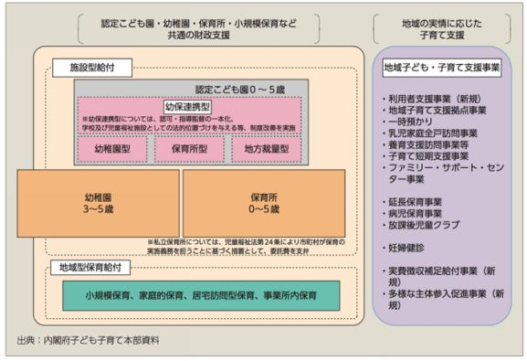
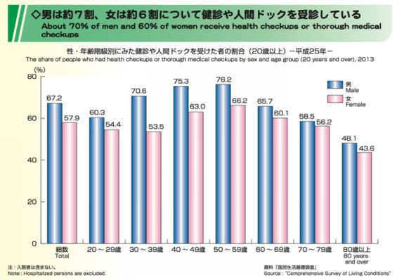
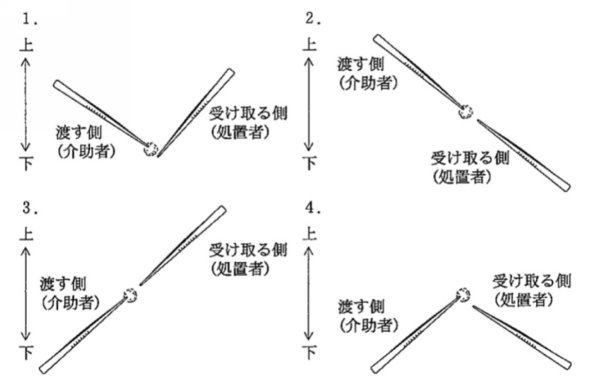
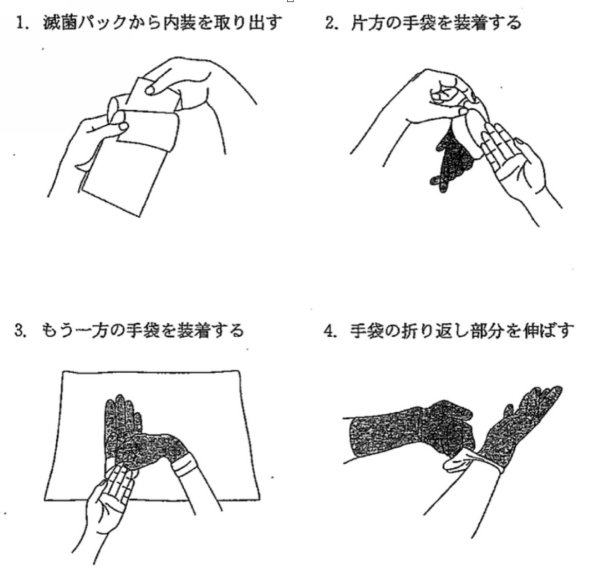
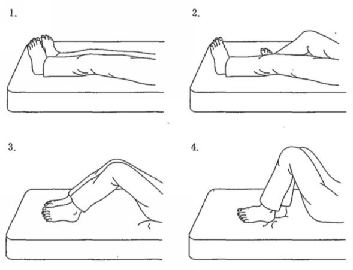
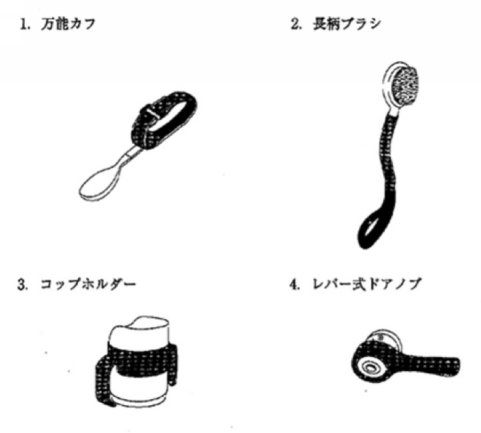
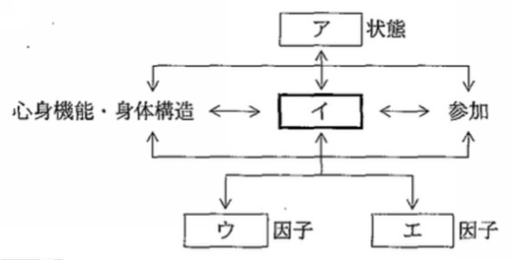
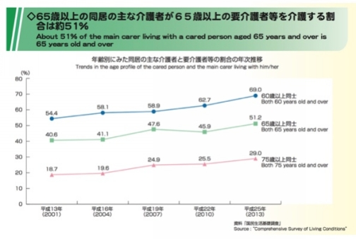
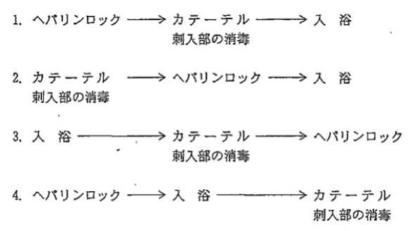

| 2019年国試用：大石の看護学2700問題 | |
| 大石 實 | |
| (2018) | |
201 9 年国試用
大石の看護学
270 0 問題
下田看護専門学校
校長 大石 實
https://oishim.weebly.com
shimodakangokocho@gmail.com
発行 201 8 年５月
序
本書は看護師国家試験を目指して勉強するための本である。問題は過去問と予想問題を掲載し、解説や重要事項も記載した。過去問の出典は厚生労働省のホームページ（下記）である。
http://www.mhlw.go.jp/seisakunitsuite/bunya/kenkou_iryou/iryou/topics/tp170425-03_04_05.html
http://www.mhlw.go.jp/seisakunitsuite/bunya/kenkou_iryou/iryou/topics/tp160411-03.html
http://www.mhlw.go.jp/seisakunitsuite/bunya/kenkou_iryou/iryou/topics/tp150511-03.html
http://www.mhlw.go.jp/seisakunitsuite/bunya/kenkou_iryou/iryou/topics/tp140512-03.html
http://www.mhlw.go.jp/seisakunitsuite/bunya/kenkou_iryou/iryou/topics/tp130723-01.html
http://www.mhlw.go.jp/topics/2012/04/tp0420-03.html
http://www.mhlw.go.jp/topics/2011/04/tp0414-3.html
http://www.mhlw.go.jp/topics/2010/04/tp0414-3.html
http://www.mhlw.go.jp/topics/2009/04/tp0422-3.html
http://www.mhlw.go.jp/topics/2008/04/tp0418-2.html
http://www.mhlw.go.jp/topics/2007/04/tp0427-4.html
http://www.mhlw.go.jp/topics/2006/04/tp0419-3.html
http://www.mhlw.go.jp/topics/2005/10/tp1028-3/index.html
過去問はそのまま用いたり、編集・加工等を行ったりした。
目次の出典は厚生労働省ホームページ （ http://www.mhlw.go.jp/file/04-Houdouhappyou-10803000-Iseikyoku-Ijika/0000158947.pd f ）の保健師助産師看護師国家試験出題基準平 成 3 0 年版で、編集・加工等を行った。目次の内容と異なる問題が掲載されている箇所もある。
総目次
（１）必修問題 問 1
（２）人体の構造と機能 問 270
（３）疾病の成り立ちと回復の促進 問 441
（４）健康支援と社会保障制度 問 649
（５）基礎看護学 問 789
（６）成人看護学 問 926
（７）老年看護学 問 1384
（８）小児看護学 問 1632
（９）母性看護学 問 1896
（ 1 0 ）精神看護学 問 2189
（ 1 1 ）在宅看護論 問 2389
（ 1 2 ）看護の統合と実践 問 2617
大石の看護学（１）
必修問題
目次
１．健康に関する指標 問 １
２．健康と生活 問 17
３．保健医療制度の基本 問 34
４．看護の倫理 問 44
５．関係法規 問 59
６．人間の特性 問 65
７．人間の成長と発達 問 71
８．患者と家族 問 95
９．主な看護活動展開の場と看護の機能 問 100
1 0 ．生命活動 問 116
1 1 ．病態と看護 問 136
1 2 ．薬物治療に伴う反応 問 171
1 3 ．基本技術 問 189
1 4 ．日常生活援助技術 問 202
1 5 ．患者の安全・安楽を守る技術 問 223
1 6 ．診療に伴う看護技術 問 237
目標Ⅰ．看護の社会的側面および倫理的側面について基本的な知識を問う。
１．健康の定義と理解
1 A ．健康の定義
a ．世界保健機関 〈 WH O 〉の定義
問 １ 世界保健機関 〈 WH O 〉が定義する健康について正しいのはどれか。
１．単に病気や虚弱のない状態である。
２．国家に頼らず個人の努力で獲得するものである。
３．肉体的、精神的及び社会的に満たされた状態である。
４．経済的もしくは社会的な条件で差別が生じるものである。
問１の正答 ３ （ WH O が定義する健康は、肉体的、精神的及び社会的に満たされた状態である）
b ．ウェルネスの概念
・ウェルネスは身体的、精神的、社会的に健康で安心な状態である。
問 ２ QO L を評価する上で最も重要なのはどれか。
１．本人の満足感
２．在院日数の短縮
３．生存期間の延長
４．高度医療の受療
問２の正答 １ （ QO L を評価する上で重要なのは、本人の満足感である）
1 B ．健康に関する指標
a ．総人口
・平 成 2 8 年の日本の総人口は、男 性 6,20 0 万人、女 性 6,50 0 万人である。
問 ３ 日本の平 成 2 8 年 （ 201 6 年）における総人口に最も近いのはどれか。
１．１億人
２．１億３千万人
３．１億６千万人
４．１億９千万人
問３の正答 ２（平 成 2 8 年の日本の総人口は、１ 億 2,70 0 万人である）
b ．年齢別人口
問 ４ 日本における平 成 2 7 年 （ 201 5 年）の高齢者人口の割合に最も近いのはどれか。
１ ． 17%
２ ． 27%
３ ． 37%
４ ． 47%
問４の正答 ２（平 成 2 7 年の高齢者人口 は 3,40 0 万人で、総人口に占める割合 は 27 % である）
c ．労働人口
・平 成 2 8 年の日本の総人口のうち、０ 〜 1 4 歳 が 13 %、 1 5〜 6 4 歳 が 60 %、 6 5 歳以上 が 27 % を占める。
問 ５ 日本の平 成 2 8 年 （ 201 6 年）の生産年齢人口の構成割合に最も近いのはどれか。
１ ． 50%
２ ． 60%
３ ． 70%
４ ． 80%
問５の正答 ２（日本の平 成 2 8 年の生産年齢人口の構成割合 は 60 % である）
d ．将来推計人口
・日本 の 206 0 年の人口 は 8,70 0 万人 、 6 5 歳以上人口割合 は 40 % と推計される。
問 ６ 日本の将来推計人口 で 202 0 年 の 6 5 歳以上が総人口に占める割合に最も近いのはどれか。
１ ． 15%
２ ． 30%
３ ． 45%
４ ． 60%
問６の正答 ２（日本の将来推計人口で 、 202 0 年 の 6 5 歳以上人口が総人口に占める割合 は 29 % である）
e ．世帯数
・日本の平 成 2 7 年の世帯総数は 、 5,00 0 万世帯である。
問 ７ 日本の平 成 2 7 年 （ 201 5 年）における家族の世帯構造で最も少ないのはどれか。
１．単独世帯
２．三世代世帯
３．夫婦のみの世帯
４．夫婦と未婚の子のみの世帯
問７の正答 ２（夫婦と未婚の子のみの世帯 が 29 % 、単独世帯 が 27 % 、夫婦のみの世帯 が 24 % 、ひとり親と未婚の子のみの世帯が ７% 、三世代世帯が ７% である）
f ．婚姻、家族形態
・日本の平 成 2 7 年における単独世帯が全世帯に占める割合は 、 27 % である。
問 ８ 日本の平 成 2 7 年 （ 201 5 年）における高齢者世帯が全世帯に占める割合に最も近いのはどれか。
１ ． 15%
２ ． 25%
３ ． 35%
４ ． 45%
問８の正答 ２（高齢者世帯は全世帯 の 25 % で、母子世帯は全世帯 の 1.6 % である）
g ．出生と死亡の動向
・平 成 2 7 年に生まれた子どもは 、 10 1 万人である。
・日本の平 成 2 6 年における母の年齢階級別出生率が最も高いのは 、 3 0〜 3 4 歳である。
・日本の平 成 2 7 年 （ 201 5 年）の死亡数は、 約 13 0 万人である。
問 ９ 日本の平 成 2 7 年 （ 201 5 年）における合計特殊出生率はどれか。
１ ． 0.96
２ ． 1.46
３ ． 1.96
４ ． 2.46
問９の正答 ２（１人の女性が生涯に産むと見込まれる子どもの数を推計した合計特殊出生率は、平 成 2 7 年におい て 1.4 6 である）
h ．死因の概要
・平 成 2 7 年における死因別にみた死亡率が最も高いのは、悪性新生物である。
・平 成 2 7 年人口動態統計によると悪性新生物死亡数で最も多い部位は、男性では肺で、女性では大腸である。
・平 成 2 7 年中における自殺の状況の、自殺者の原因・動機のうち最も多いのは健康問題である。
問 1 0 日本における平 成 2 7 年 （ 201 5 年） の 1 5 歳か ら 2 9 歳までの死因で最も多いのはどれか。
１．悪性新生物
２．肺炎
３．心疾患
４．自殺
問 1 0 の正答 ４（年齢階層別に死因の構成割合をみると、５〜９歳では悪性新生物および不慮の事故 、 1 0〜 1 4 歳では悪性新生物および自殺 、 1 5〜 2 9 歳では自殺および不慮の事故 、 3 0〜 4 9 歳では悪性新生物および自殺が多い）
i ．平均余命、平均寿命
・日本の平 成 2 6 年における女性の平均寿命は 、 8 7 年である。
問 1 1 平均寿命で正しいのはどれか。
１．０歳の平均余命である。
２ ． 2 0 歳の平均余命である。
３ ． 6 0 歳の平均余命である。
４．死亡者の平均年齢である。
問 1 1 の正答 １（平均寿命は、０歳の平均余命である）
1 C ．受療状況
a ．有訴者の状況
・平 成 2 5 年 （ 201 3 年）の国民生活基礎調査による有訴者率（人口千対）は 、 312. 4 である。
・６歳以上の健康状態で、自覚症状・通院・日常生活影響ともにない人の割合は 、 48 % である。
問 1 2 平 成 2 5 年における我が国の男性有訴者の自覚症状で最も多いのはどれか。
１．胃のもたれ・胸やけ
２．熱がある
３．歯が痛い
４．腰痛
問 1 2 の正答 ４（平 成 2 5 年国民生活基礎調査で、有訴者の自覚症状で最も多いのは、男性は腰痛、女性は肩こりである）
b ．有病率、罹患率
・我が国の平 成 2 7 年の児童の疾病・異常被患率で最も多いのは、幼稚園および小学校においては「う歯」で、中学校および高等学校においては「裸眼視 力 1. 0 未満の者」である。
問 1 3 平 成 2 6 年 （ 201 4 年）の国民健康・栄養調査において糖尿病が強く疑われる者の割合は男性でどれか。
１． 5.5%
２ ． 10.5%
３ ． 15.5%
４ ． 20.5%
問 1 3 の正答 ３（平 成 2 6 年国民健康・栄養調査によると、糖尿病が強く疑われる者の割合は、男 性 15.5 % 、女 性 9.8 % である）
c ．受療行動、受療率
・通院者率は男女とも高血圧症が高く、男性は糖尿病、女性は腰痛症も高い。
問 1 4 平 成 2 6 年 （ 201 4 年）の日本の女性における外来受療率が最も高い年齢階級はどれか。
１ ． 5 5〜 5 9 歳
２ ． 6 5〜 6 9 歳
３ ． 7 5〜 7 9 歳
４ ． 8 5〜 8 9 歳
問 1 4 の正答 ３（平 成 2 6 年患者調査の概況では、受療率が最も高い年齢階級は、入院男 性 9 0 歳以上、入院女 性 9 0 歳以上、外来男 性 8 0〜 8 4 歳、外来女 性 7 5〜 7 9 歳である）
d ．入院期間
・日本の一般診療所の平均在院日数は 、 1 7 日である。
問 1 5 平 成 2 6 年 （ 201 4 年）の日本の病院の平均在院日数に最も近いのはどれか。
１ ． 2 3 日
２ ． 3 3 日
３ ． 4 3 日
４ ． 5 3 日
問 1 5 の正答 ２（平 成 2 6 年９月中の全国の退院患者について、病院の平均在院日数 は 3 3 日である）
e ．外来受診の状況
・通院者率は、男性 は 4 0 歳代以降、女性 は 5 0 歳代以降で高血圧症が最も高い。
問 1 6 平 成 2 6 年 （ 201 4 年）患者調査において、外来患者の傷病で最も多いのはどれか。
１．神経系の疾患
２．消化器系の疾患
３．循環器系の疾患
４．呼吸器系の疾患
問 1 6 の正答 ２（外来患者を傷病分類別にみると、消化器系の疾患が最も多く、次いで循環器系の疾患が多い）
２．健康に影響する要因
2 A ．生活行動・習慣
a ．食事と栄養
・日本人の食事摂取基準 （ 201 5 年版）において、摂取量の減少を目指しているのはナトリウム（食塩）で 、 201 5 年からナトリウム（食塩相当量）の目標量は、男 性 8.0g / 日未満、女 性 7.0g / 日未満になった。
・平 成 2 6 年国民健康・栄養調査において、女性でやせ （ BMI<18. 5 ）の割合が最も高いの は 2 0〜 2 9 歳である。
・平 成 2 6（ 201 4 年）の国民健康・栄養調査によ る 4 0 歳代男性の肥満者の割合は 、 35 % である。
・脂質、蛋白質、炭水化物のエネルギー換算係数は、それぞれ ９ kcal/ g 、 ４ kcal/ g 、 ４ kcal/ g であり、脂質 １g が体内で代謝されたときに生じるエネルギー量は ９ kca l である。
・ 高 LD L コレステロール血症、 低 HD L コレステロール血症、高トリグリセライド血症は、脂質異常症である。
・小児の１型糖尿病は、インスリン療法が必須である。
問 1 7 健康日 本 2 1 （第二次）で平 成 3 4 年度 （ 202 2 年度）の目標として示されている１日当たりの食塩摂取量はどれか。
１． ５ g
２． ８ g
３ ． 11g
４ ． 14g
問 1 7 の正答 ２（平 成 3 4 年度の目標として示されている１日当たりの食塩摂取量は ８g である）
b ．排泄
問 1 8 皮膚の写真を示す。
矢印で示すのはどれか。
１．褥 瘡
２．胃 瘻
３．人工肛門
４．尿管皮膚瘻
問 1 8 の正答 ３（図は、人工肛門である）
c ．活動と運動、レクリエーション
・平 成 2 6 年の国民健康・栄養調査において、運動習慣がある者の割合は、男 性 31.2 % 、女 性 25.1 % である。年齢階級別にみると、その割合は男性で は 3 0 歳代、女性で は 2 0 歳代で最も低く、男性、女性と も 7 0 歳以上で最も高く、次い で 6 0 歳代で高い。
問 1 9 平 成 2 6 年 （ 201 4 年）の国民・栄養調査において、運動習慣のある女性の割合が最も高い年齢階級はどれか。
１ ． 3 0〜 3 9 歳
２ ． 4 0〜 4 9 歳
３ ． 5 0〜 5 9 歳
４ ． 6 0〜 6 9 歳
５ ． 7 0 歳以上
問 1 9 の正答 ５（運動習慣のある女性の割合が最も高い年齢階級は 、 7 0 歳以上である）
d ．休息と睡眠
・睡眠による休養感は、こころの健康に重要である。
問 2 0 レム睡眠で正しいのはどれか。
１．脳波上徐波を示す。
２．骨格筋は弛緩する。
３．心拍数は安定する。
４．高齢になると増加する。
問 2 0 の正答 ２（急速眼球運動を伴う睡眠をレム睡眠といい、骨格筋は弛緩する。急速眼球運動を伴わない睡眠をノンレム睡眠といい、脳波上徐波を示す）
e ．清潔と衣生活
問 2 1 右片麻痺患者での衣服の着脱で正しいのはどれか。
１．右上肢から着せ、右上肢から脱がす。
２．左上肢から着せ、左上肢から脱がす。
３．右上肢から着せ、左上肢から脱がす。
４．左上肢から着せ、右上肢から脱がす。
問 2 1 の正答 ３（片麻痺患者では、患側から着せ、健側から脱がす）
f ．喫煙、嗜好品
・喫煙年数のほかに、喫煙指数 （ Brinkma n 〈ブリンクマン〉指数）を決定するのは、１日の平均喫煙本数である。
・禁煙外来を受診することは、禁煙のための問題解決型のコーピング行動である。
・喫煙者に起こりやすい健康障害は、肺癌、慢性気管支炎、冠動脈疾患などである。
問 2 2 日本の平 成 2 6 年 （ 201 4 年）の国民健康・栄養調査における男性の喫煙習慣者の割合はどれか。
１ ． 12.2%
２ ． 32.2%
３ ． 52.2%
４ ． 72.2%
問 2 2 の正答 ２（習慣的に喫煙している者の割合 は 19.6 % であり、性別にみると、男 性 32.2 % 、女 性 8.5 % である）
g ．ストレス
・ストレス関連疾患には、胃・十二指腸潰瘍、本態性高血圧症、過換気症候群などがある。
問 2 3 ストレスで分泌されるホルモンはどれか。
１．カルシトニン
２．アドレナリン
３．バソプレシン
４．エリスロポエチン
問 2 3 の正答 ２（ストレスでアドレナリン、ノルアドレナリン、コルチゾールの分泌が増加する）
h ．メンタルヘルス
・メンタルヘルスは、心の健康である。
問 2 4 抑うつ状態の患者で正しいのはどれか。
１．活動性の低下から体重が増加する。
２．小さなことでも被害的に話す。
３．夕方に抑うつ気分が強い。
４．知的能力が低下する。
問 2 4 の正答 ２（抑うつ状態の人は小さなことでも被害的に話すことが多いが、知的能力は正常である）
i ．ライフスタイル
・生活習慣病の悪化による死亡が増えている。
問 2 5 飲酒に起因する健康障害はどれか。
１．肝硬変
２．膠原病
３ ． Ménièr e 〈メニエール〉病
４ ． Parkinso n 〈パーキンソン〉病
問 2 5 の正答 １（飲酒に起因する健康障害には、肝硬変などがある）
j ．性行動
・性感染症は性的接触を介して、誰もが感染する可能性がある。
問 2 6 日本の女性の平均閉経年齢に最も近いのはどれか。
１ ． 4 0 歳
２ ． 4 5 歳
３ ． 5 0 歳
４ ． 5 5 歳
問 2 6 の正答 ３（日本の女性の平均閉経年齢は 、 5 0 歳位である）
2 B ．生活環境
a ．水質、大気、土壌
・光化学オキシダントの原因物質は、窒素酸化物である。
・アルミニウムの摂取許容量を超える可能性があるのは小児の ５% で、小児以外では許容量を超えていない。
・地球温暖化をもたらす温室効果ガスは、二酸化炭素である。
問 2 7 大気汚染物質の二酸化硫黄 〈 SO 2 〉について正しいのはどれか。
１．発がん性がある。
２．じん肺を引き起こす。
３．酸性雨の原因物質である。
４．不完全燃焼によって発生する。
問 2 7 の正答 ３（二酸化硫黄は、酸性雨の原因物質である）
b ．食品衛生
・牛海綿状脳症 〈 BS E 〉に対する食品安全対策の目的は、クロイツフェルト・ヤコブ病の予防である。
問 2 8 食中毒の原因となるのはどれか。
１．セラチア
２．カンジダ
３．サルモネラ
４．クラミジア
問 2 8 の正答 ３（食中毒の原因となるのは、サルモネラ、カンピロバクター、ノロウイルス、黄色ブドウ球菌などである）
c ．住環境
・住居内での室内空気汚染に由来する様々な健康障害を総称して、シックハウス症候群という。
・レジオネラ肺炎は、循環式浴槽の水質汚染によって発生することが多い。
問 2 9 シックハウス症候群に関係する物質はどれか。
１．アスベスト
２．ダイオキシン類
３．放射性セシウム
４．ホルムアルデヒド
問 2 9 の正答 ４（シックハウス症候群に関係する物質は、ホルムアルデヒドである）
2 C ．社会環境
a ．職業と疾病
・白ろう病は、振動が原因となる職業性疾病である。
・じん肺は、炭坑従事者に起こりやすい職業性疾病である。
・ VD T 作業による健康障害には、視力障害がある。
問 3 0 アスベストが原因となる職業性疾病はどれか。
１．皮膚炎
２．腰痛症
３．中皮腫
４．胃潰瘍
問 3 0 の正答 ３（アスベストは石綿ともいい、悪性中皮腫や肺線維症の原因となる）
b ．労働環境、雇用形態
・業務上疾病で発生件数が最も多いのは「負傷に起因する疾病」であり、その中では腰痛（災害性腰痛）が多い。
問 3 1 労働基準法で原則として定められている休憩時間を除く１週間の労働時間はどれか。
１ ． 3 0 時間を超えない。
２ ． 4 0 時間を超えない。
３ ． 5 0 時間を超えない。
４ ． 6 0 時間を超えない。
問 3 1 の正答 ２（労働基準法で労働時間は１ 週 4 0 時間、１日８時間までと定められている。これを超えて法定時間外労働を行わせるためには、労使で時間外労働協定を締結し、これを労働基準監督署に届け出る必要がある）
c ．ワーク・ライフ・バランス
問 3 2 仕事と生活の調和（ワーク・ライフ・バランス）憲章が策定された年はどれか。
１ ． 194 7 年
２ ． 196 7 年
３ ． 198 7 年
４ ． 200 7 年
問 3 2 の正答 ４ （ 200 7 年に、ワーク・ライフ・バランス憲章が策定された）
d ．母性保護
・労働基準法は、妊産婦の時間外労働、休日労働、深夜業の制限などを義務付けている。
問 3 3 勤労女性に関して労働基準法で規定されているのはどれか。
１．介護休業
２．子の看護休暇
３．産前産後の休業
４．雇用における女性差別の禁止
問 3 3 の正答 ３（産後６週間は就業させてはならないが、その後の２週間は女性が請求した場合には就業できる。６週間（多胎妊娠の場合 は 1 4 週間）以内に出産する予定の女性が休業を請求したときには就業させてはならない）
３．看護で活用する社会保障
3 A ．医療保険制度の基本
a ．医療保険の種類
・日本の医療保険には、後期高齢者医療制度、国民健康保険、被用者保険（協会けんぽ、健康保険組合、共済組合）がある。
・健康診断は、給付対象外である。
問 3 4 国民健康保険の保険者はどれか。
１．国
２．都道府県
３．共済組合
４．健康保険組合
問 3 4 の正答 ２（国民健康保険の保険者は、都道府県と市町村である）
b ．国民皆保険
・日本では国民全員を、公的医療保険で保障している。
問 3 5 日本において国民皆保険制度が適用されているのはどれか。
１．医療保険
２．介護保険
３．火災保険
４．生命保険
問 3 5 の正答 １（日本の医療保険制度は、すべての国民が何らかの公的医療保険に加入する国民皆保険制度である）
c ．国民医療費
・平 成 2 5 年 （ 201 3 年）の国民医療費は、 約 4 0 兆円である。
・１人当たりの医療費が最も高い年齢階級は 、 6 5 歳以上である。
問 3 6 国民医療費に含まれる費用はどれか。
１．予防接種
２．正常な分娩
３．人間ドック
４．入院時の食事
問 3 6 の正答 ４（国民医療費には、診療費、薬局調剤医療費、入院時食事などが含まれる）
d ．高齢者医療制度
・高齢者は前期高齢者 （ 6 5〜 7 4 歳）と後期高齢者 （ 7 5 歳以上）に分けられる。
・後期高齢者医療制度は 、 7 5 歳以上を対象とした独立した医療保険制度である。
・後期高齢者医療制度が定められているのは、高齢者の医療の確保に関する法律である。
問 3 7 後期高齢者で正しいのはどれか。
１．外来受療率は前期高齢者よりも低い。
２．高齢者のう ち 8 0 歳以上をいう。
３．通院者の傷病で最も多いのは骨粗鬆症である。
４．老年人口に占める割合は前期高齢者よりも少ない。
問 3 7 の正答 ４（平 成 2 7 年９月の前期高齢者人口 は 1,75 0 万人、後期高齢者人口 は 1,64 0 万人である）
e ．給付の内容
・医療保険の給付の対象とならないのは健康診断、予防接種、美容整形などで、疾病の診察、薬剤の支給などは給付の対象となる。
問 3 8 国民健康保険に加入してい る 3 0 歳本人の自己負担割合はどれか。
１．なし
２．１割
３．２割
４．３割
問 3 8 の正答 ４ （ 3 0 歳本人の一部負担金の割合は、３割である）
3 B ．介護保険制度の基本
a ．保険者
・介護保険の保険者は、原則として市町村および特別区である。
問 3 9 介護保険で正しいのはどれか。
１．介護支援専門員は看護職か福祉職のいずれかである。
２．要介護認定は市町村が行う。
３．費用は５割が利用者負担である。
４．要介護状態区分は３か月に１回見直される。
問 3 9 の正答 ２（介護保険の保険者は、市町村である）
b ．被保険者
・介護保険制度の被保険者（加入者）は 、 6 5 歳以上の者（第１号被保険者） 、 4 0〜 6 4 歳の医療保険加入者（第２号被保険者）である。
・介護保険サービスは 、 6 5 歳以上の者は原因を問わず要支援・要介護状態となったときに 、 4 0〜 6 4 歳の者は末期がんや関節リウマチ等の老化による病気が原因で要支援・要介護状態になったときに、受けることができる。
問 4 0 介護保険制度における第１号被保険者の年齢で正しいのはどれか。
１ ． 4 0 歳以上
２ ． 5 5 歳以上
３ ． 6 5 歳以上
４ ． 7 5 歳以上
問 4 0 の正答 ３（第１号被保険者は 、 6 5 歳以上の者である）
c ．給付の内容
・介護保険の給付には、介護給付（施設サービス、居宅サービス）と予防給付（介護予防サービス）がある。
・介護支援専門員は居宅サービス計画の立案を行うが、通所介護の提供、福祉用具の貸与、短期入所生活介護の提供は行わない。
・介護保険制度で居宅サービスの支援限度基準額が最も高いのは、要介護５である。
・介護老人保健施設の設置目的が定められているのは、介護保険法である。
問 4 1 平 成 3 0 年８月の時点で、所得の高い利用者の介護保険制度における施設サービス費の自己負担の割合はどれか。
１．１割
２．２割
３．３割
４．５割
問 4 1 の正答 ３（月々の介護サービス費の自己負担額が世帯合計で上限額を超えた場合にその超えた分が払い戻されるが、所得の高い利用者の自己負担は平 成 3 0 年８月から原則３割になる）
d ．要介護・要支援の認定
・要介護認定の申請先は、市町村である。
問 4 2 要介護状態の区分の審査判定業務を行うのはどれか。
１．介護認定審査会
２．介護保険審査会
３．社会福祉協議会
４．社会保障審議会
問 4 2 の正答 １（要介護状態の区分の審査判定業務を行うのは、介護認定審査会である）
e ．地域支援事業
問 4 3 訪問看護ステーション事業で正しいのはどれか。
１．ステーション管理者は医師である。
２．従事者にはホームヘルパーが含まれる。
３．事業の一環に給食サービスが含まれる。
４．訪問看護には医師の指示書が必要である。
問 4 3 の正答 ４（介護保険でも医療保険でも、訪問看護には医師の訪問看護指示書が必要である）
４．看護における倫理
4 A ．基本的人権の擁護
a ．個人の尊厳
・尊厳を保持して生活を送ることができる社会を、構築していく必要がある。
問 4 4 患者の自己決定に最も関与するのはどれか。
１．父権主義
２．医師の裁量権
３．コンプライアンス
４．インフォームド・コンセント
問 4 4 の正答 ４（患者の自己決定に最も関与するのは、インフォームド・コンセントである）
b ．患者の権利
・看護師は、患者の生命、人間としての権利を尊重する。
問 4 5 患者の権利主張を支援・代弁していくのはどれか。
１．アドボカシー
２．リビングウィル
３．パターナリズム
４．コンプライアンス
問 4 5 の正答 １（権利擁護は、アドボカシーである）
c ．自己決定権と患者の意思
・無危害原則、善行原則、自己決定原則、正義原則が、生命倫理四原則である。
問 4 6 患者の自己決定を擁護する看護師の行動 で 誤ってい る のはどれか。
１．患者が理解できない説明は省略する。
２．患者の希望を尊重する。
３．患者に説明し同意をえる。
４．患者が質問する機会を作る。
問 4 6 の正答 １（患者が理解できない説明を省略するのは、患者の自己決定を擁護する行動ではない）
d ．インフォームド・コンセント
・インフォームド・コンセントは、ヘルシンキ宣言で提唱された。
・インフォームド・コンセントは、説明したうえで同意を得ることである。
問 4 7 医療従事者による十分な説明に基づく患者の同意を示すのはどれか。
１．エンパワメント
２．コンプライアンス
３．リクスマネジメント
４．インフォームド・コンセント
問 4 7 の正答 ４（十分な説明に基づく患者の同意を示すのは、インフォームド・コンセントである）
e ．ノーマライゼーション
・「障害の程度や特質にかかわらず、同年齢の市民と同等の基本的権利を有すること」を示すものであり「障害者や高齢者を特別視せず、可能な限り通常の市民生活を送ることができるようにする」という考え方は、ノーマライゼーションである。
問 4 8 全ての人が差別されることなく同じように生活できるという考え方を示しているのはどれか。
１．ヘルスプロモーション
２．ノーマライゼーション
３．プライマリヘルスケア
４．エンパワメント
問 4 8 の正答 ２（ノーマライゼーションは、障害者も健常者と同様の生活ができるように支援するべきという考え方である）
f ．情報管理（個人情報の保護）
・個人情報は、個人の人格尊重の理念の下に慎重に取り扱われるべきものである。
問 4 9 看護記録の取り扱いで正しいのはどれか。
１．記載間違いは修正液を使って訂正する。
２．ケアの終了後直ちに記載する。
３．カンファレンスの資料としてコピーする。
４．法的に永久保存が必要である。
問 4 9 の正答 ２（看護記録は、ケアの終了後直ちに記載する）
4 B ．倫理原則
a ．自律尊重
問 5 0 自律尊重はどれか。
１．自律神経を大事にする。
２．成人後見制度を利用する。
３．自律的な患者の意思決定を尊重する。
４．家族の意見を尊重する。
問 5 0 の正答 ３（自律的な患者の意思決定を尊重するのが、自律尊重である）
b ．善行
問 5 1 倫理原則の「善行」はどれか。
１．患者に身体的損傷を与えない。
２．患者に利益をもたらす医療を提供する。
３．すべての人々に平等に医療を提供する。
４．患者が自己決定し選択した内容を尊重する。
問 5 1 の正答 ２（患者のために最善を尽くすのが、善行である）
c ．公正、正義
問 5 2 倫理原則の「正義」はどれか。
１．約束を守る。
２．害を回避する。
３．自己決定を尊重する。
４．公平な資源の配分を行う。
問 5 2 の正答 ４（公平な資源の配分を行うのが、正義である）
d ．誠実、忠誠
・インシデントレポートは、当事者以外が報告してもよい。
問 5 3 インシデントレポートの目的はどれか。
１．責任の追及
２．再発の防止
３．懲罰の決定
４．相手への謝罪
問 5 3 の正答 ２（インシデントレポートの目的は、再発の防止である）
e ．無危害
・医療機関は、医療安全管理、感染管理、医薬品安全管理、医療機器安全管理の責任者をそれぞれ配置しなければならない。
・医療機関は医療安全推進のための委員会を設置し、全職員を対象に医療の安全を確保するための研修を開催する。
問 5 4 機能別看護方式の説明で正しいのはどれか。
１．１人の看護師が毎日異なる患者を受け持つ。
２．内容別に分類した看護業務を複数の看護師が分担して実施する。
３．１人の看護師が１人の患者を入院から退院まで継続して受け持つ。
４．患者をいくつかのグループに分け、各グループを専属の看護師チームが受け持つ。
問 5 4 の正答 ２（機能別看護方式は、内容別に分類した看護業務を複数の看護師が分担して実施する方式である）
4 C ．看護師等の役割
a ．説明責任
問 5 5 アカウンタビリティはどれか。
１．銀行口座
２．説明責任
３．インターネットサイト
４．支払い能力
問 5 5 の正答 ２（アカウンタビリティは、説明責任である）
b ．倫理的配慮
・苦痛の緩和は、国際看護師協会 〈 IC N 〉による看護師の倫理綱領における看護師の基本的責任である。
問 5 6 臨床研究を行うとき、研究対象者の立場を擁護するために審査を行う組織はどれか。
１．教育委員会
２．倫理委員会
３．医療事故調査委員会
４．院内感染対策委員会
問 5 6 の正答 ２（臨床研究を行うとき、研究対象者の立場を擁護するために審査を行う組織は倫理委員会である）
c ．権利擁護〈アドボカシー〉
問 5 7 看護師に求められるアドボケーターの役割はどれか。
１．指示者
２．責任者
３．代弁者
４．調整者
問 5 7 の正答 ３（自己の権利を表明することが困難な患者の代わりに、看護師が患者の権利を代弁する）
d ．エンパワメント
問 5 8 患者・家族が自らの生活をコントロールできるように援助するのはどれか。
１．エンリッチメント
２．エンパワメント
３．ドミネーション
４．オーダリング
問 5 8 の正答 ２（患者・家族が自らの生活をコントロールできるように援助するのは、エンパワメントである）
５．看護に関わる基本的法律
5 A ．保健師助産師看護師法
a ．保健師助産師看護師の定義
・保健師とは厚生労働大臣の免許を受けて、保健師の名称を用いて、保健指導に従事することを業とする者をいう。
・助産師とは、厚生労働大臣の免許を受けて、助産又は妊婦、じょく婦若しくは新生児の保健指導を行うことを業とする女子をいう。
・看護師とは、厚生労働大臣の免許を受けて、傷病者若しくはじょく婦に対する療養上の世話又は診療の補助を行うことを業とする者をいう。
・診断書の交付は、医師の指示がある場合でも看護師に禁止されている業務である。
問 5 9 看護師が業務上行うこと が できな い のはどれか。
１．静脈内注射の実施
２．心マッサージの実施
３．創部の消毒
４．薬剤の処方
問 5 9 の正答 ４（薬剤の処方は、看護師が行うことができない）
b ．保健師助産師看護師の業務
・保健師助産師看護師法に基づく看護師免許の付与における欠格事由は、麻薬、大麻またはあへんの中毒者である。
問 6 0 医師の指示を受けて看護師が行うことのできる業務をどれか。
１．薬剤の処方
２．死亡の判定
３．静脈内注射
４．診断書の交付
問 6 0 の正答 ３（医師の指示があれば、看護師は静脈内注射を行うことができる）
c ．保健師助産師看護師の義務（守秘義務、業務従事者届出の義務、臨床研修等を受ける努力義務）
・患者の友人から病状を聞かれたとき答えられないと説明するのは、看護師の行動で適切である。
問 6 1 保健師助産師看護師法で規定されている看護師の義務はどれか。
１．記録の保存
２．秘密の保持
３．勤務時間の報告
４．関係機関との連携
問 6 1 の正答 ２（秘密の保持は、看護師の義務である）
d ．養成制度
・看護師の養成は看護専門学校が多いが、４年制大学での養成数が増加している。
問 6 2 看護師国家試験に合格しても、免許が与えられないことがあるのはどれか。
１．日常生活に補聴器が必要な者
２．摂食障害の治療を受けたことのある者
３．覚醒剤の使用によって罰金を払った者
４．脊髄損傷によって下半身が麻痺している者
問 6 2 の正答 ３（麻薬中毒者、罰金以上の刑に処せられた者には、看護師免許が与えられないことがある）
5 B ．看護師等の人材確保の促進に関する法律
a ．基本方針
・新たに業務に従事する看護師に対する臨床研修実施の努力義務が規定されているのは、看護師等の人材確保の促進に関する法律である。
問 6 3 看護師等の人材確保の促進に関する法律に記載されている事項はどれか。
１．資質の向上
２．免許証の交付
３．労働時間の設定
４．育児休業の期間
問 6 3 の正答 １（資質の向上は、看護師等の人材確保に関する法律に記載されている）
b ．ナースセンター
・我が国の平 成 2 6 年における看護職員の就業者数は、 約 16 0 万人である。
問 6 4 看護師の業務従事者届の届出の間隔として規定されているのはどれか。
１．１年ごと
２．２年ごと
３．３年ごと
４．４年ごと
問 6 4 の正答 ２（医療従事者には隔年で実施される届出調査があり、２年に一度届け出る）
目標Ⅱ．看護の対象および看護活動の場と看護の機能について基本的な知識を問う。
６．人間の特性
6 A ．人間の欲求
a ．基本的欲求
・マズロ ー , A. H . の基本的欲求階層論で、最も低次の欲求は生理的欲求で、最も高次の欲求は自己実現欲求である。
・最優先で対応する欲求は、生理的な欲求である。
・安全の欲求を充足するための行動は、危険の回避である。
問 6 5 マズロ ー , A. H . の基本的欲求階層論で最高次の欲求はどれか。
１．安全の欲求
２．承認の欲求
３．生理的欲求
４．自己実現の欲求
５．所属と愛の欲求
問 6 5 の正答 ４（最高次の欲求は、自己実現の欲求である）
b ．社会的欲求
・「自分の能力を生かしたい」、「自分の可能性を最高に発揮したい」は、自己実現の欲求である。
・帰属の欲求は、社会的欲求である。
問 6 6 スピリチュアルな苦痛はどれか。
１．手術後の創部痛がある。
２．社会的役割を遂行できない。
３．治療の副作用に心配がある。
４．人生の価値を見失い苦悩する。
問 6 6 の正答 ４（人生の価値を見失い苦悩するのは、スピリチュアルな苦痛である）
6 B ．対象の特性
a． QOL
・ QO L は、生活の質である。
問 6 7 QO L を評価する項目で最も重要なのはどれか。
１．高度医療の受療
２．本人の満足感
３．乳児死亡率
４．生存期間
問 6 7 の正答 ２ （ QO L を評価する項目で最も重要なのは、本人の満足感である）
b ．ニーズ
・患者ニーズは、院内に意見箱を設置し分析、患者へのアンケート調査などで把握する。
問 6 8 訪問看護師が行う在宅療養者への清潔ケアで適切なのはどれか。
１．家族がいないときは、療養者のプライバシーへの配慮は不要である。
２．療養者の清潔習慣を尊重しながら方法を検討する。
３．使い捨てのタオルを新しく購入してもらう。
４．訪問時は毎回全身の清潔ケアを行う。
問 6 8 の正答 ２（療養者の清潔習慣を、尊重する）
c ．健康や疾病に対する意識
・幸福感を判断する際に重視する事項は、健康状況が多い。
問 6 9 世界保健機関 （ WH O ）のヘルスプロモーションの考え方で適切なのはどれか。
１．プライマリーヘルスケアとは相反する。
２．専門職による健康教育が主軸になる。
３．人々が自らの健康をコントロールする。
４．三次医療体制の強化を目指し整備する。
問 6 9 の正答 ３（ヘルスプロモーションとは、人々が自らの健康とその決定要因をコントロールし、改善することができるようにするプロセスである）
d ．疾病・障害の受容
・フィンクの危機モデルの第１段階は、衝撃である。
・コーンの危機プロセスは、ショッ ク→ 回復への期 待→ 悲 嘆→ 防 衛→ 適応である。
・病気になる前にしておけばよかったと患者が思うことでは、ストレスをためないが多い。
問 7 0 Kübler-Ros s 〈キューブラ・ロス〉による死にゆく人の心理過程で第１段階はどれか。
１．死なねばならないことへの怒り
２．延命のための取り引き
３．死を認めようとしない否認
４．死の恐怖や不安による抑うつ
問 7 0 の正答 ３（第１段階は否認、第２段階は怒り、第３段階は取り引き、第４段階は抑うつ、第５段階は受容である）
７．人間のライフサイクル各期の特徴と生活
7 A ．胎児期
a ．形態的発達と異常
・受精から着床開始までの期間は、６〜７日である。
・精子の性染色体は 、X 染色体 とY 染色体の２種類がある。
・ Dow n 〈ダウン〉症候群を生じるのは 、 2 1 トリソミーである。
・ファロー４徴症は、先天性疾患である。
・心房中隔欠損症は、先天異常のことが多い。
・肺サーファクタントの分泌によって胎児の肺機能が成熟する時期は、在 胎 3 4 週ころである。
・妊娠末期の胎児心拍数の正常範囲は 、 12 0〜 160bp m である。
・正規産は、妊 娠 3 7 週０日か ら 4 1 週６日である。
・分娩第２期は、子宮口全開大から胎児娩出までである。
問 7 1 胎児の卵円孔の位置で正しいのはどれか。
１．右心房と左心房の間
２．右心室と左心室の間
３．大動脈と肺動脈の間
４．門脈と下大静脈の間
問 7 1 の正答 １（胎児期の心臓には、右心房と左心房の間に卵円孔がある）
7 B ．新生児・乳児期
a ．発達の原則
・低出生体重児の基準は 、 2,500 g 未満である。
・母乳栄養で不足しやすいのは、ビタミ ンK である。
・大泉門が閉鎖する時期は、１歳６か月である。
・乳歯がはえそろう時期は、２歳６か月である。
・入院中の乳児のバイタルサインで最初に測定するのは、呼吸である。
問 7 2 言語の発達で２歳ころに可能となるのはどれか。
１．喃語を話す。
２．音を真似る。
３．二語文を話す。
４．接続詞を使う。
問 7 2 の正答 ３（２歳ころに、二語文を話すのが可能になる）
b ．身体の発育
・３パーセンタイル未満のものは、全体の ３% いる。
・ Mor o 〈モロー〉反射は出生時にみられ、生後３か月ころに消失する。
問 7 3 原始反射はどれか。
１．手掌把握反射
２．視性立ち直り反射
３．パラシュート反射
４ ． Landa u 〈ランドー〉反射
問 7 3 の正答 １（手掌把握反射は、原始反射である）
c ．運動能力の発達
・つかまり立ちは、生 後 1 1〜 1 2 か月の乳児 の 90 % 以上が可能である。
問 7 4 日本版デンバー式発達スクリーニング検査 で 90 % の乳児の首がすわる月齢基準はどれか。
１．２か月
２．４か月
３．６か月
４．８か月
問 7 4 の正答 ２（首がすわる月齢基準は４か月であり、生後６か月児で首がすわらないと発達の遅れを疑う）
d ．栄養
・離乳の開始は、生後５〜６か月頃が適当である。
・ Kau p 〈カウプ〉指数は乳幼児の肥満の目安となり、体重 （g）÷ 身長 （ c m ）の２ 乗 ×1 0 で計算する。
問 7 5 標準的な発育をしている児において体重が出生時の約２倍になる月齢はどれか。
１．１か月
２．３か月
３．６か月
４．９か月
問 7 5 の正答 ２（体重が出生時の約２倍になるのは、生後３〜４か月である）
e ．親子関係
・乳児期の特徴は、分離不安である。
問 7 6 乳幼児で人見知りが始まる時期はどれか。
１．生後１〜２か月
２．生後６〜８か月
３．生 後 1 8〜 2 4 か月
４．生 後 3 6〜 4 2 か月
問 7 6 の正答 ２（生後６ 〜 1 2 か月に、人見知りが始まる）
7 C ．幼児期
a ．身体の発育
・ 5 0 パーセンタイル値は、中央値ともよばれる。
問 7 7 幼児期後期における呼吸の型はどれか。
１．肩呼吸
２．胸式呼吸
３．腹式呼吸
４．胸腹式呼吸
問 7 7 の正答 ４（乳児は腹式呼吸、成人は胸式呼吸であり、幼児期後期は腹式呼吸と胸式呼吸が半々になる）
b ．運動能力の発達
・ひとり歩きは、生後１年３〜４か月の幼児 の 90 % 以上が可能である。
問 7 8 運動遅滞を疑うのはどれか。
１．３か月でスプーンが持てない。
２．１歳でスキップができない。
３．３歳で両親の名前が言えない。
４．５歳で２本の線の長い方が選べない。
問 7 8 の正答 ４（４歳で、２本の線の長い方を選べるようになる）
c ．言語の発達
・乳歯がすべて生えそろったときの本数は 、 2 0 本である。
問 7 9 乳歯で最初に生えるのはどれか。
１．切 歯
２．犬 歯
３．小臼歯
４．大臼歯
問 7 9 の正答 １（乳歯で最初に生えるのは、切歯である）
d ．社会性の発達
・３〜６歳児の課題は主体性で、「この指とまれ」と遊びをリードできるようになる。
問 8 0 標準的な発育をしている児において脳重量が成人の 約 90 % に達する年齢はどれか。
１．５〜６歳
２．８〜９歳
３ ． 1 1〜 1 2 歳
４ ． 1 5〜 1 6 歳
問 8 0 の正答 １（脳重量が成人の 約 90 % に達する年齢は、５〜６歳である）
e ．基本的生活習慣の確立
・基本的生活習慣は、食事、睡眠、排泄、着脱衣、清潔である。
・夜尿は、５歳児で 約 10 % にみられる。
・おねしょは、５〜６歳まで様子をみてよい。
問 8 1 クラウ ス , M. H . とケネ ル , J. H . が提唱した母子相互作用について正しいのはどれか。
１．遺伝的な親子関係を基盤として発生する。
２．依存関係の１つとしてとらえられる。
３．分娩を契機として形成が始まる。
４．愛着行動によって促進される。
問 8 1 の正答 ４（母子相互作用は、愛着行動によって促進される）
7 D ．学童期
a ．運動能力の発達、体力の特徴
・学童期とは、小学校に入学してから卒業するまでの６年間をいう。
問 8 2 学童期の正常の脈拍数はどれか。
１． 5 0〜 7 0 回
２． 8 0〜 10 0 回
３ ． 11 0〜 13 0 回
４ ． 14 0〜 16 0 回
問 8 2 の正答 ２（学童期の正常な脈拍数は 、 8 0〜 10 0回/ 分である）
b ．社会性の発達
・小学校低学年では少人数での遊びが中心で、学年が進むにつれ集団遊びを好むようになる。
問 8 3 父、母、小学４年生と１年生の息子２人の４人家族。兄が交通事故で頸髄損傷になり、退院後、自宅で暮らすことになった場合、家族関係を維持するための指導で適切なのはどれか。
１．弟の退行現象に注意する。
２．患児の世話は全面的に母親がする。
３．事故については家族の中で話題にしない。
４．患児の要求を最優先する。
問 8 3 の正答 １（親の注意が患児に向けられると、弟は寂しさで幼児的な行動をすることがある）
c ．学習に基づく行動
・学童期には、学習によって記憶力が著しく発達する。
問 8 4 正しい組合せはどれか。
１．構成遊びーーー積み木
２．模倣遊びーーー絵 本
３．受容遊びーーーブランコ
４．感覚遊びーーーままごと
問 8 4 の正答 １（積み木は、構成遊びである）
7 E ．思春期
a ．第二次性徴
・第二次性徴は、ホルモン変化を伴う。
・アンドロゲンは思春期に分泌が増加する。
・初経を発来させるホルモンは、卵胞ホルモンである。
・精通は、第二次性徴による身体の変化である。
問 8 5 思春期の特徴はどれか。
１．分離不安
２．第二次性徴
３．第一次反抗期
４．ギャングエイジ
問 8 5 の正答 ２（第二次性徴は、思春期の特徴である）
b ．アイデンティティの確立
・自我形成は、思春期の特徴である。
問 8 6 思春期に特徴的にみられるのはどれか。
１．愛着行動
２．分離不安
３．自己同一性の確立
４．基本的信頼関係の確立
問 8 6 の正答 ３（自己同一性の確立は、思春期に特徴的にみられる）
c ．親からの自立
・思春期には、親から自立したいという欲求が高まる。
・親からの干渉を嫌うようになるのは、思春期の子どもの特徴である。
問 8 7 思春期にみられる感情の特徴はどれか。
１．情緒的に安定し穏やかになる。
２．思い通りにならないと泣き叫ぶ。
３．親に対して強い愛情表現を示す。
４．依存と独立のアンビバレント〈両価的〉な感情をもつ。
問 8 7 の正答 ４（思春期には、依存と独立のアンビバレントな感情をもつ）
d ．異性への関心
・思春期は、異性との交際にあこがれる時期である。
問 8 8 異性への興味・関心が最も高まる時期はどれか。
１．乳児期
２．幼児期
３．学童期
４．思春期
問 8 8 の正答 ４（思春期に、異性への興味・関心が高まる）
7 F ．成人期
a ．社会的責任と役割
・日本では、 満 2 0 歳以上の男女を成人という。
問 8 9 人口年齢区分におけ る 1 5 歳か ら 6 4 歳までの年齢区分はどれか。
１．従属人口
２．年少人口
３．老年人口
４．生産年齢人口
問 8 9 の正答 ４（年齢３区分では、０ 〜 1 4 歳が年少人口 、 1 5〜 6 4 歳が生産年齢人口 、 6 5 歳以上が老年人口である）
b ．生殖機能の成熟と衰退
・女性の更年期障害に最も関与するホルモンは、性ホルモンである。
・性ホルモンのうち卵胞ホルモンが、閉経後に顕著に低下する。
問 9 0 更年期の女性で増加するのはどれか。
１．卵胞刺激ホルモン 〈 FS H 〉
２．テストステロン
３．プロラクチン
４．エストロゲン
問 9 0 の正答 １（更年期の女性で増加するのは、卵胞刺激ホルモンである）
c ．基礎代謝の変化
・基礎代謝量が最も多い時期は、青年期である。
・１日当たりの基礎代謝量は、成人女性 で 1,200 kca l 、成人男性 で 1,500 kca l である。
問 9 1 成人期において基礎代謝量が最も多い時期はどれか。
１．青年期
２．壮年前期
３．壮年後期
４．向老期
問 9 1 の正答 １（成人期において基礎代謝量が多い時期は、青年期である）
7 G ．老年期
a ．身体的機能の変化
・空腹時血糖は、加齢に伴い老年期に上昇する。
・体温調節機能の低下は、老年期の身体的な特徴である。
・高齢者の転倒による骨折で最も多い部位は、大腿骨である。
・高齢者に現れやすい歩行の特徴は、すり足歩行である。
・老年期に、胃液の分泌は減少する。
問 9 2 老年期の身体的な特徴はどれか。
１．総水分量が増加する。
２．胸腺の重量が増加する。
３．嗅覚の閾値が低下する。
４．高音域における聴力が低下する。
問 9 2 の正答 ４（老年期に、高音域における聴力が低下する）
b ．認知能力の変化
・教育や学習などの経験によって発達した能力は高齢になっても保たれやすいが、新しい環境に適応するために問題を解決する能力は加齢に伴って衰えやすい。
問 9 3 加齢によって衰えやすい機能はどれか。
１．記銘力
２．洞察力
３．判断力
４．統合力
問 9 3 の正答 １（加齢によって衰えやすい機能は、記銘力である）
c ．心理社会的変化
・喪失体験をした人の心は、喪 失→ 悲 嘆→ 回復という経過をたどる。
問 9 4 これまでに獲得した知識を統合して物事に対処する能力はどれか。
１．記銘力
２．想起力
３．結晶性知能
４．流動性知能
問 9 4 の正答 ３（結晶性知能は過去の経験が土台となる能力で、流動性知能は新しい場面への適応に必要な能力である）
８．看護の対象としての患者と家族
8 A ．家族の機能
a ．家族関係
・家族機能は、家族のきずな、かじとり、境界の柔軟性で構成される。
問 9 5 患者を支えるための望ましい家族関係はどれか。
１．依 存
２．干 渉
３．協 力
４．従 属
問 9 5 の正答 ３（患者を支えるための望ましい家族関係は、協力である）
b ．家族構成員
・家族は、同居の親族と非同居の親族を含む。
・日本における平 成 2 7 年の家族の世帯構造で最も多いのは、夫婦と未婚の子のみの世帯である。
問 9 6 平 成 2 5 年 （ 201 3 年）の国民生活基礎調査で、要介護者からみた主な介護者の続柄で割合が最も多いのはどれか。
１．同居の父母
２．別居の家族
３．同居の配偶者
４．同居の子の配偶者
問 9 6 の正答 ３（介護者は、同居の配偶者が多い）
c ．疾病が患者・家族に与える心理・社会的影響
・疾病によっては、チーム医療が必要である。
問 9 7 在宅療養者と家族とに関わる訪問看護師の基本的な対応で適切なのはどれか。
１．指示的な対応をする。
２．必要な情報や代替案を提供する。
３．利用するサービスの選定を行う。
４．看護師と家族で介護方針を決める。
問 9 7 の正答 ２（必要な情報や代替案を提供するのは、在宅療養者と家族とに関わる訪問看護師の対応で適切である）
8 B ．家族形態の変化
a ．家族の多様性
・現代社会では、ライフスタイルが多様化している。
問 9 8 平 成 2 7 年 （ 201 5 年）の国民生活基礎調査で、単独世帯の占める割合はどれか。
１． 6.8%
２ ． 26.8%
３ ． 46.8%
４ ． 66.8%
問 9 8 の正答 ２（単独世帯は、全世帯 の 26.8 % を占める）
b ．構成員の変化
・ 6 5 歳以上の者のいる世帯の全世帯に占める割合は 、 46.7 % である。
問 9 9 平 成 2 7 年 （ 201 5 年）の国民生活基礎調査で、世帯総数における核家族世帯の割合に最も近いのはどれか。
１ ． 30%
２ ． 45%
３ ． 60%
４ ． 75%
問 9 9 の正答 ３（核家族とは、夫婦とその未婚の子ども、夫婦のみ、父親または母親とその未婚の子ども、のいずれかからなる家族で、日本では核家族世帯が 約 60 % を占める）
９．主な看護活動の場と看護の機能
9 A ．看護活動の場と機能
a ．病院
・病院は 、 2 0 人以上の患者を入院させるための施設を有する。
・病院の種類には、精神科病院と一般病院がある。
・医療法で「地域の医療従事者の資質の向上を図るための研修を行わせる能力を有すること」と定められているのは、地域医療支援病院である。
問 10 0 一般病床の看護職員の配置基準は、入院患者【 】人に対して看護師及び准看護師１人と法令で定められている。
【 】に入るのはどれか。
１．２
２．３
３．４
４．６
問 10 0 の正答 ２（入院患者３人に対して、看護師及び准看護師１人である）
b ．診療所
・医療施設の種類には、病院、一般診療所、歯科診療所がある。
問 10 1 医療法には「診療所とは、患者を入院させるための施設を有しないもの又【 】人以下の患者を入院させるための施設を有するもの」と定められている。
【 】に入るのはどれか。
１ ． 16
２ ． 17
３ ． 18
４ ． 19
問 10 1 の正答 ４（診療所とは、患者を入院させるための施設を有しないもの 又 1 9 人以下の患者を入院させるための施設を有するものである）
c ．助産所
・助産所は 、 1 0 人以上の入院施設を有してはならない。
問 10 2 分娩経過が正常な産婦の産痛緩和で適 切 でな い のはどれか。
１．マッサージ法を指導する。
２．産婦と一緒に呼吸法を行う。
３．安静に臥床するように指導する。
４．腹部の温庵法を行う。
問 10 2 の正答 ３（安静に臥床するよう指導するのは、産痛緩和で適切でない）
d ．訪問看護ステーション
問 10 3 訪問看護ステーションの管理者になることができる職種はどれか。
１．医 師
２．看護師
３．介護福祉士
４．理学療法士
問 10 3 の正答 ２（訪問看護ステーションの管理者となることができるのは、看護師である）
e ．介護保険施設
・特別養護老人ホーム（特養）、介護老人保健施設（老健）は、介護保険施設である。
・入院は必要ないがリハビリテーションが必要な要介護度１〜５の人は、介護老人保健施設を利用できる。
問 10 4 介護老人保健施設はどれか。
１．医業を行い 、 2 0 名以上の患者が入院できる施設
２．医業を行い、患者が入院できるための施設が無い施設
３．要介護者が入所し、必要な医療や日常生活の援助を受ける施設
４．認知症の要介護者が共同生活をしながら、日常生活の援助を受ける施設
問 10 4 の正答 ３（介護老人保健施設は、要介護者が入所し、必要な医療や日常生活の援助を受ける施設である）
f ．地域包括支援センター
・地域包括支援センターは市町村（特別区を含む）に設置され、介護予防などを行う。
問 10 5 介護保険法に基づき設置されるのはどれか。
１．老人福祉センター
２．精神保健福祉センター
３．地域包括支援センター
４．都道府県福祉人材センター
問 10 5 の正答 ３（地域包括支援センターは、介護保険法に基づき設置される）
g ．市町村
・市町村保健センターは、母子保健、老人保健などを担う。
問 10 6 市町村保健センターの業務はどれか。
１．廃棄物の処理
２．人口動態統計調査
３．看護師免許申請の受理
４．地域住民の健康づくり
問 10 6 の正答 ４（地域住民の健康づくりは、市町村保健センターの業務である）
h ．保健所
・保健所の設置主体は、都道府県である。
問 10 7 地域保健法に基づく保健所の事業 で 誤ってい る のはどれか。
１．環境衛生
２．健康増進
３．疾病予防
４．要介護認定
問 10 7 の正答 ４（要介護認定は、市町村の事業である）
i ．学校
問 10 8 日本人の体格指数 （ BM I ）で「普通（正常）」はどれか。
１ ． 17
２ ． 22
３ ． 27
４ ． 32
問 10 8 の正答 ２ （ BM Iが 18. 5 未満は低体重 、 18. 5〜 2 5 未満は普通体重 、 2 5 以上は肥満である）
j ．企業
・労働者派遣では、法律上の雇い主は人材派遣会社である。
問 10 9 雇用の分野における男女の均等な機会及び待遇の確保等に関する法律の目的はどれか。
１．子の看護休暇の取得促進
２．女性労働者の最低賃金の設定
３．雇用分野における男女差別の解消
４．就業制限業務の規定による女性労働者の保護
問 10 9 の正答 ３（男女の均等な機会及び待遇の確保等に関する法律は、雇用の分野における男女の均等な機会及び待遇の確保を図るとともに、女性労働者の就業に関して妊娠中及び出産後の健康の確保を図る等の措置を推進することを目的とする）
9 B ．看護の機能と役割
a ．訪問看護
・訪問看護は、看護師などが訪問看護ステーションから居宅などへ訪問するサービスである。
問 11 0 介護保険法に基づき訪問看護を行うことができる職種はどれか。
１．医 師
２．薬剤師
３．理学療法士
４．介護福祉士
問 11 0 の正答 ３（理学療法士は、訪問看護を行うことができる）
b ．チーム医療
・患者さんを中心として、関わる医療従事者が連携して医療サービスを提供するのをチーム医療という。
・チーム医療では、メンバー間で情報を共有して意思決定をする。
・看護職は、チーム医療のキーパーソンとして医療・介護現場から期待が寄せられている。
・チーム医療では、看護師は患者さんの代弁者としての役割を担う。
・関連する職種には、医師、薬剤師、栄養士、理学療法士、放射線技師、臨床検査技師、社会福祉士などがある。
・言語聴覚士は、ことばによるコミュニケーションだけでなく、摂食・嚥下の問題にも専門的に対応する。
・病床 数 30 0 床以上の医療機関で活動する感染制御チームは、感染症に関するサーベイランスを行う。
・看護師のチームが一定数の患者さんを受け持つ看護方式を、チームナーシングという。
問 11 1 チーム医療に重要なのはどれか。
１．看護師主体で構成する。
２．医師の指示を無条件で受け入れる。
３．チームメンバーの協力体制がある。
４．チームメンバーの能力が均一である。
問 11 1 の正答 ３（チーム医療に重要なのは、チームメンバーの協力体制である）
c ．退院調整
問 11 2 要介護者に対し看護、医学的管理の下において必要な医療や日常生活上の世話を行う施設はどれか。
１．授産施設
２．保健センター
３．介護老人保健施設
４．特別養護老人ホーム
問 11 2 の正答 ３（要介護者に対し看護、医学的管理の下において必要な医療や日常生活上の世話を行う施設は、介護老人保健施設である）
d ．入院のオリエンテーション（入院相談）
・プライマリーナーシングは、１人の患者を１人の看護師が入院から退院まで継続して受け持つのをいう。
問 11 3 診療報酬における７対１入院基本料の条件はどれか。
１．患者７人に看護職員１人
２．看護職員７人に医師１人
３．看護職員７人に看護補助者１人
４．日勤看護職員７人に夜勤看護職員１人
問 11 3 の正答 １（７対１入院基本料の条件は、患者７人に看護職員１人である）
e ．地域医療連携
・専門について相談を受けるのを、コンサルテーションという。
問 11 4 地域包括支援センターを設置できるのはどれか。
１．国
２．都道府県
３．市町村
４．健康保険組合
問 11 4 の正答 ３（地域包括支援センターを設置できるのは、市町村である）
f ．家族との調整
・老年期は、個別性・多様性の大きい年代である。
問 11 5 加齢による身体機能の変化で上昇・増加するのはどれか。
１．肺活量
２．基礎代謝率
３．収縮期血圧
４．胃液分泌量
問 11 5 の正答 ３（収縮期血圧は、加齢により上昇する）
目標Ⅲ．看護に必要な人体の構造と機能および健康障害と回復について基本的な知識を問う。
1 0 ．人体の構造と機能
10 A ．人体の基本的な構造と正常な機能
a ．内部環境の恒常性
・体温や血圧など生体の状態が一定に保たれる性質を、ホメオスタシスという。
問 11 6 サーカディアンリズムの周期はどれか。
１．約８時間
２． 約 1 2 時間
３． 約 2 4 時間
４． 約 4 8 時間
問 11 6 の正答 ３（サーカディアンリズムの周期は、 約 2 4 時間である）
b ．神経系
・表在感覚の受容器が存在する部位は、皮膚である。
・言語中枢があるのは、大脳である。
・腰椎レベルの脊髄損傷による排便障害では、外肛門括約筋を収縮できない。
・アセチルコリンは、神経伝達物質である。
・嘔吐は、脳血管疾患でみられることがある。
・下腿骨骨折時のギプス固定中に起こりやすいのは、腓骨神経麻痺である。
・交感神経が緊張すると、末梢血管は収縮する。
問 11 7 嚥下に関わる脳神経はどれか。
１．嗅神経
２．外転神経
３．滑車神経
４．迷走神経
問 11 7 の正答 ４（嚥下に関わる脳神経は、迷走神経である）
c ．運動系
・心筋は、不随意筋である。
・腰椎は、椎骨が５個ある。
・運動習慣は心拍出量、筋肉量、基礎代謝量を増加させる。
問 11 8 股関節の運動を図に示す。
内転はどれか。
問 11 8 の正答 ３（内転は、図の３である）
d ．感覚器系
・老年期には、皮膚感覚は低下する。
問 11 9 老年期の感覚変化はどれか。
１．味覚は敏感になる。
２．痛みを感じやすくなる。
３．明暗の変化に順応しやすくなる。
４．聴力の低下は高音域から始まる。
問 11 9 の正答 ４（老年期の聴力の低下は、高音域から始まる）
e ．循環器系
・左心室から全身に血液を送り出す血管は、大動脈である。
・左心室には、動脈血が流れている。
・全身からの静脈血が戻る心臓の部位は、右心房である。
問 12 0 全身に動脈血を送り出すのはどれか。
１．右心房
２．右心室
３．左心房
４．左心室
問 12 0 の正答 ４（全身に動脈血を送り出すのは、左心室である）
f ．血液、体液
・成人の１日の平均尿量は 、 1,00 0〜 1,500m L である。
・健常な成人の体重における水分の割合は、 約 60 % である。
・カリウムは、細胞外液に比べて細胞内液で濃度が高い。
・尿素窒素 （ BU N ）は、腎機能の指標となる。
・血小板の機能は、血液凝固である。
問 12 1 血液凝固に関連するのはどれか。
１．ヘモグロビン
２．フィブリノゲン
３．マクロファージ
４．エリスロポエチン
問 12 1 の正答 ２（フィブリノゲンは血液凝固に関連する）
g ．免疫系
・白血球の働きは、生体防御である。
・健康な成人の血液中に最も多い抗体は 、 Ig G である。
・ガフキー号数を指標とする感染症は、結核である。
・コプリック斑が見られるのは、麻疹である。
問 12 2 免疫機能に関与する細胞はどれか。
１．血小板
２．白血球
３．網赤血球
４．成熟赤血球
問 12 2 の正答 ２（白血球は、免疫機能に関与する）
h ．呼吸器系
・右肺は上・中・下葉に分かれ、左肺は上・下葉に分かれる。
問 12 3 斜線部が左肺の下葉を示すのはどれか。
図 12 3 の正答 ３（図の３は、左肺の下葉を示す）
i ．消化器系
・正常な胃液 の p H は、１〜２である。
・肝臓の機能は、蛋白代謝を含む。
・膵リパーゼは、脂肪を分解する。
問 12 4 腹腔ドレーンの排液バッグをベッド柵にかけた図を示す。
正しいのはどれか。
問 12 4 の正答 ２（腹腔ドレーンの排液バッグをベッド柵にかけた図で正しいのは、２である）
j ．栄養と代謝系
問 12 5 肝臓の機能で正しいのはどれか。
１．胆汁の貯蔵
２．脂肪の吸収
３．ホルモンの代謝
４．血漿蛋白質の分解
問 12 5 の正答 ３（ホルモンの代謝は、肝臓の機能である）
k ．泌尿器系
・尿管結石は痛みを伴わないこともあるが、激痛の発作を起こすことが多い。
問 12 6 成人の膀胱の平均容量はどれか。
１． 100mL
２． 500mL
３ ． 1,000mL
４ ． 1,500mL
問 12 6 の正答 ２（成人の膀胱の平均容量は 、 500m L である）
l ．体温調節
・腋窩、口、耳、直腸など検温する場所で、体温は多少異なる。
問 12 7 体温を調節しているのはどれか。
１．橋
２．小 脳
３．中 脳
４．視床下部
問 12 7 の正答 ４（体温を調節しているのは、視床下部である）
m ．内分泌系
・甲状腺は、内分泌器官である。
・涙腺は、外分泌器官である。
・副腎皮質刺激ホルモンは、低血糖によって分泌が促進される。
・膵臓は、ホルモンを分泌する。
・肝硬変は、糖尿病の合併症ではない。
問 12 8 下垂体から分泌されるホルモンはどれか。
１．グルカゴン
２．プロラクチン
３．パラソルモン
４．テストステロン
問 12 8 の正答 ２（プロラクチンは、下垂体から分泌されるホルモンである）
n ．性と生殖器系
・性器クラミジア感染症は、日本で最も多い性感染症である。
問 12 9 男性生殖器で正しいのはどれか。
１．精子は精細管で作られる。
２．精索は血管と神経からなる。
３．陰茎には軟骨様組織がある。
４．前立腺はホルモンを分泌する。
問 12 9 の正答 １（精子は、精細管で作られる）
o ．妊娠・分娩・産褥の経過
・卵管膨大部で受精した受精卵は、細胞分裂を繰り返しながら子宮へ向かう。
・胎盤が完成する妊娠週数は 、 1 6 週である。
・月経周期が順調な場合、最終月経の初日を０日とすると分娩予定日は 、 28 0 日目である。
・分娩時に分泌が亢進し、子宮筋を収縮させるホルモンは、オキシトシンである。
・胎児の頭部が子宮口に最も近い胎位は、頭位である。
・産褥期の子宮収縮を促すのは、直接授乳である。
・産褥期は、分娩後の６〜８週間をいう。
問 13 0 受精卵の正常な着床部位はどこか。
１．卵 巣
２．卵 管
３．子宮体部
４．子宮頸部
問 13 0 の正答 ３（受精卵の正常な着床部位は、子宮体部である）
p ．遺伝
・血友病は、伴性潜性遺伝病 〈X 連鎖潜性遺伝病〉である。
・常染色体顕性遺伝疾患では、患者の子が発症する可能性は男女を問わ ず 50 % である。
問 13 1 先天性疾患で正しいのはどれか。
１．フェニルケトン尿症は遺伝病である。
２．口唇口蓋裂は単一遺伝疾患である。
３．近親婚はターナー症候群の発生頻度を高くする。
４．ダウン症候群 は 1 3 番染色体のトリソミーである。
問 13 1 の正答 １（フェニルケトン尿症は、常染色体潜性遺伝病である）
10 B ．人間の死
a ．死の三徴候
・死の三徴候は、心停止、呼吸停止、瞳孔散大と対光反射の消失である。
・体温低下は、死の三徴候に含まれない。
問 13 2 死の三徴候に基づいて観察するのはどれか。
１．腹壁反射
２．輻輳反射
３．対光反射
４．深部腱反射
問 13 2 の正答 ３（瞳孔散大と対光反射の消失は、死の三徴候の１つである）
b ．死亡判定
・死亡判定は死の三徴候がみられる場合に行われるが、臓器移植を行う場合は脳死をもって行うこともある。
問 13 3 死亡後、硬直が始まる時間はどれか。
１． 約 1 5 分
２．約２時間
３．約５時間
４．約８時間
問 13 3 の正答 ２（死亡後、硬直が始まる時間は、約２時間である）
c ．脳死
・脳死の判定基準に含まれないのは、心停止である。
問 13 4 脳死の判定基準に含まれるのはどれか。
１．徐 脈
２．除脳硬直
３．平坦脳波
４．けいれん
問 13 4 の正答 ３（脳死の判定基準に含まれるのは、深昏睡、瞳孔散大・固定、脳幹反射消失、平坦脳波、自発呼吸消失である）
d ．死の受容
・否 認→ 怒 り→ 取り引 き→ 抑う つ→ 受容のプロセスで、死が受容されるとの考えがある。
・キュープラー・ロ ス , E . による死にゆく人の心理過程で第２段階は、死ななければならないことへの怒りである。
問 13 5 ターミナル期にある患者の心理状態はどれか。
１．患者がたどる心理過程は皆同じである。
２．励まされても孤独感をもつ。
３．受容の段階では迷いはなくなる。
４．医療者には怒りや攻撃を向けない。
問 13 5 の正答 ２（ターミナル期にある患者は、励まされても孤独感をもつ）
1 1 ．疾患と徴候
11 A ．主要な症状と徴候
a ．意識障害
・普通の呼びかけで容易に開眼する場合、ジャパン・コーマ・スケール 〈 JC S 〉による評価は、 Ⅱ -1 0 である。
・ジャパン・コーマ・スケール 〈 JC S 〉で「刺激しても覚醒せず痛み刺激に対して払いのけるような動作をする」と定義されるのは、 Ⅲ -10 0 である。
・グラスゴー・コーマ・スケールは、意識レベルを評価する。
・意識障害がある患者への救命救急処置で最も優先されるのは、気道確保である。
・ストレッチャーによる移送で患者の頭部側を先行させるのは、上り坂である。
問 13 6 水平移動時の移送方法の写真（①〜④）を示す。
適切なのはどれか。
１．①
２．②
３．③
４．④
問 13 6 の正答 ３（水平移動時の移送方法は、③が適切である）
b ．ショック
・ショックは、血圧が維持されないことである。
・心原性ショックで直ちに現れる徴候は、脈拍数の増加である。
・特定の抗原となる物質によって生じるアレルギー反応で引き起こされるショックは、アナフィラキシーショックである。
問 13 7 ショックを起こした患者に最も適切な体位はどれか。
１．腹臥位
２．頭部挙上
３．下肢挙上
４．左側臥位
問 13 7 の正答 ３（ショックを起こした患者に最も適切な体位は、下肢挙上である）
c ．高体温、低体温
・体温調節中枢は、視床下部にある。
問 13 8 低体温が起こるのはどれか。
１．尿崩症
２．褐色細胞腫
３．甲状腺機能低下症
４ ． Cushin g 〈クッシング〉症候群
問 13 8 の正答 ３（低体温が起こるのは、甲状腺機能低下症である）
d ．脱水
・頻回の嘔吐で起こりやすいのは、脱水である。
・水欠乏性脱水で低下するのは、尿量である。
問 13 9 水欠乏性脱水症の初期の症状・徴候で正しいのはどれか。
１．口 渇
２．めまい
３．尿量増加
４．血圧低下
問 13 9 の正答 １（水欠乏性脱水症の初期の症状・徴候は、口渇である）
e ．黄疸
・血中濃度が上昇すると黄疸になるのは、ビリルビンである。
・黄疸のある患者に起こりやすい症状は、掻痒感である。
問 14 0 黄疸で黄染を確認しやすい部位はどれか。
１．歯
２．毛 髪
３．爪 床
４．眼球結膜
問 14 0 の正答 ４（黄疸で黄染を確認しやすい部位は、眼球結膜である）
f ．頭痛
・今までに経験したことがないような激しい頭痛が突発した場合は、くも膜下出血を考える。
問 14 1 急性の頭痛を起こす可能性が最も高いのはどれか。
１．複 視
２．外斜視
３．緑内障
４．眼瞼下垂
問 14 1 の正答 ３（急性の頭痛を起こす可能性が高いのは、緑内障である）
g ．咳嗽、喀痰
・咳嗽（がいそう）とは、咳（せき）のことである。
問 14 2 咳嗽が起こりやすいのはどれか。
１．右心不全
２．左心不全
３．心筋梗塞
４．肺梗塞
問 14 2 の正答 ２（咳嗽が起こりやすいのは、左心不全である）
h ．吐血、喀血
・吐血は消化器系からの出血で、喀血は呼吸器系からの出血である。
問 14 3 胃潰瘍の患者にみられる少量の吐血の特徴はどれか。
１．泡沫状
２．アルカリ性
３．アンモニア臭
４．コーヒー残渣様
問 14 3 の正答 ４（胃潰瘍の患者にみられる少量の吐血の特徴は、コーヒー残渣様である）
i ．チアノーゼ
・チアノーゼの際の皮膚の色に近いのは、青である。
・チアノーゼの際に増加しているのは、還元ヘモグロビンである。
問 14 4 チアノーゼを最も観察しやすいのはどれか。
１．口 唇
２．耳 介
３．頭 皮
４．眼 球
問 14 4 の正答 １（チアノーゼを観察しやすいのは、口唇である）
j ．呼吸困難
・呼吸困難とは、息苦しさの自覚である。
・呼吸困難患者の安楽な体位は、ファウラー位、起座位である。
・聴診時、呼吸音が消失している場合は、無気肺を考える。
問 14 5 体位の写真（①〜⑤）を示す。
Fowle r 〈ファウラー〉位はどれか。
１．①
２．②
３．③
４．④
５．⑤
問 14 5 の正答 ４（ファウラー位は、図の④である）
k ．胸痛
・急性心筋梗塞は、胸痛を訴えることが多い。
・狭心症発作時に使用するのは、ニトログリセリンである。
問 14 6 発作性の胸内苦悶を伴う胸痛で、最も疑うべきものはどれか。
１．心筋炎
２．狭心症
３．肋間神経痛
４．逆流性食道炎
問 14 6 の正答 ２（発作性の胸内苦悶を伴う胸痛で、最も疑うべきものは、狭心症である）
l ．不整脈
・徐脈性の不整脈で起こりやすいのは、失神である。
・最も緊急性の高い不整脈は、心室細動である。
問 14 7 心停止の危険性が最も高い心電図はどれか。
問 14 7 の正答 ２（心停止の危険性が最も高い心電図は、②の心室細動である）
m ．腹痛、腹部膨満
・ McBurne y 〈マックバーネー〉点の圧痛を特徴とする疾患は、急性虫垂炎である。
・右季肋部の疝痛発作を特徴とする疾患は、胆石症である。
問 14 8 空腹時の腹痛を特徴とする疾患はどれか。
１．虫垂炎
２．胆石症
３．イレウス
４．十二指腸潰瘍
問 14 8 の正答 ４（空腹時の腹痛を特徴とする疾患は、十二指腸潰瘍である）
n ．悪心、嘔吐
・胆汁が混入していることを示す吐物の色は、緑である。
・臥床患者の嘔吐直後の対応では、側臥位にする。
問 14 9 頻回の嘔吐で生じやすいのはどれか。
１．血 尿
２．低体温
３．体重増加
４．アルカローシス
問 14 9 の正答 ４（頻回の嘔吐で生じやすいのは、アルカローシスである）
o ．下痢
・便の水分 が 90 % を越えると、下痢になる。
・日本のノロウイルスによる食中毒は 、 1 2 〜３月に最も多い。
問 15 0 潰瘍性大腸炎によって生じるのはどれか。
１．滲出性下痢
２．分泌性下痢
３．脂肪性下痢
４．浸透圧性下痢
問 15 0 の正答 １（潰瘍性大腸炎により、滲出性下痢が生じる）
p ．便秘
・弛緩性便秘の原因は、運動不足である。
・弛緩性便秘予防の指導で適切なのは、適度の運動である。
問 15 1 弛緩性便秘の患者に対する食事指導で適切なのはどれか。
１．水分摂取の制限
２．脂肪の多い食品の摂取の制限
３．塩分の多い食品の摂取の推奨
４．食物残渣の多い食品の摂取の推奨
問 15 1 の正答 ４（弛緩性便秘の患者に対する食事指導では、食物残渣の多い食品の摂取を推奨する）
q ．下血
・下痢、腹痛、発熱を伴った下血は、大腸炎による可能性が高い。
・大腸癌で、下血がみられることがある。
問 15 2 鉄欠乏性貧血でみられる症状はどれか。
１．動 悸
２．発 熱
３．黄 疸
４．感覚過敏
問 15 2 の正答 １（鉄欠乏性貧血でみられる症状は、動悸である）
r ．乏尿、無尿、頻尿、多尿
・成人の乏尿の基準は 、 400mL / 日以下である。
・無尿の定義となる１日の尿量は 、 100m L 未満である。
・無尿時に原則として投与が禁忌なのは、カリウムである。
・尿の回数が異常に多い状態を表すのは、頻尿である。
問 15 3 乏尿はどれか。
１．１日の尿量が少ない。
２．尿意が乏しい。
３．排尿痛がない。
４．尿比重が低い。
問 15 3 の正答 １（乏尿は、１日の尿量が少ないことである）
s ．浮腫
・浮腫を生じやすいのは、低栄養である。
問 15 4 初期症状として下肢の浮腫が特徴的なのはどれか。
１．肝硬変
２．うっ血性心不全
３．閉塞性動脈硬化症
４ ． Cushin g 〈クッシング〉症候群
問 15 4 の正答 ２（初期症状として下肢の浮腫が特徴的なのは、うっ血性心不全である）
t ．貧血
・貧血の定義で正しいのは、血色素量が減っていることである。
・末梢血液中のヘモグロビン濃度が低下した状態を、貧血という。
問 15 5 貧血の診断に用いられるのはどれか。
１．血糖値
２．尿酸値
３ ．C 反応性蛋白値
４．ヘモグロビン濃度
問 15 5 の正答 ４（貧血の診断に用いられるのは、ヘモグロビン濃度である）
u ．睡眠障害
・睡眠障害には、不眠症、過眠症、概日リズム睡眠障害などがある。
問 15 6 心的外傷後ストレス障害 〈 PTS D 〉で正しいのはどれか。
１．数日間で症状は消失する。
２．特定の性格を持った人に起こる。
３．日常のささいな出来事が原因となる。
４．原因になった出来事の記憶が繰り返しよみがえる。
問 15 6 の正答 ４（心的外傷後ストレス障害では、原因になった出来事の記憶が繰り返しよみがえる）
v ．感覚過敏・鈍麻
・手袋・靴下型の感覚異常は、末梢神経障害を示唆する。
問 15 7 関節や神経叢の周囲に限局して起こる感覚障害の原因はどれか。
１．脊髄障害
２．物理的圧迫
３．脳血管障害
４．糖尿病の合併症
問 15 7 の正答 ２（関節や神経叢の周囲に限局して起こる感覚障害の原因は、物理的圧迫である）
w ．運動麻痺
・右大脳での錐体路障害は、左片麻痺を起こす。
・小脳失調で、姿勢保持が困難になる。
問 15 8 長期臥床によって生じるのはどれか。
１．高血糖
２．筋萎縮
３．食欲増進
４．心拍出量の増加
問 15 8 の正答 ２（長期臥床によって生じるのは、筋萎縮である）
x ．けいれん
・けいれんの原因には、てんかん、脳炎、低血糖などがある。
問 15 9 全身性のけいれん発作時の対応で優先するのはどれか。
１．血圧測定
２．四肢の固定
３．気道の確保
４．静脈路の確保
問 15 9 の正答 ３（全身性のけいれん発作時の対応で優先するのは、気道の確保である）
y ．気分〈感情〉障害
問 16 0 典型的なうつ病の症状はどれか。
１．幻 聴
２．感情失禁
３．理由のない爽快感
４．興味と喜びの喪失
問 16 0 の正答 ４（典型的なうつ病の症状は、興味と喜びの喪失である）
11 B ．主要な疾患による健康障害と基本的な回復過程
a ．生活習慣病
・生活習慣病の一次予防は、適切な食生活である。
・虚血性心疾患は、生活習慣病である。
・動脈硬化に関連が深い危険因子は、脂質異常症である。
・メタボリックシンドロームと診断する際の必須条件は、内臓脂肪型肥満である。
・糖尿病の診断指標となるのは 、 HbA 1 C である。
・糖尿病の血糖コントロールの指標となる検査値は、グリコヘモグロビンである。
・２型糖尿病の食事療法における１日のエネルギー摂取量の算出に必要なのは、標準体重である。
・インスリン自己注射の投与経路は、皮下である。
問 16 1 メタボリックシンドロームの診断に必須の診断基準項目はどれか。
１．腹 囲
２．脂 質
３．血 圧
４．血 糖
問 16 1 の正答 １（メタボリックシンドロームの診断に必須の診断基準項目は、腹囲である）
b ．がん
・がん対策基本法の基本的施策は、がん予防の推進である。
・前立腺がんに特徴的な腫瘍マーカーは 、 PS A である。
問 16 2 良性腫瘍と比較して悪性腫瘍でみられる特徴はどれか。
１．被膜がある。
２．遠隔転移する。
３．周囲組織に浸潤しない。
４．増殖速度が緩やかである。
問 16 2 の正答 ２（悪性腫瘍の特徴は、遠隔転移することである）
c ．感染症
・インフルエンザは、飛沫感染する。
・A 型肝炎は、経口感染する。
・B 型肝炎は、血液感染する。
・成 人T 細胞白血病 〈 AT L 〉は、ウイルスが原因で発症する。
・感冒の原因で最も多いのは、ウイルスである。
・ニューモシスチス肺炎は、日和見感染症である。
・結核菌は、空気感染する。
・空気感染を防止するための防護用具は、 Ｎ 9 5 マスクである。
問 16 3 母体から胎児への感染はどれか。
１．水平感染
２．垂直感染
３．接触感染
４．飛沫感染
問 16 3 の正答 ２（母体から胎児への感染は、垂直感染である）
d ．精神疾患
・うつ病では、自分を責める感情が強くなる。
・徐脈は、神経性食欲不振症でみられることが多い。
問 16 4 抑うつ状態でみられるのはどれか。
１．無気力
２．せん妄
３．徘 徊
４．幻 覚
問 16 4 の正答 １（抑うつ状態でみられるのは、無気力である）
e ．小児の疾患
・小児疾患は、急速に進行し悪化しやすい。
・水疱へと進行する紅斑は、水痘の症状である。
・痛みのある幼児への援助で適切でないのは、自律訓練である。
問 16 5 ネグレクトはどれか。
１．無理強い
２．養育放棄
３．性的虐待
４．家庭内暴力
問 16 5 の正答 ２（養育放棄は、ネグレクトである）
f ．高齢者の疾患
・高齢者の体重に占める水分量の割合は、 約 55 % である。
・外傷は、損傷のうち外因によるものである。
・開放骨折は、骨折部が外界と交通している。
・認知症の中核症状は、見当識障害である。
問 16 6 認知症を説明しているのはどれか。
１．知的発達の遅延
２．意識障害の出現
３．全身の筋肉の進行性萎縮
４．一度獲得した知的機能の衰退
問 16 6 の正答 ４（認知症は、一度獲得した知的機能の衰退である）
11 C ．基本的な臨床検査値の評価
a ．血液学検査
問 16 7 肘正中皮静脈からの採血での駆血部位（①〜⑤）を示す。
正しいのはどれか。ただし 、× は刺入部である。
１．①
２．②
３．③
４．④
５．⑤
問 16 7 の正答 ２（肘正中皮静脈からの採血における駆血部位は、写真の②が正しい）
b ．血液生化学検査
問 16 8 肝障害の指標となる血液生化学検査の項目はどれか。
１ ． CRP
２．尿素窒素
３．アミラーゼ
４ ． AL T〈 GP T 〉
問 16 8 の正答 ４ （ AL T〈 GP T 〉は、肝障害の指標となる）
c ．免疫血清学検査
・乳児 で Ig G 抗体量が最も少なくなる時期は、生後３〜６か月である。
問 16 9 胎生期か ら 1 0 歳までの血清免疫グロブリン濃度の年齢による変動を図に示す。
①が示しているのはどれか。
１ ． IgA
２ ． IgD
３ ． IgG
４ ． IgM
問 16 9 の正答 ３ （ Ig G は母親から胎児に移行するが 、 Ig Aや Ig M は移行しない）
d ．尿検査
問 17 0 成人女性に一時的な導尿を行う際に、カテーテルを挿入する長さはどれか。
１．１〜 ３ cm
２．５〜 ７ cm
３．９ 〜 11cm
４ ． 1 8〜 20cm
問 17 0 の正答 ２（成人女性に一時的に導尿を行う際に、カテーテルを挿入する長さは、５〜 ７ c m である）
1 2 ．薬物の作用とその管理
12 A ．主な薬物の作用と副作用（有害事象）
a ．抗感染症薬
・メチシリン耐性黄色ブドウ球菌 〈 MRS A 〉に有効な薬は、バンコマイシン塩酸塩である。
・単純ヘルペス脳炎の治療には、アシクロビルが用いられる。
・アシクロビルは、抗ウイルス薬である。
問 17 1 ペニシリンの分類はどれか。
１．抗癌薬
２．抗菌薬
３．抗炎症薬
４．抗ウイルス薬
問 17 1 の正答 ２（ペニシリンの分類は、抗菌薬である）
b ．抗癌薬
・抗癌薬の副作用（有害事象）である骨髄抑制を示しているのは、白血球減少である。
・抗癌薬の有害な作用で起こりやすいのは、嘔吐である。
問 17 2 抗癌薬による骨髄機能抑制症状はどれか。
１．嘔 吐
２．脱 毛
３．下 痢
４．歯肉出血
問 17 2 の正答 ４（抗癌薬による骨髄機能抑制症状には、血小板減少による歯肉出血がある）
c ．強心薬、抗不整脈薬
・ジギタリスの作用は、強心作用である。
・ジゴキシンの主な有害な作用は、不整脈である。
・ジギタリス中毒の症状は、不整脈である。
・ワルファリンと拮抗作用があるのは、ビタミ ンK である。
・ワルファリンカリウム服用時に避けた方がよい食品は、納豆である。
問 17 3 ジギタリスの副作用（有害事象）はどれか。
１．難 聴
２．悪 心
３．易感染
４．低血糖
問 17 3 の正答 ２（ジギタリスの副作用には、悪心がある）
d ．狭心症治療薬
・ニトログリセリンの作用は、血管拡張である。
問 17 4 ニトログリセリンの副作用はどれか。
１．多 尿
２．易感染
３．血圧の低下
４．消化管からの出血
問 17 4 の正答 ３（ニトログリセリンの副作用は、血圧の低下である）
e ．抗血栓薬
問 17 5 出血傾向を考慮し手術前に投与の中止を検討するのはどれか。
１．アドレナリン
２．テオフィリン
３．ワルファリン
４．バンコマイシン
問 17 5 の正答 ３（出血傾向を考慮し手術前に投与の中止を検討するのは、ワルファリンである）
f ．降圧薬、昇圧薬
・転倒・転落するリスクの高い薬は、降圧薬である。
・アドレナリンは、昇圧作用がある。
問 17 6 カルシウム拮抗薬の服用時に避けた方がよい食品はどれか。
１．納 豆
２．牛 乳
３．わかめ
４．グレープフルーツ
問 17 6 の正答 ４（カルシウム拮抗薬の服用時に避けた方がよい食品は、グレープフルーツである）
g ．利尿薬
・フロセミドは副作用で低カリウム血症を起こしやすく、スピロノラクトンは副作用で高カリウム血症を起こしやすい。
問 17 7 「フロセミド 注 15m g を静脈内注射」の指示を受けた。注射薬のラベルに 「 20mg /２ m L 」と表示されていた。注射量はどれか。
１ ． 0.5mL
２ ． 1.0mL
３ ． 1.5mL
４ ． 2.0mL
問 17 7 の正答 ３（フロセミド 注 15m g は 、 1.5m L である）
h ．消化性潰瘍治療薬
問 17 8 プロトンポンプ阻害薬はどれか。
１．酸化マグネシウム
２．オメプラゾール
３．シメチジン
４．アモキシシリン
問 17 8 の正答 ２（オメプラゾールは、プロトンポンプ阻害薬である）
i ．下剤
問 17 9 下剤はどれか。
１．センノシド
２．リファンピシン
３．ジゴキシン
４．フェノバルビタール
問 17 9 の正答 １（センノシドは下剤である）
j ．抗アレルギー薬
問 18 0 抗アレルギー薬の副作用で多いのはどれか。
１．眠 気
２．胸 痛
３．糖 尿
４．聴覚低下
問 18 0 の正答 １（抗アレルギー薬の副作用では、眠気が多い）
k ．副腎皮質ステロイド薬
・副腎皮質ステロイドの作用は、炎症の抑制である。
・ステロイド薬の副作用（有害事象）は、骨祖鬆症である。
問 18 1 長時間の使用によって満月様顔貌〈ムーンフェイス〉になるのはどれか。
１．ヘパリン
２．インスリン
３．テオフィリン
４．プレドニゾロン
５．インドメタシン
問 18 1 の正答 ４（長期間の使用によって満月様顔貌になるのは、プレドニゾロンである）
l ．糖尿病治療薬
・インスリン製剤の投与量を表すのは、単位 （U ）である。
・副作用（有害事象）として低血糖症状を起こす可能性があるのは、インスリンである。
問 18 2 低血糖の症状または所見はどれか。
１．口 渇
２．徐 脈
３．多 尿
４．発 汗
５．発 熱
問 18 2 の正答 ４（低血糖の症状または所見は、発汗である）
m ．中枢神経作用薬
・ドパミン遮断薬は精神病の治療に用いられ、ドパミン作動薬はパーキンソン病の治療に用いられる。
・抗うつ薬は、目的とする効果が安定して発現するまでに時間がかかる。
問 18 3 薬とその副作用の組合せで正しいのはどれか。
１．抗ヒスタミン薬ーーーーーー難 聴
２．スルホニル尿素薬ーーーーー咳 嗽
３．中枢性麻薬性鎮咳薬ーーーー便 秘
４．アミノグリコシド系薬ーーー骨粗鬆症
問 18 3 の正答 ３（薬とその副作用の組合せで正しいのは、中枢性麻薬性鎮咳薬ーー便秘である）
n ．麻薬
・麻薬性鎮痛薬の副作用は、腸蠕動の抑制である。
・モルヒネによる急性中毒の症状・徴候は、呼吸抑制である。
・貼付剤として用いられる薬剤は、フェンタニルである。
・モルヒネ塩酸塩は、鍵のかかる堅固な設備で保管しなければならない。
・麻薬注射液の使用後のアンプルは、麻薬管理責任者に返却する。
問 18 4 モルヒネの副作用（有害事象）はどれか。
１．出 血
２．便 秘
３．高血圧
４．粘膜障害
問 18 4 の正答 ２（モルヒネの副作用は、便秘である）
o ．消炎鎮痛薬
・非ステロイド性抗炎症薬は、ステロイド以外で抗炎症作用を有する薬物である。
・抗血小板作用と抗炎症作用があるのは、アスピリンである。
問 18 5 インドメタシン内服薬の禁忌はどれか。
１．痛 風
２．膀胱炎
３．消化性潰瘍
４．関節リウマチ
問 18 5 の正答 ３（インドメタシン内服薬の禁忌は、消化性潰瘍である）
12 B ．薬物の管理
a ．禁忌
・医薬品に関する禁忌を示すことが定められているのは、添付文書である。
・ 15 % 塩化カリウム注射液原液の静脈内投与で起こり得るのは、心停止である。
・出血傾向がある患者に禁忌なのは、ワルファリンである。
問 18 6 緑内障で禁忌なのはどれか。
１．アトロピン
２．インスリン
３．フロセミド
４．ジゴキシン
問 18 6 の正答 １（緑内障で禁忌なのは、アトロピンである）
b ．保存方法
・麻薬、毒薬は鍵のかかる保管庫に保管管理し、劇薬は他の医薬品等と区別し保管・陳列する。
・フェンタニルは麻薬である。
・冷凍保存する血液製剤は、血漿である。
問 18 7 医薬品表示を示す。
劇薬の表示で正しいのはどれか。
問 18 7 の正答 ４（劇薬の表示は、図の④が正しい）
c ．薬理効果に影響する要因
・肝疾患、腎疾患があると、薬物血中濃度が上昇し、薬理効果が増強されることがある。
問 18 8 注入時の浣腸液の温度で適切なのはどれか。
１ ． 3 2〜 3 3 ℃
２ ． 3 6〜 3 7 ℃
３ ． 4 0〜 4 1 ℃
４ ． 4 4〜 4 5 ℃
問 18 8 の正答 ３（注入時の浣腸液の温度で適切なのは 、 4 0〜 4 1 ℃である）
目標Ⅳ．看護技術に関する基本的な知識を問う。
1 3 ．看護における基本技術
13 A ．コミュニケーション
a ．言語的コミュニケーション
・聴力検査に用いるのは、オージオメータである。
問 18 9 認知症患者とのコミュニケーションで適切なのはどれか。
１．幼児が使う言葉で話す。
２．患者の話に作話があるときは内容を訂正する。
３．患者に伝えたいことが伝わらない場合は言いかえる。
４．患者が同じ内容を繰り返す場合は会話をすぐに打ち切る。
問 18 9 の正答 ３（認知症患者とのコミュニケーションで、患者に伝えたいことが伝わらない場合は言いかえる）
b ．非言語的コミュニケーション
・非言語的コミュニケーションには、顔の表情、視線、身振り、体の姿勢などがある。
問 19 0 患者とのコミュニケーションで適切なのはどれか。
１．専門用語を用いて説明する。
２．視線を合わせずに会話をする。
３．沈黙が生じたら会話を終える。
４．患者の非言語的な表現を活用する。
問 19 0 の正答 ４（患者とのコミュニケーションでは、患者の非言語的な表現を活用する）
c ．面接技法
・患者とのコミュニケーションでは、否定的感情の表出を受けとめる。
・ベッドに臥床している患者との面接では、ベッド脇の椅子に腰掛けて話す。
問 19 1 面接時の質問方法 で open-ended questio n 〈開かれた質問〉はどれか。
１．「頭痛はありますか」
２．「昨晩は眠れましたか」
３．「朝食は何を食べましたか」
４．「退院後はどのように過ごしたいですか」
問 19 1 の正答 ４（「退院後はどのように過ごしたいですか」は、開かれた質問である）
13 B ．看護過程
a ．情報収集、アセスメント
・情報収集に関する患者の同意が得られない場合に、家族から情報収集を行う際は最低限必要な範囲の情報を収集する。
・主観的情報と客観的情報から、看護上の問題点を理論的に分析する。
問 19 2 主観的情報はどれか。
１．呼吸数
２．飲水量
３．苦悶様の顔貌
４．息苦しさの訴え
問 19 2 の正答 ４（息苦しさの訴えは、主観的情報である）
b ．計画立案
・看護支援方法は、観察項目、援助項目、指導項目に分けられる。
問 19 3 治療・ケアが疾患別に時系列で示されるのはどれか。
１．熱型表
２．クリニカルパス
３．問題志向型叙述記録
４．フォーカスチャーティング
問 19 3 の正答 ２（治療・ケアが疾患別に時系列で示されているのは、クリニカルパスである）
c ．実施
・看護過程の実施中の反応によって、実施する内容を変化させることも必要である。
問 19 4 血液中の総ヘモグロビンに対する酸素化ヘモグロビンの割合を表すのはどれか。
１．酸素飽和度
２．動脈血酸素分圧
３．ヘマトクリット値
４．ヘモグロビン濃度
問 19 4 の正答 １（血液中の総ヘモグロビンに対する酸素化ヘモグロビンの割合を表すのは、酸素飽和度である）
d ．評価
・看護介入や看護計画が適切であったかなどを、評価する。
問 19 5 看護過程における看護上の問題で正しいのはどれか。
１．問題の原因は１つにしぼる。
２．原因が不明な事象は問題でない。
３．危険性があることは問題になる。
４．優先度は問題解決まで変更しない。
問 19 5 の正答 ３（看護過程における看護上の問題では、危険性があることは問題になる）
e ．記録方式
・経過記録では、主観的データ、客観的データ、アセスメント、計画に分けて記述する。
問 19 6 看護記録の内容で適 切 でな い のはどれか。
１．患者の訴えたこと
２．実施したケアの内容
３．ケア後の患者の変化
４．ケア後の看護師の感想
問 19 6 の正答 ４（ケア後の看護師の感想は、看護記録の内容で適切でない）
13 C ．フィジカルアセスメント
a ．バイタルサインの測定
・成人血圧測定に用いる上腕用マンシェットの幅は 、 14c m である。
・高血圧は、収縮 期 14 0 以上か つ/ または拡張 期 9 0 以上である。
・脈 拍 116 / 分は、成人の安静時における所見で異常である。
・体温測定部位で外部環境に最も影響されにくいのは、直腸である。
・口腔温測定は、舌下中央付近で行うのが正しい。
・体温の測定値が低い部位は、腋窩である。
問 19 7 脈拍の測定方法の写真（①〜④）を示す。
正しいのはどれか。
１．①
２．②
３．③
４．④
問 19 7 の正答 ４（脈拍の測定方法は、写真の④が正しい）
b ．意識レベルの評価
・意識レベルの評価方法には、ジャパン・コーマ・スケール、グラスゴー・コーマ・スケールなどがある。
問 19 8 意識レベルの観察で最初に行うのはどれか。
１．身体を揺さぶる。
２．対光反射をみる。
３．患者に呼びかける。
４．痛み刺激を与える。
問 19 8 の正答 ３（意識レベルの観察では最初に、患者に呼びかける）
c ．呼吸音聴取
・笛声音は呼気時に聞かれるヒューヒューというラ音で、喘息を示唆する。
・呼吸音の聴診で粗い断続性副雑音が聴取されたときに考えられるのは、気道での分泌物貯留である。
問 19 9 異常な呼吸音のうち高調性連続性副雑音はどれか。
１．笛のような音〈笛音〉
２．いびきのような音〈類鼾音〉
３．耳元で髪をねじるような音〈捻髪音〉
４．ストローで水に空気を吹き込むような音〈水泡音〉
問 19 9 の正答 １（笛音は、高調性連続性副雑音である）
d ．腸蠕動音聴取
・腸蠕動音亢進は、機械的イレウスや下痢を示唆する。
問 20 0 成人の立位の腹部エックス線写真を示す。
この所見から考えられる疾患はどれか。
１．胆石症
２．イレウス
３．潰瘍性大腸炎
４．十二指腸潰瘍
問 20 0 の正答 ２（腹部エックス線写真から、イレウスが考えられる）
e ．運動機能の観察
・関節可動域 〈 RO M 〉の単位は、度である。
・徒手筋力テストの判定基準は、６段階である。
問 20 1 肩関節の外転の可動域測定で正しいのはどれか。
問 20 1 の正答 １（肩関節の外転の可動域測定で正しいのは、図の１である）
1 4 ．日常生活援助技術
14 A ．食事
a ．食事の環境整備、食事介助
・食べやすい姿勢を保持できているか、などを確認する。
・誤嚥防止のため、食 後 3 0 分〜１時間は、すぐに寝かせず上体を起こしておく。
・自力での摂取が困難な臥床患者の食事介助では、食事内容が見える位置に食器を配置する。
問 20 2 甲状腺機能検査を受ける患者の検査食はどれか。
１．ヨード制限食
２．蛋白制限食
３．脂肪制限食
４．低残渣食
問 20 2 の正答 １（甲状腺機能検査を受ける患者の検査食は、ヨード制限食である）
b ．誤嚥の予防
・誤嚥で発症するのは、肺炎である。
・嚥下障害のある患者の食事介助では、水分はとろみをつける。
・誤嚥を防ぐための食事介助では、飲み込んだのを確認してから、次の食物を口に入れる。
問 20 3 Fowle r 〈ファウラー〉位で食事を摂るときの姿勢で誤嚥を予防するのはどれか。
１．頸部側屈位
２．頸部前屈位
３．頸部後屈位
４．頸部回旋位
問 20 3 の正答 ２（誤嚥を予防するのは、頸部前屈位である）
14 B ．排泄
a ．床上排泄
・床上排泄の援助では、患者の羞恥心への配慮をする。
問 20 4 女性患者の床上排泄で洋式便器をあてる位置を示す。
 適切なのはどれか。
適切なのはどれか。
問 20 4 の正答 １（女性患者の床上排泄で洋式便器をあてる位置で、適切なのは図の１である）
b ．導尿
・成人男性の間欠的導尿においてカテーテルを挿入する長さは 、 1 8〜 20c m である。
問 20 5 男性に導尿を行う際、カテーテル挿入を開始するときの腹壁に対する挿入角度で最も適切なのはどれか。
１． 3 0〜 4 0 度
２． 8 0〜 9 0 度
３ ． 12 0〜 13 0 度
４ ． 16 0〜 17 0 度
問 20 5 の正答 ２（男性に導尿を行う際、腹壁に対するカテーテル挿入角度 は 8 0〜 9 0 度である）
c ．浣腸
・成人のグリセリン浣腸では、カテーテルは６ 〜 10c m 挿入する。
・グリセリン浣腸を実施する際、腸管穿孔の危険性が高い体位は、立位である。
・成人患者に浣腸を行うときの患者の体位で適切なのは、左側臥位である。
問 20 6 排便を促す目的のために浣腸液として使用されるのはどれか。
１．バリウム
２．ヒマシ油
３．グリセリン
４．エタノール
問 20 6 の正答 ３（浣腸液として使用されるのは、グリセリンである）
d ．摘便
・肛門から指を入れ、便を摘出するのを摘便という。
問 20 7 グリセリン浣腸を実施する際、腸管穿孔の危険性が最も高い体位はどれか。
１．立 位
２．側臥位
３．仰臥位
４．シムス位
問 20 7 の正答 １（グリセリン浣腸を実施する際、腸管穿孔の危険性が高い体位は、立位である）
e ．失禁のケア
・骨盤底筋訓練が有効なのは、腹圧性尿失禁である。
・S 状結腸に造設されたストーマから通常排泄される便は、固形便である。
問 20 8 努責やくしゃみをしたときに生じる尿失禁はどれか。
１．溢流性尿失禁
２．機能性尿失禁
３．切迫性尿失禁
４．反射性尿失禁
５．腹圧性尿失禁
問 20 8 の正答 ５（努責やくしゃみをしたときに生じる尿失禁は、腹圧性尿失禁である）
14 C ．活動と休息
a ．体位、体位変換
・ファウラー位は、半坐位ともいう。
・シーツ交換時にシーツを引っ張る動作でボディメカニクスを応用した姿勢は、両足を前後に開き、両膝を曲げる。
・体位変換は、褥瘡、筋萎縮、関節拘縮の予防に役立つ。
問 20 9 体位を図に示す。
Sim s 〈シムス〉位はどれか。
問 20 9 の正答 １（左側面を下にして寝て、左下肢を伸ばし、右下肢は曲げた体位を、シムス位という）
b ．運動
問 21 0 前腕の図を示す。
矢印で示す骨はどれか。
１．腓 骨
２．橈 骨
３．脛 骨
４．尺 骨
問 21 0 の正答 ２（図の矢印の骨は、橈骨である）
c ．移動、移送
問 21 1 患者をベッドから車椅子へ移乗介助するときの車椅子の配置を図に示す。
左片麻痺のある患者の介助で最も適切なのはどれか。
問 21 1 の正答 ３（左片麻痺がある患者では、図の３が適切である）
d ．ボディメカニクス
・重心を低くする、基底面積を広くするなどで、腰や肩を痛めないようにする。
・体位変換時には、大きな筋群を使う。
問 21 2 看護師のボディメカニクスで正しいのはどれか。
１．立位では基底面を広くとる。
２．動作時の重心は高い位置におく。
３．重心線は基底面の利き腕側におく。
４．足と床との間の摩擦力を小さくする。
問 21 2 の正答 １（看護師のボディメカニクスでは、立位では基底面を広くとる）
e ．廃用症候群の予防
・廃用症候群の予防は、関節可動域訓練である。
問 21 3 廃用症候群を示すのはどれか。
１．濃い味付けに慣れると薄味がわからなくなる。
２．年齢を重ねると小さな字が読みにくくなる。
３．多量の発汗があると尿量が少なくなる。
４．歩かないと下肢筋力が低下する。
問 21 3 の正答 ４（歩かないと下肢筋力が低下するのは、廃用症候群を示す）
f ．睡眠
・日中の活動量が少ないことで、入院患者は昼夜逆転することがある。
問 21 4 睡眠を促すための指導で適切なのはどれか。
１．起床後は日光を浴びる。
２．昼寝は２時間程度とる。
３．１日の水分摂取量を減らす。
４．就寝前に熱めの風呂に入る。
問 21 4 の正答 １（睡眠を促すための指導では、起床後は日光を浴びる）
14 D ．清潔
a ．入浴
・浴室は滑りやすいので、転倒に注意する。
問 21 5 冬期の入浴の援助で適切なのはどれか。
１．食 後 3 0 分以内の入浴を促す。
２．脱衣室の室温 は 2 2〜 2 6℃ に調節する。
３．浴槽の湯 を 4 3〜 4 4℃ に調節する。
４．浴槽の湯 に 3 0 分以上入る。
問 21 5 の正答 ２（冬期の入浴の援助では、脱衣室の室温 は 2 2〜 2 6℃ に調節する）
b ．清拭
・全身清拭は全身の皮膚を拭くことで、入浴・シャワー浴の許可がない患者に行う。
問 21 6 全身清拭後、洗面器に準備する湯の温度で適切なのはどれか。
１ ． 2 0〜 2 5 ℃
２ ． 3 0〜 3 5 ℃
３ ． 4 0〜 4 5 ℃
４ ． 5 0〜 5 5 ℃
問 21 6 の正答 ４（全身清拭時、洗面器に準備する湯の温度で適切なのは 、 5 0〜 5 5 ℃である）
c ．口腔ケア
・口腔ケアは、患者さんの口腔内の清潔を保つために行うケアである。
問 21 7 口腔ケアで適切なのはどれか。
１．歯肉出血がある場合は実施しない。
２．含嗽ができない患者には禁忌である。
３．経口摂取の有無に関係なく実施する。
４．総義歯の場合は義歯を入れた状態で実施する。
問 21 7 の正答 ３（口腔ケアは、経口摂取の有無に関係なく実施する）
d ．洗髪
・お湯の温度は 、 4 0〜 4 1 ℃がよい。
問 21 8 患者の洗髪の介助方法で適切なのはどれか。
１．脱脂綿で耳栓をする。
２ ． 4 3〜 4 4 ℃の湯をかける。
３．指の腹を使って洗う。
４．強い振動を加えて洗う。
問 21 8 の正答 ３（患者の洗髪の介助方法は、指の腹を使って洗う）
e ．部分浴
・手浴、足浴などを、部分浴という。
・足浴の効果で期待されるのは、睡眠の促進である。
問 21 9 陰部洗浄の実施で正しいのはどれか。
１．腹部の安静が必要な患者には行わない。
２．湯は鼠径部にかけてから陰部にかける。
３．陰唇の付着物をこすって取り除く。
４．洗浄後はドライヤーで乾燥させる。
問 21 9 の正答 ２（陰部洗浄の実施では、湯は鼠径部にかけてから陰部にかける）
f ．陰部洗浄
・失禁のある患者は、１日に数回洗浄する。
問 22 0 女性の陰部洗浄方法で最も適切なのはどれか。
１．滅菌手袋を装着する。
２ ． 4 3 ℃の温湯をかける。
３．外尿道口から肛門に向かって洗う。
４．ドライヤーで乾燥させる。
問 22 0 の正答 ３（女性の陰部洗浄方法では、外尿道口から肛門に向かって洗う）
g ．整容
・整髪、爪切り、耳かき、ひげ剃り、洗面などを、整容という。
問 22 1 爪の切り方の模式図を示す。
爪のケアとして適切な切り方はどれか。
問 22 1 の正答 ２（爪のケアとして適切な切り方は、図の２である）
h ．寝衣交換
・点滴をしている患者の寝衣交換では、動かしやすい側（点滴をしていない側）から脱がせ、動かしづらい側（点滴をしている側）から着せる。
問 22 2 左腕に痛みがある患者の寝衣交換で適切なのはどれか。
１．右から脱がせ、右から着せる。
２．左から脱がせ、左から着せる。
３．右から脱がせ、左から着せる。
４．左から脱がせ、右から着せる。
問 22 2 の正答 ３（左腕に痛みがある患者では、右から脱がせ、左から着せる）
1 5 ．患者の安全・安楽を守る看護技術
15 A ．療養環境
a ．病室環境
・窓の面積は、床面積の １/ ７以上である。
・療養施設、社会福祉施設等が集合して設置されている地域の昼間の騒音について、環境基本法に基づく環境基準で定められているのは 、 50d B 以下である。
問 22 3 車椅子による移送で適切なのはどれか。
１．エレベーターを利用するときは、エレベーターの中で方向転換する。
２．移乗する前にフットレスト〈足のせ台〉を上げる。
３．急な下り坂では前向きに車椅子を進める。
４．段差は勢いをつけて乗り越える。
問 22 3 の正答 ２（車椅子による移送では、移乗する前にフットレストを上げる）
b ．共有スペース
・相対温度の管理基準値は 、 4 0〜 70 % である。
問 22 4 最も高い照度を必要とするのはどれか。
１．病 室
２．手術野
３．外来の廊下
４．ナースステーション
問 22 4 の正答 ２（高い照度を必要とするのは、手術野である）
c ．居住スペース
・室温は、夏 期 2 5〜 2 7 ℃、冬 期 2 0〜 2 2 ℃が目安である。
問 22 5 陽圧に保った個室隔離が最も必要な状態はどれか。
１．排菌状態
２．大量下血
３．免疫不全
４．低酸素血症
問 22 5 の正答 ３（免疫不全は、陽圧に保った個室隔離が必要な状態である）
15 B ．医療安全対策
a ．転倒・転落の防止
・車椅子から立ち上がる場合、立ちくらみによる転倒に注意する。
問 22 6 高齢者の転倒による骨折が最も多い部位はどれか。
１．頭蓋骨
２．肩甲骨
３．肋 骨
４．尾 骨
５．大腿骨
問 22 6 の正答 ５（高齢者の転倒による骨折が最も多い部位は、大腿骨である）
b ．誤薬の防止
・認知症の患者などでは、薬の飲みこみ確認も行う。
問 22 7 患者誤認予防の方法 で 適切でな い のはどれか。
１．意識の清明な患者に氏名を名乗ってもらう。
２．入院患者にネームバンドをつけてもらう。
３．外来では呼び出した後に対面で氏名を確認する。
４．失見当識のある患者はベッドの名札で確認する。
問 22 7 の正答 ４（失見当識のある患者はベッドの名札で確認するのは、患者誤認予防の方法で適切でない）
c ．患者誤認の防止
・入院患者の与薬時に誤認を防止するために確認するのは、患者の名前とネームバンドである。
・複数の患者を同時に移送することは、避ける。
問 22 8 入院患者の本人確認の方法で最も適切なのはどれか。
１．病室でのベッドの位置
２．ベッドネーム
３．ネームバンド
４．呼名への反応
問 22 8 の正答 ３（入院患者の本人確認の方法で適切なのは、ネームバンドである）
d ．誤嚥・窒息の防止
・嚥下能力を把握し、食事の形状に配慮する。
問 22 9 口腔内に食物が残留していることが多い患者の介護者への指導で適切なのはどれか。
１．食べるときに調味料を使って嗅覚を刺激する。
２．口に入れる１回量を少なくする。
３．ゼラチンやかたくり粉でとろみをつける。
４．食前に口唇や舌の動きを促す運動を勧める。
問 22 9 の正答 ４（口腔内に食物が残留していることが多い患者の介護者への指導では、食前に口唇や舌の動きを促す運動を勧める）
e ．情報伝達と共有・管理
・周知徹底とは、周りやグループによく知らせて情報の共有を図ることである。
・操作を誤りにくい医療機器の導入は、ヒューマンエラーによる医療事故を防止するための対策で適切である。
問 23 0 医療で用いる放射線量の単位はどれか。
１ ． Gy
２ ． IU
３ ． mEq
４ ． μg
問 23 0 の正答 １（医療で用いる放射線量の単位は 、 G y である）
15 C ．感染防止対策
a ．標準予防策〈スタンダードプリコーション〉
・スタンダードプリコーションの対象は、唾液、粘膜、血液などである。
・スタンダードプリコーションで予防するのは、院内感染である。
問 23 1 標準予防策〈スタンダードプリコーション〉において、創傷や感染のない患者への援助で使い捨て手袋が必要なのはどれか。
１．手 浴
２．洗 髪
３．口腔ケア
４．寝衣交換
問 23 1 の正答 ３（口腔ケアでは、使い捨て手袋が必要である）
b ．手洗い
・衛生的手洗いは、汚れと通過菌のすべてを除去することを目的とする。
問 23 2 消毒薬に最も抵抗性が強いのはどれか。
１．細菌芽胞
２．栄養型細菌
３ ． DN A ウイルス
４ ． RN A ウイルス
問 23 2 の正答 １（消毒薬に抵抗性が強いのは、細菌芽胞である）
c ．無菌操作
・導尿では、滅菌手袋を使用しなければならない。
・気管内吸引は、無菌操作を必要とする。
問 23 3 滅菌手袋の装着時の写真（①〜⑤）を示す。
手袋が不潔になるのはどれか。
１．①
２．②
３．③
４．④
５．⑤
問 23 3 の正答 ４（手袋が不潔になるのは、写真の④である）
d ．滅菌と消毒
・対象物に付着している病原性のある微生物を、害のない程度まで減らすのを消毒という。
問 23 4 オートクレーブを使用するのはどれか。
１．乾熱滅菌
２．ろ過滅菌
３．ガス滅菌
４．高圧蒸気滅菌
問 23 4 の正答 ４（オートクレーブを使用するのは、高圧蒸気滅菌である）
e ．針刺し・切創の防止
・B 型肝炎ウイルスは、針刺し事故によって感染する。
・注射針は、リキャップをしない。
問 23 5 スタンダードプリコーションで感染源とされるのはどれか。
１．爪
２．頭 髪
３．血 液
４．傷のない皮膚
問 23 5 の正答 ３（スタンダードプリコーションで感染源とされるのは、血液である）
f ．感染性廃棄物の取り扱い
・血液、血清、体液などは、感染性廃棄物である。
問 23 6 感染性廃棄物の廃棄容器に表示するのはどれか。
問 23 6 の正答 １（感染性廃棄物の廃棄容器に表示するのは、図の１である）
1 6 ．診療に伴う看護技術
16 A ．栄養補給
a ．経管・経腸栄養法
・経鼻経管栄養法の体位は 、 Fowle r 〈ファウラー〉位、半坐位である。
・成人の鼻孔から噴門までの長さは 、 4 5〜 55c m である。
・経鼻胃管の先端が胃内に留置されていることを確認する方法は、胃液の吸引である。
問 23 7 経腸栄養剤の副作用（有害事象）はどれか。
１．咳 嗽
２．脱 毛
３．下 痢
４．血 尿
問 23 7 の正答 ３（経腸栄養剤の副作用は、下痢である）
b ．経静脈栄養法
・経静脈栄養法には、末梢静脈栄養法と中心静脈栄養法がある。
・血漿と等張のブドウ糖溶液の濃度は、 ５% である。
問 23 8 鎖骨下静脈へ中心静脈カテーテルを挿入する際に起こりやすい合併症はどれか。
１．肺 炎
２．気 胸
３．嗄 声
４．無気肺
問 23 8 の正答 ２（鎖骨下静脈へ中心静脈カテーテルを挿入する際に起こりやすい合併症は、気胸である）
16 B ．薬物療法
a ．与薬方法
・薬剤の血中濃度の上昇が最も速い与薬方法は、静脈内注射である。
・注射針を皮膚に対し て 4 5〜 9 0 度の角度で刺入するのは、筋肉内注射である。
・服薬の指示で食間は、食 後 12 0 分である。
問 23 9 注射部位の皮膚をつまみ上げて実施するのはどれか。
１．皮内注射
２．皮下注射
３．筋肉内注射
４．静脈内注射
問 23 9 の正答 ２（注射部位の皮膚をつまみ上げて実施するのは、皮下注射である）
b ．薬効・副作用（有害事象）の観察
・薬物の有害な作用を予測するために収集する情報は、過敏症の有無である。
問 24 0 血中濃度を確認する必要性が最も高い医薬品はどれか。
１．アスピリン
２．フロセミド
３．テオフィリン
４．インドメタシン
問 24 0 の正答 ３（血中濃度を確認する必要性が高い医薬品は、テオフィリンである）
16 C ．輸液・輸血管理
a ．刺入部位の観察
・点滴静脈内注射の刺入部位が発赤腫脹しているときは、注入を中止する。
問 24 1 点滴静脈内注射の血管外漏出で注意すべき初期症状はどれか。
１．疼 痛
２．水 疱
３．潰 瘍
４．皮膚壊死
問 24 1 の正答 １（点滴静脈内注射の血管外漏出で注意すべき初期症状は、疼痛である）
b ．輸液ポンプ、シリンジポンプ
・輸液ポンプを使用する目的は、薬液の注入速度の調節である。
・輸液ポンプ を 50mL / 時に設定し 、 500m L の輸液を午 前 1 0 時から開始した場合の終了予定時刻は、午後８時である。
問 24 2 輸液ポンプに設定する項目はどれか。
１．流 量
２．開始時刻
３．薬剤の濃度
４．薬剤の処方内容
問 24 2 の正答 １（輸液ポンプに設定する項目は、流量である）
c ．点滴静脈内注射
・生理的食塩水の塩化ナトリウム濃度は 、 0.9 % である。
・成人用輸液セット １ m L 当たりの滴下数は 、 2 0 滴である。
・点滴静 注 1,800mL / 日を行う場合、１分間の滴下数 は 2 5 滴である。
問 24 3 下図の三方活栓で、薬液の流れはどれか。
１ ．A 液のみ注入
２ ．B 液のみ注入
３ ．A 液 、B 液ともに注入
４ ．A 液 、B 液ともに中断
問 24 3 の正答 ３（図の三方活栓では 、A 液 、B 液ともに注入になる）
d ．輸血
・アルブミンやグロブリンなどの血液製剤は、他の薬剤と混合せずに単独投与する。
問 24 4 生理食塩液に混注してはいけない薬剤はどれか。
１．アシクロビル
２．アンホテリシ ン B
３．アンピシリン
４．セフォタキシム
問 24 4 の正答 ２（アンホテリシ ンB は、生理食塩液に混注してはいけない）
16 D ．採血
a ．穿刺部位
・採血では、一般的に上肢の皮静脈を選択する。
問 24 5 一般検査時の採血に最も用いられる静脈はどれか。
１．上腕静脈
２．大腿静脈
３．大伏在静脈
４．肘正中皮静脈
問 24 5 の正答 ４（採血に用いられるのは、肘正中皮静脈である）
ｂ．採血方法
・患者が自己採血で簡単に測定できるのは、血糖である。
・静脈血採血時の針の適切な刺入角度は 、 1 0〜 3 0 度である。
・成人に静脈血採血をする際、最も適した注射針は 、 22 G である。
・注射針の太さの単位は、ゲージである。
・採血では、抜針は駆血帯をはずしてから行う。
問 24 6 静脈血採血の方法で正しいのはどれか。
１．駆血帯を巻いている時間は２分以内とする。
２．針の刃面を下に向けて血管内に刺入する。
３．静脈内に針を刺入したら強く内筒を引く。
４．針を抜いてから１分程度の圧迫止血を行う。
問 24 6 の正答 １（静脈血採血では、駆血帯を巻いている時間は２分以内とする）
16 E ．罨法
a ．罨法の種類と適応
・温罨法には、湯たんぽ、カイロ、電気毛布、電気あんか、温タオルなどがある。
問 24 7 温罨法の作用で正しいのはどれか。
１．平滑筋が緊張する。
２．局所の血管が収縮する。
３．知覚神経の興奮を鎮静する。
４．細胞の新陳代謝を抑制する。
問 24 7 の正答 ３（温罨法の作用は、知覚神経の興奮を鎮静する）
b ．温罨法
・ゴム製湯たんぽを使った温罨法では、湯たんぽ内の空気を抜いて栓をする。
・湯たんぽによる温罨法では、皮膚面か ら 10c m 程度離して使用する。
問 24 8 ゴム製湯たんぽに入れる湯の温度で適切なのはどれか。
１． 4 0 ℃程度
２． 6 0 ℃程度
３． 8 0 ℃程度
４ ． 10 0 ℃程度
問 24 8 の正答 ２（ゴム製湯たんぽに入れる湯の温度は 、 6 0 ℃程度である）
c ．冷罨法
・冷罨法には、氷枕、氷囊、氷頸などがある。
・氷枕を作る時には、水漏れがないことを確認する。
問 24 9 湿性罨法はどれか。
１．氷 枕
２．冷パップ
３．湯たんぽ
４．電気あんか
問 24 9 の正答 ２（冷パップは、湿性罨法である）
16 F ．呼吸管理
a ．酸素療法の原則
・酸素吸入中には火気に注意し、マッチ、タバコ、ライターなどを近くで使用しないように注意する。
問 25 0 酸素吸入中に使用を禁止するのはどれか。
１．携帯電話
２．ライター
３．電気歯ブラシ
４．磁気ネックレス
問 25 0 の正答 ２（酸素吸入中に使用を禁止するのは、ライターである）
b ．酸素ボンベ
・酸素ボンベを移動する際には、台車を使用する。
・酸素ボンベ内に残っている酸素の量を確認できるのは、圧力計の示す値である。
問 25 1 充填された酸素ボンベの保管方法で正しいのはどれか。
１．横に倒して保管する。
２．保管場所は火気厳禁とする。
３．バルプを開放して保管する。
４．日当たりの良い場所で保管する。
問 25 1 の正答 ２（酸素ボンベの保管場所は、火気厳禁とする）
c ．酸素流量計
・流量計で ２L に設定する場合、目盛の２とフロートの中心が合うようにする。
問 25 2 医療用酸素ボンベと酸素流量計とを図に示す。
酸素の流量を調節するのはどれか。
１．①
２．②
３．③
４．④
問 25 2 の正答 ３（酸素の流量を調節するのは、図の③である）
d ．鼻腔カニューラ
・鼻腔カニューラは酸素吸入しながら食事や会話ができるが、口呼吸や鼻閉塞時には推奨できない。
問 25 3 日本の法令で定められている酸素ボンベの色はどれか。
１．赤
２．黄
３．緑
４．黒
問 25 3 の正答 ４（日本では酸素ボンベの色は、黒である）
e ．酸素マスク
・酸素マスクは ５ L / 分以上の流量で使用するのが望ましく、低濃度酸素吸入の患者には適さない。
 問
25
4
ベンチュリーマスクの写真（①〜④）を示す。
問
25
4
ベンチュリーマスクの写真（①〜④）を示す。
酸素流量の設定と併せて吸入酸素濃度を調節するのはどれか。
１．①
２．②
３．③
４．④
問 25 4 の正答 ３（酸素流量の設定と併せて吸入酸素濃度を調節するのは、③である）
f ．ネブライザー
・ネブライザー（吸入器）は、吸入薬を霧状にし気管支に届けるための器具である。
問 25 5 酸素投与時の加湿に用いるのはどれか。
１．滅菌精製水
２．生理食塩水
３．ポピドンヨード
４． ５% ブドウ糖液
問 25 5 の正答 １（酸素投与時の加湿に用いるのは、滅菌精製水である）
g ．口腔内・鼻腔内吸引
・吸引瓶に、水道水 を 100m L 以上入れておく。
問 25 6 鼻腔内の吸引で正しいのはどれか。
１．無菌操作で行う。
２．吸引圧をかけた状態で吸引チューブを挿入する。
３．鼻翼から一定の距離で固定して吸引する。
４．吸引チューブを回転させながら吸引する。
問 25 6 の正答 ４（鼻腔内の吸引では、吸引チューブを回転させながら吸引する）
h ．気管内吸引
・成人患者の気管内の一時的吸引における吸引圧は 、 −10 0〜 −150mmH g が正しい。
・気管内吸引の時間が長いと低下しやすいのは、動脈血酸素飽和度 〈 SaO 2 〉である。
・気管内吸引時に起こりやすい合併症は、低酸素血症である。
問 25 7 １回の気管内吸引時間で適切なのはどれか。
１ ． 1 0〜 1 5 秒以内
２ ． 2 0〜 2 5 秒以内
３ ． 3 0〜 3 5 秒以内
４ ． 4 0〜 4 5 秒以内
問 25 7 の正答 １（１回の気管内吸引時間は 、 1 0〜 1 5 秒以内が適切である）
i ．体位ドレナージ
・体位ドレナージの目的は、排痰の促進である。
・体位ドレナージは、血行動態が不安定な活動性出血などでは禁忌である。
問 25 8 図のような体位でドレナージを行う肺葉はどれか。
１．右上葉
２．右下葉
３．左上葉
４．左下葉
問 25 8 の正答 ４（図のような体位でドレナージを行う肺葉は、左下葉である）
16 G ．救命救急処置
a ．気道の確保
・気道の確保では、下あごを引き上げるようにして頭部を後方に傾けるが、頸椎損傷が疑われる場合は注意して静かに行う。
問 25 9 意識障害者の救命救急処置で最優先するのはどれか。
１．保 温
２．輸 液
３．導 尿
４．気道確保
問 25 9 の正答 ４（意識障害者の救命救急処置で最優先するのは、気道確保である）
b ．人工呼吸
問 26 0 気管内吸引で正しいのはどれか。
１．１回の吸引時間 は 3 0〜 4 0 秒とする。
２．吸引圧 は 50 0〜 600mmH g とする。
３．無菌操作で実施する。
４．吸引後に体位ドレナージを行う。
問 26 0 の正答 ３（気管内吸引は、無菌操作で実施する）
c ．胸骨圧迫
・８歳以上の傷病者での心マッサージは、胸が４〜 ５ c m くらい沈む程度の強さで行う。
・一次救命処置時の成人への胸骨圧迫の深さは、５〜 ６ c m が適切である。
 問
26
1
胸骨圧迫心臓マッサージで手を置く位置はどれか。
問
26
1
胸骨圧迫心臓マッサージで手を置く位置はどれか。
問 26 1 の正答 ２（胸骨圧迫心臓マッサージで手を置く位置は、図の２である）
d ．直流除細動器
・直流除細動器の使用目的は、不整脈の治療である。
問 26 2 電気的除細動の適応となる不整脈はどれか。
１．期外収縮
２．心室細動
３．脚ブロック
４．房室ブロック
問 26 2 の正答 ２（電気的除細動の適応となる不整脈は、心室細動である）
e ．自動体外式除細動器 〈 AE D 〉
・ AE D の機能は、除細動である。
問 26 3 AE D の使用方法で正しいのはどれか。
１．電極パッドは水に濡らしてから貼る。
２．電極パッドは心臓をはさむ位置に貼る。
３．通電時は四肢を押さえる。
４．通電直後は患者に触れない。
問 26 3 の正答 ２ （ AE D の使用では、電極パッドは心臓をはさむ位置に貼る）
f ．止血法
・直接圧迫止血法では、出血している箇所にガーゼなどをあて、その上から手掌で強く圧迫して止血する。
問 26 4 前腕の動脈性外出血の止血で正しいのはどれか。
１．出血部より末梢側を圧迫する。
２．圧迫部位を心臓より高く保つ。
３．直接圧迫は２〜３分行う。
４．止血帯 は 9 0 分以上連続して使用する。
問 26 4 の正答 ２（前腕の動脈性外出血の止血では、圧迫部位を心臓より高く保つ）
g ．体温管理
・心室細動による心停止後に自己心拍が再開した昏睡状態の成人患者では、低体温療法を行うことがある。
問 26 5 皮膚が温かいショック患者で考えられるのはどれか。
１．心原性ショック
２．出血性ショック
３．神経原性ショック
４．エンドトキシンショック
５．アナフィラキシーショック
問 26 5 の正答 ４（皮膚が温かいショック患者では、エンドトキシンショックを考える）
h ．トリアージ
・トリアージの目的は、治療優先度の決定である。
・トリアージタッグを装着する部位は、右手首である。
・災害時に優先して治療を行うのは、気道熱傷である。
・災害時に救護所で行う応急処置は救命に必要な処置と、状態を悪化させないための必要最低限の処置である。
・災害時の救護所では２次トリアージを行い、その優先順位に従って患者を医療機関へ搬送する。
・呼びかけに反応はないが正常な呼吸がみられる傷病者では、まず回復体位にする。
・被災者には、支持的、共感的、肯定的な態度で接する。
・災害による心理的ストレスが身体反応として最も強く現れる時期は、発災後２週〜１か月である。
問 26 6 災害時のトリアージで最優先治療群のトリアージタッグはどれか。
１．赤
２．黄
３．黒
４．緑
問 26 6 の正答 １（最優先治療群のトリアージタッグは、赤である）
16 H ．皮膚・創傷の管理
a ．包帯法
・使用部位によって包帯を使い分けるのが、包帯法の原則である。
・包帯を巻く場合は、できるだけ末梢部分を露出し、循環障害の早期発見に努める。
問 26 7 ドレッシング剤で密閉してよい創の状態はどれか。
１．壊死組織の存在
２．鮮紅色の肉芽の形成
３．創周囲の発赤・熱感
４．大量の膿性分泌物の付着
問 26 7 の正答 ２（ドレッシング剤で密閉してよい創の状態は、鮮紅色の肉芽の形成である）
b ．創傷管理
・創傷周囲に熱感・発赤・腫脹・疼痛がある場合は、感染を考える。
・創傷部位の創面の管理では、洗浄する。
問 26 8 褥瘡発生の予測に用いるのはどれか。
１．ブリストルスケール
２ ． Bor g 〈ボルグ〉スケール
３ ． Brade n 〈ブレーデン〉スケール
４．グラスゴー・コーマ・スケール
問 26 8 の正答 ３（褥瘡発生の予測に用いるのは、ブレーデンスケールである）
c ．褥瘡の予防・処置
・仰臥位での褥瘡好発部位は、仙骨部である。
・褥瘡の初期症状は、発赤である。
・仙骨部にある褥瘡のケアでは、体圧分散寝具を使用する。
・褥瘡の洗浄液は、生理食塩液である。
・深達度による褥瘡分類で、組織欠損が皮下組織にまで及ぶのは、ステージⅢである。
問 26 9 褥瘡の皮膚症状はどれか。
１．乾 燥
２．水 疱
３．白 斑
４．発 疹
問 26 9 の正答 ２（褥瘡の皮膚症状は、水疱である）
大石の看護学（２）
人体の構造と機能
目次
１．細胞と組織 問 270
２．生体リズムと内部環境の恒常性 問 283
３．神経系 問 287
４．運動器系 問 303
５．感覚器系 問 310
６．循環器系 問 326
７．血液 問 339
８．体液 問 348
９．生体の防衛機構 問 353
1 0 ．呼吸器系 問 364
1 1 ．消化器系 問 373
1 2 ．代謝系 問 388
1 3 ．泌尿器系 問 398
1 4 ．体温調節 問 407
1 5 ．内分泌系 問 410
1 6 ．生殖器系 問 424
1 7 ．成長と老化 問 437
目標Ⅰ．正常な人体の構造と機能について基本的な理解を問う。
目標Ⅱ．フィジカルアセスメントおよび日常生活の営みを支える看護に必要な人体の構造と機能について基本的な理解を問う。
目標Ⅲ．疾病の成り立ちを知る前提となる人体の構造と機能について基本的な理解を問う。
１．細胞と組織
1 A ．細胞の構造
a ．細胞膜と細胞質
・細胞の細胞膜で囲まれた部分を、原形質という。
・原形質は、細胞質と細胞核から成る。
問 27 0 蛋白質で正しいのはどれか。
１．アミノ酸で構成される。
２．唾液により分解される。
３．摂取するとそのままの形で体内に吸収される。
４．生体を構成する成分で最も多くの重量を占める。
問 27 0 の正答 １（蛋白質は、アミノ酸で構成される）
b ．核
・核は、細胞の遺伝情報の保存と伝達を行う。
問 27 1 遺伝で正しいのはどれか。
１．細胞は器官によって異なる遺伝情報を持つ。
２．３つの塩基で１種類のアミノ酸をコードする。
３．動物と植物 の DN A は異なる塩基を持つ。
４．遺伝情報に基づき核内で蛋白合成が行われる。
問 27 1 の正答 ２（３つの塩基で、１種類のアミノ酸をコードする）
c ．細胞小器官と細胞骨格
・細胞内小器官は、核、小胞体、ゴルジ体、ミトコンドリアなどの総称である。
・細胞骨格には、マイクロフィラメント、中間径フィラメント、微小管がある。
問 27 2 細胞内におけるエネルギー産生や呼吸に関与する細胞内小器官はどれか。
１．ミトコンドリア
２．リボソーム
３．ゴルジ体
４．小胞体
５．核
問 27 2 の正答 １（ミトコンドリアは、細胞内におけるエネルギー産生や呼吸に関与する）
1 B ．遺伝子と遺伝情報
a ．ゲノムと遺伝子
・ゲノムは、ある生物がもつ遺伝情報の全体である。
・遺伝子は 、 DN A の中の遺伝情報が書かれた部分である。
問 27 3 遺伝子について正しいのはどれか。
１ ． DN A は体細胞分裂の前に複製される。
２ ． DN A は１本のポリヌクレオチド鎖である。
３ ． DN A の遺伝子情報から ｍ RN A が作られることを翻訳という。
４ ． RN A の塩基配列に基づきアミノ酸がつながることを転写という。
問 27 3 の正答 １ （ DN A は、体細胞分裂の前に複製される）
b ．タンパク合成
・核の中で情報 が DN A か ら mRN A へ転写され、核外へ出 た mRN A の情報でタンパク合成が行われる。
問 27 4 タンパク合成が行われる細胞内小器官はどれか。
１．核
２．リボソーム
３．リソソーム
４．ミトコンドリア
５ ． Golg i 〈ゴルジ〉装置
問 27 4 の正答 ２（タンパク合成が行われる細胞内小器官は、リボソームである）
1 C ．細胞分裂
a ．染色体の複製と有糸分裂
・精子は、減数分裂で半減した染色体を有する。
問 27 5 遺伝性疾患において男児に発症頻度が高い遺伝形式はどれか。
１．伴性潜性遺伝
２．伴性顕性遺伝
３．常染色体潜性遺伝
４．常染色体顕性遺伝
問 27 5 の正答 １（遺伝性疾患において男児に発症頻度の高い遺伝形式は、伴性潜性遺伝である）
b ．減数分裂
・ヒトの体細胞 は 4 6 本の染色体をもち、精子と卵子 は 2 3 本の染色体を持つ。
問 27 6 染色体 が 2 3 本である細胞はどれか。
１．赤血球
２．白血球
３．血小板
４．精 子
問 27 6 の正答 ４（精子は 、 2 3 本の染色体を持つ）
1 D ．組織
a ．上皮組織
・上皮組織は、体の表面、中空器官の内面をおおう組織である。
・胃は、単層円柱上皮である。
問 27 7 上皮組織の機 能 でな い のはどれか。
１．感覚の受容
２．軟骨の形成
３．栄養分の吸収
４．消化液の分泌
問 27 7 の正答 ２（軟骨の形成は、上皮組織の機能ではない）
b ．支持組織
・結合組織、軟骨組織、骨組織は、支持組織である。
問 27 8 支持組 織 でな い のはどれか。
１．骨
２．血 液
３．リンパ
４．内分泌腺
問 27 8 の正答 ４（内分泌腺は支持組織でなく、上皮組織である）
c ．筋組織
・筋組織は収縮することにより、力を発生させる。
問 27 9 骨格筋収縮のメカニズムで正しいのはどれか。
１．カルシウムイオンが必要である。
２．筋収縮の直接のエネルギー源 は AD P である。
３．筋収縮時にミオシンフィラメントの長さは短縮する。
４．筋収縮の結果グリコゲンが蓄積される。
問 27 9 の正答 １（骨格筋収縮には、カルシウムイオンが必要である）
d ．神経組織
・神経組織は、神経細胞、神経膠細胞などからできている。
問 28 0 筋と支配神経の組合せで正しいのはどれか。
１．僧帽筋ーーーーー横隔神経
２．上腕三頭筋ーーー橈骨神経
３．横隔膜ーーーーー肋間神経
４．腓腹筋ーーーーー坐骨神経
問 28 0 の正答 ２（上腕三頭筋の支配神経は、橈骨神経である）
1 E ．細胞内情報伝達
a ．イオンチャネル型受容体
・ニコチン性アセチルコリン受容体はアセチルコリンが結合するとチャネルが開口し、細胞外からナトリウムイオンが流入する。
問 28 1 イオンチャネル型受容体はどれか。
１．チロシンキナーゼ受容体
２．グアニル酸シクラーゼ受容体
３．核内受容体
４．グリシン受容体
問 28 1 の正答 ４（グリシン受容体は、イオンチャネル型受容体である）
b ．代謝調節型受容体
・G タンパク質共役型受容体は、代謝調節型受容体である。
問 28 2 代謝調節型受容体はどれか。
１．アドレナリン作動 性β 受容体
２．細胞内受容体
３ ． GAB A 受容体
４．セロトニン受容体
問 28 2 の正答 １（アドレナリン作動 性β 受容体は、代謝調節型受容体である）
２．生体リズムと内部環境の恒常性
2 A ．生体リズム
a ．概日リズム〈サーカディアンリズム〉
・概日リズムは、 約 2 4 時間周期で変動する生理現象である。
問 28 3 サーカディアンリズムを整えるための援助で適切なのはどれか。
１．毎朝同じ時刻に起床するよう促す。
２．日中はカーテンを閉めておくよう促す。
３．昼寝の時間を２〜３時間程度とるよう促す。
４．就寝前に温かいコーヒーを摂取するよう促す。
問 28 3 の正答 １（サーカディアンリズムを整えるための援助では、毎朝同じ時刻に起床するよう促す）
b ．体内時計
・１日周期でリズムを刻む体内時計の働きで、人は夜になると自然な眠りに導かれる。
問 28 4 A さん （ 4 2 歳、男性、事務職）は、仕事中に居眠りをすることが多いと上司に注意されていた 。A さんの睡眠時間は７時間であり、寝つきはよいが、毎朝寝不足と頭痛を感じていた。最近、いびきがひどいと家族から指摘されて受診した 。A さんは、身 長 165c m 、体 重 81k g である。
最も考えられるのはどれか。
１．うつ病
２．低血糖症
３．もやもや病
４．ナルコレプシー
５．睡眠時無呼吸症候群
問 28 4 の正答 ５（いびきがひどいのは、睡眠時無呼吸症候群である）
2 B ．内部環境の恒常性
a ．細胞外液
・血漿と間質液は、細胞外液である。
問 28 5 細胞内液と比較して細胞外液で少ないのはどれか。
１．塩 素
２．カリウム
３．ナトリウム
４．カルシウム
問 28 5 の正答 ２（細胞内液と比較して細胞外液で少ないのは、カリウムである）
b ．恒常性維持機構
・体温、血糖などの内部環境を、一定に保つ機構がある。
・浸透圧受容器、中枢化学受容体は、ホメオスタシスに関与する。
問 28 6 加齢に伴う変化の特徴 で 誤ってい る のはどれか。
１．高齢者の検査値の分布幅は一般成人よりも大きい。
２．老年症候群は加齢に伴う機能低下と深く関係する。
３．外部環境の変化に対する恒常性の維持は容易となる。
４．生活機能保持曲線は生存曲線よりも勾配が急である。
問 28 6 の正答 ３（加齢に伴い、外部環境の変化に対する恒常性の維持が困難になる）
３．神経系
3 A ．神経細胞と神経組織
a ．神経細胞と情報伝達
・神経線維には有髄線維と無髄線維があり、伝導速度が異なる。
問 28 7 活動電位について正しいのはどれか。
１．脱分極が閾値以上に達すると発生する。
２．細胞内が一過性に負〈マイナス〉の逆転電位となる。
３．脱分極期には細胞膜のカリウム透過性が高くなる。
４．有髄神経で は Purkinj e 〈プルキンエ〉細胞間隙を跳躍伝導する。
問 28 7 の正答 １（活動電位は、脱分極が閾値以上に達すると発生する）
b ．神経膠細胞
・シュワン細胞は、末梢神経系の髄鞘を作る。
問 28 8 中枢神経系の髄鞘を作る神経膠細胞はどれか。
１．小膠細胞
２．上衣細胞
３．星状膠細胞
４．希突起膠細胞
問 28 8 の正答 ４（中枢神経系の髄鞘を作る神経膠細胞は、希突起膠細胞である）
3 B ．中枢神経系の構造と機能
a ．大脳
・大脳は、前頭葉、頭頂葉、側頭葉、後頭葉に分けられる。
問 28 9 頭 部 C T を図に示す。
論理的思考を制御する領域はどれか。
１ ． A
２ ． B
３ ． C
４ ． D
５ ． E
問 28 9 の正答 １（論理的思考を制御する領域は、前頭葉である）
b ．視床、視床下部
・間脳は、視床と視床下部からなる。
・視床下部には、体温調節中枢、下垂体ホルモン調節中枢、浸透圧受容器などがある。
問 29 0 思春期の月経で正しいのはどれか。
１．基礎体温が二相性になると初経が発来する。
２ ． BM I が低いほど初経発来が早い。
３．続発（性）無月経の原因は視床下部性が多い。
４．月経周期は初経後２年で整順化する。
問 29 0 の正答 ３（続発性無月経の原因は、視床下部性が多い）
c ．中脳、橋、延髄
・脳幹は、中脳、橋、延髄に分けられる。
問 29 1 呼吸中枢の存在する部位はどれか。
１．大 脳
２．小 脳
３．延 髄
４．脊 髄
問 29 1 の正答 ３（呼吸中枢の存在する部位は、延髄である）
d ．小脳
・小脳は、姿勢の保持に関与する。
問 29 2 小脳の機能はどれか 。 ２つ選 べ 。
１．関節角度の知覚
２．振動感覚の中継
３．姿勢反射の調節
４．随意運動の制御
５．下行性の疼痛抑制
問 29 2 の正答 ３、４（姿勢反射の調節、随意運動の制御は、小脳の機能である）
e ．脊髄
・脊髄の中心部は灰白質で、周辺部は白質である。
問 29 3 2 6 歳の男性。オートバイの転倒事故で第６頸椎レベルの頸髄損傷と診断された。
入院時の患者の状況で正しいのはどれか。
１．外出血がなければショックにならない。
２．首から下の痛覚は消失している。
３．麻痺の範囲は今後拡大する。
４．経口挿管を必要とする。
５．排尿障害が起こる。
問 29 3 の正答 ５（頸髄損傷では、排尿障害が起こる）
f ．姿勢反射
・脊髄に中枢がある反射を、脊髄反射という。
問 29 4 伸張反射の構成要素はどれか 。 ２つ選 べ 。
１．骨 膜
２．筋紡錘
３．腱紡錘
４．脊髄側角
５．運動神経
問 29 4 の正答 ２、５（筋紡錘、運動神経は、伸張反射の構成要素である）
g ．髄膜と脳室
・髄膜は、外側から硬膜、くも膜、軟膜の３層をなす。
問 29 5 中大脳動脈の動脈瘤の破裂によって血液が流出する部位は図のどれか。
１．ア
２．イ
３．ウ
４．エ
問 29 5 の正答 ３（図のウがくも膜下腔で、動脈瘤の破裂によってくも膜下出血が起こる）
h ．脳脊髄液の循環
・脳脊髄液は脳室の脈絡叢から分泌され、頭頂部のくも膜顆粒から吸収される。
問 29 6 漿膜はどれか。
１．腹 膜
２．結 膜
３．髄 膜
４．滑 膜
問 29 6 の正答 １（腹膜は、漿膜である）
i ．感覚と運動の伝導路
・運動の伝導路は下行性で、感覚の伝導路は上行性である。
問 29 7 左片麻痺患者のベッドサイドのポータブルトイレを置く位置を図に示す。
適切なのはどれか。
問 29 7 の正答 １（図の１が、左片麻痺患者のベッドサイドにポータブルトイレを置く適切な位置である）
j ．覚醒と睡眠
・新生児の全睡眠におけるレム睡眠の割合は、 約 50 % である。
問 29 8 ノンレム睡眠中の状態で正しいのはどれか。
１．骨格筋が弛緩している。
２．夢をみていることが多い。
３．大脳皮質の活動が低下している。
４．組織の新陳代謝が低下している。
問 29 8 の正答 ３（ノンレム睡眠中は、大脳皮質の活動が低下している）
3 C ．末梢神経系の構造と機能
a ．脳神経
・閉眼に関与する神経は、顔面神経である。
・抵抗に逆らって顔を右に向ける力が、左の胸鎖乳突筋の筋力である。
・舌下神経の機能は、舌の運動である。
・舌下神経の障害で、舌の偏位がみられる。
問 29 9 左眼に光を当てた時の正常な対光反射はどれか。
問 29 9 の正答 ４（図の４が正常な対光反射で、両眼の縮瞳が起こる）
b ．脊髄神経
・頸椎は７個であるが、頸神経は８本ある。
問 30 0 末梢神経とその作用の組合せで正しいのはどれか。
１．橈骨神経ーーー母指の屈曲
２．尺骨神経ーーー手関節の背屈
３．坐骨神経ーーー大腿の伸展
４．腓骨神経ーーー足の背屈
問 30 0 の正答 ４（腓骨神経の作用は、足の背屈である）
c ．体性神経
・体性神経系には、運動神経と感覚神経がある。
問 30 1 運動神経の神経伝達物質はどれか。
１．ドパミン
２．ヒスタミン
３．セロトニン
４．アドレナリン
５．アセチルコリン
問 30 1 の正答 ５（運動神経の神経伝達物質は、アセチルコリンである）
d ．自律神経
・縮瞳、消化液分泌亢進、心拍数減少は、副交感神経系の作用である。
・膀胱括約筋は、交感神経系の緊張で弛緩する。
問 30 2 神経伝達物質と効果器の組合せで正しいのはどれか。
１ ． γ - アミノ酪酸 〈 GAB A 〉ーー気 管
２．アセチルコリンーーーーーー瞳孔散大筋
３．アドレナリンーーーーーーー血 管
４．セロトニンーーーーーーーー心 筋
５．ドパミンーーーーーーーーー汗 腺
問 30 2 の正答 ３（アドレナリンは、血管の神経伝達物質である）
４．運動器系
4 A ．骨格の構造と機能
a ．骨
・上腕骨などは長骨で、足根骨などは短骨である。
問 30 3 1 9 歳の男性がスノーボードで転倒し、右下肢の激しい痛みを訴えている。スキー場の診療所で撮影した右下肢のエックス線 写真を示す。
病院へ搬送する際の副子による固定範囲として適切なのはどれか。
問 30 3 の正答 ４（図の４が、副子による固定範囲として適切である）
b ．軟骨
・軟骨は、軟骨細胞と基質からなる。
問 30 4 関節軟骨を構成する成分で最も多いのはどれか。
１．アクチン
２．ミオシン
３．ケラチン
４．コラーゲン
５．グリコゲン
問 30 4 の正答 ４（関節軟骨を構成する成分で最も多いのは、コラーゲンである）
c ．全身の骨の種類
・骨は、血清カルシウム値の調節に関わる。
問 30 5 骨について正しいのはどれか。
１．リンの貯蔵場所である。
２．骨髄で骨の形成が行われる。
３．骨芽細胞によって骨の吸収が行われる。
４．カルシトニンによって骨からカルシウムが放出される。
問 30 5 の正答 １（骨は、リンの貯蔵場所である）
4 B ．関節の構造
a ．関節の構造と種類
・可動性の関節には、一軸性関節、二軸性関節、多軸性関節がある。
問 30 6 車軸関節はどれか 。 ２つ選 べ 。
１．正中環軸関節
２．腕尺関節
３．上橈尺関節
４．指節間関節
５．顎関節
問 30 6 の正答 １、３（正中環軸関節、上橈尺関節は、車軸関節である）
4 C ．骨格筋の構造と機能
a ．骨格筋
・骨格筋は横紋筋で、随意運動に関与する。
・股関節を屈曲させる筋肉は、腸腰筋である。
・立位で画鋲を踏み、右足を思わず引っ込めたとき、左大腿四頭筋は収縮している。
・つま先を引きずって歩行しているとき、障害されているのは前脛骨筋である。
問 30 7 平滑筋はどれか。
１．心 筋
２．三角筋
３．瞳孔散大筋
４．胸鎖乳突筋
５．大腿四頭筋
問 30 7 の正答 ３（瞳孔散大筋は、平滑筋である）
b ．筋収縮の機構
・筋収縮では、筋小胞体からカルシウムイオンが放出される。
問 30 8 骨格筋の収縮について正しいのはどれか。
１．筋収縮のエネルギー源 は AD P である。
２．収縮力は関節が伸展した状態で最大となる。
３．骨格筋は副交感神経の指令を受けて収縮する。
４．アクチンがミオシン上を滑走して筋収縮が起こる。
問 30 8 の正答 ４（骨格筋の収縮では、アクチンがミオシン上を滑走する）
c ．全身の筋の種類
・横隔膜の支配神経は横隔神経で、脊髄分節は第３〜５頸髄である。
問 30 9 上腕を外転させる筋肉はどれか。
１．大胸筋
２．三角筋
３．上腕二頭筋
４．上腕三頭筋
問 30 9 の正答 ２（上腕を外転させる筋肉は、三角筋である）
５．感覚器系
5 A ．体性感覚
a ．刺激と感覚受容
・体性感覚は皮膚感覚と深部感覚で、内臓感覚は含まない。
問 31 0 最も順応しにくいのはどれか。
１．痛 覚
２．嗅 覚
３．味 覚
４．視 覚
問 31 0 の正答 １（痛覚が、最も順応しにくい）
b ．表在感覚
・皮膚感覚には、触覚、圧覚、温覚、冷覚、痛覚がある。
・痛覚の受容器は、自由神経終末である。
問 31 1 掻痒が強いのはどれか。
１．紫斑病
２．爪白癬
３．接触皮膚炎
４．結節性紅斑
問 31 1 の正答 ３（掻痒が強いのは、接触皮膚炎である）
c ．深部感覚
・筋には筋紡錘、腱にはゴルジ腱器官、関節包にはルフィニ小体がある。
問 31 2 深部感覚はどれか 。 ２つ選 べ 。
１．痛 覚
２．触 覚
３．位置覚
４．温度覚
５．振動感覚
問 31 2 の正答 ３、５（位置覚、振動感覚は、深部感覚である）
5 B ．視覚
a ．眼球と眼球付属器の構造
・硝子体、水晶体は、眼球内での光の通路に関与する。
・網膜には、錐状体と桿状体がある。
問 31 3 交感神経の興奮によって起こる眼の反応はどれか。
１．明順応
２．散 瞳
３．流 涙
４．視野狭窄
問 31 3 の正答 ２（交感神経の興奮によって、散瞳が起こる）
b ．視力と視野
・同名半盲は、見づらい側と反対側の脳内病変を示唆する。
問 31 4 近くを見るときに弛緩するのはどれか。
１．ア
２．イ
３．ウ
４．エ
問 31 4 の正答 ３（図のウが毛様体筋で、近くを見るときに弛緩する）
c ．明暗覚、色覚
・先天性の色覚異常は、日本人男性の約 ５% にみられる。
問 31 5 光を屈折する眼の構造はどれか。
１．結 膜
２．角 膜
３．強 膜
４．網 膜
問 31 5 の正答 ２（角膜は、光を屈折する）
d ．視覚の伝導路
・片眼の全視覚障害は、視交叉より前の病変を示唆する。
問 31 6 疾患と症状の組合せで正しいのはどれか。
１．帯状疱疹ーーーーー聴力低下
２．慢性中耳炎ーーーー嗅覚低下
３．下垂体腫瘍ーーーー両耳側半盲
４．重症筋無力症ーーー味覚障害
問 31 6 の正答 ３（下垂体腫瘍は、両耳側半盲を起こす）
e ．眼球運動
・重症筋無力症では、両眼の眼瞼下垂と複視がみられることが多い。
問 31 7 動眼神経麻痺でみられるのはどれか。
１．縮 瞳
２．眼瞼下垂
３．視野障害
４．眼球の外転障害
問 31 7 の正答 ２（動眼神経麻痺で、眼瞼下垂がみられる）
f ．眼に関する反射
・輻輳反射で、瞳孔が縮小する。
問 31 8 近くの物を見るときの反応で正しいのはどれか。
１．両眼球の外転
２．瞳孔の収縮
３．水晶体の厚さの減少
４．眼圧の上昇
問 31 8 の正答 ２（近くの物を見るときに、瞳孔は収縮する）
5 C ．聴覚
a ．外耳・中耳・内耳の構造
・聴覚に関与する蝸牛、平衡覚に関与する前庭は、内耳にある。
問 31 9 中耳にあるのはどれか。
１．前 庭
２．蝸 牛
３．半規管
４．耳小骨
問 31 9 の正答 ４（耳小骨は、中耳にある）
b ．聴力
・鼓膜穿孔は、伝音性難聴を起こす。
問 32 0 感音性難聴の特徴はどれか。
１．高齢者では低音域が障害される。
２．音叉検査では患耳の方が大きく聞こえる。
３．気導聴力と骨導聴力の両方が低下する。
４．聴覚の明瞭度は障害されない。
問 32 0 の正答 ３（感音性難聴では、気導聴力と骨導聴力の両方が低下する）
5 D ．平衡感覚
a ．平衡器官の構造
・前庭には、三半規管と耳石器がある。
問 32 1 耳の感覚器と刺激との組合せで正しいのはどれか。
１．蝸牛管ーーー頭部の回転
２．球形囊ーーー頭部の傾き
３．半規管ーーー鼓膜の振動
４．卵形囊ーーー骨の振動
問 32 1 の正答 ２（頭部の傾きは、球形囊を刺激する）
b ．平衡覚
・内耳とともに平衡覚に関与するのは、視覚である。
・めまいは、平衡機能検査を必要とする。
・半規管は、角加速度を感知する。
・小脳機能のフィジカルアセスメントで把握するのは、平衡感覚である。
問 32 2 立ち直り反射に関与するのはどれか 。 ２つ選 べ 。
１．視細胞
２．コルチ器
３．圧受容器
４．化学受容器
５．頸筋の筋紡錘
問 32 2 の正答 １、５（視細胞、頸筋の筋紡錘は、立ち直り反射に関与する）
5 E ．味覚
a ．味蕾
・味覚の受容器は、味蕾である。
問 32 3 味覚について正しいのはどれか。
１．基本味は５つである。
２．外転神経が支配する。
３．冷たい物ほど味が濃いと感じる。
４．１つの味蕾は１種類の基本味を知覚する。
問 32 3 の正答 １（基本味は、５つである）
5 F ．嗅覚
a ．嗅上皮
・嗅覚は、嗅上皮にある嗅細胞で受容される。
・嗅神経は、第Ⅰ脳神経である。
・ 5 0 歳を越えると、嗅覚と味覚は徐々に低下する。
問 32 4 化学物質によって刺激される感覚はどれか 。 ２つ選 べ 。
１．触 覚
２．視 覚
３．嗅 覚
４．聴 覚
５．味 覚
問 32 4 の正答 ３、５（嗅覚と味覚は、化学物質によって刺激される）
5 G ．内臓感覚
a ．内臓感覚の受容器と機能
・内臓感覚には、空腹感、食欲、口渇感、悪心、便意、尿意などがある。
問 32 5 内臓痛が生じるのはどれか。
１．臓器の切開
２．管腔臓器の受動的な過伸展
３．細胞内カリウムイオン濃度の上昇
４．細胞外ナトリウムイオン濃度の上昇
問 32 5 の正答 ２（管腔臓器の受動的な過伸展で、内臓痛が生じる）
６．循環器系
6 A ．心臓の構造と機能
a ．心臓
・心臓には、右心房、右心室、左心房、左心室がある。
・心臓は、ポンプのように血液を送り出す機能がある。
問 32 6 健常な成人の心臓について、右心室と左心室で等しいのはどれか 。 ２つ選 べ 。
１．単位時間当たりの収縮の回数
２．拡張時の内圧
３．収縮期の内圧
４．心室壁の厚さ
５．１回拍出量
問 32 6 の正答 １、５（単位時間当たりの収縮の回数、１回拍出量は、右心室と左心室で等しい）
b ．刺激伝導系
・心臓には、興奮を伝える刺激伝導系がある。
・正常心拍のペースメーカーは、洞房結節である。
・房室結節を通過する際に、刺激伝導の速度が少し落ちる。
・腱索は、刺激伝導系ではない。
問 32 7 心臓の模式図を示す。
通常のペースメーカーはどれか。
問 32 7 の正答 ５（通常のペースメーカーは、図の５の洞房結節である）
c ．心機能の調節
・交感神経が興奮すると、心拍数は増加する。
・仰臥位から急に立位になると、脈拍は速くなる。
問 32 8 左心室の収縮力を抑制するのはどれか。
１．アンジオテンシンⅡ受容体拮抗薬
２ ．β 遮断薬
３．硝酸薬
４．利尿薬
問 32 8 の正答 ２ （β 遮断薬は、心室の収縮力を抑制する）
6 B ．血管系の構造と機能
a ．動脈、静脈、毛細血管
・動脈では、内膜、中膜および外膜のうち中膜が最も厚い。
問 32 9 前脛骨動脈の外出血に対する用手間接圧迫法の止血点で適切なのはどれか。
１．足背動脈
２．外踝動脈
３．後脛骨動脈
４．大腿動脈
問 32 9 の正答 ４（前脛骨動脈の外出血に対する用手間接圧迫法の止血点は、大腿動脈である）
b ．血圧と血圧調節
問 33 0 入浴の際に血圧が低下しやすい状況はどれか。
１．浴槽に入る前に湯を身体にかけたとき
２．浴槽の湯に肩まで浸かったとき
３．浴槽から出たとき
４．浴室から脱衣所に移動したとき
問 33 0 の正答 ３（入浴の際に血圧が低下しやすいのは、浴槽から出たときである）
c ．門脈系
・門脈系は、腹部臓器の血液を集めて肝臓に入る血管である。
問 33 1 無対の静脈はどれか。
１．鎖骨下静脈
２．総腸骨静脈
３．内頸静脈
４．腕頭静脈
５．門 脈
問 33 1 の正答 ５（門脈は、無対の静脈である）
d ．肺循環と体循環
・大動脈系と比較して肺動脈系は、塞栓症が起こりやすい。
問 33 2 肺血流量が最も減少する体位はどれか。
１．立 位
２．座 位
３．仰臥位
４ ． Fowle r 〈ファウラー〉位
問 33 2 の正答 １（肺血流量が最も減少する体位は、立位である）
e ．冠循環
・心筋に血液を供給する循環を、冠循環という。
問 33 3 血管に吻合がないのはどれか。
１．皮静脈
２．冠動脈
３．腋窩動脈
４．腸絨毛の毛細血管
問 33 3 の正答 ２（冠動脈には、吻合がない）
f ．脳循環
・平均動脈血圧 が 6 0 か ら 15 0 の間を変動しても、脳血流は一定に保たれる。
問 33 4 人体の右側のみにあるのはどれか。
１．総頸動脈
２．腕頭動脈
３．腋窩動脈
４．内頸動脈
５．鎖骨下動脈
問 33 4 の正答 ２（腕頭動脈は、人体の右側のみにある）
g ．胎児・胎盤の血液循環
・胎児では卵円孔で、右心房と左心房が交通している。
問 33 5 胎児で動脈管がつなぐ血管はどれか。
１．肺動脈と大動脈
２．肺静脈と大動脈
３．肺動脈と上大静脈
４．大動脈と下大静脈
問 33 5 の正答 １（動脈管は、肺動脈と大動脈をつなぐ）
h ．末梢循環の調節
・閉塞性動脈硬化症で、間欠性跛行が出現する。
問 33 6 下肢静脈血栓によって塞栓が起こる可能性があるのはどれか。
１．腎動脈
２．肺動脈
３．大腿動脈
４．椎骨動脈
５．中大脳動脈
問 33 6 の正答 ２（下肢静脈血栓によって、肺動脈の塞栓が起こる可能性がある）
6 C ．リンパ系の構造と機能
a ．リンパ液、リンパ管、リンパ節
・リンパは、毛細血管から浸出した黄色の漿液性の液体である。
・過剰な組織液は、リンパ管に流入する。
・胸管は、静脈角に合流する。
問 33 7 リンパ系について正しいのはどれか。
１．リンパ管には弁がない。
２．吸収された脂肪を輸送する。
３．胸管は鎖骨下動脈に合流する。
４．リンパの流れは動脈と同方向である。
問 33 7 の正答 ２（リンパ系は、吸収された脂肪を輸送する）
b ．胸管
問 33 8 小腸で消化吸収される栄養素のうち、胸管を通って輸送されるのはどれか。
１．糖 質
２．蛋白質
３．電解質
４．中性脂肪
５．水溶性ビタミン
問 33 8 の正答 ４（小腸で消化吸収される栄養素のうち胸管を通って輸送されるのは、中性脂肪である）
７．血液
7 A ．血液の成分と機能
a ．血液の成分（血球、血漿、血清）
・血液 の 45 % が、細胞成分である。
・フィブリノゲンは、血清に含まれない。
問 33 9 健常な成人の血液中にみられる細胞のうち、核がないのはどれか。
１．単 球
２．好中球
３．赤血球
４．リンパ球
問 33 9 の正答 ３（赤血球は、核がない）
b ．血液の働き
・血液には、止血作用がある。
問 34 0 白血球について正しいのはどれか。
１．酸素を運搬する。
２．貪食作用がある。
３．骨髄で破壊される。
４．血液 １ μ L 中 に 1 0 万 〜 2 0 万個含まれる。
問 34 0 の正答 ２（白血球には、貪食作用がある）
c ．血液の物理化学的特性
・血液は、全身の細胞に栄養分や酸素を運搬する。
問 34 1 少量投与によって血小板の機能を抑制し血栓形成を防ぐのはどれか。
１．アスピリン
２．クエン酸ナトリウム
３．ヘパリン
４．ウロキナーゼ
問 34 1 の正答 １（少量投与によって血小板の機能を抑制し血栓形成を防ぐのは、アスピリンである）
d ．造血と造血因子
・動脈血酸素分圧の低下で、エリスロポエチンの産生が高まる。
問 34 2 造血について正しいのはどれか。
１．造血幹細胞は脾臓にある。
２．胎生期には肝臓で行われる。
３ ．B リンパ球は骨髄系肝細胞から分化する。
４．造血能が低下すると末血中の網赤血球は増加する。
問 34 2 の正答 ２（造血は、胎生期には肝臓で行われる）
7 B ．止血機構
a ．血液凝固
・損傷を受けた血管内皮に、血小板が付着する。
問 34 3 播種性血管内凝固 〈 DI C 〉で正しいのはどれか。
１．フィブリノゲン分解産物 〈 FD P 〉値の減少
２．血漿フィブリノゲン濃度の低下
３．プロトロンビン時間の短縮
４．血小板数の増加
問 34 3 の正答 ２（播種性血管内凝固では、血漿フィブリノゲン濃度は低下する）
b ．線維素溶解
・プラスミンは、血漿中のプラスミノゲンの活性化によって生じる。
問 34 4 生体内で生じた血栓を溶解するのはどれか。
１．トロンボプラスチン
２．カルシウムイオン
３．プラスミン
４．トロンビン
問 34 4 の正答 ３（生体内で生じた血栓を溶解するのは、プラスミンである）
7 C ．血液型
a． AB O 式
・ヒトの場合は 、A、B、O、 A B の４型に分類する。
問 34 5 血液型で正しいのはどれか。
１．日本人 の 15 %は R h（− ）である。
２ ．A 型のヒトの血漿には 抗B 抗体がある。
３ ．B 型のヒトの赤血球膜表面に はA 抗原がある。
４ ． Coomb s 〈クームス〉試験 で AB O 式の血液型の判定を行う。
問 34 5 の正答 ２ （A 型のヒトの血漿には、 抗B 抗体がある）
b． R h 式
・日本人 の R h 陰性の頻度は 、 0.5 % である。
問 34 6 母児血液 型 R h 不適合による溶血で正しいのはどれか。
１．遅延型過敏反応である。
２．児の自己抗体が溶血を起こす。
３．治療として血漿交換を行う。
４．父親 が R h （＋）のときに起こる。
問 34 6 の正答 ４（母児血液 型 R h 不適合による溶血は、父親 が R h （＋）のときに起こる）
c ．不規則抗体
・ 抗D 抗体、 抗E 抗体な ど AB O 式血液型以外の血液型に対する抗体を、不規則抗体という。
問 34 7 不規則抗体の検出率に近い値はどれか。
１ ． 0.01%
２． ２ %
３ ． 10%
４ ． 20%
問 34 7 の正答 ２（不規則抗体の検出率は 、 0. 2 〜 ４% である）
８．体液
8 A ．体液の構成
a ．体液の区分
・体重 の 40 % は細胞内液で、体重 の 20 % は細胞外液である。
問 34 8 全身性浮腫で起こる変化はどれか。
１．食欲亢進
２．体重増加
３．色素沈着
４．眼球突出
問 34 8 の正答 ２（全身性浮腫で起こる変化は、体重増加である）
b ．体液の組成
・細胞内液はカリウムイオンが多く、細胞外液はナトリウムイオンが多い。
問 34 9 総体液量は体重の 何% か。
１ ． 20%
２ ． 40%
３ ． 60%
４ ． 80%
問 34 9 の正答 ３（総体液量は、体重 の 60 % である）
8 B ．体液の調節
a ．電解質バランス
・低ナトリウム血症で、意識障害やけいれんが起こることがある。
問 35 0 テタニーと関連するのはどれか。
１．低カリウム血症
２．低アルブミン血症
３．低ナトリウム血症
４．低カルシウム血症
問 35 0 の正答 ４（テタニーと関連するのは、低カルシウム血症である）
b ．酸塩基平衡
・血液は 、 pH=7.40±0.0 5 に調節されている。
問 35 1 慢性腎不全によって起こるのはどれか 。 ２つ選 べ 。
１．低血圧
２．低リン血症
３．低カリウム血症
４．低カルシウム血症
５．代謝性アシドーシス
問 35 1 の正答 ４、５（慢性腎不全によって、低カルシウム血症、代謝性アシドーシスが起こる）
c ．浸透圧調節
・浸透圧が上昇すると、抗利尿ホルモンの分泌が増加する。
・腎機能障害のある患者にみられる浮腫の原因は、血漿膠質浸透圧低下である。
問 35 2 血液中の濃度の変化が膠質浸透圧に影響を与えるのはどれか。
１．血小板
２．赤血球
３．アルブミン
４．グルコース
５．ナトリウムイオン
問 35 2 の正答 ３（アルブミン濃度は、膠質浸透圧に影響を与える）
９．生体の防御機構
9 A ．非特異的生体防御機構
a ．皮膚の構造と防御機構
・皮膚の抗菌作用を保持するために効果的なのは、弱酸性石けんである。
問 35 3 皮膚の構造と機能について正しいのはどれか。
１．皮膚表面は弱酸性である。
２．粘膜は細菌が繁殖しにくい。
３．皮脂の分泌量は老年期に増加する。
４．アポクリン汗腺は全身に分布している。
問 35 3 の正答 １（皮膚表面は、弱酸性である）
b ．粘膜の構造と防御機構
・粘膜の表面に、粘液が分泌される。
・気道の防御機構は、線毛上皮細胞である。
問 35 4 感染防御に有 用 でな い のはどれか。
１．涙液のリゾチーム
２．血清のプラスミノゲン
３．膣粘膜のグリコゲン
４．胃液の胃酸
問 35 4 の正答 ２（血清のプラスミノゲンは、感染防御に有用でない）
c ．食細胞とサイトカイン
・マクロファージは、貪食能を有する。
問 35 5 貪食を行う細胞はどれか 。 ２つ選 べ 。
１．単 球
２．赤血球
３．好中球
４ ．T リンパ球
５ ．B リンパ球
問 35 5 の正答 １、３（単球、好中球は、貪食を行う）
d ．胸腺、脾臓、リンパ組織
・胸腺は、縦隔に含まれる。
・胸腺は 、T 細胞の分化、成熟などに関与する。
・リンパ咽頭輪は、細菌などの侵入に対して防御反応を起こす。
問 35 6 脾機能亢進症でみられる所見はどれか。
１．貧 血
２．低血糖
３．発汗過多
４．血小板の増加
５．低カリウム血症
問 35 6 の正答 １（貧血は、脾機能亢進症でみられる）
9 B ．特異的生体防御反応（免疫系）
a ．免疫系の細胞
・ウイルス感染後の長期の獲得免疫に関わるのは、メモリー（記憶 ）T 細胞である。
・補体には、オプソニン作用がある。
・オプソニン効果を生じるのは、好中球である。
問 35 7 悪性腫瘍と免疫との関係 で 誤ってい る のはどれか。
１．悪性化した免疫細胞由来の免疫グロブリンも生体防御に働く。
２．免疫抑制薬の副作用の１つに悪性腫瘍の発生がある。
３．後天性免疫不全症候群の患者では悪性腫瘍の合併が多い。
４．悪性腫瘍の治療法の１つに免疫療法がある。
問 35 7 の正答 １（悪性化した免疫細胞由来の免疫グロブリンは、生体防御に働かない）
b ．抗原と抗体
・ワクチンの接種は、能動免疫である。
問 35 8 児の免疫に関する説明で正しいのはどれか 。 ２つ選 べ 。
１．胎児期は胎盤を通じて母体か ら Ig G を受け取る。
２．出生後は母乳か ら Ig M を受け取る。
３．生後３か月ころに免疫グロブリンが最も少なくなる。
４．１歳ころから抗体の産生が盛んになる。
５．３歳ころ に Ig A が成人と同じレベルに達する。
問 35 8 の正答 １、３（胎児期は胎盤と通じて母体か ら Ig G を受け取る。生後３か月ころに免疫グロブリンが最も少なくなる）
c ．補体
・補体系は、補体 （ C 1〜 C 9 ） 、B 因子 、D 因子 、H 因子などを含む。
問 35 9 補体系の役 割 でな い のはどれか。
１．抗原のオプソニン化
２．膜侵襲複合体による細菌の破壊
３．マクロファージ等への走化性刺激
４．血小板の活性化
問 35 9 の正答 ４（血小板の活性化は、補体系の役割でない）
d ．液性免疫
問 36 0 胎生期から小児期の血清免疫グロブリン濃度の年齢による変動を図に示す。
①が示しているのはどれか。
１ ． IgA
２ ． IgD
３ ． IgG
４ ． IgM
問 36 0 の正答 １（図の①は 、 Ig A を示す）
e ．細胞性免疫
・食道カンジダ症は、細胞性免疫の低下で起こりやすい。
問 36 1 免疫担当細胞とその機能の組合せで正しいのはどれか。
１．好中球ーーーーーーー抗原の提示
２．肥満細胞ーーーーーー補体の活性化
３．形質細胞ーーーーーー抗体の産生
４．ヘルパ ーT 細胞ーーー貪 食
問 36 1 の正答 ３（形質細胞が、抗体を産生する）
f ．アレルギー反応
・アナフィラキシーショックは、Ⅰ型アレルギー反応である。
・アナフィラキシーショックでは、抗原 が Ig E と結合する。
・１年前にハチに刺された人が再びハチに刺された場合、Ⅰ型アレルギー反応が起こる可能性がある。
・アナフィラキシーショックに対して最も即効性があるのは、アドレナリンである。
問 36 2 Ⅳ型（遅延型）アレルギー反応について正しいのはどれか 。 ２つ選 べ 。
１ ． Ig E 抗体が関与する。
２．肥満細胞が関与する。
３ ．T リンパ球が関与する。
４．ヒスタミンが放出される。
５．ツベルクリン反応でみられる。
問 36 2 の正答 ３、５（Ⅳ型アレルギーはツベルクリン反応でみられ 、T リンパ球が関与する）
g ．組織適合性抗原 〈 HL A 〉
・ HL A はヒト白血球抗原のことで、移植の際に問題となる。
問 36 3 移植片に対する拒絶反応に関与する抗原はどれか。
１．組織適合性抗原
２ ．B 型肝炎ウイルス抗原
３．クラミジア抗原
４．莢膜抗原
問 36 3 の正答 １（移植片に対する拒絶反応に関与する抗原は、組織適合性抗原である）
1 0 ．呼吸器系
10 A ．気道の構造と機能
a ．鼻腔、咽頭、喉頭、気管、気管支
・左の主気管支の分岐角度 は 45 ° 、右の主気管支の分岐角度 は 25 ° である。
問 36 4 気管支の構造で正しいのはどれか。
１．左葉には３本の葉気管支がある。
２．右気管支は左気管支よりも長い。
３．右気管支は左気管支よりも直径が大きい。
４．右気管支は左気管支よりも分岐角度が大きい。
問 36 4 の正答 ３（右気管支は、左気管支よりも直径が大きい）
b ．発声
問 36 5 １週間前に廃材で深い刺傷を負った建築作業員。昨日から顔のゆがみと開口障害とがあり、今朝から発語障害、呼吸困難およびけいれんが出現したため搬入された。
最も考えられるのはどれか。
１．梅 毒
２．百日咳
３．破傷風
４．流行性耳下腺炎
５．マイコプラズマ感染症
問 36 5 の正答 ３（最も考えられるのは、破傷風である）
10 B ．肺の構造
a ．肺
・肺胞の直径は 、 0.2m m である。
問 36 6 肺と気管について正しいのはどれか。
１．気管支動脈は肺循環に属する。
２．気管軟骨は気管の背面に存在する。
３．左肺は上葉、中葉および下葉に分かれている。
４．酸素飽和度は肺動脈の血液よりも肺静脈の血液が高い。
問 36 6 の正答 ４（酸素飽和度は、肺動脈の血液より肺静脈の血液が高い）
b ．胸膜腔と縦隔
・胸膜には、壁側胸膜と肺胸膜がある。
・縦隔は、左右肺、胸椎、胸骨に囲まれた部分である。
問 36 7 成人の左右の主気管支を図に示す。
正しいのはどれか。
問 36 7 の正答 ３（図の３が、正しい）
10 C ．呼吸
a ．呼吸筋
・努力呼吸時には、さまざまな筋肉が使われる。
問 36 8 呼吸で正しいのはどれか。
１．横隔膜は吸気時に収縮する。
２．睡眠時の呼吸は随意運動である。
３．最大呼気時の機能的残気量は０になる。
４．動脈血酸素分圧は肺胞内酸素分圧に等しい。
問 36 8 の正答 １（横隔膜は、吸気時に収縮する）
b ．換気
・拘束性肺疾患では 、% 肺活量 が 80 % 以下になる。
問 36 9 呼吸パターンを模式図で示す。
過呼吸はどれか。
問 36 9 の正答 ３（過呼吸は、図の３である）
c ．ガス交換
・気道の死腔量は 、 150m L である。
問 37 0 吸気時に収縮する筋はどれか 。 ２つ選 べ 。
１．腹直筋
２．腹横筋
３．横隔膜
４．外肋間筋
５．内肋間筋
問 37 0 の正答 ３、４（吸気時に収縮する筋は、横隔膜と外肋間筋である）
d ．呼吸運動
・肺活量は、スパイロメトリーで測定できる。
・呼吸筋は、主に吸気に用いられる。
・内圧が陽圧になるのは、呼息中の肺胞である。

問 37 1 自発呼吸時の胸腔内圧を示す曲線はどれか。
問 37 1 の正答 ４（図の４が、自発呼吸時の胸腔内圧を示す）
e ．呼吸調節
・呼吸を調節する神経中枢は橋と延髄にあり、吸気時には外肋間筋と横隔膜筋が収縮する。
・体温上昇は、呼吸数を増加させる。
・水素イオン血中濃度の増加は、呼吸を促進する。
問 37 2 ガスの運搬で正しいのはどれか。
１．肺でのガス交換は拡散によって行われる。
２．酸素は二酸化炭素よりも血漿中に溶解しやすい。
３．酸素分圧の低下でヘモグロビンと酸素は解離しにくくなる。
４．静脈血中に酸素はほとんど含まれない。
問 37 2 の正答 １（肺でのガス交換は、拡散によって行われる）
1 1 ．消化器系
11 A ．咀嚼・嚥下
a ．歯・口腔・唾液腺の構造と機能
・口蓋の前 ２/ ３は硬口蓋で、後 １/ ３は軟口蓋である。
問 37 3 気管支鏡検査で正しいのはどれか。
１．検査前禁食の必要はない。
２．体位は左側臥位にする。
３．挿入時に息を止めるよう指示する。
４．苦痛時の合図を決めておく。
問 37 3 の正答 ４（気管支鏡検査では、苦痛時の合図を決めておく）
b ．咽頭・喉頭の構造と機能
・咽頭は、消化器系と呼吸器系の両方に属する。
問 37 4 下咽頭癌で放射線治療を受ける入院患者への説明で正しいのはどれか。
１．「うがいをして口の中を湿らせましょう。」
２．「照射部位は石けんで洗ってください。」
３．「照射が終わるごとにマーキングを洗い流しましょう。」
４．「食事は普通食のままです。」
問 37 4 の正答 １（下咽頭癌で放射線治療を受ける入院患者への説明は、「うがいをして口の中を湿らせましょう。」である）
c ．食道の構造と機能
・ヒトの食道の長さは、成人 で 2 5〜 30c m である。
問 37 5 食道について正しいのはどれか。
１．厚く強い外膜で覆われる。
２．粘膜は重層扁平上皮である。
３．胸部では心臓の腹側を通る。
４．成人では全長 約 50c m である。
問 37 5 の正答 ２（食道の粘膜は、重層扁平上皮である）
d ．咀嚼
・咀嚼は、食物を歯で咬み粉砕することである。
問 37 6 咀嚼で正しいのはどれか。
１．唾液にはムチンが含まれている。
２．咀嚼筋の不随意的収縮で行われる。
３．舌の運動は三叉神経によって支配される。
４．顎関節を形成するのは下顎骨と頬骨である。
問 37 6 の正答 １（唾液には、ムチンが含まれている）
e ．嚥下
問 37 7 嚥下運動に伴って起こるのはどれか 。 ２つ選 べ 。
１．声門の開放
２．舌根の沈下
３．甲状腺の挙上
４．後鼻孔の閉鎖
５．耳管咽頭口の開口
問 37 7 の正答 ４、５（後鼻孔の閉鎖、耳管咽頭口の開口が、嚥下運動に伴って起こる）
11 B ．消化と吸収
a ．胃の構造と機能
・胃の主細胞で分泌されるのは、ペプシノゲンである。
問 37 8 胃粘膜からの分泌物とその機能との組合せで正しいのはどれか。
１．粘 液ーーーーー蛋白質の消化
２．内因子ーーーーー胃粘膜の保護
３．ガストリンーーー胃液の分泌抑制
４．塩 酸ーーーーーペプシノゲンの活性化
問 37 8 の正答 ４（塩酸は、ペプシノゲンを活性化する）
b ．十二指腸の構造と機能
・十二指腸に、胆汁や膵液が流れ込む。
問 37 9 翌朝９時から上部消化管造影検査が予定されている外来患者への説明で正しいのはどれか。
１．「明日は一泊入院となります。」
２．「明日の朝、高圧浣腸を行います。」
３．「造影剤の皮内反応テストが必要です。」
４．「本日夜９時以降は飲食はできません。」
問 37 9 の正答 ４（翌朝９時から上部消化管造影検査が予定されている外来患者への説明は、「本日夜９時以降の飲食はできません」である）
c ．空腸・回腸の構造と機能
・小腸は、十二指腸、空腸、回腸に分けられる。
問 38 0 小腸からそのまま吸収されるのはどれか 。 ２つ選 べ 。
１．グルコース
２．スクロース
３．マルトース
４．ラクトース
５．フルクトース
問 38 0 の正答 １、５（グルコース、フルクトースは、小腸からそのまま吸収される）
d ．結腸・虫垂の構造と機能
・小腸には腸絨毛があるが、大腸にはない。
問 38 1 急性虫垂炎でみられるのはどれか。
１ ． Kerni g 〈ケルニッヒ〉徴候
２ ． Romber g 〈ロンベルグ〉徴候
３ ． Blumber g 〈ブルンベルグ〉徴候
４ ． Brudzinsk i 〈ブルジンスキー〉徴候
５ ． Courvoisie r 〈クールボアジェ〉徴候
問 38 1 の正答 ３（ブルンベルグ徴候は、急性虫垂炎でみられる）
e ．直腸・肛門の構造と機能
・直腸の長さは、成人 で 1 5〜 20c m である。
・排便時の怒責では、吸息位で呼吸が止まり、内肛門括約筋が弛緩する。
問 38 2 排便のメカニズムで正しいのはどれか。
１．横隔膜の挙上
２．直腸内圧の低下
３．内肛門括約筋の弛緩
４．外肛門括約筋の収縮
問 38 2 の正答 ３（排便のメカニズムで正しいのは、内肛門括約筋の弛緩である）
f ．肝臓・胆道の構造と機能
・アルブミン、コレステロールは、肝細胞で合成される。
・脂肪を乳化するのは、胆汁酸塩である。
・胆道閉鎖症の乳児の便の色は、灰白色である。
問 38 3 栄養素と消化酵素の組合せで正しいのはどれか。
１．炭水化物ーーーリパーゼ
２．蛋白質ーーーートリプシン
３．脂 肪ーーーーマルターゼ
４．ビタミンーーーアミノペプチダーゼ
問 38 3 の正答 ２（蛋白質は、トリプシンで分解される）
g ．膵臓の構造と機能
問 38 4 膵液について正しいのはどれか。
１．弱アルカリ性である。
２．糖質分解酵素を含まない。
３．セクレチンによって分泌量が減少する。
４ ． Langerhan s 〈ランゲルハンス〉島 のβ 細胞から分泌される。
問 38 4 の正答 １（膵液は、弱アルカリ性である）
h ．三大栄養素の消化と吸収
・三大栄養素は、蛋白質、脂質、糖質である。
問 38 5 三大栄養素ではないのはどれか。
１．蛋白質
２．脂質
３．糖質
４．ビタミン
問 38 5 の正答 ４（ビタミンは、三大栄養素ではない）
i ．消化管運動と反射
・内肛門括約筋は、副交感神経の興奮で弛緩する。
問 38 6 胃酸の分泌を抑制するのはどれか。
１．アセチルコリン
２．ガストリン
３．セクレチン
４．ヒスタミン
問 38 6 の正答 ３（セクレチンは、胃酸の分泌を抑制する）
j ．消化管ホルモン
・ガストリン、セクレチン、コレシストキニンは、消化管ホルモンである。
問 38 7 ホルモンと主な分泌臓器の組合せで正しいのはどれか。
１．ガストリンーーーーーー肝 臓
２．セクレチンーーーーーー十二指腸
３．ソマトスタチンーーーー回 腸
４．コレシストキニンーーー胆 囊
問 38 7 の正答 ２（十二指腸から、セクレチンが分泌される）
1 2 ．代謝系
12 A ．栄養とエネルギー代謝
a ．栄養所要量
・１日のエネルギー所要量 が 2,300kca l の標準体型の成人男性では、１日の脂肪摂取量 は 55 g が適切である。
問 38 8 日本人の食事摂取基準 （ 201 5 年版）で、身体活動レベルⅠ 、 7 0 歳以上の男性の１日の推定エネルギー必要量はどれか。
１ ． 1,450 kcal
２ ． 1,850 kcal
３ ． 2,000 kcal
４ ． 2,200 kcal
５ ． 2,500 kcal
問 38 8 の正答 ２（身体活動レベルⅠ 、 7 0 歳以上の男性の１日の推定エネルギー消費量は 、 1,850 kca l である）
b ．基礎代謝
・１日の推定エネルギー必要量は、身体活動レベルに応じて基礎代謝量 の 1. 5 〜２倍になる。
問
38
9
2
1
歳の女性。身
長
160c
m
、体
重
56k
g
。１日の平均栄養摂
 取量は下記の表のとおりであった。
取量は下記の表のとおりであった。
適切な栄養所要量にするための調整で正しいのはどれか。
１．牛乳コップ１杯 （ 200m L ）を追加する。
２．レバー３切れ （ 30 g ）を追加する。
３．味噌汁椀１杯 （ 180m L ）を減らす。
４．キャベツ２枚 （ 140 g ）を追加する。
問 38 9 の正答 ２（適切な栄養所要量にするためには、レバー３切れを追加する）
12 B ．物質代謝
a ．同化作用と異化作用
・同化作用は生体物質を合成し、異化作用は生体物質を分解する。
問 39 0 脂肪の合成を促進するのはどれか。
１．インスリン
２．グルカゴン
３．アドレナリン
４．テストステロン
問 39 0 の正答 １（インスリンは、脂肪の合成を促進する）
b ．酵素
・アミラーゼは、でんぷんを分解する酵素である。
問 39 1 脂肪を分解する酵素はどれか。
１．リパーゼ
２．トリプシン
３．アミラーゼ
４．キモトリプシン
問 39 1 の正答 １（リパーゼは、脂肪を分解する酵素である）
c ．炭水化物の代謝
・炭水化物がエネルギーを出すためには、ビタミ ン B 1 が必要である。
問 39 2 A さん （ 5 9 歳、男性）は、糖尿病で内服治療中、血糖コントロールの悪化を契機に膵癌と診断され手術予定である 。 HbA 1C 7.0 % のため、手術の７日前に入院し、食事療法、内服薬およびインスリンの皮下注射で血糖をコントロールしている 。A さんは、空腹感とインスリンを使うことの不安とで、怒りやすくなっている。
A さんに対する説明で適切なのはどれか。
１．「手術によって糖尿病は軽快します」
２．「術後はインスリンを使用しません」
３．「少量であれば間食をしても大丈夫です」
４．「血糖のコントロールは術後の合併症を予防するために必要です」
問 39 2 の正答 ４（血糖のコントロールは、術後の合併症を予防するために必要である）
d ．脂肪の代謝
・食事由来のトリグリセリドを運搬するのは、カイロミクロンである。
・脂肪分解の過剰で血中に増加するのは、ケトン体である。
問 39 3 腹 部 C T を示す。
矢印で示す部位について正しいのはどれか。
１．肥満細胞で構成される。
２．厚さ は BM I の算出に用いられる。
３．厚い場合は洋梨型の体型の肥満が特徴的である。
４．厚い場合はメタボリックシンドロームと診断される。
問 39 3 の正答 ３（皮下脂肪が厚い場合は、洋梨型の体型の肥満が特徴的である）
e ．蛋白質の代謝
・蛋白質は、アミノ酸やペプチドになって吸収される。
問 39 4 肝性脳症の看護 で 誤ってい る のはどれか。
１．高蛋白食にする。
２．粘膜保護薬を与薬する。
３．尿量の管理を行う。
４．便通を整える。
問 39 4 の正答 １（肝性脳症の看護で、高蛋白食にするのは誤っている）
f ．ビリルビンの代謝
・胆汁排泄が障害されると、黄疸が起こる。
問 39 5 胆汁うっ滞で血清中に増加するのはどれか。
１．レニン
２．アミラーゼ
３．ビリルビン
４．クレアチニン
問 39 5 の正答 ３（胆汁うっ滞で、血清中のビリルビンが上昇する）
g ．核酸の代謝
・核酸には 、 DN Aと RN A がある。
問 39 6 核酸で正しいのはどれか。
１ ． mRN A がアミノ酸をリボソームへ運ぶ。
２ ． DN A は１本のポリヌクレオチド鎖である。
３ ． DN A には遺伝子の発現を調節する部分がある。
４ ． RN A の塩基配列によってアミノ酸がつながることを転写という。
問 39 6 の正答 ３ （ DN A には、遺伝子の発現を調節する部分がある）
h ．ビタミン・ミネラルの代謝
・ビタミ ンC は、水溶性ビタミンである。
・ビタミ ンA 、ビタミ ンD は、食事摂取基準に耐容上限量が示されている。
問 39 7 ビタミンと生理作用の組合せで正しいのはどれか。
１．ビタミ ンA ーーー嗅覚閾値の低下
２．ビタミ ンD ーー ー Fe 2 ＋ 吸収の抑制
３．ビタミ ンE ーーー脂質の酸化防止
４．ビタミ ンK ーーー血栓の溶解
問 39 7 の正答 ３（ビタミ ンE の生理作用は、脂質の酸化防止である）
1 3 ．泌尿器系
13 A ．尿の生成
a ．腎臓の構造
・１個の腎臓に 、 10 0 万個のネフロンがある。
問 39 8 腎臓について正しいのはどれか。
１．腹腔内にある。
２．左右の腎臓は同じ高さにある。
３．腎静脈は下大静脈に合流する。
４．腎動脈は腹腔動脈から分かれる。
問 39 8 の正答 ３（腎静脈は、下大静脈に合流する）
b ．糸球体濾過
・ネフローゼ症候群では、大量のタンパクが血液から尿中へ漏れ出る。
問 39 9 尿および血清に含まれる物質を表に示した。
クレアチニンはどれか。
１．ア
２．イ
３．ウ
４．エ
問 39 9 の正答 ３（クレアチニンは、表のウである）
c ．再吸収と分泌
・クレアチニンは、尿細管で再吸収されない。
・アルドステロンは、腎臓でのナトリウムイオンの再吸収を促進する。
問 40 0 ナトリウムイオンが再吸収される主な部位はどれか。
１．近位尿細管
２ ． Henl e 〈ヘンレ〉のループ〈係蹄〉下行脚
３ ． Henl e 〈ヘンレ〉のループ〈係蹄〉上行脚
４．遠位尿細管
５．集合管
問 40 0 の正答 １（ナトリウムイオンが再吸収される主な部位は、近位尿細管である）
13 B ．体液量の調節
a ．抗利尿ホルモンの作用
・抗利尿ホルモンは、下垂体後葉から分泌される。
問 40 1 水・電解質の調節で正しいのはどれか。
１．循環血漿量の減少はレニンの分泌を増加させる。
２．抗利尿ホルモン 〈 AD H 〉は尿浸透圧を低下させる。
３．過剰な飲水は血中ナトリウム濃度を上昇させる。
４．アルドステロンは腎からのカリウム排泄を減少させる。
問 40 1 の正答 １（循環血漿量の減少は、レニンの分泌を増加させる）
b ．レニ ン- アンジオテンシ ン- アルドステロン系
・レニンが分泌される臓器は、腎臓である。
・アルドステロンは、ナトリウムの再吸収を促進する。
問 40 2 アンジオテンシンⅡの作用はどれか。
１．細動脈を収縮させる。
２．毛細血管を拡張させる。
３．レニン分泌を促進する。
４．アルドステロン分泌を抑制する。
問 40 2 の正答 １（アンジオテンシンⅡは、細動脈を収縮させる）
13 C ．排尿
a ．尿管の構造と機能
・尿管の長さは、成人 で 2 5〜 30c m である。
問 40 3 A さん （ 5 2 歳、女性）は、子宮頸癌で広汎子宮全摘術後に排尿障害を発症した。退院に向けて自己導尿の練習を開始したが 、 39. 0 ℃の発熱と右背部の叩打痛が出現した。
A さんの症状の原因として考えられるのはどれか。
１．膀胱炎
２．虫垂炎
３．腎盂腎炎
４．骨盤内膿瘍
問 40 3 の正答 ３ （A さんの症状の原因として考えらえるのは、腎盂腎炎である）
b ．膀胱の構造と機能
・膀胱内に尿を貯めるときは、尿道括約筋は収縮する。
・成人の膀胱の容量は、 約 500m L である。
問 40 4 膀胱で正しいのはどれか。
１．漿膜で覆われている。
２．直腸の後方に存在する。
３．粘膜は移行上皮である。
４．筋層は２層構造である。
問 40 4 の正答 ３（膀胱の粘膜は、移行上皮である）
c ．尿道の構造と機能
・男性尿道の長さは、成人 で 1 6〜 18c m である。
問 40 5 尿潜血反応が陽性のとき、尿中に存在するのはどれか。
１．ビリルビン
２．アルブミン
３．ヘモグロビン
４．ウノビリノーゲン
問 40 5 の正答 ３（尿潜血反応が陽性のとき、尿中に存在するのはヘモグロビンである）
d ．排尿反射
・交感神経が優位になると、排尿は抑制される。
問 40 6 過活動膀胱の説明で正しいのはどれか。
１．尿意切迫感がある。
２．失禁することはない。
３．水分を制限して治療する。
４ ． 5 0 歳代の有病率が最も高い。
問 40 6 の正答 １（過活動膀胱では、尿意切迫感がある）
1 4 ．体温調節
14 A ．体温
a ．核心温度と外殻温度
・皮膚温は外殻温度で、外気温の影響を受ける。
問 40 7 体温に影響しないのはどれか。
１．運 動
２．食 事
３．ふるえ
４．不感蒸泄
５．精神性発汗
問 40 7 の正答 ５（精神性発汗は、体温に影響しない）
14 B ．体温の調節
a ．熱放散と熱産生
・熱産生の約６割は、骨格筋が行う。
問 40 8 アポクリン汗腺が多く分布する部位はどれか 。 ２つ選 べ 。
１．顔 面
２．腋 窩
３．手 掌
４．足 底
５．外陰部
問 40 8 の正答 ２、５（アポクリン汗腺が多く分布する部位は、腋窩、外陰部である）
b ．体温調節中枢
・視床と視床下部を合わせて間脳といい、大脳と脳幹の間に位置する。
問 40 9 体温の恒常性を保つ中枢はどれか。
１．大 脳
２．視床下部
３．橋
４．延 髄
問 40 9 の正答 ２（体温の恒常性を保つ中枢は、視床下部にある）
1 5 ．内分泌系
15 A ．ホルモンの種類
a ．ホルモンの化学的性質
・パラトルモン （ PT H ）高値で、尿路結石が起こる。
・アルドステロンは、循環血液量を増加させる。
・アドレナリンは、血糖上昇作用がある。
問 41 0 塩辛いものを多く摂取したときに分泌活動が亢進する内分泌器官はどれか。
１．ア
２．イ
３．ウ
４．エ

問 41 0 の正答 ２（図のイは下垂体後葉で、塩分摂取で浸透圧が高くなると抗利尿ホルモンの分泌が亢進する）
b ．ホルモンの受容体
・エリスロポエチンは、腎臓で産生される。
・成長ホルモンは、血糖値を上昇させる。
・血清カルシウム値が低下すると、副甲状腺ホルモンが増加する。
問 41 1 血圧を上げる作用を持つのはどれか 。 ２つ選 べ 。
１．レニン
２．インスリン
３．カルシトニン
４．ソマトスタチン
５．ノルアドレナリン
問 41 1 の正答 １、５（レニン、ノルアドレナリンは、血圧を上げる作用を持つ）
15 B ．ホルモン分泌の調節
a ．調節ホルモン、拮抗ホルモン
・インスリンとグルカゴンは、拮抗ホルモンである。
問 41 2 状態とそれによって分泌が促進されるホルモンの組合せで正しいのはどれか。
１．血糖値上昇ーーーーーーーー成長ホルモン
２．血清カルシウム値低下ーーーカルシトニン
３．ヨード摂取過剰ーーーーーー甲状腺ホルモン
４．ナトリウム摂取不足ーーーーアルドステロン
問 41 2 の正答 ４（ナトリウム摂取不足で、アルドステロン分泌が促進される）
b ．フィードバック機構
・分娩時の子宮収縮は、正のフィードバック機構である。
・AはB の分泌を刺激するホルモンである場合 、B の増加によっ てA の分泌が減少するのをネガティブ・フィードバック機構という。
問 41 3 バセドウ病でみられる負のフィードバック回路はどれか。
１．①と②
２．②と③
３．③と④
４．④と⑤
問 41 3 の正答 ３（図の③と④は、負のフィードバック回路である）
15 C ．内分泌器官の構造とホルモンの機能
a ．視床下部
・視床下部は、自律機能の調節を行う総合中枢である。
問 41 4 視床下部の機能で正しいのはどれか 。 ２つ選 べ 。
１．感覚系上行路の中継核
２．長期記憶の形成
３．摂食行動の調節
４．飲水行動の調節
５．姿勢の調節
問 41 4 の正答 ３、４（摂食行動の調節、飲水行動の調節は、視床下部の機能である）
b ．下垂体
・下垂体後葉から、抗利尿ホルモンとオキシトシンが分泌される。
問 41 5 抗利尿ホルモン 〈 AD H 〉の分泌を抑制するのはどれか。
１．血圧低下
２．循環血漿量減少
３．血漿浸透圧低下
４．血中カルシウム値低下
問 41 5 の正答 ３（血漿浸透圧低下は、抗利尿ホルモンの分泌を抑制する）
c ．松果体
・松果体はメラトニンを分泌する。
問 41 6 メラトニンが関係するのはどれか。
１．概日リズムの調節
２．心拍数の調節
３．腱反射の調節
４．血糖の調節
問 41 6 の正答 １（メラトニンは、概日リズムの調節に関係する）
d ．甲状腺
・甲状腺ホルモンは、ヨウ素を材料にして作られる。
問 41 7 甲状腺機能亢進症の症状はどれか。
１．眉弓部の膨隆
２．眼瞼下垂
３．テタニー
４．動 悸
５．便 秘
問 41 7 の正答 ４（動悸は、甲状腺機能亢進症の症状である）
e ．副甲状腺〈上皮小体〉
・血中カルシウム濃度を上昇させるホルモンを分泌する器官は、副甲状腺である。
問 41 8 副甲状腺ホルモンの分泌を低下させるのはどれか。
１．慢性腎不全
２．ヨード欠乏症
３．吸収不良症候群
４．悪性腫瘍の骨転移
問 41 8 の正答 ４（悪性腫瘍の骨転移は、副甲状腺ホルモンの分泌を低下させる）
f ．膵島
・膵島 のα 細胞はグルカゴン 、β 細胞はインスリンを分泌する。
・ソマトスタチンは、膵臓からも分泌される。
問 41 9 体重増加をきたしやすいのはどれか。
１．褐色細胞腫
２．アジソン病
３．バセドウ病
４．インスリノーマ
問 41 9 の正答 ４（インスリノーマは、体重増加をきたしやすい）
g ．副腎皮質
・副腎皮質は、アルドステロン、コルチゾルなどを分泌する。
問 42 0 加齢によるホルモンの基礎分泌量の変化で正しいのはどれか。
１．メラトニンは増加する。
２．コルチゾルは変化しない。
３．成長ホルモンは変化しない。
４．副甲状腺ホルモンは減少する。
問 42 0 の正答 ２（コルチゾルの基礎分泌量は、加齢で変化しない）
h ．副腎髄質
・副腎髄質は、アドレナリン、ノルアドレナリンを産生する。
問 42 1 副腎髄質ホルモンの作用で正しいのはどれか。
１．抗炎症作用がある。
２．気管支を拡張する。
３．血糖値を低下させる。
４．血中カリウム値を低下させる。
問 42 1 の正答 ２（副腎髄質ホルモンは、気管支を拡張する）
i ．腎臓
・腎臓は、エリスロポエチン、レニン、プロスタグランジンを分泌する。
問 42 2 エリスロポエチンで産生が促進されるのはどれか。
１．赤血球
２．白血球
３．血小板
４．レニン
問 42 2 の正答 １（エリスロポエチンは、赤血球の産生を促進する）
j ．性腺
・テストステロンは、タンパク合成を促進する。
問 42 3 図は性周期におけるホルモンの変化を示す。
基礎体温を上昇させるのはどれか。
１．ア
２．イ
３．ウ
４．エ
問 42 3 の正答 ４（図のエはプロゲステロンで、基礎体温を上昇させる）
1 6 ．生殖器系
16 A ．女性の生殖器系の構造と機能
a ．卵巣
・卵巣は卵子を作り、エストロゲン、プロゲステロンを分泌する。
問 42 4 卵巣癌の特徴はどれか。
１ ． 2 0 歳代での発症が多い。
２．初期の段階では無症状の場合が多い。
３．ホルモン療法には腫瘍縮小効果がある。
４．ヒトパピローマウイルス感染が関与している。
問 42 4 の正答 ２（卵巣癌は、初期の段階では無症状の場合が多い）
b ．卵管、子宮、膣
・卵管は排卵された卵子を受け取り、受精の場となる。
問 42 5 腟炎と分泌物の性状との組合せで正しいのはどれか。
１．カンジダ腟炎ーーーーー水様性
２．老人性腟炎ーーーーーーチーズ様
３．非特異的腟炎ーーーーー白色無臭性
４．トリコモナス膣炎ーーー泡沫状漿液性
問 42 5 の正答 ４（トリコモナス膣炎では、泡沫状漿液性の分泌物がみられる）
c ．外陰部・会陰の構造
・女性器のうち体外に露出している部分を、外陰部という。
・女性の骨盤腔内器官の配列は、腹側から背側へ尿道・膣・肛門管の順である。
問 42 6 外陰部 に 含まれな い のはどれか。
１．陰 核
２．子 宮
３．小陰唇
４．大陰唇
問 42 6 の正答 ２（子宮は、外陰部に含まれない）
d ．性周期
・卵胞期・排卵期・黄体期・月経を、性周期という。
問 42 7 性周期で正しいのはどれか。
１．卵胞はプロゲステロンの作用で発育する。
２．子宮内膜はエストロゲンによって増殖する。
３．排卵後に黄体化ホルモン 〈 L H 〉の分泌が急激に増加する。
４．受精が成立しないと、卵胞は白体を経て黄体になる。
問 42 7 の正答 ２（子宮内膜は、エストロゲンによって増殖する）
e ．妊娠、分娩、産褥
・分娩後の約７週間を、産褥期という。
問 42 8 女性の生殖機能について正しいのはどれか。
１．子宮内膜は排卵後に増殖期となる。
２．黄体期の基礎体温は低温期となる。
３．エストロゲンは卵巣から分泌される。
４．排卵された卵子の受精能は 約 7 2 時間である。
問 42 8 の正答 ３（エストロゲンは、卵巣から分泌される）
f ．妊娠・分娩に伴う変化
・心疾患合併妊婦が陣痛発作時に努責をかけると、心機能が低下することがある。
問 42 9 妊娠に伴う身体の変化 で 誤ってい る のはどれか。
１．インスリン分泌が低下する。
２．乳輪が広くなり暗褐色に着色する。
３．大陰唇・小陰唇が肥大し色素沈着が著明となる。
４．循環血液量が増加する。
問 42 9 の正答 １（妊娠に伴い、インスリン分泌は亢進する）
g ．乳房
・母乳栄養と人工栄養を併用するのを、混合栄養という。
問 43 0 乳癌に対する乳房温存手術後の放射線治療を受ける患者への説明で正しいのはどれか。
１．放射線肺炎のリスクがある。
２．対側の乳癌の予防が目的である。
３．治療期間中はブラジャーの使用を避ける。
４．治療期間中はマーキングした部位を洗わない。
問 43 0 の正答 １（乳癌に対する放射線治療では、放射線肺炎のリスクがある）
16 B ．男性の生殖器系の構造と機能
a ．精巣と精路
・精巣は精子を作り、アンドロゲンを分泌する。
問 43 1 次の文の（ ）内に共通して入る用語で適切なのはどれか。
発生初期に腹腔で生じた（ ）は、胎生後期に腹膜に沿って陰囊内に下降する。下降が完了せず、腹腔内や鼠径部に留まることがある。これを停留（ ）という。
１．前立腺
２．精巣上体
３．精 索
４．精 巣
問 43 1 の正答 ４（精巣が、適切である）
b ．精子の形成
・精子形成を促進するのは、卵胞刺激ホルモンである。
問 43 2 ヒトの精子細胞における染色体の数はどれか。
１ ． 2 2 本
２ ． 2 3 本
３ ． 4 4 本
４ ． 4 6 本
問 43 2 の正答 ２（ヒトの精子細胞における染色体の数は 、 2 3 本である）
c ．精巣上体、精管、精囊、前立腺、陰茎
・前立腺は肛門から指を入れて、直腸側から触診できる。
問 43 3 男性生殖器について正しいのはどれか。
１．精巣は腹腔内にある。
２．精囊は精子を貯留する。
３．前立腺は直腸の前面に位置する。
４．右精巣静脈は腎静脈に流入する。
問 43 3 の正答 ３（前立腺は、直腸の前面に位置する）
16 C ．受精と発生
a ．受精
・精子は、卵子の表面に誘引される。
問 43 4 低用量経口避妊薬について正しいのはどれか。
１．血栓症のリスクは増加しない。
２．１日飲み忘れたときは中止する。
３．授乳期間を通じて内服は可能である。
４．副効用に月経前症候群 〈 PM S 〉の軽減がある。
問 43 4 の正答 ４（低用量経口避妊薬の副効用に、月経前症候群の軽減がある）
b ．着床
・卵子と精子が受精してから着床するまでの期間は、約７日間である。
問 43 5 着床後の妊娠初期症状 で 誤ってい る のはどれか。
１．月経がなくなる
２．基礎体温が高めで続く
３．乳房が大きくなる
４．嗅覚が低下する
問 43 5 の正答 ４（嗅覚が低下するは、誤っている）
c ．胎児の発生
・受精後２〜３週になると、外胚葉、内胚葉、中胚葉が形成される。
問 43 6 胎児と胎児付属物について正しいのはどれか 。 ２つ選 べ 。
１．妊娠４週では 、 Dopple r 〈ドプラ〉法で胎児心音が聴取できる。
２．妊 娠 1 2 週では、胎盤が完成している。
３．妊 娠 2 4 週では、胎児の呼吸様運動がみられる。
４．妊 娠 2 6 週では、胎児の胎位は固定している。
５．妊 娠 3 6 週では、肺胞内に十分な肺表面活性物質が分泌されている。
問 43 6 の正答 ３、５（妊 娠 2 4 週では胎児の呼吸様運動がみられ、妊 娠 3 6 週では肺胞内に十分な肺表面活性物質が分泌されている）
1 7 ．成長と老化
17 A ．成長による変化
a ．成長による組織・臓器の形態的変化
・小児では、成長板（骨端軟骨板）が骨折しやすい。
問 43 7 出生後、大きさが減少し、８歳ごろから急速に成長する臓器はどれか。
１．大 脳
２．生殖器
３．胸 腺
４．副 腎
問 43 7 の正答 ４（副腎は出生後、大きさが減少し８歳ごろから急速に成長する）
b ．成長による臓器の機能的変化
・成長ホルモンの分泌量は、思春期後期で多い。
問 43 8 発達のマイルストーンで 、 誤ってい る のはどれか。
１．５か月でつかまり立ちをする。
２．７か月で支えなしで座る。
３ ． 1 2 か月でパパ、ママを区別して言う。
４．５歳でスキップをする。
問 43 8 の正答 １（つかまり立ちをするのは、９か月である）
17 B ．老化による変化
a ．老化による組織・臓器の形態学的変化
・細胞が老化するにつれ、機能も衰える。
問 43 9 高齢女性に生じやすい疾患と原因の組合せで正しいのはどれか。
１．腟 炎ーーーー腟分泌物の酸性化
２．外陰炎ーーーープロゲステロンの減少
３．子宮脱ーーーー骨盤底筋群の筋力低下
４．子宮体癌ーーープロラクチンの増加
問 43 9 の正答 ３（子宮脱は、骨盤底筋群の筋力低下が原因となる）
b ．老化による臓器の機能的変化
・加齢に伴って、基礎代謝量は低下する。
問 44 0 高齢者に起こりやすい電解質異常はどれか。
１．高カルシウム血症
２．高リン酸血症
３．低マグネシウム血症
４．低カリウム血症
問 44 0 の正答 ４（高齢者に起こりやすい電解質異常は、低カリウム血症である）
大石の看護学（３）
疾病の成り立ちと回復の促進
目次
１．健康の維持増進 問 441
２．疾病の成立と疾病からの回復 問 444
３．基本的な病因とその成り立ち 問 449
４．疾病に対する医療 問 469
５．呼吸器系 問 495
６．循環器系 問 504
７．栄養の摂取・消化・吸収・代謝機能 問 532
８．内部環境調節機能 問 551
９．造血機能 問 576
1 0 ．免疫機能 問 573
1 1 ．神経機能 問 588
1 2 ．運動機能 問 614
1 3 ．排泄機能 問 628
1 4 ．生殖機能 問 634
1 5 ．精神機能 問 639
目標Ⅰ．健康から疾病を経て回復に至る過程について基本的な理解を問う。
１．健康の維持増進
1 A ．疾病の予防・早期発見
a ．健康診断、健康診査
・健康診断・健康診査は、病気の早期発見・早期治療・予防に役立つ。
問 44 1 着衣失行がある患者に当てはまるのはどれか。
１．服が認識できない。
２．手本があれば模倣できる。
３．服を後ろ前に着る。
４．動作は順序よくできる。
問 44 1 の正答 ３（服を後ろ前に着るのは、着衣失行がある患者でみられる）
b ．予防接種
問 44 2 感染症の成立過程において、予防接種が影響を与える要素はどれか。
１．病原体
２．感染源
３．感染経路
４．宿主の感受性
問 44 2 の正答 ４（予防接種が影響を与える要素は、宿主の感受性である）
c ．健康教育
・健康教育とは、心身の健康の保持増進を図るために必要な知識および態度の習得に関する教育をいう。
問 44 3 A さん （ 7 8 歳）は、妻 （ 7 6 歳）と２人で暮らしている。糖尿病と診断されている。認知症ではない。主治医の指示で、インスリン自己注射を指導するために訪問看護が導入された 。A さんは「針が怖いから、看護師さんが注射をしてください」と言う。
A さんへの訪問看護師の対応で適切なのはどれか。
１．「針は細いので怖くないです」
２．「一緒に少しずつやっていきましょう」
３．「注射ができないと家での療養は難しくなります」
４．「そうですね 。A さんも奥さんもしなくていいです」
問 44 3 の正答 ２（針が怖い患者には、「一緒に少しずつやっていきましょう」と言う）
２．疾病の成立と疾病からの回復
2 A ．疾病の要因
a ．内因、外因
・媒介動物は、疾病発生の環境要因である。
・紫外線は、疾病発生の物理的要因である。
・血友病は、遺伝病である。
・成 人T 細胞白血病は、ウイルスが原因で発症する。
・ダイオキシンは、廃棄物の焼却で発生する。
・A 型肝炎ウイルスは、発癌因子ではない。
・不十分な清掃は、シックハウス症候群の誘因ではない。
問 44 4 健康問題と環境要因の組合せで正しいのはどれか。
１．難 聴ーーーーーーーー ー 130d B 以上の音
２．熱中症ーーーーーーーーー低湿度
３．皮膚障害ーーーーーーーー可視光線
４．シックハウス症候群ーーーダ ニ
問 44 4 の正答 １ （ 130d B 以上の音は、難聴の環境要因である）
b ．生活習慣
・喫煙は、肺気腫の誘因となる生活習慣である。
・喫煙は、咽頭癌の危険因子である。
・過度の飲酒は、慢性膵炎の誘因となる生活習慣である。
・摂取エネルギー量が多い食習慣では、脂肪肝が起こりやすい。
・長時間労働は、心筋梗塞の原因となることがある。
問 44 5 5 9 歳の男性。両肩と胸部の皮膚に異常をきたしたため来 院した。皮膚の写真を示す。
聴取する項目で優先度が高いのはどれか。
１．渡航歴
２．飲酒歴
３．喫煙歴
４．予防接種歴
問 44 5 の正答 ２（飲酒歴は、聴取する優先度が高い）
c ．ストレス
問 44 6 娘夫婦と３人暮らしの寝たきり高齢者。会話は可能。介護している娘は交換後のオムツをベッド上に放置している。娘は「最近世話をしているとイライラする。夫とろくに話をする時間がない。もう母の顔も見たくない」と訪問看護師に訴えた。
介護者の状況で最も考えられるのはどれか。
１．夫への不満
２．強度の心身の疲労
３．母への身体的虐待
４．オムツを購入できない経済状況
問 44 6 の正答 ２（強度の心身の疲労）
2 B ．生体の回復
a ．回復過程
・病気とは回復過程であると、ナイチンゲールが述べた。
問 44 7 3 3 歳の女性 のA さんが、上口唇の水疱と痛みとを主訴に来院した。数年前から年に１、２回、同様の症状を繰り返している。 上口唇の写真を示す。
看護師 がA さんに行う説明で適切なのはどれか。
１．歯磨きは控える。
２．他の身体部位には生じない。
３．ストレスが発症の誘因になる。
４．他者への感染の危険性はない。
問 44 7 の正答 ３（ストレスが、口唇ヘルペス発症の誘因になる）
b ．回復に影響する身体 的/ 心理・社会的要因
・身体・心理・社会的因子が、回復に影響することが多い。
問 44 8 禁煙のための問題解決型のコーピング行動はどれか。
１．病院の禁煙外来を受診する。
２．喫煙できないイライラを飲酒で解消する。
３．節煙でも効果は同じと考える。
４．禁煙したくなったら一口吸って消す。
問 44 8 の正答 １（病院の禁煙外来を受診するのは、禁煙のための問題解決型のコーピング行動である）
目標Ⅱ．疾病の要因と生体反応について基本的な理解を問う。
３．基本的な病因とその成り立ち
3 A ．細胞の障害
a ．萎縮、変性、肥大
・萎縮には、細胞の容積が減少する場合と、細胞の数が減少する場合がある。
問 44 9 アルツハイマー病で正しいのはどれか。
１．頭 部 C T で多数の梗塞巣を認める。
２．発症年齢が遅いほど知的機能低下が著しい。
３．長期記憶よりも短期記憶の方が長く保たれる。
４ ． 4 0 歳未満の発症を若年性アルツハイマー病という。
問 44 9 の正答 ４ （ 4 0 歳未満の発症を、若年性アルツハイマー病という）
b ．壊死〈ネクローシス〉とアポトーシス
・細胞が自発的に壊れることを、アポトーシスという。
・壊死が進行し、腐敗菌感染を起こしたものを壊疽という。
問 45 0 アポトーシスで正しいのはどれか。
１．群発的に発現する。
２．壊死のことである。
３．炎症反応が関与する。
４．プログラムされた細胞死である。
問 45 0 の正答 ４（アポトーシスは、プログラムされた細胞死である）
c ．創傷と治癒
・創傷の一次治癒は瘢痕が残らないが、二次治癒は瘢痕が残る。
・良好な肉芽の形成には、清潔な湿潤環境が必要である。
問 45 1 創傷の治癒過程で炎症期に起こる現象はどれか。
１．創傷周囲の線維芽細胞が活性化する。
２．肉芽の形成が促進される。
３．滲出液が創に溜まる。
４．創の収縮が起こる。
５．上皮化が起こる。
問 45 1 の正答 ３（炎症期では、滲出液が創に溜まる）
3 B ．生体の障害
a ．循環障害、臓器不全
・循環障害には、血液の循環障害とリンパ液の循環障害がある。
問 45 2 血栓が存在することによって脳塞栓症を引き起こす可能性があるのはどれか。
１．右心室
２．左心房
３．腎動脈
４．上大静脈
５．大腿静脈
問 45 2 の正答 ２（左心房の血栓は、脳塞栓症を引き起こす可能性がある）
b ．炎症、損傷
・急性炎症と比較して慢性炎症に特徴的な所見は、リンパ球浸潤、形質細胞の浸潤である。
次の文を読 み 45 3、 45 4 の問いに答えよ。
A 君 （ 1 3 歳、男子）。２週前から下腿の紫斑、腹痛、膝関節の疼痛が出現し、近くのクリニックを受診した。血尿および蛋白尿も認められたため、病院を紹介され受診した。既往歴および家族歴に特記すべきことはない。
身体所 見 ：体 温 36. 7 ℃、血 圧 110/66mmH g 。意識清明。腹痛、浮腫なし。両膝関節の軽度の疼痛があるが、腫脹および発赤なし。両下腿に紫斑が散剤している。
検査所 見 ：血液所見：赤血 球 47 0万 /μ L 、白血 球 5,600/μ L 、血小 板 2 1万 /μ L 。プロトロンビン活性 〈 P T 活性 〉 105 % （基準 値 8 0〜 120 % ）、活性化トロンボプラスチン時間 〈 APT T〉 32. 0 秒（基準対 照 31. 2 秒）。クレアチニ ン 0.56mg/d L 、アルブミ ン 3.7g/d L、 CRP 0.1mg/d L 。補体価 （ CH5 0） 41 IU/m L （基準 値 3 0〜 45 IU/m L ）、抗核抗体陰性。尿所見：蛋白３＋、潜血２＋、赤血 球 5 0〜 99 / １視野。
問 45 3 A 君の状態から最も考えられる疾患はどれか。
１．川崎病
２．血友 病 A
３．急性リンパ性白血病
４．全身性エリテマトーデス 〈 SL E 〉
５ ． Henoch-Schönlei n 〈ヘノッホ・シェーンライン〉紫斑病 〈 Ig A 血管炎〉
問 45 3 の正答 ５（へノッホ・シェーンライン紫斑病 〈 Ig A 血管炎〉が考えられる）
問 45 4 その後６か月間 、A 君は外来で経過観察となった。関節症状および紫斑は自然に消失したが、尿の異常と低蛋白血症は変わらず、その他の所見も変化がなかった。
A 君の尿の異常の確定診断をするために最も重要な検査はどれか。
１．腎生検
２．咽頭培養
３．腹 部 MRI
４．クレアチニンクリアランスの測定
問 45 4 の正答 １（確定診断には、腎生検が重要である）
c ．免疫異常、アレルギー
・自分自身に対する免疫反応を、自己免疫という。
問 45 5 免疫力が低下し感染症に罹患しやすくなるのはどれか。
１．甲状腺機能低下症
２．原発性アルドステロン症
３．高脂血症
４．糖尿病
問 45 5 の正答 ４（糖尿病では免疫力が低下し、感染症に罹患しやすくなる）
d ．内分泌・代謝異常
・代謝性疾患には、糖尿病、痛風などがある。
問 45 6 一酸化炭素中毒について正しいのはどれか。
１．皮膚が蒼白になる。
２．低酸素血症にはならない。
３．治療として低流量の酸素を吸入する。
４．一酸化炭素は酸素よりもヘモグロビンと結合しやすい。
問 45 6 の正答 ４（一酸化炭素は、酸素よりもヘモグロビンと結合しやすい）
e ．廃用症候群
・廃用症候群は、安静状態が長期に渡って続くことによって起こる。
問 45 7 廃用症候群の説明で適切なのはどれか。
１．二次的に低カルシウム血症を発症する。
２．加齢とともに症状の進行は遅くなる。
３．二次的に起立性低血圧を発症する。
４．癌患者ではみられない。
問 45 7 の正答 ３（廃用症候群では、二次的に起立性低血圧を発症する）
f ．老年症候群
・老年症候群は、加齢に伴う心身の機能の衰えによって起こる。
問 45 8 老年期の体温調節で正しいのはどれか 。 ２つ選 べ 。
１．温めると容易に体温が上昇する。
２．暑さ・寒さに対する感受性が高い。
３．発汗にはより高い体温が必要である。
４．骨格筋が減少して熱産生能が低下する。
５．末梢血管収縮反応が亢進し熱が逃げにくい。
問 45 8 の正答 ３、４（老年期では、発汗にはより高い体温が必要である。骨格筋が減少して熱産生能が低下する）
g ．遺伝子異常、先天異常
・遺伝子異常が原因になって起きる疾患を、遺伝子疾患という。
問 45 9 妊娠中の母体の要因が胎児に及ぼす影響について正しいのはどれか。
１．飲酒の習慣による巨大児
２．喫煙による神経管形成障害
３．妊娠初期の風疹の罹患による先天性心疾患
４．ビタミ ンA の過剰摂取による低出生体重児
問 45 9 の正答 ３（妊娠初期の風疹の罹患により、先天性心疾患が起こる）
h ．腫瘍
・腫瘍には悪性と良性があり、悪性腫瘍には癌と肉腫がある。
問 46 0 悪性腫瘍の細胞と組織の特徴はどれか。
１． 核/ 細胞質比が小さい。
２．核分裂像が少ない。
３．分化度が低い。
４．異型性が少ない。
問 46 0 の正答 ３（悪性腫瘍の細胞と組織は、分化度が低い）
i ．中毒、放射線障害
・有害な物質を経口摂取した場合、胃洗浄も考慮する。
問 46 1 胃洗浄を行うときの体位で最も適切なのはどれか。
１．仰臥位
２．腹臥位
３．左側臥位
４．右側臥位
問 46 1 の正答 ３（左側臥位が胃洗浄を行う体位で、適切である）
3 C ．感染
a ．人と病原体の関わり
・微生物を利用して、発酵食品などが作られている。
問 46 2 レンサ球菌が主要な常在細菌叢として存在するのはどれか 。 ２つ選 べ 。
１．口腔内
２．上気道
３．大腸内
４．膣 内
５．皮 膚
問 46 2 の正答 １、２（口腔内、上気道には、レンサ球菌が主要な常在細菌叢として存在する）
b ．ウイルス
・流行性角結膜炎の原因は、アデノウイルスである。
・成 人T 細胞白血病 〈 AT L 〉ウイルスは、母乳が主な感染経路となる。
・黄熱は、人獣共通感染症で蚊が媒介する。
・水痘罹患児で集団生活を休ませる期間は、発疹が痂皮になるまでである。
・抗ウイルス薬は、ウイルスが増えるのを阻止する薬である。
問 46 3 体幹部の写真を示す。
最も疑われるウイルス感染症はどれか。
１．伝染性軟属腫
２．伝染性紅斑
３．水 痘
４．風 疹
問 46 3 の正答 ３（最も疑われるウイルス感染症は、水痘である）
c ．細菌
・黄色ブドウ球菌は、皮膚・髪・鼻腔が感染源になる。
次の文を読 み 46 4〜 46 6 の問いに答えよ。
A さん （ 8 1 歳、女性）は、６年前にレビー小体型認知症と診断された 。A さんは雨の中を１人で外出して自宅に戻れなくなり、同居している娘に発見された。その夜、娘が話しかけたとき のA さんの反応が鈍くなったため、かかりつけの病院を受診、細菌性肺炎と診断され入院した。呼吸器疾患の既往はない。
問 46 4 入院時にみられる所見はどれか。
１．樽状胸郭
２．呼気の延長
３．粗い断続性副雑音
４．高調性連続性副雑音
問 46 4 の正答 ３（粗い断続性副雑音が、入院時にみられる）
問 46 5 入院当日、抗菌薬の点滴静脈内注射が開始された。投与開始直後か らA さんが輸液ラインを指し「虫がいる」と大きな声を上げている。
このときの看護師の対応で最も適切なのはどれか。
１．虫がいないことを説明する。
２．点滴静脈内注射を中止する。
３ ．A さんをナースステーションに移動する。
４．輸液ライン をA さんから見えない状態にする。
問 46 5 の正答 ４（輸液ライン をA さんから見えない状態にする）
問 46 6 入院後７日、症状が軽快し明日退院することが決まった。消灯前 にA さんが部屋にいないため探すと、小刻みにすり足で歩いているところを発見した。看護師がどうしたのか質問すると「そこに小さい子どもがいるので見に行きたい」と、思いつめた表情で話した。
このとき のA さんへの対応で最も適切なのはどれか。
１．転倒の危険を説明する。
２．行きたい場所へ着き添う。
３．子ども時代の思い出を尋ねる。
４．子どもはどこかへ行ってしまったと説明する。
問 46 6 の正答 ２（行きたい場所へ付き添う）
d ．真菌
問 46 7 感染性因子とその構成成分の組合せで正しいのはどれか。
１．細 菌ーーーー核 膜
２．真 菌ーーーー細胞壁
３．プリオンーーー核 酸
４．ウイルスーーー細胞膜
問 46 7 の正答 ２（真菌は、構成成分として細胞壁をもつ）
e ．薬剤耐性 〈 AM R 〉（多剤耐性菌）
・薬剤感受性試験の結果を踏まえて、有効な抗菌薬を選択する。
問 46 8 日和見感染症の起炎菌はどれか 。 ２つ選 べ 。
１．メチシリン耐性黄色ブドウ球菌 〈 MRS A 〉
２．インフルエンザ菌
３ ．A 群溶連菌
４．髄膜炎菌
５．緑膿菌
問 46 8 の正答 １、５ （ MRS A 、緑膿菌は、日和見感染症の起炎菌である）
目標Ⅲ．疾病に対する診断・治療について基本的な理解を問う。
４．疾病に対する医療
4 A ．疾病の診断の基本と方法
a ．医療面接（問診）、身体診察（視診・触診・聴診・打診）
・診断する過程で、健康な状態からの変化を確認する。
問 46 9 海外出張から帰国した会社員が、この１週間 に 3 9 ℃の発熱と解熱を繰り返すため受診した。
考えられるのはどれか。
１．マラリア
２．コレラ
３．赤 痢
４．破傷風
問 46 9 の正答 １（マラリアが、考えられる）
b ．検体検査
問 47 0 梅毒について正しいのはどれか。
１．ウイルス感染症である。
２．感染経路は空気感染である。
３．治療の第一選択薬はステロイド外用薬である。
４．梅毒血清反応における生物学的偽陽性の要因に妊娠がある。
問 47 0 の正答 ４（梅毒血清反応における生物学的偽陽性の要因に、妊娠がある）
c ．生体機能検査
・心電図、スパイロメトリー、脳波、神経伝導検査は、生体機能検査である。
・全身状態評価のために、血液検査などを行う。
問 47 1 2 2 歳の女性。四肢のしびれと胸部絞扼感とを訴えている。胸部聴診所見は正常、呼吸 数 35 / 分、脈拍 数 88 / 分・整、血 圧 118/72mmH g であった。
この患者の動脈血ガス分析で最も考えられるのはどれか。
１ ． pH 7.3 0、 PaO 2 66mmH g、 PaCO 2 49mmHg
２ ． pH 7.3 7、 PaO 2 97mmH g、 PaCO 2 41mmHg
３ ． pH 7.4 3、 PaO 2 75mmH g、 PaCO 2 37mmHg
４ ． pH 7.5 3、 PaO 2 112mmH g、 PaCO 2 28mmHg
問 47 1 の正答 ４（過換気症候群なので、４が最も考えられる）
d ．画像検査
問 47 2 5 8 歳の男性。腹痛と腹部膨満感とを主訴に救急外来を受 診した。来院時の立位腹部エックス線写真を示す。
この患者の症状として考えられるのはどれか 。 ２つ選 べ 。
１．下 血
２．嘔 吐
３．尿 閉
４．振 戦
５．排ガス停止
問 47 2 の正答 ２、５（イレウスなので、嘔吐、排ガス停止が考えられる）
e ．内視鏡検査
問 47 3 上部消化管内視鏡検査について適切なのはどれか。
１．２時間前から絶飲食とする。
２．前投薬には筋弛緩薬を用いる。
３．体位は左側臥位とする。
４．終了直後から飲食は可能である。
問 47 3 の正答 ３（上部消化管内視鏡検査では、体位は左側臥位とする）
f ．心理・精神機能検査
問 47 4 心理・精神機能検 査 でな い のはどれか。
１ ． Rorschac h 〈ロールシャッハ〉テスト
２．ポリメラーゼ連鎖反応検査
３．改訂長谷川式簡易知能評価スケール
４．ウェクスラー成人知能検査
問 47 4 の正答 ２（ポリメラーゼ連鎖反応検査は、心理・精神機能検査ではない）
4 B ．疾病に対する薬物療法
a ．与薬方法
問 47 5 500m L の輸液を２時間で行う指示が出された。
１ m L約 2 0 滴の輸液セットを用いた場合の１分当たりの滴下数はどれか。
１．約 4 0 滴
２．約 6 0 滴
３．約 8 0 滴
４． 約 10 0 滴
問 47 5 の正答 ３ （ 500m L の輸液を２時間で行う場合、１分当たりの滴下数は 約 8 0 滴である）
b ．薬物動態（吸収、分布、代謝、排泄）
・加齢、肝障害、腎障害などで、薬物動態が変化する。
問 47 6 薬剤とその副作用の組合せ で 誤ってい る のはどれか。
１．ヨード造影剤ーーーーーーーーーアナフィラキシーショック
２．セフェム系抗菌薬ーーーーーーー髄膜炎
３．副腎皮質ステロイドーーーーーー消化性潰瘍
４．アミノグリコシド系抗菌薬ーーー聴神経障害
問 47 6 の正答 ２（髄膜炎は、セフェム系抗菌薬の副作用ではない）
c ．薬効
・薬効は、日本標準商品分類番号に従って分類されている。
問 47 7 抗癌薬による治療を受けてい たA さんに、一昨日から発熱と乏尿とがみられる。血 圧 92/60mmH g 、尿比 重 1.00 5 。
最も考えられるのはどれか。
１．脱 水
２．心不全
３．急性腎盂腎炎
４．急性尿細管壊死
問 47 7 の正答 ４（急性尿細管壊死）
d ．薬理作用と副作用（有害事象）
・抗ヒスタミン薬は、副作用で眠気を起こす。
問 47 8 薬剤とその副作用（有害事象）の組合せで正しいのはどれか。
１．副腎皮質ステロイドーーーーーーーーーーー低血糖
２．ニューキノロン系抗菌薬ーーーーーーーーー髄膜炎
３．アミノグリコシド系抗菌薬ーーーーーーーー視神経障害
４．スタチン 〈 HMG-Co A 還元酵素阻害薬〉ーー横紋筋融解症
問 47 8 の正答 ４（スタチンの副作用に、横紋筋融解症がある）
4 C ．疾病に対する薬物療法以外の治療
a ．手術、麻酔
・手術療法を考慮する場合、適応などに関して患者に十分に説明する。
次の文を読 み 47 9〜 48 1 の問いに答えよ。
4 3 歳の女性。最近、仕事が多忙になったため疲労が蓄積していた。１か月で体重が ８ k g 増加し、頭痛、息切れ、嘔気および浮腫が現れ、腎機能低下によって緊急入院した。入院時、体 温 36. 8 ℃、呼吸 数 28 / 分、脈拍 数 82 / 分、血 圧 184/102mmH g 。血清生化学所見は、尿素窒 素 89mg/d L 、クレアチニ ン 9.2mg/d L、K ＋ 6.9mEq/ L 、血 糖 110mg/d L であった。胸部エックス線撮影では肺うっ血が認められた。入院後、うとうと眠っていることが多く、手足のしびれや脱力感を訴えている 。 2 5 歳の妊娠中から蛋白尿が出現し、その後も続いていたが放置していた。
問 47 9 入院時のアセスメントで正しいのはどれか。
１．慢性腎不全のⅡ期である。
２．心停止の危険性が高い。
３．低血糖症状が疑われる。
４．直ちに血圧を下げる必要がある。
問 47 9 の正答 ２（心停止の危険性が高い）
問 48 0 治療で倦怠感や脱力感は改善したが、肺うっ血は改善しないため、鎖骨下静脈にカテーテルを挿入し、緊急血液透析を行うことになった。
透析導入時の看護で適切なのはどれか。
１．足浴で浮腫の改善を図る。
２．食べたいものを家族に持参してもらう。
３．頭痛が起きやすいので鎮痛薬を渡しておく。
４，出血の徴候がないか確認する。
問 48 0 の正答 ４（出血の徴候がないか、確認する）
問 48 1 内シャントを造設し、血液透析を行うことになった。
退院に向けた説明で正しいのはどれか。
１．「水分制限の必要はなくなります。」
２．「骨がもろくなることがあります。」
３．「腎機能が改善すれば透析の必要はなくなります。」
４．「汗をかかないように心がけてください。」
問 48 1 の正答 ２（骨が、もろくなることがある）
b ．放射線治療
・放射線治療の適応は悪性腫瘍が多いが、ケロイドなどにも適応がある。
問 48 2 6 4 歳の女性。下咽頭癌と診断され放射線療法を開始した。
治療中の生活指導で適切なのはどれか。
１．脱毛が起こるのであらかじめ髪を短く切る。
２．倦怠感が出現したら治療を休んでよい。
３．痛みを伴う口内炎では含嗽は控える。
４．入浴時に照射部位をこすらない。
問 48 2 の正答 ４（入浴時に、照射部位をこすらない）
c ．輸血
・輸血時に、交差試験の結果は医師や看護師が複数で確認する。
・赤血球濃厚液の輸血では、専用の輸血セットを使用する。
・輸血による循環器系の過負荷を予防するため、血圧と脈拍とを頻繁に測定し、心不全患者では中心静脈圧を測定しながら行う。
問 48 3 状態と輸液との組合せで正しいのはどれか。
１．乏 尿ーーーーーーー維持液
２．肝不全ーーーーーーー総合アミノ酸製剤
３．脳圧亢進ーーーーーーマンニトール製剤
４．低カリウム血症ーーーブドウ糖液
問 48 3 の正答 ３（脳圧亢進に、マンニトール製剤を用いる）
d ．リハビリテーション、運動療法
・医療分野のリハビリテーションを、医学的リハビリテーションという。
問 48 4 ヤールのステージⅢ度にあたるパーキンソン病患者の歩行訓練で適切なのはどれか。
１．つま先から着地するように歩く。
２．歩幅に合わせた線またぎ歩行をする。
３．小刻み歩行では加速しながら歩幅を広げる。
４．重心が前にある場合は後ろに回りこんで支える。
問 48 4 の正答 ２（歩幅に合わせた、線またぎ歩行をする）
e ．食事療法
次の文を読 み 48 5〜 48 7 の問いに答えよ。
A さん （ 8 8 歳、男性）は、脳梗塞の後遺症で、要介護５の認定を受けている 。A さんは意思を明確に表出できない 。 6 3 歳の娘が介護を行っている。娘が食事形態を工夫して摂食の援助を行ってきたが、これまで にA さんは２回の誤嚥性肺炎を起こしている。今回３回目の誤嚥性肺炎で入院し、低栄養状態を改善するための栄養管理方法の１つとして、医師が娘に胃瘻の造設を提案した。
問 48 5 胃瘻について説明を受けた娘は、「父は管を入れてまで生きたくないと日頃から言っていたので、胃瘻にはしたくありません」と言った。
看護師の言葉で適切なのはどれか。
１．「娘さんの決定に私も賛成します」
２．「お父様に長生きしてほしいと思いませんか」
３．「胃瘻から栄養を摂ればまた元気になりますよ」
４．「お父様の意向に娘さんも同意されるのですね」
問 48 5 の正答 ４（お父様の意向に、娘さんも同意されるのですね）
問 48 6 A さんは胃瘻を造設しないで、自宅で療養することになった。退院後に訪問診療と訪問看護とを受ける手続きをして退院した。退院後３日、訪問看護師 はA さんの自宅を訪問した。
A さんを援助するための情報で最も重要なのはどれか。
１．身体活動性
２．経口摂取の状況
３．娘の調理の技術
４．排泄介助の方法
５．娘の胃瘻に関する知識
問 48 6 の正答 ２（経口摂取の状況）
問 48 7 A さんは、娘が作るお粥や野菜・肉類のペーストをほとんど摂取しなくなってきた。「父は果物が好きだったから、おいしい手作りジュースを飲ませたいです」と、訪問看護師に相談があった。
娘に対する助言で適切なのはどれか。
１．「ジュースにとろみをつけてみましょう」
２．「ジュースなら買ってきた方が簡単ですよ」
３．「ジュースばかりでは再入院の可能性が高くなります」
４．「お粥や野菜も果物と一緒にジュースに混ぜてはいかがでしょう」
問 48 7 の正答 １（ジュースに、とろみをつけてみましょう）
f ．臓器移植、再生医療
・臓器の移植に関する法律において脳死臓器提供は、年齢制限なしで可能となる。
問 48 8 臓器提供が可能となる本人の書面による意思表示と家族の書面による承諾の組合せで正しいのはどれか。
１．本人が臓器を提供する意思を表示しているーーーー家族が承諾しない
２．本人が臓器を提供しない意思を表示しているーーー家族が承諾する
３．本人が臓器を提供する意思を表示していないーーー家族が承諾する
４．本人が臓器を提供する意思を表示していないーーー家族の承諾不明
問 48 8 の正答 ３（本人が臓器を提供する意思を表示していないーーー家族が承諾する）
g ．人工臓器・透析
・透析導入患者の原疾患として最も多いのは、糖尿病性腎症である。
・慢性腎不全で透析導入を判断するときの指標となる検査は、糸球体濾過量 （ GF R ）、内因性クレアチニンクリアランスである。
・血液透析と比較した連続携行式腹膜還流法 （ CAP D ）の特徴は、シャント造設が必要ないことである。
・血液透析の導入期の看護では、不均衡症候群に注意する。
・維持血液透析中の看護では、筋肉のけいれんの出現に注意する。
問 48 9 血液透析を受けている患者への食事指導で適切なのはどれか。
１．乳製品の摂取を勧める。
２．レバーの摂取を勧める。
３．穀物の摂取を制限する。
４．生野菜の摂取を制限する。
問 48 9 の正答 ４（生野菜はカリウムを多く含むので、血液透析を受けている患者には生野菜の摂取を制限する）
h ．精神療法
・精神療法は、心理的側面から精神疾患を治療する方法である。
問 49 0 精神療 法 でな い のはどれか。
１．カウンセリング
２．芸術療法
３．自律訓練法
４．電気けいれん療法
問 49 0 の正答 ４（電気けいれん療法は、精神療法ではない）
4 D ．医療による健康被害
a ．薬害（化学物質）
・非ステロイド性抗炎症薬で注意すべき有害作用は、消化性潰瘍である。
問 49 1 薬事法による毒薬の表示はどれか。
問 49 1 の正答 １（図の１が、毒薬の表示である）
b ．ウイルス性肝炎
・感染予防のために献血された血液のスクリーニング検査の対象となる疾患は 、C 型肝炎である。
問 49 2 輸血によって感 染 しな い のはどれか。
１ ．C 型肝炎
２．成 人T 細胞白血病
３．伝染性紅斑
４．クラミジア感染症
問 49 2 の正答 ４（クラミジア感染症は、輸血では感染しない）
c ．院内感染
・ヒト免疫不全ウイルス 〈 HI V 〉の感染経路は、感染者からの輸血、感染者との性行為である。
問 49 3 我が国で血友病患者 に HI V 感染 症 /AID S が多発した理由 で 誤ってい る のはどれか。
１．加熱処理された凝固因子製剤の使用
２．輸入血漿に由来する凝固因子製剤の使用
３．プール血漿からの凝固因子製剤の製造
４．血友病 の HI V に対する高感受性
問 49 3 の正答 ４（血友病 の HI V に対する高感受性は、誤りである）
d ．針刺し事故
・針刺し事故では 、 HI V、B 型肝炎ウイルス 、C 型肝炎ウイルスを考慮する。
問 49 4 HI V の針刺し事故による感染の確率に近いのはどれか。
１ ． 0.04%
２ ． 0.4%
３ ． 4%
４ ． 40%
問 49 4 の正答 ２ （ HI V の針刺し事故による感染の確率は、 約 0.4 % である）
目標Ⅳ．各疾患の病態と診断・治療について基本的な理解を問う。
５．呼吸機能
5 A ．呼吸器系の疾患の病態と診断・治療
a ．炎症性疾患（気管支炎、肺炎、間質性肺炎、胸膜炎）
・クループ症候群は、吸気性喘鳴を起こす。
次の文を読 み 49 5〜 49 7 の問いに答えよ。
8 8 歳の男性。慢性閉塞性肺疾患 〈 COP D 〉を長年患っている。他に慢性疾患の既往はなく日常生活動作はほぼ自立している。１週前から息苦しさが増強し、昨日か ら 38. 0 ℃の発熱があって受診した。経皮的動脈血酸素飽和度 〈 SpO 2 〉 82 % 、動脈血ガス分析 （ room ai r ） ： PaO 2 45Tor r、 PaCO 2 50Tor r 。胸部エックス線撮影の結果、右肺上葉に陰影を認め肺炎と診断された。
問 49 5 このときの所見でみられる可能性が高いのはどれか。
１．胸部の打診での過共鳴音
２．吸気と呼気との長さの比がほぼ２：１
３．右胸の下肺野付近の皮膚に皮下気腫
４．胸郭の前後径と左右径との比がほぼ１：２
問 49 5 の正答 １（胸部の打診で、過共鳴音がみられる）
問 49 6 入院し、抗菌薬の点滴静脈内注射と酸素投与とが開始された。
今後の発生に最も注意が必要なのはどれか。
１．腹 水
２．脱水症状
３．高血糖症状
４ ． CO 2 ナルコーシス
問 49 6 の正答 ４ （ CO 2 ナルコーシスの発生に注意が必要である）
問 49 7 その後順調に回復したため退院が決まった。患者はエレベータのない公営住宅の４階に１人で暮らしており、近隣に家事を手伝ってくれる親戚や友人はいない。食事は不規則でインスタント食品ばかりである。
退院指導で入れるべき内容はどれか 。 ２つ選 べ 。
１．嚥下訓練
２．水分制限
３．毎日の散歩
４．外出後の手洗い
５．配食サービスの紹介
問 49 7 の正答 ４、５（外出後の手洗い。配食サービスの紹介）
b ．気管支喘息
問 49 8 気管支喘息の呼吸困難の特徴はどれか。
１．息をスムーズに吸えない。
２．息をスムーズに吐けない。
３．胸が痛い。
４．過換気になる。
問 49 8 の正答 ２（息をスムーズに吐けないのが、気管支喘息の特徴である）
c ．慢性閉塞性肺疾患 〈 COP D 〉
・慢性閉塞性肺疾患では、１秒率の低下、肺コンプライアンスの上昇がみられる。
・慢性閉塞性肺疾患の患者には、インフルエンザワクチン接種を勧める。
・肺気腫の患者への日常生活の指導で適切なのは、下肢の筋力トレーニングである。
問 49 9 フローボリューム曲線を図に示す。
慢性閉塞性肺疾患の患者の結果はどれか。
問 49 9 の正答 ２（図の２が、慢性閉塞性肺疾患である）
d ．肺循環障害（肺高血圧、肺塞栓症）
・エコノミークラス症候群で、肺塞栓症がみられる。
問 50 0 A さん （ 5 7 歳、女性）は、子宮体癌のため子宮全摘術を受けた。離床が十分に進まず、術後２日に初めて歩行を試みようとベッドから降りたところ、突然、呼吸困難を訴えてうずくまった。
まず疑うべき疾患はどれか。
１．自然気胸
２．肺塞栓症
３．肋間神経痛
４．解離性大動脈瘤
問 50 0 の正答 ２（肺塞栓症を、まず疑う）
e ．肺結核
問 501 副作用として難聴をきたす可能性があるのはどれか。
１．マイトマイシン
２．リファンピシン
３．ストレプトマイシン
４．アムホテリシ ン B
問 50 1 の正答 ３（ストレプトマイシンは、難聴をきたす可能性がある）
f ．気胸
・胸腔内で気体が肺を圧迫し、肺が外気を取り込めなくなった状態を気胸という。
・外傷は、気胸の原因の１つである。
問 50 2 呼吸困難を訴える患者で呼吸音に左右差を認める場合、可能性が高いのはどれか。
１．肺気腫
２．自然気胸
３．間質性肺炎
４．気管支喘息
問 50 2 の正答 ２（呼吸困難を訴える患者で呼吸音に左右差を認める場合、自然気胸の可能性が高い）
g ．腫瘍（肺癌、中皮腫）
・中皮腫のほとんどが、アスベストを吸ったことにより発生する。
問 50 3 肺癌について正しいのはどれか。
１．腺癌は小細胞癌より多い。
２．女性の肺癌は扁平上皮癌が多い。
３．腺癌は肺門部の太い気管支に好発する。
４．扁平上皮癌の腫瘍マーカーとし て CE A が用いられる。
問 50 3 の正答 １（腺癌は、小細胞癌より多い）
６．循環機能
6 A ．心臓の疾患の病態と診断・治療
a ．先天性心疾患（心房中隔欠損症、心室中隔欠損症、動脈管開存症 、 Fallo t 〈ファロー〉四徴症）
・先天性心疾患では、心室中隔欠損症が多い。
問 50 4 肺高血圧が長期に持続し、肺血管抵抗が上昇することにより、短絡血流が主に左右短絡から右左短絡になった状態はどれか。
１．拡張型心筋症
２．総肺静脈還流異常症
３ ． Fallo t 〈ファロー〉四徴症
４ ． Eisenmenge r 〈アイゼンメンジャー〉症候群
問 50 4 の正答 ４（右左短絡になった状態は、アイゼンメンジャー症候群である）
b ．虚血性心疾患（狭心症、急性冠症候群）
・喫煙、ストレスは、虚血性心疾患の危険因子である。
・心筋梗塞の危険因子となりにくいのは、骨粗鬆症である。
・狭心症による胸痛の持続時間で、５分は適切である。
・ニトログリセリンは、舌下で使用する。
・心筋梗塞で左上腕内側と左肩とに感じる痛みは、関連痛である。
・急性心筋梗塞において上昇のピークが最も早いのは 、 C K である。
・階段歩行が可能であれば、性生活も可能である。
次の文を読 み 50 5〜 50 7 の問いに答えよ。
A さん （ 5 6 歳、男性）は、コンビニエンスストアの店長で自動車を運転して通勤している。不規則な生活が続き、ストレスが溜まることも多く、十分な睡眠がとれないこともあった。荷物を運ぶときに胸部の圧迫感が繰り返し出現し受診したところ、狭心症が疑われたため検査をすることになった。脂質異常症の既往がある。
問 50 5 A さんの運動負荷心電図検査（トレッドミル運動負荷試験）の結果を図に示す。
このときの心電図の所見で適切なのはどれか。
１．発作時 は S T 低下がある。
２．発作時 はP 波が低下している。
３．安静時は異 常Q 波がある。
４．安静時は冠 性T 波がある。
５．安静時と発作時とも に QR S 幅が拡大している。
問 50 5 の正答 １（発作時 の S T 低下がある）
問 50 6 検査の結果 、A さんは労作性狭心症と診断され、硝酸薬、カルシウム拮抗薬および抗血小板薬を内服することになった。その後、外来通院を続け、以前と同様に負荷のかかる作業もできるようになった。内服治療から１か月後、胸部の圧迫感が強くなり、時々左上腕から前腕にかけての放散痛も出現するようになったため、経皮的冠動脈形成術 〈 PC I 〉を受けた。カテーテルは右大腿動脈から挿入されていた。手術中から抗凝固療法を実施している。
手術直後の観察項目として適切なのはどれか 。 ２つ選 べ 。
１．乏尿の有無
２．皮膚の黄染
３．出血の有無
４．両足背動脈の触知
５．穿刺部位の感染徴候
問 50 6 の正答 ３、４（手術直後の観察項目は、両足背動脈の触知、穿刺部位の感染徴候である）
問 50 7 A さんの経過は順調で、手術後４日に退院することになった 。A さんは「家に戻ってもまた症状が出るのではないかと心配です」と話した。
A さんに対する退院指導の内容として適切なのはどれか 。 ２つ選 べ 。
１．「水分摂取を控えましょう」
２．「肉類を多く食べましょう」
３．「睡眠時間を確保しましょう」
４．「自動車の運転はやめましょう」
５．「次回の外来受診までは重い荷物を運ぶ作業は控えましょう」
問 50 7 の正答 ３、５（睡眠時間を確保しましょう、次回の外来受診までは重い荷物を運ぶ作業は控えましょう）
c ．心筋症（肥大型心筋症、拡張型心筋症）
・心電図 でT 波の上昇の原因となるのは、高カリウム血症である。
次の文を読 み 50 8〜 51 0 の問いに答えよ。
4 8 歳の男性。電気製品の販売員。労作時の息切れと易疲労感とを主訴に来院し、拡張型心筋症と診断され入院となった。入院時の脈 拍 112 / 分。血 圧 98/82mmH g 。起坐呼吸をしている。
問 50 8 最も起こりやすいのはどれか。
１．膿 胸
２．血性泡沫痰
３．下肢静脈瘤
４．心タンポナーデ
問 50 8 の正答 ２（血性泡沫痰が、起こりやすい）
問 50 9 心不全症状と不整脈に対する薬物療法で症状が改善したため退院となった。退院２週間後、出勤途中に駅で突然意識を消失し、救急搬送された病院で完全房室ブロック（Ⅲ度房室ブロック）によるアダムス・ストークス症候群と診断された。
このときの心電図はどれか。
問 50 9 の正答 ３（図の３が、Ⅲ度房室ブロックの心電図である）
問 51 0 その後意識が回復し、退院に向け恒久的ペースメーカー植え込み術が行われた。
職場復帰後、売り場担当を避けた方がよい電気機器はどれか。
１．パソコン
２．電気毛布
３．電磁調理器
４ ． I C レコーダー
問 51 0 の正答 ３（電磁調理器は、ペースメーカーに影響する可能性がある）
d ．心不全（急性心不全、慢性心不全）
・急性左心不全の症状は、呼吸困難である。
・慢性心不全の患者の急性増悪を疑うのは、喘息用症状である。
・手指の熱感は、慢性肺性心患者にみられない。
・心拍出量が増加しているにもかかわらず心不全に至るのは、甲状腺機能亢進症である。
・ループ系利尿薬とジギタリス製剤を服用している場合、最も注意すべき血液検査項目はカリウム値である。
問 51 1 胸部エックス線写真を示す。
心胸郭比について正しいのはどれか。
１．小さい。
２．正常である。
３．大きい。
４．測定できない。
問 51 1 の正答 ３（心胸郭比は、大きい）
e ．心タンポナーデ
・開心術後１日、心タンポナーデの徴候は、中心静脈圧上昇、胸部エックス線写真での心拡大像である。
問 51 2 心電図モニターの管理で適切なのはどれか。
１．電極はかぶれ予防シールの上に装着する。
２．双極誘導法では電極は３か所に装着する。
３．モニター中は仰臥位を保持する。
４．交流波形が出た時は力を抜くよう促す。
問 51 2 の正答 ２（双極誘導法では、電極は３か所に装着する）
f ．不整脈（上室性頻脈性不整脈、心室性頻脈性不整脈、徐脈性不整脈）
・時々動悸を感じる患者では、ホルター心電図も考慮する。
・ホルター心電図検査では、性生活の制限はない。
問 51 3 心電図を示す。
所見として正しいのはどれか 。 ２つ選 べ 。
１ ． R- R 間隔の不整
２．細動波の出現
３ ． QR S 波の消失
４ ． S T の上昇
５．陰 性T 波
問 51 3 の正答 １、２ （ R- R 間隔の不整。細動波の出現）
g ．炎症性疾患（感染性心内膜炎、心筋炎、収縮性心膜炎）
・感染性心内膜炎では、心内膜に細菌によって炎症が起こる。
・感染性心内膜炎は、菌血症、血管塞栓、心障害などを起こす。
問 51 4 収縮性心膜炎 で みられな い のはどれか。
１．経静脈怒張
２．肝腫大
３．下腿浮腫
４．脳塞栓
問 51 4 の正答 ４（収縮性心膜炎でみられないのは、脳塞栓である）
h ．弁膜症（大動脈弁疾患、僧帽弁疾患）
・拡張期心雑音は、弁の障害を示唆する。
問 51 5 拡張期雑音が聴取されるのはどれか。
１．僧帽弁狭窄
２．大動脈弁狭窄
３．肺動脈弁狭窄
４．心室中隔欠損
問 51 5 の正答 １（僧帽弁狭窄では、拡張期雑音が聴取される）
6 B ．血管系の疾患の病態と診断・治療
a ．大動脈瘤、大動脈解離
・大動脈解離は、激痛を起こす。
・大動脈瘤の原因で、動脈硬化症が最も多い。
問 51 6 急性大動脈解離について正しいのはどれか。
１．大動脈壁の外膜が解離する。
２．診断には造影剤を用いな い C T 検査を行う。
３ ． Stanfor d 〈スタンフォード〉分 類B 型では緊急手術を要する。
４．若年者で は Marfa n 〈マルファン〉症候群の患者にみられることが多い。
問 51 6 の正答 ４（大動脈解離は、若年者ではマルファン症候群の患者にみられることが多い）
b ．閉塞性動脈硬化症
・間欠性跛行は、下肢の閉塞性動脈硬化症 〈 AS O 〉の症状である。
次の文を読 み 51 7〜 51 9 の問いに答えよ。
5 8 歳の男性。コンピュータプログラマー。３か月前から右下肢に歩行時の疼痛があり右下肢閉塞性動脈硬化症と診断され、経皮的血管形成術の目的で入院した。
問 51 7 右大腿動脈からカテーテルを挿入し、右外腸骨動脈閉塞部へのステント留置術が施行された。
ステント留置術施行後の看護で最も重要なのはどれか。
１．四肢の他動運動
２．両下肢の安静保持
３．穿刺部位の止血確認
４．膀胱留置カテーテルの抜去
問 51 7 の正答 ３（穿刺部位の止血確認）
問 51 8 術後経過は良好で抗凝固薬としてワルファリンが処方され、退院が予定された。
退院後の食事で摂取を控えるのはどれか。
１．わかめ
２．納 豆
３．こんにゃく
４．グレープフルーツ
問 51 8 の正答 ２（納豆は、ワルファリンの効果を減弱する）
問 51 9 退院が決まった。仕事中は長時間坐位であり、職場の同僚は喫煙者が多く分煙がなされていない。
日常生活の留意点で適切なのはどれか。
１．週に一度は散歩をする。
２．過剰に水分を取らないように注意する。
３．１日１回は足背動脈に触れて拍動を確認する。
４．周囲に喫煙者がいても本人が禁煙すればよい。
問 51 9 の正答 ３（１日１回は足背動脈に触れて拍動を確認する）
c ．挫滅症候群
・挫滅症候群は身体の一部が長時間圧迫され、その解放後に起こる様々な症候をいう。
問 52 0 挫滅症候群 で みられな い のはどれか。
１．チアノーゼ
２．高カリウム血症
３．急性腎不全
４．低ナトリウム血症
問 52 0 の正答 ４（低ナトリウム血症は、挫滅症候群でみられない）
d ．下肢静脈瘤、深部静脈血栓症
・下肢静脈瘤になりやすい原因には、立ち仕事、妊娠・出産、肥満などがある。
問 52 1 食道静脈瘤破裂をきたしたとき、一次的な止血に使用するのはどれか。
１．胃 管
２．腹腔内ドレーン
３ ． Swan-Gan z 〈スワン・ガンツ〉カテーテル
４ ． Sengstaken-Blakemor e 〈ゼングスターケン・ブレークモア〉チューブ
問 52 1 の正答 ４（ゼングスターケン・ブレークモア 〈S・B 〉チューブを使用する）
6 C ．血圧異常の病態と診断・治療
a ．動脈硬化症
問 52 2 動脈硬化を直視して評価できる血管はどれか。
１．冠動脈
２．眼底動脈
３．大腿動脈
４．腹部大動脈
５．中大脳動脈
問 52 2 の正答 ２（眼底動脈は、動脈硬化を直視して評価できる）
b ．本態性高血圧
・血圧が正常範囲を超えて高く維持されている状態を高血圧という。
問 52 3 収縮期血圧の上昇をきたす要因はどれか。
１．副交感神経の興奮
２．循環血液量の減少
３．末梢血管抵抗の増大
４．血液の粘稠度の低下
５．動脈血酸素分圧 〈 PaO 2 〉の上昇
問 52 3 の正答 ３（末梢血管抵抗の増大は、収縮期血圧の上昇をきたす要因である）
c ．二次性高血圧
・二次性高血圧には、原発性アルドステロン症、クッシング症候群、褐色細胞腫などがある。
・降圧利尿薬には、サイアザイド系、ループ利尿系、カリウム保持性利尿薬がある。
問 52 4 降圧利尿薬により血中濃度が低下するのはどれか。
１．ナトリウム
２．中性脂肪
３．尿 酸
４．血 糖
問 52 4 の正答 １（降圧利尿薬により、ナトリウムの血中濃度が低下する）
d ．起立性低血圧
・起立により収縮期血 圧 20mmH g 、拡張期血 圧 10mmH g 以上低下するのを起立性低血圧という。
問 52 5 起立性低血圧 を 起こさな い のはどれか。
１．多系統萎縮症
２．糖尿病
３．カルシウム拮抗薬
４．抗菌薬
問 52 5 の正答 ４（抗菌薬は、起立性低血圧を起こさない）
6 D ．ショックの病態と診断・治療
a ．心原性ショック
問 52 6 心原性ショックの最も多い原因はどれか。
１．急性心筋梗塞
２．大動脈解離
３．拡張型心筋症
４．心臓弁膜症
図 52 6 の正答 １（心原性ショックの最も多い原因は、急性心筋梗塞である）
b ．出血性ショック
・外傷や消化管出血で、全血液量 の 20 % 以上がなくなるとショックになる。
問 52 7 出血性ショックの症 状 でな い のはどれか。
１．頻 脈
２．発 汗
３．チアノーゼ
４．高血圧
問 52 7 の正答 ４（出血性ショックでは、低血圧になる）
c ．血流分布異常性ショック
・血流分布異常性ショックでは、循環血液量は正常である。
問 52 8 血流分布異常性ショッ ク でな い のはどれか。
１．感染性ショック
２．出血性ショック
３．神経原性ショック
４．アナフィラキシーショック
問 52 8 の正答 ２（出血性ショックは、血流分泌異常性ショックではない）
７．栄養の摂取・消化・吸収・代謝機能
7 A ．口腔、咽頭の疾患の病態と診断・治療
a ．炎症性疾患（咽頭炎、扁桃炎）
問 52 9 嚥下障害を起こすのはどれか。
１．橋本病
２．中耳炎
３．副鼻腔炎
４．扁桃炎
問 52 9 の正答 ４（扁桃炎は、嚥下障害を起こすことがある）
b ．う歯、歯周病
・歯を失う原因の第１位は、歯周病である。
問 53 0 802 0 運動はどれか。
１ ． 8 0 歳になって も 2 0 歳と同じ気力を保とうという運動
２ ． 8 0 歳になって も 2 0 本の手足の指を鍛えようという運動
３ ． 8 0 歳になって も 2 0 本以上自分の歯を保とうという運動
４ ． 8 0 歳になって も 2 0 歳と同じ歩行能力を保とうという運動
問 53 0 の正答 ３ （ 802 0 運動は 、 8 0 歳になって も 2 0 本以上自分の歯を保とうという運動である）
c ．腫瘍（舌癌、咽頭癌）
・舌がんの症状は、舌の側方部にできる硬いしこりが多い。
問 53 1 喉頭癌の危険因子はどれか。
１．カレー
２．女 性
３．発 声
４．喫 煙
問 53 1 の正答 ４（喉頭癌の危険因子は、喫煙と飲酒である）
7 B ．上部消化管の疾患の病態と診断・治療
a ．炎症性疾患（逆流性食道炎、急性胃炎、慢性胃炎、ヘリコバクターピロリ感染症）
・逆流性食道炎は、胃酸の逆流によって起こる。
・胃食道逆流症の第一選択の治療法は、プロトンポンプ阻害薬である。
・ Barret t 〈バレット〉上皮は、腺癌の発生リスクが高い。
次の文を読 み 53 2〜 53 4 の問いに答えよ。
A さん （ 4 8 歳、女性）は、重症筋無力症を５年前に発症し、初期から副腎皮質ステロイドの内服治療を受けて自宅で生活している。現在は、眼瞼下垂、複視および上下肢の筋力低下がある。日中は、時間をかければ身の回りのことはできている。月１回の外来受診は強い疲労を伴う。夫とは離婚し、高校生の長女と２人で暮らしている。また、訪問サービスは訪問看護のみを利用している。
問 53 2 A さんは「最近、口の中が痛いし、食事もおいしくない」と言う。口角に発赤があり、舌、上口蓋および頬粘膜に白色のものが付着して、その一部に出血がみられる。
A さんの症状の原因として最も可能性が高いのはどれか。
１．う 蝕
２．歯周病
３．口腔乾燥症
４．鵞口瘡〈口腔カンジダ症〉
問 53 2 の正答 ４（鵞口瘡の可能性が高い）
問 53 3 A さんがセルフケア能力を維持して、口腔内の清潔を保つための訪問看護師の対応で適切なのはどれか 。 ２つ選 べ 。
１．歯磨きの自助具を紹介する。
２．含嗽はしないよう指導する。
３．筋力低下の日内差について尋ねる。
４．長女が口腔ケアを行うよう助言する。
５．歯磨きは食事の前後に行うよう指導する。
問 53 3 の正答 １、３（歯磨きの自助具を紹介する。筋力低下の日内差について尋ねる）
問 53 4 A さんは「娘との生活を続けるために私も頑張らなくてはいけないと思っている」と言う。
訪問看護師 のA さんへの対応で適切なのはどれか。
１． 「A さんの頑張り次第です」
２．「将来は娘さんに介護してもらいましょう」
３．「将来は施設に入所することを考えましょう」
４．「ホームヘルパーの支援を受けることも考えましょう」
問 53 4 の正答 ４（ホームヘルパーの支援を受けることも考えましょう）
b ．潰瘍性疾患（胃潰瘍、十二指腸潰瘍）
・胃潰瘍 の 7 0〜 90 % で、ヘリコバクターピロリ菌の感染がみられる。
問 53 5 空腹時に痛むことが多いのはどれか。
１．胃潰瘍
２．十二指腸潰瘍
３．肝 癌
４．膵 癌
問 53 5 の正答 ２（十二指腸潰瘍では、空腹時に痛むことが多い）
b ．腫瘍（食道癌、胃癌）
・アルコール飲料は、食道癌の危険因子である。
・ヨードを用いた内視鏡検査は、食道癌の早期診断に有用である。
・胃癌の卵巣転移は、クルッケンベルグ腫瘍である。
問 53 6 A さん （ 5 4 歳、男性）は、数か月前から食べ物がつかえる感じがあったがそのままにしていた。１か月前から粥とスープ類しか食べられなくなったため来院した。飲酒は日本酒２ 合/ 日、喫煙 は 3 0本/ 日 を 3 4 年間続けている。上部消化管写真を示す。
A さんに嚥下困難の他に認められる症状で可能性が高いのはどれか 。 ２つ選 べ 。
１．嗄 声
２．徐 脈
３．腹部膨満
４．体重減少
５．チアノーゼ
問 53 6 の正答 １、４（嗄声、体重減少は、可能性が高い）
7 C ．下部消化管の疾患の病態と診断・治療
a ．炎症性疾患（潰瘍性大腸炎 、 Croh n 〈クローン〉病、虫垂炎、痔瘻）
・潰瘍性大腸炎は、指定難病の１つである。
問 53 7 潰瘍性大腸炎で正しいのはどれか。
１．回盲部に好発する。
２．大量の水様性下痢をみる。
３．家族性に発症する。
４．大腸癌の危険因子である。
問 53 7 の正答 ４（潰瘍性大腸炎は、大腸癌の危険因子である）
b ．イレウス
・単純性イレウスでは、閉塞部位より口側の腸管内に、ガスの貯留を認める。
・単純性イレウスでは、空腸閉塞は大腸閉塞に比べ腹部膨満は軽度である。
・開腹術後患者の閉塞性イレウスの徴候は、排ガスの停止である。
・脊髄損傷は、麻痺性イレウスの原因となる。
・嘔吐、イレウスでは、血清クロール値の低下がみられる。
問 53 8 立位の腹部エックス線写真を示す。
この状態で出現している所見はどれか。
１．体液波動
２．皮膚線条
３．腹部膨満
４．皮下静脈の怒張
問 53 8 の正答 ３（腹部膨満が、出現している）
c ．腫瘍（大腸ポリープ、結腸癌、直腸癌）
・大腸癌の一次スクリーニングに、便潜血反応２日法を用いる。
問 53 9 大腸ポリープの内視鏡的切除を受けた患者がその日の夜、顔面蒼白で、激しい腹痛を訴えて救急外来を受診した。
考えられるのはどれか。
１．瘻孔形成
２．腸管癒着
３．裏急後重
４．腸管穿孔
問 53 9 の正答 ４（腸管穿孔）
d ．排便障害（便秘、下痢）
・バイタルサインは、便秘の改善という目標を評価する指標ではない。
・糖尿病性自律神経障害で、弛緩性便秘が起こる。
・ノロウイルスは、下痢を起こす。
問 54 0 急性胃腸炎 で 3 8 ℃の発熱と頻回の水様性下痢がみられる患者への対応で適切なのはどれか。
１．飲水を制限する。
２．発汗状態を観察する。
３．下腿のけいれんには冷罨法を行う。
４ ． Trendelenbur g 〈トレンデレンブルグ〉徴候の有無を観察する。
問 54 0 の正答 ２（発熱と下痢がみられる患者では、発汗状態を観察する）
7 D ．肝臓・胆嚢・膵臓の疾患の病態と診断・治療
a ．炎症性疾患（肝炎、胆管炎、膵炎）
・膵炎の患者で確認すべきなのは、飲酒歴である。
・急性膵炎は、強い心窩部痛を起こす。
・慢性膵炎患者では、脂肪の食事制限が必要である。
次の文を読 み 54 1〜 54 3 の問いに答えよ。
4 2 歳の男性。会社員。２年前から単身赴任で働いている。朝食は食べず、昼食は社員食堂、夕食は惣菜や弁当を購入し自宅で食べている。週に１度は同僚と外食する。自宅での夕食時には焼酎をロックで２、３杯、就寝前にはウイスキーをロックで２杯程度飲む習慣がある。
問 54 1 同僚と飲食した翌朝、腹痛と嘔気とで目が覚めた。通常の二日酔いとは異なる強い心窩部痛があったため受診した。意識は清明で呼吸困難はない。急性膵炎と診断され入院することになった。
高値が予測される血液検査データはどれか。
１．カルシウム
２．アルブミン
３．アミラーゼ
４ ． α - フェトプロテイン
問 54 1 の正答 ３（アミラーゼの高値が、予測される）
問 54 2 入院時の看護で適切なのはどれか 。 ２つ選 べ 。
１．温罨法の実施
２．水分出納の把握
３．腸蠕動音の聴診
４．モルヒネによる鎮痛効果の観察
問 54 2 の正答 ２、３（水分出納の把握、腸蠕動音の聴診）
問 54 3 入院 後 1 0 日、順調に回復し、薬物療法として蛋白分解酵素阻害薬が内服処方され退院することとなった。
退院後の生活指導で適切なのはどれか。
１．低脂肪食とする。
２．低蛋白食とする。
３．体調によって服薬調節をする。
４．週に１度は飲酒をしない日を設ける。
問 54 3 の正答 １（低脂肪食とする）
b ．肝硬変
・肝硬変患者で門脈圧亢進による症状は、腹壁静脈怒張である。
・肝硬変患者の腹水貯留に関連するのは、アルブミンの低下である。
・肝硬変で皮下出血、腹水貯留および手指振戦がある患者は、塩分制限食にする。
問 54 4 肝硬変でみられる検査所見はどれか 。 ２つ選 べ 。
１．血小板増多
２．尿酸値上昇
３．血清アルブミン値低下
４．血中アンモニア値上昇
５．プロトロンビン時間短縮
問 54 4 の正答 ３、４（肝硬変でみられるのは、血清アルブミン値低下、血中アンモニア値上昇である）
c ．腫瘍（肝癌、胆嚢癌、胆管癌、膵癌）
・癌腫は、上皮性腫瘍である。
・肝細胞癌は、肝硬変を併発していることが多い。
問 54 5 A さん （ 5 6 歳）は、膵癌で幽門輪温存膵頭十二指腸切除術を受け、膵臓は 約 1/ 3 になった。経過は良好である。
A さんの消化吸収機能で正しいのはどれか。
１．脂肪吸収が低下する。
２．ビタミンの吸収障害が起こる。
３．蛋白質が小腸粘膜から漏出する。
４．炭水化物を消化する能力は低下しない。
問 54 5 の正答 １（脂肪吸収が低下する）
d ．脂肪肝、アルコール性肝炎
・アルコール性肝炎は常習飲酒家で、大量飲酒後に発症する。
問 54 6 脂肪肝を放置して も 起こらな い のはどれか。
１．肝硬変
２．肝 癌
３．インスリン抵抗性
４．くも膜下出血
問 54 6 の正答 ４（くも膜下出血は、動脈瘤が原因のことが多い）
e ．胆石症
問 54 7 腹 部 C T を図に示す。胆石が半年間で胆嚢内 をA か ら C まで移動した。
C の状態を表すのはどれか。
１．嵌 頓
２．侵 入
３．転 位
４．停 留
５．迷 入
問 54 7 の正答 １ （C の状態を表すのは、嵌頓である）
7 E ．腹壁・腹膜・横隔膜の疾患の病態と診断・治療
a ．鼠径ヘルニア
問 54 8 鼠径ヘルニアが嵌頓したときの治療はどれか。
１．温罨法
２．冷罨法
３．薬物療法
４．手 術
問 54 8 の正答 ４（鼠径ヘルニアの嵌頓は、手術をしないと死亡することがある）
b ．腹膜炎
問 54 9 A さん （ 5 0 歳、男性）は、上腹部痛が突然出現したため、冷や汗をかき腹部を押さえながら家族と来院した 。A さんは十二指腸潰瘍の既往がある。
このときに観察する徴候として最も適切なのはどれか。
１ ． Romber g 〈ロンベルグ〉徴候
２ ． Blumber g 〈ブルンベルグ〉徴候
３ ． Courvoisie r 〈クールボアジェ〉徴候
４ ． Trendelenbur g 〈トレンデレンブルグ〉徴候
問 54 9 の正答 ２（ブルンベルグ徴候は、腹膜炎の徴候である）
c ．横隔膜ヘルニア、吃逆
・先天性横隔膜ヘルニアは、胸腹裂孔ヘルニアが多い。
問 55 0 穿刺と体位の組合せで正しいのはどれか。
１．胸腔穿刺ーーー腹臥位
２．腹腔穿刺ーーー半坐位
３．腰椎穿刺ーーー仰臥位
４．骨髄穿刺ーーー砕石位
問 55 0 の正答 ２（腹腔穿刺は、半坐位で行う）
８．内部環境調節機能
8 A ．内分泌系の疾患の病態と診断・治療
a ．間脳・下垂体疾患
・低身長症、シーハン症候群は、下垂体ホルモンの分泌低下で生じる。
・下垂体腫瘍は、両耳側半盲を起こす。
問 55 1 A さん （ 3 9 歳、男性、会社員）は、最近口渇が強く、飲水量が増えた。毎日 ５L 以上の水のような薄い排尿があり、夜間に何回も排尿に起きるようになったため病院を受診しホルモン分泌異常を指摘された。
原因と考えられるホルモンが分泌される部位はどれか。
１．視床下部
２．下垂体後葉
３．甲状腺
４．副腎皮質
問 55 1 の正答 ２（尿崩症で、抗利尿ホルモンは下垂体後葉から分泌される）
b ．甲状腺疾患（甲状腺機能亢進症、甲状腺機能低下症、甲状腺炎）
・甲状腺機能亢進症で、血清総コレステロール値が低下する。
・甲状腺ホルモンの分泌が亢進した状態の身体所見は、眼球突出、手指振戦である。
・慢性甲状腺炎（橋本病）は、自己免疫疾患である。
・甲状腺機能低下症の身体所見は、眼瞼浮腫である。
次の文を読 み 55 2〜 55 4 の問いに答えよ。
A さん 、 2 6 歳の女性。夫、３歳と生後６か月の子どもの４人家族で、現在授乳中である。頸部腫大に気付き近医を受診したところ、甲状腺機能亢進症と診断された。
問 55 2 出現している可能性が高いのはどれか。
１．日中の眠気
２．満月様顔貌
３．末端肥大
４．易疲労感
問 55 2 の正答 ４（易疲労感）
問 55 3 甲状腺アイソトープ （ 123 I ）摂取率検査を受けることになった。
検査前の説明で正しいのはどれか。
１．検査前後３日間は子どもを抱っこできない。
２．検査中は搾乳によって母乳を続けることができる。
３．検査の１週前から海藻類の摂取を避ける。
４．検査前にヨード剤で含嗽を行う。
問 55 3 の正答 ３（検査の１週前から、海藻類の摂取を避ける）
問 55 4 ３歳の子どもが風邪をひいたのをきっかけに 、A さん も 4 0 ℃の発熱、頻脈、嘔気、嘔吐、下痢、呼吸困難を起こし、救急車で来院した。意識レベルの低下もみられる。
最も考えられるのはどれか。
１．テタニー
２．クリーゼ
３．代謝性アルカローシス
４ ． CO 2 ナルコーシス
問 55 4 の正答 ２（クリーゼ）
c ．副甲状腺〈上皮小体〉疾患
・副甲状腺機能低下症では、低カルシウム血症、高リン血症がみられる。
問 55 5 原発性上皮小体（副甲状腺）機能亢進症で正しいのはどれか。
１．骨量は増加する。
２．血中リン値は上昇する。
３．血中カルシウム値は低下する。
４．尿中カルシウム排泄量は増加する。
問 55 5 の正答 ４（上皮小体機能亢進症では、尿中カルシウム排泄量は増加する）
d ．副腎皮質・髄質疾患
・褐色細胞腫は、副腎髄質などにできる。
・褐色細胞腫が疑われる患者への質問項目で優先度が低いのは、体重増加である。
問 55 6 A さん （ 3 7 歳、女性）は、月経異常で病院を受診し、糖尿病および高血圧症と診断された。また、満月様顔貌や中心性肥満の身体所見がみられたため検査が行われ、ホルモン分泌異常と診断された。
原因となるホルモンを分泌している臓器はどれか。
１．副甲状腺
２．甲状腺
３．副 腎
４．卵 巣
問 55 6 の正答 ３（クッシング症候群で、コルチゾルを分泌しているのは副腎である）
e ．腫瘍（下垂体腫瘍、甲状腺癌）
・多発性内分泌腫瘍症１は、副甲状腺機能亢進症、下垂体腺腫、膵消化管内分泌腫瘍が三大病変である。
問 55 7 多発性内分泌腫瘍症２の三大病 変 でな い のはどれか。
１．甲状腺髄様癌
２．副腎褐色細胞腫
３．副甲状腺機能亢進症
４．アルドステロン産生腫瘍
問 55 7 の正答 ４（アルドステロン産生腫瘍は、多発性内分泌腫瘍症２の三大病変ではない）
8 B ．代謝異常の疾患の病態と診断・治療
a ．メタボリックシンドローム、肥満症
・内臓脂肪型肥満の簡易指標は、腹囲である。
問 55 8 メタボリックシンドローム（内臓脂肪症候群）の判定項目に含まれるのはどれか。
１．体 重
２．胸 囲
３．腹 囲
４．皮下脂肪厚
問 55 8 の正答 ３（腹囲は、メタボリックシンドロームの判定項目に含まれている）
b ．糖尿病
・糖尿病性神経障害では、自律神経に障害を認める。
・糖尿病性末梢神経障害の感覚障害のある患者への足病変予防法では、靴ずれしない靴を選ぶ。
・フットケア教室は、糖尿病で感覚神経障害がある人が優先される。
・糖尿病性神経障害がある患者へのフットケアでは、靴下を履くようにさせる。
・起立性低血圧は、自律神経障害を起こす疾患で生じやすい。
・全血の検体 を 2 5 ℃の室内に放置すると、血糖は低下する。
・末梢組織でのブドウ糖利用は、糖尿病で抑制される。
・糖尿病患者に合併しやすいのは、下肢の感覚鈍麻である。
・冷汗が出たら低血糖を疑うのは、１型糖尿病患者の自己モニタリングである。
・２型糖尿病患者の胃全摘術後における管理では、血糖値が安定するまでは２〜６時間ごとに血糖を測定する。
・２型糖尿病の食事指導の２か月後の評価指標は 、 HbA 1 C である。
・糖尿病性ケトアシドーシスで、重炭酸イオン血中濃度が低下する。
・２型糖尿病は、インスリンの作用不足に基づく。
・食事指導では、摂取カロリーは標準体重から算出する。
 ・糖尿病が強く疑われる者の割合
（
2
0
歳以上、性・年齢階級別）
・糖尿病が強く疑われる者の割合
（
2
0
歳以上、性・年齢階級別）
（平 成 2 6 年国民健康・栄養調査結果の概要）
次の文を読 み 55 9〜 56 1 の問いに答えよ。
A さん （ 7 6 歳、女性）は、長女 （ 4 6 歳、会社員）との２人暮らし 。A さんは５年前に２型糖尿病と診断された。１年前から血糖測定とインスリン自己注射を朝１回行っている。炊事は主 にA さんが担当している 。A さんは、長女の帰宅に合わせて夕食を摂るため、夕食時間にばらつきがある。定期の外来受診時 にA さんは「時々汗が出て手が震えることがあります」と外来看護師に相談した 。A さんのバイタルサインは、体 温 36. 4 ℃、脈 拍 74 / 分、血 圧 128/80mmH g 。身 長 154c m 、体 重 68k g である。
問 55 9 このとき、外来看護師 がA さんに行う指導で適切なのはどれか。
１．糖質を含まない水分を摂取する。
２．労作後は食事摂取量を増やす。
３．決まった食事時間を設定する。
４．空腹感に応じて食事を摂る。
問 55 9 の正答 ３（決まった食事時間を設定する）
問 56 0 １か月後 、A さんと一緒に外来を訪れた長女は「今までインスリンの治療は母に任せてきましたが、母は眼が見えにくく、インスリンの量が多い日があったようです。母が自己注射を続けられるように、私も手伝えればと思います」と外来看護師に話した。外来受診時 、A さんに末梢神経障害の症状は認められず、手指の動きに問題はなかった。
A さんがインスリン自己注射を行う上で、外来看護師が行う長女への助言で適切なのはどれか。
１．「インスリンの量は娘さんが一緒に確認しましょう」
２．「血糖測定は娘さんが代わりに行いましょう」
３．「注射の針はつけたままにしましょう」
４．「注射の部位は上腕を選びましょう」
問 56 0 の正答 １（インスリンの量は、娘さんが一緒に確認しましょう）
問 56 1 ６か月後の外来受診時に、同席していた長女が、「甘い物ばかり食べる母を叱ってしまいます」と外来看護師に話した 。A さんは黙って話を聞いていた。前回の受診から低血糖症状はなく、体重は ３ k g 増加した 。A さんは日中テレビを観て過ごしていることが多い。
外来看護師が別室で長女に提案する内容で最も適切なのはどれか。
１．「糖尿病食の作り方を覚えましょう」
２．「厳しいことを言わないようにしましょう」
３．「甘い物 をA さんから見えない場所に置きましょう」
４．「甘い物を食べてしま うA さんの気持ちを聞いてみましょう」
問 56 1 の正答 ４（甘い物を食べてしま うA さんの気持ちを聞いてみましょう）
c ．脂質異常症
・脂質異常症は、閉経後に発症しやすい。
・低値によって脂質異常症と診断される検査項目は、高比重リポタンパクコレステロール 〈 HDL- C 〉である。
・総コレステロール高値、トリグリセライド高値の患者は、抗酸化ビタミンを多く含む食品の摂取を多くする。
問 56 2 5 0 歳の男性。事務職。飲酒は缶ビール を 350mL / 日。特定健診審査 で LD L コレステロー ル 156mg/d L、 HD L コレステロー ル 35mg/d L 、中性脂 肪 200mg/d L 。他の検査項目に異常はない。
食事指導で適切なのはどれか。
１．飲酒の禁止
２．食物繊維摂取の推奨
３．動物性脂肪摂取の推奨
４．植物性蛋白質摂取の制限
問 56 2 の正答 ２（食物繊維摂取の推奨）
d ．高尿酸血症、痛風
・尿酸は、プリン体の代謝産物である。
・痛風の発作は、飲酒で誘発される。
・痛風では、食事の摂取エネルギー制限を行う。
問 56 3 4 5 歳の男性。身 長 165c m 、体 重 70k g 。ビールを毎晩 ２L 程度飲んでいる。ある夜、左足の第一趾に激痛が起こり、赤く腫れていた。
ビール以外に控える食品はどれか。
１．緑 茶
２．レバー
３．バナナ
４．もずく
問 56 3 の正答 ２（ビール以外に、レバーを控える）
e ．ビタミン欠乏症
・脚気は、ビタミ ン B 1 の欠乏で生じる。
・ビタミ ン B 1 欠乏で、ウェルニッケ脳症が起こる。
・ビタミ ン B 1 欠乏で、代謝性アシドーシスが生じる。
・ビタミ ンD 欠乏で、くる病が起こる。
・ビタミ ン B 1 2 が不足すると、貧血になる。
問 56 4 欠乏時皮膚の障害 が 生じな い のはどれか。
１．葉 酸
２．ビタミ ン B 2
３．ビタミ ン B 1
４．亜 鉛
問 56 4 の正答 １（葉酸欠乏では、皮膚の障害が生じない）
8 C ．体液調節の疾患の病態と診断・治療
a ．水・電解質の異常（脱水、浮腫、低ナトリウム血症、高カリウム血症）
・中心静脈圧は、脱水で低下する。
・排便量は、腹水のアセスメント項目ではない。
問 56 5 一次脱水でみられるのはどれか。
１．尿量の減少
２．血漿浸透圧の低下
３．バソプレシンの分泌の抑制
４．血漿ナトリウムイオン濃度の低下
問 56 5 の正答 １（尿量の減少が、一次脱水でみられる）
b ．酸塩基平衡の異常（アシドーシス、アルカローシス）
・嘔吐で、代謝性アルカローシスになる。
問 56 6 呼吸性アシドーシスをきたすのはどれか。
１．飢 餓
２．過換気
３．敗血症
４ ． CO 2 ナルコーシス
５．乳酸アシドーシス
問 56 6 の正答 ４ （ CO 2 ナルコーシスは、呼吸性アシドーシスをきたす）
９．造血機能
9 A ．血液・造血器の疾患の病態と診断・治療
a ．貧血（鉄欠乏性貧血、巨赤芽球性貧血、溶血性貧血、骨髄異形成症候群、二次性貧血）
・鉄の摂取不足によって、酸素運搬量が減少する。
・再生不良性貧血では、易感染性がみられる。
問 56 7 鉄欠乏性貧血の症状または所見として考えられるのはどれか 。 ２つ選 べ 。
１．動 悸
２．匙状爪
３．ほてり感
４．運動失調
５．皮膚の紅潮
問 56 7 の正答 １、２（動悸、匙状爪は、鉄欠乏性貧血でみられる）
b ．白血球減少症
・癌の化学療法で、白血球減少症が副作用として起こることが多い。
問 56 8 白血球減少症で正しいのはどれか 。 ２つ選 べ 。
１．好塩基球数は増加する。
２ ． E B ウイルス感染によって起こる。
３．白血球数 が 3,000/μ L 以下をいう。
４．好中球減少症では細菌に感染しやすくなる。
５．無顆粒球症は単球がなくなった病態をいう。
問 56 8 の正答 ３、４（白血球数 が 3,000/μ L 以下を白血球減少症という。好中球減少症では細菌に感染しやすくなる）
c ．出血性疾患（血栓性血小板減少性紫斑病 〈 TT P 〉、免疫性血小板減少性紫斑病 〈 IT P 〉、播種性血管内凝固 〈 DI C 〉）
・出血傾向を把握するために重要なのは、血小板数、活性化部分トロンボプラスチン時間 〈 APT T 〉である。
・血小板・血管系の異常では、表在出血・粘膜出血が特徴的である。
問 56 9 出血性ショックで起こるのはどれか。
１．体温の上昇
２．尿量の増加
３．血圧の低下
４．皮膚の紅潮
問 56 9 の正答 ３（出血性ショックで、血圧の低下が起こる）
d ．腫瘍（白血病、悪性リンパ腫、多発性骨髄腫）
・慢性骨髄性白血病では、フィラデルフィア染色体がみられる。
・骨髄移植のドナーとなる人は、骨髄採取後に腰の痛みがある。
・骨髄移植では、免疫抑制薬を用いる。
次の文を読 み 57 0〜 57 2 の問いに答えよ。
2 3 歳の女性 。 38. 0 ℃の熱が１週間続いたため来院した。検査の結果、急性骨髄性白血病と診断され、化学療法後に骨髄移植を受けることになった。提供者は３歳上の姉であるが、家庭の事情で幼い頃より別々に育てられほとんど交流がない。患者は、他人同様に育った姉に骨髄を提供してもらうことを申し訳ないと気にしている。
問 57 0 対応で適切なのはどれか。
１．姉が面会に来ても会わないほうがよいと言う。
２．他の提供者が見つかるまで待つ方法を提案する。
３．自分の思いを姉に率直に話してみてはどうかと提案する。
４．提供者が姉であったのは偶然で気を遣う必要はないと説明する。
問 57 0 の正答 ３（自分の思いを姉に率直に話してみてはどうかと提案する）
問 57 1 骨髄移植 後 1 8 日、無菌室に在室している。中心静脈栄養法 （ IV H ）施行中で、顆粒 球 100/μ L である。「食べると吐くので何も食べたくない」と横になっていることが多い。
対応で適切なのはどれか。
１．水分を制限する。
２．経管栄養法とする。
３．ソフトクリームを勧める。
４．無理して食べなくてよいと話す。
問 57 1 の正答 ４（無理して食べなくてよいと話す）
問 57 2 その後、退院が可能となった。慢 性 GVH D （移植片対宿主病）による皮膚障害のために免疫抑制薬の内服を継続している。
退院時の指導として適切なのはどれか。
１．「皮膚を潤すには温泉浴が適しています」
２．「直射日光を浴びないように気をつけてください」
３．「古い皮膚はボディブラシでこすり落としましょう」
４．「皮膚症状がなくなれば免疫抑制薬は中止してください」
問 57 2 の正答 ２（直射日光を浴びないように気をつける）
1 0 ．免疫機能
10 A ．自己免疫疾患の病態と診断・治療
a ．全身性エリテマトーデス 〈 SL E 〉
・レイノー現象は、四肢末端の虚血である。
・ SL E で光線過敏症がみられるので、紫外線を避ける。
・ SL E で生命予後を悪くするのは、ループス腎炎である。
次の文を読 み 57 3〜 57 5 の問いに答えよ。
A さん （ 2 8 歳、女性）は、サーフィンが趣味で休日は海岸にいることが多い 。A さんは数か月前から前胸部や腕に皮疹がみられ、日焼け後の疲労も強くなり、先月からサーフィンに行くことができなくなっていた。また数週間前から関節痛、微熱、倦怠感があり、２日前か ら 3 9 ℃台の発熱が続いたため受診した。血液検査等の結果、全身性エリテマトーデス 〈 SL E 〉が疑われ、緊急入院になった。
問 57 3 A さんは顔面が赤くなっていることに驚き、「頬のあざのようなものは消えるのでしょうか」と医師に尋ねた。医師は「治療の効果が出てくれば消えます」と説明した。
A さんの顔面の発疹で最も考えられるのはどれか。
１．ばら疹
２．蝶形紅斑
３．結節性紅斑
４．伝染性紅斑
問 57 3 の正答 ２（顔面の発疹で最も考えられるのは、蝶形紅斑である）
問 57 4 入院した翌朝 、A さんの倦怠感はさらに強まり、顔面の浮腫が増強し、尿蛋白３＋が認められた 。A さんが両膝と足関節の痛みや、歩行時の息切れがすると訴えたので、排尿はベッドサイドで行い、それ以外は安静にするように指示された。血液検査の結果は白血 球 3,000/μ L 、血小 板 1 1万 /μ L 、溶血性貧血が認められ、酸素投与が １ L / 分で開始された。
A さんの診断に必要と考えられる検査はどれか。
１．膀胱鏡
２．腎生検
３．関節鏡
４．骨髄穿刺
問 57 4 の正答 ２（診断に必要な検査は、腎生検である）
問 57 5 A さんの病状が進行したため、メチルプレドニゾロンによるパルス療法が開始された。
A さんのパルス療法による副作用への看護師の対応で適切なのはどれか。
１．病室の外でのマスク着用を勧める。
２．水分摂取 は 800mL / 日にする。
３．かつらの販売業者を紹介する。
４．口すぼめ呼吸法を勧める。
問 57 5 の正答 １（病室の外でのマスク着用を勧める）
b ．関節リウマチ
・関節リウマチは、膠原病の中で最も頻度の高い疾患である。
・関節リウマチは、関節滑膜から病変が始まる（滑膜炎）。
・関節リウマチは、介護保険法で定める特定疾病に含まれる。
・悪性関節リウマチは、血管炎を伴う。
・関節リウマチ患者への生活指導では、かばんは肩にかけさせ、水道の蛇口をレバー式にさせる。
問 57 6 若年性関節リウマチで入退院を繰り返している患者の関節症状に対する看護で適切なのはどれか。
１．こわばりのある関節部位に冷湿布をする。
２．臥床時は関節を伸展位にする。
３．アスピリンは入眠前に与薬する。
４．非活動期は関節可動域訓練をする。
問 57 6 の正答 ４（非活動期は、関節可動域訓練をする）
c． Sjögre n 〈シェーグレン〉症候群
・シェーグレン症候群ではドライアイ、唾液分泌低下などがみられ、 抗 SS- A 抗体か 抗 SS- B 抗体が陽性である。
問 57 7 Sjögre n 〈シェーグレン〉症候群について正しいのはどれか。
１．網膜炎を合併する。
２．男女比は１対１である。
３．主症状は乾燥症状である。
４．抗核抗体の陽性率 は 30 % 程度である。
問 57 7 の正答 ３（シェーグレン症候群の主症状は、乾燥症状である）
10 B ．アレルギー性疾患の病態と診断・治療
a ．花粉症（アレルギー性鼻炎）
・スギ花粉によるアレルギー性鼻炎患者には、花粉飛散の前から抗アレルギー点鼻薬を使用するように指導する。
問 57 8 花粉症について正しいのはどれか。
１．ブタクサによる症状は春に多い。
２．Ⅱ型アレルギー性疾患である。
３．ヒスタミンが放出される。
４．好塩基球が増加する。
問 57 8 の正答 ３（花粉症では、ヒスタミンが放出される）
b ．蕁麻疹
・蕁麻疹では膨疹ができ、しばらくすると消える。
・蕁麻疹のアレルギーは、Ⅰ型である。
次の文を読 み 57 9〜 58 1 の問いに答えよ。
A ちゃん（３歳、女児）は、父親（会社員）と母親（会社員）との３人暮らし 。A ちゃんは、生 後 1 1 か月のときに、卵による食物アレルギーと診断され、医師の指示で卵の除去食療法をしていた。保育所では卵を除去した給食が提供されている 。A ちゃんは保育所の給食の時間に、隣の席の園児の卵の入ったおかずを摂取し、蕁麻疹と咳嗽が出現した。保育士に連れられて救急外来を受診した 。A ちゃんは保育士に抱っこされ、「かゆい」と訴えており、咳込みがみられた。
問 57 9 受診時に観察する項目で優先度が高いのはどれか。
１．体 温
２．心拍数
３．腸蠕動音
４．蕁麻疹の範囲
問 57 9 の正答 ２（優先度が高いのは、心拍数である）
問 58 0 A ちゃんは、食物アレルギーによるアナフィラキシーと診断された。アドレナリンの筋肉内注射の後、点滴静脈内注射による補液と酸素吸入が開始された。バイタルサインは問題なく、経皮的動脈血酸素飽和度 〈 SpO 2 〉 99 % であったが、経過観察のため入院となった 。A ちゃんは「お母さんに会いたい。おうちに帰りたい」と泣き始めた。母親は、保育所から連絡を受けて病院に到着し、医師から現在の病状について説明を受けた。母親は 「A は大丈夫ですか」と看護師に不安を訴えていた。
母親への看護師の対応として最も適切なのはどれか。
１．入院中の生活の留意点を説明する。
２．父親が到着するまで待合室で待機してもらう。
３．来院時から現在まで のA ちゃんの様子を伝える。
４ ．A ちゃんが食物アレルギーと診断されたときの母親の思いを聴く。
問 58 0 の正答 ３（来院時から現在まで のA ちゃんの様子を伝える）
問 58 1 翌日 、A ちゃんは症状が落ち着いたため退院することとなった。母親は「卵を除去した給食を出してもらっていたのですが、また今回の様なことが起こるのではないかと心配です」と不安な様子である。
このときの母親への指導として最も適切なのはどれか。
１．「保育所はしばらくお休みしましょう」
２．「給食内容を保育所の栄養士に相談しましょう」
３．「今後の給食時の対応を保育士と相談しましょう」
４．「保育所の園児に保育士からアレルギーについて説明してもらいましょう」
問 58 1 の正答 ３（今後の給食時の対応を、保育士と相談しましょう）
c ．接触皮膚炎
・アレルギー性接触皮膚炎は、原因物質に接触した部位に限局して起こる。
問 58 2 接触皮膚炎の原因となるアレルギー反応で正しいのはどれか。
１ ．Ⅰ 型
２ ．Ⅱ 型
３ ．Ⅲ 型
４ ．Ⅳ 型
５ ．Ⅴ 型
問 58 2 の正答 ４（接触皮膚炎の原因となるアレルギー反応は、Ⅳ型である）
d ．アナフィラキシーショック
・アナフィラキシーショックの治療では、アドレナリンを筋肉内注射する。
問 58 3 アナフィラキシーショック を 起こさな い のはどれか。
１．ハチ毒
２．ラテックス
３．アスピリン
４．ステロイド
問 58 3 の正答 ４（ステロイドは治療に用いられることもある）
10 C ．免疫低下に関連する疾患の病態と診断・治療
a ．敗血症
問 58 4 敗血症 で 起こらな い のはどれか。
１．ショック
２．高血糖
３．多臓器不全
４．播種性血管内凝固 〈 DI C 〉
問 58 4 の正答 ２（高血糖は、敗血症で起こらない）
b ．ヒト免疫不全ウイルス 〈 HI V 〉感染症
・ HI V は、ヘルパー 〈 CD 4 陽性 〉T リンパ球に感染する。
・ HI V 感染症では、無症候期がある。
・ HI V 陽性者は、申請によって身体障害者手帳を利用できる。
・ HI V 陽性者が最も多い地域は、サハラ以南のアフリカである。
次の文を読 み 58 5〜 58 7 の問いに答えよ。
3 4 歳の男性。独身。身 長 178c m 、体 重 70k g 。仕事で疲労が重なり、性器ヘルペスが発症したため受診し、本人の希望 で HI V 検査を行った結果 、 HI V 抗体陽性であり、１週後 に HI V 血漿ウイルス量等の結果が出るので再受診するように説明された。性器ヘルペスには抗ウイルス薬が処方された。
問 58 5 １週後の受診で、性器ヘルペス症状は改善していた。しかし、ほとんど食事がとれず体重は ３ k g 減少し、不眠のため全身倦怠感が強く、気力がわかず、仕事は休んでいた。日和見感染症の発症は認められなかった。
これらの症状から考えられるのはどれか。
１．摂食障害
２．うつ状態
３ ． AID S 脳症
４．ヘルペス性髄膜脳炎
問 58 5 の正答 ２（うつ状態と、考えられる）
問 58 6 その後、全身倦怠感が改善し、多剤 抗 HI V 薬の１日２回の内服が検討された。「仕事が不規則で１日２回、薬を飲めるか心配です」と看護師に話した。
対応で適切なのはどれか。
１．「つらいときは内服を休んでも良いです」
２．「飲み忘れたときは翌日に３回内服しましょう」
３．「時間を気にせず１日２回内服できれば良いでしょう」
４．「確実 に 1 2 時間おきに内服できる時間を考えましょう」
５．「まず内服を開始してみて良い方法を考えてみましょう」
問 58 6 の正答 ４（確実 に 1 2 時間おきに内服できる時間を考えてみましょう）
問 58 7 １年が経過し、多剤 抗 HI V 薬の内服も順調で健康状態は良い。交際中のパートナーと結婚を考えていると看護師に相談があった。パートナーには患者か ら HI V 陽性である事実は話しており、パートナー に HI V やその他の性感染症は認められない。
パートナーの二次感染予防法について患者への説明で正しいのはどれか。
１．「性交渉はできません」
２．「性交渉のときはコンドームを正しく装着してください」
３．「パートナーに予防的に 抗 HI V 薬を内服してもらいましょう」
４．「あなたのウイルス量が減ればパートナーへの感染の危険性はなくなります」
問 58 7 の正答 ２（性交渉のときはコンドームを正しく装着してください）
1 1 ．神経機能
11 A ．中枢神経系の疾患の病態と診断・治療
a ．脳血管障害（脳内出血、くも膜下出血、脳梗塞、 もやもや病）
・高血圧性脳出血で最も頻度の高い出血部位は、被殻である。
次の文を読 み 58 8〜 59 0 の問いに答えよ。
A さん （ 5 2 歳、女性）。自宅で突然激しい頭痛と悪心が出現し、自力で救急車を要請し、搬送された。ジャパン・コーマ・スケール 〈 JC S 〉 Ⅰ- ２で頭痛を訴えており、発汗著明であった。瞳孔径は両 側 3.0m m 。上下肢の麻痺はない 。A さんは頭 部 C T でくも膜下出血と診断され 、 IC U に入室した。入室時のバイタルサインは、体 温 36. 8 ℃、呼吸 数 24 / 分、脈 拍 92 / 分、血 圧 156/98 mmH g 、経皮的動脈血酸素飽和度 〈 SpO 2 〉 95 % であった。
問 58 8 IC U 入室か ら 2 4 時間以内に注意すべ きA さんの症状や徴候はどれか。
１ ． Kussmau l 〈クスマウル〉呼吸
２．膝蓋腱反射の低下
３．企図振戦
４．瞳孔散大
問 58 8 の正答 ４（瞳孔散大に注意する）
問 58 9 A さんは脳血管造影で右中大脳動脈に動脈瘤が確認され、脳血管内治療（コイル塞栓術）が実施された。その後 、A さんは意識清明で問題なく経過していたが、手術後６日から刺激に対する反応が鈍くなり、閉眼していることが多くなった。意識レベルはジャパン・コーマ・スケール 〈 JC S 〉 Ⅱ -1 0 。左上肢 は Barr é 〈バレー〉徴候陽性を示した。
A さんに生じていることとして最も考えられるのはどれか。
１．けいれん発作
２．脳血管攣縮
３．せん妄
４．再出血
５．水頭症
問 58 9 の正答 ２（くも膜下出血では、脳血管攣縮が起こりやすい）
問 59 0 手術 後 1 4 日、頭 部 C T で右大脳半球に小範囲の脳梗塞が認められた 。A さんは、左上肢の挙上はできるが維持が困難であり、左膝の屈曲はできるが左下肢の挙上は困難である。意識は清明であるが 、A さんは左片麻痺があるため動こうとしない。
A さんへの看護で最も適切なのはどれか。
１．日常生活動作 〈 AD L 〉の自立度をアセスメントする。
２．歩行訓練のときは杖の使用を勧める。
３．左上肢の筋力増強運動を指導する。
４．車椅子への移乗は全介助で行う。
問 59 0 の正答 １ （ AD L の自立度を、アセスメントする）
b ．頭蓋内圧亢進症
・意識障害、瞳孔不同、血圧上昇、徐脈が出現したら、脳ヘルニアを考える。
・頭蓋内圧亢進の代償期にある患者にみられるバイタルサインの特徴は、脈圧の増大である。
・脳ヘルニアの症状には、チェーン・ストークス呼吸がある。
・頭蓋内圧亢進を助長するのは、便秘である。
問 59 1 転移性脳腫瘍の患者。脳の冠状断面の模式図を示す。意識 はあるが、図の矢印の方向に圧がかかり始めている。
この時点で最も起こりやすいのはどれか。
１．頻 脈
２．呼吸異常
３．右片麻痺
４．血圧下降
問 59 1 の正答 ２（小脳扁桃ヘルニアでは、呼吸異常が起こりやすい）
c ．変性疾患 （ Parkinso n 〈パーキンソン〉病、筋萎縮性側索硬化症 〈 AL S 〉）
・正常では存在しない物質が沈着するか、正常でも存在するが沈着の量や部位が異常なのを、変性という。
・パーキンソン病では、動作が緩慢である。
・腕を振らずに歩くのは、パーキンソン病の症状である。
・パーキンソン病患者がすくみ足を軽減させる練習をするときには、メトロノームを使うよう勧める。
次の文を読 み 59 2〜 59 4 の問いに答えよ。
A さん （ 7 6 歳、女性）。夫 （ 7 4 歳）と２人暮らし。６年前 に Parkinso n 〈パーキンソン〉病と診断された。現在 、 Hoehn-Yah r 〈ホーエン・ヤール〉の重症度分類でステージⅢ、要介護１である。トイレと浴室には手すりが設置されている。レボドパ 〈 L-dop a 〉を１日３回内服している。最近、足がすくむことが増えたため受診した 。A さんは主治医から「薬剤の効果を評価するために、服薬時間や生活の状況を日誌に記録しましょう。２週後にまた受診してください」と説明を受けた。
問 59 2 外来看護師が日誌に記録する内容 をA さんに指導することになった。
日誌に記録する内容で最も重要なのはどれか。
１．食事の量
２．便の性状
３．振戦の有無
４．排尿の回数
問 59 2 の正答 ３（振戦の有無は、重要である）
問 59 3 A さんと夫は、２週後に日誌を持って受診した。レボドパ 〈 L-dop a 〉の処方が１日４回に増量されることになり、病状管理と療養指導のた めA さんは週１回の訪問看護を利用することになった。薬剤が増量されてから１週が経過し、足がすくむことが少なくなった 。A さんから「足がすくむようになってから浴槽に入るのをやめていたけれど、入浴しても大丈夫でしょうか」と訪問看護師に相談があった。
A さんに指導する内容で最も適切なのはどれか。
１．「レボドパが効いている時間に入浴しましょう」
２．「通所介護の入浴を利用しましょう」
３．「訪問入浴介護を利用しましょう」
４．「シャワー浴にしましょう」
問 59 3 の正答 １（レボドパが効いている時間に、入浴しましょう）
問 59 4 A さんは「病気になる前は夫と近くの公園を毎日散歩していたけれど、最近は通院以外に外出をしていません。以前のように、夫と近くの公園を散歩したいな」と訪問看護師に話した。
A さんへの提案で最も適切なのはどれか。
１．歩行器の利用
２．電動車椅子の利用
３．住宅内の段差の改修
４．自宅でのリハビリテーションの実施
問 59 4 の正答 １（歩行器の利用）
d ．脱髄疾患（多発性硬化症）
・多発性硬化症は、時間的・空間的に病変が多発する。
問 59 5 多発性硬化症で正しいのはどれか 。 ２つ選 べ 。
１．脱髄病変が多発する。
２．髄液中 の Ig G は低下する。
３．視力低下は網脈絡膜炎による。
４ ． MR I は病変の検出に有用である。
５．末梢神経が障害されることが多い。
問 59 5 の正答 １，４（脱髄病変が多発する 。 MR I は病変の検出に有用である）
e ．認知症 （ Alzheime r 〈アルツハイマー〉病、血管性認知症 、 Lew y 〈レビー〉小体型認知症）
・アルツハイマー病は女性に多く、レビー小体型認知症は男性に多い。
・ Alzheime r 〈アルツハイマー〉病では、アミロイ ドβ タンパクが蓄積する。
問 59 6 A さん （ 6 6 歳、男性）は 、 Lew y 〈レビー〉小体型認知症であるが、日常生活動作 〈 AD L 〉は自立している。介護老人保健施設の短期入所〈ショートステイ〉を初めて利用することとなった。施設の看護師は、同居している家族から「以前、入院したときに、ご飯にかかっていたゴマを虫だと言って騒いだことがあったが、自宅ではそのような様子はみられない」と聞いた。
入所当日の夜間の対応で適切なのはどれか。
１．虫はいないと説明する。
２．部屋の照明をつけたままにする。
３．細かい模様のある物は片付ける。
４．窓のカーテンは開けたままにする。
問 59 6 の正答 ３（細かい模様のある物は片付ける）
f ．感染症（脳炎、髄膜炎）
・クロイツフェルト・ヤコブ病は、プリオン病の１つである。
問 59 7 クロイツフェルト・ヤコブ病で正しいのはどれか。
１．現時点では根治療法はない。
２．性的接触によって感染する。
３．病原体はウイルスである。
４．項部硬直がみられる。
問 59 7 の正答 １（クロイツフェルト・ヤコブ病は、現時点では根治療法がない）
g ．頭部外傷
・頭を強く打った患者の搬送に際しては、頭と頸部の保護に努める。
問 59 8 6 5 歳の男性。数日前から軽い頭痛があり来院した。若い頃から飲酒の習慣がある。１か月前に酔って転倒し頭を打ったと言う。高血圧の既往はない。
最も考えられる疾患はどれか。
１．脳出血
２．くも膜下出血
３．急性硬膜外血腫
４．慢性硬膜下血腫
問 59 8 の正答 ４（１か月前に頭を打っており、慢性硬膜下血腫が最も考えられる）
h ．脊髄損傷
・脊髄損傷の原因は、交通事故が多い。
・脊髄は、脊柱管内にある
・脊柱は、頸椎、胸椎、腰椎、仙椎、尾椎からなる。
問 59 9 二分脊椎の子どもに特徴的な症状はどれか。
１．排泄障害
２．体重増加不良
３．言語発達の遅延
４．上半身の運動障害
問 59 9 の正答 １（二分脊椎の子どもに特徴的な症状は、排泄障害である）
i ．機能性疾患（てんかん）
・単純焦点発作は、意識障害を伴わないてんかん発作である。
・てんかんの患者が強直間代性のけいれん発作を起こしたときは、発作の持続時間を観察する。
問 60 0 頭痛の検査で外来受診した女性。異常は認められないと医師から説明されたが、「このままでは職場に行っても仕事がはかどらない」と看護師に話した。
対応で最も適切なのはどれか。
１．「異常はないのですから気のせいです」
２．「仕事に打ち込んでみてください」
３．「入院して経過をみてはどうでしょうか」
４．「痛みが起こるときの状況を記録してみましょう」
問 60 0 の正答 ４（痛みが起こるときの状況を記録してみましょう）
j ．腫瘍（脳腫瘍）
問 60 1 下垂体腺腫について正しいのはどれか。
１．褐色細胞腫が最も多い。
２．トルコ鞍の狭小化を認める。
３．典型的な視野障害として同名半盲がある。
４．代表的な外科治療として経鼻的な経蝶形骨洞法による下垂体切除術がある。
問 60 1 の正答 ４（経鼻的な経蝶形骨洞法による下垂体切除術が用いられる）
11 B ．末梢神経系の疾患の病態と診断・治療
a． Guillain-Barr é 〈ギラン・バレー〉症候群
・神経症状出現の１〜３週間前に、感染があることが多い。
問 60 2 運動神経の刺激の伝達経路を図に示す。
Guillain-Barr é 〈ギラン・バレー〉症候群で主に障害される部位はどれか。
１．ア
２．イ
３．ウ
４．エ
問 60 2 の正答 ２（図のイは運動神経で、ギラン・バレー症候群で主に障害される）
b ．圧迫性神経障害
・手根管症候群では、正中神経が圧迫される。
問 60 3 麻痺すると猿手を生じるのはどれか。
１．総腓骨神経
２．橈骨神経
３．尺骨神経
４．正中神経
問 60 3 の正答 ４（正中神経の麻痺で、猿手になる）
c ．顔面神経麻痺 （ Bel l 〈ベル〉麻痺）
問 60 4 疾患とその原因の組合せで正しいのはどれか。
１．糸球体腎 炎 ------------------ --- 伝染性紅斑
２．突発性難 聴 ------------------ --- 中耳炎
３．メラノー マ ------------------ --- 赤外線
４．末梢性顔面神経麻 痺 ------ --- 帯状疱疹ウイルス
問 60 4 の正答 ４（帯状疱疹ウイルスは、末梢性顔面神経麻痺の原因となる）
d ．自律神経失調症
・原因の特定できない数々の訴えをもつ状態を、不定愁訴という。
次の文を読 み 60 5〜 60 7 の問いに答えよ。
A さん （ 7 3 歳、女性）は、動悸の精密検査の目的で入院した。心電図や血液検査などで異常所見はなかったが 、A さんは全身倦怠感、食欲不振、腰痛、便秘などを訴え続け、薬物療法を行っているが症状は改善していないという。日中はぼんやりと過ごしており「心臓がドキドキして、ハッと朝早く目が覚め、死ぬんじゃないかと思い、その後眠れなくなる」と言う。
問 60 5 A さんの状態で考えられるのはどれか。
１．脱抑制
２．慢性退行状態
３．認知機能の低下
４．自律神経失調症状
問 60 5 の正答 ４（自律神経失調症状が、考えられる）
問 60 6 A さんは、夜、寝る前に「入院しているのに治らない。こんなはずではなかった。ここにいても仕方がない」と看護師に訴えた。
このときの看護師の対応で最も適切なのはどれか。
１．「薬が効くまでの我慢ですよ」
２．「治っているように見えますよ」
３．「治らないと感じるのはつらいですね」
４．「治っていないことを医師に相談しますか」
問 60 6 の正答 ３（治らないと感じるのはつらいですね）
問 60 7 A さんは、午前０時ころ覚醒し、ベッドサイドでため息をついている。
看護師 のA さんへの対応で最も適切なのはどれか。
１．就寝時間を遅くするように言う。
２．眠れなくても横になっているよう話す。
３．医師に確認して睡眠導入薬の服用を促す。
４．ベッドを離れるよう誘い、しばらく話をする。
問 60 7 の正答 ４（ベッドを離れるよう誘い、しばらく話をする）
11 C ．感覚器系の疾患の病態と診断・治療
a ．視覚障害（白内障、緑内障、網膜剥離、網膜症）
・原発性緑内障では、眼圧が上昇し、視神経が萎縮する。
・コンタクトレンズの使用により、ドライアイが起こることがある。
問 60 8 網膜剥離について正しいのはどれか 。 ２つ選 べ 。
１．確定診断のために眼底検査を行う。
２．前駆症状として光視症がみられる。
３．初期症状として夜盲がみられる。
４．失明には至らない。
５．若年者に好発する。
問 60 8 の正答 １、２（確定診断のために眼底検査を行う。前駆症状として光視症がみられる）
b ．聴覚障害（難聴 、 Ménièr e 〈メニエール〉病）
・聴覚には蝸牛神経核、平衡覚には前庭神経核が関与している。
問 60 9 聴覚検査で気導閾値が上昇し骨導閾値は正常であった。
考えられる疾患はどれか。
１．老人性難聴
２．音響外傷
３．メニエール病
４．滲出性中耳炎
問 60 9 の正答 ４（中耳炎では、気導閾値が上昇する）
c ．嗅覚・味覚障害
・高齢者の 約 40 % は、嗅覚が顕著に衰えている。
問 61 0 舌 前 2/ 3 の味覚に関与するのはどれか。
１．三叉神経
２．顔面神経
３．舌咽神経
４．舌下神経
問 61 0 の正答 ２（舌 前 2/ 3 の味覚には顔面神経、舌 後 1/ 3 の味覚には舌咽神経が関与している）
d ．皮膚障害（湿疹、アトピー性皮膚炎、帯状疱疹、疥癬、蜂窩織炎）
・ノルウェー疥癬患者の介護者に対し、患者のケアには手袋を用いるように指導する。
・アトピー性皮膚炎には 、 Ig E 抗体が関与する。
・帯状疱疹の病原体は、ウイルスである。
次の文を読 み 61 1〜 61 3 の問いに答えよ。
A さん （ 8 5 歳、男性）は 、 8 0 歳の妻と２人で暮らしている 。A さんは、脳梗塞を発症し要介護４の認定を受けて介護療養型医療施設に入院していたが、在宅療養の強い希望があり、退院することになった。訪問看護、訪問介護および通所介護を利用することになっている。
問 61 1 初回訪問時に、訪問看護師 はA さんの手関節、下腹部および大腿内側に赤い丘疹と小水疱を、指間には線状疹を認めた。
疾患として考えられるのはどれか。
１．疥 癬
２．白 癬
３．伝染性紅斑
４．単純ヘルペス
問 61 1 の正答 １（疾患として考えられるのは、疥癬である）
問 61 2 訪問看護師が妻に対して行う皮疹に関する生活指導 で 適切でな い のはどれか。
１．毎日室内を清掃する。
２．治るまで来客を避ける。
３ ．A さんの衣類の洗濯は妻の洗濯物と分けて行う。
４．ベッドの周囲を次亜塩素酸ナトリウム液で消毒する。
問 61 2 の正答 ４（次亜塩素酸ナトリウム液で消毒するのは、適切でない）
問 61 3 A さんを訪問するときに訪問看護師がこの感染の媒介者とならないための対応で適切なのはどれか。
１．訪問終了時に含嗽をする。
２．療養者に接するときはマスクをつける。
３．療養者に接するときはガウンを着用する。
４．療養者に接するときはゴーグルを装着する。
問 61 3 の正答 ３（療養者に接するときは、ガウンを着用する）
1 2 ．運動機能
12 A ．骨・関節の疾患の病態と診断・治療
a ．骨折、脱臼、捻挫
・上腕骨顆上骨折の早期合併症で注意が必要なのは、フォルクマン拘縮である。
・切創、擦過創は、開放性損傷である。
問 61 4 骨折で正しいのはどれか。
１．肋骨骨折は第一肋骨に好発する。
２．骨折部の腫脹は数時間後が最も強い。
３．骨盤骨折では出血性ショックに注意する。
４．胸壁動揺は１か所の肋骨骨折によって生じる。
問 61 4 の正答 ３（骨盤骨折では、出血性ショックに注意する）
b ．骨粗鬆症
・骨粗鬆症では、骨がもろくなる。
・喫煙習慣は、骨粗鬆症のリスク因子である。
問 61 5 長期投与すると骨粗鬆症を発症するリスクが高まるのはどれか。
１．ビタミ ン D 2
２．ビタミ ン K
３．エストロゲン
４．ワルファリン
５．副腎皮質ステロイド
問 61 5 の正答 ５（副腎皮質ステロイドは、長期投与すると骨粗鬆症を発症するリスクが高まる）
c ．腫瘍（骨肉腫）
・悪性骨腫瘍には、肉腫が多い。
問 61 6 単純エックス線撮影で硬化像がみられた場合、骨転移の原発巣としてどれが最も考えられるか。
１．肺 癌
２．胃 癌
３．大腸癌
４．前立腺癌
問 61 6 の正答 ４（前立腺癌の骨転移は、硬化像を特徴とする）
d ．変形性関節症
・変形性関節症では軟骨がすり減り、関節に痛みや腫れが起こる。
次の文と読 み 61 7〜 61 9 の問いに答えよ。
2 8 歳の女性。会社員（経理係）。最近手指の関節に痛みを感じるようになったが、腱鞘炎と思い湿布薬やマッサージで様子を見ていた。しかし、徐々に肘関節に痛みとこわばりが出現し、微熱と全身倦怠感もみられるようになった。医師から「関節が少し腫れているようですね。診断のため血液検査をいくつかしましょう」と言われ、外来通院することになった。
問 61 7 診断に役立つのはどれか。
１ ．C 反応性蛋白 （ CR P ）
２ ．α フェトプロテイン （ AF P ）
３．ヒト白血球抗原 （ HL A ）
４．ヒト絨毛ゴナドトロピン （ hC G ）
問 61 7 の正答 １ （ CR P が、診断に役立つ）
問 61 8 薬物療法でしばらく様子をみることになった。
生活指導で適切なのはどれか。
１．関節を保温する。
２．部屋の湿度を高く保つ。
３．低カルシウム食を心掛ける。
４．寝具は柔らかいマットレスを使用する。
問 61 8 の正答 １（関節を保温する）
問 61 9 手関節と肘関節の痛みが増強し、食材の買い物が負担になってきた。
荷物の持ち方で適切なのはどれか。
問 61 9 の正答 ２（図の２の肩に掛けるが、適切である）
e ．腰痛症（椎間板ヘルニア、腰部脊柱管狭窄症）
・腰椎椎間板ヘルニアの診断には 、 MR I が有用である。
・腰痛増悪を予防するために、物を拾うときには膝を曲げる。
次の文を読 み 62 0〜 62 2 の問いに答えよ。
A さん （ 8 0 歳、女性）は、数年前から腰痛に悩まされ、腰部脊柱管狭窄症と診断されている。他に疾患はない 。 AD L は自立しているが、歩くと腰が痛むため活動は控えがちである 。A さんは夫と死別して１人で暮らしている。娘が１人いるが子育てのため、娘は毎日は手伝いに来られない。
問 62 0 A さんにみられるその他の症状として可能性が高いのはどれか。
１．突進歩行
２．間欠跛行
３．膝蓋腱反射の亢進
４．膝関節の可動域制限
問 62 0 の正答 ２（間欠跛行が、みられる可能性が高い）
問 62 1 A さんは腰痛が激しくなり、娘と一緒に受診した。
痛みを起こさないための指導で適切なのはどれか。
１．「腰をひねる運動が効果的です」
２．「しゃがむときは、腰を曲げずに膝を曲げましょう」
３．「物を持ち上げるときは、体から離して持ち上げましょう」
４．「ベッドから起き上がるときは、まずあお向けになりましょう」
問 62 1 の正答 ２（しゃがむときは、腰を曲げずに膝を曲げましょう）
問 62 2 A さんの腰痛は治療で改善し、外出や家事もできるようになった 。A さんの娘から「母ができるだけ自立して暮らし続けられるように、今何をしたらよいでしょうか」と外来看護師に相談があった。
A さんの娘への外来看護師の助言で適切なのはどれか。
１．「娘さんが、毎日様子を見に来られてはいかがですか」
２．「車椅子が使えるように住居を改修してはいかがですか」
３． 「A さんがなるべく外で楽しめる機会を持つといいですよ」
４．「家政婦さんを雇って、家事を手伝ってもらうといいですよ」
問 62 2 の正答 ３ （A さんがなるべく外で楽しめる機会を持つといいですよ）
f ．炎症性疾患（骨・骨髄炎、関節炎）
問 62 3 骨髄炎の原因で多いのはどれか。
１．細 菌
２．結核菌
３．真 菌
４．ウイルス
問 62 3 の正答 １（骨髄炎の原因は、細菌が多い）
11 B ．筋肉・神経筋接合部の疾患の病態と診断・治療
a ．筋ジストロフィー
・デュシェンヌ型筋ジストロフィーでは、腓腹部に仮性肥大を認める。
次の文を読 み 62 4〜 62 6 の問いに答えよ。
７歳の男児。筋ジストロフィー。誤嚥性肺炎のため入院した。両親との３人家族。車椅子介助で特別支援学校（養護学校）に通学している。父親は早朝から深夜まで仕事のため不在が多い。介護はほぼ母親が担っている。母親は軽度の高血圧症がある。
問 62 4 肺炎は改善し、退院後も経鼻経管栄養法によって栄養補給を行うこととなった。退院後の病状変化時の対応について母親から不安の訴えがあったため、訪問看護ステーションからの訪問看護が開始されることとなった。
経鼻経管栄養法の合併症予防のため、観察する項目で優先度 が 低 い のはどれか。
１．発熱の有無
２．食欲の有無
３．肺音の異常の有無
４．経鼻チューブの固定状況
５．チューブ挿入部の皮膚の状態
問 62 4 の正答 ２（食欲の有無は、優先度が低い）
問 62 5 在宅での経鼻経管栄養法の家族への指導で適切なのはどれか。
１．栄養剤 は 50 ℃ 前後に温めて注入する。
２．介護者の時間がないときは注入速度を速める。
３．日中に発汗が多い場合は夜間に水分注入する。
４．注入を始める時間は男児・家族の生活パターンに合わせる。
問 62 5 の正答 ４（注入を始める時間は、男児・家族の生活パターンに合わせる）
問 62 6 退院後３か月が経ち、母親の付き添いで再び通学が可能となった。しかし、毎日介護と家事とを行っている母親に疲労がみられるようになった。訪問看護師が訪問すると「今朝自分の血圧を測った ら 160/100mmH g だったが、大丈夫だろうか」と母親から相談があった。
受診を勧めた上で次に行う対応で適切なのはどれか。
１．直ちに男児の入院を手配する。
２．ホームヘルプサービスの利用を勧める。
３．母親に厳密な塩分制限を含む食事指導を行う。
４．特別支援学校（養護学校）をしばらく休ませるよう勧める。
問 62 6 の正答 ２（ホームヘルプサービスの利用を勧める）
b ．重症筋無力症
・重症筋無力症では、筋力低下、易疲労性がみられる。
・重症筋無力症の特徴的な症状は、眼瞼下垂である。
問 62 7 胸腺腫に合併する疾患で多くみられるのはどれか。
１ ． Parkinso n 〈パーキンソン〉病
２．筋ジストロフィー
３．重症筋無力症
４．多発性硬化症
５．多発性筋炎
問 62 7 の正答 ３（重症筋無力症は、胸腺腫を合併することがある）
1 3 ．排泄機能
13 A ．泌尿器系の疾患の病態と診断・治療
a ．腎炎、慢性腎臓病
・慢性腎臓病は、慢性に経過する腎臓の病気である。
・ネフローゼ症候群で必ずみられるのは、低蛋白血症である。
問 62 8 腎臓疾患患者の食事療法で正しいのはどれか。
１．浮腫、乏尿および高血圧がある場合は脂質を制限する。
２．慢性腎不全の代償性多尿期ではナトリウム制限はない。
３．血中の尿素窒素値が上昇している場合はカルシウムを制限する。
４．急性腎不全の乏尿期の水分摂取量は前日の尿量 ＋ 500m L 以内とする。
問 62 8 の正答 ４（急性腎不全の乏尿期の水分摂取量は、前日の尿量 ＋ 500m L 以内とする）
b ．炎症性疾患（腎盂腎炎、膀胱炎）
・尿路感染症は、細菌性が多い。
問 62 9 腎盂腎炎について正しいのはどれか。
１．両腎性である。
２．初尿を用いて細菌培養を行う。
３．肋骨脊柱角の叩打痛が特徴である。
４．原因菌 は Gra m 〈グラム〉陽性球菌が多い。
問 62 9 の正答 ３（肋骨脊柱角の叩打痛が、腎盂腎炎の特徴である）
c ．腫瘍（腎癌、尿管癌、膀胱癌）
・膀胱癌は、尿路上皮癌が多い。
問 63 0 前立腺癌の治療薬はどれか。
１．インターフェロン
２ ． α - 交感神経遮断薬
３．抗アンドロゲン薬
４．抗エストロゲン薬
問 63 0 の正答 ３（前立腺癌の治療薬は、抗アンドロゲン薬である）
d ．腎・尿路結石
・ループス腎炎は、水腎症を生じない。
問 63 1 水腎症の原因で正しいのはどれか 。 ２つ選 べ 。
１．前立腺癌
２．陰嚢水腫
３．ループス腎炎
４．神経因性膀胱
５．腎アミロイドーシス
問 63 1 の正答 １，４（前立腺癌、神経因性膀胱は、水腎症の原因となる）
e ．排尿障害（過活動膀胱、腹圧性尿失禁、夜尿症）
問 63 2 下部尿路症状のうち蓄尿症状はどれか 。 ２つ選 べ 。
１．尿失禁
２．残尿感
３．腹圧排尿
４．尿線途絶
５．尿意切迫感
問 63 2 の正答 １、５（尿失禁、尿意切迫感は、蓄尿症状である）
f ．腎不全
・クレアチニンクリアランスは、計算式で求める。
・急性心筋梗塞で、腎前性腎不全が起こる。
・慢性腎不全で、出血傾向が出現しやすい。
・ PS P 試験で、尿細管の機能を調べる。
問 63 3 酸塩基平衡の異常と原因の組合せで正しいのはどれか。
１．代謝性アルカローシ ス ------ --- 下 痢
２．代謝性アシドーシ ス --------- --- 嘔 吐
３．代謝性アシドーシ ス --------- --- 慢性腎不全
４．呼吸性アシドーシ ス --------- --- 過換気症候群
問 63 3 の正答 ３（慢性腎不全は、代謝性アシドーシスを起こしやすい）
1 4 ．生殖機能
14 A ．生殖器系の疾患の病態と診断・治療
a ．女性生殖器の疾患（子宮筋腫、子宮内膜症、卵巣嚢腫）
・子宮頸癌に比べて子宮体癌の特徴は、早期発見率が低いことである。
問 63 4 子宮内膜症の症状 で 考えにく い のはどれか。
１．月経痛
２．過多月経
３．不 妊
４．帯下の増加
問 63 4 の正答 ４（帯下の増加は、考えにくい）
b ．乳腺の疾患（乳腺炎、乳腺症）
・乳腺症 は 3 0〜 4 0 歳代に好発し、閉経後にはみられない。
問 63 5 良性乳腺腫瘍の視診・触診で正しいのはどれか。
１．えくぼ症状がある。
２．境界は明瞭である。
３．表面に凹凸がある。
４．可動性が乏しい。
問 63 5 の正答 ２（良性乳腺腫瘍の境界は、明瞭である）
c ．男性生殖器の疾患（前立腺炎、前立腺肥大）
・前立腺癌では、血 清 PS A 値が上昇する。
問 63 6 成人男性の直腸診で腹側に鶏卵大の臓器を触れた。
この臓器はどれか。
１．副 腎
２．膀 胱
３．精 巣
４．前立腺
問 63 6 の正答 ４（成人男性の直腸診で腹側に触れる鶏卵大の臓器は、前立腺である）
d ．腫瘍（乳癌、子宮体癌、子宮頸癌、卵巣癌、前立腺癌）
問 63 7 子宮頸癌の原因となるのはどれか。
１．ヒトパピローマウイルス
２．梅 毒
３．トリコモナス
４．カンジダ
問 63 7 の正答 １（ヒトパピローマウイルスは、子宮頸癌の原因となる）
e ．生殖機能障害（月経異常、更年期障害）
問 63 8 日本人の平均閉経年齢に近いのはどれか。
１ ． 4 0 歳
２ ． 5 0 歳
３ ． 6 0 歳
４ ． 7 0 歳
問 63 8 の正答 ２（日本人の平均閉経年齢は、 約 5 0 歳である）
1 5 ．精神機能
15 A ．精神・心身の疾患の病態と診断・治療
a ．症状性を含む器質性精神障害 （ Alzheime r 〈アルツハイマー〉病、血管性認知症 、 Lew y 〈レビー〉小体型認知症）、せん妄
次の文を読 み 63 9〜 64 1 の問いに答えよ。
A さん （ 8 7 歳、男性）。３年前 に Alzheime r 〈アルツハイマー〉型認知症と診断された。１年前に妻が亡くなってから１人で暮らしている。日常生活は問題なく送れていたが、最 近A さんは薬を飲み忘れることが増えてきたり、電話の対応ができなかったりすることがあり、日常生活に支障が出るようになった。
問 63 9 A さんの状態に該当する認知症高齢者の日常生活自立度判定基準のランクはどれか。
１．ランク Ⅱ a
２．ランク Ⅱ b
３．ランク Ⅲ a
４．ランク Ⅲ b
５．ラン ク M
問 63 9 の正答 ２（ランク Ⅱb ）
問 64 0 その後 、A さんは、コンロの火を消し忘れることや、買い物に行って自宅に戻れないことが何度もあり、在宅での生活が困難になったため、介護老人福祉施設に入所した 。A さんは自分の思い通りにならないときに、大声を出して暴れることがあった。時折落ち着かない様子で施設内を徘徊することがあったが、看護師が話しかけると、立ち止まり「散歩しています」と笑顔で話していた。ある日 、A さんがエレベーター前に１人で立っていたため、看護師がどこへ行くのか尋ねると 、A さんは「家に帰ります」と言った。
このときの看護師の対応として最も適切なのはどれか。
１．「一緒に出かけましょう」としばらく周囲を歩く。
２．「トイレに行きましょう」とトイレに誘導する。
３．「転んだら危ないですよ」と車椅子に誘導する。
４．「入所中なんで家には帰れません」と説明する。
問 64 0 の正答 １（「一緒に出かけましょう」としばらく周囲を歩く）
問 64 1 普段は入浴を楽しみにしてい たA さんが、１週前に浴室で誤って冷たい水をかぶってしまい、それ以来「お風呂に入ると寒いから嫌だ」と言って、入浴を拒否するようになった。この日も「お風呂は寒い」と言って入浴を拒否している。看護師が浴室と脱衣室の室温を確認する と 2 6 ℃ 〜 2 8 ℃にあたためられていた。また、施設内の温度は一定に設定されており、浴室から部屋まで移動する間も寒さを感じることはなかった。
A さんへの対応として適切なのはどれか。
１．入浴の必要性を説明する。
２．特殊浴槽での入浴を勧める。
３．一緒に湯の温度を確認する。
４．今日は入浴しなくてよいと伝える。
問 64 1 の正答 ３（一緒に湯の温度を確認する）
b ．精神作用物質使用による精神・行動の異常（アルコール依存症、覚醒剤・大麻精神病）
問 64 2 覚醒剤はどれか。
１．モルヒネ
２．メタンフェタミン
３．コカイン
４．マリファナ
問 64 2 の正答 ２（メタンフェタミンは覚醒剤である）
c ．統合失調症
問 64 3 4 0 歳の統合失調症患者の社会復帰 に 関与しな い のはどれか。
１．保健師
２．介護支援専門員
３．介護福祉士
４．精神保健福祉士
問 64 3 の正答 ２（介護支援専門員は 、 4 0 歳の統合失調症患者の社会復帰に関与しない）
d ．気分〈感情〉障害（うつ病、双極性障害）
問 64 4 躁病の治療に用いられるのはどれか。
１．炭酸リチウム
２．セフォタキシム
３．アシクロビル
４．アムホテリシ ン B
問 64 4 の正答 １（炭酸リチウムは、躁病の治療に用いられる）
e ．神経症性障害、ストレス関連障害（パニック障害、心的外傷後ストレス障害 〈 PTS D 〉、適応障害）
問 64 5 パニック発作でみられるのはどれか。
１．便 秘
２．強い怒り
３．強い予期不安
４．間代性けいれん
問 64 5 の正答 ３（パニック発作では、強い予期不安がみられる）
f ．生理的障害、身体的要因に関連した精神障害または行動症候群（摂食障害、不眠症、ナルコレプシー、睡眠時無呼吸症候群）
・過形成は、臓器や組織の細胞数が増加することである。
問 64 6 睡眠時無呼吸症候群の原因となるのはどれか。
１．耳下腺炎
２．気管狭窄症
３．咽頭扁桃肥大
４．ポリープ様声帯
問 64 6 の正答 ３（咽頭扁桃肥大は、睡眠時無呼吸症候群の原因となる）
g ．小児・青年期の精神・心身医学的疾患、成人の人格・行動障害
問 64 7 アスペルガー症候群の症 状 でな い のはどれか。
１．コミュニケーションの問題
２．対人関係の問題
３．知能低下
４．限定された物事へのこだわり
問 64 7 の正答 ３（知能低下は、アスペルガー症候群の症状でない）
大石の看護学（４）
健康支援と社会保障制度
目次
１．社会・生活基盤と健康 問 647
２．家族の機能やライフスタイルの変化 問 659
３．社会の中の集団 問 667
４．社会保障制度の基本 問 672
５．社会保険制度の基本 問 681
６．社会福祉に関する法や施策 問 700
７．健康と公衆衛生 問 733
８．公衆衛生における感染症と対策 問 749
９．公衆衛生における生活環境と問題への対策 問 760
1 0 ．保健活動の基盤となる法や施策 問 774
1 1 ．生活者の健康増進 問 792
1 2 ．人々の健康を守る従事者や機関に関する法や施策 問 804
目 標I ．社会生活を視点とした個人・家族・集団の機能や変化について基本的な理解を問う。
１．社会・生活基盤と健康
1 A ．生活単位の機能と変化
a ．人口構造（少子高齢化、総人口の減少）
・日本は世界一の高齢化社会である。
・ 我が国の人口ピラミッド平 成 2 7 年
（平 成 2 9 年我が国の人口動態）
問 64 8 人口の高齢化に関連した指標の説明で正しいのはどれか。
１ ． 6 0 歳以上の人口割合を高齢化率という。
２．老年人口 が 3 5 ％を越えると超高齢社会である。
３．高齢化社会から超高齢社会への所要期間を倍加年数という。
４．生産年齢人口に対する老年人口の比を老年人口指数という。
問 64 8 の正答 ４（生産年齢人口に対する老年人口の比を、老年人口指数という）
b ．家族、世帯
・家庭機能の弱体化が、指摘されている。
・世帯数と平均世帯人員の年次推移（平 成 2 8 年国民生活基礎調査の概況）
問 64 9 日本の世帯構造の平成元年 （ 198 9 年）か ら 2 8 年間の変化で正しいのはどれか。
１．単独世帯数は増加している。
２．平均世帯人数は増加している。
３．ひとり親と未婚の子のみの世帯数は２倍になっている。
４ ． 6 5 歳以上の者のいる夫婦のみの世帯数は２倍になっている。
問 64 9 の正答 １（単独世帯数は増加している）
c ．住居
・高齢期の生活の場（住居）は、体に合わせて変えていく。
問 65 0 こ の 3 0 年間の我が国における老年人口の変化で正しいのはどれか。
１．老年人口 が 2 5 ％増加した。
２．後期に比べ前期老年人口の増加が著しい。
３．一人暮らしの高齢者が増加した。
４．女性に比べ男性の高齢化が著しい。
問 65 0 の正答 ３（一人暮らしの高齢者が増加した）
1 B ．ライフサイクル
a ．出生
問 65 1 1 5 歳か ら 4 9 歳までの女性の年齢別出生率の総和はどれか。
１．総再生産率
２．純再生産率
３．出生率
４．合計特殊出生率
問 65 1 の正答 ４（合計特殊出生率は 、 1 5 歳か ら 4 9 歳までの女性の年齢別出生率の総和である）
b ．教育、養育
・専門知識を身に付けることは、自己啓発としても奨励される。
・世帯構造別にみた世帯数の構成割合の年次推移
（グラフでみる世帯の状況 国民生活基礎調査（平 成 2 5 年）の結果から）
問 65 2 勤労女性に関して労働基準法で規定しているのはどれか 。 ２つ選 べ 。
１．育児休業
２．介護休業
３．育児時間
４．産前産後の休業
５．出産後の健康管理に関する処置
問 65 3 の正答 ３，４（育児時間、産前産後の休業は、労働基準法 で2 定されている）
c ．婚姻、離婚
・最近は、家族がそれぞれ個別に行動するような傾向がある。
問 65 4 現在の家族に関する統計で正しいのはどれか。
１3 平均世帯員数が増加している。
２．高齢者世帯は１人暮らし世帯が最も多い。
３．母子世帯になった理由の半数以上が離婚である。
４．養護施設への入所理由の多くは父母の死である。
問 65 3 の正答 ３（母子世帯になった理由の半数以上が、離婚である）
1 C ．労働と健康
a ．就業構造
・正規の職員は減少、パート、契約社員は増加している。
・世帯人員別にみた世帯数の構成割合の年次推移
（グラフでみる世帯の状況 国民生活基礎調査（平 成 2 5 年）の結果から）

問 65 4 昭 和 5 0 年 （ 197 5 年）以降の推移で正しいのはどれか。
１．雇用者全体に占める女性割合の上昇
２．合計特殊出生率の上昇
３．乳癌死亡率の低下
４．未婚率の低下
問 65 4 の正答 １（雇用者全体に占める、女性割合の上昇）
b ．労働時間
・原則として、１日に８時間、１週間 に 4 0 時間を越えて労働させてはいけない。
問 65 5 育児休業、介護休業等育児又は家族介護を行う労働者の福祉に関する法律〈育児・介護休業法〉で定められているのはどれか。
１．妊産婦が請求した場合の深夜業の禁止
２．産後８週間を経過しない女性の就業禁止
３．生後満１年に達しない生児を育てる女性の育児時間中のその女性の使用禁止
４．小学校就学の始期に達するまでの子を養育する労働者が請求した場合の時間外労働の制限
問 65 5 の正答 ４（小学校就学の始期に達するまでの子を養育する労働者が請求した場合の時間外労働の制限は、育児・介護休業法で定められている）
c ．余暇
・仕事と余暇の両立を、希望する労働者が増加している。
問 65 6 過重労働による健康障害を防止するための総合対策で事業者が努めるのはどれか。
１．週 に 2 4 時間は休暇を取る。
２．時間外労働を 月 4 5 時間以下にする。
３．平均睡眠時間を７時間維持する。
４．通勤時間を片道２時間以内にする。
問 65 6 の正答 ２（時間外労働を、 月 4 5 時間以下にする）
d ．健康診断と受療状況
問 65 7 健康診査の目的はどれか。
１．体力増進
２．生活習慣病の早期発見
３．遺伝子異常の発見
４．特効薬の処方
問 65 7 の正答 ２（生活習慣病の早期発見は、健康診査の目的である）
e ．労働基準法
・労働条件を明示することを、労働基準法で定めている。
問 65 8 労働基準法で定められているのはどれか 。 ２つ選 べ 。
１．妊娠の届出
２．妊婦の保健指導
３．産前産後の休業
４．配偶者の育児休業
５．妊産婦の時間外労働の制限
問 65 8 の正答 ３、５（産前産後の休業、妊産婦の時間外労働の制限は、労働基準法で定められている）
f ．育児休業、介護休業等育児又は家族介護を行う労働者の福祉に関する法律〈育児・介護休業法〉
・育児休業取得率の推移
（「平 成 2 7 年度雇用均等基本調査」の結 果概要）
問 65 9 A さん （ 2 8 歳、女性）は、２歳の子どもを養育しながら働いている。
A さんが所定労働時間の短縮を希望した場合、事業主にその措置を義務付けているのはどれか。
１．児童福祉法
２．労働基準法
３．男女共同参画社会基本法
４．雇用の分野における男女の均等な機会及び待遇の確保等に関する法律（男女雇用機会均等法）
５．育児休業、介護休業等育児又は家族介護を行う労働者の福祉に関する法律（育児・介護休業法）
問 65 9 の正答 ５（所定労働時間の短縮を希望した場合、事業主にその措置を義務付けているのは、育児・介護休業法である）
2 ．家族の機能やライフスタイルの変化
2 A ．家族の機能
a ．夫婦、親子
・夫婦の結婚から死亡までの経路を、家族周期という。
問 66 0 高齢者のいる世帯の割合の過 去 3 0 年間の推移について、正しいのはどれか。
１．単独世帯が増えている。
２．三世帯世帯が増えている。
３．夫婦のみの世帯が減っている。
４．夫婦と未婚の子のみの世帯が減っている。
問 ６ 6 0 の正答 １（高齢者のいる世帯の割合の推移で、単独世帯が増えている）
b ．育児、介護
・家族内介護者は配偶者が多いが、介護は外部化が進展している。
 ・子ども・子育て支援新制度の概要（平 成 2 7 年版厚生労働白書）
問 66 1 平 成 2 7 年度の雇用均等基本調査における男性の育児休業取得率はどれか。
１． 2.65%
２． 5.65%
３ ． 10.65%
４ ． 20.65%
問 66 1 の正答 １（男性の育児休業取得率は 、 2.65 % である）
c ．家事
・家事、育児などの機能の一部が、家庭外で処理されるようになった。
問 66 2 女性が職業を持つことについて、増加しているのはどれか。
１．結婚するまでは職業を持つ方がよい。
２．子どもができるまでは職業を持つ方がよい。
３．子どもができたら職業を辞め成長後に復帰する方がよい。
４．子どもができてもずっと職業を続ける方がよい。
問 66 2 の正答 ４（子どもができても、ずっと職業を続ける方がよい）
2 B ．ライフスタイルの変化
a ．雇用形態
・就業者に占める雇用者の割合は、増加している。
・同じ職場で、地位や立場が同じである人を同僚という。
・職場の同僚が集団で無視するのはモラハラ（モラル・ハラスメント）である。
問 66 3 職場の上司が必要以上に執拗に部下を叱るのはどれか。
１．セクハラ
２．アカハラ
３．パワハラ
４．モラハラ
問 66 3 の正答 ３（パワハラは、パワー・ハラスメントの略である）
b ．女性の労働
・働きたくても何らかの事情で働くことのできない女性が、まだ多く存在している。
問 66 4 日本の平 成 2 7 年 （ 201 5 年）における女性の年齢階級別労働力率の推移を示すグラフの特徴はどれか。
１ ． 2 0 歳代をピークとする山型
２ ． 4 0 歳代をピークとする山型
３ ． 2 0 歳代 と 4 0 歳代をピークとす るM 字型
４ ． 2 0 歳代か ら 5 0 歳代にかけての 逆U 字型
問 66 4 の正答 ３（女性の年齢階級別労働力率は 、 2 0 歳代 と 4 0 歳代をピークとす るM 字型である）
c ．少子化、晩婚化、晩産化
・健康状態の構成割合（６歳以上）（グラフでみる世帯の状況 国民生活基礎調査（平 成 2 5 年）の結果から）
問 66 5 「穏やか親 子 2 1 （第２次）」の主要課 題 でな い のはどれか。
１．切れ目のない妊産婦・乳幼児への保健対策
２．学童期・思春期から成人期に向けた学習
３．子どもの健やかな成長を見守り育む地域づくり
４．育てにくさを感じる親に寄り添う支援
５．妊娠期からの児童虐待防止対策
問 66 5 の正答 ２（学童期・思春期から成人期に向けた保健対策は主要課題であるが、学習は主要課題ではない）
d ．地域活動への参加
・高齢者の社会参加、生活支援の充実は、推進すべきである。
・参加、心身機能、身体構造は、国際生活機能分類 〈 IC F 〉の構成要素である。
問 66 6 介護保険制度における介護支援専門員（ケアマネジャー）で正しいのはどれか。
１．要介護認定に必要な調査を行う。
２．家族介護者の役割分担を決定する。
３．訪問看護指示書を作成できる。
４．看護師免許は介護支援専門員資格を兼ねる。
問 66 6 の正答 １（介護支援専門員は、要介護認定に必要な調査を行う）
e ．家族観の多様化
・家族形態別にみ た 6 5 歳以上の者の構成割合の年次推移
（平 成 2 7 年版厚生労働白書）
問 66 7 日本の最 近 1 0 年の成人を取り巻く社会状況で正しいのはどれか。
１．生産年齢人口の占める割合の増加
２．単独世帯の占める割合の増加
３．非正規雇用者の比率の低下
４．平均初婚年齢の低下
問 66 7 の正答 ２（単独世帯の占める割合の増加）
3 ．社会の中の集団
3 A ．集団の機能と変化
a ．地域集団〈コミュニティ・グループ〉
・組織の中では、自分の役割をしっかり把握する必要がある。
問 66 8 自分の意見をその場にふさわしい方法で表現するのはどれか。
１．アサーション
２．ノーマライゼーション
３．グループダイナミックス
４．ソーシャルサポートネットワーク
問 66 8 の正答 １（自分の意見をその場にふさわしい方法で表現するのを、アサーションという）
b ．集団心理
・複数の人々が、合議により共通の決定をする。
・集団の構成員を引き付けて、集団の一員になる度合いを凝集性という。
・上司に対して、感情的にならないことが大切である。
問 66 9 集団討議後に極端な方向へ意思決定が進むのはどれか。
１．集団生産性
２．集団極性化
３．コーシャス・シフト
４．ブレイン・ストーミング
問 66 9 の正答 ２（集団討議後に極端な方向へ意思決定が進むのを、集団極性化という）
c ．グループダイナミクス
・集団力学をグループダイナミクスといい、会議の場で良い案が出るのはグループダイナミクスの効果である。
問 67 0 集団指導時の座席で、参加者のグループダイナミクス を 活用しにく い のはどれか。
問 67 1 の正答 １（図の１は、グループダイナミクスを活用しにくい）
3 B ．地域や職場における人間関係
a ．ソーシャルサポートネットワーク
・社会的支援ネットワークを、ソーシャルサポートネットワークという。
問 67 2 ソーシャルサポートネットワークで正しいのはどれか。
１．個人の対人関係調整力
２．障害者の社会復帰訓練
３．社会福祉職の専門業務
４．社会的なつながりによる援助
問 67 0 の正答 ４（ソーシャルサポートネットワークは、社会的なつながりによる援助である）
b ．フォーマルサポート、インフォーマルサポート
問 67 1 インフォーマルサポートはどれか。
１．介護支援専門員による居宅サービス計画の作成
２．医師による居宅療養管理指導
３．近隣住民による家事援助
４．民生委員による相談支援
問 67 1 の正答 ３（近隣住民による家事援助は、インフォーマルサポートである）
目標Ⅱ．社会保障の理念、社会保険制度および社会福祉に関する法や施策について基本的な理解を問う。
4 ．社会保障制度の基本
4 A ．社会保障の理念と変遷
a ．目的、機能
・保健、医療、福祉の連携は、重要である。
問 67 2 生活保護法で扶助とし て 定められていな い のはどれか。
１．教 育
２．医 療
３．授 産
４．住 宅
５．葬 祭
問 67 2 の正答 ３（授産は、扶助として定められていない）
b ．日本国憲法 第 2 5 条
・憲法による生存権の保障が、日本の保健医療福祉の基本理念である。
・社会福祉、社会保障及び公衆衛生の向上及び増進に、国は努めなければならない。
問 67 3 日本国憲法 第 2 5 条で定められているのはどれか。
１．国民の平等性
２．国民の生存権
３．国民の教育を受ける権利
４．国及び公共団体の賠償責任
問 67 3 の正答 ２（国民の生存権は、憲法 第 2 5 条で定められている）
c ．人権、倫理
・看護師は、患者の人権を尊重すべきである。
問 67 4 我が国の保健医療福祉活動で正しいのはどれか。
１．憲法による生存権の保障が基本理念である。
２．ノーマライゼーションは疫学的対策である。
３．医療費の財源のうち国庫負担が最も多い。
４．保健医療福祉行政は全国均一で行われる。
問 67 4 の正答 １（憲法による生存権の保障が、基本理念である）
d ．ノーマライゼーション
・障害をもつ者ともたない者が、平等に生活できるようにする。
問 67 5 ノーマライゼーションの考え方で適切なのはどれか。
１．障害の有無を比較しない社会にする。
２．障害のある人が優遇された社会にする。
３．障害のある人は障害のない人に頼らずに生活する。
４．障害の有無にかかわらず地域の中で共に生活する。
問 67 5 の正答 ４（障害の有無にかかわらず、地域の中で共に生活する）
e ．情報公開、地方分権、参加
・地方自治体は情報公開と市民参加を進め、信頼を獲得すべきである。
・都市と農・漁村は、お互いの暮らしを支え合える共生の関係にするのがよい。
問 67 6 ノーマライゼーションの考え方 に 含まれな い のはどれか。
１．社会的自立の促進
２．安全な暮らしの確保
３．障害者の施設への入所
４．バリアフリー化の促進
問 67 6 の正答 ３（障害者の施設への入所は、ノーマライゼーションの考え方に含まれない）
4 B ．社会保障制度
a ．社会保障給付費
・年金、医療保険、介護保険、雇用保険、生活保護、子育て支援は、社会保障の費用である。
・日本の社会保障給付費は、年金費用 が 50 % 、医療費用 が 30 % 、介護費用 が 20 % である。
・社会保障給付費は、増加傾向にある。
・社会保障給付費の推移（平 成 2 9 年版厚生労働白書資料編）
問 67 7 平 成 2 4 年度 （ 201 2 年度）における社会保障給付費の内訳で多い順に並んでいるのはどれか。
１．年 金 ＞ 医 療 ＞ 福祉その他
２．年 金 ＞ 福祉その他 ＞ 医 療
３．医 療 ＞ 年 金 ＞ 福祉その他
４．医 療 ＞ 福祉その他 ＞ 年 金
問 67 7 の正答 １（年金＞医療＞福祉その他）
b ．社会保障制度改革
・ 202 5 年には 、 7 5 歳以上が全人口 の 1 8 ％になる。
問 67 8 ゴールドプラン以後、ゴールドプラ ン 2 1 で強化されたのはどれか。
１．在宅の諸サービス
２．地域でのリハビリテーション
３．認知症高齢者の支援
４．寝たきり高齢者ゼロ作戦
問 67 8 の正答 ３（認知症高齢者の支援が、強化された）
c ．地域包括ケアシステム
・団塊の世代 が 7 5 歳以上とな る 202 5 年を目途に、住み慣れた地域で自分らしい暮らしを人生の最後まで続けられるようにする。
問 67 9 成年後見制度で正しいのはどれか。
１．家庭裁判所は保佐人を選任できない。
２．施設入所の契約は後見人に依頼できない。
３．判断能力のあるうちに後見人を指定できる。
４．寝たきり高齢者の増加によって設けられた制度である。
問 67 9 の正答 ３（成年後見制度で、判断能力のあるうちに後見人を指定できる）
d ．社会保障・税番号制度（マイナンバー制度）
問 68 0 マイナンバー が 利用されな い のはどれか。
１．税 金
２．年 金
３．雇用保険
４．航空券
問 68 0 の正答 ４（航空券では、マイナンバーは利用されない）
5 ．社会保険制度の基本
5 A ．社会保険の理念と変遷
a ．目的、機能
・医療保険、年金保険、介護保険、雇用保険、労災保険が、社会保険である。
問 68 1 国民健康保険の保険者はどれか 。 ２つ選 べ 。
１．国
２．市町村
３．都道府県
４．共済組合
５．全国健康保険協会
問 68 1 の正答 ２，３（市町村、都道府県が、国民健康保険の保険者である）
b ．国民皆保険・皆年金
・すべての国民が公的医療保険に加入できるのが国民皆保険で、すべての国民が年金制度に加入できるのが国民皆年金である。
・公的年金制度は、保険料が主要財源である。
問 68 2 社会保険と根拠となる法律の組合せで正しいのはどれか。
１．医療保 険 --------------------- --- 健康保険法
２．年金保 険 --------------------- --- 老人福祉法
３．雇用保 険 --------------------- --- 雇用の分野における男女の均等な機会及び待遇の確保等に関する法律
４．労働者災害補償保 険 ------ --- 労働基準法
問 68 2 の正答 １（医療保険の根拠となる法律は、健康保険法である）
5 B ．医療保険制度
a ．被用者保険
・国民健康保険は、被用者保険ではない。
問 68 3 出産育児一時金で正しいのはどれか。
１．健康保険に加入していることが条件である。
２．被保険者が扶養している配偶者の出産には支給されない。
３．支給額は分娩費用によって異なる。
４．第３子の出産から支給される。
問 68 3 の正答 １（出産育児一時金は、健康保険に加入していることが条件である）
b ．国民健康保険
問 68 4 日本の医療保険制度について正しいのはどれか。
１．健康診断は医療保険が適用される。
２ ． 7 5 歳以上の者は医療費の自己負担はない。
３．医療保険適用者の約３割が国民健康保険に加入している。
４．健康保険の種類によって１つのサービスに対する診療報酬の点数が異なる。
問 68 4 の正答 ３（医療保険適用者の約３割が、国民健康保険に加入している）
c ．高齢者医療制度（高齢者の医療の確保に関する法律〈高齢者医療確保法〉）
・後期高齢者医療制度は 、 7 5 歳以上の人が加入する医療保険である。
問 68 5 平 成 2 1 年 （ 200 9 年）の年齢階層別にみた不慮の事故による死亡状況で後期高齢者に最も多いのはどれか。
１．窒 息
２．交通事故
３．転倒・転落
４．溺死及び溺水
問 68 5 の正答 １（窒息が、不慮の事故による死亡状況で後期高齢者に最も多い）
d ．国民医療費の動向
・医療費は、増加傾向にある。
・国民医療費・対国内総生産・対国民所得比率の年次推移
（平 成 2 7 年度国民医療費の概況）
問 68 6 平 成 2 6 年度の国民医療費で正しいのはどれか。
１．総額は 約 4 0 兆円である。
２．財源の約半分は公費で賄われる。
３．内訳は歯科診療が薬局調剤を上回っている。
４．入院外の医療費が入院の医療費を上回っている。
問 68 6 の正答 １（平 成 2 6 年度の国民医療費は、 約 4 0 兆円である）
e ．公費医療制度
・結核医療、措置入院、難病などは、公費負担医療である。
問 68 7 生活保護法で正しいのはどれか。
１．居住地を管轄する福祉事務所に申請する。
２．扶助率は全国一律に定められている。
３．光熱費は生活扶助に該当しない。
４．ホームレスは対象とならない。
問 68 7 の正答 １（生活保護は、居住地を管轄する福祉事務所に申請する）
f ．診療報酬制度
・診療報酬は、医科、歯科、調剤報酬に分類される。
・保険医療機関および保険薬局が保険医療サービスに対する対価として、保険者から受け取る報酬を診療報酬という。
・医療給付には、一部負担がある。
問 68 8 日本の平 成 2 7 年度 （ 201 5 年度）の国民医療費について正しいのはどれか。
１．総額は 約 2 5 兆円である。
２．財源の約半分は保険料である。
３．国民所得に対する比率は５％台である。
４．人口１人当たりで は 6 5 歳以上 が 6 5 歳未満の約２倍である。
問 68 8 の正答 ２（国民医療費の財源の、約半分は保険料である）
5 C ．介護保険制度
a ．基本理念
・要介護状態になっても、自立した日常生活を居宅において送れることを目指している。
・介護保険の財源構成と規模
（公的介護保険制度の現状と今後の役割 平 成 2 7 年度）
問 68 9 介護保険法施行令において特定疾病に指定されているのはどれか。
１．脊髄腫瘍
２ ． Croh n 〈クローン〉病
３．脳血管疾患
４．大腿骨頸部骨折
問 68 9 の正答 ３（脳血管疾患は、介護保険の特定疾病である）
b ．保険者、被保険者
・第１号被保険者 は 6 5 歳以上で、第２号被保険者 は 4 0〜 6 4 歳である。
問 69 0 介護保険法で正しいのはどれか。
１．自己負担費用は４割である。
２．要介護認定は都道府県が行う。
３．施設サービスとして食費が支給される。
４．被保険者 は 4 0 歳以上の医療保険加入者である。
問 69 0 の正答 ４（介護保険の被保険者は 、 4 0 歳以上の医療保険加入者である）
c ．要介護・要支援の認定
・市町村の介護認定審査会が、要介護・要支援の認定を行う。
問 69 1 介護保険制度における要介護認定で不服申立てをする窓口はどれか。
１．意見書を書いた医師
２．介護支援専門員
３．介護保険審査会
４．簡易裁判所
問 69 1 の正答 ３（介護保険審査会が、不服申立てをする窓口である）
d ．保険給付と利用者負担
・脳血管疾患は特定疾病で、第２号被保険者でも認定されうる。
・平 成 3 0 年８月から自己負担の割合は、収入が多い利用者は３割、収入が少ない利用者は１割、中間の利用者は２割になる。
問 69 2 介護保険におけるサービスの説明で正しいのはどれか。
１．通所介護では機能訓練を行うことができない。
２．通所介護を行う事業所には医師の配置が必須である。
３．通所リハビリテーションでは個別の理学療法が提供される。
４．通所リハビリテーションの利用に介護保険は適用されない。
問 69 2 の正答 ３（通所リハビリテーションでは、個別の理学療法が提供される）
e ．ケアマネジメント
・ニーズとサービスをつなぐ手法を、ケアマネジメントという。
・ケアプランの評価について意見を交換するのが、サービス調整会議の目的である。
問 69 3 介護保険制度におけるケアマネジメントで適切なのはどれか。
１．スクリーニングで介護保険の対象の可否を判断する。
２．アセスメントで利用者の疾患を診断する。
３．利用者は居宅介護サービス計画書を作成できない。
４．ケアサービスの提供と同時にモニタリングを行う。
５．ケアマネジメントの終了は介護支援専門員が決定する。
問 69 3 の正答 ４（ケアマネジメントでは、ケアサービスの提供と同時にモニタリングを行う）
f ．介護サービス
・ポータブルトイレは、介護保険で貸与を受けられない。
・介護保険サービス受給者数の推移
（平 成 2 7 年版厚生労働白書）
問 69 4 要介護２の在宅療養者が介護保険で利用できるのはどれか。
１．歩行器の貸与
２．外来での機能訓練
３．主治医による往診
４．緊急通報システムの設置
問 69 4 の正答 １（歩行器の貸与は、介護保険で利用できる）
g ．介護予防
問 69 5 介護保険制度の開始後、認定者数の増加が最も著しいのはどれか。
１．要支援１と要支援２
２．要介護１
３．要介護２
４．要介護３
問 69 5 の正答 １（要支援１と要支援２の、認定者数が多い）
5 D ．年金制度
a ．制度の体系
・公的年金制度は、加齢などによる稼得能力の減退・喪失に備えるための社会保険である。
問 69 6 平 成 2 7 年度 （ 201 5 年度）の社会保障給付費の中で年金の占める割合はどれか。
１ ． 75.2%
２ ． 55.2%
３ ． 35.2%
４ ． 15.2%
問 69 6 の正答 ３（社会保障給付費の中で年金の占める割合は 、 35.2 % である）
b ．給付と費用負担
・受給権者の在職中は、一部または全部の年金支給停止が行われる。
問 69 7 日本の平 成 2 7 年 （ 201 5 年）の国民生活基礎調査において高齢者世帯の所得で、１世帯当たり平均所得金額の構成割合が最も高いのはどれか。
１．稼働所得
２．財産所得
３．公的年金・恩給
４．仕送り・企業年金・個人年金・その他の所得
問 69 7 の正答 ３（公的年金・恩給が、最も高い）
5 E．B〜D 以外の社会保険制度
a ．雇用保険
・失業した人や教育訓練を受ける人に対して、失業等給付を支給する。
問 69 8 国民健康保険で正しいのはどれか。
１．被用者保険である。
２．保険者は国である。
３．高額療養費制度がある。
４．財源は保険料のみである。
問 69 8 の正答 ３（高額療養費制度がある）
b ．労働者災害補償保険法
・業務上の事由または通勤による労働者の負傷等に対して、保険給付を行う。
・業務上の事故による介護補償給付は、労働者災害補償保険法に規定されている。
問 69 9 職業病とその原因との組合せで正しいのはどれか。
１．伝音性難 聴 ------ --- 高周波の強い騒音
２．職業性腰 痛 ------ --- 軽重不同物の取り扱い
３．熱中 症 ------------ --- 異常乾燥条件での作業
４．潜函 病 ------------ --- 急激な増圧によるガス塞栓
問 69 9 の正答 ２（軽重不同物の取り扱いは、職業性腰痛の原因となる）
6 ．社会福祉に関する法や施策
6 A ．社会福祉の理念と変遷
a ．措置制度と利用契約制度
・福祉サービス利用者の自己選択、自己決定の実現を目指す。
問 70 0 法律と交付される手帳の組合せで正しいのはどれか。
１．障害者自立支援 法 --------------- --- 養育手帳
２．母子及び寡婦福祉 法 ------------ --- 母子健康手帳
３．生活保護 法 ------------------------ --- 身体障害者手帳
４．精神保健及び精神障害者福祉に関する法 律 ------ --- 精神障害者保健福祉手帳
問 70 0 の正答 ４（精神保健及び精神障害者福祉に関する法律で、精神障害者保健福祉手帳が交付される）
b ．利用者保護の制度
・苦情解決制度など利用者保護のための規定を、社会福祉制度に設ける。
問 70 1 4 0 歳以 上 6 4 歳以下の在宅療養者で介護保険のサービスを利用できるのはどれか。
１．脊髄損傷
２．クローン病
３．パーキンソン病
４．ベーチェット病
問 70 1 の正答 ３（パーキンソン病は、介護保険の特定疾病である）
6 B ．社会福祉に関わる機関と機能
a ．福祉事務所
・福祉事務所は、第一線の社会福祉行政機関である。
・福祉事務所は、小さな規模の市でも必置である。
問 70 2 生活保護法に基づき保護を決定するのはどれか。
１．保健センター
２．福祉事務所
３．保健所
４．病 院
問 70 2 の正答 ２（生活保護法に基づき保護を決定するのは、福祉事務所である）
b ．児童相談所
・児童相談所は、すべての都道府県および政令指定都市に設けられている。
・児童相談所の業務は、児童の心身障害に関する相談である。
・児童のいる世帯の推移（平 成 2 7 年版厚生労働白書）
問 70 3 児童相談所の業務はどれか 。 ２つ選 べ 。
１．児童の一時保護
２．自立支援給付の決定
３．不登校に関する相談
４．身体障害者手帳の交付
５．放課後児童健全育成事業の実施
問 70 3 の正答 １、３（児童の一時保護、不登校に関する相談は、児童相談所の業務である）
c ．更生相談所
・犯罪被害者等基本法は、犯罪被害者等の権利利益の保護を図ることを目標にしている。
問 70 4 犯罪被害者等基本法で重んぜられているのはどれか。
１．個人の尊厳
２．環境の不備
３．家族の感情
４．加害者への罰
問 70 4 の正答 １（犯罪被害者等は、個人の尊厳が重んぜられている）
d ．社会福祉施設
・社会福祉施設は、高齢者、子ども、障害者に福祉サービスを提供する施設である。
問 70 5 ゴールドプラ ン 2 1 で新しく施設サービスの整備目標に加えられたのはどれか。
１．介護老人福祉施設（特別養護老人ホーム）
２．介護老人保健施設（老人保健施設）
３．介護利用型軽費老人ホーム（ケアハウス）
４．認知症対応型共同生活介護（認知症高齢者グループホーム）
問 70 5 の正答 ４（認知症対応型共同生活介護は、ゴールドプラ ン 2 1 で新しく施設サービスに加えられた）
e ．在宅サービスの実施機関
・できる限り、住み慣れた地域で必要な医療・介護サービスを受ける。
問 70 6 社会福祉法における福祉サービス利用援助事業で支援計画に基づき支援を実施するのは誰か。
１．生活支援員
２．市町村職員
３．かかりつけ医
４．訪問介護員（ホームヘルパー）
問 70 6 の正答 １（生活支援員が、福祉サービス利用援助事業で支援を実施する）
6 C ．社会福祉における民間活動
a ．民生委員、児童委員
・民生委員は、児童委員を兼ねている。
問 70 7 保健施策とその特徴との組合せ で 誤ってい る のはどれか。
１．子ども・子育て応援プラ ン ------ --- 子どもの心の安らかな発達の推進
２．健やか親 子 21------------------------ --- 思春期の健康対策の強化
３．健康日 本 21--------------------------- --- 健康寿命の延長
４．障害者プラ ン ------------------------ --- 社会的自立の促進
問 70 7 の正答 １（子どもの心の安らかな発達の推進は、子ども・子育て応援プランの特徴ではない）
b ．社会福祉協議会
・社会福祉協議会は、営利を目的としない民間組織である。
問 70 8 社会福祉に関係する職種とその業務についての組合せで正しいのはどれか。
１．精神保健福祉 士 ------ --- 精神障害者保健福祉手帳の発行
２．介護支援専門 員 ------ --- 居宅サービス計画の作成
３．介護福祉 士 ------------ --- 生活保護の認定
４．社会福祉 士 ------------ --- 要介護度の認定
問 70 8 の正答 ２（介護支援専門員は、居宅サービス計画の作成を行う）
c ．ボランティア活動
・ボランティア活動には、いろいろな種類がある。
・市民が行う自由な社会貢献活動としての、特定非営利活動の健全な発展を促進する法律が特定非営利活動促進法 〈 NP O 法〉である。
問 70 9 社会福祉協議会の活動で正しいのはどれか。
１．ボランティア活動を推進する。
２．就労の支援活動を推進する。
３．男女共同参画を推進する。
４．がん対策を推進する。
問 70 9 の正答 １（ボランティア活動を推進するのは、社会福祉協議会の活動である）
6 D ．生活保護に関する法や施策
a ．基本理念と原則
・地方公共団体（都道府県知事、市長、福祉事務所を管理する町村長）は、実施機関である。
・生活保護開始の理由で最も多いのは、世帯主の傷病である。
問 71 0 生活保護法に設置が規定されているのはどれか 。 ２つ選 べ 。
１．母子福祉センター
２．児童相談所
３．更生施設
４．授産施設
問 71 0 の正答 ３、４（更生施設、授産施設は、生活保護法に設置が規定されている）
b ．扶助の種類と内容
・生活扶助、住宅扶助、教育扶助、医療扶助、介護扶助、出産扶助、生業扶助、葬祭扶助がある。
・被保護世帯数、被保護人員、保護率の年次推移
（平 成 2 7 年版厚生労働白書）
問 71 1 生活保護法の医療扶助を受けている入院患者で最も多いのはどれか。
１．呼吸器系の疾患
２．消化器系の疾患
３．精神・行動の障害
４．循環器系の疾患
問 71 1 の正答 ３（精神・行動の障害が、医療扶助を受けている入院患者で最も多い）
6 E ．障害者（児）に関する法や施策
a ．障害者基本法
・障害の有無にかかわらず、全ての国民が等しく基本的人権を享有する。
問 71 2 障害者基本法で正しいのはどれか。
１．目的は障害者の保護である。
２．障害者の日が規定されている。
３．身体障害と知的障害の２つが対象である。
４．公共的施設のバリアフリー化の計画的推進を図ることとされている。
問 71 2 の正答 ４（公共的施設のバリアフリー化の、計画的推進を図る）
b ．障害者の日常生活及び社会生活を総合的に支援するための法律〈障害者総合支援法〉
・社会参加の機会の確保、地域社会における共生、社会的障壁の除去を目指す。
・障害者自立支援法が施行された年は、平 成 1 8 年である。
問 71 3 障害者基本計画（第３次）で強調されているのはどれか。
１．地域基盤
２．共生社会
３．介 護
４．リハビリテーション
問 71 3 の正答 ２（共生社会が、強調されている）
c ．身体障害者福祉法
・身体障害者の福祉の増進を図る。
問 71 4 障害者基本法で正しいのはどれか。
１．目的は障害者の自立と保護である。
２．対象は身体障害と知的障害である。
３．差別の禁止が基本原則である。
４．基本計画は都道府県が策定する。
問 71 4 の正答 ３（差別の禁止が、基本原則である）
d ．知的障害者福祉法
・知的障害者を援助するとともに、必要な保護を行う。
問 71 5 配偶者からの暴力の防止及び被害者の保護に関する法律 〈 D V 防止法〉に 、 201 3 年の改正で新たに加えられたのはどれか。
１．離婚調停支援
２．生活の本拠を共にする交際相手からの暴力
３．暴力被害者への接近禁止
４．地域 の D V シェルターの建設推進
問 71 5 の正答 ２（生活の本拠を共にする交際相手からの暴力が、新たに加えられた）
e ．精神保健及び精神障害者福祉に関する法律〈精神保健福祉法〉
・医療保護入院は、精神保健指定医１名の診断と家族等のいずれかの者の同意を必要とする。
問 71 6 配偶者からの暴力の防止及び被害者の保護に関する法律で、看護師が業務上、配偶者の暴力によって負傷したと認められる者を発見した際の通報先はどれか 。 ２つ選 べ 。
１．警察署
２．家庭裁判所
３．福祉事務所
４．配偶者暴力相談支援センター
問 71 6 の正答 １、４（警察署、配偶者暴力相談支援センターに、通報する）
f ．発達障害者支援法
・発達障害者の自立および社会参加に資するよう、生活全般にわたる支援を図る。
問 71 7 児童相談所で正しいのはどれか。
１．国が設置する。
２．児童福祉司がいる。
３．設置は任意である。
４．一般的な事例への対応が中心である。
問 71 7 の正答 ２（児童相談所には、児童福祉司がいる）
g ．障害者の雇用の促進等に関する法律〈障害者雇用促進法〉
問 71 8 障害者雇用促進法 に 記載されていな い のはどれか。
１．障害者に対する差別の禁止
２．合理的配慮の提供義務
３．苦情処理・紛争解決援助
４．障害者のリハビリテーション
問 71 8 の正答 ４（障害者のリハビリテーションは、記載されていない）
h ．障害を理由とする差別の解消の推進に関する法律〈障害者差別解消法〉
問 71 9 障害者差別解消法が施行されたのはいつか。
１．平 成 1 0 年
２．平 成 1 8 年
３．平 成 2 8 年
４．平 成 3 0 年
問 71 9 の正答 ３（障害者差別解消法は、平 成 2 8 年に施行された）
i ．障害者虐待の防止、障害者の養護者に対する支援等に関する法律〈障害者虐待防止法〉
・障害者虐待を受けたと思われる障害者を発見した者に、通報義務が課されている。
問 72 0 保健行動を促す援助はどれか。
１．知識の程度を点数化する。
２．情報は一括して提示する。
３．本人の自己決定を支援する。
４．目標の達成度を集団で競わせる。
問 72 0 の正答 ３（保健行動を促す援助では、本人の自己決定を支援する）
j ．障害者基本計画
・新障害者基本計画は、共生社会の実現を目指している。
問 72 1 健康の説明で適切なのはどれか。
１．地域や文化の影響を受けない。
２．時代を越えて普遍的なものである。
３．健康と疾病との関係は不連続である。
４．傷害を持っていてもその人なりの健康がある。
問 72 1 の正答 ４（傷害を持っていても、その人なりの健康がある）
6 F ．児童に関する法や施策
a ．児童福祉法
問 72 2 子どもの権利について述べている事項で最も古いのはどれか。
１．児童憲章の宣言
２．児童福祉法の公布
３．母子保健法の公布
４．児童の権利に関する条約の日本の批准
問 72 2 の正答 ２（子どもの権利について述べている事項で最も古いのは、児童福祉法の公布である）
b ．児童虐待の防止等に関する法律〈児童虐待防止法〉
・親などによる、子どもの虐待が深刻な社会問題になっている。
・平 成 2 4 年度の児童虐待に関する相談対応件数は、 約 67,00 0 件である。
・児童相談所における児童虐待の相談種別対応件数の年次推移
（平 成 2 7 年厚生労働統計のあらまし）

問 72 3 児童虐待の防止等に関する法律で、親の虐待によって負傷した児童を発見した際の通告先として規定されているのはどれか 。 ２つ選 べ 。
１．警察署
２．福祉事務所
３．家庭裁判所
４．児童相談所
５．教育委員会
問 72 3 の正答 ２、４（通告先は、福祉事務所と児童相談所である）
c ．母子及び父子並びに寡婦福祉法
・平 成 2 6 年から、母子及び父子並びに寡婦福祉法になった。
問 72 4 婦人相談所の機能はどれか。
１．不妊治療相談
２．子宮がん検診
３．母子健康手帳の交付
４．暴力被害女性の保護
問 72 4 の正答 ４（暴力被害女性の保護は、婦人相談所の機能である）
6 G ．高齢者に関する法や施策
a ．老人福祉法
・ 6 5 歳以上の者のいる世帯の世帯構造
（平 成 2 7 年国民生活基礎調査の概況）
問 72 5 老人の心身の健康の保持及び生活の安定のために必要な措置を講じているのはどれか。
１．介護保険法
２．老人福祉法
３．知的障害者福祉法
４．高齢者虐待防止法
問 72 5 の正答 ２（老人福祉法は、老人の心身の健康の保持及び生活の安定のために必要な措置を講じている）
b ．高齢者虐待の防止、高齢者の養護者に対する支援等に関する法律〈高齢者虐待防止法〉
問 72 6 養護者による虐待を受けたと思われる高齢者を発見した者が、高齢者虐待の防止、高齢者の養護者に対する支援等に関する法律〈高齢者虐待防止法〉に基づき通報する先として正しいのはどれか。
１．市町村
２．警察署
３．消防署
４．訪問看護事務所
問 72 6 の正答 １（通報する先は、市町村である）
c ．老人福祉計画
問 72 7 老人保健事業で正しいのはどれか。
１．老人福祉法に基づく。
２．実施主体は市町村である。
３．対象 は 7 9 歳以上である。
４．基本健康診査は除外する。
問 72 7 の正答 ２（老人福祉計画の実施主体は、市町村である）
6 H．D〜G 以外の法や施策
a ．配偶者からの暴力の防止及び被害者の保護等に関する法律 〈 D V 防止法〉
・配偶者からの暴力に係る通報、相談、保護、自立支援等の体制を整備する。
・一時保護は、配偶者暴力相談支援センターの機能である。
・配偶者からの暴力の防止及び被害者の保護等に関する法律 〈 D V 防止法〉で、暴力には心身に有害な影響を及ぼす言葉が含まれる。
問 72 8 配偶者からの暴力の防止及び被害者の保護に関する法律に定められているのはどれか 。 ２つ選 べ 。
１．離婚調停の支援
２．成年後見制度の利用
３．保健所による自立支援
４．婦人相談員による相談
５．裁判所による接近禁止命令
問 72 8 の正答 ４、５（婦人相談員による相談、裁判所による接近禁止命令は、法律に定められている）
b ．次世代育成支援、少子化対策
・生涯未婚率の推移（平 成 2 7 年版厚生労働白書）
問 72 9 生後１年に達しない乳児を育てる女性は、休暇時間のほか、１日２回少なくと も 3 0 分ずつ育児時間を請求できることを規定しているのはどれか。
１．男女雇用機会均等法
２．母子保健法
３．労働基準法
４．母体保護法
問 72 9 の正答 ３（労働基準法は、育児時間を請求できることを規定している）
c ．依存症対策（アルコール依存、薬物依存、病的賭博）
次の文を読 み 73 0〜 73 2 の問いに答えよ。
A さん （ 3 2 歳、男性）。自宅の部屋で多量の鎮咳薬を見つけた母親に心配され、自宅近くの病院を受診した。「５年前、仕事が忙しくなって風邪がなかなか治らないことがあった。そのときに処方された咳止めの薬を飲むと、頭がボーッとして気持ちが良かったのがきっかけで、近所の薬局で咳止めを買うようになった。３年前から飲む量が増えるようになり、やめられなくなっている。仕事もうまくいかなくなり、退職した」と言う 。A さんは紹介を受けた精神科を受診した。
問 73 0 このとき にA さんから収集する情報として優先度が高いのはどれか。
１．排尿回数
２．咳嗽の有無
３．鎮咳薬の使用状況
４．生活上のストレス要因
問 73 0 の正答 ３（鎮咳薬の使用状況）
問 73 1 A さんは鎮咳薬による薬物依存症と診断され、任意入院となった。入院２週後 、A さん、主治医および担当看護師で、今後の治療について話し合った 。A さんは「今までは自分の力で薬をやめられると思ったけれど、やっぱりできなかった。仕事もしていないし、家に帰ったらまた薬を買ってしまいそうだ。今度こそ何とかやめたい」と話している。
A さんへの対応として最も適切なのはどれか。
１．服薬心理教育を実施する。
２．ハローワークを紹介する。
３．生活技能訓練 〈 SS T 〉を勧める。
４．薬物依存症者のリハビリテーション施設の情報を提供する。
問 73 1 の正答 ４（薬物依存症者のリハビリテーション施設の情報を提供する）
問 73 2 さらに２週が経過し 、A さんは鎮咳薬の服用をやめる意思を強く固め、今後の依存症の治療について真剣に考えるようになった 。A さんの父親 はA さんが幼少期のころ死亡しており 、A さんは母親と２人で暮らしていた。母親は週２回面会に来て 、A さんに対して小さな子どもに接するように世話をしていた。担当看護師が母親と今後のことについて話すと、母親は「私が何とかします。私しかこの子の力になってあげられないのです。本当はもっ とA にしっかりして欲しい。でも、そう言う とA は怒ってしまいます」と話した。
担当看護師の母親への声かけで適切なのはどれか。
１．「親戚で頼りになる方はいませんか」
２．「なるべく怒らせないようにすることが大切です」
３．「お母さんは今までどおりの関わりで良いですよ」
４． 「A さんが自分で自分のことをできるようにサポートしていきましょう」
問 73 2 の正答 ４ （A さんが自分で自分のことをできるようにサポートしていきましょう）
目標Ⅲ．公衆衛生の基本、保健活動の基盤となる法や施策および生活者の健康増進について基本的な理解を問 う。
７．健康と公衆衛生
7 A ．公衆衛生の基本
a ．公衆衛生の領域、活動の特徴
・公衆衛生は、集団の健康を直接の対象としている。
・公衆衛生の向上は、憲法 第 2 5 条で国が努めなければならないと定めている。
問 73 3 一次予防はどれか。
１．腹痛があるので市販薬を飲む。
２．下痢が続くので医療機関を受診する。
３．喘息があるので主治医の指示で禁煙する。
４．エレベーターを使わず階段を使うようにする。
問 73 3 の正答 ４（エレベーターを使わず階段を使うようにするのは、一次予防である。一次予防は、健康増進、疾病予防、特殊予防である。二次予防は、早期発見、早期対処、適切な医療と合併症対策である。三次予防は、リハビリテーションである）
b ．健康の概念に基づく公衆衛生
・身体的、精神的、社会的に完全に良好な状態であるのを、健康という。
問 73 4 世界保健機関 〈 WH O 〉が定義する健康の概念で正しいのはどれか。
１．万人の有する基本的権利である。
２．健康と不健康とは不連続である。
３．身体的健康が最も重要である。
４．病気や障害がないことである。
問 73 4 の正答 １（健康は、万人の有する基本的権利である）
c ．プライマリヘルスケア
・医療、予防活動、健康増進を、積極的に展開する。
問 73 5 アルマ・アタ宣言で提唱されたプライマリヘルスケアについて正しいのはどれか。
１．健康は人々の権利と提唱された。
２．保健活動は国家主導で行うとされた。
３．活動分野に環境保健は含まれない。
４．活動分野に障害者に対する経済的支援が含まれる。
問 73 5 の正答 １（健康は、人々の権利と提唱された）
d ．ヘルスプロモーション
・人々が自らの健康とその決定要因をコントロールし、改善することができるようにする。
問 73 6 ヘルスプロモーションが提唱されたのはどれか。
１．ヘルシンキ宣言
２．患者の権利章典
３．世界保健憲章
４．オタワ憲章
問 73 6 の正答 ４（ヘルスプロモーションが提唱されたのは、オタワ憲章である）
e ．ポピュレーションアプローチ、ハイリスクアプローチ
問 73 7 ハイリスクアプローチについて正しいのはどれか。
１．費用対効果が高い。
２．成果が恒久的である。
３．一次予防を目的とする。
４．集団全体の健康状態の向上に貢献する。
問 73 7 の正答 １（ハイリスクアプローチは、費用対効果が高い）
7 B ．疫学的方法に基づく公衆衛生
a ．健康被害と母集団
・疾病の要因を探るのに、疫学的方法も役立つ。
問 73 8 一次予防はどれか。
１．労働者のがん検診
２．精神障害者の作業療法
３．脳卒中患者の理学療法
４．性感染症予防のためのコンドームの使用
問 73 8 の正答 ４（性感染症予防のためのコンドーム使用は、一次予防である）
b ．疫学的因果関係の推定
・関連の時間性、特異性、整合性などで、因果関係を推定する。
問 73 9 健康問題と主な原因となる環境要因の組合せで正しいのはどれか。
１．熱中 症 --------- --- 低湿度
２．水俣 病 --------- --- カドミウム
３．中皮 腫 --------- --- アスベスト
４．白ろう 病 ------ --- 騒 音
問 73 9 の正答 ３（中皮腫の主な原因は、アスベストである）
c ．臨床疫学とエビデンス
・生活習慣病のリスクなどは、エビデンスがある。
問 74 0 医療にエビデンスを用いることの第一義的な目的はどれか。
１．最適な医療の実践
２．医療費の抑制
３．医療事故の予防
４．臨床研究の推進
問 74 0 の正答 １（目的は、最適な医療の実践である）
7 C ．健康に関する指標に基づく公衆衛生
a ．国勢調査
・我が国の平 成 2 8 年２月の全国総人口は、１ 億 2,70 0 万人である。
問 74 1 我が国における過 去 5 0 年間の老年人口の変化はどれか。
１．老年人口の増加率は上昇傾向にある。
２．老年人口比率の変化には出生数の低下は関連しない。
３．老年人口の増加の速度はスウェーデンよりも日本の方が遅い。
４ ． 7 5 歳以上に比 べ 6 5 歳以 上 7 5 歳未満の人口比率の伸びが著しい。
問 74 1 の正答 １（老年人口の増加率は、上昇傾向にある）
b ．人口静態
・日本の人口の推移（平 成 2 9 年版厚生労働白書資料編）
問 74 2 日本の平 成 2 7 年 （ 201 5 年）における人口の動向について正しいのはどれか。
１．年少人口の構成割合 は 2 0 ％台である。
２．老年人口の構成割合 は 2 0 ％台である。
３．従属人口指数 は 7 0 台である。
４．老年化指数 は 18 0 台である。
問 74 2 の正答 ２（老年人口の構成割合は 、 2 0 ％台である）
c ．出生
・平 成 2 6 年 （ 201 4 年）の人口動態統計における妻の平均初婚年齢は 、 29. 4 歳である。
・初婚年齢と出生時の母の平均年齢の推移（平 成 2 7 年版厚生労働白書）
問 74 3 1 5 歳か ら 4 9 歳までの女性の年齢別出生率の総和はどれか。
１．総再生産率
２．純再生産率
３．粗出生率
４．合計特殊出生率
問 74 3 の正答 ４ （ 1 5 歳か ら 4 9 歳までの女性の年齢別出生率の総和は、合計特殊出生率である）
d ．死亡、死因
・主な死因別にみた死亡率の推移（人 口 1 0 万対）
 （平
成
2
9
年版厚生労働白書資料編）
（平
成
2
9
年版厚生労働白書資料編）
問 74 4 日本の平 成 2 7 年 （ 201 5 年）の人口動態統計における悪性新生物に関する記述で正しいのはどれか。
１．死因別順位は第２位である。
２．年間死亡者数は 約 8 0 万人である。
３．部位別にみた年齢調整死亡率は、男性では胃が最も高い。
４．部位別にみた死亡者数は、気管、気管支及び肺が最も多い。
問 74 4 の正答 ４（気管、気管支及び肺が、最も多い）
e ．死産、周産期死亡、乳児死亡
・出生順位別にみた父母の平均年齢の年次推移
（平 成 2 7 年厚生労働統計のあらまし）
問 74 5 日本の平 成 2 6 年 （ 201 4 年）における周産期死亡率（出産千対）について正しいのはどれか。
１ ． 1.7
２ ． 3.7
３ ． 5.7
４ ． 7.7
問 74 5 の正答 ２（周産期死亡率は 、 3. 7 である）
f ．平均余命、平均寿命
・性・年齢階級別にみた自覚症状のある者（有訴者）率（人口千対）（グラフでみる世帯の状況 国民生活基礎調査（平 成 2 5 年）の結果から）
問 74 6 １〜４歳児の死因で最も多いのはどれか。
１．肺 炎
２．不慮の事故
３．悪性新生物
４．心疾患
問 74 6 の正答 ２（１〜４歳児の死因で、不慮の事故が多い）
g ．健康寿命
・主な死因別死亡数の割合（平 成 2 7 年）
（平 成 2 7 年人口動態統計月報年計（概数）の概況）
問 74 7 平 成 2 7 年 （ 201 5 年）の人口動態調査におけ る 6 5 歳以上の者の死亡場所で最も多いのはどれか。
１．自 宅
２．病 院
３．介護老人福祉施設
４．介護老人保健施設
問 74 7 の正答 ２（死亡場所で最も多いのは、病院である）
h ．受療状況、有病率、罹患率
・性・年齢階級別にみた主な死因の構成割合（平 成 2 7 年）
（平 成 2 7 年人口動態統計月報年計（概数）の概況）
問 74 8 我が国の平 成 2 7 年 （ 201 5 年） の 4 5〜 5 4 歳の通院者率が最も高いのはどれか。
１．腰痛症
２．高脂血症
３．高血圧症
４．胃・十二指腸潰瘍
問 74 8 の正答 ３ （ 4 5〜 5 4 歳の通院者率が最も高いのは、高血圧症である）
8 ．公衆衛生における感染症と対策
8 A ．感染症の基本
a ．感染症の成立要因
・病原微生物、感染経路、感受性宿主が、感染症の成立要因である。
問 74 9 予防接種法で１回のみの接種とされているのはどれか。
１ ． BCG
２．ポリオ
３．三種混合 （ DT P ）
４．麻疹風疹混合 （ M R ）
問 74 9 の正答 １ （ BC G は、１回のみの接種である）
b ．感染症の流行
・警報には、流行発生警報と注意報の２種類がある。
問 75 0 空気感染するのはどれか。
１．結 核
２．腸チフス
３ ． HI V 感染
４．ウイルス性肝炎
問 75 0 の正答 １（結核は、空気感染する）
c ．感染症の予防
・感染症予防の基本は、スタンダードプリコーション（標準予防措置策）と感染経路別予防策である。
問 75 1 スタンダードプリコーションで予防するのはどれか。
１．誤 薬
２．患者確認
３．院内感染
４．転倒・転落
問 75 1 の正答 ３（スタンダードプリコーションで予防するのは、院内感染である）
d ．予防接種
・日本国内から排除されておらず、ワクチンの２回接種を推進している感染症は、麻疹である。
・麻疹および風疹の予防接種には混合ワクチンが含まれる。
・麻疹、風疹の予防接種は、定期予防接種である。
・インフルエンザワクチンの接種は、特異的能動免疫である。
・ロタウイルスワクチンは、経口ワクチンで任意接種である。
・定期の予防接種の対象疾病及び対象者（平 成 2 9 年版厚生労働白 書資料編）
問 75 2 予防接種法において定期予防接種の対象となっている疾患はどれか 。 ２つ選 べ 。
１．結 核
２．水 痘
３．風 疹
４ ．B 型肝炎
５．流行性耳下腺炎
問 75 2 の正答 １、３（結核、風疹は、予防接種法において定期予防接種の対象となっている）
e ．院内感染と予防、感染防御
・院内感染経路で重要なのは、空気、飛沫、接触である。
問 75 3 院内感染の観点から、多剤耐性に注意すべきなのはどれか。
１．ジフテリア菌
２．破傷風菌
３．百日咳菌
４．コレラ菌
５．緑膿菌
問 75 3 の正答 ５（緑膿菌は、多剤耐性に注意すべきである）
f ．感染症の予防及び感染症の患者に対する医療に関する法律〈感染症法〉
・感染症を、危険性が高い順に一類から五類に分類してある。
・ジカウイルス感染症は、平 成 2 8 年２月に四類感染症に追加された。
問 75 4 感染症と保健所への届出期間の組合せで正しいのはどれか。
１．結 核ーーーーーーーーーーーーーー診断後７日以内
２．梅 毒ーーーーーーーーーーーーーー診断後直ちに
３ ．E 型肝炎ーーーーーーーーーーーー診断後直ちに
４．腸管出血性大腸菌感染症ーーーーー診断後７日以内
５．後天性免疫不全症候群 〈 AID S 〉ーー診断後直ちに
問 75 4 の正答 ３ （E 型肝炎は、診断後直ちに届け出る）
8 B ．主要な感染症と動向
a ．結核
・結核は、日本で毎年新たに２万人程度の患者が発生している。
問 75 5 日本の結核について正しいのはどれか 。 ２つ選 べ 。
１．一類感染症に分類されている。
２．公費で医療費を負担する制度がある。
３．平 成 2 7 年 （ 201 5 年）の死因別死亡数上位５位以内である。
４ ． DOT S〈 Directly Observed Treatment, Short-cours e 〉を推進している。
５．ツベルクリン反応検査を実施してか ら BC G 接種を行うことが定められている。
問 75 5 の正答 ２、４（結核は公費で医療費を負担する制度がある 。 DOT S〈 Directly Observed Treatment, Short-cours e 〉を推進している）
b ．ヒト免疫不全ウイルス 〈 HI V 〉感染症、後天性免疫不全症候群 〈 AID S 〉
・ HI V の感染によって免疫不全が生じ、日和見感染症や悪性腫瘍が合併した状態 を AID S という。
問 75 6 AID S の診断の指定疾患はどれか。
１．結 核
２．梅 毒
３．カポジ肉腫
４．クラミジア感染症
問 75 6 の正答 ３（カポジ肉腫は 、 AID S の診断の指定疾患である）
c ．新型インフルエンザ
・新型インフルエンザは、季節性インフルエンザと抗原性が大きく異なる。
問 75 7 A さん （ 3 0 歳）は、夫と２人で暮らしている 。A さんは看護師に「妊娠を考えていて風疹抗体を調べたら８倍未満でした。風疹が流行しているようで、自分も感染するのではないかと心配なので予防接種を受けようと思います。気を付けることはありますか」と相談した。
看護師の説明で正しいのはどれか 。 ２つ選 べ 。
１．妊娠してから接種する。
２．接種後２か月は避妊する。
３．ネコを飼わないようにする。
４．同居家族にも接種を勧める。
５．月経が始まる前の黄体期に接種する。
問 75 7 の正答 ２、４（接種後２か月は避妊する。同居家族にも接種を勧める）
d ．薬剤耐性菌感染症
問 75 8 非小細胞肺癌で化学療法を初めて受けた患者。治療開 始 1 0 日目の血液データは、赤血 球 30 0万 /μ L 、白血 球 1,000/μ L 、血小 板 1 2万 /μ L 、クレアチニ ン 1.0mg/d L であった。
この時期に最も注意して観察するのはどれか。
１．色素沈着
２．尿量減少
３．感染徴候
４．出血傾向
問 75 8 の正答 ３（感染徴候）
e ．人獣共通感染症
問 75 9 人獣共通感染 症 でな い のはどれか。
１．ペスト
２．狂犬病
３．日本住血吸虫症
４．梅 毒
問 75 9 の正答 ４（梅毒は、人獣共通感染症ではない）
9 ．公衆衛生における生活環境と問題への対策
9 A ．地球環境
a ．地球温暖化
・地球温暖化に対し、世界的な対策が必要である。
問 76 0 京都議定書が解決を目指す環境問題はどれか。
１．酸性雨
２．海洋汚染
３．地球温暖化
４．オゾン層破壊
問 76 0 の正答 ３（京都議定書が解決を目指す問題は、地球温暖化である）
b ．オゾン層の破壊
・オゾン層がフロンガスで破壊されると、紫外線が増え皮膚癌などが増加する。
問 76 1 光化学オキシダントで正しいのはどれか。
１．都市部の夜間照明と関係がある。
２．二酸化炭素が主体である。
３．消化器への影響が強い。
４．注意報が発令される。
問 76 1 の正答 ４（光化学オキシダントでは、注意報が発令される）
c ．アスベスト、放射性物質
・アスベストで、中皮腫、肺癌が起こる。
問 76 2 原因物質と疾患の組合せで正しいのはどれか。
１ ． PCB------------------ --- 子宮癌
２．ベンツビレ ン ------ --- 川崎病
３．アスベス ト --------- --- 肺 癌
４．オゾ ン --------------- --- 気管支喘息
問 76 2 の正答 ３（アスベストは、肺癌の原因となる）
d ．水質汚染
・イタイイタイ病は、カドミウムが原因である。
問 76 3 スクリーニング検査で特異度を高くした場合に正しいのはどれか。
１．偽陽性率は高くなる。
２．偽陽性率は低くなる。
３．偽陰性率は高くなる。
４．偽陰性率は低くなる。
問 76 3 の正答 ２（特異度を高くすると、偽陽性率は低くなる）
e ．大気汚染
・光化学オキシダントは、大気汚染である。
・光化学オキシダントは、粘膜刺激がある。
問 76 4 大気汚染に関する環境基準が定められている物質はどれか。
１．二酸化炭素
２．一酸化窒素
３．フッ化水素
４．微小粒子状物質
問 76 4 の正答 ４（微小粒子状物質は、環境基準が定められている）
f ．土壌汚染
・六価クロム汚染は、土壌汚染である。
・温度、降水量、土壌中化学成分などを、物理化学的環境という。
・生態学は、生物と環境の相互作用を扱う。
問 76 5 環境基本法で環境基準が規定されているのはどれか。
１．大 気
２．振 動
３．悪 臭
４．照 明
問 76 5 の正答 １（大気は、環境基準が規定されている）
9 B ．食品および家庭用品
a ．食品安全確保対策
・検疫所が、輸入食品の監視・検査を行っている。
問 76 6 牛海綿状脳症 〈 BS E 〉対策のため、牛の食肉処理の際に除去・焼却が法令上義務化されている部位はどれか。
１．胆 囊
２．頬 肉
３．脊 髄
４．大 腸
問 76 6 の正答 ３（脊髄は、除去・焼却が義務化されている）
b ．食品衛生管理制度
・食品の安全性の確保のため、食品衛生法がある。
・食品衛生法は、飲食店を規定している。
問 76 7 食品衛生法 に 定められていな い のはどれか。
１．残留農薬の規制
２．食品添加物の規制
３．食品安全委員会の設置
４．ポジティブリスト制度の導入
問 76 7 の正答 ３（食品安全委員会の設置は、食品衛生法に定められていない）
c ．食中毒の予防
問 76 8 食中毒について正しいのはどれか 。 ２つ選 べ 。
１．腸炎ビブリオ感染症の原因となる主な食品は食肉である。
２．黄色ブドウ球菌感染症の予防に食前の加熱は有効である。
３．ボツリヌス菌感染症では呼吸筋麻痺を生じる。
４．毒素性大腸菌感染症の潜伏期は数時間である。
５．ノロウイルス感染症は冬に多くみられる。
問 76 8 の正答 ３、５（ボツリヌス菌感染症では呼吸筋麻痺を生じる。ノロウイルス感染症は冬に多くみられる）
d ．家庭用品の管理安全対策
・家庭用品の安全のため、有害物質を含有する家庭用品の規制に関する法律がある。
問 76 9 平 成 1 3 年の高齢者の不慮の事故の死亡数で前期高齢者が後期高齢者より多いのはどれか。
１．溺死・溺水死
２．交通事故死
３．転倒・転落死
４．窒息死
問 76 9 の正答 ２（前期高齢者が後期高齢者より多いのは、交通事故死である）
9 C ．ごみ・廃棄物
a ．一般廃棄物と産業廃棄物
・家庭から出る廃棄物は、一般廃棄物である。
・生活排水は、し尿と生活雑排水に分けられる。
問 77 0 外来で患者の血液が付着したガーゼを処理する取り扱いで正しいのはどれか。
１．産業廃棄物
２．一般廃棄物
３．感染性産業廃棄物
４．感染性一般廃棄物
問 77 0 の正答 ４（血液が付着したガーゼは、感染性一般廃棄物である）
b ．市町村と企業の責任
・一般廃棄物は市町村に処理責任があり、産業廃棄物は排出事業者に処理責任がある。
・公共下水道の設置主体は、市町村である。
問 77 1 医療機関から廃棄される書類を処理する取り扱いで正しいのはどれか。
１．産業廃棄物
２．一般廃棄物
３．感染性産業廃棄物
４．感染性一般廃棄物
問 77 1 の正答 ２（書類は、一般廃棄物である）
9 D ．住環境
a ．バリアフリー
・社会的弱者が社会生活に参加するために、障壁を取り除く。
問 77 2 ノーマライゼーションに基づくのはどれか。
１．救急搬送体制を整備すること。
２．医療機関にいつでも受診ができること。
３．公共交通機関をバリアフリー化すること。
４．障害者に介護施設への入所を勧めること。
問 77 2 の正答 ３（公共交通機関をバリアフリー化するのは、ノーマライゼーションに基づく）
b ．室内環境と健康問題
・建築材料などから発散する化学物質による室内空気汚染を、シックハウスという。
問 77 3 シックハウス対策で使用禁止になったのはどれか。
１．アルミニウム
２．クロルピリホス
３．エチルアルコール
４．メチルアルコール
問 77 3 の正答 ２（クロルピリホスは、使用禁止になった）
1 0 ．保健活動の基盤となる法や施策
10 A ．地域保健
a ．地域保健法と施策
・地域保健法は、保健所の設置などを定めている。
問 77 4 法律とその内容の組合せで正しいのはどれか。
１．児童福祉法ーーーーー受胎調節の実地指導
２．地域保健法ーーーーー市町村保健センターの設置
３．健康増進法ーーーーー医療安全支援センターの設置
４．学校保健安全法ーーー特定給食施設における栄養管理
問 77 4 の正答 ２（地域保健法は、市町村保健センターの設置を規定する）
b ．健康日 本 21
・健康日 本 2 1 でたばこ対策として取り組んでいる目標は、公共の場での分煙の徹底である。
問 77 5 糖尿病の合併症のうち、健康日 本 2 1 （第二次）の目標に含まれるのはどれか。
１．腎 症
２．感染症
３．網膜症
４．神経障害
５．血行障害
問 77 5 の正答 １（腎症は、健康日 本 2 1 の目標に含まれる）
c ．健康増進法
・食習慣、運動習慣、生活習慣が、その発症・進行に関与する症候群を、生活習慣病という。
・健康増進のための食習慣では、食事は１日３回摂取する。
・歯周病は、生活習慣病である。
・運動習慣の状況（平 成 2 9 年版厚生労働白書資料編）
問 77 6 健康増進法 に 定められていな い のはどれか。
１．特定給食施設での調理技術の審査
２．国民健康・栄養調査の実施
３．販売に供する食品の誇大広告の禁止
４．利用者が多い施設の受動喫煙の防止
問 77 6 の正答 １（特定給食施設での調理技術の審査は、健康増進法に定められていない）
10 B ．母子保健
a ．母子保健法と施策
・母子保健法が、乳児健康診査を規定している。
・市町村保健センターは、地域における母子保健、老人保健の拠点である。
問 77 7 母子保健施策とその対象の組合せで正しいのはどれか。
１．育成医療ーーーーーーー結核児童
２．養育医療ーーーーーーー学齢児童
３．健全母性育成事業ーーー高齢妊婦
４．養育支援訪問事業ーーー特定妊婦
問 77 7 の正答 ４（養育支援訪問事業は、特定妊婦が対象である）
b ．母子健康手帳
・母子健康手帳の交付は、母子保健法で規定されている。
・母子健康手帳は、市町村が交付する。
問 77 8 母子健康手帳で正しいのはどれか。
１．妊婦健康診査を受ける医療機関で交付される。
２．妊婦健康診査の結果は妊婦が記載する。
３．妊娠から３歳までの母と子の健康・成長記録である。
４．子どもの予防接種記録が含まれる。
問 77 8 の正答 ４（子どもの予防接種記録が、母子健康手帳に含まれる）
c ．保健指導、訪問指導
・妊娠高血圧など、訪問指導する。
問 77 9 「健やか親 子 2 1 」の主要課題はどれか。
１．女性が仕事と育児を両立させるための支援体制の整備
２．母子保健・福祉の連携体制の整備
３．周産期における高度先進医療の推進
４．子どもの心の安らかな発達の促進
問 77 9 の正答 ４（子どもの心の安らかな発達の促進は、「健やか親 子 2 1 」の主要課題である）
d ．健康診査、健康教育
・母子保健は、地域保健活動の出発点である。
問 78 0 新生児の先天性代謝異常マススクリーニングで適切なのはどれか。
１．検体は血液である。
２．日齢２日に検査する。
３．検体は毛細管で提出する。
４．生理的黄疸が著明な時期を避ける。
問 78 0 の正答 １（先天性代謝異常マススクリーニングの検体は、血液である）
e ．母体保護法
・母体保護法指定医師が、母体保護法によって指定される。
問 78 1 母体保護法が規定しているのはどれか 。 ２つ選 べ 。
１．人工妊娠中絶
２．助産施設への入所
３．妊産婦の訪問指導
４．受胎調節の実地指導
５．妊産婦等にかかわる危険有害業務の就業制限
問 78 1 の正答 １、４（人工妊娠中絶、受胎調節の実地指導は、母体保護法が規定している）
10 C ．精神保健
a ．精神保健医療福祉の施策
問 78 2 精神保健医療福祉の施策はどれか。
１．入院医療中心から地域生活中心へ
２．地域生活中心から入院医療中心へ
３．入院医療中心から介護施設入所へ
４．地域生活中心から介護施設入所へ
問 78 2 の正答 １（入院医療中心から地域生活中心へ）
b ．精神障害者（児）の医療と福祉
・病院の類型（平 成 2 7 年版厚生労働白書資料編）
問 78 3 我が国の自殺の動向で正しいのはどれか。
１ ． 200 0 年以降の年間死亡者数は増加傾向にある。
２ ． 200 2 年の死因順位では、不慮の事故より多い。
３．男性は壮年期で高率となる。
４．死亡者数の男女比はほぼ１対１である。
問 78 3 の正答 ３（自殺の動向で、男性は壮年期で高率となる）
c ．こころの健康対策、自殺対策
・自殺の原因・動機別自殺者数の年次推移
（平 成 2 7 年中における自殺の状況）

問 78 4 厚生労働省のこころのバリアフリー宣言の目的で正しいのはどれか。
１．精神疾患への偏見をなくすための正しい理解の促進
２．高齢者の孤立を防ぐためのふれあいのある社会づくり
３．身体障害者の人格を尊重するためのバリアフリー化の推進
４．引きこもりから社会参加を試みる際の障壁を軽減する支援
問 78 4 の正答 １（精神疾患への偏見をなくすための正しい理解の促進が、こころのバリアフリー宣言の目的である）
d ．発達障害に関する医療と福祉
・自殺者数の年次推移（平 成 2 7 年版厚生労働白書）
問 78 5 日本における平 成 2 7 年の自殺者の原因・動機（警察庁の自殺に関する概要調査による）で最も多いのはどれか。
１．家庭問題
２．健康問題
３．勤務問題
４．経済・生活問題
問 78 5 の正答 ２（健康問題が、自殺者の原因・動機で最も多い）
10 D ．学校保健
a ．学校保健安全法
・学校における児童生徒等及び職員の、健康の保持増進を図る。
問 78 6 学校保健について正しいのはどれか。
１．学校医は健康相談を実施する。
２．校長は学校医を置くことができる。
３．教育委員会は小学校入学１年前の児童に対して健康診断を実施する。
４．学校医は感染症に罹患した児童生徒の出席を停止させることができる。
問 78 6 の正答 １（学校医は、健康相談を実施する）
b ．健康診断、健康相談
・健康観察、健康相談、保健指導、学校と医療機関等との連携も行う。
問 78 7 小中学校の児童および生徒の定期健康診断で行われる検査はどれか 。 ２つ選 べ 。
１．尿検査
２．脳波検査
３．血液検査
４．視力検査
５．胸部エックス線撮影
問 78 7 の正答 １、４（尿検査、視力検査は、定期健康診断で行われる）
c ．感染症対応
・うがい、手洗いの励行、身の回りを清潔に保つなどの感染症予防、予防接種の推奨などを学校が行う。
問 78 8 看護師の手指の清潔で適切なのはどれか。
１．擦式手指消毒薬は擦り込み後ペーパータオルで拭く。
２．手の表面に見える汚れはアルコール綿で拭き取る。
３．手袋を取り外した直後は手洗いをしない。
４．石けんと逆性石けんは併用しない。
問 78 8 の正答 ４（石けんと逆性石けんは、併用しない）
d ．学校環境衛生
・教室等の温度は 、 1 0℃ 以上 、 3 0℃ 以下であることが望ましい。
問 78 9 感染症予防及び感染症の患者に対する医療に関する法律によって診断後直ちに届け出なければならないのはどれか。
１．破傷風
２．狂犬病
３ ．B 型肝炎
４．細菌性赤痢
問 78 9 の正答 ４（細菌性赤痢は、診断後直ちに届け出なければならない）
10 E．A〜D 以外の保健活動の基盤となる法や施策
a ．がん対策基本法
・悪性新生物の主な部位別死亡率（人 口 1 0 万対）の年次推移
（平 成 2 7 年人口動態統計月報年計（概数）の概況）
問 79 0 がん対策基本法で定められているのはどれか。
１．受動喫煙のない職場を実現する。
２．がんによる死亡者の減少を目標とする。
３．都道府県がん対策推進計画を策定する。
４．がんと診断されたときからの緩和ケアを推進する。
問 79 0 の正答 ３（都道府県がん対策推進計画を、策定する）
b ．難病の患者に対する医療等に関する法律〈難病法〉
・難病の患者に対する医療等に関する法律〈難病法〉が、平 成 2 7 年１月に施行された。
・潰瘍性大腸炎は、指定難病である。
問 79 1 難病の患者に対する医療等に関する法律〈難病法〉において国が行うとされているのはどれか 。 ２つ選 べ 。
１．申請に基づく特定医療費の支給
２．難病の治療方法に関する調査及び研究の推進
３．指定難病に係る医療を実施する医療機関の指定
４．支給認定の申請に添付する診断書を作成する医師の指定
５．難病に関する施策の総合的な推進のための基本的な方針の策定
問 79 1 の正答 ２、５（難病の治療方法に関する調査及び研究の推進、難病に関する施策の総合的な推進のための基本的な方針の策定は、国が行う）
1 1 ．生活者の健康増進
11 A ．生活習慣病の予防
a ．主な生活習慣病の現状
・糖尿病、高血圧、脂質異常症など、生活習慣が発症に深く関与している疾患を、生活習慣病という。
問 79 2 指定難病 に 含まれな い のはどれか。
１．ベーチェット病
２．多発性硬化症
３．パーキンソン病
４．ウェルニッケ脳症
問 79 2 の正答 ４（ウェルニッケ脳症は、指定難病に含まれない）
b ．栄養、運動、休息
・過剰な栄養摂取、運動不足は、体重増加につながり、生活習慣病の発症リスクを高める。
問 79 3 平 成 2 7 年 （ 201 5 年）の国民健康・栄養調査において女性の朝食欠食率が最も高い年代はどれか。
１ ． 2 0 歳代
２ ． 3 0 歳代
３ ． 4 0 歳代
４ ． 5 0 歳代
問 79 3 の正答 １（女性の朝食欠食率は 、 2 0 歳代が高い）
c ．喫煙・飲酒対策
・喫煙、飲酒は、生活習慣病の要因となる。
・性別にみた喫煙の状況の構成割合 （ 2 0 歳以上）（グラフでみる世帯の状況 国民生活基礎調査（平 成 2 5 年） の結果から）
問 79 4 職場における疾病予防の対策のうち三次予防はどれか。
１．健康教育の実施
２．人間ドックの受診勧奨
３．じん肺健康診断の実施
４．職場復帰後の適正配置
問 79 4 の正答 ４（職場復帰後の適正配置は、三次予防である）
d ．健康教育と早期発見
・行動変容ステージは、無関心 期→ 関心 期→ 準備 期→ 実行 期→ 維持期である。
問 79 5 がん対策基本法において「疼痛に関する早期からの緩和ケア」が含まれている基本的施策はどれか。
１．予防の推進
２．早期発見の推進
３．研究の推進等
４．がん医療の均てん化の促進等
問 79 5 の正答 ４（疼痛に関する早期からの緩和ケアが、がん医療の均てん化の促進等に含まれる）
e ．循環器疾患の予防
・高血圧、脂質異常症、糖尿病などは、虚血性心疾患の危険因子である。
問 79 6 指定難病で正しいのはどれか。
１．原因は判明している。
２．治療方法は確立している。
３．医療費の公費負担がある。
４．平 成 2 8 年８月現在の対象疾患数 は 12 3 である。
問 79 6 の正答 ３（医療費の公費負担がある）
f ．糖尿病の予防
・２型糖尿病は、ストレス、肥満、運動不足、暴飲暴食などが要因となって起こる。
問 79 7 成人期で、加齢に伴い糖尿病を発症しやすくなる原因はどれか。
１．腎機能の低下
２．免疫機能の低下
３．動脈硬化の悪化
４．インスリン感受性の低下
問 79 7 の正答 ４（加齢に伴い糖尿病を発症しやすくなる原因は、インスリン感受性の低下である）
g ．特定健康診査、特定保健指導
・特定健康診査は、メタボリックシンドロームに着目した検診である。
問 79 8 特定健康診査について正しいのはどれか 。 ２つ選 べ 。
１．医療保険者が実施する。
２．がんのスクリーニングを目的としている。
３．対象 は 3 5〜 7 4 歳の医療保険加入者である。
４．検査項目 に HD L コレステロールが含まれる。
５．受診者全員に特定保健指導が行われる。
問 79 8 の正答 １、４（医療保険者が実施する。検査項目 に HD L コレステロールが含まれる）
11 B ．職場の健康管理
a ．労働安全衛生法
・労働安全衛生法は、職業病や労働災害の防止、より健康的な労働環境の確保および労働者の健康の向上を目的としている。
・職場における労働者の安全と健康を確保し、快適な職場環境を形成する。
・健康診断は、労働安全衛生法に規定されている。
問 79 9 医療機関に勤務する看護師のうち、特殊健康診断の対象となるのはどれか。
１．内視鏡室で勤務する看護師
２．精神科病棟で勤務する看護師
３．血管造影室で勤務する看護師
４．一般病棟で勤務する夜勤専従の看護師
問 79 9 の正答 ３（血管造影室で勤務する看護師は、特殊健康診断の対象となる）
b ．職業病の予防
・性・年齢階級別にみた検診や人間ドックを受けた者の割合
（平 成 2 7 年厚生労働統計のあらまし）

問 80 0 労働者の健康管理で誤っているのはどれか。
１．生活習慣病は職業性疾病の危険因子になる。
２．勤労女性は産後最低８週の休暇を取得できる。
３．コンピュータの普及によって頸肩腕障害が増加している。
４．仕事への不安とストレスを訴える労働者が増加している。
問 80 0 の正答 １（生活習慣病は、職業性疾病の危険因子になる）
c ．トータル・ヘルスプロモーション
・心身両面にわたる職場づくりは、トータル・ヘルスプロモーションである。
問 80 1 トータル・ヘルスプロモーション （ TH P ）の指導で全ての労働者に対して行われるのはどれか。
１．栄養指導
２．心理相談
３．運動指導
４．治療相談
問 80 1 の正答 ３（運動指導は、全ての労働者に対して行われる）
d ．作業環境管理
・事業所の労働環境を、労働災害が無いように管理する。
・チェーンソーの使用によって 、 Raynau d 〈レイノー〉現象が生じることがある。
問 80 2 VD T（ Visual Display Terminal s ）機器の作業で適切なのはどれか。
１．一連続作業時間は２時間を超えないようにする。
２．作業と作業の間には５分間の作業休止を設ける。
３．ディスプレイと は 40c m 以上の視距離が必要である。
４．背もたれのない作業用椅子で背筋を伸ばす姿勢がよい。
問 80 2 の正答 ３（ディスプレイとは 、 40c m 以上の視距離が必要である）
e ．ワーク・ライフ・バランス
・ワーク・ライフ・バランスは、仕事と生活の調和である。
問 80 3 経験５年目の看護師。以前は仕事熱心で献身的にケアをしていた。仕事に忙殺される日々が続くにつれ、心身ともに疲れ果て、患者の訴えが煩わしくなり、やってもやっても報われない気持ちから仕事に行くのが嫌になっている。
看護師の現在の状態はどれか。
１．リアリティショック
２．燃え尽き症候群
３．空の巣症候群
４．悲嘆反応
問 80 3 の正答 ２（燃え尽き症候群である）
目標Ⅳ．人々の健康を守るための従事者に関する法や施策およびサービス提供体制について基本的な理解を問う。
1 2 ．人々の健康を守る従事者や機関に関する法や施策
12 A ．看護職に関する法
a ．保健師助産師看護師法
・保健師、助産師、看護師の資質を向上し、医療および公衆衛生の普及向上を図ることを目的とする。
・有資格者として業務を行うためには、免許申請を行い、厚生労働省で管理する有資格者の籍簿に登録されることが必要である。
・看護師籍に登録後、看護業務が行える。
・心身の障害は免許付与の相対的欠落事由であると、保健師助産師看護師法に定められている。
・本籍地の変更は、看護師免許の登録変更の申請が必要である。
・業務に従事する看護職員は２年毎に、都道府県知事に届け出る。
・医療関係従事者数（平 成 2 9 年版厚生労働白書資料編）
問 80 4 平 成 1 9 年４月から施行された改正保健師助産師看護師法で看護師に追加されたのはどれか。
１．名称独占
２．業務独占
３．欠格事由
４．免許取得条件
問 80 4 の正答 １（名称独占が、追加された）
b ．看護師等の人材確保の促進に関する法律
・看護師の就業場所で１番多いのが病院で、２番目に多いのが診療所である。
問 80 5 看護師が自ら進んで能力を開発することの努力義務を定めているのはどれか。
１．医療法
２．労働契約法
３．教育基本法
４．看護師等の人材確保の推進に関する法律
問 80 5 の正答 ４（看護師が自ら進んで能力を開発することの努力義務を定めているのは、看護師等の人材確保の推進に関する法律である）
12 B ．医療や社会福祉関連職に関する法
a ．医療法
・医療を提供する体制の確保と、国民の健康の保持が目的である。
・１床あたりの床面積は、医療法施行規則で規定されている。
・平 成 2 7 年成立の改正医療法で、地域医療連携推進法人制度の創設が決まった。
・一般病床の人員配置基準は、患者３人に看護職員１人以上である。
問 80 6 看護師の人員配置基準について定めた法律はどれか。
１．医療法
２．労働基準法
３．保健師助産師看護師法
４．看護師等の人材確保の促進に関する法律
問 80 6 の正答 １（看護師の人員配置基準について定めた法律は、医療法である）
b ．医師法
・医師全般の職務、資格などを規定する。
問 80 7 産前産後の休業が規定されているのはどれか。
１．労働基準法
２．職業安定法
３．母体保護法
４．労働安全衛生法
問 80 7 の正答 １（労働基準法に、産前産後の休業が規定されている）
c ．歯科医師法
・歯科医師全般の職務、資格などを規定する。
問 80 8 労働基準法で規定されているのはどれか。
１．健康診断
２．休憩時間
３．産業医の選任
４．雇用保険事業
問 80 8 の正答 ２（休憩時間は、労働基準法で規定されている）
d ．薬剤師法
・薬剤師全般の職務、資格などを規定する。
問 80 9 男女平等を推し進めるべく平 成 1 1 年に施行されたのはどれか。
１．労働基準法
２．母子保健法
３．母体保護法
４．男女共同参画社会基本法
問 80 9 の正答 ４（男女共同参画社会基本法は、男女平等を推し進めるべく平 成 1 1 年に施行された）
e ．診療放射線技師法
・診療放射線技師全般の職務、資格などを規定する。
問 81 0 都道府県ナースセンターの事業はどれか。
１．無料での職業紹介
２．病院等への財政上の助成
３．看護師等確保推進者の設置
４．看護師等就業協力員の委嘱
問 81 0 の正答 １（無料での職業紹介は、都道府県ナースセンターの事業である）
f ．臨床検査技師等に関する法律
・医療および公衆衛生の向上を目的に、臨床検査技師の資格等を定める。
・臨床検査技師は、肘静脈から採血ができる。
問 81 1 都道府県ナースセンター で 誤ってい る のはどれか。
１．保健師助産師看護師法に規定されている。
２．看護師の人材確保を目的とする。
３．無料で職業紹介をする。
４．訪問看護師養成講習会を開催する。
問 81 1 の正答 １（都道府県ナースセンターは、保健師助産師看護師法では規定されていない）
g ．理学療法士及び作業療法士法、言語聴覚士法
・言語聴覚士法は、言語聴覚士の職務、資格などを規定する。
問 81 2 A さん （ 5 6 歳、男性）は、脳梗塞の後遺症のためにリハビリテーションをしている。食事中に箸がうまく使えずイライラしている。
この状況で看護師が最も連携すべき専門職はどれか。
１．精神保健福祉士
２．社会福祉士
３．理学療法士
４．作業療法士
問 81 2 の正答 ４（作業療法士が、箸の使い方の指導をする）
h ．社会福祉士及び介護福祉士法、精神保健福祉士法
・社会福祉士及び介護福祉士法では、誠実義務、秘密保持義務、信用失落行為の禁止などが定められている。
・精神障害者に対する社会福祉業務に携わるのは、精神保健福祉士である。
問 81 3 社会福祉士及び介護福祉士法に基づき、介護福祉士が一定の条件を満たす場合に行うことができる医療行為はどれか。
１．摘 便
２．創処置
３．血糖測定
４．喀痰吸引
５．インスリン注射
問 81 3 の正答 ４（介護福祉士は条件を満たせば、インスリン注射を行える）
i ．栄養士法
問 81 4 厚生労働大臣の免許が必要なのはどれか。
１．栄養士
２．管理栄養士
３．准看護師
４．介護支援専門員
問 81 4 の正答 ２（管理栄養士は、国家資格である）
12 C ．サービスの提供体制
a ．医療計画
問 81 5 平 成 2 4 年 （ 201 2 年）の医療法の改正によって、医療計画には①疾病・②事業及び在宅医療の医療体制に関する事項を定めることとされている。
①と②に入る数字の組合せで正しいのはどれか。
① ②
１．４ーーー４
２．４ーーー５
３．５ーーー４
４．５ーーー５
５．６ーーー６
問 81 5 の正答 ４（医療計画には、５疾病・５事業及び在宅医療の医療体制に関する事項を定める）
b ．医療提供施設（病院、診療所、介護老人保健施設等）の機能
・特定機能病院は、高度の医療技術の開発および評価を行う能力を有する。
・医療施設の種類別にみた施設数の年次推移
（平 成 2 7 年厚生労働統計のあらまし）
問 81 6 日本の医療提供施設について正しいのはどれか。
１．病院数 は 199 5 年から増加傾向である。
２ ． 201 3 年の人口対病床数は先進国の中で最も多い。
３．介護老人保健施設数 は 200 0 年から減少傾向である。
４．精神科の平均在院日数 は 199 0 年から先進国で最短である。
問 81 6 の正答 ２（人口対病床数は、日本が先進国の中で最も多い）
c ．助産所
・助産師が助産、妊婦・新生児の保健指導などを行う施設である。
問 81 7 我が国の看護職員の確保対策で正しいのはどれか。
１．保健師助産師看護師法に規定されている。
２．都道府県の看護協会が法的責任をもつ。
３．都道府県ごとにナースセンターを置く。
４．公共職業安定所が一切の業務を担う。
問 81 7 の正答 ３（都道府県ごとに、ナースセンターを置く）
d ．訪問看護ステーション
・第七次看護職員需給見通し
（平 成 2 7 年版厚生労働白書資料編）
問 81 8 訪問看護ステーションの利用理由で最も多い疾患はどれか。
１．糖尿病
２．骨粗鬆症
３．脳血管疾患
４．統合失調症
問 81 8 の正答 ３（脳血管疾患が、訪問看護ステーションの利用理由で最も多い）
e ．地域包括支援センター
問 81 9 地域包括支援センター の 業務でな い のはどれか。
１．介護予防支援
２．権利擁護業務
３．予防接種
４．総合相談支援業務
問 81 9 の正解 ３（予防接種は、地域包括支援センターの業務でない）
f ．救急医療
・初期救急医療、二次救急医療（入院を要する救急医療）、三次救急医療（救命救急医療）に分けられる。
問 82 0 救急医療体制の組合せで正しいのはどれか。
１．在宅当番医 制 ------------------ --- 二次救急
２．病院群輪番制 度 --------------- --- 三次救急
３．救命救急センタ ー ------------ --- 二次救急
４．休日夜間急患センタ ー ------ --- 初期救急
問 82 0 の正答 ４（休日夜間急患センターは、初期救急である）
g ．在宅医療
・地域包括ケアシステムで、在宅医療、介護連携が必要である。
問 82 1 保健師助産師看護師法に基づくのはどれか。
１．業務停止
２．債務不履行
３．損害賠償責任
４．業務上過失致死傷罪
問 82 1 の正答 １（業務停止は、保健師助産師看護師法に基づく）
h ．診療記録と情報公開
・外 来− 入院別にみた病院を選んだ理由
（平 成 2 6 年受療行動調査（確定数）の概況）
問 82 2 診療情報の提供で正しいのはどれか。
１．医療者は本人の意思に関係なく診療情報を提供する。
２．診療情報の提供を求める者は患者本人に限られる。
３．診療情報の提供は口頭による説明も可能である。
４．目的は国民への医療情報の普及である。
問 82 2 の正答 ３（診療情報の提供は、口頭による説明も可能である）
i ．安全管理〈セーフティマネジメント〉
・医療安全管理者は、職員教育・研修を実施する。
問 82 3 医療安全と関連する方法の組合せ で 誤ってい る のはどれか。
１．院内感染対 策 ------------ --- プライマリナーシング
２．事故防止対 策 ------------ --- インシデントレポート
３．医療の質の保 証 --------- --- クリニカルパス
４．手術時の安全対 策 ------ --- タイムアウト
問 82 3 の正答 １（院内感染対策の方法は、プライマリナーシングではない）
j ．医薬品と医療機器の取り扱い
・医薬品医療機器等法で、規定している。
問 82 4 病棟での医薬品の管理で正しいのはどれか。
１．生ワクチンは常温で保存する。
２．麻薬注射液の残薬は直ちに破棄する。
３．用時溶解の薬剤は溶解後冷凍保存する。
４．向精神薬は施錠できる場所に保管する。
問 82 4 の正答 ４（向精神薬は、施錠できる場所に保管する）
k ．毒薬・劇薬・麻薬・血液製剤等の取り扱い
・毒薬は、専用の鍵のかかる保管庫に貯蔵する。
・劇薬は、他の医薬品等と区別して貯蔵・陳列する。
問 82 5 麻薬の取り扱いで正しいのはどれか。
１．看護師は麻薬使用者免許を取得できる。
２．麻薬を廃棄したときは市町村長に届け出る。
３．アンプルの麻薬注射液は複数の患者に分割して用いる。
４．麻薬及び向精神薬取締法に管理について規定されている。
問 82 5 の正答 ４（麻薬の取り扱いは、麻薬及び向精神薬取締法に規定されている）
大石の看護学（５）
基礎看護学
目次
１．看護の基本となる概念 問 826
２．看護の展開 問 848
３．看護における基本技能 問 858
４．基本的日常生活援助技術 問 897
５．診療に伴う看護技術 問 930
６．看護の役割と機能 問 957
目標Ⅰ．看護の基本となる概念について基本的な理解を問う。
1 ．看護の基本となる概念
1 A ．看護の本質
a ．看護の定義
・看護には、健康増進、疾病予防、患者や死に臨む人のケアが含まれる。
問 82 6 以下の文 は IC N （国際看護師協会）の看護の定義の一部である。
（ ）に入る用語はどれか。
１．反 応
２．ニーズ
３．適 応
４．行 動
問 82 6 の正答 １（人間の反応である）
b ．役割と機能
・看護師の業務は、疾病者などの療養上の世話、診療の補助などである。
・体位変換の回数と時間帯は、看護師の判断で決定できる。
・看護師が医療事故を起こした場合の法的責任で、罰金以上の刑に処せられた者は行政処分の対象となる。
問 82 7 看護師の業務で正しいのはどれか。
１．グリセリン浣腸液の処方
２．褥婦への療養上の世話
３．酸素吸入の流量の決定
４．血液検査の実施の決定
問 82 7 の正答 ２（褥婦への療養上の世話）
c ．職業としての看護
・労働基準法で定める基準に達しない労働条件を定める労働契約は、その部分については無効になる。
・労働基準法において、就業中の妊産婦から請求がなくても使用者が処遇すべきなのは、産後６週間の就業禁止である。
・看護の専門職化は、必要不可欠である。
問 82 8 D. E. オレムの看護の概念はどれか。
１．セルフケア獲得のための支援
２．患者との対人相互作用の発展
３．刺激の操作による適応の促進
４．ケアリングによる調和の促進
問 82 8 の正答 １ （ D. E. オレムの看護の概念は、セルフケア獲得のための支援である）
d ．学問としての看護
・看護は、学問体系（理論）と実践体系（技術）の両面がある。
・看護師の行うケアにエビデンスを用いる主な目的は、ケアの質の保証である。
問 82 9 194 8 年に、看護教育の現状等に関する大規模な調査報告書「これからの看護 〈 Nursing for the futur e 〉」を著した人物はどれか。
１．リチャー ズ , L.
２．ブラウ ン , E. L.
３．レイニンガ ー , M. M.
４．ゴールドマー ク , J. C.
問 82 9 の正答 ２（ブラウ ン , E. L . が、「これからの看護」を著した）
e ．看護の変遷
・昭 和 2 3 年 （ 194 8 年）に医療法が制定され、保健師助産師看護師法ができた。
問 83 0 看護師の倫理 に 含まれな い のはどれか。
１．経営利益を上げる努力
２．患者への情報提供の責任
３．専門職としての品位の保持
４．専門的知識・技術の適正な使用
問 83 0 の正答 １（経営利益を上げる努力は、看護師の倫理に含まれない）
1 B ．看護の対象
a ．全体 〈 whol e 〉としての人間
・看護は、人間を全体として捉える。
問 83 1 病気に対して悲観的な患者に共感を示す言動はどれか。
１．「そう思うのは気が弱くなっているからですね。」
２．「病気の人は大勢いるから弱気になってはだめですよ。」
３．「病気をかかえて生きていくのはつらいですね。」
４．「病気とうまく付き合っていくしかないですよ。」
問 83 1 の正答 ３（病気をかかえて生きていくのは、つらいですね）
b ．成長・発達する存在
・人間は、成長発達する存在である。
問 83 2 看護における人間のとらえ方 で 適切でな い のはどれか。
１．環境と相互作用する。
２．共通性と個別性をもつ。
３．身体と精神は互いに影響しあう。
４．生涯同じ速さで成長・発達する。
問 83 2 の正答 ４（生涯同じ速さで成長・発達するは、適切でない）
c ．ニーズをもつ存在
・人間は、生理的ニーズ、社会的ニーズ、個人的ニーズなどをもつ。
問 83 3 減量がうまくいかない肥満の患者への理解的な対応はどれか。
１．「体重が減るようもっとがんばりましょう」
２．「体重が減らないのは運動が足りないからですよ」
３．「体重が増えるようなものを食べていませんか」
４．「体重が減らなくて困っているのですね」
問 83 3 の正答 ４（体重が減らなくて、困っているのですね）
d ．生活を営む存在
・疾患が、患者の生活に及ぼす影響の度合いを考慮する。
問 83 4 A 看護師の勤務する病棟に高校時代の同級 生B が腹痛で入院し虫垂炎と診断された。心配した同級 生C から病棟に電話があり、容態を尋ねられた。
A 看護師の対応で適切なのはどれか。
１．看護師長の許可を得てから話すと伝える。
２．お見舞いに来たときに話すと伝える。
３．虫垂炎なので心配ないと伝える。
４．話すことはできないと伝える。
問 83 4 の正答 ４（話すことはできない、と伝える）
e ．適応する存在
・患者が疾患について理解すると、患者はそれに適応する。
問 83 5 理解力に問題のない入院中の成人患者を対象にした看護研究を行うことにした。倫理的配慮で適切なのはどれか 。 ２つ選 べ 。
１．研究参加の同意は後で撤回できることを患者に説明する。
２．患者が自室に不在の場合、研究参加の同意は家族から得る。
３．発表用のデータには患者の実名を記載する。
４．個人情報が含まれた研究の書類は、施錠できる場所に保管する。
５．研究が終了したとき、研究者の守秘義務は免除される。
問 83 5 の正答 １、４（研究参加の同意は後で撤回できることを患者に説明する。個人情報が含まれた研究の書類は施錠できる場所に保管する）
f ．社会・文化的存在
・患者の社会的、文化的背景にも、配慮する。
問 83 6 看護師と患者の信頼関係の構築において最も考慮すべき要素はどれか。
１．病院の方針
２．看護師の思い
３．患者の価値観
４．家族の経済状況
問 83 6 の正答 ３（患者の価値観）
g ．ライフサイクルと発達課題
・人間が各発達段階で、達成しておかなければならない課題がある。
問 83 7 禁煙を目標とする人の自己効力感を高めるのに適切なのはどれか。
１．達成可能なプランを看護師が立案する。
２．自然に禁煙できるのを待つ。
３．短時間でも禁煙できればほめる。
４．禁煙による離脱症状は我慢するよう指導する。
問 83 7 の正答 ３（短期間でも、禁煙できればほめる）
1 C ．健康と生活
a ．健康のとらえ方
・ WH O 憲章に、健康の定義がある。
・生活の質や生きがいも、健康に関係する。
問 83 8 ノンコンプライアンス状態の患者への対応で適切なのはどれか。
１．看護師が目標を設定して患者に示す。
２．疾病や治療以外の話題は避ける。
３．患者自身の責任を強調する。
４．病気についての受け止め方を知る。
問 83 8 の正答 ４（病気についての、受け止め方を知る）
b ．健康の諸相
・健康を、いくつかの相に分けることもある。
問 83 9 成人の健康水準で正しいのはどれか。
１．障害の程度によって決まる。
２．病識がなければ高くなる。
３．社会的役割の遂行に左右される。
４．加齢とともに低下する。
問 83 9 の正答 ３（成人の健康水準は、社会的役割の遂行に左右される）
c ．健康への影響要因
・健康への影響要因には、遺伝、環境、ライフスタイル、保健医療などがある。
問 84 0 成人の健康行動の特徴はどれか。
１．自尊感情の低下で自己概念が揺らぐ。
２．無力感はエンパワメントから生じる。
３．自己効力感は失敗体験により培われる。
４．アドヒアランスは知識不足が促進要因となる。
問 84 0 の正答 １（自尊感情の低下で、自己概念が揺らぐ）
d ．生活習慣とセルフケア
・運動習慣のある者の割合 （ 2 0 歳以上、性・年齢階級別）
（平 成 2 6 年国民健康・栄養調査結果の概要 ）
問 84 1 一次予防はどれか。
１．社会復帰への支援
２．疾病の早期発見と治療
３．健全な生活習慣づくり
４．低下した生活能力への援助
問 84 1 の正答 ３（健全な生活習慣づくりは、一次予防である）
e． QO L の維持と向上
・ QO Lは quality of lif e の略で、生活の質である。
問 84 2 会社員 のA さん （ 3 4 歳、男性）は、急性白血病で入院中である 。A さんの職場の上司から 「A さんが隔離されていて、本人に直接確認できないので入院期間を教えてほしい」と病棟に電話があった。
看護師の対応で適切なのはどれか。
１．「急性白血病なら、だいたい１か月くらいです」
２．「主治医の許可を得てからお話しします」
３．「病院に来られたときにお話しします」
４．「お教えすることはできません」
問 84 2 の正答 ４（お教えすることは、できません）
1 D ．看護における倫理
a ．基本的人権、世界人権宣言、個人の尊厳
・世界人権宣言は 、 194 8 年に国際連合総会で採択された。
問 84 3 良質な医療を受ける権利を宣言しているのはどれか。
１．リスボン宣言
２．ヘルシンキ宣言
３．ジュネーブ宣言
４．ニュルンベルク綱領
問 84 3 の正答 １（良質な医療を受ける権利を宣言しているのは、リスボン宣言である）
b ．医療の倫理原則
・自律尊重原則、善行原則、無危害原則、正義原則が、医療の倫理原則である。
・利用目的が明確であっても、患者の情報の活用は制限される。
・法令に基づく保健所への届出に関して、本人の同意は不要である。
問 84 4 成人へのインフォームド・コンセントで最も適切なのはどれか。
１．初めに家族に説明する。
２．形式的に病状の説明をする。
３．患者が理解したか確認する。
４．その場での意思決定を促す。
問 84 4 の正答 ３（患者が理解したか、確認する）
c ．患者の権利と擁護
・患者の権利に関するリスボン宣言を、世界医師会が行った。
・看護師には、守秘義務が課せられている。
問 84 5 患者の権利について適切なのはどれか 。 ２つ選 べ 。
１．患者は自分の医療情報を見ることができる。
２．患者は一度同意した治療方針を拒否できない。
３．患者はセカンドオピニオンを受けることができる。
４．患者が病室に不在の場合は検査の同意を家族から得る。
５．患者情報は患者と家族の同意なく保険会社に開示できる。
問 84 5 の正答 １、３（患者は自分の医療情報を見ることができる。患者はセカンドオピニオンを受けることができる）
d ．倫理綱領
・看護者は、人間の生命、人間としての尊厳及び権利を尊重する。
問 84 6 看護師の守秘義務で正しいのはどれか。
１．患者の死亡により消滅する。
２．事例検討であれば課せられない。
３．退職した後にも継続する。
４．仮に守らなくても刑罰はない。
問 84 6 の正答 ３（退職した後にも、継続する）
e ．倫理的葛藤と対応
・倫理的葛藤がある場合、倫理調整をする。
問 84 7 看護師の行動で倫理的に適切なのはどれか。
１．患者の親戚から電話で病名を聞かれたが答えなかった。
２．尿失禁のおむつ交換回数を妻の要望に応じて減らした。
３．床頭台にあった妻からの葉書を家族関係を知るために読んだ。
４．糖尿病の患者のお菓子を本人のいない間に捨てた。
問 84 7 の正答 １（患者の親戚から電話で病名を聞かれたが、答えなかった）
２．看護の展開
2 A ．対象との関係の形成
a ．信頼関係
・患者の価値観を知って、関係を深める。
問 84 8 患者と看護師が面談をする際、両者の信頼関係を構築するための看護師の行動で最も適切なのはどれか。
１．患者の正面にすわる。
２．メモを取ることに集中する。
３．患者と視線の高さを合わせる。
４．事前に用意した文章を読み上げる。
問 84 8 の正答 ３（面談をする際、患者と視線の高さを合わせる）
b ．援助関係
・患者と看護師の関係において、ラポールを意味するのは、人間対人間の関係の確立である。
問 84 9 カウンセリングの基本的態度で適切なのはどれか。
１．同 情
２．指 導
３．受 容
４．評 価
問 84 9 の正答 ３（受容が、カウンセリングの基本的態度である）
c ．協働関係
・看護師は、患者、他の医療職種と協働する。
問 85 0 患者と看護師との協働について適切なのはどれか。
１．患者が目標達成できるよう支援する。
２．治療に関する情報は看護師が占有する。
３．看護計画は看護師の視点を中心に立案する。
４．ケアは看護師の業務予定に基づき実施する。
問 85 0 の正答 １（患者が目標達成できるよう、支援する）
2 B ．基盤となる思考過程
a ．根拠に基づいた看護 〈 EB N 〉
・科学的根拠に基づいた看護を 、 Evidence Based Nursin g という。
問 85 1 根拠に基づいた看護 〈 EB N 〉で最も適切なのはどれか。
１．患者の好みは参考にしない。
２．先輩看護師の行動を模倣する。
３．研究論文の有用性を検討する。
４．既存の看護業務基準を遵守する。
問 85 1 の正答 ３（研究論文の有用性を、検討する）
b ．クリティカル・シンキング
・批判的思考を、クリティカルシンキングという。
・クリティカルシンキングは、根拠を持ち実践することを可能にする。
・観察した食事摂取量は、客観的情報である。
・物事を否定的にみる思考過程であるは、クリティカルシンキングで適切でない。
問 85 2 クリティカル・シンキングの思考過程で正しいのはどれか。
１．物事を否定的にみる。
２．主観的情報を重視する。
３．直感的にアプローチをする。
４．根拠に基づいた判断を行う。
問 85 2 の正答 ４（クリティカル・シンキングでは、根拠に基づいた判断を行う）
c ．問題解決過程
・問題の原因を考え、解決の手順を実行する。
・専門医の診察を受けるのは、がん患者の問題解決型対処行動である。
問 85 3 看護における問題解決過程 で 誤ってい る のはどれか。
１．多面的な情報を分析する。
２．看護問題の優先順位は変化する。
３．家族を含めた看護計画を立てる。
４．看護問題は疾患によって確定される。
問 85 3 の正答 ４（看護問題は疾患によって確定されるは、誤りである）
2 C ．看護における連携と協働
a ．看護の継続性
・看護サマリーなどで、看護の継続性を確保する。
問 85 4 チームナーシングで正しいのはどれか。
１．患者と１対１の関係が確立できる。
２．業務効率を１番に考えた方法である。
３．メンバーの直接の指揮は看護師長である。
４．メンバーは患者に関する情報を共有する。
問 85 4 の正答 ４（メンバーは、患者に関する情報を共有する）
b ．看護職間の連携と協働
問 85 5 新人看護師 のA さんは、夜勤の看護師からの引き継ぎが修了した後、日勤で行う業務を書き出した。
A さんが書き出した以下の業務のうち最も優先して行うのはどれか。
１．頭部の掻痒感を訴える患者の洗髪
２．夜間せん妄のあった患者との散歩
３．午後に入院する患者の診療録の準備
４．翌日に検査を受ける予定の患者への説明
５．人工呼吸器を装着中の患者の状態の確認
問 85 5 の正答 ５（人工呼吸器を装着中の患者の状態の確認）
c ．多職種間の連携と協働
問 85 6 医療におけるチームアプローチで最も適切なのはどれか。
１．患者と家族はチームの一員である。
２．チームリーダーの職種は規定されている。
３．チームの方針はチームリーダーが決定する。
４．リハビリテーションの方針は理学療法士が決定する。
問 85 6 の正答 １（患者と家族は、チームの一員である）
d ．チームでの活動
・看護師、医師、理学療法士などが、チームカンファレンスを行う。
問 85 7 チームカンファレンス で 適切でな い のはどれか。
１．時間制限は必要である。
２．患者援助よりも優先する。
３．忙しい中でも効率的に行う。
４．患者が参加する場合もある。
５．必要に応じて他職種と情報共有する。
問 85 7 の正答 ２（患者援助よりも優先するは、適切でない）
目標Ⅱ．基礎的な看護技術と適用のための判断プロセスについて基本的な理解を問う。
3 ．看護における基本技術
3 A ．コミュニケーション
a ．コミュニケーションの構造とプロセス
・コミュニケーションにおけるラポールは、信頼し合う人間関係である。
・閉じた質問 （ closed questio n ）と開かれた質問 （ open-ended questio n ）がある。
問 85 8 閉じた質問 〈 closed questio n 〉はどれか 。 ２つ選 べ 。
１．「乳癌と告げられたとき、どのように思いましたか」
２．「ご家族に高血圧症の方はいらっしゃいますか」
３．「何時に食事を摂りましたか」
４．「どのようにつらいのですか」
５．「退院後は何をしたいですか」
問 85 8 の正答 ２、３（ご家族に高血圧症の方はいらっしゃいますか。何時に食事を摂りましたか）
b ．コミュニケーション技法
・「どのようなことが気がかりですか」は、開かれた質問である。
・「痛いのはつらいですよね」は、痛みを訴える患者に対する共感的な対応である。
問 85 9 A さんとの会話で看護師が用いているコミュニケーション技法はどれか。
A さん：「退院と言われたけど、このままでは退院できない」
看護師：「今のままでは退院できないと思っているのですね」
A さん：「だって歩行器から杖になったばかりでうまく歩けないもの」
看護師：「まだうまく歩けないのですね」
１．要 約
２．感情反映
３．繰り返し
４．共感的理解
問 85 9 の正答 ３（繰り返し）
c ．コミュニケーションに障害のある人々への対応
・聴覚障害のある患者とのコミュニケーションでは、補聴器の使用中は低音で話す。
・ Broc a 〈ブローカ〉失語のある患者とのコミュニケーション方法では、「はい」、「いいえ」で答えられる質問をするのが適切である。
問 86 0 患者の状態と看護師のコミュニケーションの方法との組合せで正しいのはどれか。
１．構音障害―――発音を促す
２．聴力障害―――後方から声をかける
３．認知症――――患者のペースに合わせて話す
４．失 語――――言葉の誤りを繰り返し訂正する
問 86 0 の正答 ３（認知症では、患者のペースに合わせて話す）
3 B ．学習支援
a ．学習に関わる諸理論
・学習にかかわる理論は、数多くある。
問 86 1 成人の学習の特徴として正しいのはどれか。
１．学習者のこれまでの経験が資源となる。
２．外的動機づけによって学習が促進される。
３．自己評価よりも他者による評価が重要である。
４．課題中心の学習よりも講義形式による学習の方が効果が高い。
問 86 1 の正答 １（学習者のこれまでの経験が、資源となる）
b ．対象者に合わせた目標設定
問 86 2 成人への個別の健康教育で適切なのはどれか。
１．健康管理の達成目標はできるだけ高く設定する。
２．対象者が実施可能な方法を選択できるように支援する。
３．対象者の間違った健康管理の方法はすぐに中止させる。
４．対象者の関心よりも成人一般にリスクが高い問題をテーマとする。
問 86 2 の正答 ２（対象者が実施可能な方法を選択できるように、支援する）
c ．対象者に合わせた支援方法と媒体の工夫
問 86 3 情報収集で適切なのはどれか。
１．質問の順序はどんな状況でも変えない。
２．質問は専門用語を用いるようにする。
３．閉ざされた質問で聴取するように心がける。
４．観察した非言語的な行動も情報になる。
86 3 の正答 ４（観察した非言語的な行動も、情報になる）
d ．個別指導・集団指導の特性と適用
・個別指導では、その患者のペースに合わせた指導が行える。
・個別指導と比較したグループワークを用いた指導の利点は、参加者の持つ体験を活用しやすい。
問 86 4 学習支援として、集団指導よりも個別指導が望ましいのはどれか。
１．小学生へのインフルエンザ予防の指導
２．塩分摂取量が多い地域住民への食事指導
３．ヒト免疫不全ウイルス 〈 HI V 〉感染者への生活指導
４．３～４か月児健康診査に来た保護者への離乳食の指導
問 86 4 の正答 ３（個別指導が望ましいのは 、 HI V 感染者への生活指導である）
3 C ．看護過程
a ．情報の種類・収集方法、情報の分析・統合
・複数の看護問題には、優先順位をつける。
問 86 5 看護過程における客観的情報はどれか。
１．「状態が良くない」と看護師が感じたこと
２．患者が額に発汗しているという事実
３．「頭痛がする」と患者が書いた経過記録
４．「昨日はいつもと違う気がした」という家族の話
問 86 5 の正答 ２（患者が額に発汗しているという事実は、客観的情報である）
b ．看護問題の明確化と優先順位決定
問 86 6 看護計画における看護上の問題について適切なのはどれか。
１．医師と共有しない。
２．原因は１つに絞る。
３．退院するまで変更しない。
４．原因が不明な事象も問題とする。
問 86 6 の正答 ４（原因が不明な事象も、問題とする）
c ．看護目標の設定と計画
・看護目標を設定して、計画を立てる。
・標準看護計画を活用している施設が、増えている。
問 86 7 看護目標の評価日で適切なのはどれか。
１．長期目標は１か月後に設定する。
２．計画立案時にあらかじめ設定する。
３．業務に余裕のある日に設定する。
４．問題によらず同じ日に設定する。
問 86 7 の正答 ２（計画立案時に、あらかじめ設定する）
d ．実施
問 86 8 A ちゃん（３歳、女児）は、病室で朝食を食べていた。そこに、医師が訪室して採血を行いたいと話したところ 、A ちゃんは何も答えず下を向いて泣き始めた。その様子を見ていた看護師は 、A ちゃんは朝食を中断して採血されるのは嫌だと思っているようなので、朝食後に採血して欲しいと医師に話した。
この看護師の対応の根拠となる概念はどれか。
１．アセント
２．コンセント
３．アドボカシー
４．ノーマライゼーション
５．ノンコンプライアンス
問 86 8 の正答 ３（アドボカシー）
e ．評価
問 86 9 看護計画の目標達成の評価で適切なのはどれか。
１．評価指標を用いて達成度を判定する。
２．受持ち看護師の満足度で評価する。
３．最初に設定した評価日は変更しない。
４．数値化できないものは評価に用いない。
問 86 9 の正答 １（評価指標を用いて、達成度を判定する）
3 D ．看護情報管理
a ．医療情報と看護情報
・医療、看護の継続性を図ること、診療情報を医療従事者と患者との間で共有することなどに、看護記録は必要である。
問 87 0 測定中に波形が変わった心電図を示す。
考えられるのはどれか。
１．心臓ペースメーカーの作動不全
２．交流波の混入
３．体位変換
４．心房細動
問 87 0 の正答 ２（交流波の混入）
b ．看護における情報管理
問 87 1 看護師が患者の許可なくブログに掲載できるのはどれか。
１．患者の本名
２．患者の写真
３．患者の動画
４．看護師の感想
問 87 1 の正答 ４（患者が特定できなければ、看護師の感想は掲載できる）
c ．看護情報の記録・報告と共有
・報告の緊急度に応じて、メモに書いて伝えるなどの方法を用いる。
問 87 2 看護師の対応で適切なのはどれか。
１．多床室で、ベッド上で排便中の患者からのナースコールに「出ましたか」とインターホン越しに尋ねた。
２．患者に病気の診断名について説明をしていた医師に緊急連絡が入り席を立ったので、代わりに説明した。
３．エネルギー摂取制限があるにもかかわらずケーキを食べていた患者から「これ１回だけだから誰にも言わないで」と言われたが、患者の許可を得て担当のスタッフに報告した。
４．高齢患者の家族から「自分で着替えなくなるから寝衣は換えないように」と言われたのでそのとおりにした。
問 87 2 の正答 ３（エネルギー摂取制限があるにもかかわらずケーキを食べていた患者から「これ１回だけだから誰にも言わないで」と言われたが、患者の許可を得て担当のスタッフに報告した）
3 E ．フィジカルアセスメント
a ．看護におけるフィジカルアセスメントの意義
問 87 3 ショックの進行予防に頭側の軽度挙上が有効なのはどれか。
１．出血性ショック
２．心原性ショック
３．敗血症ショック
４．アナフィラキシーショック
問 87 3 の正答 ２（心原性ショック）
b ．医療面接（インタビュー、問診）
問 87 4 6 5 歳の男性。２日前脳梗塞を発症し言語障害をきたした。「生年月日はいつですか」と尋ねたところ「はい、そうです。何だかわかりませんが、何にもどうにもいました。何かそういうあります」と明瞭な口調で答えた。運動神経麻痺はなく、統合失調症の既往はない。
この障害はどれか。
１．作 話
２．構音障害
３．ブローカ失語
４．ウェルニッケ失語
問 87 4 の正答 ４（この障害は、ウェルニッケ失語である）
c ．身体診察（視診、触診、聴診、打診）の基本
・腹部の触診では、疼痛のある部位は最後に触れる。
・ 2 3 歳の女性が腹痛で受診した場合、妊娠の可能性を確認する。
・胸背部の観察では、脊柱の触診は前傾姿勢で行う。
・体表からの触診で触れにくいのは、外腸骨動脈である。
・心拍数 （ H R ）と脈拍数 （P ）との関係で 、 H R≧P は正しい。
・心音で、Ⅱ音は大動脈弁と肺動脈弁とが閉じる音である。
・タッチングは、看護師の身体を道具として用いる。
問 87 5 触診法の写真を示す。
触診しているのはどれか。
１．耳下腺
２．顎下腺
３．扁桃腺
４．甲状腺
問 87 5 の正答 ４（甲状腺）
d ．全身の診察（全身の観察、バイタルサイン）
次の文を読 み 87 6～ 87 8 の問いに答えよ。
A さん （ 6 5 歳、女性）は 、 2 0 年前に糖尿病と診断されて血糖降下薬の服用を開始した 。 1 5 年前から微量アルブミン尿が出現し、腎機能は徐々に悪化してきていた 。 1 0 年前からインスリン療法を開始している 。A さんは外来受診時に、全身倦怠感と下肢の浮腫が認められ、精査加療目的で入院した。入院時は、身 長 155c m 、体 重 65k g （１か月で ５ k g 増加）、体 温 36. 3 ℃、呼吸 数 28 / 分、脈 拍 82 / 分、血 圧 160/82mmH g であった 。A さんの血液検査データは 、 Hb 8.5g/d L、 HbA 1C 8.5 % 、アルブミ ン 3.1g/d L 、クレアチニ ン 3.5mg/d L、 K 4.0mEq/ L で、糸球体濾過量 〈 GF R 〉 は 11mL /分 /1.73m 2 であった。
問 87 6 A さんの入院時のアセスメントで最も適切なのはどれか。
１．高カリウム血症である。
２．肺水腫の危険性がある。
３．血糖コントロールは良好である。
４．体重増加は肥満によるものである。
問 87 6 の正答 ２（体重が増加しており、肺水腫の危険性がある）
問 87 7 医師 はA さんに透析導入の可能性について説明した 。A さんは看護師に「自分では頑張ってきたつもりだったけどやっぱりだめね。他の患者さんからおなかを使う透析もあるって聞いたけど、どういうものかしら」と尋ねた。看護師 はA さんのこれまでの努力を認め、透析について説明した。
A さんへの腹膜透析に関する説明で適切なのはどれか。
１．入浴はできない。
２．腸炎の危険性がある。
３．腹腔に透析液を流し込む。
４．シャント造設が必要である。
問 87 7 の正答 ３（腹膜透析では、腹腔に透析液を流し込む）
問 87 8 A さんは、症状が改善したため、透析は導入しないで栄養指導を受けて退院する予定である。
A さんの食事療法で適切なのはどれか。
１．塩分は ６ g / 日未満とする。
２．水分 は 2,000mL / 日とする。
３．蛋白質 は 1.2g/kg / 日とする。
４．総エネルギー は 50kcal/kg / 日とする。
問 87 8 の正答 １（塩分は ６ g / 日未満とする）
e ．系統別のフィジカルアセスメント
・幅の狭いマンシェットを用いると、血圧測定で収縮期血圧が本来の値より高く測定される。
・上腕での血圧測定でマンシェットを緩く巻くと、収縮期血圧が正確な値より高くなる。
・水銀式血圧計を用いた触診法による血圧測定で、減圧開始後初めて脈を触知したときの値が収縮期圧である。
・触診法による血圧測定では、加圧後に１拍動当たり２～ ４ mmH g ずつ減圧する。
・右側に胸水が貯留している患者では、左側に比べ右側の呼吸音が減弱する。
・呼吸音での連続性副雑音は、気道の狭窄が原因である。
・聴診器を用いた気管呼吸音の聴取部位は、喉頭直下の上胸部（胸骨上部）である。
・リンパ節の腫脹の有無は、触診で判断する。
・看護師が行うタッチングでは、無意識に触れるのは適切でない。
問 87 9 皮膚病変とその原因となる疾患の組合せで正しいのはどれか。
１．蝶形紅斑―――――――強皮症
２．口腔粘膜色素沈着―――肝硬変
３．手掌紅斑―――――――アジソン病
４．紫 斑――――――――血小板減少症
問 87 9 の正答 ４（紫斑は、血小板減少症が原因となる）
3 F ．感染防止対策
a ．感染の成立と予防
・低圧空調設備を備えた個室管理や隔離対策をとるのは、空気感染予防策である。
問 88 0 ６ ％A 消毒液を用いて、医療機材の消毒用 の 0.0 2％A 消毒液 を 1,500m L 作るために必要な６ ％A 消毒液の量を求めよ。
ただし、小数点以下第２位を四捨五入すること。
解答： ①.② mL
① ②
０ ０
１ １
２ ２
３ ３
４ ４
５ ５
６ ６
７ ７
８ ８
９ ９
問 88 0 の正答 ５、０（必要な６ ％A 消毒液の量は 、 5.0m L である）
b ．標準予防策〈スタンダードプリコーション〉と 感染経路別予防策
・昼間も照度を下げるのは、無菌室での拘禁症候群の予防で誤っている。
問 88 1 インフルエンザが流行しているが、小規模多機能型居宅介護を行う事務所では罹患者はいない。
この事務所で看護師が行う罹患予防の対策で最も適切なのはどれか。
１．宿泊の利用を断る。
２．湿度 を 10 % 以下に保つ。
３．利用者に手洗いを勧める。
４．利用者に予防的に抗インフルエンザ薬を与薬する。
問 88 1 の正答 ３（利用者に、手洗いを勧める）
c ．手洗い、消毒、滅菌法、無菌操作
・無菌室で使用するステンレス製のスプーンは、高圧蒸気滅菌する。
問 88 2 滅菌パックの開封の仕方で正しいのはどれか。
問 88 2 の正答 ４（図の４が、正しい）
d ．感染性廃棄物の取り扱い
・B 型肝炎ウイルス抗原陽性者の創部処置に用いた鉗子は、グルタラールで消毒する。
・ HB s 抗原陽性の患者の血液が床頭台に付着していた場合、消毒に適しているのは次亜塩素酸ナトリウムである。
・ノロウイルス感染症が発生した場合、感染者が使用した食器は次亜塩素酸ナトリウムで消毒する。
・含嗽後に使用したタオルの消毒には、次亜塩素酸ナトリウムを用いる。
・結核菌の消毒に効果があるのは、エタノールである。
問 88 3 血液の付着した注射針を廃棄する容器はどれか。
１．黄色バイオハザードマーク付きの容器
２．橙色バイオハザードマーク付きの容器
３．赤色バイオハザードマーク付きの容器
４．非感染性廃棄物の容器
問 88 3 の正答 １（血液の付着した注射針を廃棄する容器は、黄色バイオハザードマーク付きの容器である）
e ．感染拡大の防止の対応
・アルデヒド系の消毒薬は、毒性が強い。
問 88 4 消毒液の付いた綿球の受け渡しの図を示す。
正しいのはどれか。

問 88 4 の正答 １（図の１が、正しい）
3 G ．安全管理〈セーフティマネジメント〉
a ．医療安全の概念と安全管理〈セーフティマネジメント〉
・作業のプロセスを標準化するのは、医療における安全管理のシステム設計の原則である。
問 88 5 A 病院の組織図を図に示す。

医療安全管理を担う部門が、組織横断的な活動をするのに適切な位置はどれか。
１．①
２．②
３．③
４．④
問 88 5 の正答 ２（図の②が適切である）
b ．誤薬の起こりやすい状況と対策
・ヒューマンエラーによる誤薬を防止するためには、スタッフ間の報告・連絡・相談を徹底する。
問 88 6 インシデント（ヒヤリ・ハット）報告の目的はどれか。
１．反 省
２．謝 罪
３．責任追及
４．原因究明
問 88 6 の正答 ４（インシデント報告の目的は、原因究明である）
c ．転倒・転落の起こりやすい状況と対策
・ベッド柵をしていないと、寝返りの際に転落することがある。
問 88 7 頭 部 C T を示す。
出血部位について正しいのはどれか。
１．皮下組織
２．硬膜外腔
３．くも膜下腔
４．脳実質内
５．脳室内
問 88 7 の正答 ２（出血部位は、硬膜外腔である）
d ．チューブ・ライントラブルの起こりやすい状況と対策
・接続部の緩みで、薬剤が漏れ出ることがある。
問 88 8 滅菌手袋の装着方法 で 誤ってい る のはどれか。

問 88 8 の正答 ３（図の３は、誤っている）
e ．針刺しの起こりやすい状況と対策
・流水と石けんで針刺し部位を洗浄するのが、採血後に針刺し事故を起こしたとき最初にとるべき行動である。
問 88 9 針刺し事故対策で最も適切なのはどれか。
１．針刺し部位を消毒液に浸す。
２．注射針のリキャップを習慣化する。
３．事故の当事者を対象にした研修を行う。
４．使用済みの針は専用容器に廃棄することを徹底する。
問 88 9 の正答 ４（使用済みの針は、専用容器に廃棄することを徹底する）
3 H ．安楽の確保
a ．安楽の概念
・冷罨法の目的は、局所の炎症の抑制である。
問 89 0 温罨法の禁忌はどれか 。 ２つ選 べ 。
１．睡眠の導入
２．発熱による悪寒
３．痛風発作による疼痛
４．ストレスによる便秘
５．絞扼性イレウスによる腹痛
問 89 0 の正答 ３、５（痛風発作による疼痛、絞扼性イレウスによる腹痛は、温罨法の禁忌である）
b ．ボディメカニクスの原理と看護実践への活用
・力学的原理を活用し、無理のない姿勢で介護する。
・大きな筋群を使うと、力を発揮することができる。
問 89 1 ボディメカニクスを活用して、看護師が患者を仰臥位から側臥位に体位変換する方法で正しいのはどれか。
１．患者の支持基底面を狭くする。
２．患者の重心を看護師から離す。
３．患者の膝を伸展したままにする。
４．患者の体幹を肩から回転させる。
問 89 1 の正答 １（体位変換する時は、患者の支持基底面を狭くする）
c ．安楽な姿勢・体位の保持
・褥瘡発生の危険性が高い患者の場合、予防的に体圧分散器具を使用する。
問 89 2 看護師の作業時の姿勢と作業台を図に示す。
腰部の負担が最も小さいのはどれか。
問 89 2 の正答 １（図の１が、腰部の負担が最も少ない）
d ．安楽を提供するためのケア（マッサージ、痛みの軽減、罨法）
・ケアを通じて、患者に安楽がもたらされることが多い。
問 89 3 A さん （ 8 0 歳、女性）は、肺炎で入院して持続点滴中である。消灯時、訪室すると「体がだるくて眠れない」と訴えている。
A さんへの入眠に向けた援助で最も適切なのはどれか。
１．テレビをつける。
２．足浴を実施する。
３．そのまま様子をみる。
４．睡眠薬を処方してもらう。
問 89 3 の正答 ２（足浴を実施する）
e ．安楽を保つための療養環境の調整
・患者の安楽を保つために、医療環境を調整する。
問 89 4 臥床患者の安楽な体位への援助として適切なのはどれか。
１．同一体位を５時間程度保持する。
２．仰臥位では膝の下に枕を入れる。
３．側臥位では両腕を胸の前で組む。
４．腹臥位では下腿を挙上する。
問 89 4 の正答 ２（仰臥位では、膝の下に枕を入れる）
3 I ．終末期のケア
a ．グリーフケア
・瞳孔が反応しない、刺激しても反応しない、などは死の兆候のことがある。
・遺族にさりげなく寄り添い援助するのを、グリーフケアという。
・入院中に妻を亡くした夫が希望する場合は、死後の処置を一緒に行う。
問 89 5 A さん （ 5 0 歳、男性）は、心筋梗塞で病院に緊急搬送されたが、２時間後に死亡した 。A さんの家族は突然の出来事で混乱している。
A さんの家族への対応で最も適切なのはどれか。
１．死後の処置への家族の同席を断る。
２ ．A さんと家族だけの時間をつくる。
３ ．A さんの死についての話題は避ける。
４．心筋梗塞による死亡は多いと慰める。
問 89 5 の正答 ２ （A さんと家族だけの時間を、作る）
b ．死亡後のケア
・死後の処置では、腹部を圧迫して排泄物を排出する。
・死後の処置では、和式着物のひもは縦結びにする。
問 89 6 死後の処置について最も適切なのはどれか。
１．体内に挿入したチューブ類の除去は家族同席で行う。
２．枕の高さを低くし開口を防ぐ。
３．死亡後２時間以内に行う。
４．口腔内は吸引しない。
問 89 6 の正答 ３（死後の処置は、死亡後２時間以内に行う）
4 ．基本的日常生活援助技術
4 A ．環境の調整
a ．環境調整の意義
・障害があっても生活しやすいように、環境を調節する。
問 89 7 実施時に最も高い照度を必要とするのはどれか。
１．全身清拭
２．高圧浣腸
３．口腔吸引
４．腰椎穿刺
問 89 7 の正答 ４（腰椎穿刺は、実施時に高い照度を必要とする）
b ．療養環境のアセスメント
問 89 8 定期巡回・随時対応型訪問介護看護の説明で正しいのはどれか 。 ２つ選 べ 。
１．介護予防サービスである。
２ ． 2 4 時間を通じて行われる。
３．地域密着型サービスである。
４．重症心身障害児を対象とする。
５．施設サービス計画の作成を行う。
問 89 8 の正答 ２、３（定期巡回・随時対応型訪問介護看護は 、 2 4 時間を通じて行われる地域密着型サービスである）
c ．療養環境の調整と整備
・臥床患者のシーツ交換の際、汚れたシーツは、シーツの表側を内に巻き込みながら丸める。
・病室環境に適した照度は 、 10 0～ 20 0 ルクスである。
問 89 9 離床できる成人２人部屋の病床環境 で 適切でな い のはどれか。
１．部屋の広さ が 10m 2
２．窓の面積 が 1. 5ｍ 2
３．ベッドの間隔 が 1. 2 ｍ
４．ベッドの高さ が 75cm
問 89 9 の正答 ４（ベッドの高さ が 75c m は、適切でない）
4 B ．食事と栄養
a ．食事と栄養の意義
・食事・栄養は、多すぎても少なすぎても良くない。
問 90 0 日本人の食事摂取基準 （ 201 5 年版）で学童期の脂質エネルギー比率（％エネルギー）の目標量はどれか。
１ ． 15
２ ． 25
３ ． 35
４ ． 45
問 90 0 の正答 ２（脂質％エネルギーの目標量は 、 2 5 である）
b ．健康な食生活と食事摂取基準
・治療食には、多くの種類がある。
問 90 1 A さん （ 3 5 歳、女性）は、身体活動レベルⅡ、月経周期は規則的である。１週間に摂取したエネルギー及び栄養素の平均値を表に示す。
日本人の食事摂取基準 （ 201 5 年版）に達するために追加するとよい食品はどれか。
１．卵１個 （ 55 g ）
２．レバー２切れ （ 50 g ）
３．イチ ゴ 1 0 粒 （ 120 g ）
４．普通牛 乳 200m L（ 206 g ）
問 90 1 の正答 ４（普通牛 乳 200m L ）
c ．治療食、療養食
問 90 2 血液透析の食事 で 制限しな い のはどれか。
１．塩 分
２．水 分
３．カリウム
４．炭水化物
問 90 2 の正答 ４（炭水化物は制限しない）
d ．治療食、療養食食事と栄養に影響する要因
・朝食の欠食率の内訳 （ 2 0 歳以上、性・年齢階級別）
（平 成 2 6 年国民健康・栄養調査結果の概要）
問 90 3 平 成 2 6 年国民健康・栄養調査の結果で正しいのはどれか。
１．朝食の欠食率 は 2 0 歳代が最も高い。
２．１人１日当たりの食塩摂取量は ８g である。
３．運動習慣のある者の割合 は 4 0 歳代が最も高い。
４．メタボリックシンドローム（内臓脂肪症候群）が強く疑われる者の割合 は 3 0 歳代が最も高い。
問 90 3 の正答 １（朝食の欠食率は 、 2 0 歳代が最も高い）
e ．食事と栄養のアセスメント
・ BM I（ kg/m 2 ）は、体重÷身長÷身長で求められる。
問 90 4 A さんは、朝食と昼食は食べられず、夕食に梅干し１個でご飯を茶 碗 1/ 2 杯食べた。日中に５％ブドウ 糖 500m L の点滴静脈内注射を受けた。
A さんのおおよその摂取エネルギーはどれか。
１ ． 140kcal
２ ． 180kcal
３ ． 250kcal
４ ． 330kcal
問 90 4 の正答 ２ （ 180kca l ）
f ．食事摂取の自立困難な人への援助
問 90 5 栄養状態と最も関係する血清生化学検査項目はどれか。
１ ． AS T（ GO T ）
２．アミラーゼ
３．アルブミン
４ ． HD L コレステロール
問 90 5 の正答 ３（アルブミンが、栄養状態と関係する）
g ．嚥下障害のある人への援助
問 90 6 嚥下障害のある患者の食事の開始に適しているのはどれか。
１．白 湯
２．味噌汁
３．ゼリー
４．煮 魚
問 90 6 の正答 ３（ゼリーが、嚥下障害のある患者の食事の開始に適している）
h ．経管・経腸栄養法
・経管栄養法における経鼻チューブ挿入時は、ファウラー位にする。
・注入中 は Fowle r 〈ファウラー〉位にするのは、逆流の防止が目的である。
問 90 7 成人に経鼻経管栄養法を行う際の胃管を挿入する方法で適切なのはどれか。
１．体位は仰臥位とする。
２．管が咽頭に達したら頸部を後屈する。
３．咳嗽が生じた場合は直ちに抜去する。
４．嚥下運動よりも速い速度で挿入する。
問 90 7 の正答 ３（胃管の挿入で、咳嗽が生じた場合は直ちに抜去する）
i ．経静脈栄養法
・高カロリー輸液療法には、中心静脈栄養を用いる。
問 90 8 中心静脈栄養の合併症はどれか。
１．カテーテル関連血流感染
２．膀胱炎
３．心筋梗塞
４．腎不全
問 90 8 の正答 １（カテーテル関連血流感染）
4 C ．排泄
a ．排泄の意義
・排泄は、生命維持に必要である。
問 90 9 膀胱留置カテーテルの固定用バルーンに入れるのはどれか。
１．水道水
２．エタノール
３．滅菌蒸留水
４．滅菌グリセリン
問 90 9 の正答 ３（滅菌蒸留水を、膀胱留置カテーテルの固定用バルーンに入れる）
b ．排泄に影響する要因
・無尿の原因は、腎前性、腎性、腎後性に分けられる。
問 91 0 膀胱留置カテーテルを挿入し、尿がカテーテル内を流れ始めた。
バルーンに滅菌蒸留水を注入する方法で正しいのはどれか。
１．カテーテルの位置はそのままで全量を注入する。
２．半量を注入し、カテーテルをさらに２～ ３ c m 挿入後、残りを注入する。
３．カテーテルをさらに２～ ３ c m 挿入した後、全量を注入する。
４．抵抗があるまでカテーテルを挿入した後、全量を注入する。
91 0 の正答 ３（カテーテルをさらに２～ ３ c m 挿入した後、全量を注入する）
c ．排泄のアセスメント
問 91 1 膀胱留置カテーテル挿入中のシャワー浴について適切なのはどれか 。 ２つ選 べ 。
１．実施前に蓄尿バッグを空にする。
２．シャワー中はカテーテルを閉鎖する。
３．蓄尿バッグは腰より高い位置にかける。
４．終了後は挿入部をエタノールで消毒する。
５．終了後はカテーテルを固定するテープの位置を変える。
問 891 1 の正答 １、５（実施前に蓄尿バッグを空にする。終了後はカテーテルを固定するテープの位置を変える）
d ．自然な排泄を促す援助
問 91 2 浣腸液とその主な作用との組合せで正しいのはどれか。
１．グリセリン―――直腸の刺激
２．生理食塩水―――粘滑作用
３．微温湯―――――便の乳化
４．石けん液――――横行結腸の膨張
問 91 2 の正答 １（グリセリンの作用は、直腸の刺激である）
e ．トイレ・ポータブルトイレでの排泄の援助
問 91 3 A さん （ 8 5 歳、女性）。左側の人工股関節置換術 後 1 0 日である。日中は看護師の援助によって車椅子でトイレまで行くことは可能であるが、夜間はポータブルトイレを使用している。
A さんの夜間の療養環境を整える上で適切なのはどれか。
１．足側のベッド柵は下げておく。
２．着脱しやすいスリッパを用意する。
３．ポータブルトイレ はA さんのベッドの右側に置く。
４．移動時につかまれるようにオーバーテーブルを整える。
問 91 3 の正答 ３（左側の人工股関節置換術後では、ポータブルトイレはベッドの右側に置く）
f ．床上での排泄の援助
問 91 4 ベッド上での排便の介助時に使用した手袋を手から取り外すタイミングで適切なのはどれか。
１．肛門周囲の便を拭き取った後
２．排便後の患者の寝衣を整えた後
３．ベッド周囲のカーテンを開けた後
４．使用した物品を汚物処理室で片づけた後
問 914 7 の正答 １（肛門周囲の便を拭き取った後、手袋を取り外す）
g ．自然な排泄が困難な人への援助
・肛門から指を挿入して便を取り出すのを、摘便という。
・グリセリン浣腸は、腸管の蠕動を促進する。
・グリセリン浣腸時の体位で腸管穿孔の危険性が高いのは、立位である。
問 91 5 排泄行動が自立している入院中の男性高齢者が、夜間の排尿について「夜は何度もトイレに行きたくなります。そのたびにトイレまで歩くのは疲れます」と訴えている。
この患者の看護で適切なのはどれか。
１．おむつの使用
２．夜間の尿器の使用
３．就寝前の水分摂取の制限
４．膀胱留置カテーテルの挿入
問 91 5 の正答 ２（夜間の尿器の使用）
h ．尿失禁・便失禁のある人への援助
・溢流性尿失禁が、前立腺肥大症でみられる。
・腹圧性尿失禁のケアでは、骨盤底筋群訓練を促し、尿意を感じたら早めにトイレへ行くことを促す。
問 91 6 7 5 歳の女性。パーキンソン病と診断され、レボドパ 〈 L-dop a 〉と抗コリン薬とが投与されている。最近、尿意はあるが尿が出にくく、気が付くと尿が漏れているという。
対応で正しいのはどれか 。 ２つ選 べ 。
１．残尿量を調べる。
２．定期的な排尿誘導を行う。
３．骨盤底筋運動の指導をする。
４．抗コリン薬の服薬状況を確認する。
５ ． 2,000mL / 日以上の水分摂取を勧める。
問 91 6 の正答 １、４（残尿量を調べる。抗コリン薬の服薬状況を確認する）
4 D ．活動と運動
a ．活動と運動の意義
問 91 7 １か月以上安静臥床が続き、身体活動量が低下したことによる影響で正しいのはどれか。
１．最大心拍出量が増加する。
２．血中中性脂肪が低下する。
３．安静時収縮期血圧が上昇する。
４．血漿量が減少する。
問 91 7 の正答 ３（安静時収縮期血圧が、上昇する）
b ．活動と運動に影響する要因
問 91 8 前傾姿勢をとったとき図の症状を示すのはどれか。
１．脊椎腫瘍
２．側弯症
３．脊柱管狭窄
４．椎間板ヘルニア
問 91 8 の正答 ２（側弯症）
c ．活動と運動のアセスメント
・音声震盪の観察には、触診が適している。
問 91 9 心音の聴取部位を図に示す。
肺動脈弁領域の聴診部位はどれか。ただし、点線は心臓を示す。
図 91 9 の正答 ２（図の２が、肺動脈弁領域の聴診部位である）
d ．活動と運動を促す援助
問 92 0 日本人男性の１日平均歩数はどれか。
１ ． 1,20 0 歩
２ ． 3,20 0 歩
３ ． 5,20 0 歩
４ ． 8,20 0 歩
問 92 0 の正答 ４（日本人男性の１日平均歩数は 、 8,20 0 歩である）
e ．療養生活におけるレクリエーション
問 92 1 車いすでの移送で適切なのはどれか。
１．コーナー――――大車輪を浮かせて曲がる。
２．段 差―――――前輪を浮かせて上がる。
３．急な下り坂―――前向きにまっすぐ下る。
４．電車内―――――車内の座席に移乗する。
問 92 1 の正答 ２（段差は、前輪を浮かせて上がる）
4 E ．休息と睡眠
a ．休息と睡眠の意義
問 92 2 経鼻胃管の挿入で正しいのはどれか。
１．患者を仰臥位にして挿入する。
２．患者の頭部をやや前屈させて挿入する。
３．胃管の先端が咽頭部に到達したら、頭部を後屈させる。
４．胃管が咽頭を通過したかどうか開口させて確認する。
問 92 2 の正答 ４（胃管が咽頭を通過したかどうか、開口させて確認する）
b ．休息と睡眠に影響する要因
問 92 3 脳梗塞の後遺症で左片麻痺と嚥下障害のある患者。
家族への食事介助の指導で適切なのはどれか。
１．嚥下食に寒天は用いない。
２．食塊は左側の口腔内に入れる。
３．嚥下の際にむせがなければ誤嚥はない。
４．ベッドの頭側挙上の角度 は 2 0 度とする。
問 92 3 の正答 １（嚥下食に、寒天は用いない）
c ．休息と睡眠のアセスメント
問 92 4 食の支援に関わる職種とその役割の組合せで適切なのはどれか。
１．歯科衛生士―――義歯の作成
２．管理栄養士―――経腸栄養の処方
３．言語聴覚士―――嚥下機能の評価
４．薬剤師―――――摂食行動の評価
問 92 4 の正答 ３（嚥下機能の評価は、言語聴覚士の役割である）
d ．休息と睡眠を促す援助
問 92 5 経鼻経管栄養法とその目的との組合せで正しいのはどれか。
１．栄養物を体温程度に温める――――下痢の予防
２．注入前に空気を入れる――――――チューブ閉塞の予防
３．注入後微温湯を入れる――――――腹部膨満の予防
４．チューブをクレンメで止める―――抜管の予防
問 92 5 の正答 １（栄養物を体温程度に温める目的は、下痢の予防である）
4 F ．清潔と衣生活
a ．清潔と衣生活の意義
問 92 6 嚥下障害の患者に食事を再開する場合の開始食で適切なのはどれか。
１．プリン
２．こんにゃく
３．野菜きざみ食
４．コンソメスープ
問 92 6 の正答 １（プリンが、適切である）
b ．清潔と衣生活に影響する要因
問 92 7 患者の状態と寝衣の要件との組合せで適切なのはどれか。
１．同一体位で臥床中の患者―――前開きのもの
２．発熱がある患者―――――――気密性のあるもの
３．尿失禁がある患者――――――撥水性に富んだもの
４．手に運動障害がある患者―――紐で留めるもの
問 92 7 の正答 １（同一体位で臥床中の患者は、前開きのものが適切である）
c ．清潔と衣生活のアセスメント
問 92 8 嚥下障害を評価する水飲みテストで正しいのはどれか。
１．嚥下第３期を評価する。
２ ． 100m L の白湯を飲みほすのに要する時間を測定する。
３．むせずに引水できた場合には誤嚥はない。
４．口角からの流出の有無を観察する。
問 92 8 の正答 ４（口角からの流出の有無を、観察する）
d ．清潔行動・衣生活の自立困難な人への援助
問 92 9 左前腕に持続点滴静脈内注射中の患者。
寝衣交換で正しいのはどれか。
１．右側の袖から脱がせる。
２．右側の袖から着せる。
３．袖口から輸液ボトルを入れて着せる。
４．輸液ボトルは心臓部より低く保つ。
問 92 9 の正答 １（左前腕に点滴中の患者では、右側の袖から脱がせる）
5 ．診療に伴う看護技術
5 A ．呼吸、循環、体温調整
a ．呼吸・循環・体温調整のアセスメント
問 93 0 パルスオキシメータを図に示す。
表示されている数値が示すのはどれか 。 ２つ選 べ 。
１．脈拍数
２．酸素分圧
３．酸素飽和度
４．重炭酸濃度
５．二酸化炭素濃度
問 93 0 の正答 １、３（脈拍数、酸素飽和度が表示される）
b ．呼吸を楽にする姿勢と呼吸法
・心不全による呼吸困難では、起坐呼吸にする。
次の文を読 み 93 1～ 93 3 の問いに答えよ。
2 3 歳の男性。突然の胸痛と呼吸困難のため受診し、自然気胸と診断された。１週間安静にして様子をみていたが改善しないため入院した。胸腔ドレーンが挿入され、水封式装置につないでドレナージが開始された。
問 93 1 胸腔ドレナージ施行中の看護で適切なのはどれか。
１．水封室の連続的気泡を観察する。
２．吸引圧調節ボトル内の水は無菌的に取り扱う。
３．排液ボトルは１日３回交換する。
４．移動時は排液ボトルを挿入部よりも高く保つ。
問 93 1 の正答 １（水封室の連続的気泡を、観察する）
問 93 2 患者は「しばらく風呂に入っていないので気持ちが悪い」と言った。
対応で最も適切なのはどれか。
１．全身清拭
２．下半身はシャワー浴で上半身は清拭
３．全身シャワー浴
４．入 浴
問 93 2 の正答 １（全身清拭）
問 93 3 退院後、自然気胸の再発を繰り返したため、胸腔鏡下で手術を行うこととなった。
手術前の説明で適切なのはどれか。
１．「手術による創は小さくてすみます」
２．「今回は胸腔ドレーンは入れません」
３．「翌朝までは人工呼吸器を装着して管理します」
４．「手術後も再発する可能性が高いので注意が必要です」
問 93 3 の正答 １（手術による創は、小さくてすみます）
c ．血圧・血流を保持する姿勢
・ショックを起こした患者では、下肢を挙上する。
問 93 4 酸素吸入濃 度 5 0～ 98 % に最も適した器具はどれか。
１．鼻カニューレ
２．単純酸素マスク
３．ベンチュリーマスク
４．リザーバー付酸素マスク
問 93 4 の正答 ４（リザーバー付酸素マスク）
d ．酸素吸入の適応と方法
・高流量酸素療法ではベンチュリーマスク、低流量酸素療法では鼻カニューレ、フェイスマスク、酸素テントを用いる。
問 93 5 ベンチュリーマスクによる酸素吸入で正しいのはどれか。
１．最適な酸素流量 は 18L / 分である。
２．酸素流量に関係なく加湿器が必要である。
３ ． 2 4～ 50 % の安定した吸入酸素濃度が得られる。
４．マスクに空気を溜めることのできるバッグがある。
問 93 5 の正答 ３ （ 2 4～ 50 % の、安定した吸入酸素濃度が得られる）
e ．口腔内・鼻腔内・気管内吸引の適応と方法
・病院内の配管で、黒色は吸引である。
問 93 6 胸水貯留時の胸腔ドレナージ法で正しいのはどれか。
１．ドレナージ中は輸液を行わない。
２．胸腔ドレーンは水封にして管理する。
３．呼吸困難が消失するまでドレナージをする。
４．歩行時には胸腔ドレーンのクランプは行わない。
問 93 6 の正答 ２（胸腔ドレーンは、水封にして管理する）
f ．排痰法の適応と方法
・湿度、重力、呼吸量と呼気の速度が、排痰と関係する。
問 93 7 気管内挿管中の患者の体位ドレナージの実施について適切なのはどれか。
１．実施前後に気管内吸引を行う。
２．体位ドレナージ後に吸入療法を行う。
３．自分で体位変換できる患者には行わない。
４．創部ドレーンが挿入されている場合は禁忌である。
問 93 7 の正答 １（体位ドレナージの実施前後に、気管内吸引を行う）
g ．体温調整のための方法
問 93 8 温罨法の作用で正しいのはどれか。
１．平滑筋が緊張する。
２．局所の血管が収縮する。
３．知覚神経の興奮を鎮静する。
４．細胞の新陳代謝を抑制する。
問 93 8 の正答 ３（温罨法は、知覚神経の興奮を鎮静する）
5 B ．皮膚・創傷管理
a ．創傷の治癒過程
・止血→炎症期→線維増殖期（肉芽形成）→成熟期→治癒
が、創傷の治癒過程である。
問 93 9 創傷の治癒過程における増殖期の状態はどれか。
１．コラーゲンが成熟する。
２．基底細胞が創面を覆い始める。
３．血管内皮細胞が新しい血管を形成する。
４．マクロファージによって創内の細菌が排除される。
問 93 9 の正答 ３（増殖期では、血管内皮細胞が新しい血管を形成する）
b ．創傷のアセスメント
問 94 0 術前の検査値で創傷治癒の遅延因子となるのはどれか。
１．血清アルブミン低値
２．血清総ビリルビン低値
３．糸球体濾過値 〈 GF R 〉高値
４．動脈血酸素分圧 〈 PaO 2 〉高値
問 94 0 の正答 １（血清アルブミン低値は、創傷治癒の遅延因子となる）
c ．洗浄、保護、包帯法
・ドレッシングは、包帯法のことである。
問 94 1 前腕の内側中央部に創部がある患者で、創部のガーゼがすれないよう固定する必要がある。
伸縮性のある巻軸包帯を使う場合に適切なのはどれか 。 ２つ選 べ 。
１．創の部位から巻き始める。
２．包帯を伸ばした状態で巻く。
３．前腕部の巻き方は螺旋帯とする。
４．手関節から肘関節まで巻く。
５．巻き終わりは環行帯とする。
問 94 1 の正答 ３、５（前腕部の巻き方は螺旋帯とする。巻き終わりは環行帯とする）
d ．褥瘡の予防と治癒の促進
問 94 2 車椅子での座位の姿勢を図に示す。
このような姿勢を長時間続けることで最も褥瘡が発生しやすい部位はどれか。
１．右肘関節部
２．右大転子部
３．左坐骨結節部
４．左膝関節外側部
５．左足関節外果部
問 94 2 の正答 ３（左坐骨結節部に褥瘡が発生しやすい）
5 C ．与薬
a ．与薬における看護師の役割
・点眼薬は、下眼瞼結膜の中央に滴下する。
・高齢者では、薬の種類・用量を少なめにする。
問 94 3 抗コリン薬の投与が禁忌の疾患はどれか 。 ２つ選 べ 。
１．疥 癬
２．緑内障
３．大腿骨骨折
４．前立腺肥大症
５．前頭側頭型認知症
問 94 3 の正答 ２、４（緑内障、前立腺肥大症は、抗コリン薬の禁忌である）
b ．薬剤の種類と取り扱い方法
・バイアルに入った薬液は、ゴム栓を下にして吸う。
・ペニシリン投与によって呼吸困難となった患者への第一選択薬は、アドレナリンである。
・ 250mg/5m L と表記された注射薬 を 200m g 与薬するのに必要な薬液量は 、 4m L である。
・ 5 % グルコン酸クロルヘキシジンを用い て 0.2 % 希釈 液 1,000m L をつくるのに必要な薬液量は 、 40m L である。
・ 500m L の輸液 を 5 0滴/ 分の速度で成人用輸液セットを用いて滴下し 、 8 0 分が経過したときの輸液の残量 は 300m L である。
・麻薬を紛失したら、麻薬管理者は都道府県知事に届け出る。
問 94 4 点滴静脈内注 射 500mL / ２時間の指示があった 。 1 5 滴で約 １ m L の輸液セットを使用した場合、１分間の滴下数で適切なのはどれか。
１． 30
２． 60
３ ． 120
４ ． 180
問 94 4 の正答 ２（１分間の滴下数は 、 6 0 が適切である）
c ．与薬方法と効果の観察
・内服薬の初回通過効果が起こるのは、肝臓である。
・点滴静脈内注 射 750mL / ５時間の指示があり 、 2 0 滴で約 １ m L の輸液セットを使用した場合、１分間の滴下数 は 5 0 である。
・皮下注射では、皮下組織とともに皮膚をつまみ上げて針を刺入する。
・皮内注射では、刺入角度は０度に近くして刺す。
・全身用経皮吸収剤は、一定レベルの血中濃度が長時間持続する。
・前腕から点滴静脈内注射中の患者の寝衣交換をする際、着衣時はボトルを腕より先に袖に入れる。
・超音波ネブライザーは、発生する粒子が小さい。
・坐薬の有効成分は、直腸粘膜から直接吸収される。
問 94 5 立位の保持が可能な患者にグリセリン浣 腸 120m L を実施することになった。
正しいのはどれか。
１．浣腸液の温度 は 3 2 ℃である。
２．体位は立位前屈をとる。
３．カテーテルの挿入の深さ は 1 2～ 15c m である。
４．注入時は口呼吸を指示する。
５．注入 は 1 5 秒以内で行う。
問 94 5 の正答 ４（グリセリン浣腸の注入時は、口呼吸を指示する）
5 D ．輸液・輸血管理
a ．輸液・輸血の種類と取り扱い方法
問 94 6 赤血球製剤の保存で正しいのはどれか。
１．冷凍庫保存
２．冷蔵保存
３．室温放置
４ ． 3 7 ℃以上に加温
問 94 6 の正答 ２（赤血球製剤は、２〜６℃で冷蔵保存する）
b ．輸液・輸血の管理方法
問 94 7 静脈内注射 で 誤ってい る のはどれか。
１．実施前には石けんと流水で手を洗う。
２．注射部位より５ ～ 10c m 中枢側に駆血帯を巻く。
３．皮膚に対して 約 4 5 度の角度で針を刺入する。
４．刺入後、血液の逆流を確認する。
問 94 7 の正答 ３（皮膚に対して 約 4 5 度の角度で針を刺入するのは、静脈内注射で誤っている）
c ．輸液・輸血の副作用（有害事象）の観察
問 94 8 輸血後、数日から数週間経過してから出現する副作用（有害事象）はどれか。
１．溶血性反応
２．末梢血管収縮反応
３．アナフィラキシー反応
４．輸血後移植片対宿主病 〈 PT-GVH D 〉
問 94 8 の正答 ４（輸血後数日から数週間経過してから出現する副作用は、輸血後移植片対宿主病である）
5 E ．救命救急処置
a ．生命の危機的状況のアセスメント
・救急処置では最初に、バイタルサインをチェックする。
問 94 9 救急医療体制とその内容の組合せで正しいのはどれか。
１．初期救急医療体制―――――休日・夜間急患センター
２．第２次救急医療体制――――高度の診療機能を持 つ 2 4 時間救命救急センター
３．第３次救急医療体制――――在宅当番医
４．広域救急患者搬送体制―――へき地巡回診療車
問 94 9 の正答 １（休日・夜間急患センターは、初期救急医療体制である）
b ．一次救命処置 〈 BL S 〉
・胸骨圧迫、人工呼吸 、 AE D の使用は、一次救命処置である。
問 95 0 入院中の患者がベッド上で心肺停止状態となっていた。
発見した看護師が１人の場合、対応で適切なのはどれか 。 ２つ選 べ 。
１．家族に連絡する。
２．医師を呼びに行く。
３ ． AE D を取りに行く。
４．胸骨圧迫を開始する。
５．ナースコールでスタッフを呼ぶ。
問 95 0 の正答 ４、５（胸骨圧迫を開始する。ナースコールでスタッフを呼ぶ）
c ．止血法
・体内の血液 の 20 % が急速に失われると、出血性ショックになる。
・前腕部からの動脈性の外出血に対する用手間接圧迫法で血流を遮断するのは、上腕動脈である。
問 95 1 動脈性外出血の止血帯を用いた間接圧迫法について適切なのはどれか。
１．圧迫開始時刻を記載する。
２．幅が １ c m の止血帯を用いる。
３．動脈圧より低い圧を加える。
４．圧迫は２時間に１回緩める。
問 95 1 の正答 １（間接圧迫法では、圧迫開始時刻を記載する）
5 F ．生体機能のモニタリング
a ．診察・検査時の看護師の役割
・ダグラス窩穿刺は、砕石位で行う。
・腹腔穿刺で腹水排液中に顔面蒼白になったら、排液を中止する。
問 95 2 ミエロフラフィ終了後の体位で正しいのはどれか。
問 95 2 の正答 ３（図の３が、正しい）
b ．検体検査（血液、尿、便、喀痰、胸水、腹水、骨髄液）
・腕からの採血時には、駆血してから手を握ってもらう。
・駆血帯を締めてから、２分以内に採血する。
・血球数の検査では、抗凝固剤が入っている採血管を使用する。
・真空採血管は、ホルダーを固定したまま取り替える。
・成人の正常尿は、尿比重 が 1.02 5 である。
・細菌の特定が目的の場合は、中間尿を採る。
・ IC G 検査では、静脈内注射した反対側の静脈から採血する。
問 95 3 静脈血採血の部位として選択してよいのはどれか。
１．左鎖骨下静脈から中心静脈栄養を実施している人の左上肢
２．右乳房切除術でリンパ節郭清をした人の右上肢
３．左上肢に透析シャントがある人の左上肢
４．右手背で輸液をしている人の右上肢
問 95 3 の正答 １（左鎖骨下静脈から中心静脈栄養を実施している人の左上肢は、静脈血採血の部位として選択してよい）
c ．生体検査（エックス線撮影、超音波 、 C T、 MR I 、心電図、内視鏡、核医学）
・心電図検査は、生体検査である。
・絶食は、胆囊の超音波検査の前処置である。
・ MR I は、ペースメーカー装着中の患者には禁忌である。
問 95 4 血管造影写真を示す。
造影部位で正しいのはどれか。
１．脳動脈
２．冠動脈
３．肺動脈
４．肝動脈
５．腎動脈
問 95 4 の正答 ２（冠動脈）
d ．経皮的動脈血酸素飽和度 〈 SpO 2 〉の測定、血糖測定
・パルスオキシメータによる経皮的動脈血酸素飽和度の測定に適した部位は指先、耳たぶで、動脈血中の酸素不足を早期発見できる。
・経皮的動脈血酸素飽和度測定では、末梢循環不全のある部位での測定は避ける。
・気管支喘息発作では、パルスオキシメータの測定が有用である。
・貧血がなく、体 温 36. 5 ℃、血 液 pH7. 4 の場合、動脈血酸素飽和度 〈 SaO 2 〉 90 % のときの動脈血酸素分圧 〈 PaO 2 〉 は 60Tor r である。
問 95 5 血糖の簡易迅速測定 で 誤ってい る のはどれか。
１．血糖の自己測定検査に適している。
２．検体は静脈血または毛細管血を用いる。
３．検体量が少ないと血糖値は高くなる。
４．血液をしぼり出すと血糖値は低くなる。
問 95 5 の正答 ３（検体量が少ないと血糖値は高くなるは、誤っている）
e ．モニタリング機器の取り扱い
問 95 6 心電図で矢印が表すのはどれか。
１．房室伝導
２．心室中隔伝導
３．左室伝導
４．脱分極
問 95 6 の正答 １（心電図の矢印が表すのは、房室伝導である）
目標Ⅲ．保健・医療・福祉の中で看護の果たす役割について基本的な理解を問う。
6 ．看護の役割と機能
6 A ．看護の場に応じた活動
a ．在宅における看護活動
問 95 7 創傷治癒遅延と関連が低いのはどれか。
１．貧 血
２．高血糖
３．高尿酸血症
４．低アルブミン血症
問 95 7 の正答 ３（高尿酸血症は、創傷治癒遅延と関連が低い）
b ．医療施設における看護活動
問 95 8 外来診察における看護師の対応で適切なのはどれか。
１．診察室に患者が入室したら姓で確認する。
２．身体診察時は脱衣介助後に診察室を退室する。
３．患者が問題を医師に伝えられるよう援助する。
４．診察時間中は１時間ごとを目安に手洗いをする。
問 95 8 の正答 ３（患者が問題を医師に伝えられるよう、援助する）
c ．保健施設と福祉施設における看護活動
・介護老人保健施設は、３か月単位で入所している人が多い。
問 95 9 出血が止まりにくくなる服用薬はどれか。
１．β遮断薬
２．ジギタリス
３．ワルファリン
４．ループ利尿薬
５．サイアザイド系利尿薬
問 95 9 の正答 ３（ワルファリンは、出血が止まりにくくなる）
6 B ．保健・医療・福祉の連携と継続看護
a ．保健・医療・福祉のチームにおける看護職の役割と機能
問 96 0 チームにおける看護職 の 役割でな い のはどれか。
１．患者の背景を理解する。
２．患者の不満や悩みを聞く。
３．専門職への橋渡しをする。
４．処方をする。
問 96 0 の正答 ４（看護師は、処方はできない）
b ．保健・医療・福祉の連携を支える仕組み
問 96 1 連携を支える仕組みはどれか。
１．情報共有
２．監査役
３．命令系統
４．インシデントレポート
問 96 1 の正答 １（連携を支える仕組みは、情報共有である）
c ．施設内・施設間における継続看護
問 96 2 点滴静脈内注 射 360m L を３時間で行う。
一般用輸液セット （ 2 0滴 /m L ）を使用した場合の滴下数はどれか。
１ ． 1 8滴/ 分
２ ． 3 6滴/ 分
３ ． 4 0滴/ 分
４ ． 6 0滴/ 分
問 96 2 の正答 ３（点滴静脈内注 射 360m L を３時間で行う場合、一般用輸液セットを使用すると滴下数 は 4 0滴/ 分である）
大石の看護学（６）
成人看護学
目次
１．成人の特徴と生活 問 963
２．成人における健康の保持・増進や疾病の予防 問 970
３．急性期にある患者と家族の特徴と看護 問 977
４．救急看護、クリティカルケア 問 991
５．周術期にある患者と家族への看護 問 999
６．慢性疾患がある患者と家族の看護 問 1031
７．リハビリテーションの特徴と看護 問 1051
８．がん患者と家族への看護 問 1068
９．終末期にある患者および緩和ケアを必要とする患者と家族への看護 問 1083
1 0 ．呼吸機能障害のある患者の看護 問 1099
1 1 ．循環機能障害のある患者の看護 問 1133
1 2 ．消化・吸収機能障害のある患者への看護 問 1169
1 3 ．栄養代謝機能障害のある患者の看護 問 1211
1 4 ．内部環境（体温、血糖、体液量、電解質、酸塩基平衡）調節機能障害のある患者の看護 問 1232
1 5 ．内分泌機能障害のある患者の看護 問 1264
1 6 ．身体防御機能の障害のある患者の看護 問 1274
1 7 ．脳・神経機能障害のある患者の看護 問 1292
1 8 ．感覚機能障害のある患者の看護 問 1338
1 9 ．運動機能障害のある患者の看護 問 1368
2 0 ．排尿機能障害のある患者の看護 問 1387
2 1 ．性・生殖・乳腺機能障害のある患者の看護 問 1402
目標Ⅰ．成人各期の健康保持・疾病の予防について基本的な理解を問う。
1 ．成人の特徴と生活
1 A ．成人期の発達課題の特徴
a ．青年期・壮年期・向老期の身体的特徴
・ 1 5～ 3 0 歳を青年期 、 3 0～ 6 0 歳を壮年期 、 6 0～ 6 5 歳を向老期という。
・明暗の変化に対する視覚の反応が急に減退するのは、壮年期の特徴である。
次の文を読 み 96 3～ 96 5 の問いに答えよ。
A さん （ 4 5 歳、男性、システムエンジニア）は、最近１か月仕事が忙しく疲労が蓄積していることを自覚していた。本日、起床時にめまいがして右耳の聞こえが悪く感じたため受診した。検査の結果、突発性難聴と診断され、医師から入院治療を勧められた。仕事を休むのは気になったが、職場の上司に相談して入院した。
問 96 3 入院してすぐに点滴治療が始まった 。A さんは「入院したときよりも、めまいは良くなりました。トイレに行きたいです」と訴えた。病室内のトイレまでの歩行は許可されている。
この時点の看護師の対応で適切なのはどれか。
１．トイレまで付き添う。
２．背筋を伸ばして歩くよう説明する。
３．耳栓をすると効果的であると説明する。
４．点滴スタンドは中央より上を持つよう指導する。
問 66 3 の正答 １（トイレまで付き添う）
問 96 4 入院当日の夕食後 にA さんは「耳鳴はするけど、仕事はできそうです。今は、忙しい時期で、みんなに迷惑をかけたくないので、明日にでも退院したい」と看護師に話した。
看護師の対応で最も適切なのはどれか。
１．気分転換を勧める。
２．仕事に対する気持ちが治癒を早めると励ます。
３．後遺症を残さないために今の治療が大切であることを伝える。
４．入院中に病室でできる仕事について上司に相談することを勧める。
問 96 4 の正答 ３（後遺症を残さないために、今の治療が大切であることを伝える）
問 96 5 点滴治療が終了し退院が決まったが、耳鳴は持続している 。A さんは「耳鳴はいつまで続くのでしょうか。とても気になります」と看護師に話した。
看護師の対応として最も適切なのはどれか。
１．イヤホンで音楽を聴くことを勧める。
２．仕事に復帰すれば気にならなくなると話す。
３．退院時の不安は誰でも持つものだと伝える。
４．耳鳴があることで困りそうなことは何か尋ねる。
５．医師に症状軽減のための薬剤の使用を相談する。
問 96 5 の正答 ４（耳鳴があることで困りそうなことは何か、尋ねる）
b ．青年期・壮年期・向老期の心理・社会的特徴
・壮年期は働き盛りではあるが、肉体の衰えや健康不安を感じ始める。
問 96 6 青年期の発達課題で最も適切なのはどれか。
１．社会的地位の確立
２．将来の方向性の選択
３．経済的な基盤の確立
４．これまでの生き方の見直し
問 96 6 の正答 ２（将来の方向性の選択）
1 B ．成人の生活
a ．家族形態と機能
・家族の形態は、多様化している。
問 96 7 壮年期の特徴はどれか 。 ２つ選 べ 。
１．骨密度の増加
２．味覚の感度の向上
３．総合的判断力の向上
４．早朝覚醒による睡眠障害
５．水晶体の弾力性の低下による視機能の低下
問 96 7 の正答 ３、５（総合的判断力の向上、水晶体の弾力性の低下による視機能の低下が、壮年期の特徴である）
b ．生活様式
問 96 8 スポーツ大会に参加していた成人男性 のA さんが突然倒れ、心肺停止になった。大会の保健管理担当の看護師が人工呼吸と心マッサージ〈胸骨圧迫〉を行っている。
この時点で看護師が周囲の人に出す指示で、優先されるのはどれか。
１． 「A さんに大声で呼びかけてください」
２． 「A さん に AE D を装着してください」
３． 「A さんの家族に連絡してください」
４． 「A さんの血圧を測定してください」
問 96 8 の正答 ２ （A さんに 、 AE D を装着してください）
1 C ．成人を取り巻く環境
a ．社会状況の変化
問 96 9 成人の身体の特徴について正しいのはどれか。
１．加齢に伴う聴力の低下は、低音で現れやすい。
２．青年期は、成人期の中で基礎代謝量が最も高い。
３．眼の調節力の低下は、硝子体の弾力性低下が原因である。
４．女性の更年期障害は、テストステロンの分泌低下が原因である。
問 96 9 の正答 ２（青年期は、成人期の中で基礎代謝量が最も高い）
2 ．成人における健康の保持・増進や疾病の予防
2 A ．生活習慣に関連する健康課題
a ．生活習慣病の要因
・１次予防は健康増進、２次予防は病気の早期発見、３次予防は治療である。
問 97 0 生活習慣が発症に関連している疾患はどれか。
１．肺気腫
２．１型糖尿病
３．肥大型心筋症
４．重症筋無力症
問 97 0 の正答 １（生活習慣が発症に関連している疾患は、肺気腫である）
b ．健康問題の現状と推移
・生活習慣病の、弱年齢化が進んでいる。
問 97 1 身 長 160 c m 、体 重 64 k g である成人 の BM I を求めよ。
ただし、小数点以下の数値が得られた場合には、小数点以下第１位を四捨五入すること。
解答：①②
① ②
０ ０
１ １
２ ２
３ ３
４ ４
５ ５
６ ６
７ ７
８ ８
９ ９
問 97 1 の正答 ２、５ （ 6 4÷ 1. 6÷ 1. 6 で 、 2 5 になる）
c ．生活習慣の是正
・性別にみた飲酒の頻度別構成割合 （ 2 0 歳以上）（グラフでみる世帯の状況 国民生活基礎調査（平 成 2 5 年）の結果から）
問 97 2 平 成 2 6 年国民健康・栄養調査で、他の年代と比べ て 6 0 歳代の割合が最も高い生活習慣はどれか。
１．喫 煙
２．運 動
３．飲 酒
４．朝食の欠食
問 97 2 の正答 ２ （ 6 0 歳代の割合が最も高い生活習慣は、運動である）
2 B ．職業に関連する健康課題
a ．就労条件・環境と疾病との関係
・アスベストで中皮腫、騒音で難聴が起こる。
問 97 3 壮年期の特徴はどれか。
１．味覚の感度の向上
２．総合的判断力の向上
３．早期覚醒による睡眠障害
４．骨量増加による体重の増加
問 97 3 の正答 ２（総合的判断力の向上は、壮年期の特徴である）
b ．職業性疾患の要因と健康診断の受診行動
・職業性疾病では、負傷に起因する疾病が多い。
問 97 4 パソコンへのデータ入力を職業とする人の健康障害を予防する方法で適切なのはどれか。
１．椅子に深く腰掛けて背もたれに背をあてる。
２ ． 50 0 ルクス程度の直接照明で照度を確保する。
３．ディスプレイ画面と眼との視距離 は 30c m 以内とする。
４．３時間を越える連続作業には５分の休止時間を設ける。
問 97 4 の正答 １（椅子に深く腰掛けて、背もたれに背をあてる）
2 C ．ストレスに関連する健康課題
a ．ストレス関連疾患の要因
・消化性潰瘍、高血圧症などには、ストレスが関与している。
・ストレスで、うつ、不眠、心身症などが起こる。
問 97 5 意識レベルを評価するのはどれか。
１．クレペリンテスト
２．ブレーデンスケール
３．ロールシャッハテスト
４．グラスゴー・コーマ・スケール
問 97 5 の正答 ４（グラスゴー・コーマ・スケールは、意識レベルを評価する）
b ．ストレス対処方法
問 97 6 末梢血管抵抗が低下するのはどれか。
１．心筋梗塞に伴うショック
２．アナフィラキシーショック
３．出血性ショック
４．肺動脈塞栓症に伴うショック
問 97 6 の正答 ２（アナフィラキシーショックでは、末梢血管抵抗が低下する）
目標Ⅱ．急性期にある患者と家族の特徴を理解し看護を展開するための基本的な理解を問う。
3 ．急性期にある患者と家族の特徴と看護
3 A ．患者の特徴
a ．身体的特徴
・基礎体力や免疫力が低下している、高齢患者が増えてくる。
・ 4 0 歳代で、暗順応の低下が起こりやすい。
問 97 7 急性期の患者の特徴で適切なのはどれか 。 ２つ選 べ 。
１．症状の変化が乏しい。
２．エネルギー消費量が少ない。
３．身体の恒常性が崩れやすい。
４．生命の危機状態になりやすい。
５．セルフマネジメントが必要となる。
問 97 7 の正答 ３、４（生命の危機状態になりやすい。セルフマネジメントが必要となる）
b ．心理的特徴
次の文を読 み 97 8～ 98 0 の問いに答えよ。
8 0 歳の男性 。 7 8 歳の妻と２人暮らし。共働きの長男夫婦が隣町に在住している。妻は軽度の認知症であるが日常生活は自立している。男性は１ 日 3 0 分程度の妻との散歩を日課にしている。商店街で買い物の途中、急いで帰宅しようとして急に胸が締めつけられるような痛みと冷汗とが出現し失神した。病院に搬送され急性心筋梗塞と診断された。
問 97 8 搬送時の意識は清明。緊急に経皮的冠状動脈形成術を受けることになり、駆けつけた長男とともに医師から治療の説明を受けた。緊急手術に向けた援助で適切なのはどれか。
１．水分摂取を促す。
２．トイレに誘導する。
３．手術への理解を確認する。
４．シャワー浴を介助する。
問 97 8 の正答 ３（手術への理解を確認する）
問 97 9 手術 後 CC U に入室した。穿刺部の固定部位や点滴静脈内注射の輸液チューブを見ながら触っている。「ここはうるさいから家に帰る」と興奮し起きあがろうとしている。長男が面会に来ても誰なのか理解できない様子である。
対応で最も適切なのはどれか。
１．家族の面会を制限する。
２．医療機器のアラームを切る。
３．手を握りながらそばに寄り添う。
４．カーテンを閉めて部屋を暗くする。
問 97 9 の正答 ３（手を握りながらそばに寄り添う）
問 98 0 手術翌日、一般病棟へ転棟した。高血圧を指摘されたが経過は良好なため、手術後２週で退院が決定した。「病気の母さんが待っているから早く元気になりたい」と病室内を歩いている。
退院指導で適切なのはどれか。
１．「水分を控えましょう」
２．「散歩するときはゆっくり歩きましょう」
３．「階段の上り下りの訓練をしましょう」
４．「血圧の薬は体調によって調節しましょう」
問 98 0 の正答 ２（散歩するときは、ゆっくり歩きましょう）
c ．社会的特徴
次の文を読 み 98 1～ 98 3 の問いに答えよ。
6 3 歳の男性。２年前から徐々に排尿困難を自覚するようになり受診した。検査の結果、前立腺特異抗原 （ PS A） 8.0ng/m L で前立腺左葉に癌が認められたため根治的前立腺全摘術目的で入院した。入院時の検査結果は、白血 球 6,400 /μL、 Hb 11.6g/d L 、血清総蛋 白 5.6g/d L 、血圧 は 126/74mmH g であった。
問 98 1 術後に予測される症状 で 誤ってい る のはどれか。
１．勃起不全
２．血 尿
３．尿失禁
４．女性化乳房
問 98 1 の正答 ４（女性化乳房は、誤っている）
問 98 2 入院後４日に根治的前立腺全摘除術が行われ、膀胱尿道吻合部にドレーンを２本、膀胱内留置カテーテルはバルーンの蒸留 水 30m L で留置された。術後２日の検査結果は 、 Hb 10.2g/d L、 CRP 1.4mg/d L 、血清総蛋 白 5.0g/d L 、アルブミ ン 2.4g/d L であり、歩行が開始された。
最も注意すべきことはどれか。
１．呼吸音
２．創部の状態
３．尿路感染
４．高血圧
問 98 2 の正答 ２（創部の状態）
問 98 3 術後４日、「手術してからずっと尿意が続いている。管を抜いてほしい」と訴えがあった。
対応で適切なのはどれか。
１．バルーンの蒸留水 を 10m L 抜く。
２．カテーテルの再挿入を行う。
３．抜去できない理由を説明する。
４．カテーテルの絆創膏固定を外す。
問 98 3 の正答 ３（抜去できない理由を、説明する）
3 B ．家族の特徴
a ．心理的特徴
・家族は、極度の緊張状態にある。
次の文を読 み 98 4～ 98 6 の問いに答えよ。
3 6 歳の男性。妻と２歳の娘との３人暮らし。急性骨髄性白血病の診断で、中心静脈カテーテルが挿入され、寛解導入療法が開始された。妻は入院時に「娘が自分のそばを離れたがらず、夫の付き添いができない」と話した。
問 98 4 化学療法開始 後 1 0 日。白血 球 500 /μL 、血小 板 30,000 /μL 。悪心が続き食事摂取がほとんどできず、高カロリー輸液が開始された。妻は「病気に負けてしまう」と涙ぐみ、患者は「妻は子どものことで大変なので、私は早く退院できるようにしないと」と食事摂取に意欲を示している。
この時期の食事の選択で適切なのはどれか。
１．妻、子どもと一緒に病院のレストランでの食事
２．栄養補助飲料を凍らせたシャーベット
３．冷やしたイチゴ
４．経管栄養
問 98 4 の正答 ２（栄養補助飲料を凍らせたシャーベット）
問 98 5 ３歳年上の兄とヒト白血球抗原 〈 HL A 〉が適合したため、血縁者間骨髄移植が検討された。
ドナーとなる兄への説明で適切なのはどれか。
１．兄が免疫抑制薬を内服する。
２．全身麻酔下で骨髄液を採取する。
３．骨髄液採取部位は翌日までドレーンを挿入する。
４．兄の退院の目安は患者に生着が確認されるころである。
問 98 5 の正答 ２（全身麻酔下で、骨髄液を採取する）
問 98 6 移植 後 6 0 日。患者は軽度の移植片対宿主病 〈 GVH D 〉のため退院の見通しがたたずにいる。看護師が外出を促すと妻に付き添われて外出するが、すぐに病室に戻ってきてしまうことを繰り返している。ドナーの兄が面会に来て患者を励ますが、布団をかぶって顔を合わせずにいる。意思の疎通には問題はない。
この患者の状態で最も考えられるのはどれか。
１．被害妄想
２．情動失禁
３．拘禁症状
４．兄への申し訳なさ
問 98 6 の正答 ４（兄への申し訳なさ）
b . 社会的特徴
問 98 7 3 5 歳の乳癌手術後の患者。夫と２人暮らし。医師から退院の許可が出たが、少量の浸出液の漏出があり患者は不安に感じている。
退院の準備で適切なのはどれか。
１．転院施設を探す。
２．上肢の運動で浸出液の排出を促す。
３．夫の退院への同意を確認する。
４．ガーゼ交換方法の習得状況を確認する。
問 98 7 の正答 ４（ガーゼ交換方法の習得状況を、確認する）
3 C ．急性期における看護の基本
a ．危機的状態への精神的支援
・ショック→動揺→調整→回復、の段階が危機的状態にある。
問 98 8 呼びかけに反応しない意識障害の患者に、痛み刺激を加えたところ、かろうじて開眼した。
ジャパン・コーマ・スケール 〈 JC S 〉による評価はどれか。
１． Ⅱ -20
２． Ⅱ -30
３． Ⅲ -100
４． Ⅲ -200
問 98 8 の正答 ２（痛み刺激でかろうじて開眼するのは、 Ⅱ -3 0 である）
b ．治療の緊急性と優先度、治療選択・意思決定への支援
問 98 9 高速道路で衝突事故が発生し 、 2 0 人が受傷した 。A 病院は、５人の重症患者を受け入れ、あわただしい雰囲気となっている。
医療を安全かつ円滑に行うために、救急外来のリーダー看護師に求められる役割とし て 誤ってい る のはどれか。
１．チームで患者情報を共有する。
２．スタッフの役割分担を明確にする。
３．患者誤認が生じないように注意喚起する。
４．電話による安否の問い合わせに回答する。
問 98 9 の正答 ４（電話による安否の問い合わせに回答する、は誤っている）
c ．代理意思決定支援
問 99 0 入院患者が病棟の廊下で倒れていた。
最初に行うのはどれか。
１．安全な場所へ患者を移動する。
２．身体を揺らして反応を見る。
３．心臓マッサージを行う。
４．大きな声で呼びかける。
５．気道を確保する。
問 99 0 の正答 ４（大きな声で、呼びかける）
4 ．救急看護、クリティカルケア
4 A ．緊急度と重症度のアセスメント
a ．意識レベル、神経学的所見
・痛み刺激で上肢をわずがに動かすのは、ジャパン・コーマ・スケールで Ⅲ -20 0 である。
・重症度は生命予後または機能予後を示し、緊急度は重症度を時間的に示す。
問 99 1 呼吸のパターンでチェーン・ストークス呼吸はどれか。
問 99 1 の正答 ４（図の４が、チェーン・ストークス呼吸である）
b ．バイタルサイン
問 99 2 A さん （ 6 0 歳、男性）は、転倒して第５頸椎レベルの脊髄を損傷した。肩を上げることはできるが、上肢はわずかに指先を動かせる程度である。呼吸 数 22 / 分、脈 拍 86 / 分、血 圧 100/70mmH g 、経皮的動脈血酸素飽和度 〈 SpO 2 〉 97 % であった 。A さんは「息がしづらい」と言っている。
A さんの状態で適切なのはどれか 。 ２つ選 べ 。
１．低酸素血である。
２．胸郭運動がみられる。
３．無気肺を起こしやすい。
４．腹式呼吸を行っている。
５．閉塞性換気障害を起こしている。
問 99 2 の正答 ３、４（無気肺を起こしている。腹式呼吸を行っている）
4 B ．救急看護・クリティカルケアの基本
a ．心肺停止状態への処置
・心肺停止状態では、胸骨圧迫法を行い、応援を要請する。
・成人に対する一次救命処置 〈 BL S 〉において、胸骨圧迫と人工呼吸との回数比で正しいのは 、 3 0 対２である。
問 99 3 成人の心臓マッサージ法の圧迫部位を図に示す。
正しいのはどれか。
１．①
２．②
３．③
４．④
問 99 3 の正答 ３（図の③が、正しい）
b ．ショックへの処置
問 99 4 出血性ショックになる危険性が最も高いのはどれか。
１．頸椎骨折
２．肋骨骨折
３．腰椎圧迫骨折
４．骨盤骨折
問 99 4 の正答 ４（骨盤骨折は、出血性ショックになる危険性が高い）
c ．急性症状の応急処置
問 99 5 A さん （ 2 6 歳、男性）は、大量服薬による急性中毒が疑われ、午後９ 時 3 0 分に救急搬送された。呼吸状態と循環動態に異常はないが、意識は低下している。付き添って来 たA さんの母親は「午後８時に夕食を終えて息子は部屋に戻りました。午後９時にお風呂へ入るよう声をかけに部屋に行ったら、倒れていたんです。息子はうつ病で通院中でしたが、最近は症状が落ち着いていました」と話す。
このときの対応で適切なのはどれか。
１．気管内挿管を行う。
２．咽頭を刺激して吐かせる。
３．胃酸分泌抑制薬を投与する。
４ ．A さんの母親にどんな薬を内服していたかを尋ねる。
問 99 5 の正答 ４ （A さんの母親に、どんな薬を内服していたかを尋ねる）
d ．外傷・熱傷・中毒の応急処置
・動脈性出血は、患部圧迫による止血を原則とする。
問 99 6 三角巾による堤肘固定で適切なのはどれか。
問 99 6 の正答 １（図の１が、適切である）
e ．環境要因による障害の応急処置
問 99 7 炎天下で運動していた青年がめまい、頭痛および嘔気を訴えた。
他に出現しやすいのはどれか。
１．頻 尿
２．浮 腫
３．頻 脈
４．血圧上昇
問 99 7 の正答 ３（熱中症では、頻脈も出現しやすい）
f ．感染症への処置
問 99 8 意識障害はどれか 。 ２つ選 べ 。
１．昏 睡
２．制 止
３．せん妄
４．途 絶
５．フラッシュバック
問 99 8 の正答 １、３（昏睡、せん妄は、意識障害である）
5 ．周術期にある患者と家族への看護
5 A ．術前からの看護
a ．手術療法の理解を促す援助
問 99 9 術後合併症で術前の喫煙と最も関連が強いのはどれか。
１．尿 閉
２．イレウス
３．手術部位感染
４．ダンピング症候群
問 99 9 の正答 ３（手術部位感染は、術前の喫煙と関連する）
b ．手術の意思決定への援助
問 100 0 術後せん妄で正しいのはどれか。
１．麻酔の覚醒直後から始まる。
２．症状は一過性・変動性である。
３．発症頻度は年齢と無関係である。
４．手術後の経過不良が主な原因である。
問 100 0 の正答 ２（術後せん妄の症状は、一過性・変動性である）
c ．術後合併症のリスクアセスメントと援助
・術前に、足関節の底屈・背屈訓練などの指導を行う。
次の文を読 み 100 1～ 100 3 の問いに答えよ。
A さん （ 5 6 歳、女性、主婦）は、胆石症と診断され、腹腔鏡下胆嚢摘出術予定で入院した 。A さんは身 長 152 c m 、体 重 70 k g である 。A さんは、数年前に脂質異常症を指摘されたが、治療は受けていない 。A さんにその他の特記すべき既往歴はない。
問 100 1 看護師が手術オリエンテーションを行い、術後の入院期間は５日程度であると説明した。これに対し てA さんは「１年前に妹が同じ手術を受けたが、食事はしばらく食べられず３週間以上管が抜けなかった。自分にも妹と同じ合併症が起こるかもしれない」と心配そうに話した。
A さんが心配している、妹に起こった合併症はどれか。
１．肺 炎
２．胆汁瘻
３．皮下気腫
４．深部静脈血栓症
問 100 1 の正答 ２（胆汁瘻）
問 100 2 A さんは、全身麻酔下で気腹法による腹腔鏡下胆囊摘出術を受けた。手術中 にA さんに最も生じやすいのはどれか。
１．褥 瘡
２．高体温
３．無気肺
４．脳梗塞
問 100 2 の正答 ３（手術中に生じやすいのは、無気肺である）
問 100 3 A さんの術後の経過は良好で、退院の許可が出た。退院後の日常生活に関する説明で正しいのはどれか。
１．「低蛋白食を摂取してください」
２．「退院後１週間、シャワー浴はできません」
３．「脂肪分の多い食事で下痢をするかもしれません」
４．「傷口が赤く腫れてきたら、消毒をしてください」
問 100 3 の正答 ３（脂肪分の多い食事で、下痢をするかもしれません）
d ．術前オリエンテーション
・ワルファリンを内服している患者では 、 PT-IN R の検査をする。
問 100 4 全身麻酔下で食道再建術を受ける患者への術前オリエンテーションで適切なのはどれか。
１．「口から息を吸って鼻から吐く練習をしてください」
２．「手術の直前に下剤を飲んでもらいます」
３．「手術中はコンタクトレンズをつけたままで良いです」
４．「麻酔の際は喉に呼吸用の管を入れます」
問 100 4 の正答 ４（麻酔の際は喉に呼吸用の管を入れます）
e ．不安のアセスメントと援助
問 100 5 不安の強い入院患者に対し問題中心の対処を促す方法で適切なのはどれか。
１．読書をして気分転換を促す。
２．原因に気付くように支援する。
３．平常な気持ちを保つように助言する。
４．家族に不満を聞いてもらうことを勧める。
問 100 5 の正答 ２（原因に気付くように、支援する）
f ．ボディイメージ〈身体像〉の変容への援助
問 100 6 手術中に下肢に弾性ストッキングを着用する主な目的はどれか。
１．浮腫の軽減
２．筋力の維持
３．体温低下の予防
４．深部静脈血栓形成の予防
問 100 6 の正答 ４（弾性ストッキングを着用する目的は、深部静脈血栓形成の予防である）
5 B ．術中の看護
a ．開腹・開胸・開頭・鏡視（内視鏡）下の手術方法による影響と援助
問 100 7 成人男性に対する全身麻酔下の膵頭十二指腸切除術が９時に開始されてか ら 4 0 分間の経過を表に示す。

９ 時 4 0 分の時点で、間接介助の看護師が医師に確認の上、実施することとして適切なのはどれか。
１．輸血を準備する。
２．下半身を心臓より高くする。
３．加温マットの設定温度を上げる。
４．次の尿量測定 を 4 0 分後に実施する。
問 100 7 の正答 ３（体温が低下したら、加温マットの設定温度を上げる）
b ．手術体位による影響と援助
・手術体位により、影響が異なる。
・術中の仰臥位の保持によって発生することがある腕神経叢麻痺の原因は、上肢 の 9 0 度以上の外転である。
問 100 8 手術体位の図を示す。
麻痺が最も起こりやすいのはどれか。
１．上腕神経叢
２．肋間神経
３．坐骨神経
４．三叉神経
問 100 8 の正答 １（上腕神経叢）
c ．麻酔による影響と援助
・麻酔には、局所麻酔と全身麻酔がある。
・麻酔方法により、影響が異なる。
・気管支粘膜からの分泌抑制を目的として使用するのは、アトロピンである。
問 100 9 A さん （ 4 8 歳、男性）は、直腸癌のため全身麻酔下で手術中、出血量が多く輸血が行われていたところ 、 4 1 ℃に体温が上昇し、頻脈となり、血圧が低下した。麻酔科医は下顎から頸部の筋肉の硬直を確認した。既往歴に特記すべきことはない。
この状況の原因として考えられるのはどれか。
１．アナフィラキシー
２．悪性高熱症
３．菌血症
４．貧 血
問 100 9 の正答 ２（悪性高熱症）
d ．安全管理〈セーフティマネジメント〉（患者確認、ガーゼ遺存の防止）
問 101 0 図の術中体位で麻痺が最も起こりやすいのはどれか。
１．腋窩神経
２．肋間神経
３．坐骨神経
４．腓骨神経
問 101 0 の正答 ４（腓骨神経）
5 C ．術後の看護
a ．生体反応
・血糖値の上昇は、手術後の回復過程の第１相（異化期）でみられる。
問 101 1 電動のこぎりの操作ミスで、左第２指と３指とも近位指節間 〈 PI P 〉関節と遠位指節間 〈 DI P 〉関節の間で切断した患者が、手指の再接着術を受けた。他に外傷はない。
術後１日の観察で適切なのはどれか。
１ ． Volkman n 〈フォルクマン〉拘縮の有無
２．中手指節 〈 M P 〉関節の関節可動域
３．遠位部の血液循環の状態
４．接着部の瘢痕化
問 101 1 の正答 ３（遠位部の血液循環の状態）
b ．術後の疼痛管理
問 101 2 開腹手術を受けた患者の手術当日の無気肺予防で適切なのはどれか。
１．肺雑音を認めた場合は直ちに吸引を行う。
２．深呼吸を１、２時間ごとに行う。
３．ネブライザー吸入中は鼻から吸息する。
４．痰を喀出できるように咳嗽は勢いよく行う。
問 101 2 の正答 ２（術後無気肺予防では、深呼吸を１、２時間ごとに行う）
c ．創傷管理
・皮膚の破綻を伴う損傷を創、伴わない損傷を傷という。
・創傷治癒について一次治癒と比較した二次治癒の特徴は、組織修復が速やかなことである。
問 101 3 肉芽組織の主な成分はどれか。
１．ミオシン
２．ミエリン
３．コラーゲン
４．コンドロイチン
問 101 3 の正答 ３（肉芽組織の主な成分は、コラーゲンである）
d ．ドレーン管理
問 101 4 開心術後の装置機器とその目的の組合せで正しいのはどれか。
１．スワンガンツカテーテル―――胸水の吸引
２．心囊ドレーン――――――――心タンポナーデの予防
３．直腸温モニター―――――――術後イレウスの予防
４．パルスオキシメーター――――不整脈の監視
問 101 4 の正答 ２ （心囊ドレーンの目的は、心タンポナーデの予防である）
5 D ．術後合併症と予防
a ．術後出血
問 101 5 モニター心電図は規則正しかったが、１分前から図のような波形がみられた。
自覚・他覚症状で考えられるのはどれか。
１．めまい
２．意識障害
３．脈拍欠損
４．血圧低下
問 101 5 の正答 ３（脈拍欠損）
b ．下肢静脈血栓、肺塞栓症
・肺塞栓症の原因では、足の静脈に血栓ができる深部静脈血栓症が多い。
問 101 6 図で、仰臥位から左側臥位への体位変換が最も少ない力でできるのはどれか。

問 101 6 の正答 ４（図の４は、少ない力で体位変換ができる）
c ．呼吸器合併症
問 101 7 全身麻酔後の気管チューブ抜管直後に注意するのはどれか。
１．筋反射低下
２．吃 逆
３．呼吸抑制
４．肺塞栓
問 101 7 の正答 ３（全身麻酔後の気管チューブ抜管直後に注意するのは、呼吸抑制である）
d ．感染症
問 101 8 癌化学療法による白血球減少症に対して用いるのはどれか。
１．エリスロポエチン
２．コロニー刺激因子
３．インターフェロン
４．インターロイキン
問 101 8 の正答 ２（コロニー刺激因子は、癌化学療法による白血球減少症に有効である）
e ．廃用症候群
次の文を読 み 101 9、 102 0 の問いに答えよ。
A さん （ 4 8 歳、男性）は、横断歩道を歩行中に乗用車に衝突され、救命救急センターに搬送された。搬送時、呼びかけに開眼せず、四肢の筋緊張が亢進していた。呼吸 数 30 / 分、脈 拍 60 / 分、血 圧 142/98mmH g であった。右側頭部と右肩甲骨部の擦過傷以外に目立った外傷はなかった。
問 101 9 搬送時 のA さんの様子を図に示す。
A さんの状態はどれか。
１．項部硬直
２．除脳硬直
３．除皮質硬直
４．間代性けいれん
５．強直性けいれん
問 101 9 の正答 ３（除皮質硬直）
問 102 0 A さんは、硬膜下血腫および脳挫傷と診断され、硬膜下血腫に対して開頭血腫除去術が行われた。術 後 1 4 日 。A さんの意識レベルはジャパン・コーマ・スケール 〈 JC S 〉 Ⅰ- ２で、左上下肢に軽度の麻痺と左の視空間失認とがある 。A さんは座位を保持し、自力で食事を摂ることが可能となったが、左側の食べ物を残す様子がみられる。車椅子への移乗は看護師の介助が必要であるが、１人でベッドから降りようとする 。A さんは右利きである。
このときの適切な看護はどれか。
１．離床センサーを設置する。
２．右側を意識するように促す。
３．食器 をA さんの左側に配置する。
４．残した食事は看護師が介助して口に運ぶ。
５．視空間失認が改善してから歩行訓練を開始する。
問 102 0 の正答 １（離床センサーを設置する）
5 E ．術後の機能障害や生活制限への看護
a ．ボディイメージの受容への支援
問 102 1 大腿骨転子部骨折のため人工骨頭置換術を行った。
術後の腓骨神経麻痺予防のための看護で適切なのはどれか。
１．大腿四頭筋訓練を実施する。
２．患側下肢を外旋位に固定する。
３．患側下肢に弾性ストッキングを着用する。
４．患側下肢の母趾と第２趾間の知覚異常の有無を観察する。
問 102 1 の正答 ４（患側下肢の、母趾と第２趾間の知覚異常の有無を観察する）
b ．退院調整
次の文を読 み 102 2～ 102 4 の問いに答えよ。
A さん （ 4 0 歳、男性）。入院時体 重 65k g 。既往歴に特記すべきことはなく、全身状態は良好である。胃癌のため胃全摘出術を受けた。術中の出血量 は 450m L で輸血はされなかった。術後１日、体 温 37. 5 ℃、呼吸 数 24 / 分、脈 拍 120 / 分、血 圧 162/90mmH g。 Hb 14.8g/d L 。経皮的動脈血酸素飽和度 （ SpO 2 ） 92 % （酸素吸入 ３ L / 分）。尿 量 50mL / 時。創部のドレーンからは少量の淡血性排液がある。硬膜外持続鎮痛法が行われているが、創痛が強いため呼吸が浅く、離床はできていない。
問 102 2 術後１日 のA さんのアセスメントで適切なのはどれか 。 ２つ選 べ 。
１．体温の上昇は感染による。
２．脈拍の増加は貧血による。
３．血圧の上昇は麻酔の影響による。
４．酸素飽和度の低下は創痛による。
５．尿量の減少は循環血液量の減少による。
問 102 2 の正答 ４、５（酸素飽和度の低下は創痛による。尿量の減少は循環血液量の減少による）
問 102 3 術後１週から食事が開始されたが、毎食後に下腹部痛を伴う下痢があり 、A さんは「食事をするのが怖い」と訴えた。
看護師が確認する必要があるのはどれか。
１．食後の体位
２．１日の歩行量
３．術前の食事の嗜好
４．食事摂取の所要時間
問 102 3 の正答 ４（食事摂取の所要時間）
問 102 4 下痢の回数は減り、摂食も良好で、術後３週で退院が決定した 。A さんへの退院指導で正しいのはどれか 。 ２つ選 べ 。
１．炭水化物を中心にした食事を勧める。
２．下痢は１か月程度でおさまると説明する。
３．食事は分割して少量ずつ摂取するよう勧める。
４．食後に冷汗が出たら水分を摂るよう説明する。
５．ビタミ ン B 1 2 が吸収されにくくなると説明する。
問 102 4 の正答 ３、５（食事は分割して少量ずつ摂取するよう勧める。ビタミ ン B 1 2 が吸収されにくくなると説明する）
c ．機能訓練
次の文を読 み 102 5～ 102 7 の問いに答えよ。
A さん （ 5 5 歳、男性）は、仕事中に胸痛発作に襲われ、急性心筋梗塞で緊急入院した。入院直後に、経皮的冠状動脈形成術 〈 PTC A 〉を受けた。
問 102 5 入院翌日 、A さんは「昨日は、痛みが強くて医師の説明がよくわからなかった。僕はどんな手術をしたのでしょうか」と看護師に尋ねた。
経皮的冠状動脈形成術 〈 PTC A 〉の説明で適切なのはどれか。
１．「詰まっていた血管を風船で拡げました」
２．「血管に詰まっていた血栓を吸引しました」
３．「足の血管の一部を心臓の血管に移植しました」
４．「血管に詰まっていた血栓を溶かしました」
問 102 5 の正答 １ （ PTC A は、詰まっていた血管を風船で拡げる手術である）
問 102 6 A さんは順調に回復し、入院５日目には心臓リハビリテーションの計画に沿って、病棟内のトイレまで歩行ができるようになった 。A さんは「さっきトイレに行ってきたけれど、調子が良いから中庭を散歩しても大丈夫ですか」と笑顔で尋ねた。その日 のA さんの状態は、体 温 36. 6 ℃、呼吸 数 18 / 分、脈 拍 84 / 分、血 圧 134/84mmH g であった。
A さんへの看護師の対応で適切なのはどれか。
１．調子が良いなら大丈夫だと話す。
２．脈拍 が 90 / 分になるくらいのスピードで歩くよう指導する。
３．心電図モニターの電波が届かない中庭には行けないと話す。
４．歩行範囲は計画に沿って拡大していく必要があることを説明する。
問 102 6 の正答 ４（歩行範囲は、計画に沿って拡大していく必要があることを説明する）
問 102 7 看護師 がA さんに心筋梗塞の再発作の予防について説明した 。A さんは「左胸が痛くならなければ大丈夫なんですか」と尋ねた。
胸痛以外の発作の兆候の説明として適切なのはどれか。
１．羞 明
２．背部痛
３．乾性咳嗽
４．出血傾向
問 102 7 の正答 ２（背部痛）
d ．セルフケア能力の獲得
次の文を読 み 102 8～ 103 0 の問いに答えよ。
5 8 歳の男性。最近、体重が３か月で ３ k g 減少した。仕事中も倦怠感があり、体調が気になり受診し、上部消化管透視と内視鏡検査を受けた結果、幽門側胃癌３型と診断され、ビルロートⅠ法による幽門側胃切除術を受けるため入院した。入院時の血液所見は 、 Hb 10.0g/d L 、血清総蛋 白 5.6g/d L であった。入院前は出張も多く、食事は不規則になりがちで、お茶やビールで流し込みながら食事をすることが多かった。
問 102 8 術前オリエンテーションの説明で適切なのはどれか。
１．「手術３日前から下剤を服用します。」
２．「深呼吸の練習をします。」
３．「術前に新鮮凍結血漿を使います。」
４．「手術当日は仰向けのまま過ごします。」
問 102 8 の正答 ２（深呼吸の練習をします）
問 102 9 手術後５日。体 温 37. 8 ℃、血液所見は白血 球 12,000 /μL、 CRP 6.8mg/d L であった。喀痰喀出困難はなく肺音は正常であった。
このときの合併症で最も可能性が高いのはどれか。
１．輸入脚症候群
２．イレウス
３．縫合不全
４．術後貧血
問 102 9 の正答 ３（縫合不全）
問 103 0 術後の症状が安定し、退院が許可された。
退院後の食事指導で優先度が高いのはどれか。
１．よく噛んで時間をかけて食べる。
２．脂肪分の摂取量を増やす。
３．香辛料を取り入れ食欲増進を図る。
４．食事は冷ましてから食べる。
問 103 0 の正答 １（よく噛んで、時間をかけて食べる）
目標Ⅲ．慢性疾患がある患者と家族の特徴を理解し看護を展開するための基本的な理解を問う。
6 ．慢性疾患がある患者と家族の看護
6 A ．慢性疾患がある患者と家族の特徴
a ．慢性疾患の特徴
問 103 1 下腿の蜂窩織炎を繰り返している患者への炎症徴候を早期に発見するための指導で最も適切なのはどれか。
１．「入浴後に観察しましょう」
２．「体温は毎朝測りましょう」
３．「膿が出ていないか観察しましょう」
４．「赤くなっていないか観察しましょう」
問 103 1 の正答 ４（赤くなっていないか、観察しましょう）
b ．主な慢性疾患の疫学
問 103 2 A さん （ 5 8 歳、女性）は 、 1 0 年前に肺気腫を指摘されたが喫煙を続け、体動時に軽い息切れを自覚していた 。A さんは、肺炎で救急病院に入院し経皮的動脈血酸素飽和度 〈 SpO 2 〉 86 % でフェイスマスクによる酸素投与（ ４ L / 分）が開始された。抗菌薬投与後６日、鼻腔カニューラによる酸素投与（ ２ L / 分） でA さんの経皮的動脈血酸素飽和度 〈 SpO 2 〉 が 94 % まで回復した。夜 間A さんは眠れているようだが、早朝に頭痛を訴え、日中も傾眠傾向になった。
A さんへの対応で適切なのはどれか。
１．抗菌薬の変更
２．酸素投与量の増加
３．動脈血液ガス分析の実施
４．胸部エックス線撮影の実施
問 103 2 の正答 ３（動脈血液ガス分析の実施）
c ．慢性疾患とともにある生活
次の文を読 み 103 3～ 103 5 の問いに答えよ。
A さん （ 5 8 歳、女性）は、３年前に慢性閉塞性肺疾患と診断された。３日前 に 38. 0 ℃の発熱があった。市販の総合感冒薬を内服して様子をみていたが、昨晩から黄色痰がみられ、息苦しさが増強した。外来を受診したところ肺炎と診断され、入院した。入院時の状態は、体 温 38. 2 ℃、呼吸 数 28 / 分、脈 拍 92 / 分、血 圧 138/72mmH g 。
問 103 3 現時点の症状として考えられるのはどれか。
１．呼吸の断続性副雑音
２ ． Bio t 〈ビオー〉呼吸
３．顔面浮腫
４．皮下気腫
問 103 3 の正答 １（呼吸の断続性副雑音）
問 103 4 １週後 、A さんは肺炎が改善し、酸素吸入（ １ L / 分）を行っている。病棟内での歩行が許可されたが 、A さんは歩くとすぐ息切れがすると言ってベッド上で過ごすことが多い。
A さんへの指導で適切なのはどれか。
１．「肩呼吸の練習をしてみましょう」
２．「歩いた後に水分補給をしてください」
３．「安静時に酸素の量を増やして回復を待ちましょう」
４．「息切れがあるときに血液の酸素飽和度を測定してみましょう」
問 103 4 の正答 ４（息切れがあるときに、血液の酸素飽和度を測定してみましょう）
問 103 5 A さんは、酸素吸入（ １ L / 分）を行いながら入浴することが許可された。看護師は、経皮的動脈血酸素飽和度 〈 SpO 2 〉と脈拍とを測定しながら入浴の見守りを行った。測定時の結果と症状とを表に示す。
次回入浴時の対策で適切なのはどれか。
１．脱衣時の座位の時間を延長する。
２．今後の入浴では酸素吸入は必要ない。
３．浴槽の湯に入る時間 を 1 0 分間確保する。
４．身体を洗った後に休憩してから髪を洗う。
問 103 5 の正答 ４（身体を洗った後に、休憩してから髪を洗う）
6 B ．慢性疾患の治療と看護の基本
a ．治療選択・意思決定への支援
次の文を読 み 103 6～ 103 8 の問いに答えよ。
6 2 歳の男性。妻との２人暮らし 。 5 5 歳から高血圧で内服治療中。朝の散歩を日課としていたが、２日前から歩行時に右下肢がもつれる感じがあった。今朝の散歩時、立位がとれない状態になったため、妻に伴われて救急外来を受診した。頭 部 C T で左硬膜下血腫が脳実質を圧迫しており、緊急手術目的で入院した。入院時、意識は清明。体 温 36. 7 ℃。呼吸 数 16 / 分。脈 拍 66 / 分。血 圧 140/70mmH g 。経皮的動脈血酸素飽和度 〈 SpO 2 〉 97 % 。瞳孔両側 ２ m m 、対光反射は正常。頭痛と嘔吐とはなく、全身状態も安定していた。
問 103 6 手術開始が２時間後と決まった。意識状態に変化はない。
手術が開始されるまでに最も出現しやすい症状はどれか。
１．頭 痛
２．頻 脈
３．体温上昇
４．左下肢のしびれ
問 103 6 の正答 １（頭痛）
問 103 7 医師から手術が必要と説明を受けた妻は「右足がもつれただけで、緊急手術になると聞いて頭が真っ白になり、医師からの説明も何も聞こえませんでした」と看護師に話す。
妻への説明で最も適切なのはどれか。
１．「命にかかわらない右足のことは今は考えないでください」
２．「手術は２時間後の予定ですから落ち着いてください」
３．「手術をすれば状態が改善する可能性があります」
４．「奥さんが動揺してはいけません」
問 103 7 の正答 ３（手術をすれば、状態が改善する可能性があります）
問 103 8 左穿頭血腫洗浄ドレナージ術が施行され帰棟した。術直後の観察では、意識は刺激しなくても覚醒しているが、いまひとつはっきりしない状態である。頭痛と嘔吐とはない。体 温 36. 7 ℃。呼吸 数 20 / 分。脈 拍 82 / 分。血 圧 190/90mmH g 。経皮的動脈血酸素飽和度 〈 SpO 2 〉 99 % 。硬膜下ドレーンから少量の排液がみられる。
術直後のアセスメントで正しいのはどれか。
１．血圧を下げる必要がある。
２．意識レベル は JC SⅡ -1 0 である。
３．ベッド の 3 0 度挙上が必要である。
４．頭蓋内圧亢進症状が出現している。
問 103 8 の正答 １（血圧を下げる必要がある）
b ．継続的な支援体制と連携
問 103 9 在宅医療が必要な患者の退院調整について適切なのはどれか。
１．医師が退院調整の決定権をもつ。
２．退院調整は入院時から開始する。
３．退院時に診療録を訪問看護師に渡す。
４．退院前の訪問指導は診療報酬の評価の対象ではない。
問 103 9 の正答 ２（退院調整は、入院時から開始する）
6 C ．セルフケア・自己管理への看護
a ．セルフケア能力と行動のアセスメント
・疾病認識と自己管理状況を、評価する。
問 104 0 妊婦の腰痛を緩和する指導で適切なのはどれか。
１．妊婦体操を中止する。
２．椅子に座る時は浅く腰かける。
３．妊婦用ガードルの使用は避ける。
４．靴のヒールの高さを２～ ３ c m にする。
問 104 0 の正答 ４（靴のヒールの高さを、２～ ３ c m にする）
b ．セルフケアに影響する要因
・セルフケアに影響する要因には、気力と生きる張りあい、家族と身近な人の支援、責任と誇り、社会への参加がある。
問 104 1 産後うつ病について正しいのはどれか。
１．一過性に涙もろくなる。
２．スクリーニング調査票がある。
３．日本における発症頻度は 約 40 % である。
４．産 後 1 0 日ころまでに発症することが多い。
問 104 1 の正答 ２（産後うつ病は、スクリーニング調査票がある）
c ．セルフケアの工夫への支援
・セルフケアは、個人が生命、健康、安寧を維持するために自分自身で開始し、遂行する諸活動の実践である。
問 104 2 妊娠期の喫煙の影響で正しいのはどれか。
１．自然流産率は変わらない。
２．小奇形の発生率は高くなる。
３．低出生体重児の出生率は高くなる。
４．遷延分娩の割合は高くなる。
問 104 2 の正答 ３（妊娠期の喫煙により、低出生体重児の出生率は高くなる）
d ．アドヒアランスや主体性の尊重
問 104 3 患者が積極的に治療方針の決定に参加し、その決定に従って治療を受けるのはどれか。
１．コンプライアンス
２．アドヒアランス
３．ミッション
４．オベディエンス
問 104 3 の正答 ２（患者が積極的に治療方針の決定に参加し、その決定に従って治療を受けるのをアドヒアランスという）
e ．疾病認識と自己モニタリング
問 104 4 慢性疾患をもつ成人のセルフケア行動を支える援助はどれか。
１．行動よりも結果を評価する。
２．行動の習慣化を目的とする。
３．医療者が目標を設定する。
４．同病者との相対比較を促す。
問 104 4 の正答 ２（行動の習慣化を、目的とする）
f ．生活と自己管理の調整
問 104 5 慢性疾患の患者に対する自己管理の支援で最も適切なのはどれか。
１．患者自身の失敗体験をもとに指導する。
２．病気に関する広範囲な知識を提供する。
３．症状に慣れる方法を身につけるように促す。
４．自分の身体徴候を把握するように指導する。
問 104 5 の正答 ４（自分の身体徴候を把握するように指導する）
6 D ．社会的支援の獲得への看護
a ．患者と家族の相互作用と関係性
問 104 6 緊急時の自動体外式除細動器 （ AE D ）の使用で正しいのはどれか。
１．服の上からでも実施可能である。
２．医師の指示を得てから実施する。
３．動かないよう肩を抑える。
４．施行者に制限はない。
問 104 6 の正答 ４ （ AE D の施行者に、制限はない）
b ．患者と家族の抱える問題
問 104 7 成人の心臓マッサージを１人で行う方法で正しいのはどれか。
１．胸骨上を片手で行う。
２．患者の頭側から行う。
３．マットレス上で行う。
４．連続し て 1 5 回行う。
問 104 7 の正答 ４（心臓マッサージは、連続し て 1 5 回行う）
c ．退院調整と多職種連携
問 104 8 呼吸停止し た 6 0 歳代の男性に気管挿管を行うこととなった。
挿管時の介助方法で正しいのはどれか。
１．挿管前に義歯がないことを確認する。
２．スタイレットは気管チューブの先端から １ c m 長めにする。
３．気管チューブのカフには精製水を注入する。
４．気管チューブの挿入位置は胃泡音で確認する。
問 104 8 の正答 １（気管挿管前に、義歯がないことを確認する）
d ．患者会・家族会の活用と支援
・同じ病気を経験した仲間たちが運営する患者会、精神障害者を家族にもつ人たちが互いに支えあう家族会などを活用する。
問 104 9 乳癌について正しいのはどれか。
１．乳房の内側に多い。
２．有痛性の腫瘤が特徴である。
３．エストロゲン補充療法を行う。
４．センチネルリンパ節生検により郭清する範囲を決める。
問 104 9 の正答 ４（センチネルリンパ節生検により、郭清する範囲を決める）
e ．医療費助成制度の活用
・高額療養費制度は、１か月間の医療費の自己負担を一定金額以下にする制度である。
問 105 0 気管挿管中の看護で適切なのはどれか。
１．ネブライザーを用いて気道を加温加湿する。
２．体位ドレナージによる分泌物誘導は禁止する。
３．吸引時は陰圧をかけながらカテーテルを挿入する。
４．意志疎通が不能になると家族に説明する。
問 105 0 の正答 １（ネブライザーを用いて、気道を加温加湿する）
目標Ⅳ．リハビリテーションの特徴を理解し看護を展開するための基本的な理解を問う。
7 ．リハビリテーションの特徴と看護
7 A ．リハビリテーションの特徴
a ．リハビリテーションの定義
次の文を読 み 105 1～ 105 3 の問いに答えよ。
4 8 歳の男性。職場の健康診断で大腸癌が疑われ来院した。検査の結果、下部直腸に腫瘍があり、低位前方切除術が施行された。術前に自覚症状はなく、入院や手術は初めての経験であった。
問 105 1 術後順調に経過し翌日には離床が可能となった。歩行練習を促したが、患者は創部の痛みを訴え拒否している。術後の痛みに対しては、硬膜外チューブから持続的に鎮痛薬が投与されている。
対応で適切なのはどれか。
１．痛みがある間は歩行できないと説明する。
２．歩行練習を１日延期することを提案する。
３．痛みを気にしないで歩くように説明する。
４．鎮痛薬を追加使用して歩行を促す。
問 105 1 の正答 ４（鎮痛薬を追加使用して、歩行を促す）
問 105 2 腹腔内に留置している閉鎖式ドレーンから褐色で悪臭のある排液が認められた。
考えられる状態はどれか。
１．腸 炎
２．腸閉塞
３．縫合不全
４．術後出血
問 105 2 の正答 ３ （縫合不全）
問 105 3 その後状態は安定し退院が予定された。
説明内容で適切なのはどれか。
１．便秘は浣腸で対処する。
２．退院後１週は低残渣食とする。
３．腹部膨満が持続する場合は受診する。
４．排便回数は術後１、２か月で落ち着く。
問 105 3 の正答 ３（腹部膨満が持続する場合は、受診する）
b ．リハビリテーションにおける看護の役割
問 105 4 自力で動けない人の他動運動の目的で適切なのはどれか。
１．心筋酸素消費量の抑制
２．消化管運動の抑制
３．関節の拘縮予防
４．肥満の予防
問 105 4 の正答 ３（自力で動けない人の他動運動の目的は、関節の拘縮予防である）
c ．機能障害と分類
問 105 5 徒手筋力テストで正しいのはどれか。
１．上肢に限定して行う。
２．関節の状態も評価できる。
３．評価は２段階表示で行う。
４．意識レベルにかかわらず実施できる。
問 105 5 の正答 ２（徒手筋力テストでは、関節の状態も評価できる）
7 B ．機能障害のアセスメント
a ．生活機能障害と日常生活動作 〈 AD L 〉
・患者 の AD L を評価する。
・近位の関節を支持して行うのは、他動運動による関節可動域 〈 RO M 〉訓練を行うときの注意点である。
問 105 6 仰臥位の患者の良肢位について正しいのはどれか。
１．肩関節外 転 9 0 度
２．肘関節屈曲０度
３．膝関節屈 曲 9 0 度
４．足関節底屈０度
問 105 6 の正答 ４（足関節底屈０度は、良肢位である）
b ．居住環境
次の文を読 み 105 7～ 105 9 の問いに答えよ。
A さん （ 6 8 歳、女性）は 、 7 0 歳の夫と２人で暮らしている。６年前 に Parkinso n 〈パーキンソン〉病と診断された。現在、レボドパ 〈 L-dop a 〉を１日３回内服している。ヤールの重症度分類ステージⅢで、要介護１である。夫が付き添い、神経難病専門クリニックに杖を使って通院している。特定疾患医療受給者証を持っているが、在宅におけるサービスは利用していない。
問 105 7 A さんは足がすくんで転びやすくなったため受診したところ、レボドパ 〈 L-dop a 〉の処方が増量になった 。A さんは「主治医から薬を１日４回飲むことになると説明を受けました。今までは何もなかったけれど、薬の副作用にはどんなものがありますか」と外来看護師に相談した。
副作用の説明で正しいのはどれか。
１．「難聴になることがあります」
２．「体が勝手に動くことがあります」
３．「低血糖を起こすことがあります」
４．「呼吸が苦しくなることがあります」
問 105 7 の正答 ２（体が、勝手に動くことがあります）
問 105 8 ３か月後 。A さんは入浴中に夫が見ている前で転倒したが、外傷はなかった。その話を聞いた主治医から、安全な入浴ができるように、訪問看護師に依頼があった。
訪問看護師が、訪問時にアセスメントする項目で最も優先するのはどれか。
１．浴室の室温
２ ． AD L の日内変動
３．夫の入浴介助の様子
４．居室から浴室までの距離
問 105 8 の正答 ２ （ AD L の日内変動）
問 105 9 A さんは「家事は夫がしてくれて感謝しています。介護支援専門員とも相談しながら、自宅で暮らしていきたいと思っています」と訪問看護師に話した。
A さんへの提案で最も適切なのはどれか。
１．訪問介護の利用
２．短期入所の利用
３．車椅子での室内移動
４．訪問リハビリテーションの利用
問 105 9 の正答 ４（訪問リハビリテーションの利用）
7 C ．障害に対する受容と適応への看護
a ．廃用症候群の予防
問 106 0 廃用症候群を予防する方法で正しいのはどれか。
１．関節固定後の等張性運動
２．ギプス固定後からの等尺性運動
３．下腿の中枢から末梢へのマッサージ
４．足底板の装着による下腿三頭筋の収縮
問 106 0 の正答 ２（ギプス固定後から、等尺性運動をする）
b ．日常生活動作 〈 AD L 〉・活動範囲の拡大に向けた援助
問 106 1 運動障害のある患者の看護計画で教育的活動に挙げられるのはどれか。
１．排便時にトイレへ車椅子で移送し介助する。
２．床上訓練開始前に関節可動域を測定する。
３．床上運動の方法を介助しながら説明する。
４．日常生活動作の主観的な改善度を聞く。
問 106 1 の正答 ３（床上運動の方法を、介助しながら説明する）
c ．補助具・自助具の活用
問 106 2 自助 具 でな い のはどれか。
１．グリップを太くしたスプーン
２．ピンセット箸
３．コップホルダー
４ ． US B メモリー
問 106 2 の正答 ４ （ US B メモリーは自助具でない）
d ．心理的葛藤への援助
問 106 3 訪問看護師 がA さんを訪問すると、１週前に処方された内服薬がほとんど服薬されず残っていた 。A さんの認知機能に問題はない。
この時点で行う訪問看護師の対応で適切なのはどれか。
１．服薬に対する考えを聞く。
２．服薬の必要性を説明する。
３．このまま自己管理をしてもらう。
４．毎回、訪問看護師が与薬することを提案する。
問 106 3 の正答 １（服薬しない患者に、服薬に対する考えを聞く）
7 D ．チームアプローチと社会資源の活用
a ．多職種連携
問 1064 ケアプランを作るのはだれか。
１．医 師
２．看護師
３．介護支援専門員
４．理学療法士
問 206 4 の正答 ３（介護支援専門員がケアプランを作る）
b ．身体障害者福祉法に基づく社会資源の活用
・身体障害者福祉法に基づき、都道府県知事は身体障害者手帳を交付する。
問 106 5 気管内チューブのカフに注入するのはどれか。
１．空 気
２．５％ブドウ糖液
３．生理食塩水
４．滅菌蒸留水
問 106 5 の正答 １（気管内チューブのカフに注入するのは、空気である）
7 E ．患者の社会参加への支援
a ．就労条件・環境の調整
・従業員が一定以上の規模の事業主は、従業員に占める身体障害者・知的障害者・精神障害者の割合を法定雇用率以上にする義務がある。
問 106 6 急性中毒患者の急性期管理で適切なのはどれか。
１．一酸化炭素中毒では高濃度酸素を吸入する。
２．急性アルコール中毒では全身を冷却する。
３．覚醒剤中毒では全身を十分に保温する。
４．ふぐ中毒では下剤を与薬する。
問 106 6 の正答 １（一酸化炭素中毒では、高濃度酸素を吸入する）
b ．社会参加を促す要素と阻害要因
・社会参加は、本人の健康や生きがいに効果がある。
問 106 7 鮮紅色の底面をした水疱を形成し、痛みが強い熱傷創の回復に要する期間はどれか。
１．２～３日
２．１～２週
３．３～４週
４．２～３か月
問 106 7 の正答 ２（１～２週）
目標Ⅴ．がん患者と家族の特徴を理解し看護を展開するための基本的な理解を問う。
8 ．がん患者と家族への看護
8 A ．がん患者の抱える苦痛
a ．転移・浸潤による身体的・心理的苦痛
・緩和ケアはがん患者 の QO L を改善するのに役立つ。
問 106 8 癌性疼痛で正しいのはどれか。
１．薬剤の第１選択はモルヒネである。
２．がん進行度とは関係がない。
３．心理状態には影響されない。
４．持続性の痛みが多い。
問 106 8 の正答 ４（癌性疼痛は、持続性の痛みが多い）
b ．再発や経過の不確かさに伴う心理的苦痛
・精神的苦痛、スピリチュアルペイン、社会的苦痛、身体的苦痛を合わせて全人的苦痛（トータルペイン）という。
問 106 9 緩和ケアについて正しいのはどれか。
１．患者の家族は対象に含まない。
２．ケア計画は多職種が話し合って立案する。
３．疼痛コントロールの第一選択はモルヒネである。
４．根治的な治療法がないと医師が説明したときから始める。
問 106 9 の正答 ２（ケア計画は、多職種が話し合って立案する）
c ．社会的偏見や制約に伴う苦痛
問 107 0 A さん （ 4 8 歳、女性）は、子宮頸癌の手術を受けた。その後、リンパ節再発と腰椎への転移が発見され、放射線治療を受けた。現在は外来で抗癌化学療法を受けている。癌性疼痛に対しては、硫酸モルヒネ徐放錠を内服している。
A さんへの外来看護師の対応で適切なのはどれか。
１．「吐き気がしても我慢してください」
２．「毎日、１時間のウォーキングをしましょう」
３．「家族に症状を訴えても心配をかけるだけです」
４．「便秘で痛みが強くなるようなら、緩下剤で調節してください」
問 107 0 の正答 ４（便秘で痛みが強くなるようなら、緩下剤で調節してください）
d ．スピリチュアルな苦痛
問 107 1 がんの告知を受けた患者の態度と防衛機制の組合せで正しいのはどれか。
１．がんのことは考えないようにする――――――――――投 射
２．がんになったのは家族のせいだと言う――――――――抑 圧
３．親ががんで亡くなったので自分も同じだと話す――――代 償
４．通院日に来院せず、家でゲームをしていたと話す―――逃 避
問 107 1 の正答 ４（通院日に来院せず、家でゲームをしていたと話すのは、逃避である）
8 B ．がん患者の生活上の困難
a ．全身消耗、倦怠感、疼痛等に伴う活動制限
・免疫抑制薬を使用している患者では、感染症に注意する。
問 107 2 嘔気・嘔吐が強く出現する抗悪性腫瘍薬はどれか。
１．シスプラチン
２．ブスルファン
３．ブレオマイシン
４．ビンクリスチン
問 107 2 の正答 １（シスプラチンで、嘔気・嘔吐が強く出現する）
8 C ．がん患者の治療と看護
a ．広範囲で侵襲性の高い手術療法
次の文を読 み 107 3～ 107 5 の問いに答えよ。
5 3 歳の男性。営業職の会社員。喉頭癌の診断を受けた。医師から、声帯への浸潤と両側の頸部リンパ節転移とがあり、治療法として喉頭全摘術、放射線照射および化学療法があることが説明された。翌週、妻と再度受診し治療方針を決めることとなった。
問 107 3 患者は妻に伴われ受診し、病状から手術療法を勧められた。「手術で声が出なくなるなんて、どうしたらよいのだろう。仕事はできなくなるし」と不安そうである。妻は「夫は最近ふさぎ込み、よく眠れないようです。がんのことも、今の夫の状態も心配です」と話した。
夫婦への対応で最も適切なのはどれか。
１．「この際思い切りも大切ですよ」
２．「奥さんはもっとご主人を励ましてください」
３．「手術のことはしばらく考えないようにしましょう」
４．「補助具で発声できますから前向きに捉えてみましょう」
問 107 3 の正答 ４（補助具で発声できますから、前向きに捉えてみましょう）
問 107 4 その後患者は手術に同意し、喉頭全摘術と頸部リンパ節郭清術とが行われた。
手術後の集中治療室での体位と頸部の固定法で適切なのはどれか。
１．仰臥位で頸部をまっすぐにする。
２．仰臥位で頸部を前屈位にする。
３．側臥位で頸部を後屈位にする
４．腹臥位で頸部を横向きに回旋する。
問 107 4 の正答 １（仰臥位で、頸部をまっすぐにする）
問 107 5 術 後 1 0 日、瘻孔がないことが確認され食事が開始された。本人と妻は「気管孔が開いたままで食事をすることの注意点を、退院までにしっかり聞いておきたい」と話した。
助言で適切なのはどれか 。 ２つ選 べ 。
１．「汁物はストローで吸うと良いでしょう」
２．「飲み込むときに鼻をつまむと鼻への逆流が防げます」
３．「麺類は軟らかいので今までと同じように食べられます」
４．「匂いがわかりにくくなるので味が異なって感じるかもしれません」
５．「飲み込みに時間がかかるので、１日６回の分割食にする必要があります」
問 107 5 の正答 ２、４（飲み込むときに鼻をつまむと鼻への逆流が防げます。匂いがわかりにくくなるので味が異なって感じるかもしれません）
b ．化学療法
・点滴静脈内注射によって抗癌薬を投与している患者では、悪心は薬で緩和する。
・抗癌薬の感受性には、個人差がある。
・抗癌薬点滴静注で刺入部痛が出現したら、血管外漏出を考え、直ちに注入を中止する。
問 107 6 A さん （ 5 6 歳、男性）は、化学療法後の血液検査にて好中球 数 300/mm 3 であった。
A さんの状態で正しいのはどれか。
１．入浴を控える必要がある。
２．日和見感染症のリスクが高い。
３．口腔ケアには歯間ブラシを用いる必要がある。
４．化学療法の開始前と比べリンパ球数は増加している。
問 107 6 の正答 ２（好中球減少症では、日和見感染症のリスクが高い）
c ．放射線療法
・ G y は、吸収線量を表す。
・放射線宿酔では、食欲不振が出現する。
・放射線被ばく後、新たな発症について長期の観察が必要な障害は、甲状腺癌である。
・下咽頭癌で放射線治療を受け、口腔内が乾燥している人に起こりやすいのは、う歯である。
・放射線療法に関わる人は、被曝防御を行う。
・線量計を装着するのは、放射線療法に関わる看護師の健康管理に必要である。
問 107 7 食道癌に対する放射線治療で正しいのはどれか。
１．脊髄の障害は起こらない。
２．治療期間は１週間である。
３．治療期間中は隔離できる個室で管理する。
４．化学療法と併用すると治療の効果が高まる。
問 107 7 の正答 ４（化学療法と併用すると、治療の効果が高まる）
d ．集学的治療
次の文を読 み 107 8～ 108 0 の問いに答え よ 。
3 4 歳の女性。１か月前から倦怠感が徐々に強くなり、時々眩暈もあった。５日前から 、 3 8 ℃以上の発熱が続き、倦怠感と歩行時のふらつきがあり受診した。診断名と化学療法の必要性が説明され、患者は急な入院に動揺しながらも治療に同意した。中心静脈栄養 （ IV H ）カテーテルが挿入され、寛解導入療法が開始された。
問 107 8 治療開始前に把握しておく項目で優先度の高いのはどれか。
１．月経予定日
２．予防接種歴
３．ステロイド使用歴
４．平衡感覚
問 107 8 の正答 １（寛解導入療法開始前に、月経予定日を把握しておく）
問 107 9 化学療法開始から１週後、白血 球 1,200 /μL 、血小 板 4. 5万/μL 、体 温 36. 6 ℃、胸部エックス線写真上に異常陰影はない。
今後予測される状況で正しいのはどれか。
１．出血の危険性は低い。
２．脱毛が起こる可能性は低い。
３．感染症が発症する危険性は高い。
４．移植片対宿主病 （ GVH D ）が起こる危険性は高い。
問 107 9 の正答 ３（白血球が減少しており、感染症が発症する危険性は高い）
問 108 0 看護師が訪室すると「うがいをすると口の中がしみて痛い。体は相変わらずだるいし食欲もない。食べてないし、歩いてないのでますます弱ってしまう」と言う。
このときの患者への説明内容で適切なのはどれか。
１．嘔気が強ければ無理して食べなくてもよい。
２．化学療法が終了したら副作用は消失する。
３．院内で売店へは行ってよい。
４．倦怠感が強ければ含嗽はしなくてよい。
問 108 0 の正答 １（嘔気が強ければ、無理して食べなくてもよい）
8 D ．がん患者の社会参加への支援
a ．就労条件・環境の調整
問 108 1 肺癌の患者に放射線治療が行われた。
遅発性の反応として予測されるのはどれか。
１．皮膚炎
２．肺臓炎
３．放射線宿酔
４．頭髪の脱毛
問 108 1 の正答 ２（肺臓炎）
b ．社会参加を促す要素と阻害要因
問 108 2 抗癌化学療法が開始されて５日が経過した 。A さんの血液検査の結果は、白血 球 2,100 /μL （好中 球 50 % ）である。
看護師が行 うA さんへの感染予防の対策で適切なのはどれか。
１．加熱食に変更する。
２．マスクの着用を促す。
３．面会者の入室を禁止する。
４．クリーンルームに入室とする。
問 108 2 の正答 ２（マスクの着用を促す）
目標Ⅵ．終末期にある患者、および緩和ケアを必要とする患者と家族の特徴を理解し看護を展開するための基本的な理解を問う。
9 ．終末期にある患者および緩和ケアを必要とする患者と家族への看護
9 A ．緩和ケアを必要とする患者と家族への看護
a ．がん患者
問 108 3 骨髄抑制が出現するのはどれか。
１．麻 薬
２．利尿薬
３．抗癌薬
４．インスリン製剤
問 108 3 の正答 ３（抗癌薬で、骨髄抑制が出現する）
b ．心不全患者
・心不全の症状は、動悸、むくみ、息切れ、呼吸困難などである。
問 108 4 BN P 高値がみられるのはどれか。
１．肝不全
２．心不全
３．腎不全
４．糖尿病
問 108 4 の正答 ２（心不全で 、 BN P 高値がみられる）
c ．慢性呼吸不全患者
・室内気吸入時の動脈血酸素分圧 〈 PaO 2 〉 が 60Tor r 以下を、呼吸不全とする。
問 108 5 肺気腫の患者が、歩行時の息切れが強くなってきたため受診した。呼吸数 は 34 / 分で、口唇のチアノーゼがみられた。
この患者について正しいのはどれか。
１．１回換気量が増加している。
２．病状が進行する と PaCO 2 が上昇する。
３．呼気よりも吸気を促すと効果的である。
４．経皮的動脈血酸素飽和度 〈 SpO 2 〉は上昇している。
問 108 5 の正答 ２（病状が進行すると 、 PaCO 2 が上昇する）
d ．慢性疼痛のある患者
問 108 6 癌性疼痛で硫酸モルヒネ徐放錠を内服している患者。内服予定時刻の２時間前に疼痛を訴えた。
この時点に最も適している薬剤とその与薬方法はどれか。
１．抗ヒスタミン薬の内服
２．塩酸モルヒネ水の内服
３．フェンタニルの皮膚貼用
４．ペンタゾシンの筋肉内注射
問 108 6 の正答 ２（塩酸モルヒネ水の内服）
9 B ．エンド・オブ・ライフ・ケア 〈 end-of-life car e 〉
a ．症状アセスメントとマネジメント
問 108 7 アドバンス・ディレクティブはどれか。
１．事前指示
２．進行性疾患
３．医師の指示
４．看護部長の指示
問 108 7 の正答 １（アドバンス・ディレクティブは、事前指示である）
b ．全人的苦痛のアセスメントとマネジメント
問 108 8 腰椎転移のある食道癌の患者。癌性疼痛にフェンタニル貼付剤を使用しているが、右下肢に神経因性疼痛が頻発している。１日に４～６回レスキューとしてのモルヒネ注射薬を使用しており、入眠する と 1 5 秒程度の無呼吸がみられる。
緩和ケアチームで検討すべき対応はどれか。
１．酸素吸入
２．鎮痛補助薬
３．モルヒネ注射薬の増量
４．フェンタニル貼付剤の増量
問 108 8 の正答 ２（鎮痛補助薬の使用）
c ．苦痛緩和と意思決定支援
問 108 9 A さん （ 4 6 歳、男性）は、肺癌の腰椎転移で治療中である。モルヒネ徐放 錠 20m g を１日２回（午前９時、午後９時）とアセトアミノフェ ン 500m g を１日３回（毎食後）内服して痛みをコントロールしていたが、急激な痛みが出現した。
この時点 のA さんへのレスキューとして用いられるのはどれか。
１．モルヒネ徐放錠
２．モルヒネ速効性薬
３．アセトアミノフェン
４．非ステロイド性消炎鎮痛薬
問 108 9 の正答 ２（モルヒネ速効性薬）
d ．予期的悲嘆に対するアセスメントとケア
・否認→怒り→取引→抑うつ→受容が、死の受容過程である。
問 109 0 患者や家族が死を予期したときに生じる喪はどれか。
１．予期的悲嘆
２．絶 望
３．予期せぬ事態
４．幻 覚
問 109 0 の正答 １（予期的悲嘆）
e ．アドバンスケアプランニング
問 109 1 アドバンスケアプランニングはどれか。
１．今後の療養について患者と医療従事者が話し合う。
２．前もってケアプランを作る。
３．前もって介護支援専門員を選ぶ。
４．ケアカンファレンスを進める。
問 109 1 の正答 １（今後の療養について患者と医療従事者が話し合うのを、アドバンスケアプランニングという）
f ．家族ケア
次の文を読 み 109 2～ 109 4 の問いに答えよ。
A さん （ 7 5 歳、女性）は 、 8 0 歳の夫と２人で暮らしている。要支援２の認定を受け、居宅サービスは利用していない 。A さんは子宮体癌（ステージⅣ）で化学療法を繰り返してきたが、効果がなかった。その後、モルヒネによる疼痛コントロール目的で入院し、現在、痛みはない 。A さんは家に帰ることを強く希望している。食事量は減少している。臥床している時間が多いが、排泄時はベッドサイドのポータブルトイレを自力で使用している。
問 109 2 病棟看護師が退院調整看護師と検討すべき内容はどれか。
１．通所リハビリテーションの導入
２．訪問入浴サービスの導入
３．尿道カテーテルの留置
４．胃瘻の造設
問 109 2 の正答 ２（訪問入浴サービスの導入）
問 109 3 A さんは、訪問看護と訪問介護を利用して退院する予定である。退院前に、訪問介護員は「終末期のケアの経験がありません。対応するときに何に気を付けたらよいでしょうか」と訪問看護師に相談した。
訪問看護師の対応で最も適切なのはどれか。
１．麻薬の副作用で下痢をしやすいと説明する。
２ ．A さんの外出は控えるように説明する。
３．食欲不振を緩和する工夫を説明する。
４．癌性疼痛のアセスメントは任せる。
問 109 3 の正答 ３（食欲不振を緩和する工夫を、説明する）
問 109 4 A さんの死期が近づき、医師か らA さん夫婦に病状が説明された。その後の訪問看護 でA さんは「夫と一緒に過ごせる時間を大切にしたいと思います」と話した。また、夫からは「家で看取ってあげたいが、今後どうしたらよいかわからない」と相談があった。
夫への対応で適切なのはどれか。
１．臨死期は救急車を呼ぶように説明する。
２．夫にできるケアを夫と一緒に検討する。
３ ．A さんと死について話すのは控えるように伝える。
４．在宅で看取ると決めたら、入院はできないと伝える。
問 109 4 の正答 ２（夫にできるケアを、夫と一緒に検討する）
9 C ．臨死期の看護
a ．身体的ケア
問 109 5 抗癌薬の静脈内注射を開始した直後に注意すべき観察項目はどれか 。 ２つ選 べ 。
１．頻 脈
２．脱 毛
３．血圧の低下
４．口腔粘膜炎
５．白血球数の減少
問 109 5 の正答 １、３（頻脈。血圧の低下）
b ．精神的ケア
問 109 6 臨死期のケアはどれか。
１．患者の全人的苦痛に対処する。
２．成人後見人を選ぶ。
３．自殺したいか尋ねる。
４．安楽死を希望するか尋ねる。
問 109 6 の正答 １（臨死期のケアでは、患者の全人的苦痛に対処する）
c ．家族の悲嘆へのケア、代理意思決定支援
問 109 7 DNA R（ do not attempt resuscitatio n ）はどれか。
１．心肺蘇生を試みるな。
２．遺伝子治療をするな。
３．音楽療法を試みるな。
４．自殺幇助をするな。
問 109 7 の正答 １（心肺蘇生を試みるなが 、 DNA R である）
d ．脳死状態への対応
問 109 8 脳死判定で行う検査はどれか。
１．頭 部 MRI
２．頭 部 CT
３．脳 波
４．心電図
問 109 8 の正答 ３（脳死判定に、平坦脳波が含まれる）
目標Ⅶ．各機能障害のある患者の特徴および病期や障害に応じた看護について基本的な理解を問う。
1 0 ．呼吸機能障害のある患者の看護
10 A ．原因と障害の程度のアセスメントと看護
a ．酸素化障害
・ PaO 2 は 60mmH g 以上 、 SpO 2 は 90 % 以上を目標に、酸素吸入を調節する。
問 109 9 動脈血中の酸素で正しいのはどれか。
１．多くはそのままの形で血漿中に溶解している。
２．貧血では酸素含量は低下する。
３．酸素飽和 度 85 % は正常範囲内である。
４．橈骨動脈の酸素分圧は大腿動脈に比べ高い。
問 109 9 の正答 ２（貧血では、酸素含量は低下する）
b ．換気障害
・肺線維症は、拘束性換気障害を起こす。
・換気障害が悪化すると、意識レベルが低下する。
・気管内挿管を行い用手換気したところ、左胸郭の挙上が不良な場合は、片肺挿管を考える。
・頭頸部の損傷がない場合の気道確保では、頭部後屈あご先挙上をする。
・過換気症候群は、紙袋による再呼吸法で治療する。
問 110 0 頸髄損傷が疑われる場合の気道確保の方法で最も適切なのはどれか。
問 110 0 の正答 ４（図の４が、適切である）
c ．呼吸運動障害
問 110 1 営業職の男性。「このごろ運転中に居眠りをしそうになる。妻からはいびきがひどいと言われている」と受診した。寝つきは悪くないがいつも寝足りない感じがあり、毎朝頭痛がする。服薬歴と既往歴とはなく、半年前の定期健康診断で異常はなかった。身 長 160c m 、体 重 76.8k g 。血 圧 140/78mmH g 。
最も考えられるのはどれか。
１．睡眠時無呼吸症候群
２．低血糖症状
３．もやもや病
４．うつ病
問 110 1 の正答 １（睡眠時無呼吸症候群）
d ．生命・生活への影響
・ Hugh-Jone s 〈ヒュー・ジョーンズ〉分類は、呼吸困難の程度を表す。
問 110 2 Cheyne-Stoke s 〈チェーン・ストークス〉呼吸の呼吸パターンはどれか。
問 110 2 の正答 １（図の１が、チェーン・ストークス呼吸である）
10 B ．検査・処置を受ける患者への看護
a ．動脈血液ガス分析
・動脈血液ガス分析では 、 p H （基準 値 7.3 5～ 7.4 5 ） 、 PaCO 2 （基準 値 3 5～ 45mmH g ） 、 PaO 2 （基準 値 8 0～ 100mmH g ） 、 SaO 2 （ 95 % 以上）などを測定できる。
・過換気症候群では、手足のしびれなどがみられる。
問 110 3 呼吸困難を訴えて来院した患者の動脈血液ガス分析は 、 pH7.3 2 、動脈血炭酸ガス分圧 〈 PaCO 2 〉 72Tor r 、動脈血酸素分圧 〈 PaO 2 〉 50Tor r、 HCO 3 − 26.0mEq/ L であった。
このときのアセスメントで適切なのはどれか。
１．肺胞低換気
２．過換気症候群
３．代謝性アシドーシス
４．呼吸性アルカローシス
問 110 3 の正答 １（肺胞低換気）
b ．呼吸機能検査
・換気機能は、スパイロメトリーで検査する。
・肺気腫で増加するのは、残気量である。
・肺活量＋残気量＝全肺気量
次の文を読 み 110 4～ 110 6 の問いに答えよ。
A さん （ 6 2 歳、男性）。１人暮らし。１週前から感冒様症状があり様子をみていたが、呼吸困難と咳嗽が増強したため外来を受診した。胸部エックス線写真と胸 部 C T によって特発性肺線維症による間質性肺炎と診断され入院した。
既往 歴： 4 2 歳で糖尿病と診断された 。 5 9 歳 と 6 1 歳で肺炎に罹患した。
生活 歴 ：３年前から禁煙している （ 2 0～ 5 9 歳 は 2 0本/ 日）。
身体所 見： BMI 17. 6 。体 温 38. 8 ℃、呼吸 数 30 / 分、脈 拍 112 / 分、血 圧 140/98 mmH g 、経皮的動脈血酸素飽和度 〈 SpO 2 〉 91 % 。両側下肺野を中心に、吸気終末時に捻髪音あり。呼気時は問題ないが、吸気時に深く息が吸えない。ばち状指を認める。
検査所 見 ：血液検査データは、白血 球 13,000 /μL、 Hb 10.5 g/d L 、総蛋 白 5.2 g/d L 、アルブミ ン 2.5 g/d L 、随時血 糖 85 mg/d L、 CRP 13.2 mg/d L 。動脈血液ガス分析で 、 pH 7.3 5 、動脈血二酸化炭素分圧 〈 PaCO 2 〉 38 Tor r 、動脈血酸素分圧 〈 PaO 2 〉 56 Tor r 。胸部エックス線写真と胸 部 C T で、下肺野を中心に輪状影、網状影、淡い陰影あり。
問 110 4 入院時 のA さんの身体状況のアセスメントで適切なのはどれか。
１．水様性の気道分泌物が貯留している。
２．呼吸性アシドーシスである。
３．栄養状態は良好である。
４．Ⅰ型呼吸不全である。
問 110 4 の正答 ４（Ⅰ型呼吸不全である）
問 110 5 A さんは入院後に呼吸機能検査を受けることになった。換気障害の分類を図に示す。
A さんの呼吸機能検査の結果で考えられるのはどれか。
１ ． A
２ ． B
３ ． C
４ ． D
問 110 5 の正答 １（図 のA が、考えられる）
問 110 6 入院 後 1 8 日 。A さんは２日後に自宅へ退院することとなった 。A さんは「病院に来る前は、息苦しくて死ぬかと思った。あのような思いはもうしたくない。家に帰ってまた息苦しくならないか不安だ」と言う。
A さんが症状を自己管理できるように指導する内容で適切なのはどれか。
１．習慣的に腹式呼吸をする。
２．入浴時は肩まで湯に浸かる。
３．動作時は前傾姿勢を保持する。
４．息苦しくなったら仰臥位を保持する。
問 110 6 の正答 １（習慣的に腹式呼吸をする）
c ．気管支鏡検査
・気管支に、ファイバーを挿入する検査である。
・気管支鏡検査後、２時間は絶飲食をする。
問 110 7 気管支鏡検査で正しいのはどれか。
１．検査の４時間前まで飲水は可能である。
２．咽喉頭麻酔は上部消化管内視鏡と同様に行う。
３．前投薬として鎮咳薬を投与する。
４．検査中に問題がなければ合併症の発症はない。
問 110 7 の正答 １（気管支鏡検査の４時間前まで、飲水は可能である）
d ．胸腔穿刺
・胸腔穿刺中は、深呼吸をしないように指示する。
問 110 8 A さん （ 3 4 歳、男性）は、数日前から息苦しさを感じており、昨夜から胸痛と呼吸困難が増強したため、午前２時に救急外来を受診した。来院時 、A さんの意識は清明であり、呼吸 数 24 / 分、脈 拍 96 / 分、整で、血 圧 132/86mmH g であった。経皮的動脈血酸素飽和度 〈 SpO 2 〉 92 % 。来院時の胸部エックス線写真を示す。
A さんへの対応として適切なのはどれか。
１．除細動の実施
２．気管支鏡検査の実施
３．胸腔ドレーンの留置
４．中心静脈カテーテルの留置
問 110 8 の正答 ３（胸腔ドレーンの留置）
e ．肺生検
次の文を読 み 110 9～ 111 1 の問いに答えよ。
4 5 歳の女性。２か月前から咳嗽と喀痰とが出現した。最近、倦怠感も強くなったため受診した。胸部エックス線写真で左肺上葉に異常陰影を認め、精査と治療とを目的に入院した。
問 110 9 経気管支肺生検 （ TBL B ）が予定された。
肺生検前の説明で適切なのはどれか。
１．「検査前日の夜９時以降は飲水できません」
２．「気管支鏡を入れるときには息を止めてください」
３．「苦しいときは手を挙げて合図してください」
４．「検査後には積極的に咳をして痰を出してください」
問 110 9 の正答 ３（肺生検中に苦しいときは、手を挙げて合図してください）
問 111 0 検査の結果、左肺上葉の腺癌と診断され、開胸左肺上葉切除術が予定された。術前肺機能検査結果は％肺活 量 70 % 、１秒 率 85 % であった。
手術前の呼吸練習で適切なのはどれか。
１．短速呼吸
２．胸式呼吸
３．口すぼめ呼吸
４．間欠的陽圧呼吸 〈 IPP B 〉
問 111 0 の正答 ４（間欠的陽圧呼吸）
問 111 1 左肺上葉切除後２日目、右肺下葉で呼吸音が聴取されない。体 温 37. 4 ℃。呼吸は浅表性 で 25 / 分、血 圧 164/96mmH g 。鼻カニューレで ３ L / 分の酸素吸入を行い、経皮的動脈血酸素飽和 度 86 % 。胸腔ドレーンは − 10cmH 2 O で低圧持続吸引している。痰がからんでいるため喀出を促したが「痛くてそれどころではない」と顔をしかめた。
対応で最も適切なのはどれか。
１．酸素投与量を増やす。
２．去痰薬の吸入を行う。
３．気管支鏡による気管内吸引の準備をする。
４．胸腔ドレーン吸引圧を上げる。
問 111 1 の正答 ３（気管支鏡による、気管内吸引の準備をする）
10 C ．治療を受ける患者の看護
a ．酸素療法
・リザーバー付酸素マスクは、高濃度酸素吸入が必要な場合に使う。
問 111 2 ３ L / 分で酸素療法中の入院患者が 、 500 L 酸素ボンベ （ 14.7MP a で充填）を用いて移動した。現在の酸素ボンベの圧力計は ５ MP a を示している。
酸素ボンベの残りの使用可能時間を求めよ。
ただし、小数点以下の数値が得られた場合には、小数点以下第１位を四捨五入すること。
解答：①②分
① ②
０ ０
１ １
２ ２
３ ３
４ ４
５ ５
６ ６
７ ７
８ ８
９ ９
問 111 2 の正答 ５、７ （ 5 7 分）
b ．非侵襲的陽圧換気
・急性心原性肺水腫などで、非侵襲的陽圧換気が用いられる。
問 111 3 長期間服用中、急に中止することによってショックをきたす可能性があるのはどれか。
１．消炎鎮痛薬
２．抗アレルギー薬
３．副腎皮質ステロイド
４．ペニシリン系抗菌薬
５．マクロライド系抗菌薬
問 111 3 の正答 ３（副腎皮質ステロイドを急に中止すると、ショックをきたす可能性がある）
c ．侵襲的陽圧換気
・侵襲的陽圧換気は、気管内挿管または気管切開を必要とする。
次の文を読 み 111 4～ 111 6 の問いに答えよ。
6 4 歳の男性。喫煙歴 は 4 0 年 間 3 0本/ 日。２年前に肺気腫と診断され、以後禁煙し薬物療法を行っていた。平地でゆっくりな ら 50 m くらい歩ける。１週前から咳と痰が増え呼吸困難が増悪したため入院した。入院時脈拍 数 90 / 分、血 圧 128/84mmH g 、呼吸 数 24 / 分、体 温 37. 5 ℃、右下肺野に連続性ラ音が聴取される。胸部エックス線所見は肺野の透過性亢進と横隔膜低位、肺機能は１秒 率 52 % である。動脈血ガス分析 は pH 7.3 3 、動脈血酸素分圧 （ PaO 2 ） 65mmH g 、動脈血二酸化炭素分圧 （ PaCO 2 ） 50mmH g 、息苦しさの訴えがあり食事も少量しか摂取していない。
問 111 4 入院時のアセスメントで正しいのはどれか。
１．ヒュージョーンズ分類Ⅱ度である。
２．肺炎である。
３．高二酸化炭素血症である。
４．肺性脳症である。
問 111 4 の正答 ３（高二酸化炭素血症である）
問 111 5 入院後、酸素吸入と抗菌薬による治療が開始された。しかし、体 温 38. 4 ℃で、痰の量が増加した。呼吸困難は改善されず、動脈血酸素分圧 （ PaO 2 ） 48mmH g 、動脈血二酸化炭素分圧 （ PaCO 2 ） 64mmH g となり、意識障害が出現した。
必要な処置はどれか。
１．右側臥位によるドレナージ
２．リザーバーマスクによる酸素吸入
３．人工呼吸器による呼吸管理
４．間欠的持続陽圧呼吸 （ IPP B ）
問 111 5 の正答 ３（人工呼吸器による呼吸管理）
問 111 6 呼吸状態が安定し、退院が予定されている。
生活指導で正しいのはどれか。
１．食事は少量ずつ数回摂取する。
２．入浴は時間をかける。
３．運動は階段昇降程度にする。
４．呼吸は胸式を心がける。
問 111 6 の正答 １（食事は少量ずつ、数回摂取する）
d ．肺切除術
問 111 7 肺癌で斜切開による右上葉切除、リンパ節郭清術後１日。呼吸 数 20 / 分、経皮的動脈血酸素飽和度 （ SpO 2 ） 90 % 。主気管支で痰の貯留音を聴取した。
患者に促すのはどれか。
１．胸式の深呼吸をする。
２．口すぼめ呼吸をする。
３．創部を押さえて咳嗽をする。
４．浅く短い咳嗽を繰り返す。
問 111 7 の正答 ３（創部を押さえて、咳嗽する）
e ．胸腔ドレナージ
・水封式持続吸引法による胸腔ドレナージでは、水封室の水面は呼吸に伴って上下に動く。
問 111 8 開胸手術後の胸腔ドレナージの管理で正しいのはどれか。
１．水封室には滅菌精製水を入れる。
２．吸引圧 は 20cmH 2 O 以上とする。
３．水封室水面が動かないことを確認する。
４．排液ボトル内の水面はチューブ挿入部と同じ高さに保つ。
問 111 8 の正答 １（水封室には、滅菌精製水を入れる）
f ．吸入による薬物療法
問 111 9 最近１か月ほど週に１、２日夜間息苦しくて目覚めると訴えて患者が来院した。気管支喘息と診断され吸入用ステロイド薬が開始されることになった。
説明で適切なのはどれか。
１．「苦しくなったら吸入をしてください。」
２．「吸入後うがいをしてください。」
３．「状態が良くなったら中止しても構いません。」
４．「眠気をもよおすことがあります。」
問 111 9 の正答 ２（吸入後、うがいをしてください）
g ．薬物療法
次の文を読 み 112 0～ 112 2 の問いに答えよ。
A さん （ 6 4 歳、女性）は、慢性閉塞性肺疾患で通院加療中である。１週前から感冒様症状があり市販薬を服用し経過をみていたが、呼吸困難を訴えた後、反応が鈍くなり救急車で搬送された 。A さんは肩呼吸をしており、発汗が著明で口唇は乾燥している。体 温 38. 3 ℃、呼吸 数 35 / 分、脈 拍 108 / 分、血 圧 96/70mmH g 、経皮的動脈血酸素飽和度 〈 SpO 2 〉 89 % であった。ジャパン・コーマ・スケール 〈 JC S 〉 Ⅱ -3 0 。動脈血液ガス分析では動脈血酸素分圧 〈 PaO 2 〉 60 Tor r 、動脈血二酸化炭素分圧 〈 PaCO 2 〉 68 Tor r、 pH 7.2 9 であった。
問 112 0 この時点で のA さんのアセスメント で 誤ってい る のはどれか。
１．脱水である。
２．意識障害がある。
３．アシドーシスがある。
４．ショック状態である。
問 112 0 の正答 ４（ショック状態であるは、誤っている）
問 112 1 A さんは肺炎による急性呼吸不全と診断され、点滴、膀胱留置カテーテルの挿入および気管内挿管が実施された。
このとき のA さんの観察で最も注意すべき状態はどれか。
１．乏 尿
２．血圧上昇
３．末梢冷感
４．下肢の浮腫
５．呼吸音の減弱
問 112 1 の正答 ５（呼吸音の減弱）
問 112 2 A さんは、胸部エックス線写真で右中下肺野の浸潤影が認められ、膿性の痰が吸引されている。
このときの体位ドレナージで最も効果的なのはどれか。
１． 右 3 0 °側臥位
２． 左 3 0 °側臥位
３．右前傾側臥位
４．左前傾側臥位
５．腹臥位
問 112 2 の正答 ４（左前傾側臥位）
10 D ．病期や機能障害に応じた看護
a ．腫瘍（肺癌、中皮腫）
次の文を読 み 112 3～ 112 5 の問いに答えよ。
A さん （ 5 8 歳、男性）、建築作業員。趣味はジョギングで毎日 ５ k m を走っている 。 5 5 歳のときに肺気腫を指摘されている。１か月前から咳嗽が続いて止まらないため、自宅近くの病院を受診した。胸部エックス線撮影で異常陰影が認められ、精密検査の結果、右下葉に肺癌が見つかり、標準開胸右下葉切除術が予定された 。 2 0 歳から喫煙歴があり、肺気腫を指摘されるまで１ 日 4 0 本程度吸っていた。
問 112 3 手術は無事終了し、胸腔ドレーンが挿入されたが、水封ドレナージのみで持続吸引は行われていない。術直後、胸腔ドレーンの先端から呼気時にエアリークが認められた。ドレーン挿入部と接続部とを確認したが異常はなかった。医師は、「再手術は経過を見て判断する」と言っている。
看護師の対応として適切なのはどれか。
１．水平仰臥位にする。
２．肩関節の運動を促す。
３．ドレーンをクランプする。
４．皮下気腫の出現に注意する。
問 112 3 の正答 ４（皮下気腫の出現に、注意する）
問 112 4 術後２日。硬膜外持続鎮痛法が行われているが 、A さんは咳嗽時や体動時に苦痛表情をしている。
看護師の対応として適切なのはどれか。
１．体動を少なくするように指導する。
２．創部のガーゼの上から温罨法を行う。
３．鎮痛薬の追加使用について医師と検討する。
４．胸腔ドレーンの吸引圧について医師と検討する。
問 112 4 の正答 ３（鎮痛薬の追加使用について、医師と検討する）
問 112 5 エアリークは自然に消失し、経過は良好であるため退院予定となった。体動時の痛みは持続しているが 、 AD L に支障はない。
A さんへの退院時の生活指導として適切なのはどれか。
１．「傷の痛みはすぐによくなりますので心配ありません」
２．「リハビリテーションはジョギングから始めましょう」
３．「外出時はマスクを使用してください」
４．「退院後２、３日から入院前と同じ仕事をしても大丈夫です」
問 112 5 の正答 ３（外出時は、マスクを使用してください）
b ．炎症性疾患（肺炎、気管支炎、胸膜炎）
次の文を読 み 112 6～ 112 8 の問いに答えよ。
6 0 歳の男性。右主気管支入口部の扁平上皮癌に対する放射線療法施行後、肺炎を起こした。入院時、体 温 37. 2 ℃、呼吸 数 20 / 分、脈拍 数 86 / 分、整、血 圧 124/74mmH g 。経皮的動脈血酸素飽和度 （ SpO 2 ） 92 % 、右呼吸音が弱く、喘鳴がある。白色粘稠痰を少量ずつ喀出しているが、息を吐き出しにくいと呼吸困難を訴えている。抗菌薬が投与され、鼻腔カニューレでの酸素投与が ３ L / 分で開始された。
問 112 6 息を吐き出しにくい原因で考えられるのはどれか。
１．胸水貯留
２．気道狭窄
３．気 胸
４．放射線肺炎
問 112 6 の正答 ２（気道狭窄）
問 112 7 入院時の対応で適切なのはどれか。
１．呼吸回数を増やすよう促す。
２．痰を吸引する。
３．器具による呼吸訓練を勧める。
４．口すぼめ呼吸を指導する。
問 112 7 の正答 ２（痰を吸引する）
問 112 8 ３日後、病状は改善せず食事もほとんど摂取できないため、輸液が開始され、酸素投与はリザーバーマスク ５ L / 分に変更された。その夜、体 温 38. 8 ℃、呼吸 数 30 / 分、脈拍 数 128 / 分、整、血 圧 88/68mmH g 。経皮的動脈血酸素飽和度 （ SpO 2 ） 90 % となった。この日の輸液量 は 1,600m L 、尿量 は 300m L 。血液所見は、白血 球 16,800 /μL、 CRP 18.6mg/d L 。声をかけるとようやく返答するが、すぐうとうととしてしまう。
この状況のアセスメントで最も適切なのはどれか。
１．呼吸筋の疲労
２．心原性ショック
３．敗血症性ショック
４．脱 水
問 112 8 の正答 ３（敗血症性ショック）
c ．慢性閉塞性肺疾患 〈 COP D 〉
問 112 9 A さん （ 7 5 歳、男性）。１人暮らし。慢性閉塞性肺疾患 〈 COP D 〉のため、２年前から在宅酸素療法を開始し、週に２回の訪問看護を利用している。訪問看護師 はA さんから「最近、洗濯物を干すときに息が苦しくて疲れるが、自分でできることは続けたい」と相談された。
A さんの労作時の息苦しさを緩和する方法について、訪問看護師が行う指導で適切なのはどれか。
１．労作時は酸素流量を増やす。
２．呼吸は呼気より吸気を長くする。
３．動作に合わせて短速呼吸をする。
４．腕を上げるときは息を吐きながら行う。
問 112 9 の正答 ４（腕を上げるときは息を吐きながら行う）
d ．気管支喘息
次の文を読 み 113 0～ 113 2 の問いに答えよ。
A さん （ 2 5 歳、男性、飲食店店員）は、２日前から感冒様症状があり、夜眠ろうとして横になるが息苦しくて眠れず、歩行や会話も困難となり、夜間 にA さんの家族に伴われて救急外来を受診した 。A さんは地元の野球チームに所属し、休日には練習に参加しており、最近は残業が多く疲れていた。診察の結果 、A さんは気管支喘息発作と診断され、気管支拡張薬、副腎皮質ステロイドによる治療と、フェイスマスクによる酸素投与が行われたが、改善がみられず入院した。
問 113 0 入院 後A さんは呼吸困難が増悪し、発汗が著明であった。
入院時の看護として最も適切なのはどれか。
１．全身清拭を行う。
２．セミファウラー位とする。
３．鎮静薬の処方を医師に相談する。
４．口をすぼめてゆっくりと息を吐くように指導する。
問 113 0 の正答 ４（口をすぼめて、ゆっくりと息を吐くように指導する）
問 113 1 入院後も呼吸困難や頻呼吸、呼吸性アシドーシスの改善が認められないため、鼻と口を覆うタイプのマスクを用いた非侵襲的陽圧換気を行うことになった。
A さんへの説明で最も適切なのはどれか。
１．「話すことができなくなります」
２．「機械に合わせて呼吸してください」
３．「自分でマスクの位置を調整しても問題ありません」
４．「空気の圧力がかかるので息が吐きにくくなります」
問 113 1 の正答 ４（空気の圧力がかかるので、息が吐きにくくなります）
問 113 2 非侵襲的陽圧換気開始後 、A さんの呼吸状態は改善した。酸素投与も中止となり、歩行時の呼吸状態の悪化を認めないため、近日中に退院する予定である。
退院時 のA さんへの指導として最も適切なのはどれか。
１．「食事の制限はありません」
２．「お酒は飲んでも大丈夫です」
３．「野球はやめた方がよいでしょう」
４．「ストレスをためないようにしてください」
問 113 2 の正答 ４（ストレスをためないように、してください）
1 1 ．循環機能障害のある患者の看護
11 A ．原因と障害の程度のアセスメントと看護
a ．ポンプ機能障害
問 113 3 労作性狭心症の患者に対する生活指導で適切なのはどれか。
１．低残渣の食事をとるよう心がける。
２．ニトログリセリンを定期的に使用する。
３．動いたら休む習慣をつけるよう心がける。
４．入浴 は 4 2 ℃くらいのお湯で肩までつかる。
問 113 3 の正答 ３（労作性狭心症患者は、動いたら休む習慣をつける）
b ．刺激伝導障害
・刺激伝導系を構成する細胞は、特殊心筋と呼ばれる。
問 113 4 循環障害とそれに関わる疾患との組合せで正しいのはどれか。
１．塞栓症―――潜水病（減圧症）
２．充 血―――静脈炎
３．虚 血―――紫斑病
４．うっ血―――動脈硬化症
問 113 4 の正答 １（潜水病では、塞栓症が起こる）
c ．血管・リンパ管障害
・リンパ浮腫は、リンパ液の蓄積による腫れである。
問 113 5 冠状動脈造影検査で穿刺に最も多く用いるのはどれか。
１．総頸動脈
２．橈骨動脈
３．尺骨動脈
４．鎖骨下動脈
問 113 5 の正答 ２（冠状動脈造影検査では、橈骨動脈を穿刺することが多い）
d ．生命・生活への影響
・専門病院に入院した急性心筋梗塞患者の死亡率は 、 10 % 以下である。
問 113 6 入浴時に全身の血液循環が促進される理由で正しいのはどれか。
１．静水圧作用
２．抗酸化作用
３．鎮静作用
４．浮力作用
問 113 6 の正答 １（入浴時に全身の血液循環が促進されるのは、静水圧作用による）
11 B ．検査・処置を受ける患者への看護
a ．心電図
次の文を読 み 113 7～ 113 9 の問いに答えよ。
4 0 歳の男性。会社員。３年前の定期健康診査で徐脈を指摘されていた。３か月前から時折、めまいを感じることがあったが放置していた。本日、会社から帰宅途中に意識消失発作があり、アダムス・
ストークス症候群の疑いで入院した。脈拍 数 32 / 分、血 圧 120/80mmH g 。意識は清明。めまいを訴えている。
問 113 7 診断のために行われる検査で適切なのはどれか。
１ ． 1 2 誘導心電図検査
２．磁気共鳴画像検査
３．心臓カテーテル検査
４．胸部エックス線撮影
問 113 7 の正答 １ （ 1 2 誘導心電図検査）
問 113 8 入院時、イソプロテレノール（β刺激薬）が投与された。
患者に説明する内容で最も適切なのはどれか。
１．「熱が上がることがあります」
２．「ドキドキするようなら教えてください」
３．「排尿しづらくなったら教えてください」
４．「物が二重に見えるので気をつけてください」
問 113 8 の正答 ２（ドキドキするようなら、教えてください）
問 113 9 その後、ペースメーカー植え込み術が行われた。退院後は職場復帰を希望している。
生活指導で適切なのはどれか。
１．「車の運転は控えましょう」
２．「毎日脈拍を測定しましょう」
３．「電池交換の必要はありません」
４．「入浴時は植え込み部位がつからないようにしてください」
問 113 9 の正答 ２（毎日、脈拍を測定しましょう）
b ．心血管超音波
問 114 0 頸動脈超音波検査 で わからな い のはどれか。
１．くも膜下出血
２．狭 窄
３．プラーク
４．内膜中膜複合体厚
問 114 0 の正答 １（頸動脈超音波検査では、くも膜下出血はわからない）
c ．血管造影
問 114 1 検査で得られた画像を示す。
この検査はどれか。
１ ． MRI
２．血管造影
３．ヘリカ ル CT
４．シンチグラフィ
問 114 1 の正答 ２（血管造影）
d ．心臓カテーテル
・心臓カテーテル検査を受ける患者には、一度止血しても出血の危険性があると説明する。
問 114 2 ペースメーカー装着患者における右心室ペーシング波形の心電図を図に示す。心電図の記録速度 は 25mm / 秒であり、矢印で示した小さなノッチがペースメーカーからの電気刺激が入るタイミングを示している。
心電図波形によって計測した心拍数で正しいのはどれか。
１ ． 30 / 分以上 、 50 / 分未満
２ ． 50 / 分以上 、 70 / 分未満
３ ． 70 / 分以上 、 90 / 分未満
４ ． 90 / 分以上 、 99 / 分以下
問 114 2 の正答 ３（心拍数は 、 70 / 分以上 、 90 / 分未満である）
11 C ．治療を受ける患者への看護
a ．経皮的冠動脈形成術 〈 PC I 〉
・心臓カテーテル治療で、冠動脈インターベンションともいう。
次の文を読 み 114 3～ 114 5 の問いに答えよ。
A さん （ 4 5 歳、男性）、出版社に勤務。５年前に職場の健康診断でコレステロール値が高いと指摘されていた。会社で徹夜した午前８時ころ、突然、前胸部に締め付けられるような痛みが起こり、治らないため、１時間後救急車で来院した。受診時の呼吸 数 23 / 分、心拍 数 98 / 分、血 圧 198/112mmH g 、心電図 で S T 上昇があり、心エコー検査の結果、左室前壁心筋梗塞と診断され入院した。
問 114 3 A さんの冠状動脈の狭窄部位はどれか。
１．ア
２．イ
３．ウ
４．エ
問 114 3 の正答 ４（図のエが、狭窄部位である）
問 114 4 入院当 日 PTC A （経皮経管的冠状動脈形成術）が行われ、ステントを留置し、狭窄率は０％に改善した。術後３日に足踏み試験を行ったところ、脈拍数 が 120 / 分に上昇したため中止した。その後、病室へ行く とA さんは「胸の痛みがないので、トイレに行くところです」と言う。脈拍数 は 66 / 分であった。
対応で適切なのはどれか。
１．「今日は導尿しましょう。」
２．「ポータブルトイレを使いましょう。」
３．「病棟のトイレまで付き添います。」
４．「気を付けてトイレまで行ってください。」
問 114 4 の正答 ２（ポータブルトイレを、使いましょう）
問 114 5 「今回は命拾いをした。日頃の生活のせいだと言われたが、どう変えていけばいいんでしょうね。食事は行き付けの食堂で丼物や肉料理が多いですよ」と言う 。A さんの仕事は不規則で、昼食と夕食はほとんど外食であった。
退院へ向けての指導内容で適切なのはどれか。
１．脂質は摂取エネルギー の 2 0～ 25 % にする。
２．肉類より卵からの蛋白摂取を増やす。
３．塩分は１ 日 12 g 以内にする。
４．飽和脂肪酸の割合を増やす。
問 114 5 の正答 １（脂質は摂取エネルギーの 、 2 0～ 25 % にする）
b ．冠動脈バイパス術 〈 CAB G 〉
・冠動脈バイパス術は、開胸手術である。
次の文を読 み 114 6～ 114 8 の問いに答えよ。
A さん （ 6 4 歳、男性）は、人工心肺装置を使用した冠動脈バイパス術 〈 CAB G 〉を受け 、 IC U に入室した。手術時 間 1 0 時間、手術中の輸液 量 6,200m L 、出血 量 480m L 、尿 量 980m L であった。
問 114 6 手術直後の血 圧 72/34mmH g 、心拍 数 110 / 分、心係 数 2.0L /分 /m 2 、肺動脈楔入 圧 20mmH g であったため、大動脈からカテーテルが挿入されて大動脈内バルーンパンピング 〈 IAB P 〉が行われている。
A さんへの看護で適切なのはどれか。
１．四肢に抑制帯を使用する。
２．背部の清拭を禁忌とする。
３．両足背動脈の拍動を確認する。
４ ． Trendelenbur g 〈トレンデレンブルグ〉体位にする。
問 114 6 の正答 ３（両足背動脈の拍動を、確認する）
問 114 7 術後１日。経口気管チューブが挿入され、人工呼吸器による補助換気が行われている。吸入酸素濃 度 40 % 、動脈血酸素分圧 〈 PaO 2 〉 96Tor r 、動脈血二酸化炭素分圧 〈 PaCO 2 〉 35Tor r 。断続性副雑音が聴取され、気道から泡沫状の分泌物が吸引された。胸部エックス線写真で両肺全体に透過性の低下を認める。胸水を認めない。
A さんに起こっていると考えられる合併症はどれか。
１．無気肺
２．肺水腫
３．肺血栓塞栓症
４．人工呼吸器関連肺炎
問 114 7 の正答 ２（肺水腫）
問 114 8 術後４日。人工呼吸器を離脱し、意識は清明である。経鼻酸素によって酸素飽和度は正常範囲を維持している。左前腕の点滴チューブからカテコラミンが少量投与され、循環機能は安定している。この日の夜、急 にA さんの独り言が多くなり、「天井に虫がいる」、「怖いから家に帰る」と繰り返し、点滴チューブを引っ張る動作が見られ、翌朝までほとんど眠っていなかった。
術後５日の看護で適切なのはどれか。
１．家族の面会を制限する。
２．天井の虫は幻覚であると説明する。
３．モーニングケア後に睡眠薬を与薬する。
４．点滴チューブを病衣の袖に通して見えないようにする。
問 114 8 の正答 ４（点滴チューブを病衣の袖に通して、見えないようにする）
c ．弁置換術・弁形成術
次の文を読 み 114 9～ 115 1 の問いに答えよ。
A さん （ 6 5 歳、男性）は、大動脈弁狭窄症で大動脈弁置換術が実施された。術後２日 、A さんは集中治療室に入室中である 。A さんは中心静脈ライン、心囊・縦隔ドレーン、胸腔ドレーン、動脈ライン、３本の末梢静脈ライン、膀胱留置カテーテルが挿入されている 。A さんの意識は清明で、呼吸状態、循環動態は安定しているが、挿入されているライン類を気にする様子がみられる。
問 114 9 ライン類の抜去事故を予防するための看護師の対応として最も適切なのはどれか。
１．ラインを挿入している上肢をシーネで固定する。
２．抜去できるラインはないか医師に相談する。
３．１時間毎 にA さんの状態を観察する。
４．鎮静薬を使用する。
問 114 9 の正答 ２（抜去できるラインはないか、医師に相談する）
問 115 0 術後３日 。A さんは、術後のバイタルサインも安定しているため、一般病室に転室となった。現在は末梢静脈ラインと胸腔ドレーンが挿入されている。
A さんのドレーン管理について正しいのはどれか。
１．ドレーンバッグは挿入部より高い位置で保持する。
２．体位変換時は胸腔ドレーンをクランプする。
３．持続的に陰圧となっているか観察する。
４．ドレーンのミルキングは禁忌である。
問 115 0 の正答 ３（持続的に陰圧となっているか、観察する）
問 115 1 転室後 もA さんの状態は安定しており、歩行を開始することになった。
安全管理対策として適切なのはどれか。
１．胸腔ドレーン挿入中は病室内歩行とする。
２．胸腔ドレーン挿入中に歩行する時は看護師を呼ぶように伝える。
３．末梢静脈ライン挿入中は看護師が同伴して歩行する。
４．不整脈が出現しても気分不快がなければ歩行を継続する。
問 115 1 の正答 ２（胸腔ドレーン挿入中に歩行する時は、看護師を呼ぶように伝える）
d ．大動脈内バルーンパンピング 〈 IAB P 〉
・大動脈内バルーンパンピングは、心臓の働きを補助をする。
次の文を読 み 115 2～ 115 4 の問いに答えよ。
A さん （ 4 8 歳、男性、会社員）は、８年前から高血圧症、脂質異常症および労作性狭心症に対して内服治療をしていた。胸部絞扼感が時々出現するため、経皮的冠動脈形成術 〈 PC I 〉を実施することになった 。A さんは身 長 165c m 、体 重 80k g である。午前９時過ぎから左橈骨動脈を穿刺し、狭窄部位である左冠状動脈にステント留置術が行われ、午 前 1 1 時ころに終了した。
問 115 2 経皮的冠動脈形成術 〈 PC I 〉終了後、穿刺部位を圧迫固定した。気分不快などの症状はない。
術後 のA さんへの説明で適切なのはどれか。
１．「すぐに歩行できます」
２．「夕食まで食事はできません」
３．「２日後までシャワー浴はできません」
４．「左手首の圧迫固定は明日の朝まで行います」
問 115 2 の正答 １（すぐに歩行できます）
問 115 3 経皮的冠動脈形成術 〈 PC I 〉終了後も点滴静脈内注射が継続され、抗血小板薬と抗菌薬の投与が行われた。その後、看護師 はA さんの穿刺部位の出血がないことを確認した。
次に行う観察で最も注意すべき項目はどれか。
１．発 熱
２．麻痺症状
３．皮膚の黄染
４．穿刺部位の感染徴候
問 115 3 の正答 ２（麻痺症状）
問 115 4 術後３日に退院することになった 。A さんに対する退院指導の内容として適切なのはどれか。
１．「職場復帰は２週間後からにしましょう」
２．「３か月後の目標体重 を 65k g にしましょう」
３．「狭心症の症状が再度現れる可能性があります」
４．「退院後に穿刺部から出血する危険性があります」
問 115 4 の正答 ３（狭心症の症状が、再度現れる可能性があります）
e ．ペースメーカー
・植込み型ペースメーカーは体内に留置され、電池交換が必要である。
・自動体外式除細動器 〈 AE D 〉による電気的除細動の適応となるのは、心室細動である。
問 115 5 下記の心電図でペースメーカーの適応となるのはどれか。

問 115 5 の正答 ３（図の３は徐脈で、ペースメーカーの適応となる）
f ．植込み型除細動器
問 115 6 冠動脈バイパス術 〈 CAB G 〉後５時間が経過したとき、心囊ドレーンからの排液が減少し、血圧低下と脈圧の狭小化とがあり、「息苦しい」と患者が訴えた。
最も考えられるのはどれか。
１．肺梗塞
２．不整脈
３．心筋虚血
４．心タンポナーデ
問 115 6 の正答 ４（心タンポナーデ）
g ．血栓溶解療法・血栓除去術
問 115 7 急性心筋梗塞で、緊急に左大腿動脈から経皮的冠状動脈内血栓溶解療法 （ PTC A ）を受けた患者が、２時間後に「あおむけに寝ているから腰が痛い」と訴えた。穿刺部位からの出血はなく、バイタルサインは安定している。
この時の対応で適切なのはどれか。
１．膝の屈伸運動を促す。
２．穿刺部位の圧迫を除去する。
３．腰部にバスタオルを入れる。
４．ゆっくり側臥位になるよう促す。
問 115 7 の正答 ３（腰部に、バスタオルを入れる）
11 D ．病期や機能障害に応じた看護
a ．心不全
次の文を読 み 115 8～ 116 0 の問いに答えよ。
A さん （ 5 4 歳、男性）は 、 1 0 年前に心筋梗塞を発症し、２年前に慢性心不全と診断され外来受診を続けてきた。１週前からトイレ歩行時に息苦しさがあり、４日前から夜に咳と痰とがみられ眠れなくなっていた。本日 、A さんは定期受診のため来院し、心不全の増悪と診断され入院した。入院時、体 温 36. 3 ℃、呼吸 数 24 / 分、脈 拍 96 / 分、整で、血 圧 124/72mmH g であった。心エコー検査で左室の駆出 率 28 % であった。体重は１週間で ４ k g 増加し下肢の浮腫がみられる。
問 115 8 このとき のA さんのアセスメントで適切なのはどれか。
１．ショック状態の可能性が高い。
２．左心不全の症状はみられない。
３ ． NYH A 心機能分類のⅠ度に該当する。
４．浮腫は右心不全の症状によると考えられる。
問 115 8 の正答 ４（浮腫は、右心不全の症状によると考えられる）
問 115 9 A さんの咳嗽を軽減する方法で最も適切なのはどれか。
１．起坐位を保つ。
２．腹式呼吸を促す。
３．部屋の湿度 を 30 % に保つ。
４．超音波ネブライザーを使用する。
問 115 9 の正答 １（起坐位を保つ）
問 116 0 入院治療によ りA さんの症状は改善し、２日後に退院予定である。
退院後の受診についての説明で最も適切なのはどれか。
１．「夜間の咳で受診する必要はありません」
２．「体温 が 38. 0 ℃以下なら受診の必要はありません」
３．「今回のように体重が増加したときは受診してください」
４．「仕事から帰って足に浮腫がみられたら受診してください」
問 116 0 の正答 ３（今回のように体重が増加したときは、受診してください）
b ．虚血性心疾患
・狭心症の治療に用いる薬は、抗血小板薬、硝酸薬である。
・初めてニトログリセリンを処方された患者では、血圧が低下することがある。
・再生とは、失われた組織や機能が元に戻ることである。
・心筋は、再生能力がない。
・急性心筋梗塞では、心電図 で S T 上昇がみられる。
次の文を読 み 116 1～ 116 3 の問いに答えよ。
5 5 歳の男性。営業職 。 1 0 年前に定期健康診断で高血圧症と高脂血症とを指摘され、薬物治療を続けていた。２年前から階段昇降時に胸部圧迫感を感じていた。今朝、駅の階段を登ったところ、胸痛と息苦しさとが出現し、労作性狭心症の疑いで入院した。身 長 170c m 、体 重 84k g 、脈拍 数 84 / 分、整、血 圧 162/80mmH g 。入院後 の 1 2 誘導心電図は正常である。血清クレアチンキナーゼ （ C K ） 、 AS T（ GO T ）の上昇はみられない。
問 116 1 入院直後に行われる処置で適切なのはどれか。
１．心電図の持続モニタリング
２．中心静脈圧の測定
３．動脈ラインの確保
４ ． IAB P （大動脈内バルーン・パンピング）
問 116 1 の正答 １（心電図の持続モニタリング）
問 116 2 翌日の午前中に冠状動脈造影を行うことになった。
事前の説明で適切なのはどれか。
１．検査は全身麻酔で行われる。
２．造影で息苦しさが改善される。
３．検査後、穿刺部の圧迫止血が行われる。
４．造影用カテーテル は 2 4 時間留置される。
問 116 2 の正答 ３（検査後、穿刺部の圧迫止血が行われる）
問 116 3 容態は安定し退院が決まった。
退院後の生活指導で適切なのはどれか。
１．「胸痛が出現したら救急車を呼んでください」
２．「階段の昇降はしないでください」
３．「塩分は１日 ７g 以内を目指してください」
４．「蛋白質は１ 日 30 g 以内にしてください」
問 116 3 の正答 ３（塩分は、１日 ７g 以内を目指してください）
c ．弁膜症
・ワルファリンを服用している人は、納豆を食べないようにする。
問 116 4 ワルファリンとビタミ ンK との関係はどれか。
１．相加作用
２．相乗作用
３．拮抗作用
４．有害作用
問 116 4 の正答 ３（ワルファリンとビタミ ンK との関係は、拮抗作用である）
d ．不整脈
問 116 5 心電図モニターで不整脈の変化がみられた。このときの心電図を示す。
初期対応で適切なのはどれか。
１．胸骨圧迫を行う。
２．体表面ペーシングを準備する。
３．自覚症状がなければ経過観察する。
４．自覚症状と血圧を医師に報告して指示を待つ。
問 116 5 の正答 １（胸骨圧迫を行う）
e ．閉塞性動脈硬化症（下肢動脈閉塞症）
次の文を読 み 116 6～ 116 8 の問いに答えよ。
A さん （ 7 2 歳、男性）は、アパートの１階に１人で暮らしている。家族や親戚はいない 。 1 5 年前から心不全のために利尿薬を毎朝内服している。半年前に要支援２の認定を受け、介護予防通所介護を週に２回利用している。早朝 、A さんは玄関の外で座り込んでいるところを近所の人に発見され救急搬送された。来院時、体 温 37. 4 ℃、呼吸 数 20 / 分、脈 拍 98 / 分、血 圧 100/70mmH g であった。血液検査と尿検査の結果、脱水症と診断された。
問 116 6 A さんは看護師に「頭がふわふわして歩けない。めまいもする。昨日の夜から気持ちが悪くなり、朝までに２、３回吐いた。体に力が入らない」と話した。
A さんの脱水症について追加で情報収集すべき内容で最も適切なのはどれか。
１．昨日の経口摂取量
２．排尿の自立状況
３．生活活動強度
４．睡眠の状況
問 1126 6 の正答 １（昨日の経口摂取量）
問 116 7 外来で点滴静脈内注射が開始され、入院した。夕方か らA さんの表情に落ち着きがない様子や看護師の説明を聞かない様子がみられた。夜間から朝までぶつぶつと独り言を話していた。
A さんの看護で最も適切なのはどれか。
１．夜間の病室内の照明を消す。
２．日中に車椅子での散歩を介助する。
３ ．A さんに点滴を抜かないように説明する。
４．夜間は睡眠導入薬の処方を医師に依頼する。
問 116 7 の正答 ２（日中に、車椅子での散歩を介助する）
問 116 8 入院後５日 。A さんの症状は改善し、明日退院する予定である。床頭台の隅に利尿薬が残っていたため看護師が質問すると 、A さんは「看護師さんから薬をもらうとすぐ飲んでいるよ」と話した。また、自分の病室を間違えることが数回あった。
A さんが在宅療養を継続するために、看護師が介護支援専門員へ伝える情報として優先度が高いのはどれか。
１．生活リズム
２．食事の摂取量
３．服薬管理の状況
４．脱水症の治療内容
問 116 8 の正答 ３（服薬管理の状況）
1 2 ．消化・吸収機能障害のある患者への看護
12 A ．原因と障害の程度のアセスメントと看護
a ．咀嚼・嚥下障害
問 116 9 ベーチェット病にみられる症状はどれか。
１．真珠腫
２．粘液水腫
３．羽ばたき振戦
４．口腔内アフタ性潰瘍
問 116 9 の正答 ４（口腔内アフタ性潰瘍は、ベーチェット病でみられる）
b ．消化管機能障害
・機能性消化管障害は、消化管の運動機能障害によって起こる病態の総称である。
問 117 0 鎖骨下静脈への中心静脈カテーテル挿入時の説明で正しいのはどれか。
１．「側臥位でカテーテルを挿入します。」
２．「カテーテル挿入後、胸部エックス線撮影を行います。」
３．「挿入 後 2 4 時間のベッド上安静が必要です。」
４．「カテーテル挿入後は刺入部の消毒を毎日行います。」
問 117 0 の正答 ２（鎖骨下静脈への中心静脈カテーテル挿入後、胸部エックス線撮影を行います）
c ．膵液分泌障害
・膵臓には消化酵素を分泌する外分泌腺と、血糖を調節するホルモンを分泌する内分泌腺がある。
問 117 1 開腹術後の患者で機械的イレウスを疑うのはどれか。
１．排ガスの停止
２．白血球数の減少
３．腸管のけいれん
４．アンモニア臭の吐物
問 117 1 の正答 １（開腹術後の患者で機械的イレウスを疑うのは、排ガスの停止である）
d ．胆汁分泌障害
・胆汁は肝臓で作られ、胆囊に蓄えられる。
問 117 2 A さんに鎖骨下静脈から中心静脈カテーテルを挿入した。その直後 、A さんに呼吸困難が出現した。
最も優先される検査はどれか。
１．胸 部 CT
２．心電図 〈 EC G 〉
３．気管支鏡検査
４．胸部エックス線撮影
図 117 2 の正答 ４（中心静脈カテーテル挿入直後から呼吸困難が出現した場合は、胸部エックス線撮影をする）
e ．生命・生活への影響
問 117 3 生命に対する危険が最も大きいのはどれか。
１．胃潰瘍
２．人工肛門
３．潰瘍性大腸炎
４．食道静脈瘤破裂
問 117 3 の正答 ４（食道静脈瘤破裂）
12 B ．検査・処置を受ける患者への看護
a ．上部消化管内視鏡
・胃内視鏡検査を受ける患者に、咽頭麻酔剤はしばらく飲み込まないように言う。
問 117 4 6 5 歳の男性 のA さんは上部消化管の内視鏡検査を受ける際、抗コリン薬を投与された。
看護師 がA さんに行う説明で適切なのはどれか。
１．検査直後から自動車を運転して帰宅できる。
２．検査終了後の半日は飲食を禁止する。
３．排尿困難を生じる可能性がある。
４．腹痛が強くても下血がなければ様子をみる。
問 117 4 の正答 ３（排尿困難を生じる、可能性がある）
b ．大腸内視鏡
・大腸内視鏡検査では、検査当日に経口腸管洗浄薬を服用する。
・大腸内視鏡検査で、迷走神経反射によって血圧が低下する可能性がある。
・大腸内視鏡検査では、検査後に下血の有無を観察する。
次の文を読 み 117 5～ 117 7 の問いに答えよ。
A さん （ 6 2 歳、女性）は 、 6 7 歳の夫と２人で暮らしている。大腸がん検診で便潜血反応が陽性となり精密検査を勧められて来院した。出産以外で入院の経験はなく、健康には自信があるという。３年前、兄を大腸癌で亡くしている。精密検査を勧められてから口数が減り、食欲も減退している。
問 117 5 A さんは、医師から大腸内視鏡検査について説明を受けた後、署名するようにと同意書を手渡された。看護師から具体的な説明を受けているとき 、A さんは「これは何の書類ですか」と落ち着かない表情で同意書を看護師に見せた。
看護師の最初の対応で最も適切なのはどれか。
１．医師に再度の説明を依頼する。
２．検査をするには署名が必要であると伝える。
３．医師の説明内容をどのように理解したか確認する。
４．医師が説明した内容なので心配ないと署名を促す。
問 117 5 の正答 ３（医師の説明内容を、どのように理解したか確認する）
問 117 6 大腸内視鏡検査で １ c m 大のポリープが３個診断され、入院して内視鏡的ポリープ切除術が行われた 。A さんは、病室に戻ってから腹部膨満感と軽度の腹痛を訴えたが、鎮痛薬で傾眠状態である。
予測される状態はどれか。
１．脱 水
２．鼓 腸
３．イレウス
４．腹水貯留
問 117 6 の正答 ２（鼓腸）
問 117 7 術後１日、全粥を摂取しても腹痛や下血はなかったため、翌日に退院する予定となった。
退院してから１週間の生活についての指導で適切なのはどれか。
１．「運動の制限はありません」
２．「お酒の制限はありません」
３．「旅行に行ってもよいです」
４．「長時間の入浴はしないでください」
問 117 7 の正答 ４（長時間の入浴は、しないでください）
c ．内視鏡的逆行性胆管膵管造影 〈 ERC P 〉
問 117 8 A さん （ 4 3 歳、男性）は、胆道狭窄のため内視鏡的逆行性胆管膵管造影 〈 ERC P 〉検査を受けた。検査後に心窩部痛が出現したため、禁食、抗菌薬および蛋白分解酵素阻害薬による治療が行われている。
翌日実施した血液検査の項目 でA さんに生じている合併症を判断できるのはどれか。
１．アミラーゼ
２．アルブミン
３．クレアチニン
４．クレアチンキナーゼ
問 117 8 の正答 １（アミラーゼ）
d ．消化管造影
問 117 9 上部消化管造影を受ける患者への説明で適切なのはどれか。
１．検査 前 2 4 時間は絶飲食である。
２．発泡剤による嘔気は我慢しない。
３．検査後は下剤を服用する。
４．検査後の白色の排便は異常である。
問 117 9 の正答 ３（上部消化管造影検査後は、下剤を服用する）
e ．造 影 C T・ MRI
問 118 0 造 影 C T の際に最も注意が必要なのはどれか。
１．閉所に対する恐怖がある患者
２．気管支喘息の既往がある患者
３．ペースメーカーを装着している患者
４．既往に上部消化管造影検査後の腹痛がある患者
問 118 0 の正答 ２（気管支喘息の既往がある患者は、造 影 C T で注意が必要である）
f ．直腸診
・医師が肛門に、指を挿入して調べる検査である。
問 118 1 直腸診が診断に役立つのはどれか。
１．梅 毒
２．膀胱炎
３．虫垂炎
４．直腸癌
問 118 1 の正答 ４（直腸癌）
12 C ．治療を受ける患者への看護
a ．咽頭・喉頭摘出術
問 118 2 喉頭摘出および気管孔造設術を受けた患者でみられるのはどれか 。 ２つ選 べ 。
１．誤嚥をしやすい。
２．咀嚼がしにくい。
３．においが分かりづらい。
４．高い音が聞こえにくい。
５．飲み込んだ食物が鼻に逆流しやすい。
問 118 2 の正答 ３、５（においが分かりづらい。飲み込んだ食物が鼻に逆流しやすい）
b ．食道切除術
次の文を読 み 118 3～ 118 5 の問いに答えよ。
A さん （ 5 2 歳、男性）は、２か月で体重が ７ k g 減少した。２か月前から食事のつかえ感があるため受診した。検査の結果、胸部食道癌と診断され、手術目的で入院した。
問 118 3 入院時の検査データは 、 Hb 9.5g/d L 、血清総蛋 白 5.4g/d L 、アルブミ ン 2.5g/d L、 AS T（ GO T） 24 IU/ L、 AL T（ GP T） 25 IU/ L 、 γ -GTP 38IU/ L 、尿素窒 素 18mg/d L 、クレアチニ ン 0.7mg/d L 、プロトロンビン時 間 82 % （基 準 8 0～ 12 0 ）であった。
A さんの状況で術後合併症のリスクとなるのはどれか。
１．出血傾向
２．腎機能障害
３．低栄養状態
４．肝機能障害
問 118 3 の正答 ３（低栄養状態）
問 118 4 右開胸開腹胸部食道全摘術と胃を用いた食道再建術が行われた。術後、人工呼吸器が装着され、術後２日目の朝に気管チューブを抜管し、順調に経過していたが、術後３日目に左下葉の無気肺となった 。A さんは痰を喀出する際に痛そうな表情をするが「痛み止めはなるべく使いたくない。我慢できるから大丈夫」と話す。無気肺を改善するために適切なのはどれか 。 ２つ選 べ 。
１．離床を促す。
２．胸式呼吸を勧める。
３．左側臥位を勧める。
４．鎮痛薬の使用を勧める。
５．胸腔ドレーンをクランプする。
問 118 4 の正答 １、４（離床を促す。鎮痛薬の使用を勧める）
問 118 5 その後、順調に回復し、術後３週目に退院する予定となった。
退院後の食事の指導で適切なのはどれか。
１．「蛋白質を控えた食事にしてください」
２．「食事は１日３回にしてください」
３．「食事は時間をかけて食べてください」
４．「食事の前にコップ１杯の水分を摂るようにしてください」
５．「食後は横になって過ごしてください」
問 118 5 の正答 ３（食事は、時間をかけて食べてください）
c ．胃切除術
次の文を読 み 118 6～ 118 8 の問いに答えよ。
A さん （ 5 5 歳、男性）。胃癌のため胃全摘出術を受けた。術中の出血量 は 300m L で、輸血は行われなかった。既往歴に特記すべきことはない。入院時身 長 166 c m 、体 重 78 k g 。手術後１日、硬膜外持続鎮痛法が行われているが 、A さんは創部痛が強いため呼吸が浅く、離床はできていない。このときのバイタルサインは、体 温 37. 1 ℃、呼吸 数 22 / 分、脈 拍 120 / 分、血 圧 162/90 mmH g 、経皮的動脈血酸素飽和度 〈 SpO 2 〉 93 % （鼻カニューラ ２ L / 分 酸素投与下） 。 Hb 13.8g/d L 。尿 量 60 mL / 時。意識清明、心音および呼吸音に異常なし。頸静脈怒張なし。下肢に浮腫なし。創部に熱感や発赤を認めない。腹腔ドレーンからは少量の淡血性排液があるが、膿性ではなく、異臭もない。
問 118 6 このとき のA さんのアセスメントで適切なのはどれか。
１．貧血のため脈拍が速い。
２．疼痛のため血圧が高い。
３．創部感染のため体温が高い。
４．心不全のため呼吸数が多い。
問 118 6 の正答 ２（疼痛のため血圧が高い）
問 118 7 手術後５日か らA さんの食事が開始された 。A さんは食事の後に、めまい、顔面紅潮、動悸、下腹部痛を伴う下痢が出現し、冷汗がみられるようになった。
現状で最も考えられるのはどれか。
１．術後せん妄
２．乳糖不耐症
３．偽膜性大腸炎
４．ダンピング症候群
問 118 7 の正答 ４（ダンピング症候群）
問 118 8 手術 後 1 4 日 、A さんは食後に出現していた症状が落ち着き、退院が決まった。
A さんへの退院指導の内容で適切なのはどれか。
１．１回の食事量を増やす。
２．海草を積極的に摂取する。
３．食後の冷汗が出現した際には身体を温める。
４．空腹時はコーヒーなどの刺激物の摂取を避ける。
問 118 8 の正答 ４（空腹時はコーヒーなどの刺激物の摂取を避ける）
d ．大腸切除術
次の文を読 み 118 9～ 119 1 の問いに答えよ。
5 9 歳の男性。妻と２人暮らし。会社役員。３、４か月前から排便が不規則で、便に血液の混入が認められるようになり、妻の勧めで受診した。検査の結果、直腸癌と診断され手術目的で入院した。入院時、身 長 170c m 、体 重 61k g 。体重はこの２か月で ６ k g 減少した。
問 118 9 「医者から話を聞いたが人工肛門のイメージがつかめなくて怖い」と話している。
手術前の援助で適切なのはどれか。
１．妻に説明をし、妻から患者へ説明をしてもらう。
２．退院後の生活についても一度に情報を提供する。
３．ストーマサイトマーキングを早めに行う。
４．ビデオを活用して人工肛門について説明する。
問 118 9 の正答 ４（ビデオを活用して、人工肛門について説明する）
問 119 0 入院４日に腹会陰式直腸切除術により人工肛門を造設した。手術中の出血 量 900m L 、手術翌日の検査所見 は Hb 9.8g/d L 、血清総蛋 白 6.0g/d L であった。その後、順調に経過したが、術後５日に体 温 38. 4 ℃で殿部痛の訴えがあった。
この時の観察で最も優先度が高いのはどれか。
１．尿の性状
２．殿部の褥瘡の有無
３．便の性状
４．会陰創部の状態
問 119 0 の正答 ４（会陰創部の状態）
問 119 1 退院指導で適切なのはどれか。
１．将来、人工肛門は閉鎖できると伝える。
２．ストーマ装具はまとめて買うよう勧める。
３．浣腸排便法を説明する。
４．身体障害者手帳は申請できないと伝える。
問 119 1 の正答 ３（浣腸排便法を説明する）
e ．膵切除術
問 119 2 膵頭十二指腸切除の術後合併 症 でな い のはどれか。
１．胆汁漏
２．膵液漏
３．胃内容排泄遅延
４．蛋白尿
問 119 2 の正答 ４（蛋白尿）
f ．腹腔鏡視下手術
問 119 3 開腹手術に比べて腹腔鏡下手術の特徴はどれか。
１．術前検査が簡単である。
２．全身麻酔が不要である。
３．手術創部は１か所ですむ。
４．術後の腸蠕動の回復が早い。
問 119 3 の正答 ４（腹腔鏡下手術では、術後の腸蠕動の回復が早い）
g ．人工肛門造設術
・自然肛門を温存できない場合や自然肛門の機能不全で排便管理が困難である場合に、永久的な人工肛門を造設する。
問 119 4 進行胃癌に対する幽門側胃亜全摘術後３日のドレーンの排液の性状はどれか。
１．血 性
２．膿 性
３．淡血性
４．胆汁様
問 119 4 の正答 ３（胃亜全摘術後３日のドレーン排液は、淡血性である）
h ．手術後ドレナージ
問 119 5 膵臓癌で膵頭十二指腸切除術後１日に挿入されているチューブとその目的の組合せで正しいのはどれか。
１．胃 管―――――――――栄養補給
２．硬膜外チューブ―――――髄圧測定
３．腹腔内ドレーン―――――腹腔内洗浄
４．中心静脈カテーテル―――中心静脈圧測定
問 119 5 の正答 ４（術後の中心静脈カテーテルは、中心静脈圧測定が目的である）
i ．胆道・胆囊ドレナージ
・経皮経肝胆道ドレナージ流出不良時は、ミルキングを試みる。
問 119 6 総胆管結石による閉塞性黄疸と胆管炎とを発症した患者に、内視鏡的経鼻胆道ドレナージ術を行った。ドレナージ術は問題なく終了し、術 後 2 4 時間の経過は良好である。
正しいのはどれか。
１．抗菌薬の投与は心配ない。
２．血清ビリルビン値が低下する。
３．尿の色が黄色から褐色に変化する。
４．ドレナージチューブをクランプする。
問 119 6 の正答 ２（血清ビリルビン値が、低下する）
j ．経腸栄養法
問 119 7 経鼻胃管で注入するときの頭部の挙上角度はどれか。
１．０度
２．５度
３ ． 1 0 度
４ ． 3 0 度
問 119 7 の正答 ４（経鼻胃管で注入するときの頭部の挙上角度は 、 3 0 度である）
k ．経静脈栄養法
問 119 8 A さん （ 4 8 歳、女性）は、卵巣癌の腹膜播種性転移で亜イレウス状態になった。栄養療法のために、右鎖骨下静脈から中心静脈カテーテルの挿入が行われたが、鎖骨下動脈を穿刺したため中止された。処置直後の胸部エックス線撮影で異常はなかったが、４時間後 、A さんは胸痛と軽い呼吸困難を訴えた。
最も考えられるのはどれか。
１．血 胸
２．肺 炎
３．肺転移
４．胸膜炎
問 119 8 の正答 １（血胸）
12 D ．病期や機能障害に応じた看護
a ．口腔・咽頭腫瘍（舌癌、咽頭癌、喉頭癌）
・喉頭癌が進行すると、発声、誤嚥防止、気道確保などの喉頭の機能が損なわれる。
問 119 9 食道癌術 後 1 0 日の患者。三分粥食が開始されたが、嚥下時につかえ感を訴え、未消化の食物を嘔吐した。
手術部位に生じている状態で最も考えられるのはどれか。
１．浮 腫
２．瘢痕化
３．縫合不全
４．逆流性食道炎
問 119 9 の正答 １（浮腫）
b ．上部消化管腫瘍（食道癌、胃癌）
問 120 0 食道癌根治術後の患者で正しいのはどれか。
１．ダンピング症状は起こらない。
２．食後に逆流誤嚥の危険性はない。
３．呼吸機能低下によって息切れが生じやすい。
４．反回神経麻痺によって構音障害が生じやすい。
問 120 0 の正答 ３（呼吸機能低下によって、息切れが生じやすい）
c ．下部消化管腫瘍（大腸癌、結腸癌）
・上行結腸癌の術後に考えられる合併症は、腸閉塞である。
次の文を読 み 120 1～ 120 3 の問いに答えよ。
A さん （ 4 5 歳、男性）は、便に血液が混じっていたため受診した。検査の結果、直腸癌と診断され、自律神経を部分温存する低位前方切除術が予定されている。
問 120 1 術後に予測されるのはどれか。
１．排尿障害
２．輸入脚症候群
３．ストーマの陥没
４．ダンピング症候群
問 120 1 の正答 １（排尿障害）
問 120 2 術後１日。順調に経過し 、A さんは離床が可能になった。腹腔内にドレーンが１本留置され、術後の痛みに対しては、硬膜外チューブから持続的に鎮痛薬が投与されている。看護師 がA さんに痛みの状態を尋ねると 、A さんは「まだ傷が痛いし、今日は歩けそうにありません」と話す。
このときの対応で最も適切なのはどれか。
１．体動時に痛む場合は歩行しなくてよいと説明する。
２．歩行には看護師が付き添うことを提案する。
３．歩行練習を１日延期することを提案する。
４．鎮痛薬の追加使用を提案し歩行を促す。
問 120 2 の正答 ４（鎮痛薬の追加使用を提案し、歩行を促す）
問 120 3 術後６日。ドレーンから茶褐色で悪臭のある排液があった 。A さんは、体 温 38. 2 ℃、呼吸 数 20 / 分、脈 拍 82 / 分、整であった。
A さんの状態で最も可能性が高いのはどれか。
１．腸 炎
２．胆汁瘻
３．イレウス
４．縫合不全
５．術後出血
問 120 3 の正答 ４（縫合不全）
d ．人工肛門造設後
問 120 4 人工肛門を造設している寝たきりの在宅高齢者。
介護者への皮膚保護シート（人工肛門周囲に装着する皮膚保護剤）についての指導で適切なのはどれか。
１．毎日交換する。
２．滅菌操作で交換する。
３．腹壁を進展させて貼付する。
４．人工肛門より小さめにカットする。
問 120 4 の正答 ３（皮膚保護シートは、腹壁を伸展させて貼付する）
e ．炎症性疾患（潰瘍性大腸炎 ・ Croh n 〈クローン〉病）
次の文を読 み 120 5～ 120 7 の問いに答えよ。
A さん （ 2 8 歳、女性、会社員）は、夫と１歳の娘との３人で暮らしている 。 2 5 歳のときに潰瘍性大腸炎と診断され、内服治療を続けてきた 。A さん は 2 7 歳で出産後、職場に復帰していたが３か月前から排便回数が増え、便に血液が混入するようになった。１週前から下痢が１日８ ～ 1 0 回あり、腹痛や発熱もみられ、外来受診したところ、潰瘍性大腸炎の再燃のため入院することになった。身 長 158.2c m 、体 重 40.2k g 。体 温 38. 3 ℃、脈 拍 92 / 分、血 圧 108/76mmH g であった。血液検査データは、赤血 球 34 0万/μL 、白血 球 9,800 /μL、 Hb 7.8g/d L 、アルブミ ン 2.5g/d L、 CRP 5.5mg/d L 。
問 120 5 A さんの状態のアセスメントで適切なのはどれか。
１ ． BM I による肥満度の判定基準では普通体重に該当する。
２．貧血は心不全の徴候を示している。
３．浮腫が出現する可能性がある。
４．脱水に陥る可能性は低い。
問 120 5 の正答 ３（浮腫が出現する可能性がある）
問 120 6 入院後 、A さんは点滴静脈内注射による持続輸液とプレドニゾロ ン 40mg / 日の内服とが開始された。入院翌朝 、A さんが「たくさん汗をかいたのでさっぱりしたい」と話したため、看護師は清拭を行うと提案した。体 温 38. 0 ℃、呼吸 数 18 / 分、脈 拍 82 / 分、血 圧 112/72mmH g であった。下痢は０時から６時までで３回あり、倦怠感が強い。
看護師が入浴ではなく清拭を提案した理由で適切なのはどれか。
１．プレドニゾロンの内服
２．点滴静脈内注射の実施
３．急性増悪
４．貧 血
問 120 6 の正答 ３（急性増悪）
問 120 7 入院 後 1 0 日 、A さんの状態は改善し、経腸成分栄養 剤 300mL / 日（ １ kcal/m L ）が開始された 。A さんは「入院前も自分なりには気を付けていたつもりだったけど、また悪くならないようにするには退院後はどうしたらいいのかしら」と話した。
このとき のA さんへの説明で最も適切なのはどれか。
１．「仕事は今までどおりで大丈夫です」
２．「下痢が続いたら炭水化物を減らしてください」
３．「経腸成分栄養 剤 600m L で１日分の栄養が確保できます」
４．「悪化のきっかけになるようなことがなかったか一緒に考えてみましょう」
問 120 7 の正答 ４（悪化のきっかけになるようなことがなかったか、一緒に考えてみましょう）
f ．潰瘍性疾患（胃・十二指腸潰瘍）
問 120 8 胃全摘術後の縫合不全の出現時期で最も頻度が高いのはどれか。
１．術当日
２．術 後 4 8 時間以内
３．術後３～７日
４．術後２週前後
問 120 8 の正答 ３（胃全摘術後の縫合不全の出現時期は、術後３～７日の頻度が高い）
g ．胆石症
問 120 9 胆石で症状を呈する率はどれか。
１． ２ %
２ ． 10%
３ ． 20%
４ ， 30%
問 120 9 の正答 １（胆石で症状を呈する人は、 ２% である）
h ．膵炎
・胆石とアルコール乱用が、急性膵炎の主な原因である。
問 121 0 入院中の患者における中心静脈栄養法 〈 IV H 〉の管理で適切なのはどれか。
１．刺入部は毎日消毒する。
２．定期的に血糖値を確認する。
３．カテーテルの刺入部は見えないように覆う。
４．輸液セットはカテーテルを抜去するまで交換しない。
問 121 0 の正答 ２ （ IV H では、定期的に血糖値を確認する）
1 3 ．栄養代謝機能障害のある患者の看護
13 A ．原因と障害の程度のアセスメントと看護
a ．肝機能障害
・肝臓の機能は、代謝、解毒、胆汁の生成・分泌である。
問 121 1 潰瘍性大腸炎と比べ た Croh n 〈クローン〉病の特徴について正しいのはどれか 。 ２つ選 べ 。
１．悪性化の頻度は低い。
２．瘻孔を併発しやすい。
３．初発症状は粘血便である。
４．炎症は大腸に限局している。
５．好発年齢 は 5 0 歳以上である。
問 121 1 の正答 １、２（クローン病は、悪性化の頻度は低く、瘻孔を併発しやすい）
b ．代謝機能障害
・肝臓は、糖質代謝、蛋白質代謝、脂質代謝に関与している。
問 121 2 S 状結腸切除術後に最も起こりやすいのはどれか。
１．悪性貧血
２．排尿障害
３．アカラシア
４．ダンピング症候群
問 121 2 の正答 ２（排尿障害）
c ．生命・生活への影響
問 121 3 A さん （ 5 5 歳、男性）は、胃癌に対して胃全摘術を受けている。食事の摂取後に、腹痛と嘔吐があり来院した。腹部膨満があり、腹部エックス線撮影でイレウスと診断されて緊急入院した。入院後、イレウス管を留置した。
A さんへの看護で適切なのはどれか。
１．飲水を勧める。
２．ベッド上で安静とする。
３．イレウス管は毎日交換する。
４．間欠的な低圧持続吸引を行う。
問 121 3 の正答 ４（間欠的な、低圧持続吸引を行う）
13 B ．検査・処置を受ける患者への看護
a ．腹部超音波
問 121 4 腹部超音波 で 検査できな い のはどれか。
１．肝 臓
２．腸
３．胆 囊
４．腎 臓
問 121 4 の正答 ２（腹部超音波で、腸は検査できない）
b ．肝生検
・肝生検終了直後の患者から全身清拭の依頼があったら、本日は実施できないことを説明する。
問 121 5 超音波ガイド下で肝生検を受ける患者への説明で適切なのはどれか。
１．「検査当日は朝から食事ができません」
２．「肝生検は腰椎麻酔をしてから行います」
３．「針を刺す瞬間に大きく呼吸をしてください」
４．「検査後すぐにベッドの脇のポータブルトイレが使えます」
問 121 5 の正答 １（検査当日は、朝から食事ができません）
c ．腹腔鏡
問 121 6 腹腔鏡下手術 が 行われな い のはどれか。
１．胃
２．直 腸
３．大動脈
４．前立腺
問 121 6 の正答 ３（大動脈は、腹腔鏡下手術が行われない）
13 C ．治療を受ける患者への看護
a ．肝庇護療法
次の文を読 み 121 7～ 121 9 の問いに答えよ。
6 5 歳の女性。数年 前C 型肝炎と診断され、食道静脈瘤も認められていた。２週前より腹部膨満感、尿量減少、倦怠感があり、肝硬変に伴う腹水コントロールの目的で入院した。身 長 152c m 、体 重 52k g （通常 時 48k g ）、最大腹 囲 97c m 。入院時の血液検査の結果 は Hb 9.1g/d L 、アルブミ ン 2.9g/d L 、血中アンモニ ア 12 7μ g/d L、 AS T（ GO T） 6 0 単 位 / L、 AL T（ GP T） 2 7 単 位 / L 、総ビリルビ ン 1.2mg/d L 。尿量 は 800mL / 日であった。ペットボトルのお茶をしきりに飲んでいる。
問 121 7 腹水貯留と関連があるのはどれか。
１ ． Hb 9.1g/dL
２．アルブミ ン 2.9g/dL
３．血中アンモニ ア 12 7μ g/dL
４．総ビリルビ ン 1.2mg/dL
問 121 7 の正答 ２（低アルブミン血症は、腹水貯留と関連がある）
問 121 8 検査の結果、内視鏡的硬化療法が行われることになった。
目的はどれか。
１．癌化予防
２．狭窄予防
３．肝性脳症予防
４．出血予防
問 121 8 の正答 ４（出血予防）
問 121 9 食事指導で適切なのはどれか。
１．塩 分 12g / 日以内
２．蛋白 質 30g / 日以内
３．摂取エネルギー 量 1,200kcal / 日以内
４．水分摂取 量 1,000mL / 日以内
問 121 9 の正答 ４（水分摂取 量 1,000mL / 日以内は、腹水貯留の食事指導である）
b ．インターフェロン療法
・インターフェロン療法の副作用で、うつ状態になることがある。
問 122 0 待機的に行う食道静脈瘤硬化療法について正しいのはどれか。
１．全身麻酔下で行う。
２．前日に下剤を内服する。
３．治療 後 4 8 時間の安静が必要である。
４．治療翌日の朝から常食を開始する。
５．治療後に胸部痛が出現する可能性がある。
問 122 0 の正答 ５（治療後に、胸部痛が出現する可能性がある）
c ．食道静脈瘤内視鏡治療
次の文を読 み 122 1～ 122 3 の問いに答えよ。
6 3 歳の男性。妻と２人暮らし。肝機能異常を指摘されていたが、自覚症状がなく積極的な治療を受けていなかった。最近、倦怠感があり受診したところ肝機能データが悪化しており、腹腔鏡検査と肝生検のため入院することになった。慢性心房細動のためにβ遮断薬、血栓予防のために低用量アスピリンを内服している。
問 122 1 腹腔鏡検査についての説明で正しいのはどれか。
１．アスピリンの内服を中止する。
２．検査当日に朝は流動食を摂取する。
３．気管挿管し全身麻酔下で行う。
４．穿刺針から生理食塩水を注入して腹部を膨らませる。
問 122 1 の正答 １（腹腔鏡検査では、アスピリンの内服を中止する）
問 122 2 精査の結果、肝硬変と食道静脈瘤が認められ、内視鏡的硬化塞栓療法が必要となった。医師から説明を受けた患者は「病気が悪くなっているようだ。これから必要な治療についてたくさん話されてもついていけない。何のためにこの治療が必要なのかもう一度教えてください」と看護師に尋ねた。
内視鏡的硬化塞栓療法の目的で正しいのはどれか。
１．腹水貯留の予防
２．食道狭窄部の拡張
３．食道静脈瘤の出血予防
４．肝硬変部への薬剤の注入
問 122 2 の正答 ３（内視鏡的硬化塞栓療法の目的は、食道静脈瘤の出血予防である）
問 122 3 内視鏡的硬化塞栓療法が実施され帰室した。悪心と前胸部痛はなくバイタルサインは安定している。
帰室 後 2 4 時間の対応で適切なのはどれか。
１．終了直後から粘膜保護薬を内服する。
２．安静度の制限はない。
３．経管胃管から処置部に抗菌薬を注入する。
４．翌朝から常食を開始する。
問 122 3 の正答 １（内視鏡的硬化塞栓療法終了直後から、粘膜保護薬を内服する）
d ．肝動脈塞栓術
次の文を読 み 122 4～ 122 6 の問いに答えよ。
6 0 歳の男性。会社役員 。 1 0 年前 にC 型肝炎と診断され通院治療を続けている。１か月前の定期受診で肝細胞癌を指摘され 、 TA E 〈肝動脈塞栓療法〉を受けることになった。
問 122 4 TA E の説明で適切なのはどれか 。 ２つ選 べ 。
１．腹部を穿刺して行う。
２．治療後５～６時間穿刺部を圧迫する。
３．治療後１日は絶食である。
４．治療後に発熱することがある。
５．治療ではエタノールを使用する。
問 122 4 の正答 ２、４（治療後５～６時間穿刺部を圧迫する。治療後に発熱することがある）
問 122 5 治療前の血液検査ではアルブミ ン 2.8g/d L、 AS T〈 GO T〉 123 IU/ L、 AL T〈 GP T〉 130 IU/ L 、プロトロンビン活性 〈 PT %〉 58 % （基 準 8 0～ 12 0 ）であった。
TA E 後の状態で正しいのはどれか 。 ２つ選 べ 。
１．プロトロンビン活性が改善する。
２．血栓が発生する危険性がある。
３．止血しづらい可能性がある。
４．蛋白質合成機能が改善する。
５ ． AL T 値が改善する。
問 122 5 の正答 ２、３（血栓が発生する危険性がある。止血しづらい可能性がある）
問 122 6 順調に経過し、明日退院予定となった。
退院指導で適切なのはどれか。
１．むくみや体重の変化に注意する。
２．食直後の運動は効果的である。
３．食事で鉄分の摂取を増やす。
４．半年間の休職を勧める。
問 122 6 の正答 １（むくみや、体重の変化に注意する）
e ．肝切除術
・肝癌に対する切除の適応は、腫瘍条件と肝機能条件の両方を考慮して決定する。
問 122 7 右大腿動脈からの肝動脈塞栓術施行後の対応で適切なのはどれか。
１．右足背動脈を触診し拍動を確認する。
２．施行 後 2 4 時間は絶対安静とする。
３．施行当日の発熱には抗菌薬が投与される。
４．鎮痛薬は肝臓への負担があるため使用できない。
問 122 7 の正答 １（右足背動脈を触診し、拍動を確認する）
13 D ．病期や機能障害に応じた看護
a ．肝炎
問 122 8 B 型肝炎と比べ たC 型肝炎の特徴について正しいのはどれか。
１．劇症化しやすい。
２．性行為による感染が多い。
３．無症状のまま慢性化しやすい。
４．ワクチン接種による感染予防対策がある。
問 122 8 の正答 ３ （C 型肝炎は、無症状のまま慢性化しやすい）
b ．肝硬変
・肝不全は、肝機能が大幅に低下した状態である。
・血中アンモニア値の上昇は、意識混濁に関係する。
・肝硬変で皮下出血、腹水貯留および手指の振戦がある患者に対する食事は、高脂肪食が適切である。
問 122 9 A さん （ 4 3 歳、女性）は、吐血のため救急搬送され、食道静脈瘤破裂に対して緊急止血術が行われた。腹水は少量認められるが、経過は良好で近日中に退院を予定している 。A さんは５年前に肝硬変と診断されている。
A さんへの食事指導で正しいのはどれか 。 ２つ選 べ 。
１．高蛋白食とする。
２．塩分は制限しない。
３．食物繊維を控える。
４．固い食品を控える。
５．辛い香辛料を控える。
問 122 9 の正答 ４、５（固い食品と辛い香辛料を控えるのが、食道静脈瘤破裂での食事指導である）
c ．肝癌
・ α- フェトプロテインは、肝細胞癌の腫瘍マーカーである。
問 123 0 食道癌術後合併症のうち早期離床で予防できるのはどれか。
１．肺 炎
２．乳び胸
３．後出血
４．反回神経麻痺
問 123 0 の正答 １（早期離床で予防できるのは、肺炎である）
d ．高尿酸血症、脂質異常症、肥満
・魚油に多く含まれる脂肪酸は、ドコサヘキサエン酸である。
・クッシング症候群は、中心性肥満を生じる。
・内臓脂肪型の肥満症は、脂肪異常症の発症の危険性が高い。
・肥満者 （ BM I≧ 25kg/m 2 ）の割合 （ 2 0 歳以上、性・年齢階級別）
（平 成 2 6 年国民健康・栄養調査結果の概要）
問 123 1 身 長 160c m 、体 重 85k g の人 の BM I （体格指数）を算出した。
正しいのはどれか。
１ ． 8 5 ÷ （ 1. 6× 1. 6 ）
２． （ 8 5× 0. 9 ）÷ （ 1. 6× 1. 6 ）
３． （ 8 5× 8 5 ） ÷ 160
４． （ 8 5× 2 2 ）÷ （ 160 − 11 0 ）
問 123 1 の正答 １ （ BM I は、体重÷（身長×身長）である）
1 4 ．内部環境（体温、血糖、体液量、電解質、酸塩基平衡）調節機能障害のある患者の看護
14 A ．原因と障害の程度のアセスメントと看護
a ．体温調節機能障害
問 123 2 左心不全で入院中の片麻痺患者。夜間に呼吸が苦しくなり顔色不良となった。
対応で適切なのはどれか。
１．肩枕を入れる。
２．起坐位にする。
３．下肢を挙上する。
４．ヴァルサルヴァ法を実施する。
問 123 2 の正答 ２（起坐位にする）
b ．血糖調節機能障害
・血糖調節機能障害で低血糖になり、イライラなどの精神症状を呈する。
問 123 3 体位とその目的の組合せで正しいのはどれか。
１．心不全時の起座位―――――――静脈環流量の減少
２．悪心・嘔吐時の側臥位―――――噴門部からの逆流減少
３．腰椎麻酔後の頭部挙上―――――換気量の増加
４．腹水貯留時のファウラー位―――横隔膜の上昇
問 123 3 の正答 １（心不全時の起座位は、静脈環流量の減少が目的である）
c ．体液量調節機能障害
・腎臓の体液量調節機能には、浸透圧調節系と容量調節系という２つの受容体が関与している。
問 123 4 急性心不全患者の心臓の負担を減らす体位はどれか 。 ２つ選 べ 。
１．仰臥位
２．腹臥位
３．側臥位
４．起坐位
５ ． Fowle r 〈ファウラー〉位
問 123 4 の正答 ４、５（心不全患者の心臓の負担を減らす体位は、起坐位、ファウラー位である）
d ．電解質調節機能障害
・電解質には、ナトリウム、カリウム、カルシウム、マグネシウム、リン、クロール、重炭酸などがある。
問 123 5 ペースメーカーを装着している患者への生活指導で正しいのはどれか。
１．腕立て伏せで胸筋を鍛える。
２．体脂肪計による計測を定期的に行う。
３．入浴時の水位はペースメーカー挿入部位より低くする。
４．吃逆が続く時は受診する。
問 123 5 の正答 ４（ペースメーカー装着患者で、吃逆が続く時は受診する）
e ．酸塩基平衡調節機能障害
・アシドーシスは、酸の蓄積またはアルカリの欠乏を引き起こす生理的過程を指す。
問 123 6 気管支喘息に対する副腎皮質ステロイドの吸入療法について正しいのはどれか。
１．副作用は内服より少ない。
２．吸入後に含嗽はしない。
３．食後の吸入が食前より効果的である。
４．吸い込むタイミングで効果に差はない。
問 123 6 の正答 １（副作用は吸入の方が、内服より少ない）
f ．生命・生活への影響
問 123 7 慢性閉塞性肺疾患患者の日常生活の指導 で 誤ってい る のはどれか。
１．カロリー制限
２．感染予防
３．禁 煙
４．便秘予防
問 123 7 の正答 １（カロリー制限は、誤っている）
14 B ．検査・処置を受ける患者への看護
a ．糖負荷試験 〈 OGT T 〉
・ 75 g のブドウ糖を飲ませ、２時間後の血糖値を測定して糖尿病を診断する。
問 123 8 喘息患者のセルフモニタリングに有用なのはどれか。
１．ピークフロー
２．動脈血酸素分圧 （ PaO 2 ）
３．一秒率
４．パッチテスト
問 123 8 の正答 １（喘息患者のセルフモニタリングに有用なのは、ピークフローである）
b ．血糖自己測定 〈 SMB G 〉
次の文を読 み 123 9～ 124 1 の問いに答えよ。
5 8 歳の男性。２年前に２型糖尿病と診断されたが、週末にスポーツジムに通う以外は生活習慣を変えていなかった。数日前より歯肉の腫れのため疼痛があった。飲酒した翌朝、妻が声をかけても反応しないため、救急車で搬送された。体 温 37. 8 ℃、呼吸 数 20 / 分、脈拍 数 88 / 分。血 圧 138/84mmH g 。対光反射（＋）、瞳孔不同（−）、意識レベルは Ⅲ -10 0 。白血 球 10,000 /μL 。血 糖 986mg/d L 、アンモニ ア 5 6μ g/d L。 CRP 13.2mg/d L 。動脈 血 pH7.3 8 。血漿浸透 圧 378mOsm/ L 。尿ケトン体（±）。
問 123 9 最も考えられるのはどれか。
１．肝性昏睡
２．敗血症性ショック
３．ケトアシドーシス
４．高浸透圧性非ケトン性昏睡
問 123 9 の正答 ４（高浸透圧性非ケトン性昏睡）
問 124 0 IC U に入室４日後に意識が回復し、歩行も可能となり、一般病室に移った。１日１回（朝食前）使用のインスリン療法が導入され、退院に向けてインスリン自己皮下注射、自己血糖測定、食事療法および運動療法 （ 3 0 分歩行）が指示された。
運動療法の指導で適切なのはどれか。
１．「歩行運動は食後に行うのが効果的です」
２．「脈拍数 が 150 / 分を越えるように運動してください」
３．「朝の血糖値 が 300mg/d L 以上の時は運動量を増やしましょう」
４．「毎日行えない場合は週末にスポーツジムでまとめて行ってください」
問 124 0 の正答 １（歩行運動は、食後に行うのが効果的です）
問 124 1 退院後の外来受診時に「この頃風邪をひきやすい。風邪の時にはどうしたらよいのでしょうか」と看護師に相談があった。
対応で適切なのはどれか。
１．「体重が減らなければ心配ないです」
２．「インスリン注射を中止してください」
３．「カロリーの高いものを積極的に食べましょう」
４．「自己血糖測定の回数を増やして低血糖に注意してください」
問 124 1 の正答 ４（自己血糖測定の回数を増やして、低血糖に注意してください）
c ．静脈性尿路造影
問 124 2 午前９時に経静脈性腎盂造影を受ける予定の患者が、検査直前に以下のように話した。
検査を延期すべきなのはどれか。
１．今朝８時に朝食を食べた。
２．２日前に造 影 C T を受けた。
３．最終月経開始か ら 1 0 日目である。
４．昨夜、腹痛のため鎮痛薬を服用した。
問 124 2 の正答 １（今朝８時に、朝食を食べた）
d ．腎生検
次の文を読 み 124 3～ 124 5 の問いに答えよ。
A さん （ 3 4 歳、男性）は、運送会社で配達を担当している。６か月前の職場の健康診断で、血 圧 142/90mmH g と尿蛋白２＋、尿潜血２＋を指摘されたが放置していた。１週前、感冒様症状の後に紅茶色の尿がみられたため内科を受診した。血 清 Ig A が高値 で Ig A 腎症が疑われ入院した。
問 124 3 確定診断のために必要な検査はどれか。
１．腎生検
２．尿細胞診
３．腎血管造影
４．腹部超音波検査
５．腎シンチグラフィ
問 124 3 の正答 １ （ Ig A 腎症の確定診断のために必要な検査は、腎生検である）
問 124 4 A さん は Ig A 腎症と診断され、塩分１日 ６g の減塩食が開始された。入院前は塩辛いものが好物で外食が多かっ たA さんは「味が薄くて食べた気がしない。退院後も続けられるかな」と話している。
このときの対応で最も適切なのはどれか。
１．「つらいですが慣れてきます」
２．「最初に甘いものを食べてください」
３．「各食事で均等に塩分を摂取しましょう」
４．「酸味や香味を利用するとよいでしょう」
５．「市販のレトルト食品は塩分が少ないので利用するとよいです」
問 124 4 の正答 ４（酸味や香味を利用すると、よいでしょう）
問 124 5 A さんは退院後、仕事が忙しくなり一度も受診をせずに２年が経過した。２か月前から疲れやすくなったが、仕事のせいだと思い放置していた。１週前から息切れ、食欲不振および浮腫があり、昨日から眠気、悪心および嘔吐が出現したため外来を受診した。体 温 36. 5 ℃、脈 拍 98 / 分、血 圧 238/112mmH g であった。血液検査データは、尿素窒 素 100mg/d L 、クレアチニ ン 12.0mg/d L、 Hb 7.1g/d L 。胸部エックス線写真で心拡大と肺うっ血とが認められ入院した。
直ちに行われるのはどれか 。 ２つ選 べ 。
１．輸 血
２．血液透析
３．利尿薬の内服
４．胸腔ドレナージ
５．降圧薬の点滴静脈内注射
問 124 5 の正答 ２、５（血液透析。降圧薬の点滴静脈内注射）
14 C ．治療を受ける患者への看護
a ．インスリン補充療法
・インスリン製剤は、飛行機に搭乗する際は手荷物として持ち込む。
次の文を読 み 124 6～ 124 8 の問いに答えよ。
A さん （ 5 4 歳、女性）は 、 1 0 年前に２型糖尿病と診断され、外来受診を受けていた。今回血糖コントロールが不良となり、精密検査とインスリン治療を検討するために入院した。身 長 154c m 、体 重 45k g、 HbA 1C 9.0 % 。早朝空腹時血糖 値 178mg/d L 、食事摂取の指示エネルギー量 は 1,400 kcal / 日である。
問 124 6 入院初日 。A さんは看護師に 「 1 0 年間頑張っていたつもりだったけど、やっぱり食べ過ぎていたのね」と話す。
看護師の対応で最も適切なのはどれか。
１．「もう少し頑張れるとよかったですね」
２．「食品交換表の使い方を勉強しましょう」
３．「食べ過ぎていたかどうか一緒に確かめてみませんか」
４．「退院後はインスリンを使わなくてすむよう頑張りましょう」
問 124 6 の正答 ３（食べ過ぎていたかどうか、一緒に確かめてみませんか）
問 124 7 入院後５日。超速効型インスリンの自己注射が開始された。開始７日 、A さんがインスリン注射を忘れて、昼食を食べ始めていたところを看護師が発見した。
看護師の対応で最も適切なのはどれか。
１．食事を中断して血糖値を測定する。
２．食事を中断してインスリン注射をする。
３．インスリン注射の必要性を再度詳しく説明する。
４．今後は看護師が食前に注射をするよう声をかけると説明する。
問 124 7 の正答 ２（食事を中断して、インスリン注射をする）
問 124 8 入院後２週 、A さんは血糖コントロールが改善してきたため、退院予定となった。退院後も毎食前に超速効型インスリンを使用する予定である 。A さんが「家で低血糖にならないか心配」と話したので、退院前に外泊を行って血糖値の変化を確認することにした。外泊中の家での生活、血糖値および摂取エネルギーを表に示す。
A さんの低血糖予防として適切なのはどれか。
１．朝食前に飴をなめる。
２．掃除を２日に１回とする。
３．午 前 1 1 時ころに補食を摂る。
４．夕食前の買い物は自転車で行く。
問 124 8 の正答 ３（午 前 1 1 時ころに、補食を摂る）
b ．糖尿病経口薬による治療
問 124 9 身 長 175c m 、体 重 70k g の成人男性がⅡ型糖尿病と診断され 、 160kca l を消費する運動療法が必要になった。
運動とその実施時間との組合せで適切なのはどれか。
１．階段昇降―――――――― ― 3 0 分
２．歩行 （ 70m / 分）――――― ― 4 0 分
３．水泳（平泳ぎ）――――― ― 5 0 分
４．自転車をこぐ（平地）―― ― 6 0 分
問 124 9 の正答 ２（歩行 を 4 0 分すると 、 160kca l を消費する）
c ．食事・運動療法
問 125 0 成人女性の普通歩行（分 速 6 0～ 70 m 程度 ） 2 0 分程度と同等の身体活動量はどれか。
１．ストレッチング を 1 0 分
２．アイロンがけ を 1 5 分
３．ジョギング を 1 5 分
４．屋内の掃除 を 2 0 分
問 125 0 の正答 ４（屋内の掃除 を 2 0 分）
d ．急性期持続血液濾過透析
・持続血液濾過透析は、持続的かつ緩徐に濾過と透析を行う血液浄化法である。
問 125 1 A さん （ 6 3 歳、男性）は、胃癌にて胃亜全摘出術後３か月目に誤嚥性肺炎で緊急入院した。食物の通過や排便は問題なかったが、食事摂取量が少なく、術前より体重 が 10k g 減少した。総義歯が外れやすく歯科の受診予定であった。
A さんの肺炎の原因として考えられるのはどれか 。 ２つ選 べ 。
１．消化管内容物の逆流
２．義歯の不適合
３．消化吸収障害
４．吻合部狭窄
５．腸閉塞
問 125 1 の正答 １、２（消化管内容物の逆流。義歯の不適合）
e ．血液透析
問 125 2 全透析患者のうち血液透析の割合はどれか。
１ ． 67%
２ ． 77%
３ ． 87%
４ ． 97%
問 125 2 の正答 ４（全透析患者 の 97 % は、血液透析である）
f ．腹膜透析 〈 CAP D 〉
・腹膜透析には、連続携行式腹膜透析 （ CAP D ）と自動腹膜透析 （ AP D ）がある。
・持続的携帯型腹膜透析は、血液透析よりも食事制限は少ない。
・ CAP D は、低エネルギー食にする必要がある。
問 125 3 A さん （ 7 0 歳、女性）。夫 （ 7 2 歳）と２人暮らし。慢性腎不全のため腹膜透析を行うことになった。認知機能や身体機能の障害はない。腹膜透析について説明を受けた後 、A さんは「私のように高齢でも自分で腹膜透析をできるのか心配です。毎日続けられるでしょうか」と話した。
A さんへの対応で最も適切なのはどれか。
１．「誰でも簡単にできます」
２．「ご家族に操作をしてもらいましょう」
３．「訪問看護師に毎日見守ってもらいましょう」
４．「同年代で腹膜透析をしている人の体験を聞いてみましょう」
問 125 3 の正答 ４（同年代で腹膜透析をしている人の体験を聞いてみましょう）
g ．腎移植
・腎移植には、生体腎移植と献腎移植の２種類がある。
問 125 4 肺癌で正しいのはどれか。
１．我が国では扁平上皮癌が最も多い。
２．小細胞癌は抗癌薬の感受性が高い。
３．喫煙との関連が最も強いのは腺癌である。
４．喫煙指数 が 30 0 以下では発生の危険性が高い。
問 125 4 の正答 ２（小細胞癌は、抗癌薬の感受性が高い）
14 D ．病期や機能障害に応じた看護
a ．低体温症
問 125 5 低体温からの回復に伴う生体の反応はどれか。
１．廃 用
２．発 汗
３．ふるえ
４．乳酸の蓄積
問 125 5 の正答 ３（低体温からの回復に伴う生体の反応は、ふるえである）
b．1 型糖尿病
・低血糖症状には、振戦などの自律神経症状がある。
問 125 6 １型糖尿病で正しいのはどれか。
１．経口血糖降下薬で治療する。
２．やせ型よりも肥満型に多い。
３．２型糖尿病よりも有病率が高い。
４．高度のインスリン分泌障害がある。
問 125 6 の正答 ４（１型糖尿病は、高度のインスリン分泌障害がある）
c．2 型糖尿病
問 125 7 成人の２型糖尿病患者。身 長 160c m 、体 重 67.0k g 。事務職をしている。
１日の栄養摂取で適切なのはどれか。
１．蛋白質の摂取量に制限はない。
２．糖質によるエネルギー量は全体 の 40 % 以下とする。
３．脂質によるエネルギー量は全体 の 15 % 未満とする。
４．摂取エネルギー量 （ kca l ）＝標準体重 （ k g ） × 2 5（ kca l ）
問 125 7 の正答 ４（摂取エネルギー量＝標準体重 × 2 5 ）
d ．急性腎不全
・急性腎不全では、腎機能が１日以内から数週間のうちに低下する。
問 125 8 喘息のため吸入用ステロイド薬を使用する患者への説明で適切なのはどれか。
１．吸入前に最期まで息を吐き出してから吸い込む。
２．吸入した実感があるまで数回噴霧する。
３．吸入後はうがいをする。
４．発作が起こりそうな時に使用する。
問 125 8 の正答 ３（吸入後はうがいをする）
e ．慢性腎不全
・腎不全では、蛋白質を制限する。
問 125 9 慢性腎臓病の説明で正しいのはどれか。
１．糖尿病腎症は含まれない。
２．病期分類の５期から蛋白制限が必要である。
３．腎障害を示す所見が１週間持続すれば診断できる。
４．糸球体濾過量 〈 GF R 〉の低下は診断の必要条件である。
５．病期の進行とともに心血管疾患のリスクも高くなる。
問 125 9 の正答 ５（病期の進行とともに、心血管疾患のリスクも高くなる）
f ．慢性腎臓病
次の文を読 み 126 0～ 126 2 の問いに答えよ。
A さん （ 5 2 歳、男性）は、５年前に健康診断で高血圧を指摘されていたが、そのままにしていた。５年ぶりに健康診断を受けたところ尿蛋白＋で、内科を受診し腎機能障害を指摘された 。A さんは、身 長 160c m 、体 重 56k g であり、体 温 36. 1 ℃、呼吸 数 18 / 分、脈 拍 64 / 分、整で、血 圧 166/96mmH g であった。血液検査データは 、 Hb 9.3g/d L 、アルブミ ン 3.6g/d L 、クレアチニ ン 2.3mg/d L、 HbA 1C 5.6 %、 K3.9mEq/ L 、推算糸球体濾過量 〈 eGF R〉 25mL /分 /1.73m 2 であり、特に自覚症状はなく、浮腫はみられない。
問 126 0 腎機能の悪化によるものと考えられるデータはどれか。
１．体 重
２．血清カリウム値
３．ヘモグロビン値
４．血清アルブミン値
問 126 0 の正答 ３（ヘモグロビン値）
問 126 1 A さんは、慢性腎臓病ステージ４と診断され、精査目的で入院した。「特に症状がないのに腎臓が悪いと言われて本当に驚いたよ。高血圧が関係していると医師に言われたけど、どういうことですか」 とA さんが看護師に尋ねた。
A さんへの説明で適切なのはどれか。
１．「高血圧で尿が少なくなり腎臓を悪くします」
２．「高血圧が続くと腎臓の濾過機能が低下します」
３．「高血圧では腎臓病の症状が現れにくくなります」
４．「腎臓の機能がさらに低下すると血圧は低くなります」
問 126 1 の正答 ２（高血圧が続くと、腎臓の濾過機能が低下します）
問 126 2 現時点 でA さんに起こる危険性が高いのはどれか。
１．低リン血症
２．血糖値の上昇
３．虚血性心疾患
４．甲状腺機能亢進症
問 126 2 の正答 ３（虚血性心疾患）
g ．腎移植術後
問 126 3 腎移植後に長期服用する薬はどれか。
１．利尿薬
２．免疫抑制薬
３．抗菌薬
４．ビタミン剤
問 126 3 の正答 ２（腎移植後には免疫抑制薬を長期服用する）
1 5 ．内分泌機能障害のある患者の看護
15 A ．原因と障害の程度のアセスメントと看護
a ．甲状腺機能障害
問 126 4 2 2 歳の女性。食欲があるにもかかわらず３か月で ４ k g の体重減少があり、頻脈、発汗、振戦があった。
最も考えられるのはどれか。
１．一過性脳虚血発作
２．過換気症候群
３．大動脈炎
４．甲状腺機能亢進症
問 126 4 の正答 ４（甲状腺機能亢進症が、最も考えられる）
b ．副腎機能障害
・副腎不全では、副腎のステロイドホルモンの分泌が低下する。
問 126 5 副腎皮質ステロイド薬の副作用はどれか。
１．血糖値上昇
２．腎機能障害
３．白血球減少
４．菌交代現象
問 126 5 の正答 １（血糖値上昇は、副腎皮質ステロイド薬の副作用である）
c ．下垂体機能障害
・下垂体前葉は成長ホルモン、プロラクチン、副腎皮質刺激ホルモン、甲状腺刺激ホルモン、性腺刺激ホルモンを分泌し、下垂体後葉は抗利尿ホルモン、オキシトシンを分泌する。
問 126 6 肺活量の低下は著しくないが、１秒率が低下するのはどれか。
１．肺塞栓症
２．肺線維症
３．気管支喘息
４．重症筋無力症
５．過換気症候群
問 126 6 の正答 ３（気管支喘息では、１秒率が低下する）
d ．生命・生活への影響
問 126 7 A さん （ 3 5 歳、女性、会社員）は、動悸、手指の震え及び体重減少があり、受診したところ、頻脈と眼球突出とを指摘され抗甲状腺薬の内服を開始した 。A さんは看護師に「仕事のストレスは寝る前にビールを飲むことで解消するようにしているが、ちょっとしたことでイライラして眠れない」と話した。
A さんへの説明で適切なのはどれか 。 ２つ選 べ 。
１．「仕事を休みましょう」
２．「禁酒する必要があります」
３．「積極的に運動しましょう」
４．「発熱したときは受診してください」
５．「病気が原因でイライラしやすくなります」
問 126 7 の正答 ４、５（発熱したときは受診してください。病気が原因でイライラしやすくなります）
15 B ．検査・処置を受ける患者への看護
a ．ホルモン血中・尿中濃度測定
・甲状腺シンチグラフィでは、ヨード制限食が提供される。
問 126 8 血中ホルモン測定のための採血 で 誤ってい る のはどれか。
１．採血 前 3 0 分は安静とする。
２．服用薬を事前に確認する。
３．採血時刻を守る。
４．検体 は 3 7 ℃で保管する。
問 126 8 の正答 ４（検体 は 3 7 ℃で保管するは、誤っている）
b ．ホルモン負荷試験
・ホルモン負荷試験は、ホルモン分泌異常を生じている部位の推定に用いる。
問 126 9 抗癌薬治療中の感染予防で重要な検査項目はどれか。
１．好塩基球
２．好中球
３．赤血球
４ ． CR P（C 反応性蛋白）
問 126 9 の正答 ２（抗癌薬治療中の感染予防で重要な検査項目は、好中球である）
15 C ．治療を受ける患者への看護
a ．甲状腺ホルモン療法
・甲状腺ホルモンを投与するときは、心筋梗塞に注意する。
問 127 0 甲状腺右葉切除術後１日目の患者への説明で適切なのはどれか。
１．「手指は数日しびれます」
２．「今日は声を出さないでください」
３．「ネックカラーで首を固定して歩きます」
４．「むせないようにゆっくり食べてください」
問 127 0 の正答 ４（むせないように、ゆっくり食べてください）
b ．甲状腺切除術
問 127 1 甲状腺癌のために甲状腺全摘術と頸部リンパ節郭清術とを受けた患者の術後管理で正しいのはどれか。
１．甲状腺クリーゼの観察をする。
２．嗄声のある間は経口摂取を禁止する。
３．ドレーンからの乳び漏の有無を観察する。
４．テタニーが生じた場合は副甲状腺ホルモンを補充する。
問 127 1 の正答 ３（ドレーンからの、乳び漏の有無を観察する）
15 D ．病期や機能障害に応じた看護
a ．甲状腺疾患（甲状腺機能亢進症、甲状腺機能低下症）
問 127 2 抗甲状腺ホルモン薬の副作用はどれか 。 ２つ選 べ 。
１．多 毛
２．眼球突出
３．中心性肥満
４．肝機能障害
５．無顆粒球症
問 127 2 の正答 ４、５（抗甲状腺ホルモン薬の副作用は、肝機能障害、無顆粒球症である）
b ．腫瘍（甲状腺癌、下垂体腫瘍）
・甲状腺癌の診断には、超音波検査、シンチグラフィ、穿刺吸引細胞診が役立つ。
問 127 3 甲状腺機能亢進症の患者への指導内容で適切なのはどれか。
１．四肢の冷えへの対処方法
２．食欲亢進に対する食事制限
３．症状悪化の徴候である眼球陥凹の観察
４．抗甲状腺薬内服中の感染徴候の早期発見
問 127 3 の正答 ４（抗甲状腺薬内服中の、感染徴候の早期発見）
1 6 ．身体防御機能の障害のある患者の看護
16 A ．原因と障害の程度のアセスメントと看護
a ．皮膚粘膜障害
・ Behçe t 〈ベーチェット〉病に特徴的なのは、外陰部潰瘍である。
問 127 4 開心術後１日の成人患者。脈拍 数 116 / 分、整、血 圧 88/78mmH g 。時間尿量は徐々に減少し、ぐったりとして反応は鈍い。
考えられるのはどれか。
１．心室性期外収縮
２．皮下気腫
３．心タンポナーデ
４．麻酔覚醒遅延
問 127 4 の正答 ３（心タンポナーデ）
b ．免疫機能障害
・ HI V に感染する と CD 4 陽性リンパ球の数が減少し、日和見感染症が起こる と AID S 発症という。
問 127 5 手術後に発症する肺血栓塞栓症で正しいのはどれか。
１．離床数日後の発症が多い。
２．発症しても死亡はまれである。
３．高熱を伴って発症する。
４．予防のための弾性ストッキングは手術直後から着用する。
問 127 5 の正答 １（手術後に発症する肺血栓塞栓症は、離床数日後の発症が多い）
c ．骨髄機能障害
問 127 6 骨髄 で 産生されな い のはどれか。
１．赤血球
２．白血球
３．血小板
４．フィブリノゲン
問 127 6 の正答 ４（フィブリノゲンは骨髄で産生されない）
d ．生命・生活への影響
・ HI V を体内から完全になくす方法はないが、治療によ り HI V 感染症の進行を抑制することができる。
問 127 7 食中毒の原因 菌 でな い のはどれか。
１．黄色ブドウ球菌
２．レジオネラ
３．大腸菌
４．腸炎ビブリオ
問 127 7 の正答 ２（レジオネラ）
16 B ．検査・処置を受ける患者への看護
a ．スキンテスト
・スキンテストには、プリックテスト、スクラッチテスト、皮内テスト、パッチテストがある。
問 127 8 身体 の 40 % にⅡ度の熱傷を受けた患者で、受 傷 2 4 時間以内 に 起こりにく い のはどれか。
１．電解質の異常
２．ショック
３．感 染
４．拘 縮
問 127 8 の正答 ４（拘縮は 、 2 4 時間以内には起こりにくい）
b ．粘膜・皮膚生検
・病変のある粘膜・皮膚組織の一部を採取し病理標本を作製すると、診断をより正確なものにできる。
問 127 9 成人の腸骨骨髄穿刺で適切なのはどれか。
１．穿刺は半坐位で腕を挙上する。
２．局所麻酔により骨痛は生じない。
３．骨髄液の吸引中は息を止める。
４．穿刺後は止血するまで安静にする。
問 127 9 の正答 ４（骨髄穿刺後は、止血するまで安静にする）
c ．骨髄穿刺
問 128 0 成人の腸骨の骨髄穿刺で適切なのはどれか。
１．穿刺前６時間は絶食とする。
２．穿刺は仰臥位で行う。
３．穿刺時は深呼吸を促す。
４．穿刺後、穿刺部位は圧迫止血する。
問 128 0 の正答 ４（骨髄穿刺後、穿刺部位は圧迫止血する）
16 C ．治療を受ける患者への看護
a ．減感作療法
・アレルゲンを少しずつ体内に入れ、徐々に増やして過敏な反応を減らすのを、減感作療法という。
問 128 1 セルフケア行動を継続するための支援で適切なのはどれか。
１．看護師が患者の目標を設定する。
２．目標は達成が容易でない水準にする。
３．行動の習慣化が重要であることを伝える。
４．これまでの経験は忘れて新たな方法で取り組むよう促す。
問 128 1 の正答 ３（行動の習慣化が、重要であることを伝える）
b ．免疫抑制薬
・ネフローゼ症候群、膠原病、移植などで、免疫抑制薬を用いることがある。
問 128 2 自己管理を行う上で自己効力感を高める支援として最も適切なのはどれか。
１．自己管理の目標はできるだけ高くする。
２．必要な知識をできるだけ多く提供する。
３．自己管理の方法で不適切な点はそのたびに指摘する。
４．自己管理で改善できた点が少しでもあればそれを評価する。
５．対象者が自己管理できない理由を話したときは話題を変える。
問 128 2 の正答 ４（自己管理で改善できた点が少しでもあれば、それを評価する）
c ．ステロイド療法
問 128 3 特発性間質性肺炎の患者。毎日プレドニゾロン を 30m g 内服している。外来受診時に「この数日、目が少し痛いような気がして軽い頭痛もする。薬の副作用なのだろうか」と話した。視力の変化や眼瞼および眼球結膜に充血を認めない。
対応で適切なのはどれか。
１．プレドニゾロンの内服を中止して、２、３日様子をみる。
２．外出時には必ずサングラスをかけ強い光線を避ける。
３．鎮痛薬を内服する。
４．眼圧を測定する。
問 128 3 の正答 ４（眼圧を測定する）
d ．造血幹細胞移植
問 128 4 造血幹細胞移植後に急性移植片対宿主病 〈 GVH D 〉を疑うのはどれか。
１．耳 鳴
２．鼻閉感
３．ばち状指
４．頻繁な水様便
問 128 4 の正答 ４（頻繁な水様便）
e ．抗ヒト免疫不全ウイルス 〈 HI V 〉療法
問 128 5 抗 HI V 療法の治療効果の指標はどれか。
１．血 中 HIV DN A 量
２．血 中 HIV RN A 量
３．尿 中 HIV DN A 量
４．尿 中 HIV RN A 量
問 128 5 の正答 ２（ 抗 HI V 療法の治療効果の指標は、血 中 HIV RN A 量である）
16 D ．病期や機能障害に応じた看護
a ．アレルギー性疾患
・アレルゲンの除去は、アレルギー性鼻炎の症状の抑制に有効である。
次の文を読 み 128 6～ 128 8 の問いに答えよ。
1 9 歳の女性。身 長 160c m 、体 重 35k g 。交際していた相手から太っていると言われ 、 55k g だった体重を１年半で現在の体重まで減量した。月経は停止している。「まだまだふとっているのに、私は意志が弱くてやせられない」と言い、心配する母親に食事を盛り付けた食器を投げてけがをさせるなどの暴力行為があるため、精神科病棟に入院した。入院時の血液検査では血清総蛋 白 6.1g/d L 、アルブミ ン 3.2g/d L、 Hb 9.8g/d L である。
問 128 6 入院後も自らは食事をしようとせず、看護師が付き添って食事した後にもトイレで嘔吐していた。「太っていても平気な人の気が知れない。あなた、よく恥ずかしくないわね」と看護師を攻撃した。
アセスメントで正しいのはどれか。
１．転換性障害がある。
２．注意力が障害されている。
３．解離性障害がある。
４．身体像が障害されている。
問 128 6 の正答 ４（身体像が障害されている）
問 128 7 入院３日。「生理が止まってお腹が膨らんできた。最近セックスはしていないけど妊娠しているかもしれない」と言う。尿の妊娠反応は陰性であり、下腹部は軽度膨満し、打診で濁音が確認された。入院以降、排便は確認されていない。
腹部が膨らんでいる理由で正しいのはどれか。
１．妄 想
２．腹 水
３．過 食
４．便 秘
問 128 7 の正答 ４（便秘）
問 128 8 食事を少しずつ食べ始め体重が増加してきた。夜間ナースステーションに来て看護師に「お母さんみたいになりたくないから、子どもを産みたくない。お母さんを見ているとイライラする」などと話すようになった。
このときの対応で適切なのはどれか。
１．「お母さんに言いたいことがあるなら伝えますよ」
２．「自分の気持ちを表現できるようになりましたね」
３．「夜は興奮するから話さないで早く寝ましょう」
４．「将来のためにもっとご飯を食べましょう」
問 128 8 の正答 ２（自分の気持ちを、表現できるようになりましたね）
b ．自己免疫疾患
問 128 9 Raynau d 〈レイノー〉現象のある患者への指導で正しいのはどれか。
１．頻繁に含嗽をする。
２．日傘で紫外線を防止する。
３．洗顔のときは温水を使用する。
４．筋力を維持するトレーニングを行う。
問 128 9 の正答 ３（レイノー現象のある患者は、洗顔時に温水を使用する）
c ．血液悪性疾患
問 129 0 フィラデルフィア染色体がみられるのはどれか。
１．悪性リンパ腫
２．慢性骨髄性白血病
３．サルコイドーシス
４．慢性リンパ性白血病
問 129 0 の正答 ２（フィラデルフィア染色体は、慢性骨髄性白血病でみられる）
d ．ヒト免疫不全ウイルス 〈 HI V 〉感染症
問 129 1 ヒト免疫不全ウイルス 〈 HI V 〉感染症について適切なのはどれか 。 ２つ選 べ 。
１．本人より先に家族に病名を告知する。
２．国内では異性間性的接触による感染が最も多い。
３．適切な対応によって母子感染率を下げることができる。
４．性行為の際には必ずコンドームを使用するよう指導する。
５ ． HI V に感染していれば後天性免疫不全症候群 〈 AID S 〉と診断できる。
問 129 1 の正答 ３、４（適切な対応によって母子感染率を下げることができる。性行為の際には必ずコンドームを使用するよう指導する）
1 7 ．脳・神経機能障害のある患者の看護
17 A ．原因と障害の程度のアセスメントと看護
a ．生命維持活動調節機能障害
次の文を読 み 129 2～ 129 4 の問いに答えよ。
A さん （ 5 2 歳、男性）は、妻と会社員の娘と３人で暮らしている 。A さんは２年前に職場を解雇され、再就職先を探している。以前から飲酒する機会は多かったが、解雇後は朝から酒を飲み続け、妻が止めるように言っても聞き入れなかった 。A さんは、３か月前に自宅近くの診療所でアルコール性肝硬変と診断され、断酒を勧められたが実行できずにいた 。A さんは、妻に伴われて専門医療機関を受診し、アルコール依存症と診断された。
問 129 2 A さんは、自分がアルコール依存症であることを認めず「酒を減らせば問題ない」と言って説明を聞こうとしない。
家族への看護師の対応で適切なのはどれか。
１ ．A さんの就職活動に家族が協力するように提案する。
２ ．A さんの飲酒量を家族が記録しておくように指示する。
３．どのような対応 がA さんの治療意欲を阻害するかについて説明する。
４ ．A さんが治療を拒否している間は、家族にできることはないと伝える。
問 129 2 の正答 ３（どのような対応が 、A さんの治療意欲を阻害するかについて説明する）
問 129 3 A さんは黄疸がみられるようになったことをきっかけに、アルコール依存症の治療を受けることになった。妻はこれまで１日中酒ばかり飲んでい たA さんに対する強い不満を看護師に話した。
看護師から妻への助言で最も適切なのはどれか。
１．家にある酒類はすべて捨てるように話す。
２ ．A さんの代わりに家計を支えるように話す。
３ ．A さんに飲酒の害を再度伝えることを提案する。
４．家族のためのセルフヘルプグループへの参加を勧める。
問 129 3 の正答 ４（家族のための、セルフヘルプグループへの参加を勧める）
問 129 4 ある受診日に 、A さんは「３か月お酒を飲まないでいましたが、昨日また飲んでしまいました」と話した。看護師は、それまで断酒を続け たA さんの努力を認めた。
次に、看護師 がA さんに話す内容で適切なのはどれか。
１．「意志を強く持たないといけません」
２．「昨日はなぜ飲みたくなったのですか」
３．「３か月頑張ったから、少しくらいは大丈夫です」
４．「家族の信頼を失うようなことをするのは止めましょう」
問 129 4 の正答 ２（昨日は、なぜ飲みたくなったのですか）
b ．運動・感覚機能障害
・手にした物品が閉眼では識別できないのは、頭頂葉の障害を示唆する。
問 129 5 Barr é 〈バレー〉徴候の査定の開始時と判定時の写真を示す。
左上肢 の Barr é 〈バレー〉徴候陽性を示すのはどれか。
１．①
２．②
３．③
４．④
問 129 5 の正答 ４（バレー徴候陽性を示すのは、写真の④である）
c ．言語機能障害
次の文を読 み 129 6～ 129 8 の問いに答えよ。
3 7 歳の女性。夫との２人暮らし。３年前の結婚を機に勤めていた会社を退職した。結婚当初から、夫の帰りが遅いことに寂しさを強く感じていた。寝つきが悪くなり、当初 は 350m L のビールを飲むとよく眠れていたが、２年前からは１日平 均 720m L 以上の焼酎を飲むようになった。半年前からは昼間でも飲酒をするようになり、飲み過ぎて記憶がなくなることもしばしばあった 。 1 0 日前から食欲不振と全身倦怠感とが著しくなり、３日前から食事やアルコールの摂取ができなくなった。
問 129 6 本日、夫の帰宅後「家の中に虫が群がっていくのが見える」と震えながら言い、裸足で家の外に出ようとしたため、夫に伴われ救急外来を受診し、即日入院となった。入院時検査で軽度の脱水と肝機能異常とが認められた。
診断で最も考えられるのはどれか。
１．せん妄
２．躁うつ病
３．強迫性障害
４．コルサコフ症候群
問 129 6 の正答 １（せん妄）
問 129 7 入 院 1 0 日、気分不快の訴えは消失し、病棟内でも落ち着いて過ごせている。入院時に認められた脱水や肝機能障害もほぼ改善した。看護師が声をかけたところ、「今まで黙っていましたが、かなり前からあまり眠れていないのです」と相談があった。
対応で最も適切なのはどれか。
１．「体に問題はないから大丈夫ですよ」
２．「寝る前に温かいものを飲めば眠れますよ」
３．「主治医に、お薬の相談をしてみましょう」
４．「朝早く起きるようにしなければいけませんね」
問 129 7 の正答 ３（主治医に、お薬の相談をしてみましょう）
問 129 8 同日、この患者から「どうしてこのようなことになってしまったのかわかりません。これからどうすればよいのでしょう」と相談があった。
対応で最も適切なのはどれか。
１．肝機能は改善していると話す。
２．何も心配することはないと話す。
３．適度な飲酒を心がけるように話す。
４．アルコール専門治療について説明する。
問 129 8 の正答 ４（アルコール専門治療について、説明する）
d ．高次脳機能障害
・ Lew y 〈レビー〉小体型認知症の初期にみられる症状は、幻視である。
次の文を読 み 129 9～ 130 1 の問いに答えよ。
4 7 歳の男性。身 長 171c m 、体 重 68k g 。建設会社に勤務し営業担当。取引先との接待で飲酒する機会も多く、１日平 均 750m L 入りのウイスキーボト ル 2/ 3 本以上の飲酒をしていた。接待のない日でも同量の飲酒を続けていた。５年前から会社の健康診断で肝機能障害を指摘され、飲酒を控えるように指導されていたが同量程度を飲み続けていた。３か月前から全身倦怠感が出現し増強した。昨晩は倦怠感が非常に強く、ウイスキーを全く飲まなかった。本日、出勤途中の駅で強直間代性けいれんを起こし、意識喪失して救急車で搬送された。来院時は意識清明で、見当識障害はなく、質問に対して的確な受け答えをしていた。手指振戦、発汗および嘔気を認め入院した。
問 129 9 入院当日の観察項目で優先度が高いのはどれか 。 ２つ選 べ 。
１．皮膚の発疹
２．睡眠障害
３．てんかん様発作
４．食欲不振
問 129 9 の正答 ２、３（睡眠障害、てんかん様発作）
問 130 0 入院２日、発汗と手指振戦は増強した。
最も重要な観察項目はどれか。
１．病 識
２．妄 想
３．不 安
４．せん妄
問 130 0 の正答 ４（せん妄）
問 130 1 入院５日、医師から検査結果、病名および治療方針が告げられた。検査上、脳波異常はなく、頭部単純エックス 線 C T で軽度から中等度の前頭葉萎縮が認められた。看護師が訪室した際に患者は困惑した表情で「何でこうなったんだろう。どうすればいいんでしょう」と言った。
対応で適切なのはどれか 。 ２つ選 べ 。
１．病気と入院に至る経過の関連を説明した。
２．アルコールを減らすことが大切であると指導した。
３．脳波異常がないことを中心に説明した。
４．アルコール専門治療の必要性を説明した。
問 130 1 の正答 １、４（病気と入院に至る経過の関連を説明した。アルコール専門治療の必要性を説明した）
e ．生命・生活への影響
次の文を読 み 130 2、 130 3 の問いに答えよ。
A さん （ 2 0 歳、男性、大学生）は、皆が自分を嫌っていると言い、昨年から大学を休学し、１人暮らしのアパートで引きこもるようになった。先週、アパートで夜中に大声で叫ぶ日が続いたため、アパートの管理人から両親へ連絡があった 。A さんの両親 がA さんの部屋に入ってみると、窓は新聞紙で覆われていた 。A さんは「１日中誰かに見張られている。あなたは親じゃない」と叫び続けるため、精神科病院に入院した 。A さんは、統合失調症と診断され非定型抗精神病薬による治療が開始された。
問 130 2 A さんは５日目ころから日中は臥床して過ごし、夜間は熟睡するようになった。食事の時間に遅れてくることが多く、看護師の声かけにほとんど反応しない。他の患者との交流もない。
この時期の看護師の対応として最も適切なのはどれか。
１．食事摂取の介助をする。
２．作業療法への参加を促す。
３．日中の休息時間を維持する。
４．食事時間を守るよう注意する。
問 130 2 の正答 ３（日中の休息時間を維持する）
問 130 3 入院後１か月 。A さんは体重が ３ k g 増加した。バイタルサインに異常はない。血液検査データは空腹時血 糖 200mg/d L、 HbA 1C 5.2 % である。入院時の空腹時血糖 は 80mg/d L であった 。A さんと両親に特記すべき既往歴はない。
A さんにみられる非定型抗精神病薬の副作用（有害事象）で最も考えられるのはどれか。
１．水中毒
２．拘禁反応
３．悪性症候群
４．耐糖能の異常
問 130 3 の正答 ４（耐糖能の異常は、非定型抗精神病薬の副作用である）
17 B ．検査・処置を受ける患者への看護
a ．脳波検査
・脳波検査が有用な疾患は、てんかんである。
次の文を読 み 130 4～ 130 6 の問いに答えよ。
5 4 歳の女性。統合失調症により外来治療中であったが、幻覚妄想状態が悪化したため入院した。入院後２か月が経過し状態は安定してきた。最近、担当看護師に「何でいつも私だけがあなたに薬のことばかり言われなければならないの。薬はもう嫌よ。あなたが私を悪くさせているのよ」と被害的な発言をするようになった。
問 130 4 患者への最初の声かけで適切なのはどれか。
１．「きちんと薬を飲んでください」
２．「何で薬を飲まないのですか」
３．「薬を飲んだか確認させてください」
４．「薬を飲むと具合が悪くなるのですか」
問 130 4 の正答 ４（薬を飲むと、具合が悪くなるのですか）
問 130 5 患者は服薬後すぐにトイレに行き、舌下に隠した錠剤を吐き出すようになった。精神症状の悪化は服薬できていないことが一因であると考えられた。
患者の服薬への援助で最も適切なのはどれか。
１．水薬を食物に混入して投与する。
２．患者が錠剤を嚥下するまで見守る。
３．患者に服薬を自己管理するよう勧める。
４．薬剤師から服薬指導を受けるよう勧める。
問 130 5 の正答 ２（患者が錠剤を嚥下するまで、見守る）
問 130 6 患者は服薬を継続するようになり、精神状態が安定してきた。担当看護師に「あの時はすみませんでした。あなたは何も悪くなかったのにあんなことを言ってしまって」と話すようになった。
患者への援助で適切なのはどれか。
１．服薬教室への参加を勧める。
２．服薬の確認を厳重にする。
３．被害妄想の有無を確認する。
４．持続性製剤（デポ剤）使用を検討する。
問 130 6 の正答 １（服薬教室への参加を、勧める）
b ．髄液検査
・脳炎の確定診断には、脳脊髄液検査が用いられる。
次の文を読 み 130 7～ 130 9 の問いに答えよ。
A さん （ 2 9 歳、女性）は 、 2 0 歳で短期大学を卒業するのと同時に就職したが「会社に行きたくない」と言い出して、２か月で仕事を辞めた。その後は、自宅で何もせずに過ごしていた。昼夜逆転の生活が長く続いたが、ある日、夜遅く帰宅した父親と就職のことで激しい口論となった。それ以来、昼も夜も起きていて、食事も摂らず自室に引きこもり、ぶつぶつと独り言を言ったり、笑ったりするようになった。心配した母親に伴われて受診し、統合失調症と診断された。
問 130 7 A さんの表情は険しく、常に周囲を警戒している。医師が入院を勧めたが 、A さんは興奮し、母親にしがみつきながら「入院はいや。家に連れて帰って」と泣き叫んだ。さらに、診察室のドアの方に走って逃げようとしたため、看護師が制止しようとすると 、A さんはその看護師を突き飛ばした。
この看護師の対応で適切なのはどれか 。 ２つ選 べ 。
１．大きな声で話しかける。
２．入院を拒否する理由を尋ねる。
３．母親に入院の説得を依頼する。
４．看護師と患者の身体の損傷に注意する。
５．患者と２人きりで話すことができる場所に移動する。
問 130 7 の正答 ２、４（入院を拒否する理由を尋ねる。看護師と患者の身体の損傷に注意する）
問 130 8 入院後１か月が経過し 、A さんは看護師に時々笑顔を見せるようになってきた 。A さんは「毎日が退屈」、「早く退院したい」と言うようになった 。A さんを交えたカンファレンスで、病棟で週１回行われている退院支援グループへの参加を検討した。このグループでは、対人関係や社会生活を営むのに必要なスキルの学習が行われている。
A さんのグループ参加の目的として、最も優先度が高いのはどれか。
１．生活リズムを整える。
２．興奮が抑えられるようになる。
３．退院後の日中の過ごし方を考える。
４．他の参加者から問題点の指摘を受ける。
問 130 8 の正答 ３（退院後の、日中の過ごし方を考える）
問 130 9 退院支援グループに参加し始めてから１か月が経過し 、A さんはグループの他の参加メンバーとも打ち解けて話しをするようになった。５回目の参加で 、A さんは「父親は、私の苦しさを分かってくれない。退院しても、また言い争いになりそう」と話した。
グループに参加してい るA さんの担当看護師の対応で、適切なのはどれか 。 ２つ選 べ 。
１ ．A さんの気持ちを積極的に代弁する。
２．終了後 、A さんに反省点を報告してもらう。
３ ．A さんの話がテーマとずれないよう介入する。
４ ．A さんに父親とのやり取りのロールプレイを提案する。
５ ．A さんが自分の悩みを表現したことは意義があると話す。
問 130 9 の正答 ４、５ （A さんに父親とのやり取りのロールプレイを提案する 。A さんが自分の悩みを表現したことは意義があると話す）
c ．脳血管造影
・脳血管造影を行う患者では、穿刺部の末梢側の動脈の拍動を確認する。
次の文を読 み 131 0～ 131 2 の問いに答えよ。
2 0 歳の男性。両親は５年前に事故で他界し 、 7 3 歳の祖母との２人暮らし。元来内気で友人も少ない。１年前から「心臓がとける」、「動くと心臓が変形して止まりそう」と言い、大学を中退し家に引きこもっている。家では１日中パソコンに向かい昼夜逆転となり、祖母が注意するが聞き入れない。他県に住んでいた親戚がこのような状況に気付き、本人を連れて精神科病院を受診し、統合失調症と診断され任意入院となった。
問 131 0 みられる症状はどれか。
１．解 離
２．体感幻覚
３．心気妄想
４．被害妄想
５．思考奔逸
問 131 0 の正答 ２（体感幻覚）
問 131 1 入院２か月、心臓に対する不安は継続しているものの症状はかなり軽減し、短時間の散歩もできるようになった。薬は看護師からその都度手渡されると拒否することなく服用している。病棟では１人で過ごすことが多く、誘われれば将棋やトランプに参加する。患者は１か月以内に自宅に退院したいと希望している。
退院に向けて優先されるのはどれか。
１．洗濯の指導
２．料理教室の勧め
３．服薬自己管理に向けた支援
４．スポーツを中心とした活動療法の勧め
問 131 1 の正答 ３（服薬自己管理に向けた支援）
問 131 2 退院に際し、患者が健康管理について心配しているため訪問看護を利用することとなった。祖母は、入院前は患者の世話や家事一切を行っていたが、最近は変形性膝関節症のため患者の部屋がある２階への行き来や掃除が負担になっている。
訪問看護以外で適切な社会資源はどれか 。 ２つ選 べ 。
１．就労継続支援
２．精神科デイケア
３．グループホーム
４．社会適応訓練事業
５．ホームヘルプサービス
問 131 2 の正答 ２、５（精神科デイケア、ホームヘルプサービス）
17 C ．治療を受ける患者への看護
a ．開頭術
次の文を読 み 131 3～ 131 5 の問いに答えよ。
A さん （ 5 2 歳、男性）、自営業。既往歴に特記すべきことはない。屋根を補修するためにはしごを登っていたところ、足を滑らせて転落し、頭部を打撲した。救急車で病院に搬送され、頭 部 C T で、右前頭葉と側頭葉の脳挫傷と右側頭葉の脳内血腫を認めた。
問 131 3 入院時 、A さんは痛み刺激に対しても開眼することはなく、払いのけるような動作をするのみで、左上下肢の動きが右上下肢に比べて弱かった。
ジャパン・コーマ・スケール （ JC S ）による評価はどれか。
１． Ⅱ -20
２． Ⅱ -30
３． Ⅲ -100
４． Ⅲ -200
５． Ⅲ -300
問 131 3 の正答 ３（ Ⅲ -10 0 ）
問 131 4 緊急で開頭血腫除去術が行われ、硬膜外にドレーンが挿入された。術後 は IC U に入室した 。 IC U 入室６時間後 のA さんの状態は、血 圧 138/76mmH g 、脈 拍 82 / 分、体 温 37. 4 ℃。呼びかけに対して容易に開眼し、簡単な指示に応じることができるようになった。しかし、その後２時間で意識レベルが術前のレベルまで進行性に低下した。血 圧 156/68mmH g 、脈 拍 67 / 分、体 温 37. 8 ℃、経皮的動脈血酸素飽和度 〈 SpO 2 〉 96 % （酸素吸入 ３ L / 分）。
この状況から考えられ るA さんの病態として適切なのはどれか。
１．術後感染
２．脳血管攣縮
３．低酸素血症
４．術後頭蓋内出血
問 131 4 の正答 ４（術後頭蓋内出血）
問 131 5 このとき のA さんへの看護で適切なのはどれか。
１．後頭部を氷枕で冷やす。
２．上半身 を 3 0 度程度挙上する。
３．左上下肢の関節屈曲運動を行う。
４．右上肢を抑制して硬膜外ドレーン抜去を予防する。
問 131 5 の正答 ２（上半身を 、 3 0 度程度挙上する）
b. 穿頭術
次の文を読 み 131 6～ 131 8 の問いに答えよ。
A さん （ 5 9 歳、女性）は、午前２時ころバットで殴られたような激しい頭痛を自覚し、嘔吐した。午前４時 、A さんは、頭痛を我慢できなくなったために、家族に付き添われて救急搬送され、緊急入院した。入院時、ジャパン・コーマ・スケール 〈 JC S 〉 Ⅰ- １、四肢の麻痺を認めない。
問 131 6 A さんはくも膜下出血と診断された。
再出血を防ぐためのケアで適切なのはどれか。
１．深呼吸を促す。
２．起坐位とする。
３．病室を薄暗くする。
４．頭部を氷枕で冷やす。
問 131 6 の正答 ３（病室を薄暗くする）
問 131 7 A さんは、入院後に緊急開頭術を受けることになった。
手術を受けるまでの看護で適切なのはどれか。
１．浣腸を行う。
２．排痰法の練習を勧める。
３．テタニー徴候を観察する。
４．不整脈の出現に注意する。
問 131 7 の正答 ４（不整脈の出現に、注意する）
問 131 8 開頭術 後 2 4 時間が経過した 。 JCS Ⅰ- ２。体 温 37. 5 ℃。脈 拍 88 / 分、血 圧 138/84mmH g 。呼吸 数 18 / 分、経皮的動脈血酸素飽和度 〈 SpO 2 〉 98 % （酸素吸入 ３ L / 分）。脳室ドレナージが行われている。
A さんへの看護で適切なのはどれか。
１．両腋窩を冷やす。
２．酸素吸入を中止する。
３．起き上がらないように説明する。
４．痛み刺激を与えて意識レベルを確認する。
問 131 8 の正答 ３（起き上がらないように、説明する）
c ．血管バイパス術
・脳動脈バイパス術は、脳梗塞の予防やもやもや病による脳出血の予防に用いられる。
次の文を読 み 131 9～ 132 1 の問いに答えよ。
A さん （ 2 3 歳、女性）は、未婚で両親と３人で暮らしている。専門学校卒業後に就職し、仕事も順調であった。４か月前、仕事のミスがあったことをきっかけに気分が落ち込み、食欲のない状態が１か月ほど続いたが、通勤は続けていた 。A さんは２か月前から不眠を訴えるようになり、先月からは給料の全額を宝くじの購入に費やしてしまう行為がみられるようになった 。A さんは、心配した両親に付き添われて精神科病院を受診した。
問 131 9 A さんは、診察室では多弁であった。また、ささいなことで怒り出し自分は病気ではないと治療を受けることを拒否した。意識は清明で見当識障害はみられなかった 。A さんは双極性障害と診断され医療保護入院をすることになった。
入院時 のA さんのアセスメントで正しいのはどれか。
１．躁状態
２．緘黙状態
３．錯乱状態
４．せん妄状態
問 131 9 の正答 １（躁状態）
問 132 0 入院後２週が経過した 。A さんの携帯電話は母親が持ち帰っているため 、A さんは職場のことが気になると言って、毎日、病棟内の公衆電話から頻繁に会社の上司に電話している。看護師が面接をしたところ、今後への強い焦りの訴えが聞かれた。
A さんへの対応で最も適切なのはどれか。
１．休養の必要性 をA さんと再確認する。
２．仕事のことは考えないように伝える。
３ ．A さんの上司 にA さんの病状と行動との関連を説明する。
４ ．A さんのテレホンカードをナースステーションで管理する。
問 132 0 の正答 １（休養の必要性を 、A さんと再確認する）
問 132 1 入院して２か月が経過し 、A さんは服薬による治療で多弁や易怒性などの症状が改善し、落ち着いて過ごせるようになった 。A さんは治療を継続する必要性についても理解している。看護師 がA さんと家族への退院指導を行うことになった。
退院指導における説明で最も適切なのはどれか。
１．「薬の管理は家族が行ってください」
２．「今後も定期的な入院が必要になります」
３． 「A さんの言動の変化に気を付けましょう」
４．「服薬していれば再発することはありません」
問 132 1 の正答 ３ （A さんの言動の変化に、気を付けましょう）
d ．血管内治療
・血管内に挿入した医療機器によって行われる治療を、血管内治療という。
問 132 2 脳ヘルニアの徴候はどれか。
１．動眼神経麻痺では瞳孔が縮小する。
２．頭蓋内圧亢進によって頻脈になる。
３．除皮質硬直では上下肢が伸展する。
４．延髄の障害によって失調性呼吸になる。
問 132 2 の正答 ４（延髄の障害によって、失調性呼吸になる）
e ．脳室ドレナージ術
・水頭症の治療に、脳室ドレナージ術や脳室腹腔短絡術が用いられる。
問 132 3 術後４日の下垂体腫瘍切除術後の患者への指導で適切なのはどれか。
１．水分を制限する。
２．塩分を制限する。
３．定期的に鼻をかむ。
４．排尿量を記録する。
問 132 3 の正答 ４（排尿量を記録する）
f ．脳 室- 腹腔 〈 V- P 〉シャント術
・頭の中の髄液を腹腔に流す脳室腹腔シャント術が、水頭症で用いられる。
問 132 4 7 5 歳の女性。２か月前に脳梗塞を発症した。右上下肢の不全麻痺があるが、上肢は肩まで挙上できる。
歩行の際の留意点で適切なのはどれか。
１．右側に付き添って歩く。
２．近視用の眼鏡を装着させない。
３．歩行中は右上肢を三角巾で固定する。
４．杖の長さは肘をまっすぐ伸ばせる程度にする。
問 132 4 の正答 １（右不全麻痺患者では、右側に付き添って歩く）
g ．低体温療法
・脳代謝を抑制し酸素消費量を減らすため、昏睡状態の患者に低体温療法を行うことがある。
問 132 5 不全麻痺があり杖を使用している患者が階段をのぼるときの介助で適切なのはどれか。
１．患者の健側で一段上に立つ。
２．患者の健側で一段下に立つ。
３．患者の患側で１段上に立つ。
４．患者の患側で１段下に立つ。
問 132 5 の正答 ４（階段をのぼるときは、患者の患側で一段下に立つ）
17 D ．病期や機能障害に応じた看護
a ．脳血管障害（大脳、小脳）
・左片麻痺のある患者の食事介助では「体を起こしたら、左の脇の下をクッションで支えましょう」と家族に指導する。
・脳塞栓の発症リスクは、心房細動で高まる。
・不整脈、心筋梗塞、低酸素血症などは、二次的に意識障害を起こす。
問 132 6 左片麻痺のある脳梗塞患者で閉塞が最も疑われる動脈はどれか。
１．ア
２．イ
３．ウ
４．エ
問 132 6 の正答 １（図のアの閉塞は、左片麻痺を起こす）
b ．脳腫瘍（大脳、小脳）
次の文を読 み 132 7～ 132 9 の問いに答えよ。
5 8 歳の男性。会社役員。妻と子どもとの３人暮らし。出勤途中の電車内で意識消失し、けいれん発作を起こして搬送された。検査の結果、脳腫瘍の疑いで入院した。
問 132 7 入院後、頭痛と嘔吐があり、頭蓋内圧亢進症状が認められた。
起こりやすいのはどれか。
１．徐 脈
２．体温低下
３．血圧低下
４．呼吸数増加
問 132 7 の正答 １（頭蓋内圧亢進では、徐脈が起こりやすい）
問 132 8 精査の結果、神経膠腫と診断された。腫瘍摘出術後、放射線療法が開始された。照射部位周辺の発赤がみられ「頭が痛痒い」と訴えている。
頭部の皮膚のケアで適切なのはどれか。
１．冷湿布剤を貼用する。
２．ぬるま湯で洗い流す。
３．アルコール清拭する。
４．ガーゼで保護してテープ固定する。
問 132 8 の正答 ２（ぬるま湯で洗い流す）
問 132 9 半年後、残存腫瘍の増大により意識レベルが低下し、うとうとしていることが多くなった。医師から妻に、余命２、３週と説明された。妻は毎日面会に来ている。看護師に「話しかけても答えないし、何もしてあげられないのがつらい」と涙ぐんで話した。
看護師の対応で最も適切なのはどれか。
１．「面会は毎日でなくてもいいですよ」
２．「そばにいてあげるだけでもいいんですよ」
３．「お世話はすべて看護師がさせていただきますよ」
４．「今の状態ではあまり声をかけないほうがいいですね」
問 132 9 の正答 ２（そばにいてあげるだけでも、いいんですよ）
c ．感染症（脳炎、髄膜 炎 )
・髄膜炎にみられる身体所見は、ケルニッヒ徴候である。
問 133 0 髄膜炎の症状はどれか 。 ２つ選 べ 。
１．咳 嗽
２．胸 痛
３．嘔 吐
４．下 痢
５．項部硬直
問 133 0 の正答 ３、５（髄膜炎の症状は、嘔吐、項部硬直である）
d ．頭部外傷
・車椅子による移送で、ティッピングレバーを踏み、段差を乗り越える。
問 133 1 車椅子からベッドに移乗する左片麻痺の患者を介助するときの車椅子の位置で適切なのはどれか。
１．ア
２．イ
３．ウ
４．エ
問 133 1 の正答 ４（図のエが、適切である）
e ．脊髄損傷
次の文を読 み 133 2～ 133 4 の問いに答えよ。
A さん （ 5 8 歳、男性）は、妻 （ 5 5 歳、会社員）、長女夫婦および生後５か月の孫の５人で暮らしている。頸椎の後縦靱帯骨化症と診断され椎弓形成術を受けた。リハビリテーション病院に転院し２か月前に退院した。退院時から週１回の訪問看護を受けている。現在の症状は、下肢のしびれ、知覚鈍麻、筋力低下、上下肢の痙性麻痺および膀胱直腸障害である。移動は車椅子で、食事はリハビリテーション用のフォークを使用して座位で摂取している。排泄は家族に見守られながら尿器とポータブルトイレとを使用し、自分で行っている。
問 133 2 A さんへの訪問看護における身体状態の観察で、疾患に関連して最も重要なのはどれか。
１．排尿状態
２．上肢の筋力
３．嚥下の状態
４．外傷の有無
５．下肢のしびれ
問 133 2 の正答 １（排尿状態）
問 133 3 A さんは１週前から排便がなく、センノシドを毎日就寝前に継続して内服している。訪問看護師が観察すると左腹部に便塊を触れ、腸蠕動音は微弱であった 。A さんは、２日間排便がないときはピコスルファートナトリウム水和物を適宜内服するよう医師に言われているが、以前に内服して下痢になったため内服していないと話す。
看護師 のA さんへの提案で適切なのはどれか。
１．「もう少し様子をみましょう」
２．「下剤は２種類とも飲みましょう」
３．「便意を感じたらトイレに座りましょう」
４．「浣腸をしてもよいか医師に確認しましょう」
問 133 3 の正答 ４（浣腸をしてもよいか、医師に確認しましょう）
問 133 4 ある日 、A さんに軽度の歯肉出血および歯肉の腫脹がみられるようになった。疼痛はない。訪問歯科診療を受け、口腔ケアを徹底するよう促された。リハビリテーション病院に入院していたときは、自助具を利用して口腔ケアの練習をしていた。退院後は妻が口腔ケアを介助していたが、最近は仕事の帰りが遅く 、A さんは妻を待てずに寝てしまうと言う。また 、A さんは育児で疲れている長女には頼めないと話す。
看護師 のA さんへの提案で最も適切なのはどれか。
１．日中の口腔ケアを徹底する。
２．長女に口腔ケアを依頼する。
３．就寝時刻を遅くするよう提案する。
４．妻が夜に実施できる時間帯を検討する。
５ ．A さんが自立してできる方法を検討する。
問 133 4 の正答 ５ （A さんが自立してできる方法を、検討する）
f ．重症筋無力症
問 133 5 重症筋無力症でみられる抗体はどれか。
１． 抗 DN A 抗体
２．抗アセチルコリン受容体抗体
３． 抗 TS H 受容体抗体
４．抗サイログロブリン抗体
問 133 5 の正答 ２（重症筋無力症では、抗アセチルコリン受容体抗体がみられる）
g． Guillain-Bar r é〈ギラン・バレー〉症候群
問 133 6 末梢神経伝導速度が低下するのはどれか。
１．脳梗塞
２．脊髄腫瘍
３ ． Guillain-Barr é 〈ギラン・バレー〉症候群
４．皮膚筋炎
問 133 6 の正答 ３（ギラン・バレー症候群では、末梢神経伝導速度が低下する）
h ．筋萎縮性側索硬化症 〈 AL S 〉
問 133 7 舌の萎縮がみられるのはどれか。
１．脊髄障害
２．筋萎縮性側索硬化症
３．糖尿病
４．アルツハイマー病
問 133 7 の正答 ２（筋萎縮性側索硬化症で、舌の萎縮がみられる）
1 8 ．感覚機能障害のある患者の看護
18 A ．原因と障害の程度のアセスメントと看護
a ．視覚障害
・角膜移植では、長期間ステロイド剤の点眼を行う。
・緑内障と診断された患者には、自覚症状がなくても進行しやすい病気ですと説明する。
次の文を読 み 133 8～ 134 0 の問に答えよ。
5 2 歳の女性。フルタイムの販売員をしている。ある日仕事中に突然右眼の視力低下と視野欠損が起こり受診したところ、網膜剥離と診断され手術のため入院した。黄斑部の剥離はない。右眼視力 ＝ 0.0 4 、左眼視力 ＝ 0. 2 。偏食（野菜を食べない）と便秘傾向がある。
問 133 8 医師からの病状および手術の説明を冷静な態度で聞いていたが、病室に戻ると「失明してしまう」「仕事ができなくなる」と言い落ち着きがなくなってきた。
対応で適切なのはどれか。
１．説明内容の理解度を確認する。
２．視力は前より良くなると説明する。
３．仕事は続けられると話す。
４．医師の説明内容をわかりやすく説明する。
問 133 8 の正答 ２（視力は、前より良くなると説明する）
問 133 9 硝子体内に６フッ化硫黄 （ SF 6 ）ガスを注入する手術が行われた。
術直後の体位で適切なのはどれか。
１．仰臥位
２．腹臥位
３．右側臥位
４．左側臥位
問 133 9 の正答 ２（硝子体内にガスを注入する手術直後は、腹臥位が適切である）
問 134 0 術後のケアで優先度の高いのはどれか 。 ２つ選 べ 。
１．身体の清潔
２．ストレス緩和
３．便秘の予防
４．会話の促進
問 134 0 の正答 ２、３（硝子体内ガス注入術後ケアは、ストレス緩和、便秘の予防である）
b ．聴覚障害
問 134 1 検査に用いる器具を示す。
Webe r 〈ウェーバー〉試験に用いるのはどれか。
１．①
２．②
３．③
４．④
問 134 1 の正答 １（図の①は、ウェーバー試験に用いる）
c ．嗅覚障害
問 134 2 中枢性嗅覚障害の原因となるのはどれか 。 ２つ選 べ 。
１．小脳出血
２．被殻出血
３．慢性副鼻腔炎
４．頭部外傷後遺症
５ ． Alzheime r 〈アルツハイマー〉病
問 134 2 の正答 ４、５（頭部外傷後遺症、アルツハイマー病は、中枢性嗅覚障害の原因となる）
d ．味覚障害
・味覚には、甘味、塩味、酸味、苦味などがある。
問 134 3 味覚障害の原因となるのはどれか。
１．亜鉛欠乏
２．リン欠乏
３．カリウム欠乏
４．マグネシウム欠乏
問 134 3 の正答 １（亜鉛欠乏は、味覚障害の原因となる）
e ．触覚障害
・手袋・靴下型の感覚障害は、多発ニューロパチーを示唆する。
問 134 4 網膜剥離で正しいのはどれか。
１．眼圧上昇
２．硝子体混濁
３．視野欠損
４．瞳孔縮小
問 134 4 の正答 ３（網膜剥離では、視野欠損が起こる）
f ．生命・生活への影響
次の文を読 み 134 5～ 134 7 の問いに答えよ。
A さん （ 5 2 歳、女性、専業主婦）は、夫と２人の息子との４人で暮らしている 。A さんは内向的な性格であり、順番にまわってきた町内会の役員を引き受けたことで悩むことが多くなった。２か月前から食欲不振と不眠が続いている。１か月前から家事ができなくなり、死んでしまいたいと言い始めたため、夫が付き添って精神科を受診したところ、うつ病と診断された。
問 134 5 A さんは「いつも体がだるくて、何もしたくない。生きていても皆に迷惑がかかるだけだ」と話す。体重減少と長期間続く不眠のため、疲れ果てた様子をみせていることから、その日のうちに入院し、薬物療法が開始された。
入院当日の観察項目で優先度が高いのはどれか。
１．清潔状態
２．水分摂取量
３．意識レベル
４．他者との交流状況
問 134 5 の正答 ２（水分摂取量）
問 134 6 入院後１か月 。A さんは「私は役に立たない人間です。昔から妻や母親としての役割を果たせていませんでした」と発言している。食事は３分の２を摂取できるようになり、夜間も眠れていることから、主治医は認知療法への参加を勧めた。
この時点の認知療法で修正するのはどれか。
１．内向的な性格
２．低下した意欲
３ ．A さんと息子の親子関係
４．自分は役に立たない人間だという考え方
問 134 6 の正答 ４（自分は役に立たない人間だ、という考え方）
問 134 7 入院後２か月 。A さんと夫は主治医と面接し 、A さんは２週後に自宅への退院を目指すことになった。それ以来 、A さんは積極的に病院から自宅への外出を繰り返すようになったが、夕方に外出から戻ってくるとすぐにベッドに入り臥床していることが多くなった。
うつ病の回復期にあ るA さんについて情報収集する項目で優先度が高いのはどれか。
１．希死念慮の確認
２．外出時の食事内容
３．外出時の服薬状況
４ ．A さんの家庭の経済状況
問 134 7 の正答 １（うつ病の回復期には、希死念慮の確認をする）
18 B ．検査・処置を受ける患者への看護
a ．眼底検査
問 134 8 眼底検査が必要なのはどれか 。 ２つ選 べ 。
１．中耳炎
２．糖尿病
３．麦粒肌
４．高血圧症
５．筋萎縮性側索硬化症 〈 AL S 〉
問 134 8 の正答 ２、４（糖尿病、高血圧症では、眼底検査が必要である）
b ．聴力検査
問 134 9 純音聴力検査で正しいのはどれか。
１．一定の周波数で測定する。
２．オージオメータで検査する。
３．被険者の応答に関係なく測定できる。
４．気導聴力は頭蓋骨から内耳の経路を検査する。
問 134 9 の正答 ２（純音聴力検査は、オージオメータで検査する）
c ．経鼻内視鏡検査
・鼻から細い内視鏡を挿入して行う検査を、経鼻内視鏡検査という。
問 135 0 眼底検査の前処置で散瞳薬を点眼する際の看護で適切なのはどれか。
１．白内障の既往の有無を確認する。
２．羞明が強くなると説明する。
３．散瞳薬による症状 は 3 0 分程度で消失すると説明する。
４．眼を閉じた状態で検査室に誘導する。
問 135 0 の正答 ２（散瞳薬を点眼する際に、羞明が強くなると説明する）
d ．味覚検査
問 135 1 塩酸キニーネの味はどれか。
１．甘 味
２．塩 味
３．酸 味
４．苦 味
問 135 1 の正答 ４（苦味の検査に、塩酸キニーネを用いる）
18 C ．治療を受ける患者への看護
a ．眼底光凝固療法
問 135 2 網膜剥離を起こした患者の訴えはどれか。
１．「目が乾く」
２．「物が二重に見える」
３．「明るいところがすごくまぶしい」
４．「眼の中にカーテンが引かれた感じ」
問 135 2 の正答 ４（眼の中にカーテンが引かれた感じは、網膜剥離を示唆する）
b ．網膜剥離治療
次の文を読 み 135 3～ 135 5 の問いに答えよ。
5 5 歳の男性。会社員。自家用車で通勤し、仕事ではパーソナルコンピュータを常時使用している。突然、左眼の視野欠損を生じ、眼科を受診した。診察の結果、左眼裂孔原性網膜剥離のため手術が必要であり、３日後に入院するよう説明された。
問 135 3 入院までの生活指導で適切なのはどれか。
１．車の運転は問題ない。
２．転倒しないよう階段はゆっくり昇降する。
３．仕事は通常どおり行ってよい。
４．右側は見えにくいので注意する。
問 135 3 の正答 ２（転倒しないよう、階段はゆっくり昇降する）
問 135 4 予定どおり入院し、翌日に手術が行われた。手術後は患部の安静のため、うつむき体位がとられた。患者は「頸部に痛みがあり、どうしたらよいか」と苦痛を訴えた。
対応で最も適切なのはどれか。
１．鎮痛薬を使用する。
２．２時間ごとに体位を変換する。
３．頸部をネックカラーで固定する。
４．安楽枕で腰部と頸部の負担を軽減する。
問 135 4 の正答 ４（安楽枕で、腰部と頸部の負担を軽減する）
問 135 5 手術 後 1 0 日に軽快退院することになった。
退院前の説明で適切なのはどれか。
１．「再発の危険はありません」
２．「夜はうつぶせで休みましょう」
３．「日中はサングラスが必要です」
４．「眼帯を装着する必要はありません」
問 135 5 の正答 ４（眼帯を装着する必要は、ありません）
c ．眼内レンズ挿入術
次の文を読 み 135 6～ 135 8 の問に答えよ。
8 5 歳の女性。数年前に白内障と診断された。視力障害が強くなり転倒や衝突が多くなったため、片眼（右眼）の手術予定で入院した。軽度認知症で短期記憶障害がある。
問 135 6 確認すべき眼症状はどれか 。 ２つ選 べ 。
１．頭 痛
２．霧 視
３．羞 明
４．飛蚊症
５．周辺視野欠損
問 135 6 の正答 ２、３（白内障では、霧視、羞明を確認する）
問 135 7 超音波乳化吸引術・眼内レンズ挿入術の術後１日。仰臥位で右眼に抗菌薬の点眼をしようとすると、その度に「何をするのよ、怖い」と叫び、払いのける。
点眼時の対応で最も適切なのはどれか。
１．「何が怖いか教えてください」
２．「目薬が嫌でしたらやめましょう」
３．「部屋を暗くして休んでから目薬をしますね」
４．「体の向きを横にして目薬をいれましょうか」
問 135 7 の正答 １（何が怖いか、教えてください）
問 135 8 順調に経過し、術後３日で退院することとなった。
退院時の家族への説明で適切なのはどれか。
１．便秘予防に努める。
２．なるべく自分で点眼する。
３．退院翌日からシャワーで洗髪できる。
４．視力が改善したので転倒の危険性は少ない。
問 135 8 の正答 １（人工眼内レンズ挿入後は、便秘予防に努める）
d ．鼓室形成術
問 135 9 5 0 歳の男性。出張の多い会社員。右真珠腫性中耳炎で鼓室形成術を受けた。術後経過は順調で耳痛はない。
退院に向けた生活指導で適切なのはどれか。
１．洗髪時は耳栓を使用する。
２．飛行機の利用は問題ない。
３．耳垢はこまめに除去する。
４．食事は流動食にする。
問 135 9 の正答 １（鼓室形成術直後は、洗髪時に耳栓を使用する）
e ．小線源治療
問 136 0 小線源治療を用いるのはどれか。
１．前立腺肥大症
２．前立腺癌
３．橋本病
４．川崎病
問 136 0 の正答 ２（小線源治療は、前立腺癌で用いられる）
18 D ．病期や機能障害に応じた看護
a ．中途視覚障害者
・人生の途中で病気や事故で視覚障害が起きた人を、中途視覚障害者という。
問 136 1 先天性の重度視覚障害のあ るA さんは、早期胃癌の手術目的で入院した 。A さんは妻と２人で暮らしており、自宅ではほぼ自立して日常生活を送っていた。
看護師 のA さんへの入院当日の対応で最も適切なのはどれか。
１ ．A さんの病室は監視モニター付きの個室にする。
２ ．A さんの病室で食堂やトイレの場所などを説明する。
３．起き上がるとスイッチが入るナースコールを設置する。
４ ． C T 検査室への移動の際は、看護師が順路を説明しながら一緒に歩く。
問 136 1 の正答 ４ （ C T 検査室への移動の際は、看護師が順路を説明しながら一緒に歩く）
b ．突発性難聴
問 136 2 手指の巧緻性が低下している高齢者が操作しやすい補聴器の種類はどれか。
１．骨導補聴器
２．耳あな型補聴器
３．耳かけ型補聴器
４．ポケット型補聴器
問 136 2 の正答 ４（ポケット型補聴器は、手指の巧緻性が低下している高齢者が操作しやすい）
c．Mé n iè r e 〈メニエール〉病
・Mé n iè r e 〈メニエール〉病の患者には、静かな環境を保持するように指導する。
次の文を読 み 136 3～ 136 5 の問いに答えよ。
4 2 歳の女性。会社員で中堅的な役割を果たしている。夫、息子、娘および夫の母との５人家族。２年前にメニエール病と診断され内服薬を服用していたが、最近中断していた。今朝、激しい眩暈と耳鳴とに襲われ立つことができなくなり救急車で搬送されて入院した。２週前から娘の幼稚園でトラブルがあり、会社から帰るとそのことの対処に追われていた。性格はまじめで几帳面である。コンタクトレンズを使用している。
問 136 3 入院時の援助で適切なのはどれか。
１．枕は除去しておく。
２．食事制限はしない。
３．明るい窓側のベッドを選択する。
４．排泄はベッド上介助とする。
問 136 3 の正答 ４（排泄は、ベッド上介助とする）
問 136 4 入院後、平衡機能検査が予定された。
検査の説明で適切なのはどれか。
１．「検査時間 は 1 0 分程度です。」
２．「コンタクトレンズは使用して結構です。」
３．「眼球の運動を観察する検査です。」
４．「睫毛は全てカットします。」
問 136 4 の正答 ３（平衡機能検査では、眼球の運動を観察する）
問 136 5 症状が安定し、退院が決定した。本人、家族とも発作が起こることについて不安を訴えている。
説明内容 で 適切でな い のはどれか。
１．「めまいは必ずおさまります。」
２．「発作が起きたら一点を凝視すると楽になります。」
３．「仕事や子どもについてのストレスの軽減が必要です。」
４．「発作の兆しは自覚できるようになります。」
問 136 5 の正答 ２（メニエール病の発作が起きたら、一点を凝視する）
d ．副鼻腔炎
問 136 6 慢性副鼻腔炎についての説明で適切なのはどれか。
１．１週間の内服で症状が軽減すれば受診の必要はない。
２．発症後１週は空気感染の危険性がある。
３．眼窩内感染を起こす危険性がある。
４．透明の鼻汁が特徴的である。
問 136 6 の正答 ３（慢性副鼻腔炎は、眼窩内感染を起こす危険性がある）
e ．末梢神経障害
・末梢神経には、体性神経（運動神経、感覚神経）と自律神経がある。
問 136 7 中途視覚障害者の歩行訓練で適切なのはどれか。
１．白杖の先端は、つま先の直前になるように位置する。
２．手引き歩行では、誘導者の肘の上を片手で軽く握る。
３．壁に伝い歩きをする時は、肩を壁面にすべらせて歩く。
４．顔の高さに障害物がある時は、手のひらで顔を覆って歩く。
問 136 7 の正答 ２（誘導者の肘の上を、片手で軽く握る）
1 9 ．運動機能障害のある患者の看護
19 A ．原因と障害の程度のアセスメントと看護
a ．姿勢機能障害
問 136 8 中脳の姿勢反射を最も刺激する体位はどれか。
１．トレンデレンブルグ体位
２．セミファウラー位
３．背面開放坐位
４．腹臥位
問 136 8 の正答 ３（背面開放坐位）
b ．移動機能障害
次の文を読 み 136 9～ 137 1 の問いに答えよ。
A さん （ 6 8 歳、女性）は、２年前に高血圧症と診断され、カルシウム拮抗薬を服用している。高血圧をきっかけに、喫煙を１ 日 3 0 本から５本に減らし、飲酒を週３回から１回に減らした。また、減量に取り組み、２年間 で BM Iが 25. 5 か ら 22. 9 に変化した 。A さんは町の健康診査で骨密度が低下していることが分かり、整形外科を受診し骨祖鬆症と診断された 。A さんは「子どもができなかったし、夫もすでに亡くなりました。１人暮らしで家事は自分で行っているので、骨折や寝たきりの状態は困ります」と話した。
問 136 9 A さんの骨祖鬆症の要因として最も考えられるのはどれか。
１．肥 満
２．喫 煙
３．出産経験がないこと
４．カルシウム拮抗薬の服用
問 136 9 の正答 ２（喫煙）
問 137 0 看護師 がA さんに運動を勧めたところ 、A さんは「子どものころから運動は苦手で運動を続ける自信がない」と答えた。
指導の内容で最も適切なのはどれか。
１．歩行器を使って外出する。
２．腰背部の背屈運動をする。
３．介護予防サービスを利用する。
４．買い物のとき に 3 0 分程度歩く。
問 137 0 の正答 ４（買い物のときに 、 3 0 分程度歩く）
c ．作業機能障害
問 137 1 左不全片麻痺患者の入浴にバスボードを用いる位置で最も適切なのはどれか。
問 137 1 の正答 １（図の１が、適切である）
d ．生命・生活への影響
・夜間痛がある 左 5 0 肩の人は、右側臥位で寝るのがよい。
次の文を読 み 137 2～ 137 4 の問いに答えよ。
A さん （ 6 0 歳、女性）は、身 長 155c m 、体 重 70k g である。エレベーターがあるマンションの４階に住んでいる。左膝の痛みが徐々に増強し、趣味の茶道での正座や和式トイレの使用が困難になった 。A さんは、変形性膝関節症と診断され入院した。左膝の人工膝関節全置換術を受け、術後経過は順調である。
問 137 2 A さんの関節可動域訓練が開始された 。A さんは「痛いし、動かすと傷が開きそうで怖い」と話している。
A さんへの看護で最も適切なのはどれか。
１．怖いことは何もないと伝える。
２．創部が開くことはないと伝える。
３．怖いという気持ちを尊重して訓練を延期する。
４．訓練は無理のない範囲から徐々に開始されることを伝える。
問 137 2 の正答 ４（訓練は無理のない範囲から、徐々に開始されることを伝える）
問 137 3 A さん はT 字杖での三点歩行を開始することになった 。A さん はT 字杖を右手に持っている。
三点歩行の指導で適切なのはどれか。
１．まず杖と右足を同時に出して、次に左足を出す。
２．まず杖と左足を同時に出して、次に右足を出す。
３．杖をついた後で、右足を出し、次に左足を出す。
４．杖をついた後で、左足を出し、次に右足を出す。
問 137 3 の正答 ４（右手に持った杖をついた後で、左足を出し、次に右足を出す）
問 137 4 A さんの退院後の生活の指導で適切なのはどれか。
１．「正座は避けてください」
２．「和式トイレが使えます」
３．「なるべく階段を使いましょう」
４．「ベッドではなく、畳に布団を敷いて寝ましょう」
問 137 4 の正答 １（人工膝関節全置換術を受けた人は、正座は避ける）
19 B ．検査・処置を受ける患者への看護
a ．関節可動域 〈 RO M 〉検査、徒手筋力テスト 〈 MM T 〉
・関節を動かすことが可能な範囲を、関節可動域という。
・原因と程度を、把握する。
・肩関節などの基本肢位を表すのは 、 0 ° である
問 137 5 麻痺のある患者の関節可動域の評価で正しいのはどれか。
１．半年に一度実施する。
２．測定にはノギスを用いる。
３．他動運動による範囲も含める。
４．麻痺側拘縮部は健側より大きな値となる。
問 137 5 の正答 ３（他動運動による範囲も含める）
b ．脊髄造影、椎間板造影
問 137 6 脊髄造影について正しいのはどれか。
１．検査前の食事制限はない。
２．造影剤を硬膜外腔に注入する。
３．検査中のけいれん発作に注意する。
４．検査後は水平仰臥位で安静を保つ。
問 137 6 の正答 ３（検査中のけいれん発作に、注意する）
c ．膝関節鏡
・膝関節に内視鏡を挿入して、検査したり手術したりする。
問 137 7 外傷性脳損傷によって軽度記憶障害のある患者への認知リハビリテーションで適切なのはどれか。
１．簡単な計算を取り入れる。
２．毎日新しい行動を試みる。
３．暗記の練習のときはメモを取る。
４．視覚的なイメージより言葉のほうが記憶しやすい。
問 137 7 の正答 ３（暗記の練習のときは、メモを取る）
d ．筋生検
・多発筋炎、封入体筋炎などの診断に、筋生検が用いられる。
問 137 8 交通事故で腰椎骨折し、第１腰髄節レベルで脊髄を損傷した。
受傷当日にみられる症状で可能性が高いのはどれか。
１．尿 閉
２．血圧上昇
３．頭蓋内圧亢進
４．麻痺性呼吸障害
問 137 8 の正答 １（尿閉）
19 C ．治療を受ける患者への看護
a ．ギプス固定
・松葉杖の腋窩当ては、腋窩から３横指下にする。
・長期間のギプス固定で、フォルクマン拘縮が起こる。
問 137 9 膝関節を含むギプス固定で起こりやすいのはどれか。
問 137 9 の正答 ４（図の４が、膝関節を含むギプス固定で起こりやすい）
b ．牽引法
・頸椎、腰椎などの脊椎症や椎間板ヘルニアに対して、脊椎牽引療法が用いられることがある。
問 138 0 ギプス固定によって生じるのはどれか 。 ２つ選 べ 。
１．圧迫創
２．幻肢痛
３．知覚異常
４．脂肪塞栓症
５．フォーク背状変形
問 138 0 の正答 １、３（ギプス固定によって、圧迫創、知覚異常が生じる）
c ．人工関節置換術
・右人工股関節置換術を受けた人は、床に落ちた物を拾うとき右膝をつく。
問 138 1 A さん （ 8 0 歳、女性）。大腿骨頸部骨折のため人工骨頭置換術を受けた。手術 後 1 4 日 、A さんの経過は順調で歩行訓練を行っている。歩行による疼痛の訴えはない。
現在 のA さんの状態で最も注意すべきなのはどれか。
１．せん妄
２．創部感染
３．股関節脱臼
４．深部静脈血栓症
問 138 1 の正答 ３（股関節脱臼に、注意すべきである）
19 D ．病期や機能障害に応じた看護
a ．関節リウマチ
・ 抗 CC P 抗体、リウマチ因子が、関節リウマチの診断に役立つ。
問 138 2 自助具を図に示す。

関節リウマチによって肩関節に痛みがある患者の関節保護のための自助具として最も適切なものはどれか。
問 138 2 の正答 ２（図の２が、自助具として適切である）
b ．椎間板ヘルニア
問 138 3 A さん （ 3 5 歳、男性）。身 長 175c m 、体 重 74k g である。１か月前から腰痛と右下肢のしびれが続くため受診した。腰椎椎間板ヘルニアと診断され、保存的療法で経過をみることになった。
A さんへの生活指導として適切なのはどれか。
１．「体重を減らしましょう」
２．「痛いときは冷罨法が効果的です」
３．「前かがみの姿勢を控えましょう」
４．「腰の下に枕を入れて寝ると良いですよ」
問 138 3 の正答 ３（前かがみの姿勢を控えましょう）
c ．四肢切断後
・幻肢痛は、四肢切断後に起こる難治性の疼痛である。
次の文を読 み 138 4～ 138 6 の問いに答えよ。
A さん （ 4 6 歳、女性）は糖尿病神経障害による左下腿壊疽のため、左下腿切断術を受けた。術後の経過は順調である 。A さんは術前から松葉杖歩行をしていた 。A さんは「傷の痛みは動いたときだけです。看護師さんは転ばないようにと何度も言うけど、手術前と何も変わらないから転ばないと思いますよ」と話した。
問 138 4 切断肢の拘縮予防のポジショニングで正しいのはどれか。
１．右側臥位を禁止する。
２．切断肢の内側に砂のうを置く。
３．切断肢の膝関節を伸展させる。
４．切断肢の大腿の下にクッションを置く。
問 138 4 の正答 ３（切断肢の膝関節を伸展させるのが、拘縮予防のポジショニングである）
問 138 5 A さんは自分で切断肢に弾性包帯が巻けるようになったため、退院に向けて断端部のセルフケアについて指導を受けることになった。
看護師 がA さんに説明する内容で正しいのはどれか 。 ２つ選 べ 。
１．断端部は硬い布で覆う。
２．断端部の浮腫の状態を観察する。
３．弾性包帯を巻いたまま運動しない。
４．弾性包帯は断端部の形が整うように巻く。
５．自宅にいるときは弾性包帯は巻かなくてよい。
問 138 5 の正答 ２、４（断端部の浮腫の状態を観察する。弾性包帯は断端部の形が整うように巻く）
問 138 6 A さんは看護師に見守られ、松葉杖歩行でリハビリテーション室へ移動しているが、方向転換時に時々ふらつきがみられる 。A さんは「足があったときと同じように勢いをつけるとふらつくことがあります」と言う。
この時点の対応で最も適切なのはどれか。
１．「義足を早く作りましょう」
２．「歩行器で歩行の練習をしましょう」
３．「身体のバランスのとり方を練習しましょう」
４．「リハビリテーション室への移動は車椅子を使いましょう」
問 138 6 の正答 ３（身体のバランスのとり方を、練習しましょう）
2 0 ．排尿機能障害のある患者の看護
20 A ．原因と障害の程度のアセスメントと看護
a ．蓄尿・排尿障害
・７時から翌朝７時まで の 2 4 時間尿を採取する場合 、 2 4 時間の全尿の一部を採取する。
問 138 7 A さん （ 5 9 歳、男性）は、経尿道的前立腺切除術後１日で、強い尿意を訴えているが腹部超音波検査で膀胱に尿は貯留していない 。A さんは、体 温 36. 9 ℃、脈 拍 88 / 分、血 圧 128/86mmH g であった。尿は淡血性で混濁はなく蓄尿バッグ内に３時間 で 350m L 貯留している。
この状態で考えられるのはどれか。
１．尿道狭窄
２．尿路感染症
３．膀胱刺激症状
４．膀胱タンポナーデ
問 138 7 の正答 ３（膀胱刺激症状）
b ．生命・生活への影響
・前立腺癌の５年相対生存率は 、 98 % である。
問 138 8 膀胱鏡検査で適切なのはどれか。
１．検査時の体位は骨盤高位である。
２．検査時は腹筋を緊張させるように説明する。
３．検査後は膀胱内留置カテーテルを挿入する。
４．検査後は十分な水分摂取を促す。
問 138 8 の正答 ４（膀胱鏡検査後は、十分な水分摂取を促す）
20 B ．検査・処置を受ける患者への看護
a ．尿流動態検査
・尿流動態検査には、尿流測定、残尿測定、尿道内圧測定、膀胱内圧測定、内圧尿流検査がある。
問 138 9 膀胱鏡検査で適切なのはどれか。
１．ファウラー位で行う。
２．全身麻酔下で行う。
３．無菌操作で行う。
４．検査後は水分摂取を控える。
問 138 9 の正答 ３（膀胱鏡検査は、無菌操作で行う）
b ．残尿測定
・排尿直後に腹部超音波で検査すると、残尿を測定できる。
問 139 0 日本人の陰茎の非勃起時の長さはどれか。
１ ． 3.4cm
２ ． 5.4cm
３ ． 7.4cm
４ ． 9.4cm
問 139 0 の正答 ３（日本人の陰茎の長さは 、 7.4c m である）
c ．膀胱鏡
問 139 1 A さん （ 4 2 歳、男性）は、血尿を主訴に泌尿器科を受診した。診察の結果 、A さんは膀胱鏡検査を受けることになった。
A さんへの検査についての説明で適切なのはどれか。
１．「入院が必要です」
２．「前日は夕食を食べないでください」
３．「局所麻酔で行きます」
４．「終了後は水分の摂取を控えてください」
問 139 1 の正答 ３（膀胱鏡検査は、局所麻酔で行う）
20 C ．治療を受ける患者への看護
a ．膀胱切除術
次の文を読 み 139 2～ 139 4 の問いに答えよ。
A さん 、 6 2 歳の男性。印刷工場で長年働いている。最近、肉眼的血尿が出現し泌尿器科を受診した。診察の結果、入院し精密検査を受けることになった。
問 139 2 硬膜外麻酔下で膀胱鏡による膀胱組織の生検が予定された。
最も確認する必要があるのはどれか。
１．検査前の絶飲食
２．検査中の下肢のしびれ
３．検査直後の眠気
４．検査後の血尿の増強
問 139 2 の正答 ４（膀胱鏡による生検後には、血尿の増強に注意する）
問 1359 3 膀胱癌と診断され、膀胱全摘術と回腸導管造設による尿路変更術が行われることになった。
術後の生活に関する説明で適切なのはどれか。
１．「尿意は残ります」
２．「尿の出口が二つになります」
３．「自己導尿が必要になります」
４．「パウチの装着が必要になります」
問 139 3 の正答 ４（パウチの装着が、必要になります）
問 139 4 退院２週後の朝 、A さんから「昨夜か ら 39. 5 ℃の熱が続き、だるくて腰も痛い。食欲もないし、水も飲む気にならない」と泌尿器科外来に電話があった。
確認する情報で優先度が最も高いのはどれか。
１．咽頭痛の有無
２．排ガスの有無
３．排尿の量と性状
４．脈拍数とリズム
問 139 4 の正答 ３（排尿の量と性状）
b ．前立腺切除術
問 139 5 A さん （ 6 3 歳、男性） 。 BMI 2 4 。前立腺肥大症のため経尿道的前立腺切除術を受け、手術後３日で膀胱留置カテーテルが抜去された。数日後に退院する予定である。
A さんへの退院指導で適切なのはどれか 。 ２つ選 べ 。
１．散歩を控える。
２．水分摂取を促す。
３．長時間の座位を控える。
４．時間をかけて入浴する。
５．排便時に強くいきまないようにする。
問 139 5 の正答 ２、５（水分摂取を促す。排便時に強くいきまないようにする）
c ．ホルモン療法
・前立腺癌の治療法には、手術、放射線療法、ホルモン療法がある。
問 139 6 前立腺癌で前立腺全摘出術後に起こりやすいのはどれか。
１．跛 行
２．尿失禁
３．女性化乳房
４．排便回数の増加
問 139 6 の正答 ２（尿失禁が、前立腺全摘出術後の起こりやすい）
20 D ．病期や機能障害に応じた看護
a ．腎・尿路結石
問 139 7 尿路結石を疑ったときの検査はどれか。
１．腹 部 CT
２．腰椎穿刺
３．血液検査
４．心電図
問 139 7 の正答 １（尿路結石を疑ったときは、腹 部 C T を撮る）
b ．腫瘍（腎癌、膀胱癌）
・ストーマには装具を付けて、入浴する。
次の文を読 み 139 8～ 140 0 の問いに答えよ。
A さん （ 5 6 歳、男性）は、若いころテニスの選手で、現在も趣味でテニスを続けている。膀胱癌と診断され、膀胱全摘除術・回腸導管造設術の手術目的で入院した 。A さんは「外来で病名を聞いたときは動揺しましたが、家族と話し合い、今は心の準備ができています」と看護師に話した。
問 139 8 手術までの観察項目で緊急の処置を必要とする可能性があるのはどれか。
１．尿 閉
２．頻 尿
３．潜血尿
４．排尿時痛
問 139 8 の正答 １（尿閉）
問 139 9 術後５日、順調に回復してい るA さんのストーマの色はどれか。
１．白 色～淡黄色
２．黄土色～茶 色
３．桃 色～鮮紅色
４．灰 色～黒 色
問 139 9 の正答 ３（桃色～鮮紅色）
問 140 0 看護師は 、A さんから「退院後はどのように生活が変わりますか」と質問された。
看護師の説明で適切なのはどれか。
１．「入浴の際、浴槽の湯に入ることはできません」
２．「食事の内容を変える必要はありません」
３．「排尿のときは導尿が必要です」
４．「テニスはできなくなります」
問 140 0 の正答 ２（食事の内容を変える必要は、ありません）
c ．前立腺肥大
問 140 1 前立腺肥大でみられないのはどれか。
１．尿線分裂
２．骨転移
３．尿線細小
４．排尿開始遅延
問 140 1 の正答 ２（骨転移は、前立腺肥大でみられない）
2 1 ．性・生殖・乳腺機能障害のある患者の看護
21 A ．原因と障害の程度のアセスメントと看護
a ．性・生殖機能障害
問 140 2 思春期以降に罹患すると男性不妊の原因となることがあるのはどれか。
１．髄膜炎
２．副鼻腔炎
３．クローン病
４．流行性耳下腺炎
問 140 2 の正答 ４（思春期以降に流行性耳下腺炎に罹患すると、男性不妊になることがある）
b ．ホルモン欠落症状
・更年期以降、血中エストロゲン値は急激に低下する。
問 140 3 広汎子宮全摘出術後の排尿障害への対応で適切なのはどれか。
１．排尿時に用手膀胱圧迫を行う。
２．残尿があるうちは飲水を制限する。
３．残尿 量 100m L を残尿測定中止の目安とする。
４．尿意がわかるまで膀胱留置カテーテルを使用する。
問 140 3 の正答 １（排尿時に、用手膀胱圧迫を行う）
21 B ．検査・処置を受ける患者への看護
a ．ヒトパピローマウイルス 〈 HP V 〉検査
問 140 4 A さん （ 4 2 歳、女性）は、２週前から腰痛と坐骨神経痛とを発症し整形外科で処方された鎮痛薬を内服している。帯下が増えて臭いもあるため婦人科を受診し、子宮頸癌と診断された。
進行期を決めるため にA さんに行われる検査で適切なのはどれか 。 ２つ選 べ 。
１．ヒトパピローマウイルス検査
２．小腸内視鏡検査
３．腎盂尿管造影
４．脊髄造影
５ ． CT
問 140 4 の正答 ３、５（子宮頸癌の進行期を決めるのに、腎盂尿管造影 、 C T を行う）
b ．腹部超音波、経腟超音波検査
・経膣超音波検査では、超音波のプローブを膣内に入れて子宮や卵巣を検査する。
問 140 5 人工股関節全置換術後の看護で適切なのはどれか。
１．患側の股関節は軽度内転位を保つ。
２．患側の膝関節は伸展位を保つ。
３．術後１日は患肢を保持して体位変換する。
４．大腿四頭筋等尺運動は術後１週から開始する。
問 140 5 の正答 ３（術後１日は、患肢を保持して体位変換をする）
c ．乳房超音波検査
・妊娠中はマンモグラフィーはできないが、乳房超音波検査はできる。
問 140 6 広汎子宮全摘出術後の排尿障害時の看護で適切なのはどれか。
１．残尿測定は自力排尿後毎回行う。
２．尿意を感じるまで膀胱内にカテーテルを留置する。
３．排尿時の用手膀胱圧迫は行わない。
４．残尿 量 3 0～ 50m L が残尿測定中止の目安となる。
問 140 6 の正答 ４（残尿 量 3 0～ 50m L が、残尿測定中止の目安となる）
d ．マンモグラフィー
・乳癌の検診には 、 4 0 歳以上でのマンモグラフィー検査がよい、
問 140 7 乳癌の検査で侵襲性が高いのはどれか。
１．触 診
２．細胞診
３ ． MR I 検査
４．超音波検査
５．マンモグラフィ
問 140 7 の正答 ２（細胞診は、侵襲性が高い）
21 C ．治療を受ける患者への看護
a ．勃起障害治療
・勃起不全、射精障害は、性機能障害である。
・ PDE 5 選択的阻害薬が、勃起不全に用いられる。
問 140 8 勃起不全治療薬の併用禁忌はどれか。
１．ビタミ ンB ６
２．硫酸マグネシウム
３．ニトログリセリン
４．炭酸水素ナトリウム
問 140 8 の正答 ３（勃起不全治療薬の併用禁忌は、ニトログリセリンである）
b ．性交障害治療
・性交障害には精神的なものと身体的なものがあり、治療法が異なる。
問 140 9 4 3 歳の女性 のA さんは、過多月経を主訴に受診し、子宮筋腫で単純子宮全摘術を受けた。
退院指導で最も適切なのはどれか。
１．「貧血は改善するでしょう」
２．「性行為は今後ずっとできません」
３．「更年期症状が現れる可能性があります」
４．「食物繊維をとるように心がけてください」
問 140 9 の正答 １（貧血は、改善するでしょう）
c ．乳癌手術
・乳癌の自己検診法では、乳房の皮膚のくぼみの有無を観察する。
次の文を読 み 141 0～ 141 2 の問いに答えよ。
A さん （ 5 0 歳、女性）は右乳癌と診断され、手術を受けるために入院した 。A さんは夫を３年前に腎臓癌で亡くしたが、貸しビル業を引き継いでおり。経済的な問題はない。趣味はテニスである。
問 141 0 A さんに右乳房温存腫瘍摘出術と腋窩リンパ節郭清が行われ、腋窩部にドレーンが挿入された 。A さんは、病室に戻ったころより患側上肢のだるさを訴えている。
ドレーンを挿入し たA さんへの対応で適切なのはどれか。
１．ドレーンは水封式吸引装置に接続する。
２．積極的な上肢回旋運動でドレーンからの排液を促す。
３．ドレーン抜去時まで刺入部のガーゼ交換は行わない。
４．ドレーンを抜去した翌日から全身のシャワー浴は可能である。
問 141 0 の正答 ４（ドレーンを抜去した翌日から、全身のシャワー浴は可能である）
問 141 1 A さんの術後の経過は良好で、外来で抗癌化学療法を受ける予定で退院した 。A さんは患側上肢のだるさ、疲れやすさが残ると外来看護師に話した。
A さんの患側上肢の浮腫を予防する方法で適切なのはどれか。
１．使い捨てカイロを患側の腋窩にあてる。
２．患側上肢はなるべく動かさないようにする。
３．患側上肢のマッサージを中枢から末梢へ行う。
４．患側上肢の静脈では抗癌薬の静脈内注射を行わない。
問 141 1 の正答 ４（患側上肢の静脈では、抗癌薬の静脈内注射を行わない）
問 141 2 抗癌化学療法を終了し、１年半が経過した 。A さんは肋骨と脳に転移が疑われ、精密検査の目的で再び入院した 。A さんは、「もうテニスはできないでしょうね。何を楽しみにすればいいのでしょう。早く夫のそばにいきたいです」と涙を流した。
A さんが現在感じている苦痛に最もあてはまるのはどれか。
１．貸しビル業を続けることの苦痛
２．生きる目的を問うスピリチュアルな苦痛
３．手術や化学療法を受けたことによる身体的な苦痛
４．社会的な役割が果たせないことによる社会的な苦痛
問 141 2 の正答 ２（生きる目的を問う、スピリチュアルな苦痛）
d ．女性生殖器手術
問 141 3 広汎子宮全摘術後の性機能障害に対する看護で適切なのはどれか。
１．性生活に関する指導はパートナーにも行う。
２．性行為は手術後約２週間で再開できると説明する。
３．膣が乾燥している場合は、性行為を避けるよう説明する。
４．性に対する不安を患者が表出するまで、性の話題を避ける。
問 141 3 の正答 １（性生活に関する指導は、パートナーにも行う）
e ．男性生殖器手術
問 141 4 経尿道的前立腺切除術後１日の患者。尿流出は順調であるにも関わらず「尿が出ない」と膀胱留置カテーテルの違和感を強く訴えた。
対応で適切なのはどれか。
１．鎮痛薬を使用する。
２．持続膀胱洗浄の速度を速める。
３．膀胱留置カテーテルを抜去する。
４．細い膀胱留置カテーテルに入れ替える。
問 141 4 の正答 １（鎮痛薬を使用する）
f ．ホルモン療法
・前立腺癌のホルモン療法には 、 LH-R H アゴニスト、抗アンドロゲン薬などがある。
問 141 5 乳癌術後の患側上肢の浮腫軽減で正しいのはどれか。
１．就寝時には患側上肢を体幹より高くする。
２．肩から指先に向かってマッサージする。
３．患側上肢に冷湿布をする。
４．患側上肢をよく振って歩く。
問 141 5 の正答 １（就寝時には、患側上肢を体幹より高くする）
21 D ．病期や機能障害に応じた看護
a ．女性生殖器の疾患（子宮筋腫、子宮内膜症、卵巣囊腫）
・右卵巣囊腫で内視鏡的手術を受け る 2 6 歳の患者は、順調なら翌日には歩行できる。
問 141 6 子宮摘出術を受けた患者の性生活の退院指導で正しいのはどれか。
１．「術後３週から性生活は可能です。」
２．「膣用ゼリーを使用してもよいです。」
３．「性交時の性器出血は問題ありません。」
４．「性交後は２、３時間安静にしてください。」
問 141 6 の正答 ２（膣用ゼリーは、子宮摘出術を受けた患者も使用できる）
b ．男性生殖器の疾患（前立腺炎、前立腺肥大）
問 141 7 勃起障害を起こすのはどれか。
１．糖尿病
２．高血圧症
３．甲状腺機能亢進症
４．胆石症
問 141 7 の正答 １（糖尿病は、勃起障害を起こす）
c ．腫瘍（乳癌、子宮体癌、子宮頸癌、卵巣癌、前立腺癌）
問 141 8 A さん （ 6 5 歳、女性）は、５年前に乳癌の左胸筋温存乳房切除術と左腋窩リンパ節郭清術を受けた。１年前に大腿骨転移のため日常生活動作 〈 AD L 〉に一部介助が必要となり、訪問看護を利用し在宅で療養している 。A さんの左上腕内側の皮膚をつまむと健側より厚みがある。
訪問看護師 がA さんに指導する左上腕のケア方法で正しいのはどれか 。 ２つ選 べ 。
１．指圧する。
２．皮膚の露出は少なくする。
３．保湿クリームを塗布する。
４．ナイロン製タオルで洗う。
５．アルカリ性石けんで洗浄する。
問 141 8 の正答 ２、３（皮膚の露出は少なくする。保湿クリームを塗布する）
d ．生殖機能障害（月経異常、更年期障害）
次の文を読 み 141 9～ 142 1 の問いに答えよ。
A さん （ 1 7 歳、女子、高校生）は、３か月前から月経初日に腹痛や腰痛が生じて、学校を休むようになったため婦人科を受診した 。A さんの月経周期 は 2 6～ 3 4 日、持続日数は４～６日である 。A さんはコーヒーを毎朝１杯飲んでおり、運動習慣はない 。A さんは身 長 162c m 、体 重 55k g であり、既往歴に特記すべきことはない。
問 141 9 看護師 はA さんの最近の月経状況について情報収集をした。月経時は通常サイズのパッドで対処しており、凝血塊が混じることはない。９月 と 1 0 月のカレンダーを示す。ただし、○は月経日を示す。
今回 のA さんの月経周期を求めよ。
解答：①②日
① ②
０ ０
１ １
２ ２
３ ３
４ ４
５ ５
６ ６
７ ７
８ ８
９ ９
問 141 9 の正答 ３、３（月経周期は 、 3 3 日である）
問 142 0 A さんの月経アセスメントで適切なのはどれか。
１．月経前症候群
２．月経困難症
３．希発月経
４．過多月経
問 142 0 の正答 ２（月経困難症）
問 142 1 診察の結果、器質的病変は確認されなかった 。A さんは「生活で何か気を付けることはありますか」と尋ねた。
A さんへの月経時の生活指導で適切なのはどれか。
１．安静の保持
２．腰部の温罨法
３．コーヒー摂取量の増量
４．腹部を締めつける下着の着用
問 142 1 の正答 ２（腰部の温罨法）
大石の看護学（７）
老年看護学
目次
１．高齢者の理解の基本となる概念 問 1422
２．高齢者の生活 問 1436
３．高齢者の健康 問 1456
４．老年看護の基本 問 1478
５．高齢者の生活を支える看護 問 1507
６．さまざまな健康状態や受療状況に応じた高齢者の看護 問 1530
７．高齢者に特有な症候・疾患・障害と看護 問 1559
８．治療・介護を必要とする高齢者の家族の看護 問 1630
９．多様な生活の場で展開する高齢者への看護 問 1643
目標Ⅰ．加齢に伴う高齢者の生活と健康状態の変化について基本的な理解を問う。
1 ．高齢者の理解の基本となる概念
1 A ．老年期と発達・変化
a ．ライフサイクルからみた高齢者
・ 6 5～ 7 4 歳を前期高齢者 、 7 5 歳以上を後期高齢者という。
問 142 2 加齢による変化で性差が最も顕著なのはどれか。
１．聴 力
２．筋 力
３．骨塩量
４．認知機能
問 142 2 の正答 ３（骨塩量は、加齢による変化で性差が顕著である）
b ．加齢と老化
・加齢に伴い、生体機能が低下するのを老化という。
問 142 3 加齢により衰えやすい機能はどれか。
１．言葉の理解
２．短期記憶
３．判断力
４．洞察力
問 142 3 の正答 ２（加齢により衰えやすい機能は、短期記憶である）
c ．発達課題
・老年期は、自分の生涯を振り返り、死を受容する。
・自分の人生を受け入れて、肯定的に統合する。
・エリクソ ン , E. H . の老年期における発達課題は、統合性の確立である。
・配偶者の死に適応するのは、老年期における発達課題である。
問 142 4 ハヴィガース ト , R. J . による発達課題のうち、老年期の発達課題はどれか。
１．健康の衰退に適応する。
２．大人の余暇活動を充実する。
３．個人としての自立を達成する。
４．大人の社会的な責任を果たす。
問 142 4 の正答 １（健康の衰退に適応するのは、老年期の発達課題である）
1 B ．高齢者の生活の質の保障
a ．ノーマライゼーション
・障害者も健常者と同様な生活ができるように、支援する。
問 142 5 認知症の高齢者に対するノーマライゼーションで正しいのはどれか。
１．散歩を勧める。
２．決められた服を着るよう勧める。
３．重度の場合は精神科病棟に入院を勧める。
４．食べこぼしのあるときに箸を使用しないよう勧める。
問 142 5 の正答 １（認知症の高齢者に対するノーマライゼーションでは、散歩を勧める）
b ．自立支援
・患者の自立支援では、発病前の生活習慣を尊重し、不足している知識を補う。
・夢や希望を与え生きる力を湧き出させるのを、エンパワメントという。
問 142 6 A さん （ 8 5 歳、男性）は、じん肺症で入院した経験があり、現在は自宅で１人で暮らしている。認知障害はなく、身の回りのことは自分でできるため、介護保険は申請していない。しかし、最近、日常の買い物で荷物を持つことが困難になった。
A さんに勧めるサービスで最も適しているのはどれか。
１．短期入所
２．配食サービス
３．グループホーム
４．近医による訪問診療
問 142 6 の正答 ２（配食サービス）
c ．多様な価値観
・高齢者の経験は、個人差が大きい。
問 142 7 加齢による身体生理機能の変化とそれによって影響を受ける薬物動態の組合せで正しいのはどれか。
１．体内水分量の減少――――――――代 謝
２．体内脂肪量の増加――――――――排 泄
３．血清アルブミンの減少――――――分 布
４．糸球体濾過値 〈 GF R 〉の低下―――吸 収
問 142 7 の正答 ３（加齢による血清アルブミンの減少は、薬物の分布に影響する）
1 C ．加齢への適応
a ．喪失体験と獲得体験
・老年期の喪失体験には、健康の喪失、つながりの喪失、経済的自立の喪失、生きる目的の喪失がある。
問 142 8 老年期の発達課題を「肉体的力と健康の衰退に適応すること」と表現したのは誰か。
１．ペック
２．バトラー
３．エリクソン
４．ハヴァガースト
問 142 8 の正答 ４（老年期の発達課題を「肉体的力と健康の衰退に適応すること」と表現したのは、ハヴァガーストである）
b ．サクセスフルエイジング
・良い人生を送り、天寿を全うすることで、生きがいや幸福な老いを意味する。
問 142 9 平 成 2 7 年の国民生活基礎調査の高齢者のいる世帯の動向で正しいのはどれか。
１．全世帯に占める割合は２割である。
２．３世帯同居の割合は３割である。
３．高齢者夫婦のみの世帯は４割である。
４．１人暮らしの高齢者の７割は女性である。
問 142 9 の正答 ４（１人暮らしの高齢者の７割は、女性である）
c ．リハビリテーションの意味
・機能回復訓練だけでなく、人間らしく生きる権利を回復し自分らしく生きるために行われる活動を意味する。
問 143 0 立位を最も安定させる足の位置はどれか。
問 143 0 の正答 ３（図の３が、立位を安定させる）
d ．終末期のとらえ方
問 143 1 8 4 歳の女性。高血圧で通院中。病院の看護師に「昨年夫に先立たれ、一人で家にいても何かをする気力が持てない。足腰が弱ってきたのでゲートボールにも参加できなくなった。自分が生きているのが無意味に感じる」と話す。
最も考えられるのはどれか。
１．勤勉性の欠如
２．生きがいの喪失
３．認知機能の障害
４．流動性知能の低下
問 143 1 の正答 ２（生きがいの喪失）
e ．スピリチュアリティ
・人間に特有な心理的または精神的活動を、スピリチュアリティという。
問 143 2 老年期の発達段階で正しいのはどれか。
１．経済的な自立をめざす。
２．社会的地位を固持する。
３．体力の低下に適応する。
４．地域活動の主たる責任者となる。
問 143 2 の正答 ３（体力の低下に適応するのは、老年期の発達課題である）
1 D ．高齢者のいる家族の変化
a ．家族構成とニーズの変化
問 143 3 平 成 2 6 年 （ 201 4 年）の国民生活基礎調査におけ る 6 5 歳以上の高齢者がいる世帯について正しいのはどれか。
１．単独世帯は１割である。
２．三世帯世帯は３割である。
３．夫婦のみの世帯は４割である。
４．親と未婚の子のみの世帯は２割である。
問 143 3 の正答 ４ （ 6 5 歳以上の高齢者がいる世帯で、親と未婚の子のみの世帯は２割である）
b ．高齢者のいる家族の発達課題
問 143 4 平 成 2 7 年 （ 201 5 年）の国民生活基礎調査における 、 6 5 歳以上の者のいる世帯の状況と動向について正しいのはどれか。
１．単独世帯の割合は 約 2 6 ％である。
２．夫婦のみの世帯の割合は過 去 1 0 年間で減少している。
３．親と未婚の子のみの世帯の割合は 約 3 0 ％である。
４．三世代世帯の割合は過 去 1 0 年間で増加している。
問 143 4 の正答 １ （ 6 5 歳以上の者のいる世帯で、単独世帯の割合は 約 2 6 ％である）
c ．家族の機能の変化
・ 6 5 歳以上の者のいる世帯の世帯構造の年次推移
（平 成 2 8 年国民生活基礎調査の概況）
問 143 5 平 成 2 5 年 （ 201 3 年）の我が国 の 6 5 歳以上の高齢者で正しいのはどれか。
１．全入院患者の約５割である。
２．年少人口（０ ～ 1 4 歳）よりも少ない。
３．全人口に占める割合は 約 15 % である。
４ ． 6 5 歳以上の者のいる世帯は全世帯の 約 45 % である。
問 143 5 の正答 ４ （ 6 5 歳以上の者のいる世帯は、全世帯の 約 45 % である）
2 ．高齢者の生活
2 A ．高齢者の機能と評価
a ．国際生活機能分類 〈 IC F 〉
・心身機能・構造、活動、参加、環境因子、個人因子が、相互に影響し合う。
問 143 6 国際生活機能分類 （ IC F ）の構成要素の関連図を示す。

［イ］はどれか。
１．個 人
２．健 康
３．環 境
４．活 動
問 143 6 の正答 ４（活動）
b ．高齢者総合機能評価 〈 CG A 〉
問 143 7 高齢者の総合機能評価 〈 CG A 〉について正しいのはどれか。
１．介護者の介護負担は含まない。
２．多職種チームで結果を共有する。
３．疾患の改善を目指すことが目的である。
４．主な対象者は重度の要介護高齢者である。
問 143 7 の正答 ２ （ CG A は、多職種チームで結果を共有する）
c ．日常生活動作 〈 AD L 〉
・起居動作、移乗、移動、食事、更衣、排泄、入浴、整容は 、 AD L である。
問 143 8 エイジズムを示す発言はどれか。
１．「介護を要する高齢者を社会で支えるべきだ」
２．「後期高齢者は車の運転免許証を返納するべきだ」
３．「認知症の患者の治療方針は医療従事者が決めるべきだ」
４．「高齢者が潜在的に持つ力を発揮できるような環境を整えるべきだ」
問 143 8 の正答 ２（「後期高齢者は車の運転免許証を返納するべきだ」は、エイジズムである）
d ．手段的日常生活動作 〈 IAD L 〉
・電話の応対、買い物、食事の準備、家事、洗濯、交通機関の利用、服薬管理、金銭管理は 、 IAD L である。
問 143 9 手段的日常生活動作はどれか。
１．食 事
２．買い物
３．排 泄
４．入 浴
問 143 9 の正答 ２（買い物は、手段的日常生活動作である）
e ．障害高齢者の日常生活自立度〈寝たきり度〉判定基準
・ラン クJ、A、B、C に大別し、それぞれを１、２に分ける。
次の文を読 み 144 0～ 144 2 の問いに答えよ。
7 8 歳の男性。自宅で突然倒れ救急車で来院した。体 温 36. 5 ℃、呼吸 数 14 / 分、脈拍 数 80 / 分、血 圧 180/100mmH g 、ジャパン・コーマ・スケール Ⅲ -10 0 であった。検査の結果、右中大脳動脈領域の脳梗塞と診断され、保存療法を行うことになった。
問 144 0 意識レベルを判断したときの患者の状態はどれか。
１．声かけすると覚醒する。
２．呼びかけを繰り返すと、かろうじて開眼する。
３．痛み刺激で払いのける動作がみられるが、開眼しない。
４．痛み刺激に反応しない。
問 144 0 の正答 ３（痛み刺激で払いのける動作がみられるが開眼しないのが、ジャパン・コーマ・スケール Ⅲ -10 0 である）
問 144 1 入院後、意識状態は改善し、車椅子でトイレでの排泄が可能になったころから、左肩関節の熱感と痛みとを訴えはじめた。
対応で適切なのはどれか。
１．関節可動域訓練を積極的に行う。
２．三角巾で固定する。
３．温罨法を行う。
４．ベッド上安静にする。
問 144 1 の正答 ２（三角巾で固定する）
問 144 2 １か月後歩行可能となったが、身体の片側を壁や扉にぶつけるようになった。廊下で看護師とすれ違っても気付かないことがある。
どのような異常が生じていると考えられるか。
１．半側空間無視
２．失 行
３．見当識障害
４．記憶障害
問 144 2 の正答 １（半側空間無視）
f ．認知症高齢者の日常生活自立度〈寝たきり度〉判定基準
・レベルには自立、Ⅰ、 Ⅱa 、 Ⅱb 、 Ⅲa 、 Ⅲb 、Ⅳ 、M の８段階がある。
次の文を読 み 144 3～ 144 5 の問いに答えよ。
A さん （ 7 5 歳、女性）は、娘と２人で暮らしている。５年前 に Alzheime r 〈アルツハイマー〉病と診断された。半年前から食欲不振が続き体重減少がみられ受診した。検査の結果、胃癌と診断され胃全摘出術が行われた。入院時の改訂長谷川式簡易知能評価スケール 〈 HDS- R〉 1 6 点 、 Mini-Mental State Examinatio n〈 MMS E〉 1 8 点。
問 144 3 A さんは、術後１日の深夜に大きな声で娘の名前を呼び「ここはどこ」と叫びながらベッド柵をたたく行動がみられた。
このときに最初に行う対応として適切なのはどれか。
１．上肢の抑制を行う。
２．睡眠薬を与薬する。
３．娘に電話して来院してもらう。
４．病院に入院していると説明する。
問 144 3 の正答 ４（病院に入院していると、説明する）
問 144 4 術後１週間が経過した 。A さんは日中は病室で眠っていることが多いが、夜間は病棟内の廊下を徘徊している。
A さんへの看護で最も適切なのはどれか。
１．朝は無理に起こさない。
２．午後にレクリエーション活動を計画する。
３．夕食の時間を就寝前に変更する。
４．夜間は病室の天井の電気をつけておく。
問 144 4 の正答 ２（午後に、レクリエーション活動を計画する）
問 144 5 術後の経過は良好で２週間が経過した。食事は全粥、軟菜を８割程度摂取している。
娘に対す るA さんの退院後の食事指導で適切なのはどれか。
１．食後の安静臥床を勧める。
２．食物繊維を多く含む食品の摂取を勧める。
３．１日の食事量を６～８回に分けて食べることを勧める。
４．食事時間が長くなっても満腹になるまで摂取するように勧める。
問 144 5 の正答 ３（１日の食事量を６～８回に分けて食べることを勧める）
g ．要介護・要支援の認定と区分
・要支援１、要支援２，要介護１、要介護２，要介護３，要介護４，要介護５に分かれている。
問 144 6 介護保険における予防給付の対象はどれか。
１．要支援１のみ
２．要支援１と要支援２のみ
３．要支援１、要支援２及び要介護１のみ
４．要支援１、要支援２、要介護１及び要介護２
問 144 6 の正答 ２（予防給付の対象は、要支援１と要支援２のみである）
h ．心理・情緒機能
・高齢者は、心理的不適応状態になりやすい。
問 144 7 加齢による薬物動態への影響で正しいのはどれか。
１．半減期が短縮する。
２．水溶性薬物の血漿濃度が低下する。
３．脂溶性薬物が体内に蓄積しやすくなる。
４．血漿蛋白と結合する薬物は薬効が低下する。
問 144 7 の正答 ３（加齢により、脂溶性薬物が体内に蓄積しやすくなる）
2 B ．高齢者の生活に関連する保健医療福祉制度
a ．医療保険制度
問 144 8 後期高齢者医療の保険料に関係するのはどれか。
１．所 得
２．重症度
３．年 齢
４．入院期間
問 144 8 の正答 １（所得は、後期高齢者医療の保険料に関係する）
b ．介護保険制度
問 144 9 施設と対象者との組合せで正しいのはどれか。
１．ケアハウス―――――――――医学的管理が常時必要な者
２．介護老人保健施設――――――機能訓練が必要な者
３．介護特別養護老人ホーム―――１人暮らしが困難な者
４．長期療養型医療施設―――――介護が常時必要な者
問 144 9 の正答 ２（介護老人保健施設には、機能訓練が必要な者が入所する）
c ．高齢者の人権に関する制度
問 145 0 高齢者のエイジズムについて正しいのはどれか。
１．高齢者の価値を認めるものである。
２．高齢者の権利を擁護するものである。
３．高齢者を生活環境の違いで区別するものである。
４．高齢者という理由で不当な扱いをするものである。
問 145 0 の正答 ４（高齢者という理由で不当な扱いをするのを、エイジズムという）
2 C ．その人らしい生活の継続
a ．時代背景に関連する人生と経験の多様性、生活史
問 145 1 高齢者から生活史を聴取する方法として適切なのはどれか。
１．家族の承諾を必須とする。
２．認知機能の評価尺度を用いる。
３．事実とは異なる部分を修正する。
４．高齢者自身の生きてきた時代背景を聴く。
問 145 1 の正答 ４（高齢者から生活史を聴取するのに、高齢者自身の生きてきた時代背景を聴く）
b ．生活習慣、生活様式
問 145 2 高齢者の安全な住環境で適切でないのはどれか。
１．ベッド周囲に生活に必要な物品を置く。
２．トイレに立ち上がりを補助する手すりをつける。
３．浴室への出入り口は段差をなくす。
４．椅子は座った時にかかとのつくものにする。
問 145 2 の正答 １（ベッド周囲に生活に必要な物品を置くのは、適切でない）
c ．生活リズム
・高齢者の活動と休息のリズムの調整では、午前中に日光を浴びる機会をつくる。
問 145 3 平 成 2 7 年 （ 201 5 年）の高齢者の世帯数で最も多いのはどれか。
１．単独世帯
２．夫婦のみの世帯
３．夫婦と未婚の子の世帯
４．三世帯世帯
問 145 3 の正答 ２（高齢者の世帯数で最も多いのは、夫婦のみの世帯である）
d ．治療・介護の必要度と生活の場
・高齢者が、高齢者を介護している世帯が多い。
問 145 4 平 成 2 5 年の国民生活基盤調査における寝たきり老人の在宅介護で正しいのはどれか。
１．介護者 の 69 %は 6 0 歳以上である。
２．在宅介護の担い手 の 29 % は夫か息子である。
３．寝たきりになる原因の第１位は骨折である。
４．介護者が負担に思う介護の第１位は食事である。
問 145 4 の正答 １（在宅寝たきり老人の、介護者 の 69 %は 6 0 歳以上である）
e ．多様な生活の場とリロケーション
・日本の高齢男性は高齢女性よりネットワーク規模が小さく、地域で孤立しやすい。
問 145 5 A さん （ 7 0 歳、女性）は、夫 のB さんと死別し、軽費老人ホームに入居している 。A さんは「今、再婚をしたいと思う好きな人ができたのに 、 7 0 歳で再婚なんて恥ずかしいよと息子に叱られました。とても悲しいです」と話した。
A さんへの対応で最も適切なのはどれか。
１．「息子さんの気持ちは理解できます」
２．「他の職員の考えを聞いてみましょう」
３．「好きな人ができることは素敵なことですね」
４．「亡くなっ たB さんのことは忘れてしまったのですか」
問 145 5 の正答 ３（好きな人ができることは、素敵なことですね）
3 ．高齢者の健康
3 A ．高齢者の健康と疾病
a ．高齢者の健康の特徴
・意識障害を起こしやすいのは、高齢者の特徴である。
・高齢者では胃食道逆流症が多く、胸やけを呈する。
・高齢者は、複数の臓器に障害を生じやすい。
・ 6 5 歳以上の有訴者率で最も高いのは、腰痛である。
問 145 6 9 6 歳の女性。要支援２の認定を受け、介護予防通所介護を利用している。
援助として適切なのはどれか。
１．入浴は特殊浴槽を使用する。
２．排泄時には援助者が下着を脱がせる。
３．椅子に座るときには安全ベルトを使用する。
４．運動を取り入れたレクリエーションへの参加を促す。
問 145 6 の正答 ４（介護予防通所介護では、運動を取り入れたレクリエーションへの参加を促す）
b ．生理的老化と病的老化
問 145 7 A さん （ 6 8 歳、女性）は、人間ドックで骨量がやや減少していると指摘され、骨粗鬆症の予防のための指導を受けた。
指導内容で適切なのはどれか。
１．外出時にはピッププロテクターの装着を勧める。
２．ビタミ ンA を含む食品を多く摂ることを勧める。
３．適度な運動の継続を勧める。
４．肉類の摂取は控える。
問 145 7 の正答 ３（適度な運動の継続を、勧める）
c ．高齢者の疾病の特徴
問 145 8 高齢者に多くみられる疾患とその症状との組合せ で 誤ってい る のはどれか。
１．老人性膣炎―――――白色帯下
２．パーキンソン病―――起立性低血圧
３．頸椎症―――――――上肢のしびれ
４．白内障―――――――視力低下
問 145 8 の正答 １（老人性膣炎の症状が白色帯下であるのは、誤っている）
3 B ．加齢に伴う身体機能の変化
a ．神経系
問 145 9 加齢で低下することが多いのはどれか。
１．新しいことを覚える能力
２．古い記憶を保つ能力
３．判断する能力
４．統合する能力
問 145 9 の正答 １（新しいことを覚える能力は、加齢で低下することが多い）
b ．運動器系
・高齢者は、筋肉量の低下によって脱水症を起こしやすい。
問 146 0 筋骨格系の加齢に伴う変化が発症の一因となるのはどれか。
１．肺結核
２．骨盤臓器脱
３．前立腺肥大症
４．加齢黄斑変性
５．慢性閉塞性肺疾患
問 146 0 の正答 ２（筋骨格系の加齢に伴う変化が発症の一因となるのは、骨盤臓器脱である）
c ．感覚器系
問 146 1 加齢による変化 で 誤ってい る のはどれか。
１．味覚閾値の低下
２．消化液の分泌の低下
３．造血機能の低下
４．手指の巧緻性の低下
問 146 1 の正答 １（加齢による変化は、味覚閾値の上昇である）
d ．循環器系
・動脈の粥状硬化は、病的な老化を示す。
問 146 2 加齢に伴う心血管系の変化で正しいのはどれか 。 ２つ選 べ 。
１．心拍数の増加
２．左室壁の肥厚
３．収縮期血圧の上昇
４．圧受容機能の亢進
５．刺激伝導系の細胞数の増加
問 146 2 の正答 ２、３（左室壁の肥厚、収縮期血圧の上昇は、加齢に伴う変化である）
e ．血液・造血器系
問 146 3 高齢者貧血の基礎疾患で多いのはどれか。
１．悪性腫瘍
２．感染症
３．腎不全
４．胃潰瘍
問 146 3 の正答 １（高齢者貧血の基礎疾患で多いのは、壮年者と同じく悪性腫瘍である）
f ．免疫系
・老年期では 、T 細胞は減少する。
問 146 4 免疫機能の加齢変化で正しいのはどれか。
１ ．T 細胞数は減少する。
２．胸腺組織は肥大する。
３．ストレス耐性は変化しない。
４．副腎皮質刺激ホルモンは低下する。
問 146 4 の正答 １（加齢で 、T 細胞数は減少する）
g ．呼吸器系
・肺の弾性が低下するのは、加齢に伴う変化である。
問 146 5 加齢に伴う呼吸機能の変化で正しいのはどれか。
１．残気量の低下
２．肺活量の低下
３．１秒率の増加
４．気道クリアランスの向上
問 146 5 の正答 ２（加齢に伴い、肺活量は低下する）
h ．消化器系
・逆流性食道炎は、高齢者で発症頻度が増加する。
・肛門括約筋の収縮力低下は、高齢者の便失禁の原因である。
問 146 6 口から肛門までの消化管の長さはどれか。
１． ３ m
２． ５ m
３． ７ m
４． ９ m
問 146 6 の正答 ４（消化管の長さは、 ９m である）
i ．代謝系
問 146 7 高齢者の薬物動態の特徴で正しいのはどれか。
１．薬物の吸収の亢進
２．薬物の代謝の亢進
３．薬物の排泄の増加
４．血中濃度の半減期の延長
問 146 7 の正答 ４（高齢者の薬物動態の特徴は、血中濃度の半減期の延長である）
j ．泌尿器
問 146 8 高齢女性で起こりやすいのはどれか。
１．肥 満
２．尿失禁
３．腹部腫瘤
４．黄 疸
問 146 8 の正答 ２（高齢女性で、尿失禁が起こりやすい）
k ．内分泌
問 146 9 加齢に伴うエストロゲンの減少が発症に関連している疾患はどれか 。 ２つ選 べ 。
１．白内障
２．直腸癌
３．子宮頸癌
４．骨粗鬆症
５．脂質異常症
問 146 9 の正答 ４、５（骨粗鬆症、脂質異常症は、加齢に伴うエストロゲンの減少が発症に関連している）
l ．生殖器系
問 147 0 老年期の加齢に伴う生殖器および生殖機能の変化で正しいのはどれか。
１．卵巣が肥大する。
２．膣壁が薄くなる。
３．精液中の精子がなくなる。
４．男性はテストステロンが増加する。
問 147 0 の正答 ２（加齢に伴い、膣壁が薄くなる）
3 C ．加齢に伴う認知機能の変化
a ．知能
問 147 1 加齢で低下するのはどれか。
１．理解力
２．直感力
３．洞察力
４．批評能力
問 147 1 の正答 ２（直感力は、加齢で低下する）
b ．記憶力、判断力、計算力、遂行力
・記銘力は、老年期に低下しやすい。
・体験の一部を忘れるのは、加齢に伴う生理的記憶障害である。
問 147 2 老年期の加齢に伴う記憶の変化で正しいのはどれか。
１．長期記憶から低下する。
２．行動上の障害を伴うことが多い。
３．物忘れがあることを自覚していない。
４．体験そのものではなく体験の一部を忘れる。
問 147 2 の正答 ４（体験そのものではなく体験の一部を忘れるのは、老年期の加齢に伴う記憶の変化である）
3 D ．加齢に伴う心理・社会的変化
a ．役割と社会活動の変化
問 147 3 老年期の心理社会的葛藤を「統合」対「絶望」と表現した人物はどれか。
１．ベッ ク , R. C.
２．バトラ ー , R. N.
３．エリクソ ン , E. H.
４．ハヴィガース ト , R. J.
問 い 147 3 の正答 ３（老年期の心理社会的葛藤を「統合」対「絶望」と表現したのは、エリクソンである）
b ．余暇活動と生きがい
・高齢者が趣味の絵画を地区の展覧会に発表したいという欲求は、自尊の欲求である。
問 147 4 A さん （ 6 6 歳、男性）は、妻と２人で暮らしている 。A さんは、会社を１年前に定年退職した後、ほとんど外出せず、生活が不規則になり不眠傾向になった。特定健康診査の際 、A さんは「これまで、仕事だけを一生懸命やってきた。家事はやる気にならない」と言い、一緒に来た妻は「このまま体が弱ってしまうのではないか」と言っている。
A さんへの看護師の助言で最も適切なのはどれか。
１．「家事を分担してはいかがですか」
２．「疲れるまで運動してはいかがですか」
３．「睡眠導入薬について医師と相談してはいかがですか」
４．「参加できそうな趣味のグループを探してはいかがですか」
問 147 4 の正答 ４（参加できそうな趣味のグループを、探してはいかがですか）
c ．住宅環境
・介護保険で、住宅改修が可能である。
問 147 5 車椅子で日常生活を送る在宅療養者の住宅改修で適切なのはどれか 。 ２つ選 べ 。
１．床を畳に変える。
２．玄関を引き戸にする。
３．廊下と部屋との段差をなくす。
４．トイレに和式便器を設置する。
５．廊下の幅は車椅子の幅と同じにする。
問 147 5 の正答 ２、３（玄関を引き戸にする。廊下と部屋との段差をなくす）
d ．就労、雇用
・高齢者就業実態調査の就業理由で最も割合が高いのは、経済上の理由である。
・生涯現役社会の実現に向けて、取り組んでいる。
・ 6 5 歳以 上 7 5 歳未満の就業している高齢者のうち、非正規職員・従業員の割合は成人期より多い。
問 147 6 平 成 2 9 年高年齢者の雇用状況で、定年制の廃止およ び 6 5 歳以上定年企業の割合はどれか。
１ ． 10%
２ ． 20%
３ ． 30%
４ ． 40%
問 147 6 の正答 ２（定年制の廃止およ び 6 5 歳以上定年企業の割合は 、 20 % である）
e ．収入、生計
・高齢者の収入では、年金が多い。
・所得の低い世帯では、野菜類や肉類の摂取量が少なく、習慣的に喫煙している者の割合が高く、健診の未受診者の割合が高く、歯の本数 が 2 0 歯未満の者の割合が高い。
問 147 7 平 成 2 7 年 （ 201 5 年）国民生活基礎調査における高齢者世帯の所得構造で最も多いのはどれか。
１．財産所得
２．稼動所得
３．公的年金・恩給
４．仕送り・個人年金
問 147 7 の正答 ３（公的年金・恩給が、最も多い）
４．老年看護の基本
4 A ．老年看護の変遷
a ．高齢者に関する保健医療福祉の変遷
問 147 8 後期高齢者医療制度ができたのはいつか。
１．平 成 1 0 年
２．平 成 1 5 年
３．平 成 2 0 年
４．平 成 2 5 年
問 147 8 の正答 ３（後期高齢者医療制度ができたのは、平 成 2 0 年である）
b ．概念（エンパワメント、ストレングスモデル、ライフレビュー、コンフォート理論）の活用
・高齢者の看護において目標志向型思考を重視する理由は、生活全体を豊かにするケアの実践である。
問 147 9 A さん （ 7 8 歳、女性）は心筋梗塞の再発作で入院した。治療経過は順調であるが、日常における行動範囲が拡大しない 。A さんは「心臓に負担がかかるから休んでいたい」と言う。
A さんへの言葉かけで適切なのはどれか。
１．「それでは、休みましょう」
２．「息が上がる程度に動きましょう」
３．「不整脈があっても大丈夫ですよ」
４．「負担がかかると思うのはどんなときですか」
問 147 9 の正答 ４（負担がかかると思うのは、どんなときですか）
4 B ．老年看護の倫理
a ．高齢者差別の防止
・高齢であることを理由に差別するのを、エイジズムという。
問 148 0 A さん （ 9 4 歳、男性）は、脳卒中の再発作後、肺炎を発症した 。A さんの家族への説明のうち、エイジズム〈高齢者差別〉にあたるのはどれか。
１．「年齢から判断すると、体力が落ちていると思います」
２．「年齢から判断すると、治療への反応は遅いかもしれません」
３．「年齢から判断すると、肺活量が落ちている可能性があります」
４．「年齢から判断すると、何もせず経過をみるのがいいでしょう」
問 148 0 の正答 ４（「年齢から判断すると、何もせず経過をみるのがいいでしょう」は、高齢者差別である）
b ．高齢者虐待の防止
・高齢者虐待では、被虐待者は女性が多い。
・被虐待者は、要介護認定者が多い。
・被虐待者には、認知症高齢者が多い。
・養護者による高齢者虐待の種類で最も多いのは、身体的虐待である。
次の文を読 み 148 1～ 148 3 の問いに答えよ。
8 0 歳の男性。認知症があり、要介護３である。訪問看護を週に１回受けている。介護者 は 7 5 歳の妻で膝関節痛がある。夫は妻の言うことを聞かず何度も同じことを聞いたり、お金や物がなくなったと騒ぐ。そのため妻は、腹を立てて大声で怒鳴ったり食事を食べさせないことが時々ある。また、夫が昔浮気をしていたことを思い出しては責め、失禁があってもおむつを換えようとしない。妻は、遠方に嫁いでいる２人の娘に迷惑はかけられないと思っている。
問 148 1 今起きている虐待はどれか。
１．性的虐待
２．身体的虐待
３．金銭的・物質搾取
４．介護拒否・放任
問 148 1 の正答 ４（介護拒否・放任）
問 148 2 その後夫は、落ち着かない様子で妻の後ろをついて廻るようになった。妻は膝関節痛に加え腰痛も強くなっており、不眠も続いている。「夜眠れないとき思い出すのは、夫が昔育児や義母の介護を手伝ってくれなかったことだ」と言う。
利用を検討するサービスで優先度が高いのはどれか。
１．通所介護サービス
２．短期入所療養サービス
３．訪問看護サービス
４．給食サービス
問 148 2 の正答 ２（短期入所療養サービス）
問 148 3 サービスを利用して妻の疲れは軽減し、少し余裕が出てきたように見受けられた。しかし、虐待の可能性は依然として高い。
この時点の妻への対応 で 適切でな い のはどれか。
１．これまでの自分の人生について語る機会をつくる。
２．今まで夫を傷つけてきたことに気付けるように関わる。
３．今後は虐待しないことを約束してもらう。
４．夫に対する現在の感情を話す機会をつくる。
問 148 3 の正答 ３（今後は虐待しないことを約束してもらうのは、適切でない）
c ．安全確保と身体拘束
・入所者の生命または身体を保護するため緊急やむを得ない場合を除き、身体拘束を行ってはならない。
問 148 4 高齢者虐待の防止、高齢者の養護者に対する支援等に関する法律で、養護者による虐待を発見した場合の通報先に定められているのはどれか。
１．市町村
２．社会福祉協議会
３．訪問看護事業所
４．精神保健福祉センター
問 148 4 の正答 １（養護者による虐待を発見した場合、市町村に通報する）
d ．高齢者の権利擁護〈アドボカシー〉
問 148 5 平成３年 （ 199 1 年）に国際連合総会（国連総会）で決議された「高齢者のための国連原則 」 でな い のはどれか。
１．公平の原則
２．参加の原則
３．尊厳の原則
４．自己実現の原則
問 148 5 の正答 １（公平の原則は、高齢者のための国連原則ではない）
e ．認知症高齢者の権利擁護〈アドボカシー〉
問 148 6 高齢者の権利擁護で正しいのはどれか。
１．成年後見制度の任意後見人は裁判所が決定する。
２．認知症の診断とともに成年後見制度が適用される。
３．高齢者虐待を発見した者は市町村に通報する義務がある。
４．虐待されている高齢者を老人短期入所施設等に入所させる法律はない。
問 148 6 の正答 ３（高齢者虐待を発見した者は、市町村に通報する義務がある）
f ．高齢者の意思決定への支援
次の文を読 み 148 7～ 148 9 の問いに答えよ。
A さん （ 6 5 歳、男性、会社員）は、午後２時、会議の最中に急に発語しづらくなり、右上下肢に力が入らなくなったため、同僚に連れられて救急外来を受診した。既往歴に特記すべきことはない。来院時、ジャパン・コーマ・スケール 〈 JC S 〉 Ⅰ- ３、瞳孔径は両 側 2.0m m 。呼吸 数 18 / 分、脈 拍 6 0～ 80 / 分、不整で、血 圧 176/100mmH g 。右上下肢に麻痺がある。午後４時 、A さんの頭 部 C T の所見で特に異常は認められなかったが 、 MR I の所見では左側頭葉に虚血性の病変が認められた。
問 148 7 A さんは心原性の脳梗塞と診断され、入院後に治療が開始された。入院後５日、意識レベルがジャパン・コーマ・スケール 〈 JC S 〉 Ⅱ -3 0 まで低下した。頭 部 C T で、出血性梗塞と脳浮腫とが認められ、気管内挿管・人工呼吸器管理を行い、マンニトールを投与してしばらく経過をみることになった。
この時点の看護で適切なのはどれか 。 ２つ選 べ 。
１．電気毛布で保温する。
２．瞳孔不同の有無を観察する。
３．水分出納を正のバランスに管理する。
４ ． Cushin g 〈クッシング〉現象に注意する。
５．ベッドを水平位にして安静を維持する。
問 148 7 の正答 ２、４（瞳孔不同の有無を観察する。クッシング現象に注意する）
問 148 8 減圧開頭術後２週。気管内チューブは抜管され、意識レベルはジャパン・コーマ・スケール 〈 JC S 〉 Ⅱ -1 0 である。右上下肢の麻痺と運動性失語とが認められ、発語は少ない。利き手は右手である。
A さんとのコミュニケーションの方法で最も適切なのはどれか。
１．筆談を促す。
２．文字盤を用いる。
３．大きな声で話す。
４．イラストを用いる。
問 148 8 の正答 ４（失語では、イラストを用いる）
g ．終末期における生き方や死の迎え方の意向
問 148 9 日本の平 成 2 4 年 （ 201 2 年）の高齢者の健康に関する意識調査において最期を迎える場に関する希望で最も多いのはどれか。
１．自 宅
２．医療施設
３．福祉施設
４．高齢者向けのケア付き住宅
問 148 9 の正答 １（最期を迎える場に関する希望で最も多いのは、自宅である）
4 C ．老年看護の特徴
a ．安全・安楽な生活の援助
問 149 0 高齢者の視覚変化の特徴と対処方法との組合せで適切なのはどれか。
１．暗順応の低下―――――夜間は廊下の足元を明るくする。
２．色覚の低下――――――表示は青や緑色にする。
３．視野の狭窄――――――眼球運動訓練を勧める。
４．近くの物が不鮮明―――凹レンズで調節する。
問 149 0 の正答 １（暗順応の低下がある場合は、夜間は廊下の足元を明るくする）
b ．健康の保持増進と廃用症候群の予防
・廃用症候群の予防に、リハビリテーションが役立つ。
問 149 1 6 5 歳の男性。急性心筋梗塞発症後１日。
急性期リハビリテーションで優先されるのはどれか。
１．廃用症候群の予防
２．運動習慣の形成
３．職業復帰の促進
４．食習慣の確立
問 149 1 の正答 １（廃用症候群の予防は、急性期リハビリテーションで重要である）
c ．疾患の治癒・回復の特徴に応じた援助
次の文を読 み 149 2～ 149 4 の問いに答えよ。
A さん （ 7 2 歳、女性）は、１人で暮らしている 。A さんは１年前に夫を亡くした後、近所付き合いが少なくなっていた。遠方に住 むA さんの息子が時々電話で様子を確認していた。最近は元気がなく 、A さんの息子が心配して様子を見に来たところ、食事を食べた様子がなく、ごみは捨てられていなかった 。A さんは発熱してぐったりしており、息子に連れられて病院を受診した 。A さんは脱水状態の治療と抑うつ状態の疑いのため検査が必要であると判断されて入院した 。A さんの既往歴に特記すべきことはない。
問 149 2 A さんは入院直後 、 Mini-Mental State Examinatio n〈 MMS E〉 3 0 点であった。さらに情報収集のために用いるアセスメント方法で適切なのはどれか。
１ ． DB D スケール 〈 Dementia Behavior Disturbance Scal e 〉
２ ． Hoehn-Yah r 〈ホーエン・ヤール〉重症度分類
３ ． GD S〈 Geriatric Depression Scal e〉 15
４ ． Bor g 〈ボルグ〉スケール
問 149 2 の正答 ３ （ GDS 1 5 は、高齢者用のうつ病スケールである）
問 149 3 入院後１週間 、A さんの脱水状態は改善したが臥床していることが多い 。A さんは排泄時、手すりを使用してトイレまで歩行しているが、着脱動作が緩慢で失禁することが多い。
A さんへの排泄援助として最も適切なのはどれか。
１．オムツの着用を勧める。
２．トイレに近い病室に変更する。
３．膀胱留置カテーテルの挿入を検討する。
４．ポータブルトイレをベッドの横に設置する。
問 149 3 の正答 ２（トイレに近い、病室に変更する）
問 149 4 入院後１か月 、A さんは内服治療により病棟内での活動範囲が拡大し、自立してできることが増えた。自宅へ退院することが方針として決まったが 、A さんは「家に帰っても１人だし、大丈夫かしら」と看護師に話す。
このとき のA さんへの声かけで適切なのはどれか。
１．「薬の量を増やしてもらえるように主治医に相談してみましょう」
２．「１人でできることが多くなったからもう大丈夫ですね」
３．「心配なことについてゆっくりお聞きしますよ」
４．「お疲れのようなのでベッドで休みましょう」
問 149 4 の正答 ３（心配なことについて、ゆっくりお聞きしますよ）
d ．個別の日常生活能力、目標に合わせた援助
次の文を読 み 149 5～ 149 7 の問いに答えよ。
A さん （ 7 4 歳、男性）は、強い下腹部痛のため救急車で搬入された 。A さんは顔面蒼白で、冷汗をかき、腹部を押さえている。一緒に来た妻は、「夫はいつも尿が出にくい。夜は、３回はトイレに行くのに、昨夜は行かなかった。今朝もポタポタとしか出なかった。便秘はしていない」と話した 。A さんは４年前に脳梗塞になり、重い構音障害があるが理解力に問題はなく、身の回りのことは全部自分でできている。搬入時 のA さんは、看護師と視線を合わせることができ、問いかけにはうなずきで答えている。
問 149 5 A さんに直ちに行うべき処置はどれか。
１．導 尿
２．摘 便
３．膀胱瘻の造設
４．利尿薬の投与
問 149 5 の正答 １（導尿）
問 149 6 処置を終え たA さんは、治療のため入院した。
A さんとコミュニケーションをとるうえで適切なのはどれか 。 ２つ選 べ 。
１．筆談用の文房具を準備する。
２．理解を助ける絵カードを準備する。
３．構音の間違いを直して練習させる。
４．補聴器や眼鏡の使用状況を妻に確認する。
５．問いかけ は open-ended questio n （開かれた質問）にする。
問 149 6 の正答 １、４（筆談用の文房具を準備する。補聴器や眼鏡の使用状況を妻に確認する）
問 149 7 A さんは、治療後、自力排尿が可能となったが、トイレまで間に合わずに少量の尿失禁を繰り返している 。A さんはトイレで排尿することを強く希望している。
A さんへの看護師の対応として最も適切なのはどれか。
１．トイレに近い病室に移動する。
２．水分の摂取を控えるように説明する。
３．できるだけ尿意を我慢するように言う。
４．尿意はなくても、４時間ごとにトイレに行くよう勧める。
問 149 7 の正答 １（トイレに近い病室に、移動する）
e ．人生の統合をはかる支援
次の文を読 み 146 0～ 146 2 の問いに答えよ。
A さん 、 9 2 歳の男性。身 長 178c m 、体 重 50k g 。１年前から寝たきり状態で 、 8 2 歳の妻と長男夫婦と同居している。食事はむせがあるが全介助で摂取できる。排泄は尿便意ともになく、おむつを使用している。介護は妻が１人で行っている。最近急に活気がなくなり、食事量が減少し、下痢が続いたため入院した。
問 149 8 入院時、体 温 37. 6 ℃、脈拍 数 70 / 分。白血 球 9,200 /μL 。尿混濁が認められ尿臭が強い。水様便が５ 回/ 日。活気がなく食事は １/ ３程度しか食べていない。
この時点で必要とされるのはどれか。
１．輸 液
２．経管栄養
３．膀胱洗浄
４．膀胱留置カテーテルの挿入
問 149 8 の正答 １（輸液）
問 149 9 入院時の観察で両踵部 に 1.5c m 大の浅い潰瘍を認めた。
アセスメントで最も重要なのはどれか。
１．睡眠状況
２．水分摂取量
３．全身の皮膚状態
４．下肢の関節可動域
問 149 9 の正答 ３（全身の皮膚状態）
問 150 0 食事摂取量が増加し、踵部は表皮剥離の状態である。症状も改善し退院が予定されている。
褥瘡の悪化を防ぐための妻への指導で最も適切なのはどれか。
１．日光浴を勧める。
２．踵部に円座をあてる。
３．エアーマットを使用する。
４．踵部のマッサージをする。
問 150 0 の正答 ３（褥瘡の悪化を防ぐため、エアーマットを使用する）
f ．家族との協働
次の文を読 み 150 1～ 150 3 の問いに答えよ。
7 6 歳の男性。妻と息子夫婦、幼い孫と同居している。大腸癌の術後に肺転移を認め、入退院を繰り返していた。自宅で最期を迎えたいと希望していたが、浮腫、息苦しさ及び全身倦怠感が著明となり入院した。入院時体 温 37. 0 ℃、脈拍 数 100 / 分、呼吸 数 28 / 分、血 圧 100/72mmH g 、血清総蛋 白 5.5g/d L、 Hb 8.0g/d L 。妻はほぼ毎日面会に来ている。患者は時折開眼し、家族の呼びかけにうなずいている。
問 150 1 入院時のアセスメントで適切なのはどれか。
１．呼吸困難の増強
２．大量出血
３．誤 嚥
４．失見当識の出現
問 150 1 の正答 １（呼吸困難の増強）
問 150 2 家族への対応で適切なのはどれか。
１．患者と死について話すことを避けるように説明する。
２．延命治療について家族で話し合うことを勧める。
３．看病疲れしないようにケアはすべて看護師が行う。
４．孫は面会ができないことを話す。
問 150 2 の正答 ２（延命治療について、家族で話し合うことを勧める）
問 150 3 患者に下顎呼吸が始まった。
このときの家族への対応で適切なのはどれか。
１．死期が近いことを説明する。
２．自宅で最期を迎えることを勧める。
３．話しかけても聞こえないことを説明する。
４．処置時は室外に出てもらう。
問 150 3 の正答 １（死期が近いことを、説明する）
g ．安全管理〈セーフティマネジメント〉
・発生した事故はその日病棟に勤務している看護師で解決するのは、病院内の医療安全管理で誤っている。
・医療過誤は、医療機関・医療従事者の過失による。
・「医療過誤で法令上に明文化されていないものは責任を免れる」は、誤っている。
・人の記憶力を重視するのは、医療安全管理のシステム設計の原則で誤っている。
問 150 4 医療法で医療機関に義務付けられているのはどれか。
１．医療安全管理者の配置
２．厚生労働省へのインシデント報告
３．患者・家族への医療安全指導の実施
４．医療安全支援センターへの医療事故報告
問 150 4 の正答 １（医療安全管理者の配置は、医療法で義務付けられている）
h ．チームアプローチ（多職種連携）
問 150 5 在宅療養中の高齢者支援として専門職チームが活動する時に最も重要なのはどれか。
１．近隣住民への活動状況の情報提供
２．職種間での目標の統一
３．各職種の独自の行動
４．年１回の活動評価
問 150 5 の正答 ２（職種間での、目標の統一）
i ．地域包括ケアシステム
問 150 6 地域包括ケアシステムで一体的に提 供 されな い のはどれか。
１．住まい
２．医 療
３．介 護
４．保健所
問 150 6 の正答 ４（住まい、医療、介護、予防、生活支援が
一体的に提供される）
目標Ⅱ．さまざまな健康状態にある高齢者と家族の生活および健康を支える看護についての基本的な理解を問う。
5 ．高齢者の生活を支える看護
5 A ．コミュニケーション
a ．コミュニケーション能力
問 150 7 A さん （ 8 0 歳、男性）は、脳梗塞の治療のために入院した 。A さんは多弁であり「めがねをとってください」のことを「めとねをてってください」などと話す様子が観察される。
A さんの症状で正しいのはどれか。
１．錯 語
２．感情失禁
３．喚語困難
４．運動性失語
問 150 7 の正答 １（錯語）
b ．コミュニケーションを促す要素と阻害要因
・フィルターをかけるのは、コミュニケーションの阻害要因である。
問 150 8 7 6 歳の男性。検査入院したが不眠のため睡眠薬の内服を開始した。
最も注意すべき状態はどれか。
１．口 渇
２．排尿困難
３．食欲不振
４．転倒・転落
問 150 8 の正答 ４（睡眠薬で注意するのは、転倒・転落である）
c ．高齢者とのコミュニケーションの方法
・思いやりをもって、接する。
問 150 9 加齢による薬物動態の変化で正しいのはどれか。
１．水溶性薬物の体内蓄積量は増加する。
２．薬物の吸収速度は速くなる。
３．肝臓の代謝機能は上昇する。
４．薬物の血中半減期は短くなる。
問 150 9 の正答 １（加齢により、水溶性薬物の体内蓄積量は増加する）
5 B ．寛ぎ、安心、安全
a ．寛ぎ、安心、安全
問 151 0 A さん （ 7 8 歳、女性）は、脳梗塞を発症し入院治療した後、回復期リハビリテーション病棟に転棟した。担当の理学療法士は 、A さんは早く自宅に帰りたいと熱心に歩行練習をしていると話していた。転棟後、１週を経過したころから 、A さんは疲労感を訴えて病室で臥床していることが多くなった。理学療法後の血圧と脈拍とに変動はみられない。肝機能と腎機能とに異常はない。
A さん、看護師および担当の理学療法士で検討する内容として最も適切なのはどれか。
１．運動強度の軽減
２．家事動作練習の追加
３．翌日の理学療法の中止
４．病棟での歩行回数の増加
問 151 0 の正答 １（運動強度の軽減）
b ．寛ぎ・安心・安全の確保のための援助
問 151 1 高齢者が転倒し、しりもちをついた。腰痛は下肢のしびれはないため経過観察となった。
観察で重要なのはどれか。
１．血圧の上昇
２．足背動脈の触知
３．失禁の有無
４．下肢の肢位
問 151 1 の正答 ４（しりもちをついた場合、下肢の肢位を観察する）
5 C ．歩行、移動、姿勢保持
a ．歩行、移動動作、姿勢保持
問 151 2 片麻痺のある患者の歩行介助で正しいのはどれか。
１．患者の患側に立つ。
２．靴底は摩擦が少ないものを準備する。
３．杖を使用する場合は杖を持つ側で介助する。
４．階段を昇る場合は患側下肢から昇るように指導する。
問 151 2 の正答 １（患者の、患側に立つ）
b ．歩行・移動動作・姿勢保持のための援助
問 151 3 日常生活動作が自立している後期高齢者への入院当日の対応で最も適切なのはどれか。
１．病棟内をともに歩き場所の確認をする。
２．活動は必要最小限とし行動を制限する。
３．寝衣や着替えは看護師が整理し収納する。
４．預金通帳は患者と看護師で確認し病棟で預かる。
問 151 3 の正答 １（病棟内をともに歩き、場所の確認をする）
c ．転倒・転落の発生の要因
問 151 4 A さん （ 6 6 歳、男性）は、尿管結石症で入院し、鎮痛薬の投与と点滴静脈内注射による持続輸液が開始された。日常生活は自立している。輸液開始の１時間後 、A さんの病室で大きな音がしたので看護師が駆けつけると 、A さんはベッドサイドに座り込んでいた。「トイレに行こうとベッドから立ち上がろうとして、点滴のスタンドをつかんだら滑った」と話した。転倒後の診察の結果に異常はなかった。
A さんが再び転倒しないための対応で最も適切なのはどれか。
１．床上排泄にする。
２．誰の過失か明らかにする。
３．転倒の原因を一緒に考える。
４．夜間は家族に付き添いを依頼する。
問 151 4 の正答 ３（転倒の原因を、一緒に考える）
d ．転倒・転落の防止
問 151 5 左片麻痺のある高齢者の転倒・転落の防止対策で適切なのはどれか。
１．オーバーテーブルにつかまって立ち上がるよう指導する。
２．ベッド柵は外れないように全柵を固定する。
３．ポータブルトイレは高齢者の左側に置く。
４．車椅子を止めている時はフットレストから足を床に下ろす。
問 151 5 の正答 ４（車椅子を止めている時は、フットレストから足を床に下ろす）
e ．転倒の影響
問 151 6 脳梗塞で片麻痺となった高齢者の端座位訓練時の援助で適切なのはどれか。
１．顎を上げるように声をかける。
２．足底を床につける。
３．本人の意欲がある限り続ける。
４．健側にオーバーテーブルを置く。
問 151 6 の正答 ２（端座位訓練時には、足底を床につける）
5 D ．食生活
a ．食生活の状況
問 151 7 高齢者の栄養摂取の実態で正しいのはどれか。
１．蛋白質の摂取量は年齢とともに増加する。
２．総エネルギー摂取量は成人と変わらない。
３．糖質に偏った摂取傾向にある。
４．脂質の摂取量は成人よりも増加する。
問 151 7 の正答 ３（高齢者の栄養摂取は、糖質に偏った摂取傾向にある）
b ．嚥下能力・嗜好性・環境に応じた食生活の援助
問 151 8 食欲を促進するのはどれか。
１．温熱環境
２．胃壁の伸展
３．レプチンの分泌
４．血中遊離脂肪酸の上昇
問 151 8 の正答 ４（血中遊離脂肪酸の上昇は、食欲を促進する）
5 E ．排泄
a ．排泄の状況
・自立排泄できる確率、失禁してしまう比率、排尿回数などを把握する。
問 151 9 全身浴と比較して半身浴で循環環境の負担が軽減される理由はどれか。
１．温熱作用
２．浮力作用
３．発汗作用
４．静水圧作用
問 151 9 の正答 ４（全身浴と比較して半身浴で循環環境の負担が軽減される理由は、静水圧作用である）
b ．排泄能力の変化に応じた援助
・患者のできることまで援助すると、患者の自立し た AD L を低下させてしまう。
問 152 0 入浴の作用でないのはどれか。
１．温熱作用
２．浮力作用
３．圧反射作用
４．静水圧作用
問 152 0 の正答 ３（圧反射作用は、入浴の作用でない）
5 F ．清潔、身だしなみ、衣生活
a ．清潔・身だしなみの行為
・洗髪を行うときに、患者のエネルギー消費が最も少ない体位は、仰臥位である。
問 152 1 A さん （ 8 0 歳、女性）は、脳血管性認知症 、 Mini-Mental State Examinatio n（ MMS E） 1 8 点で施設に入所している。看護師が「お風呂に入りますよ」と声をかけると 、A さんは「男の人は入っていないか」と尋ねる。看護師が「男の人はいませんよ」と説明するが 、A さんは「本当にいないのか」と繰り返し、なかなか納得しない。
A さんへの看護師の対応で最も適切なのはどれか。
１．「男の人はいないから行きましょう」
２．「お風呂に入ったら気持ちよくなりますよ」
３．「遅くなるとお風呂に入れなくなりますよ」
４．「男の人がいないことを一緒に確認してみましょうか」
問 152 1 の正答 ４（男の人がいないことを、一緒に確認してみましょうか）
b ．更衣動作
問 152 2 介護老人福祉施設に入居中の高齢者。認知症高齢者の日常生活自立度判定基準Ⅳ、四肢の麻痺はない。
衣類の選択について最も適切なのはどれか。
１．材質選びは本人に任せる。
２．ボタンでとめる上着を選ぶ。
３．夜間就寝時には寝衣に着替える。
４．皮膚の瘙痒感があれば、つなぎ服を着用させる。
問 152 2 の正答 ３（夜間就寝時には、寝衣に着替える）
c ．入浴行動に伴う危険性、負担に応じた清潔・衣生活の援助
問 152 3 入浴中の高齢者が浴槽から急に立ち上がったところ、ふらついた。
要因として考えられるのはどれか。
１．血圧の上昇
２．心拍数の増加
３．脳血流量の減少
４．頭蓋内圧の低下
問 152 3 の正答 ３（急に立ち上がったときにふらつくのは、脳血流量の減少が要因である）
5 G ．活動と休息
a ．活動と休息
問 152 4 入浴の回避事項とその根拠との組合せ で 誤ってい る のはどれか。
１．食後１時間以内の入浴―――――――消化管血流量の減少
２．浴槽からの急激な立ち上がり――――脳血流量の減少
３．脱衣所と浴室との大きな温度差―――血圧の急激な変動
４．長時間の入浴―――――――――――細胞内液量の減少
問 152 4 の正答 ４（長時間の入浴の回避の根拠は細胞内液量の減少であるは、誤っている）
b ．生活リズムの調整
・体内時計 は 2 5 時間の周期であるが、朝日を浴び朝食をとると体内時計がリセットされる。
問 152 5 高齢者の健康障害の特徴で正しいのはどれか。
１．症状が定型的に出現する。
２．薬物副作用が発生しやすい。
３．慢性化すると急激な変化は起こりにくい。
４．環境の変化があっても症状の変化は起こりにくい。
問 152 5 の正答（高齢者では、薬物副作用が発生しやすい）
5 H ．性〈セクシュアリティ〉
a ．性〈セクシュアリティ〉
・セックスは生物学レベルの営みを、ジェンダーは文化的性差を指し、セクシュアリティは生殖、快楽、恋愛、自己表現といった多様な領域にまたがっている。
問 152 6 認知症患者とのコミュニケーションで適切なのはどれか。
１．母親が幼児と接するように話す。
２．作話があるときは内容を訂正する。
３．興奮状態の時は安全を確認して一旦席をはずす。
４．同じ内容を繰り返す場合は会話をすぐに打ち切る。
問 152 6 の正答 ３（興奮状態の時は、安全を確認して一旦席をはずす）
b ．性〈セクシュアリティ〉への援助
問 152 7 高齢者のセクシュアリティについて正しいのはどれか。
１．性的満足感には個人差がない。
２．羞恥心は高齢になるほど減退する。
３．性を尊重すること は QO L の維持に必要である。
４．性的欲求は過去に経験した感情によって影響を受けない。
問 152 7 の正答 ３（性を尊重することは 、 QO L の維持に必要である）
5 I ．社会参加
a ．社会参加の状況
・ 6 0 歳以上の６割がグループ活動に参加したことがあり、健康・スポーツ、趣味、地域行事の順に多い。
問 152 8 老年期の加齢に伴う睡眠の変化で正しいのはどれか。
１．就寝時刻が遅くなる。
２．中途覚醒の回数は減る。
３．早朝覚醒をきたしやすい。
４．就寝から入眠までの時間が短くなる。
問 152 8 の正答 ３（老年期は、早朝覚醒をきたしやすい）
b ．生きがいが持てる身近な場所への参加の援助
・高齢者が生き生きと社会参加できるように、スポーツや健康づくりなどを行う。
問 152 9 高齢者が脱水になりやすい原因はどれか。
１．心拍出量の減少
２．尿濃縮機能の低下
３．渇中枢の感受性上昇
４．蛋白質摂取量の減少
問 152 9 の正答 ２（高齢者が脱水になりやすいのは、尿濃縮機能の低下が原因である）
６．さまざまな健康状態や受療状況に応じた高齢者の看護
6 A ．健康の維持と介護予防
a ．健康の維持・増進の状況
問 153 0 高齢者が健康維持増進に心がけていることで多いのはどれか。
１．栄養のバランスのとれた食事をとる。
２．気持ちをなるべく明るく持つ。
３．規則正しい生活を送る。
４．健康診査などを定期的に受ける。
問 153 0 の正答 １（栄養のバランスのとれた食事をとるのが、高齢者が健康維持増進に心がけていることで最も多い）
b ．受療状況
・日本全国の受療率（人 口 1 0 万対）は、入 院 1,9 0 、外 来 5,37 6 である。
問 153 1 人工股関節全置換術を受けた患者で麻痺をきたす危険性が高いのはどれか。
１．脛骨神経
２．腓骨神経
３．大腿神経
４．坐骨神経
問 153 1 の正答 ２（人工股関節全置換術では、腓骨神経麻痺に注意する）
c ．介護予防の促進と評価
問 153 2 介護予防の目的でないのはどれか。
１．介護者の負担の軽減
２．介護保険給付費の抑制
３．介護サービスの地域格差の是正
４．自立した生活を送れる期間の延長
問 153 2 の正答 ３（介護サービスの地域格差の是正は、介護予防の目的ではない）
d ．フレイル
問 153 3 フレイルはどれか。
１．体がストレスに弱くなっている状態
２．体重が増加している状態
３．歩行速度が速くなっている状態
４．身体活動量が増加している状態
問 153 3 の正答 １（体がストレスに弱くなっている状態を、フレイルという）
6 B ．急性期の高齢者への看護
a ．急性期の高齢者の特徴
次の文を読 み 153 4、 153 5 の問いに答えよ。
A さん （ 8 5 歳、男性）は、妻と２人で暮らしていたが、自宅で意識を消失して緊急入院した。検査の結果、右中大脳動脈領域の脳梗塞と診断された。意識は回復したが左片麻痺があり、発症後３日からベッド上での関節可動域訓練 （ RO M ）訓練が開始された。
問 153 4 発症後３週。意識は明瞭となり、五分粥と軟菜の経口摂取もできるようになった。食事中、うまく飲み込めずに時々むせることがあり、食事摂取 に 4 0～ 5 0 分かかっている。
A さんへの看護で適切なのはどれか。
１．水分摂取には吸い飲みを使う。
２．五分粥を摂取するときは大きいスプーンを使う。
３．嚥下するときは顔を右側に向ける。
４．食後 は 3 0 分程 度 Fowle r 〈ファウラー〉位にする。
問 153 4 の正答 ４（食後 は 3 0 分程度、ファウラー位にする）
問 153 5 発症後４週 。A さんは順調に回復し、退院に向けての準備が進められた。妻から「この状態で家に帰ってきて大丈夫かしら」と看護師に相談があった。
妻への看護師の対応で優先するのはどれか。
１．介護に対する不安について詳しく聴く。
２．特別養護老人ホームへの入所を勧める。
３．要介護認定の申請手続きについて説明する。
４．退院後に予測される問題について説明する。
問 153 5 の正答 １（介護に対する不安について、詳しく聴く）
b ．手術療法を受ける高齢者の援助
・高齢者に術後の呼吸器合併症が発症しやすい理由は、肺活量の低下である。
問 153 6 高齢者の術後肺合併症の誘因 で 誤ってい る のはどれか。
１．麻酔からの覚醒不良
２．痰喀出力の低下
３．換気量の減少
４．咽頭反射の亢進
問 153 6 の正答 ４（咽頭反射の亢進は、誤っている）
c ．手術療法以外の急性期の高齢者の援助
次の文を読 み 153 7、 153 8 の問いに答えよ。
A さん （ 7 2 歳、男性）。妻と２人暮らし。朝６時に、妻が一緒に寝てい たA さんの様子がおかしいことに気付き、救急車を呼んだ 。A さんは病院に搬送された。病院到着時、ジャパン・コーマ・スケール 〈 JC S 〉 Ⅱ -1 0 。右片麻痺および失語がみられる 。A さんのバイタルサインは、体 温 37. 0 ℃、呼吸 数 20 / 分、心拍 数 110 / 分、血 圧 150/90 mmH g 。身 長 160c m 、体 重 60k g 。頭 部 C T で明らかな異常所見はなく、頭 部 MR I を行う予定である。
問 153 7 妻から聴取し たA さんに関する以下の情報のうち、治療方針を決定するために最も重要な情報はどれか。
１．５年前から禁煙していた。
２．最近、眠りが浅いと言っていた。
３．今朝５時にトイレから戻って来た。
４．健康診査を２年間受診していなかった。
問 153 7 の正答 ３（今朝５時にトイレから戻って来た）
問 153 8 A さんは、左中大脳動脈領域の脳梗塞と診断され、組織プラスミノーゲンアクチベータ 〈 t-P A 〉による血栓溶解療法が行われた。入院から２日後、右片麻痺は残存しているものの、ジャパン・コーマ・スケール 〈 JC S 〉 Ⅰ- ３と改善がみられた。多職種カンファレンスで経口栄養を検討したが、言語聴覚士による評価では 、A さんは誤嚥のリスクが高いと判断され、経鼻胃管による経管栄養を行うこととなった。
A さんに行う経管栄養法について適切なのはどれか。
１．白湯から開始する。
２．開始前に胃残渣を確認する。
３．経鼻胃管挿入中は嚥下訓練を中止する。
４．１日の目標摂取エネルギー量 は 2,200kca l とする。
問 153 8 の正答 ２（開始前に胃残渣を確認する）
6 C ．慢性期の高齢者への看護
a ．慢性期の高齢者の特徴
問 153 9 老年期にみられる障害・疾病とその看護との組合せで正しいのはどれか。
１．老年性難聴の補充現象―――小さい声から徐々に大きな声で話す。
２．視覚の青黄異常――――――生活空間に白や黄色の物を多く配置する。
３．ブローカ失語―――――――「はい」「いいえ」で答えられる質問をする。
４．認知症高齢者の異食行為―――摂食をやめるよう指導する。
問 153 9 の正答 ３（ブローカ失語では、「はい」「いいえ」で答えられる質問をする）
b ．慢性期の高齢者の援助
・褥瘡の予防などに、体位変換は重要である。
問 154 0 四肢に障害がない患者を仰臥位から側臥位に体位変換するときの姿勢を図に示す。
適切なのはどれか。
問 154 0 の正答 １（図の１が、適切である）
6 D ．回復期の高齢者への看護
a ．回復期の高齢者の特徴
問 154 1 胆石で胆嚢摘出術後２日 の 7 8 歳の女性。認知症はなかったが、昨夜から面会に来た家族の声かけに反応が鈍かったり、突然興奮して起き上がるなどの行動がみられる。
対応で適切なのはどれか 。 ２つ選 べ 。
１．家族に面会を控えるよう話す。
２．起き上がらないように拘束する。
３．ドレーン類は直接目にふれないようにする。
４．意識レベルを把握できるように鎮痛薬は使わない。
５．手術のために入院していることを穏やかに説明する。
問 154 1 の正答 ３、５（ドレーン類は直接目にふれないようにする。手術のために入院していることを穏やかに説明する）
b ．生活機能の維持と向上
次の文を読 み 154 2～ 154 4 の問いに答えよ。
A さん （ 8 2 歳、男性）は、４年前 に Alzheime r 〈アルツハイマー〉型認知症の診断を受けた。要介護４で、１年前からグループホームで生活している。高血圧症に対して持続性カルシウム拮抗薬を内服している。他に治療を必要とする疾患は認められない。１週前から夜はほとんど眠らず、居間のソファに腰かけたり、歩き回ったりする状態が続いている。昼間もベッドに横になることはない。食欲が低下してきたが、先月よりも体重は ２ k g 増加している。
問 154 2 A さんは廊下でうずくまっているところを発見された。肩呼吸をしており、四肢に冷感があり下肢の浮腫が強い。体 温 36. 1 ℃、脈 拍 120 / 分、血 圧 86/50mmH g 、呼吸 数 40 / 分であった。
A さんの状態で最も考えられるのはどれか。
１．心不全
２．上気道感染
３．狭心症発作
４．閉塞性呼吸障害
問 154 2 の正答 １（心不全）
問 154 3 A さんは直ちに救急車で病院に搬送され、治療を受けて症状は軽快した。入院後１週が経過し、尿量が確保されていることを確認したため、入院直後から挿入していた膀胱留置カテーテルを抜去した。抜去３時間後 、A さんはグループホームの職員の名前を大声で呼び始めたため、病棟看護師が病室に行ってみると 、A さんはオムツを外して失禁していた。
A さんへの援助で適切なのはどれか。
１．鎮静薬の使用を検討する。
２．膀胱留置カテーテルを再度挿入する。
３．排尿記録をつけ排尿パターンを把握する。
４．グループホームの職員に付き添いを依頼する。
問 154 3 の正答 ３（排尿記録をつけ、排尿パターンを把握する）
問 154 4 A さんは症状が改善し、退院することになった。
病棟看護師がグループホームの職員と家族とに指導すべき内容として最も適切なのはどれか。
１．「深呼吸を練習させてください」
２．「足のむくみを観察してください」
３．「蛋白質の少ない食事にしてください」
４．「水分を１ 日 1,500m L 以上摂らせてください」
問 154 4 の正答 ２（足のむくみを、観察してください）
c ．リハビリテーションを受ける高齢者の援助
・リハビリテーションは、急性期、回復期、維持期に分けられる。
問 154 5 前腕の動きを肩部上方から撮影した写真を示す。
前腕の回外を示すのはどれか。
１．①
２．②
３．③
４．④
問 154 5 の正答 ３（図の③が、前腕の回外である）
6 E ．エンド・オブ・ライフ・ケア 〈 end-of-life car e 〉
a ．身体徴候のアセスメントと援助
問 154 6 臨死期に特徴的にみられるのはどれか。
１．流涎の増加
２．尿量の増加
３．下顎呼吸の出現
４．肛門括約筋の収縮
問 154 6 の正答 ３（下顎呼吸の出現は、臨死期に特徴的にみられる）
b ．苦痛の緩和と安楽への援助
問 154 7 トータルペインで適切なのはどれか。
１．全人的苦痛としてとらえる。
２．がん患者以外には適用しない。
３．スピリチュアルペインは含まない。
４．鎮痛薬でコントロールできるものが対象である。
問 154 7 の正答 １（トータルペインは、全人的苦痛としてとらえる）
c ．精神的苦痛や混乱に対する援助
問 154 8 死の恐怖を訴える終末期の高齢者へのケアで適切なのはどれか。
１．いつでも家族と会えるように配慮する。
２．落ちこまないように励ます。
３．睡眠薬の使用を検討する。
４．楽しい話題で会話する。
問 154 8 の正答 １（いつでも家族と会えるように、配慮する）
d ．臨死期の評価と援助
問 154 9 A さん （ 7 9 歳、女性）は、癌の化学療法を受けていたが、脳出血を起こし意識不明の状態になった 。A さんの家族は回復する見込みはないと医師から説明を受けた。家族 はA さんの延命を望んでおり、医師と今後の治療方針を決定する前に看護師に相談した。
A さんの家族への対応で最も適切なのはどれか。
１．医師に方針を決めてもらうよう伝える。
２．病院の倫理委員会に判断を依頼するよう伝える。
３ ．A さんのアドバンスディレクティブ〈事前指示〉を確認するよう伝える。
４．経管栄養法を開始すること でA さんの身体の状態は維持できると伝える。
問 154 9 の正答 ３ （A さんの事前指示を、確認するよう伝える）
e ．家族の参加と家族への援助
問 155 0 終末期の患者の妻は患者の死期が近いことを受け入れがたい状態である。
妻の気持ちを受容する看護師の言動として最も適切なのはどれか。
１．「今がつらいときですね」
２．「死を受け入れるしかないと思いますよ」
３．「最期にしてあげたいことを考えましょう」
４．「亡くなった後の準備をすぐに始めましょう」
問 155 0 の正答 １（今が、つらいときですね）
f ．グリーフケア
問 155 1 グリーフケアはどれか。
１．死亡した患者に行う死後の処置
２．死別して悲嘆に暮れる人に対する支援
３．夜間せん妄の患者のケア
４．麻薬中毒患者のケア
問 155 1 の正答 ２（グリーフケアは、死別して悲嘆に暮れる人に対する支援である）
6 F ．外来を受診する高齢者の看護
a ．外来受診時の高齢者の特徴
問 155 2 平 成 2 6 年患者調査におけ る 6 5 歳以上の外来受診で最も多い傷病はどれか。
１．虚血性心疾患
２．高血圧性疾患
３．糖尿病
４．関節症
問 155 2 の正答 ２ （ 6 5 歳以上の外来受診で最も多い傷病は、高血圧性疾患である）
b ．診察時の援助
・患者のニーズを把握し、患者の不安や苦痛を最小限にし、診察を受けやすい雰囲気を作る。
問 155 3 細い針を付けた注射器で腫瘍を穿刺し、細胞を吸引する検査はどれか。
１．外科的生検
２．分泌液細胞診
３．穿刺吸引細胞診
４．マンモグラフィ
問 155 3 の正答 ３（穿刺吸引細胞診）
c ．疾患・治療の理解と治療継続への援助
問 155 4 疾患をもつ高齢者の特徴で正しいのはどれか。
１．入院で混乱をきたしやすい。
２．典型的な症状を示しやすい。
３．合併症の出現は少ない。
４．状態の急激な悪化は少ない。
問 155 4 の正答 １（疾患をもつ高齢者は、入院で混乱をきたしやすい）
6 G ．検査を受ける高齢者の看護
a ．安全・安楽な検査の実施
問 155 5 高齢者に上部消化管造影検査で抗コリン薬が用いられた。
観察で優先度 が 低 い のはどれか。
１．頭痛・眼痛
２．排尿障害
３．低血糖
４．便 秘
問 155 5 の正答 ３（低血糖は、優先度が低い）
b ．加齢による検査結果への影響
問 155 6 加齢により検査値が上昇する傾向があるのはどれか。
１．コリンエステラーゼ
２．クレアチニン
３．血清鉄
４．アルカリフォスファターゼ
問 155 6 の正答 ２（加齢に伴う腎機能の低下で、血清クレアチニンは上昇する傾向がある）
6 H ．薬物治療を受ける高齢者の看護
a ．加齢に伴う薬物動態の変化
問 155 7 副作用で老年症候群を生じやすいのはどれか。
１．抗ウイルス薬
２．免疫抑制薬
３．ホルモン薬
４．精神神経用薬
問 155 7 の正答 ４（精神神経用薬は、老年症候群を生じることがある）
b ．服薬管理とリスクマネジメント
・訪問介護従事者（ヘルパー）は、服薬管理を行うことはできない。
問 155 8 せん妄の原因となるのはどれか。
１．運 動
２．鎮静薬
３．関節炎
４．高蛋白食
問 155 8 の正答 ２（鎮静薬）
7 ．高齢者に特有な症候・疾患・障害と看護
7 A ．廃用症候群
a ．加齢による病態と要因
問 155 9 高齢者に起こりやすい廃用症候群の症状はどれか。
１．緑内障
２．呼吸困難
３．味覚低下
４．歩行障害
問 155 9 の正答（高齢者に起こりやすいのは、歩行障害である）
b ．アセスメント
問 156 0 長期臥床していた高齢者が端坐位訓練を病棟で開始することになった。
初回の訓練の説明で適切なのはどれか。
１．「ベッドに浅く腰掛けてください」
２．「顎を上げて座ってください」
３．「両足の裏をしっかり床につけてください」
４． 「 3 0 分は座っていてください」
問 156 0 の正答 ３（端坐位では、両足の裏をしっかり床につける）
c ．予防と援助
問 156 1 廃用症候群の予防で正しいのはどれか。
１．下肢の牽引
２．関節可動域訓練
３．水分制限
４．温罨法
問 156 1 の正答 ２（廃用症候群の予防に、関節可動域訓練をする）
7 B ．脱水症
a ．加齢による病態と要因
問 156 2 高齢者に脱水が起こりやすい理由はどれか 。 ２つ選 べ 。
１．骨密度の低下
２．筋肉量の減少
３．渇中枢機能の低下
４．身体の活動量の低下
５．腎臓のナトリウム保持機能の亢進
問 156 2 の正答 ２、３（高齢者に脱水が起こりやすい理由は、筋肉量の減少、渇中枢機能の低下である）
b ．アセスメント
問 156 3 8 0 歳の男性。心不全で利尿薬を服用している。昨日から下痢が４回あり、傾眠状態である。
アセスメントで適切なのはどれか。
１．起立性低血圧
２．脱 水
３．低アルブミン血症
４．肝機能障害
問 156 3 の正答 ２（脱水）
c ．予防と援助
問 156 4 8 2 歳の男性。介護老人保健施設に入所中。脳卒中による片麻痺はあるが他に慢性疾患はない。８月のある朝ケアワーカーから元気がないと看護師に相談があった。体 温 37. 5 ℃、意識レベルや他のバイタルサインに異常はない。皮膚は乾燥気味。最後の排尿は昨夜で濃縮尿だが混濁や排尿時痛はなかった。下痢や嘔吐はない。
対応で優先度が高いのはどれか。
１．絶飲食とする。
２．水分を摂取してもらう。
３．角砂糖を摂取してもらう。
４．抗菌薬の使用を医師と相談する。
問 156 4 の正答 ２（水分を摂取してもらう）
7 C ．摂食・嚥下障害
a ．加齢による病態と要因
・加齢による咀嚼・嚥下障害の特徴は、咳嗽反射の低下である。
問 156 5 高齢者が餅を誤嚥しやすい原因 で 誤ってい る のはどれか。
１．歯の喪失
２．咳嗽反射の亢進
３．嚥下筋の筋力低下
４．唾液分泌の減少
問 156 5 の正答 ２（咳嗽反射の亢進は、誤っている）
b ．アセスメント
・嚥下障害がある患者では、汁物には増粘剤を加える。
問 156 6 7 2 歳の女性。数日前から猛暑日が続き、蒸し暑い部屋で１日中扇風機をかけて過ごしていた。活気がなくなり、倦怠感が強く食欲が低下、会話も少なくなってきた。
最も考えられるのはどれか。
１．脱 水
２．虫垂炎
３．転換性障害
４．頭蓋内圧亢進
問 156 6 の正答 １（脱水）
c ．予防と援助
問 156 7 A さん （ 10 3 歳、男性）は、総義歯で時々むせるが、その他は元気に過ごしている。
A さんの食事指導として最も適切なのはどれか。
１．塩分の制限を厳しくする。
２．蛋白質の摂取量を確保する。
３．粘稠度の低いサラサラした食品にする。
４．食べ慣れていない料理も積極的に取り入れる。
問 156 7 の正答 ２（蛋白質の摂取量を、確保する）
7 D ．低栄養
a ．加齢による病態と要因
問 156 8 高齢者の蛋白質・エネルギー低栄養状態 〈 protein-energy malnutrition: PE M 〉について正しいのはどれか。
１．体脂肪の消耗はみられない。
２．要介護度が高いほ ど PE M の発症率は高い。
３ ． PE M の発症率は心疾患によるものが最も高い。
４．栄養指標は血清アルブミ ン 3.7g/d L 以下である。
問 156 8 の正答 ２（要介護度が高いほど 、 PE M の発症率は高い）
b ．アセスメント
問 156 9 低栄養状態はどれか。
１ ． BMI 23. 0 、アルブミン 3.8g/dL
２ ． BMI 21. 5 、アルブミン 3.6g/dL
３ ． BMI 18. 0 、アルブミン 2.8g/dL
４ ． BMI 16. 5 、アルブミン 3.5g/dL
問 156 9 の正答 ３ （ BMI 18. 0 、アルブミン 2.8g/d L は、低栄養状態である）
c ．予防と援助
問 157 0 高齢者の栄養管理について栄養サポートチーム 〈 NS T 〉と連携するときに、病棟看護師が行う看護活動で最も適切なのはどれか。
１．同時期に他のサポートチームが介入しないようにする。
２．栄養管理が不十分な高齢者のケアについて助言を得る。
３．家族にも栄養サポートチーム 〈 NS T 〉の一員になるよう勧める。
４．経管栄養法を行っている高齢者数を減らす方法を一緒に考える。
問 157 0 の正答 ２（栄養管理が不十分な高齢者のケアについて、助言を得る）
7 E ．尿失禁
a ．加齢による病態と要因
問 157 1 A さん （ 7 8 歳、女性）は、中等度 の Alzheime r 〈アルツハイマー〉病であり、上部消化管内視鏡検査を受けるため入院した。検査当日、内視鏡室に入室すると、不安そうな様子がみられ「ここはどこですか。何をするの」と内視鏡検査室の看護師に聞いてきた。
看護師の声かけで最も適切なのはどれか。
１．「胃の検査ですよ」
２．「すぐに終わりますよ」
３．「怖いことはしませんよ」
４．「病室にすぐ戻りましょう」
問 157 1 の正答 １（胃の検査ですよ）
b ．アセスメント
問 157 2 機能性尿失禁のある女性高齢者への援助で適切なのはどれか。
１．間欠的導尿を行う。
２．定期的にトイレに誘導する。
３．日中の水分摂取を制限する。
４．きつめのガードルの着用を勧める。
問 157 2 の正答 ２（機能性尿失禁では、定期的にトイレに誘導する）
c ．予防と援助
問 157 3 A さん （ 7 5 歳、女性）は、自立した生活を送っている。尿失禁があるため、尿失禁用パッドを使用している。大腿内側部と外陰部の掻痒感を訴え、皮膚科を受診し、外陰部掻痒症と診断された。
このときの指導内容で適切なのはどれか。
１．水分摂取を控える。
２．間欠的自己導尿を行う。
３．尿失禁用パッドの交換頻度を増やす。
４．掻痒感のある部位をアルコール綿で清拭する。
問 157 3 の正答 ３（尿失禁による外陰部掻痒症では、尿失禁用パッドの交換頻度を増やす）
7 F ．便秘・下痢
a ．加齢による病態と要因
問 157 4 便秘の原因となる加齢に伴う身体的変化 で 誤ってい る のはどれか。
１．大腸粘膜の萎縮
２．骨盤底筋群の筋力低下
３．直腸内圧の閾値の低下
４．大腸の内括約筋の緊張の低下
問 157 4 の正答 ３（直腸内圧の閾値の低下は、誤っている）
b ．アセスメント
問 157 5 高齢者に多い弛緩性便秘の原因で正しいのはどれか。
１．長期臥床
２．便意の我慢
３．腸管内の炎症
４．下行結腸の蠕動亢進
問 157 5 の正答 １（長期臥床は、弛緩性便秘の原因になる）
c ．予防と援助
・成人のディスポーザブ ル 120m L グリセリン浣腸では、カテーテルを ６ c m 挿入する。
問 157 6 寝たきりの高齢者。常に少量の水様便に硬便が混じっているため、おむつを使用している。発熱や嘔吐、皮膚の乾燥はない。
適切なのはどれか。
１．繊維質の少ない食事にする。
２．水分を控える。
３．宿便の有無を確認する。
４．安静にする。
問 157 6 の正答 ３（宿便の有無を、確認する）
7 G ．睡眠障害
a ．加齢による病態と要因
問 157 7 若年者と比較した高齢者の睡眠の特徴で正しいのはどれか。
１．熟眠感がある。
２．入眠までの時間が長い。
３．中途覚醒はみられない。
４．早朝覚醒はみられない。
問 157 7 の正答 ２（高齢者は、入眠までの時間が長い）
b ．アセスメント
・レム睡眠では、骨格筋は弛緩する。
問 157 8 入院２日の高齢者。深夜２時ごろナースステーションに来て、看護師に「トイレに行ったら目が覚めて、寝付けなくなった」と話しかけてきた。
対応で最も適切なのはどれか。
１．飲水を控えるように説明する。
２．しばらく患者の話を聴く。
３．昼間に２時間の午睡を勧める。
４．夜中なので部屋に戻るよう伝える。
問 157 8 の正答 ２（しばらく患者の話を聴く）
c ．予防と援助
・ベンゾジアゼピン系薬を服用中の高齢者では、薬物の血中濃度が高くなりやすい。
問 157 9 7 5 歳の女性。専業主婦。身体に障害はなく特に疾患はない。健康診査で生活状況を尋ねられ、「体調は良いけれど眠れないことだけが悩みです。夜、布団に入ってもなかなか眠れないし、明け方に目が覚めてそのまま眠れない日も多いです。眠る時間が年々短くなっているように感じます」と語った。
指導内容で適切なのはどれか。
１．午前中に太陽の光を浴びる。
２．熟眠感を得るため飲酒をする。
３．就寝直前に熱めのお湯で入浴する。
４．朝、起床が困難な場合そのまま寝ていてよい。
問 157 9 の正答 １（午前中に、太陽の光を浴びる）
7 H ．視覚障害
a ．加齢による病態と要因
・老視の原因は、水晶体の弾力低下である。
問 158 0 老人性白内障の症状で正しいのはどれか。
１．涙が流れ出る状態が続く。
２．小さい虫が飛んでいるように見える。
３．明るい場所ではまぶしくてよく見えない。
４．遠見視力は良好であるが近見視力は低下する。
５．暗い部屋に入ると目が慣れるのに時間がかかる。
問 158 0 の正答 ３（老人性白内障の患者は、明るい場所ではまぶしくて良く見えない）
b ．アセスメント
問 158 1 加齢による視覚の変化とその原因の組合せで正しいのはどれか。
１．老 視―――――――毛様体筋の萎縮
２．色覚異常――――――眼圧の亢進
３．視野狭窄――――――散瞳反応時間の延長
４．明暗順応の低下―――水晶体の硬化
問 158 1 の正答 １（老視の原因は、毛様体筋の萎縮である）
c ．予防と援助
問 158 2 老人性白内障による水晶体摘出術後の観察で重要なのはどれか。
１．流 涙
２．かゆみ
３．飛蚊症
４．視野異常
問 158 2 の正答 ４（水晶体摘出術後の観察で重要なのは、視野異常である）
7 I ．聴覚障害
a ．加齢による病態と要因
問 158 3 老人性難聴の特徴はどれか。
１．耳鳴を伴う。
２．伝音性の難聴である。
３．低音域が障害される。
４．語音の分別能力が低下する。
問 158 3 の正答 ４（老人性難聴では、語音の分別能力が低下する）
b ．アセスメント
問 158 4 老齢期の加齢に伴う聴覚の変化に対するコミュニケーションの工夫で適切なのはどれか。
１．高い声で話しかける。
２．子音を特にはっきり発音する。
３．居室には反響の強い部屋を選ぶ。
４．少し離れて大きな声で話しかける。
問 158 4 の正答 ２（高齢者に話しかける場合は、子音を特にはっきり発音する）
c ．予防と援助
・難聴の人に対しては、口の動きが見えるように話す。
・補聴器を使用し始める場合は、短時間から始める。
問 158 5 A さん （ 7 5 歳、男性）は、１人で暮らしている 。A さんは、耳鳴が気になり耳鼻科を受診したところ、老人性難聴と診断された 。A さんは、医師から補聴器の使用を勧められたが「どうせ１人で誰とも話さないから必要ない。生活していて不便なことはない」と言う。
A さんへの説明として適切なのはどれか。
１．「難聴は治りますよ」
２．「文字盤を利用しましょう」
３．「一度補聴器を試してみましょう」
４．「聞こえないとますます孤立しますよ」
問 158 5 の正答 ３（一度、補聴器を試してみましょう）
7 J ．皮膚の障害
a ．加齢による病態と要因
問 158 6 老人性皮膚瘙痒症で正しいのはどれか。
１．夏季に増悪する。
２．胸部よりも下腿に発症しやすい。
３．かゆみは皮膚の湿潤時に増強する。
４．植物や金属に過敏になるために生じる。
問 158 6 の正答 ２（加齢による掻痒症は、胸部よりも下腿に発症しやすい）
b ．アセスメント
次の文を読 み 158 7、 158 8 の問いに答えよ。
A さん （ 8 2 歳、男性）。妻との２人暮らし。障害高齢者の日常生活自立度（寝たきり度）判定基準はラン クJ。A さんは掻痒感のために皮膚科を受診し、老人性皮膚掻痒症と診断され、抗ヒスタミン内服薬が処方された。身 長 165c m 、体 重 55k g。A さんの趣味は散歩で、毎日 １ k m 程度を歩いている。
問 158 7 初診から１か月後、皮膚科の外来 でA さんは「薬を飲み始めてから、口の中が渇いて食べにくい」と話した。
この状況から 、A さんに障害が起きていると考えられる摂食・嚥下の段階はどれか。
１．先行期
２．準備期
３．咽頭期
４．食道期
問 158 7 の正答 ２（口の中が渇いて食べにくいのは、準備期での障害である）
問 158 8 A さんは「食べにくくてあまり食事が摂れていない。階段の昇り降りをしたり 、 1 0 分以上歩いたりすると疲れてしまい、あまり外に出なくなった」と言う。体重は１か月間で ２ k g 減少していた。他に自覚症状はなく、血液検査の結果は、血清蛋白の低下の他に異常はなかった。
このとき のA さんに出現している現象として最も考えられるのはどれか。
１．脱 水
２．筋肉量の減少
３．胃酸の分泌増加
４．関節可動域 〈 RO M 〉の制限
問 158 8 の正答 ２（筋肉量の減少）
c ．予防と援助
問 158 9 老人性皮膚掻痒症について正しいのはどれか。
１．感染が原因である。
２．高温多湿な夏季に多発する。
３．硫黄入り入浴剤の使用で改善する。
４．入浴後に保湿クリームの使用を勧める。
問 158 9 の正答 ４（老人性皮膚掻痒症には、入浴後に保湿クリームの使用を勧める）
7 K ．認知症
a ．加齢による病態と要因
問 159 0 A さん （ 6 6 歳、女性）は、４年前に前頭側頭型認知症と診断され、介護老人福祉施設に入所している。時々、隣の席の人のおやつを食べるため、トラブルになることがある。
この状況で考えられ るA さんの症状はどれか。
１．脱抑制
２．記憶障害
３．常同行動
４．自発性の低下
５．物盗られ妄想
問 159 0 の正答 １（隣の席の人のおやつを食べるのは、脱抑制である）
b ．環境と行動・心理症状
問 159 1 A さん （ 8 2 歳、男性）。長男夫婦との３人暮らし。４年前に認知症と診断された 。 Barthe l 〈バーセル〉インデックス は 10 0 点 、 Mini- Mental State Examinatio n〈 MMS E 〉 は 1 8 点。環境の変化で落ち着きがなくなることがある。日頃は温泉旅行やカラオケを楽しんでいる。右外果にできた創傷から右下腿の腫脹と疼痛が出現したため病院を受診したところ、蜂窩織炎と診断されて入院した。入院翌日、右下腿の腫脹と疼痛は続いている。担当看護師は、認知症の行動・心理症状 〈 BPS D 〉を最小限にするための看護を計画することとした。
担当看護師が計画す るA さんへの看護 で 適切でな い のはどれか。
１．右下腿を足浴する。
２．右下腿を挙上する。
３．温泉旅行の話をする。
４ ．A さんが好きな歌を歌う機会をつくる。
問 159 1 の正答 １（右下腿を足浴する）
c ．認知機能の評価
問 159 2 認知症の認知機能評価に用いられないのはどれか。
１．臨床認知症評価尺度 〈 CD R 〉
２ ． Katz inde x 〈カッツ・インデックス〉
３．柄澤式老人知能の臨床的判定基準
４ ． Mini-Mental State Examinatio n〈 MMS E 〉
問 159 2 の正答 ２（カッツ・インデックスは、認知機能評価に用いられない）
d ．予防治療、療法的アプローチ
問 159 3 流動性知能はどれか。
１．新聞を読む。
２．町内会の役員を務める。
３．結婚式のマナーを知っている。
４．携帯電話に電話番号を登録する。
問 159 3 の正答 ４（携帯電話に電話番号を登録するのは、流動性知能である）
e ．コミュニケーション方法、療養環境の調整
問 159 4 A さん （ 8 8 歳、女性）は、中等度の認知症である。介護老人保健施設の短期入所〈ショートステイ〉を利用している 。A さんに入浴を勧める とA さんは「風呂なんて嫌だ」と強い口調で言い、理由を聞いても話さない。
このときの看護師の対応で最も適切なのはどれか。
１．全身清拭する。
２．入浴の必要性を説明する。
３．石けんとタオルを見せる。
４．気持ちが落ち着いてから再び入浴を勧める。
問 159 4 の正答 ４（気持ちが落ち着いてから、再び入浴を勧める）
f ．急性期一般病床での援助
次の文を読 み 159 5～ 159 7 の問いに答えよ。
8 5 歳の女性。６年前にアルツハイマー型認知症と診断され、自宅で生活していた。呼吸器疾患の既往はない。４日前から発熱し、肺炎と診断され入院した。
問 159 5 入院時の所見で最も可能性が高いのはどれか。
１．顔面に著明な浮腫
２．粗い断続性副雑音（水泡音）
３．高調性連続性副雑音（笛様音）
４．胸部の前後径と左右径とがほぼ等しい。
問 159 5 の正答 ２（水泡音）
問 159 6 入院後抗菌薬の点滴静脈内注射によって速やかに解熱した。その後、行動範囲も拡大したが、廊下で失禁していることが数回あった。トイレまで誘導すればスムーズに排尿があり尿量は確保されている。
尿失禁のタイプで最も考えられるのはどれか。
１．腹圧性尿失禁
２．切迫性尿失禁
３．溢流性尿失禁
４．機能性尿失禁
問 159 6 の正答 ４（機能性尿失禁）
問 159 7 入 院 1 0 日。夕方、患者はエレベーターの前に立っているところを発見された。どこに行きたいか尋ねると「帰らせていただきます。お世話になりました」という返事があった。
対応で最も適切なのはどれか。
１．「ベッドに戻りましょう」と説得する。
２．「転んだら危ないですよ」と車椅子に誘導する。
３．「しばらく散歩しましょう」と一緒に周囲を歩く。
４．「肺炎のため入院中でまだ帰宅できません」と説明する。
問 159 7 の正答 ３（「しばらく散歩しましょう」と、一緒に周囲を歩く）
g ．家族への支援とサポートシステム
・患者の家族も支援し、生活サポートセンターなども利用する。
問 159 8 Mini-Mental State Examinatio n〈 MMS E 〉の説明で正しいのはどれか。
１．情緒状態を調べる。
２．確定診断に用いられる。
３．得点が低いほど機能が低い。
４．被検者の日常の行動を評価する。
問 159 8 の正答 ３ （ MMS E では、得点が低いほど機能が低い）
7 L ．せん妄
a ．加齢による疾患の特徴と要因
問 159 9 A さん （ 8 0 歳、男性）は、肺炎と高血圧症で入院している。入院日の夜か らA さんにはせん妄の症状がみられる 。A さんの家族は「しっかりした人だったのに急におかしくなってしまった」と動揺している。
せん妄につい てA さんの家族への説明で正しいのはどれか。
１．「認知症の一種です」
２．「昼間に起こりやすいです」
３．「一度起こると治りません」
４．「環境の変化で起こることがあります」
問 159 9 の正答 ４（せん妄は、環境の変化で起こることがある）
b ．症状と生活への影響のアセスメント
問 160 0 せん妄を起こしやすいのはどれか 。 ２つ選 べ 。
１．認知症
２．躁うつ病
３．摂食障害
４．頭部外傷
５．人格障害
問 160 0 の正答 １、４（認知症、頭部外傷は、せん妄を起こしやすい）
c ．予防、治療と援助
問 160 1 8 0 歳の男性。心不全と肺炎のため入院した。夜間に点滴静脈内注射と酸素チューブとを外し「廊下に猿がいる」と言って歩き回っている。
患者の状態はどれか。
１．躁状態
２．不安状態
３．昏迷状態
４．せん妄状態
問 160 1 の正答 ４（せん妄状態）
7 M ．うつ病
a ．加齢による疾患の特徴と要因
・老年期のうつ病に特徴的な症状は、心気症状である。
問 160 2 高齢者のうつ病の説明で正しいのはどれか。
１．電気けいれん療法は行わない。
２．認知症との区別はつきやすい。
３．三環系抗うつ薬を第一選択薬とする。
４．若年者と比べて身体症状の訴えが多い。
問 160 2 の正答 ４（高齢者のうつ病は、若年者と比べて身体症状の訴えが多い）
b ．症状と生活への影響のアセスメント
問 160 3 高齢者のうつ病の特徴はどれか。
１．認知機能への影響はない。
２．不安を訴えることはまれである。
３．悲壮感を強く訴えることが多い。
４．身体の不調を強く訴えることが多い。
問 160 3 の正答 ４（高齢者のうつ病は、身体の不調を強く訴えることが多い）
c ．予防、治療と援助
次の文を読 み 160 4～ 160 6 の問いに答えよ。
A さん 、 7 8 歳の女性。３年前、夫が他界した後アルツハイマー病を発症し、同居家族だけでは介護が困難となり、介護老人保健施設に入所してきた。自分の部屋が分からず廊下を歩いている。食事は配膳しても箸を取らずに眺めている。午前中に家族に伴われ入所してきたことも覚えていない。職員がお茶を勧めると表情はこわばり緊張しているが「ありがとう。あなたもいかが」と話している。
問 160 4 この時点で最も維持されているのはどれか。
１．記 憶
２．見当識
３．情緒・感情
４．食 欲
問 160 4 の正答 ３（情緒・感情）
問 160 5 入所後３日、自分の部屋が分からず廊下の徘徊は続いている。食事中でも無言で立ち上がり歩きだしてしまう。
A さんへの対応で適切なのはどれか。
１．徘徊を制止する。
２．そのまま様子をみる。
３．屋外での散歩を促す。
４．特定の看護師が食事に付き添う。
問 160 5 の正答 ４（特定の看護師が、食事に付き添う）
問 160 6 落ち着いて座っていられるようになり、作業療法にも参加できるようになった。しかし、折り紙を口に入れたり、のりをなめたりする異食行動がみられる。
最も適切な対応はどれか。
１．異食する理由を確認する。
２．参加時はマスクを着用させる。
３．異食しそうな時は、腕をつかんで制止する。
４．使い終わった物品は手の届かない所に片付ける。
問 160 6 の正答 ４（使い終わった物品は、手の届かない所に片付ける）
7 N． Parkinso n 〈パーキンソン〉症候群
a ．加齢による疾患の特徴と要因
問 160 7 A さん （ 8 5 歳、男性）は、認知症である 。A さんは肺炎で入院し、病状が改善したため、主治医は退院を許可した 。A さんは「家に帰りたい」と繰り返し言っているが、同居していた長男夫婦は高齢者施設への入所を希望している。
このときの看護師の対応で最も適切なのはどれか。
１．主治医に退院後の療養場所を決定してもらう。
２．長男夫婦 にA さんの希望を尊重するよう話す。
３．長男夫婦に入所が可能な高齢者施設の情報を提供する。
４．長男夫婦 がA さんの施設への入所を希望している理由を確認する。
問 160 7 の正答 ４（長男夫婦 がA さんの施設への入所を希望している理由を、確認する）
b ．症状と生活への影響のアセスメント
問 160 8 腹痛を訴えて入院した認知症高齢者。消灯後に自分の荷物を持ってナースステーションに来た。看護師に「出口はどこ」と聞いてくる。
対応で適切なのはどれか。
１．「ここは病院ですよ」
２．「部屋に戻って寝ましょう」
３．「今日はここに泊まるのですよ」
４．「行きたいところがあるのですね」
問 160 8 の正答 ４（行きたいところが、あるのですね）
c ．予防、治療と援助
問 160 9 7 5 歳の男性。パーキンソン病で在宅療養４年目 、 Yah r の重症度分 類 Stage Ⅲである。最近、日常生活に部分的に介助が必要になってきた。
指導内容で適切なのはどれか。
１．居室には無地のじゅうたんを敷く。
２．曲がり角は小さく曲がるようにする。
３．歩行のリズムがつかめるよう声をかける。
４．なるべく家屋内で過ごすようにする。
問 160 9 の正答 ３（歩行のリズムがつかめるよう、声をかける）
7 O ．骨粗鬆症
a ．加齢による疾患の特徴と要因
問 161 0 骨粗鬆症の高齢女性に対する日常生活の指導で正しいのはどれか。
１．ビタミ ンC を多く含んだ食品を摂る。
２．前傾姿勢で歩く。
３．やわらかいベッドで寝る。
４．筋力を増強する運動をする。
問 161 0 の正答 ４（骨粗鬆症では、筋力を増強する運動をする）
b ．症状と生活への影響のアセスメント
次の文を読 み 161 1～ 161 3 の問いに答えよ。
6 5 歳の女性。身 長 157c m 、体 重 56k g 。長女夫婦と２人の孫と２階家屋一戸建てに住んでいる。本人の部屋は２階にある。長女夫婦が共働きのため、孫の幼稚園の送迎や世話などで毎日忙しく過ごしている。１か月前の市の健康診査で骨密度の検査を受けたところ精査を勧められ、近医で骨粗鬆症と診断され、ビスホスホネート製剤の内服を開始した。
問 161 1 骨粗鬆症のタイプで最も考えられるのはどれか。
１．特発性
２．閉経後
３．廃用性
４．栄養性
問 161 1 の正答 ２（閉経後）
問 161 2 転倒予防のための環境整備で優先度が高いのはどれか。
１．玄関の段差にスロープをつける。
２．廊下の中央に厚いじゅうたんを敷く。
３．トイレと風呂場に手すりを設置する。
４．階段と廊下に夜間の足元照明を設置する。
問 161 2 の正答 ４（階段と廊下に、夜間の足元照明を設置する）
問 161 3 骨折リスクを低減するための生活指導で適切なのはどれか。
１．幼稚園の送迎を控える。
２．服薬を確実に継続する。
３．毎日の縄跳びを始める。
４．体幹の回旋運動を積極的に行う。
５．ビタミ ンA を多く含む食品を積極的に摂取する。
問 161 3 の正答 ２（服薬を、確実に継続する）
c ．予防、治療と援助
次の文を読 み 161 4～ 161 6 の問いに答えよ。
7 6 歳の女性。夫と２人暮らし。毎朝散歩し、週２回趣味の会に外出していた。散歩中にしりもちをつき、殿部から腰背部にかけて痛みがあったが放置していた。２週前から痛みのため徐々に布団から１人で起き上がれなくなり、夫の介助でトイレに行くが、ふらつくようになった。５日前から、１日中臥床するようになった。市販の弁当と緑茶で食事を済ませていた。夫の介助で受診し入院した。検査の結果、骨粗鬆症による腰椎圧迫骨折と診断され、鎮痛薬とコルセットが処方された。
問 161 4 入院時のアセスメントで最も適切なのはどれか。
１．嚥下困難がある。
２．筋力の低下がある。
３．関節の強直がある。
４．痛みは我慢できる程度である。
問 161 4 の正答 ２（筋力の低下がある）
問 161 5 コルセットをつけて病室内を歩くようになった。
適切なのはどれか。
１．ゆっくりとした歩行を勧める。
２．痛みが強いときはきつく締め歩行する。
３．腹部を圧迫するので食事の量を控えめにする。
４．就寝中も装着するように勧める。
問 161 5 の正答 １（ゆっくりとした歩行を、勧める）
問 161 6 順調に経過し退院が決まった。
退院時の生活指導で適切なのはどれか。
１．肉類中心の食事を勧める。
２．布団は軟らかいものを使用する。
３．痛みが消失してもコルセットの使用を継続する。
４．散歩や趣味の会への外出を勧める。
問 161 6 の正答 ４（散歩や趣味の会への外出を、勧める）
7 P ．骨折
a ．加齢による疾患の特徴と要因
問 161 7 A さん （ 8 4 歳、女性）は大腿骨頸部骨折で入院した。何度か転倒したことがあり、「食事後、立ち上がるとめまいがし、ふらついてしまう」と言う 。A さんの転倒の原因を検討するために、筋力と使用している薬剤とを確認した。
他に把握すべき情報として優先度が高いのはどれか。
１．視 力
２．血 圧
３．呼吸状態
４．足背動脈の触知の左右差
問 161 7 の正答 ２（血圧）
b ．症状と生活への影響のアセスメント
次の文を読 み 161 8～ 162 0 の問いに答えよ。
A さん （ 7 6 歳、女性）は、夫と２人で暮らしている。これまで健康に生活しており、登山会への参加を趣味にしていた。３週前に、散歩中に転び、殿部から腰背部にかけての痛みがあったが様子をみていた 。A さんは痛みのため臥床して過ごすことが多くなり、次第に足に力が入らず立ち上がりも困難になった。食事は夫が購入した弁当を残さず食べていた。２日前から１日中臥床するようになったため、夫の介助で受診し、腰椎圧迫骨折と診断され入院した。
問 161 8 入院時のアセスメントで最も適切なのはどれか。
１．嚥下困難がある。
２．筋力の低下がある。
３．関節の強直がある。
４．痛みは我慢できる程度である。
問 161 8 の正答 ２（筋力の低下がある）
問 161 9 入院後５日が経過し 、A さんは病室内を歩くようになったが、腰痛を訴えている。
看護師が検討すべき事項として適切なのはどれか。
１．鎮痛薬の内服
２ ．T 字杖の使用
３．痛みのある間の臥床保持
４．就寝中のコルセット装着
問 161 9 の正答 １（腰痛がある場合、鎮痛薬の内服を検討する）
問 162 0 A さんの経過は順調で歩行機能も回復したため、退院することになった。
退院直後の生活指導として適切なのはどれか。
１．登山への参加
２．散歩の再開と継続
３．居室内リフトの設置
４．体幹に回旋運動の実施
問 162 0 の正答 ２（散歩の再開と継続）
c ．予防、治療と援助
次の文を読 み 162 1～ 162 3 の問いに答えよ。
A さん （ 7 5 歳、女性）。１人暮らし。脳梗塞の後遺症で左不全麻痺があり、要介護１の認定を受けている。最近、夜間に中途覚醒することが多い。昨夜、トイレに行く際に転倒し、右手をついた。転倒後から右上肢の痛みがあり、翌朝になっても痛みが強かったため受診した。エックス線写真の結果から、右の上腕骨近位部骨折と診断され、入院した。
問 162 1 A さんの骨折に対して保存療法が行われることとなった。骨折の固定法を図に示す。
A さんの骨折部の固定として適切なのはどれか。
問 162 1 の正答 ３（図の３が、適切である）
問 162 2 入院後２日 。A さんは日中、ベッドで横になってテレビを観ていることが多い 。A さんが尿意を訴えたため、看護師が付き添ってトイレに行くことになった。
移動の方法として適切なのはどれか。
１．右腕を使って起き上がる。
２．しばらく座位をとってから立ち上がる。
３．骨折部の痛みがあるときも歩いてトイレに行く。
４．ベッドの高さは腰掛けたときにつま先が床に着くよう調整しておく。
問 162 2 の正答 ２（移動の方法として適切なのは、しばらく座位をとってから立ち上がる）
問 162 3 A さんは入院後７日で退院し、介護老人保健施設に入所した。現在はリハビリテーションを行っている。
退所後の再転倒を予防するため のA さんへの指導で適切なのはどれか。
１．家の中で過ごす。
２．歩幅を小さくして歩く。
３．足関節の底背屈運動をする。
４．就寝前に睡眠薬を内服する。
問 162 3 の正答 ３（再転倒を予防するためには、足関節の底背屈運動をする）
7 Q ．感染症
a ．加齢による疾患の特徴と要因
問 162 4 軽度認知症のある高齢者が「隣のベッドの人に腕時計を盗まれた」と訴えた。
対応で適切なのはどれか。
１．再度探すように促す。
２．一緒に隣の人に尋ねる。
３．話を聞いて一緒に探す。
４．看護師が探す。
問 162 4 の正答 ３（話を聞いて、一緒に探す）
b ．症状と生活への影響のアセスメント
・高齢者における肺炎の三次予防は、呼吸リハビリテーションである。
問 162 5 高齢者の多い病棟の院内感染防止対策で正しいのはどれか。
１．抗インフルエンザウイルス薬を予防的に投与する。
２．メチシリン耐性黄色ブドウ球菌皮膚保菌者は隔離する。
３．緑膿菌が検出された褥瘡部のケア時はマスクをする。
４．ノロウイルス食中毒患者の排泄ケア後は衛生的手洗いを行う。
問 162 5 の正答 ４（ノロウイルス食中毒患者の排泄ケア後は、衛生的手洗いを行う）
c ．予防、治療と援助
問 162 6 毎年インフルエンザ予防接種をするよう に WH O が推奨しているのはどれか。
１ ． 6 5 歳以上の高齢者
２．急性疾患を抱える者
３．６か月未満の新生児
４．高校生
問 162 6 の正答 １ （ 6 5 歳以上の高齢者は、毎年インフルエンザの予防接種をした方がよい）
7 R． L~ Q 以外の高齢者に特有な疾患
a ．加齢による疾患の特徴と要因
問 162 7 サルコペニアはどれか。
１．サルコイドーシスの患者
２．加齢や疾患により、筋肉量が減少すること
３．白血球が減少すること
４．うつ状態の患者
問 162 7 の正答 ２（サルコペニアは、加齢や疾患により筋肉量が減少することである）
b ．症状と生活への影響のアセスメント
・催眠薬で、ふらつきが起こることがある。
・膝関節症では、痛みを我慢しないで早めに薬を飲む。
問 162 8 家族と同居し日常生活は自立している高齢者への服薬指導で適切なのはどれか。
１．「他の病院からお薬をもらう時は医師に相談しましょう」
２．「お薬は飲む方法と時間の管理を家族に任せましょう」
３．「お薬は大切なので引き出しの奥にしまっておきましょう」
４．「お薬を飲んだかどうかわからない時は気付いた時に飲みましょう」
問 162 8 の正答 １（他の病院からお薬をもらう時は、医師に相談しましょう）
c ．予防、治療と援助
・ベンゾジアゼピン系睡眠薬は、筋弛緩作用がある。
・非ステロイド性消炎鎮痛薬は、消化器症状を起こしやすい。
問 162 9 加齢による変化と薬物動態との組合せ で 誤ってい る のはどれか。
１．体内総水分量の減少―――水溶性薬物の血中濃度が緩やかに上昇する。
２．腎血流量の減少―――――薬物排泄が遅延する。
３．肝血流量の減少―――――薬物代謝が遅延する。
４．体内脂肪の増加―――――脂溶性薬物が蓄積しやすい。
問 162 9 の正答 １（体内総水分量の減少で、水溶性薬物の血中濃度が緩やかに上昇するは、誤っている）
8 ．治療・介護を必要とする高齢者の家族の看護
8 A ．高齢者の家族の健康と生活への影響
a ．看護の対象としての家族
問 163 0 高齢者が自身の終末期における生き方や死の迎え方の意向を表示する方法としてのアドバンスディレクティブ〈事前指示〉について正しいのはどれか。
１．法的な拘束力がある。
２．代理人を指名できない。
３．口頭や文書で意思表示できる。
４．財産の管理者の指定ができる。
問 163 0 の正答 ３（事前指示では、口頭や文書で意思表示ができる）
b ．介護者の健康
問 163 1 201 5 年の国民生活基礎調査の概況による主な介護者の状況で正しいのはどれか。
１．子が最も多い。
２．同居よりも別居が多い。
３．男女別にみると男性が全体 の 40 % である。
４ ． 7 0 歳以上が男女ともに４分の１以上を占める。
問 163 1 の正答 ４ （ 7 0 歳以上が、男女ともに４分の１以上を占める）
c ．介護者の社会生活
次の文を読 み 163 2～ 163 4 の問いに答えよ。
7 3 歳の女性。半年前に夫と死別し一人暮らし。一人娘は結婚し近くに住んでいる。最近、全身倦怠感や食欲不振、腰痛など体調不良の訴えがあり、心配した娘夫婦と一緒に受診したが、高血圧症を指摘された他に異常は認められなかった。その後も症状は改善せず、頭重感や便秘などが出現し、日中もボーッとして過ごすことが多くなった。また、「朝早くに目が覚め、その後眠れないのでつらい。胸がどきどきするし、息苦しくてなにもできない。娘に心配をかけて申し訳ない」などの訴えが続くため入院した。
問 163 2 入院時のアセスメントで正しいのはどれか。
１．慢性退行状態である。
２．夜間せん妄がある。
３．錯乱状態である。
４．自律神経失調症がある。
問 163 2 の正答 ４（自律神経失調症がある）
問 163 3 抗うつ薬による治療が開始された。
副作用の観察で最も優先されるのはどれか。
１．体動時のふらつき
２．体重減少
３．胃部不快感
４．けいれん
問 163 3 の正答 １（体動時のふらつきが、抗うつ薬の副作用で起こる）
問 163 4 午前４時ごろ覚醒し、病室から出て歩き回る様子がみられた。
このときの対応で適切なのはどれか。
１．就寝時間を遅くするように勧める。
２．睡眠薬の使用を医師と相談する。
３．ナースステーションで話を聴く。
４．病院の中庭の散歩を勧める。
問 163 4 の正答 ３（ナースステーションで、話を聴く）
8 B ．家族全体への影響と介護への適応
a ．家族システムのアセスメント
次の文を読 み 163 5～ 163 7 の問いに答えよ。
9 4 歳の男性。身 長 150c m 、体 重 38k g 。家族と暮らしている。白内障のため視力低下があるが、食事はこぼしながらも自力で摂取していた。高度難聴のため家族は手掌上の指筆談で意思疎通を図っていた。軽度前立腺肥大があるが、排尿障害はない。自宅でトイレへ行こうとしたときに転倒し、動けなくなったため入院した。右大腿骨頸部骨折と診断され、銅線牽引 ３ k g を開始した。
問 163 5 家族から牽引中の食事はどのようにするのかと質問があった。
説明で適切なのはどれか。
１．「上体は水平のまま、輸液で栄養を補給します」
２．「上体 を 4 0 度ぐらい起こして、鼻からチューブで栄養を補給します」
３．「上体 を 4 0 度ぐらい起こして、介助で食べていただきます」
４．「寝たまま体を横に向けた姿勢で、ご自分で食べていただきます」
問 163 5 の正答 ３（上体 を 4 0 度ぐらい起こして、介助で食べていただきます）
問 163 6 腰椎麻酔下で内固定法による骨接合術が行われた。術後ブラウン架台上で良肢位がとられた。手術当日の夜、点滴チューブを引っぱりながら「お侍さんが朝から俺の手足を縛って、大きな鐘を鳴らしている」と身体を動かしながら大声で言い続けている。
対応で最も適切なのはどれか。
１．今は夜なので静かに眠るよう説明した。
２．手足の紐を外したので安心するよう説明した。
３．鐘の音は難聴のために聞こえないことを説明した。
４．点滴静脈内注射の必要性を説明した。
問 163 6 の正答 ２（手足の紐を外したので、安心するよう説明した）
問 163 7 退院時に大腿骨頸部骨折予防装具 （ hip protecto r ）を使用することになった。
使用の理由で最 も 考えにく い のはどれか。
１．低体重
２．筋力低下
３．白内障
４．前立腺肥大症
問 163 7 の正答 ４（前立腺肥大症は、考えにくい）
b ．家族の発達課題とニーズの競合
問 163 8 平 成 2 7 年 （ 201 5 年）国民生活基礎調査で、同居している主な介護者のストレスや悩みの原因で最も割合の高いのはどれか。
１．自分の仕事
２．家族の病気や介護
３．家族との人間関係
４．自由にできる時間がない
問 163 8 の正答 ２（同居している介護者の悩みは、家族の病気や介護が多い）
c ．介護状況と介護力の評価
・年齢別にみた同居の主な介護者と要介護者等の割合の年次推移
（平 成 2 7 年厚生労働統計のあらまし）

問 163 9 自宅への退院が予定されている全介助が必要 な 9 5 歳の女性 。 7 0 歳の娘と２人暮らし。退院前のカンファレンスに訪問看護師が参加した。
訪問看護師が行うのはどれか。
１．要介護認定の申請
２．介護用ベッドの購入
３．かかりつけ医の決定
４．介護力の査定
問 163 9 の正答 ４（介護力の査定）
d ．介護への適応のための援助
次の文を読 み 160 1～ 160 3 の問いに答えよ。
3 9 歳の女性。専業主婦。会社員である夫 と 1 6 歳の長男との３人暮らし。子宮頸癌（ステージⅣ）で化学療法を繰り返してきたが、効果がなく疼痛コントロール目的で入院となった。本人は治療していないなら家に帰ることを強く希望している。臥床している時間が多いが、排泄時はベッドサイドのポータブルトイレを自力で利用可能である。
問 164 0 病院から訪問看護ステーションに訪問の依頼があり、夫と面接することになった。夫は「私が介護するので、家に帰るという本人の希望をかなえたい」と相談した。
夫に確認する情報で優先度が高いのはどれか。
１．家族の介護力
２．化学療法の内容
３．介護保険申請の有無
４．かかりつけ医の有無
問 164 0 の正答 １（家族の介護力）
問 164 1 １週後、在宅療養を開始した。在宅療養支援診療所の医師が週１回、訪問看護師は日曜日以外毎日訪問することとなった。下腹部痛と膨満感に対して、フェンタニル貼付剤と臨時追加投薬の速効性オキシコドン塩酸塩水和物との内服で病状は安定している。
訪問看護師の対応で適切なのはどれか。
１．患者の主観的な訴えを尊重する。
２．フェンタニル貼付剤の交換は訪問看護師が行う。
３．痛みの評価は直接主治医に伝えるよう説明する。
４．臨時追加薬はなるべく使わず我慢するよう説明する。
問 164 1 の正答 １（患者の主観的な訴えを、尊重する）
問 164 2 終末期が近づき医師から家族に病状が説明された。夫から「家で看取ってあげたいが、今後どうしたらいいかわからない」と相談があった。
夫への対応で適切なのはどれか 。 ２つ選 べ 。
１．臨死期は救急車を呼ぶように説明する。
２．長男への病状の説明は控えるよう話す。
３．家族にできるケアを行っていくことを勧める。
４．妻と死について話すのは控えるように伝える。
５．死に至るまでの予想される妻の様子を夫に伝えておく。
問 164 2 の正答 ３、５（家族にできるケアを行っていくことを勧める。死に至るまでの予想される妻の様子を夫に伝えておく）
目標Ⅲ．多様な生活の場で高齢者の健康を支える看護について基本的な理解を問う。
9 ．多様な生活の場で展開する高齢者の看護
9 A ．医療施設に入院する高齢者の暮らしと看護
a ．医療施設の種類と特徴
・指定介護療養型医療施設（療養病床）の看護職員数の基準は、常勤換算方法で入院患者６人に１人以上である。
次の文を読 み 164 3～ 164 5 の問いに答えよ。
A さん （ 9 4 歳、男性）は、要介護１で、妻 （ 8 4 歳）と２人暮らしであった。肺炎で入院治療していたが本日退院し、介護老人保健施設に初めて入所した。現在の障害高齢者の日常生活自立度判定基準はランク Ⅱa である。食欲は良好で、食事の姿勢や動作は自立している。部分義歯で不具合はなく、口腔内の異常はない。
問 164 3 入所時の身 長 170c m 、体 重 50k g 。１か月で体重が ３ k g 減少した。血液検査データは、血清アルブミ ン 3.2g/d L、 CRP 0.1mg/d L 。反復唾液嚥下テスト は 3 0 秒間で４回である。
A さんの状態のアセスメントで適切なのはどれか。
１．流動食が必要である。
２．炎症反応が続いている。
３．認知症による摂食行動の問題がある。
４．タンパク質・エネルギー低栄養状態 〈 PE M 〉である。
問 164 3 の正答 ４（タンパク質・エネルギー低栄養状態 〈 PE M 〉である）
問 164 4 介護老人保健施設の看護師は、入所時 にA さんと妻と面会した。
このときの面談内容で適切なのはどれか。
１．自宅の改修を提案する。
２．ベッド上安静の必要性を説明する。
３．急変時の救急搬送の希望を確認する。
４．通所リハビリテーションの利用を提案する。
問 164 4 の正答 ３（急変時の救急搬送の希望を、確認する）
問 164 5 入所後３日 。A さんは「家では朝起きてすぐに歯磨きをして、口の中をすっきりさせて１日が始まった。ここでは、歯磨きは食後に介助すると言われたが、私は嫌だ」と言い、不満な様子である 。A さんはベッドから車椅子への移乗に介助が必要であるが、歯ブラシとコップとを用いて自分で歯磨きができる。
このとき のA さんへの対応で最も適切なのはどれか。
１．朝食前の歯磨きは効果がないと説明する。
２．朝食前の歯磨きの習慣を変更するように勧める。
３．朝食前の歯磨きの援助方法 をA さんと相談する。
４．朝食前は職員が少ないので対応できないと謝罪する。
問 164 5 の正答 ３（朝食前の歯磨きの援助方法を 、A さんと相談する）
b ．入院する高齢者の暮らしの特徴と看護の役割
問 164 6 大腿骨頸部骨折に対する人工骨頭置換術の術後１週以内における看護で適切なのはどれか。
１．手術当日に全身清拭は行わない。
２．術後初めての食事は全介助で行う。
３．患肢の他動運動は術後３日から行う。
４．臥床時は患肢を外転中間位に保持する。
問 164 6 の正答 ４（臥床時は、患肢を外転中間位に保持する）
9 B ．介護保険施設等に入所する高齢者の暮らしと看護
a ．介護保険施設等の種類と特徴
・介護老人保健施設は、介護、機能訓練および医療を行う。
・介護老人保健施設は、生活援助とリハビリテーションを中心に行う。
・介護老人保健施設は、常勤医の配置が義務付けられている。
・介護老人保健施設に入所してきた高齢者 の AD L は、生活の様々な場面を評価し、評価方法を多職種間で統一する。
問 164 7 A さん （ 6 6 歳、男性）は、脳出血で入院している。病状が安定し、自宅への退院の準備をすることになった 。A さんは、リハビリテーションと介護が必要な状態であるが、妻から「夫のために自宅を改修するので、すぐには自宅で介護できない」と相談があった 。A さんは妻と２人で暮らしている。
退院直後 のA さんの生活の場として適切なのはどれか。
１．ケアハウス
２．グループホーム
３．介護老人福祉施設
４．介護老人保健施設
問 164 7 の正答 ４（介護老人保健施設）
b ．入所者の暮らしの特徴と看護の役割
・介護費用は、公費、保険料、利用者負担で支えられている。
問 164 8 施設での食事の標準負担以外で、介護保険制度の介護サービス利用料として適切なのはどれか。
１．負担はなく無料
２．低所得者は１割の定率負担
３．３割の定率負担
４．所得に応じた負担
問 164 8 の正答 ２（低所得者は、１割の定率負担である）
9 C ．地域密着型サービス、居宅サービスを利用する高齢者の暮らしと看護
a ．地域密着型サービス、居宅サービスの種類と特徴
・地方自治体は、介護保険の保険給付を円滑に実施する計画を策定する。
・介護保険法で「入所する要介護者に対し、施設サービス計画に基づいて、入浴、排せつ、食事等の介護その他の日常生活上の世話、機能訓練、健康管理及び療養上の世話を行うことを目的とする施設」と規定されているのは、介護老人保健施設である。
問 164 9 介護保険サービスについて正しいのはどれか。
１．福祉用具の貸与は無償で受けられる。
２．要支援の高齢者は介護老人保健施設に入所できる。
３．小規模多機能型居宅介護では泊まり〈ショートステイ〉は提供しない。
４．認知症対応型共同生活介護〈グループホーム〉ではユニットケアを実施している。
問 164 9 の正答 ４（認知症対応型共同生活介護では、ユニットケアを実施している）
b ．サービスを利用する高齢者の暮らしの特徴と看護の役割
問 165 0 小規模多機能型居宅介護で正しいのはどれか。
１．都道府県が事業者を指定する。
２．介護給付の施設サービスの１つである。
３．１日あたりの利用定員 は 1 9 人以下である。
４．要介護者の状態に応じて短期間の宿泊が可能である。
問 165 0 の正答 ４（小規模多機能型居宅介護では、要介護者の状態に応じて短期間の宿泊が可能である）
9 D ．生活の場の移動と看護の継続
a ．入院時・入所時・サービス利用開始時の援助
・シリンジポンプの閉塞のアラームが作動した場合、輸液ラインの閉塞や屈曲がないか確認する。
次の文を読 み 165 1～ 165 3 の問いに答えよ。
A さん 、 8 5 歳の女性。２か月前から食欲不振と ４ k g の体重減少があり来院した。胃癌と診断され手術目的で入院した。１人暮らしで日常生活は自立している。身 長 148c m 、体 重 38k g 。中心静脈カテーテルが挿入され、３日後に全身麻酔での手術が予定されている。
問 165 1 A さんは「点滴の管が心配だから」とトイレ以外は臥床している。体 温 36. 3 ℃、呼吸 数 20 / 分。夜間に時々咳嗽があるが喘鳴はない。
この時期に最も適切な援助はどれか。
１．呼吸訓練
２．床上排泄訓練
３．筋力強化運動
４．関節可動域訓練
問 165 1 の正答 １（呼吸訓練）
問 165 2 A さんは幽門側胃切除術を受けた。中心静脈カテーテルの他に経鼻胃管と膀胱留置カテーテルが挿入されている。術後１日 、A さんは抜いた膀胱留置カテーテルを手に持ってベッドサイドに立っていた。「息子が泣いているから家に帰る」と寝衣を着替えようとしている。
A さんの状況はどれか。
１．心気症
２．感情失禁
３．うつ状態
４．術後せん妄
問 165 2 の正答 ４（術後せん妄）
問 165 3 順調に経過し、食事は５分粥６回食になった 。A さんは５日後に退院予定だが「病院にいる間はいいけど、これからは食事を作るのが大変そう」と話している。
退院時の食事指導で適切なのはどれか。
１．退院直後に１日３回食とする。
２．食事の献立例を一緒に考える。
３．繊維質の多い食品を摂取する。
４．食べる速さは気にしなくてよい。
問 165 3 の正答 ２（食事の献立例を、一緒に考える）
b ．退院支援、退所支援
次の文を読 み 165 4～ 165 6 の問いに答えよ。
7 6 歳の男性。１人暮らし。妻とは死別し１人娘は結婚して遠方に住んでいる。高血圧症と糖尿病の既往がある。３週前から全身倦怠感と咳嗽とが出現し、受診の結果、肺炎と診断されて２週前に入院した。抗菌薬の投与によって症状は改善したが、血糖値が安定しないため退院が延期となった。そのころから看護師に繰り返し何度も同じことを言ったり、会話中に突然怒り出したりする言動がみられた。
問 165 4 最近は、入院していることがわからず院内をうろうろしたり、毎日カレンダーを見ているが月日や曜日がわからない。
この状況から最も考えられるのはどれか。
１．難 聴
２．躁状態
３．構音障害
４．見当識障害
問 165 4 の正答 ４（見当識障害）
問 165 5 入院後、初めて入浴することになり、看護師がその旨を伝えると「やっと風呂に入れる。うれしい」と話していた。しかし、実際入る時になると「そんなのは聞いていない。自分にも都合があるので入らない」と拒否する。
この時の対応で適切なのはどれか。
１．入浴を中止する。
２．入浴準備を始める。
３．手を引いて浴室に誘導する。
４．時間をおいて再度声をかける。
問 165 5 の正答 ４（時間をおいて、再度声をかける）
問 165 6 空腹時血糖 は 130mg/d L 前後で推移したため退院が可能となった。本人は自宅に帰りたいと話している。病棟での生活は看護師の見守りや促しによって１人で行えているが、食事制限が守れず売店で購入したお菓子を食べている。看護師が声をかけると「間食はしていない。誰か別な人と間違えている」と怒ってしまう。
退院に向けた初期の対応で最も優先されるのはどれか。
１．娘に連絡し同居を勧める。
２．本人への食事指導を計画する。
３．娘が行える支援の内容を確認する。
４．ソーシャルワーカーに入所施設の紹介を依頼する。
問 165 6 の正答 ３（娘が行える支援の内容を、確認する）
c ．看護職間の情報提供、目標の共有と評価
問 165 7 患者が病院を退院するときの継続看護で、病院の看護師が行わないのはどれか。
１．在宅での医療処置方法の紹介
２．介護保険制度の説明
３．福祉サービスの情報提供
４．要介護認定の申請
問 165 7 の正答 ４（要介護認定の申請は、病院の看護師は行わない）
9 E ．長期入院・入所高齢者の看護
a ．長期入院・入所高齢者のアセスメント
・認知症対応型共同生活介護は、介護保険制度における地域密着型サービスである。
・認知症高齢者グループホームでは、家族・知人の来訪は自由である。
問 165 8 認知症対応型共同生活介護（認知症高齢者グループホーム）で正しいのはどれか。
１．光熱費は自己負担である。
２ ． 1 2 人を１つのユニットとしている。
３．看護師の配置が義務付けられている。
４．介護保険制度の施設サービスである。
５．臨死期は提携している病院に入院する。
問 165 8 の正答 １（認知症高齢者グループホームでは、光熱費は自己負担である）
b ．長期入院・入所高齢者の生活上の課題と援助
次の文を読 み 165 9～ 166 1 の問いに答えよ。
8 7 歳の女性。慢性心不全、軽度脳血管性認知症。終日、個室のベッドに臥床しており、傾眠傾向が続いている。時折、覚醒しナースコールを押すことがある。体 温 3 5 ℃台、脈拍 数 100 / 分前後、収縮期血 圧 100mmH g 以下の状態で維持している。家族には死期が近いと告げられている。同居している息子は毎 日 1 9 時前後に面会に来る。
問 165 9 看護師が訪室すると「独りぼっちになると淋しい。もうどうなってしまうのかわからない。看護師さんまた来てくれますか」と泣きながら訴えた。
この時の対応で最も適切なのはどれか。
１．「ここにナースコールがありますから呼んでください。」
２．「大部屋に移りましょうか。気が紛れますよ。」
３．「ご家族の方をお呼びしましょうか。」
４．「しばらく一緒にお話しましょうか。」
問 165 9 の正答 ４（しばらく一緒に、お話しましょうか）
問 166 0 息子は「病院と会社との往復で睡眠時間がとれない。でも、おふくろの顔を見ないと不安なんです」という。
息子への看護で最も適切なのはどれか。
１．仕事を休むように伝える。
２．最期の時の家族の希望を聞く。
３．面会時にはねぎらいの言葉をかける。
４．本人はもっとつらいことを伝える。
問 166 0 の正答 ３（面会時には、ねぎらいの言葉をかける）
問 166 1 収縮期血圧 が 80mmH g 台まで下降した。
今後の身体的変化で起こる可能性 が 低 い のはどれか。
１．意識レベルの低下
２．腹式呼吸
３．舌の乾燥
４．下肢の浮腫
問 166 1 の正答 ２（腹式呼吸が、起こる可能性は低い）
9 F ．福祉用具・介護用品の活用
a ．適応・活用状況に関するアセスメント
問 166 2 在宅介護で介護保険給付 の 対象でな い のはどれか。
１．紙おむつの購入
２．廊下や階段の手すりの設置
３．ポータブルトイレの購入
４．電動ベッドの貸与
問 166 2 の正答 １（紙おむつの購入は、介護保険給付の対象でない）
b ．安全で有効な活用の支援
問 166 3 福祉用具はどれか。
１．紙おむつ
２．尿取りパッド
３．リハビリパンツ
４．車椅子
問 166 3 の正答 ４（車椅子は、福祉用具である）
9 G ．看護と介護の協働と連携
a ．介護職員の専門性と役割の共有
問 166 4 国家試験に合格しなければ介護福祉士になれないのはどれか。
１．平 成 3 1 年度以降に養成施設を卒業する人
２．平 成 3 2 年度以降に養成施設を卒業する人
３．平 成 3 3 年度以降に養成施設を卒業する人
４．平 成 3 4 年度以降に養成施設を卒業する人
問 166 4 の正答 ４（平 成 3 4 年度以降に養成施設を卒業する人は、国家試験に合格しなければ介護福祉士になれない）
b ．介護職員による医療行為
問 166 5 実務者研修を修了した介護福祉士が行える医療行為はどれか。
１．点滴注射
２．筋肉内注射
３．喀痰吸引
４．胃洗浄
問 166 5 の正答 ３（実務者研修を修了した介護福祉士は、喀痰吸引、経管麗容を行える）
9 H ．多職種連携、チームアプローチ
a ．多職種の中での専門性の発揮
・介護老人福祉施設は、常時介護を必要とす る 6 5 歳以上の人を対象とする。
・介護老人福祉施設（特別養護老人ホーム）では、要介護 者 10 0 人当たり看護職員は３人以上必要である。
問 166 6 介護老人福祉施設で正しいのはどれか。
１．介護保険施設の１つである。
２．入所は市町村長の措置による。
３．施設の定員規模 は 1 0 人以下である。
４．在宅復帰に向けたリハビリテーションを行うことを目的とする。
問 166 6 の正答 １（介護老人福祉施設は、介護保険施設の１つである）
b ．目標達成に向けた連携の方法
問 166 7 サービス担当者会議を主催するのはだれか。
１．社会福祉士
２．介護支援専門員
３．看護師
４．医 師
問 166 7 の正答 ２（サービス担当者会議を主催するのは、介護支援専門員である）
9 I ．高齢者に特徴的な災害時の看護
a ．避難・誘導方法
問 166 8 災害時避難で優先させるのはだれか。
１．医療職員
２．独歩患者
３．護送患者
４．担送患者
問 166 8 の正答 ２（災害時避難では、軽傷の患者から避難させる）
b ．避難所での生活と健康の維持
問 166 9 避難所で看護師がすべきことはどれか。
１．重症者に処置し助言する。
２．環境の不備に助言しない。
３．外部に情報を提供しない。
４．自分の職業を公表しない。
問 166 9 の正答 １（避難所では、重症者に処置し助言する）
c ．福祉避難所における援助
問 167 0 福祉避難所の利用の対象 に ならな い のはどれか。
１．高齢者
２．乳幼児
３．障害者
４．健常成人
問 167 0 の正答 ４（健常成人は、福祉避難所の対象にならない）
大石の看護学（８）
小児看護学
目次
１．子どもと家族を取り巻く環境 問 1671
２．子どもの成長・発達 問 1679
３．小児各期における健康増進のための子どもと家族への看護 問 1705
４．病気や診療・入院が子どもと家族に与える影響と看護 問 1753
５．検査や処置を受ける子どもと家族への看護 問 1794
６．特別な状況にある子どもと家族への看護 問 1832
７．急性期にある子どもと家族への看護 問 1839
８．慢性的な疾患・障害がある子どもと家族への看護 問 1888
９．終末期にある子どもと家族への看護 問 1928
目標Ⅰ．子どもの成長・発達と健康増進のための子どもと家族への看護について基本的な理解を問う。
1 ．子どもと家族を取り巻く環境
1 A ．小児医療・小児看護の変遷と課題
a ．小児医療の変遷と課題
問 167 1 平 成 2 6 年 （ 201 4 年）の人口動態統計において、１～４歳の死因で最も多いのはどれか。
１．肺 炎
２．心疾患
３．悪性新生物
４．不慮の事故
５．先天奇形、変形及び染色体異常
問 167 1 の正答 ５（１～４歳の死因で最も多いのは、先天奇形、変形及び染色体異常である）
b ．小児看護の変遷と課題
問 167 2 身 長 100c m 、体 重 28k g の幼児。
身体発育の評価はどれか。
１．肥 満
２．肥満傾向
３．標 準
４．やせすぎ
問 167 2 の正答 １（肥満）
c ．諸統計からみた子どもと家族の健康課題
問 167 3 平 成 2 7 年 （ 201 5 年）における我が国の５～９歳の死因の第１位はどれか。
１．自 殺
２．心疾患
３．悪性新生物
４．不慮の事故
問 167 3 の正答 ４（５～９歳の死因の 第1 位は、不慮の事故である）
1 B ．子どもの権利
a ．小児医療における子どもの権利の変遷
・児童憲章は、児童がよい環境の中で育てられること、児童が人として尊ばれることを定めている。
問 167 4 子どもの発達・発育で正しいのはどれか。
１．身体各部の発達の臨界期は一定である。
２．脳神経系は乳幼児期に急速に発達する。
３．基本的な運動発達は脚部から上方へ向かう。
４．新生児期には遺伝よりも環境の影響が大きい。
問 167 4 の正答 ２（脳神経系は、乳幼児期に急速に発達する）
b ．小児医療・小児看護における倫理的配慮
問 167 5 子どもの権利条約で正しいのはどれか。
１．対象年齢上限 は 1 5 歳である。
２．健康な子どもを対象としている。
３．子どもの社会的権利を幅広く規定している。
４．それぞれに独立した４つの権利からなる。
問 167 5 の正答 ３（子どもの社会的権利を幅広く規定している）
c ．子どもの虐待防止
・児童虐待かもと思ったら、市町村、児童相談所に電話する。
問 167 6 定期予防接種の対象になっている疾患はどれか。
１．麻 疹
２ ．A 型肝炎
３．ロタウイルス
４．流行性耳下腺炎
問 167 6 の正答 １（麻疹は、定期予防接種の対象になっている）
1 C ．子どもと家族を取り巻く社会資源の活用
a ．母子保健施策の活用
問 167 7 労働基準法で規定されている育児時間について正しいのはどれか。
１．父親も取得できる。
２．１日当たり４回まで取得できる。
３．１回の時間は１時間以内である。
４．児が満１歳になるまでの期間に取得できる。
問 167 7 の正答 ４（育児時間は、児が満１歳になるまでの期間に取得できる）
b ．小児保健医療福祉施策の活用
問 167 8 小児医療に関する課題とその対応の組合せで正しいのはどれか。
１．低出生体重児の増加―――――――――――人工乳による哺育の推進
２．育児不安が強い親の増加―――――――――子どもの自立支援
３．障害児の在宅医療のニーズの増加―――――レスパイトケアの充実
４．小児救急医療を受診する子どもの増加―――ドクターカーの充実
５．成人になった小児慢性疾患患者の増加―――親の意思決定の支援
問 167 8 の正答 ３（障害児の在宅医療のニーズの増加に、レスパイトケアの充実で対応する）
2 ．子どもの成長・発達
2 A ．子どもの成長・発達の原則と影響因子
a ．成長・発達の概念
・諸機能の獲得・成熟を決定づける時期を、臨界期という。
問 167 9 １歳０か月の幼児の標準的な身長と体重の組合せで正しいのはどれか。
身長 体重
１． 55c m 6kg
２． 75c m 6kg
３． 75c m 9kg
４ ． 100c m 9kg
５ ． 100c m 12kg
問 167 9 の正答 ３（１歳児の身長 は 75c m 、体重 は 9k g である）
b ．成長・発達の原則
問 168 0 ３歳になったばかりの子どもが通常描く絵はどれか。
１．ア
２．イ
３．ウ
４．エ
問 168 0 の正答 ３（図のウは、３歳の子どもが描く絵である）
c ．成長・発達に影響する因子
問 168 1 ３か月の乳児の親に対する問診で適切なのはどれか。
１．「寝返りをしますか」
２．「あやすとよく笑いますか」
３．「物を見て上下左右に目で追いますか」
４．「アーアー、ウーウーなど声を出しますか」
５．「腹ばいにすると腕で体を支えて頭を持ち上げますか」
問 168 1 の正答 １（「寝返りしますか」は、３か月の乳児の親に対する問診で適切である）
d ．発達課題と発達理論
・学校生活で上手くコミュニケーションが取れない子どもが、増えている。
問 168 2 アスペルガー症候群でみられるのはどれか。
１．知的障害
２．てんかん
３．言語障害
４．社会的コミュニケーションの困難
問 168 2 の正答 ４（アスペルガー症候群では、社会的コミュニケーションの困難がみられる）
2 B ．子どもの成長・発達のアセスメント
a ．形態的成長と機能的発達の評価
問 168 3 身体発育で正しいのはどれか。
１．カウプ指 数 1 5 は正常範囲である。
２．肥満 度 20 % 以上は高度肥満である。
３．身長の発育速度は思春期に最大になる。
４．骨端線の閉鎖が早いほど最終身長は高くなる。
問 168 3 の正答 １（カウプ指 数 1 5 は、正常範囲である）
b ．身体発育の評価
・体 重 1 0 パーセンタイル値は、同年齢で同性の 児 10 0 人中 、 1 0 番目に軽い体重である。
問 168 4 A ちゃん（生 後 1 0 か月、男児）は、先天性心疾患のため手術を受けた 。A ちゃんの体重の変化を図に示す。
手術後から現在までの体重の変化に対する評価で適切なのはどれか。
１．体重増加の不良
２．過度な体重増加
３．標準的な体重増加
４．キャッチアップ現象
問 168 4 の正答 ４（キャッチアップ現象）
c ．発達検査
・ 1 2 か月児がつたい歩きをしないと、発達が遅れている。
問 168 5 緊張性頸反射はどれか。
問 168 5 の正答 ２（図の２が、緊張性頸反射である）
d ．心理・社会的発達の評価
問 168 6 子どもの運動機能の発達について正しいのはどれか。
１．身体の下部から頭部の方向に進む。
２．全身的な動きから細かな動きへ進む。
３．新生児期には遺伝より環境の影響を受ける。
４．反射運動は乳児期後期から幼児期にかけて活発になる。
問 168 6 の正答 ２（子どもの運動機能の発達は、全身的な動きから細かな動きへ進む）
e ．養育環境
・ 1 0 代の妊娠や望まぬ妊娠などリスク要因を有する家庭を早期に把握し、子ども虐待を予防する。
問 168 7 ファロー四徴症で通院中の１歳児が入院した。
体重を把握する方法で最も適切なのはどれか。
１．泣いている児を単独で体重計に乗せて測定する。
２．母親が抱いて測定し、値から母親の体重を引く。
３．母親から児の体重を聞く。
４．１か月前の受診時に測定した値を用いる。
問 168 7 の正答 ２（母親が抱いて測定し、値から母親の体重を引く）
2 C ．小児期における成長・発達の特徴と看護
a ．神経系
・新生児の睡眠は、多相性を示す。
問 168 8 小児の睡眠で正しいのはどれか。
１．新生児のレム睡眠は全睡眠 の 25 % を占める。
２．乳児の睡眠は多相性である。
３．成長に伴いノンレム睡眠が減少する。
４．３歳ころには成人と同じ睡眠型になる。
問 168 8 の正答 ２（新生児・乳児の睡眠は、多相性を示す）
b ．運動器系
問 168 9 子どもの運動機能の発達で正しいのはどれか。
１．基本的な運動発達は頭部から下方へ向かう。
２．局所的な動きから全身的な運動発達へ進む。
３．新生児期には遺伝より環境の影響が大きい。
４．乳児期後期から幼児期に反射運動が増える。
問 168 9 の正答 １（子どもの基本的な運動発達は、頭部から下方へ向かう）
c ．感覚器系
問 169 0 視 力 1. 0 になるのはいつか。
１．生後１か月
２．生後６か月
３．１歳
４．３歳
問 169 0 の正答 ４（３歳で、視 力 1. 0 になる）
d ．循環器系
問 169 1 1 0 歳児の心拍数はどれか。
１ ． 6 0〜 6 5拍/ 分
２ ． 7 0〜 7 5拍/ 分
３ ． 8 0〜 8 5拍/ 分
４ ． 9 0〜 9 5拍/ 分
問 169 1 の正答 ３ （ 1 0 歳児の心拍数は 、 8 0〜 8 5拍/ 分である）
e ．免疫系
問 169 2 Ig G 産生が成人のレベルになるのはいつか。
１． 5〜6 歳時
２． 7〜8 歳時
３．９ 〜 1 0 歳時
４ ． 1 1〜 1 2 歳時
問 469 2 の正答 ２ (Ig G 産生が成人のレベルになるのは、７〜８歳時である）
f ．呼吸器系
問 169 3 中学生男子の肺活量はどれか。
１ ． 1,000mL
２ ． 2,000mL
３ ． 3,000mL
４ ． 4,000mL
問 169 3 の正答 ３（中学生男子の肺活量は 、 3,00 0ｍL である）
g ．消化器系
問 169 4 腸重積症が起こりやすいのはいつか。
１．生後１か月
２．生後６か月
３．生後１年
４．生後３年
問 169 4 の正答 ２（腸重積症は、生後６か月頃に起きやすい）
h ．代謝系
問 169 5 １型糖尿病が発病するのが多い年齢はどれか。
１．０〜５歳
２．５ 〜 1 0 歳
３ ． 1 0〜 1 5 歳
４ ． 1 5〜 2 0 歳
問 169 5 の正答 ３（１型糖尿病が発病するのが多い年齢は 、 1 0〜 1 5 歳である）
i ．泌尿器系
問 169 6 体表面積あたりの腎血流量が成人の値に達するのはいつか。
１．生 後 1 0 か月
２．生 後 2 0 か月
３．生 後 3 0 か月
４．生 後 4 0 か月
問 169 6 の正答 ３（体表面積あたりの腎血流量が成人の値に達するのは、生 後 3 0 か月である）
j ．体温調節
・核心温度は、外気温にかかわらず一定に保たれる。
問 169 7 体温の調節機構で正しいのはどれか。
１．体温の調節中枢は脳幹にある。
２．体温が上昇すると、骨格筋は収縮する。
３．体温が上昇すると、汗腺は活性化される。
４．体温が低下すると、皮膚の血流は増加する。
問 169 7 の正答 ３（体温が上昇すると、汗腺は活性化される）
k ．大泉門、小泉門
問 169 8 大泉門が頭皮上から触知できなくなるのはいつか。
１．生後５か月
２．生 後 1 0 か月
３．生 後 1 6 か月
４．生 後 2 4 か月
問 169 8 の正答 ３（大泉門が頭皮上から触知できなくなるのは、生 後 1 6 か月である）
l ．生歯
問 169 9 乳歯について正しいのはどれか。
１．６～８か月ころから生え始める。
２．５～７歳ころに生えそろう。
３．全部 で 2 8 本である。
４．う蝕になりにくい。
問 169 9 の正答 １（乳歯は、６～８か月ころから生え始める）
m ．認知、思考
問 170 0 ピアジ ェ , J . の認知発達理論において２～７歳ころの段階はどれか。
１．感 覚- 運動期
２．具体的操作期
３．形式的操作期
４．前操作期
問 170 0 の正答 ４（ピアジェの認知発達理論において２～７歳ころの段階は、前操作期である）
n ．社会性、道徳性
問 170 1 エリクソンによる幼児前期の発達課題はどれか。
１．基本的信頼
２．自律性
３．勤勉性
４．親密性
問 170 1 の正答 ２（自律性は、幼児前期の発達課題である）
o ．コミュニケーション、言語
問 170 2 正常に発達している小児が２歳０か月ころ、新たに獲得する言語で正しいのはどれか。
１．「おちゃ、ちょうだい」
２．「おかしがないの」
３．「これ、なあに」
４．「まんま」
問 170 2 の正答 １（「おちゃ、ちょうだい」は、２歳ころ獲得する言語である）
p ．情緒
問 170 3 ２歳６か月の幼児で正常な発達と判断されるのはどれか。
１．前後上下の空間認識ができる。
２．手掌全体で ２ c m 角の積み木をつかむ。
３．２～３か月前から二語文を話している。
４．半年前から手を引かなくても歩けるようになった。
問 170 3 の正答 ３（２～３か月前から二語文を話しているのは、２歳６か月の幼児で正常な発達である）
q ．アタッチメント、分離不安
・アタッチメントは、愛着である。
問 170 4 乳幼児のアタッチメント（愛着）の成立に必要な関わりはどれか。
１．就寝前にビデオを見せる。
２．泣いているときに抱っこをする。
３．けんかのときの謝り方を教える。
４．危ないことをしていたら注意する。
問 170 4 の正答 ２（泣いているときに、抱っこをする）
３．小児各期における健康増進のための子どもと家族への看護
3 A ．新生児期の成長・発達に応じた生活への支援
a ．栄養と授乳
問 170 5 新生児の養育に関する親への指導で適切なのはどれか 。 ２つ選 べ 。
１．「体 温 37. 0 ℃で受診させましょう」
２．「沐浴は児が満腹のときに行いましょう」
３．「授乳後は顔を横に向けて寝かせましょう」
４．「衣類は大人よりも１枚少なくしましょう」
５．「オムツはおなかを締めつけないように当てましょう」
問 170 5 の正答 ３、５（授乳後は顔を横に向けて寝かせましょう。オムツはおなかを締めつけないように当てましょう）
b ．事故防止
問 170 6 生後４日の新生児の状態で正常を逸脱しているのはどれか。
１．臍帯が乾燥している。
２．体重減少が７％である。
３．黒緑色の便が排泄されている。
４．排気とともに少量の母乳を吐く。
５．皮膚が乾燥し一部がはがれている。
問 170 6 の正答 ３（生後４日の新生児で黒緑色の便が排泄されているのは、正常を逸脱している）
c ．親子関係の確立
問 170 7 日本版デンバー式発達スクリーニング検査で、９か月児 の 90 % ができるのはどれか。
１．発音をまねる。
２．コップから飲む。
３．支えなしで座れる。
４．自発的ななぐり書きをする。
問 170 7 の正答 ３（９か月児 の 90 % は、支えなしで座れる）
d ．家族の育児技術の獲得
問 170 8 基本的母子保健サービスはどれか。
１．未熟児訪問指導
２．３歳児の健康診査
３．先天性代謝異常検査
４．小児慢性特定疾患治療研究事業
問 170 8 の正答 ２（３歳児の健康診査は、基本的母子保健サービスである）
3 B ．乳児期の成長・発達に応じた生活への支援
a ．栄養と離乳
・離乳を開始して１か月を過ぎたころから、１日２回食とする。
・離乳食の開始から２か月ころは、舌でつぶせる固さの食物にする。
・はちみつは、１歳まで与えない。
問 170 9 ６か月の乳児に離乳食を開始する親への説明で適切なのはどれか 。 ２つ選 べ 。
１．１日２回から始める。
２．つぶし粥から始める。
３．開始時期が遅れている。
４．はちみつの使用を勧める。
５．母乳は飲みたいだけ与える。
問 170 9 の正答 ２、５（つぶし粥から始める。母乳は飲みたいだけ与える）
b ．運動と遊び
問 171 0 改訂版デンバー式発達スクリーニング検査について正しいのはどれか 。 ２つ選 べ 。
１．４領域について判定を行う。
２．適応年齢は０～６歳である。
３．判定結果は数値で示される。
４．知能指数の判定が可能である。
５．１領域 に 1 0 の検査項目がある。
問 171 0 の正答 １、２（４領域について判定を行う。適応年齢は０～６歳である）
c ．感染予防と予防接種
・定期接種は、予防接種法に基づく。
・予防接種には、定期接種と任意接種がある。
・市町村長は、定期の予防接種を行わなければならない。
・麻疹は、２回のワクチン定期接種が行われている。
問 171 1 乳児の髄膜炎などを抑制するため、平 成 2 5 年 （ 201 3 年）に定期接種に導入されたのはどれか。
１．日本脳炎ワクチン
２．ロタウイルスワクチン
３．インフルエンザワクチン
４．麻疹風疹混合ワクチン
５ ． Hi b（ Haemophilus influenzae type b ）ワクチン
問 171 1 の正答 ５ （ Hi b ワクチンが、髄膜炎を抑制するため定期接種に導入された）
d ．事故防止
次の文を読 み 171 2～ 171 4 の問いに答えよ。
A ちゃん（１歳０か月、女児）は、つかまり立ちをしようとしてテーブルの上に手をかけたところ、熱い味噌汁の入ったお椀をひっくり返して前胸部と右前腕に熱傷を負ったため母親とともに救急外来を受診した。来院時 、A ちゃんは、体 温 36. 8 ℃、呼吸 数 36 / 分、心拍 数 120 / 分、血 圧 90/60mmH g であり、機嫌が悪く泣いている。
問 171 2 A ちゃんの前胸部と右前腕には発赤と一部に水疱がみられ、看護師が創部に軽く触れると激しく泣いた。
A ちゃんの熱傷の受傷深度として考えられるのはどれか。
１．Ⅰ度
２．浅達性Ⅱ度
３．深達性Ⅱ度
４．Ⅲ度
問 171 2 の正答 ２（浅達性Ⅱ度）
問 171 3 A ちゃんは、創部の処置と経過観察のため入院した。処置室で点滴静脈内注射と創部の処置を医師１人と看護師２人で行うことになった。看護師 がA ちゃんの母親に同席するよう促すと「かわいそうで見ていられるか不安です」と話した。
母親のつらさを受け止めた後の対応で適切なのはどれか。
１． 「A ちゃんがかわいそうですよ」
２． 「A ちゃんはもっとつらいですよ」
３． 「A ちゃんが頑張る姿を見届けるべきですよ」
４． 「A ちゃんにとってお母さんが支えになりますよ」
問 171 3 の正答 ４ （A ちゃんにとって、お母さんが支えになりますよ）
問 171 4 A ちゃんの創部は治癒傾向にあり、退院して外来で処置を継続することになった 。A ちゃんの母親は「子どもに痛い思いをさせてしまいました。私が気を付けないといけませんね」と話している。家庭内での事故防止について 、A ちゃんの母親に指導する内容として優先度が高いのはどれか。
１．調理の工夫
２．重症事故事例の提示
３．１歳児の行動の特徴
４ ．A ちゃんへの説明の方法
問 171 4 の正答 ３（１歳児の行動の特徴）
e ．親子関係の確立
問 171 5 標準的な離乳開始の目安はどれか。
１．生後３か月
２．体重 ７ kg
３．舌の挺出反射の出現
４．咬反射の出現
問 171 5 の正答 ２（体重 ７ k g が、離乳開始の目安である）
f ．家族の育児技術の獲得
問 171 6 ８か月児に散剤を経口与薬する方法で適切なのはどれか。
１．糖水で練る。
２．ミルクに溶かす。
３．離乳食に入れる。
４．はちみつに混ぜる。
問 171 6 の正答 １（８か月児に散剤を経口与薬する場合は、糖水で練る）
3 C ．幼児期の成長・発達に応じた生活への支援
a ．食生活と食育
問 171 7 幼児が１日に必要とする体重 １ k g 当たりの水分量はどれか。
１． 40mL
２． 60mL
３ ． 100mL
４ ． 150mL
問 171 7 の正答 ３（幼児が１日に必要とする体重 １ k g 当たりの水分量は 、 100m L である）
b ．運動と遊び
・運動習慣は、幼児期までに体を動かすことを好むようにする。
問 171 8 子どもの遊びについて正しいのはどれか。
１．象徴遊びは３～４歳で最も盛んになる。
２．感覚運動遊びは５歳ころまでみられる。
３．並行遊びは６歳以降に増える。
４．構成遊びは８歳ころに現れる。
問 171 8 の正答 １（象徴遊びは、３～４歳で最も盛んになる）
c ．生活リズムの確立
問 171 9 第１反抗期はいつか。
１．乳児期
２．幼児期
３．学童期
４．青年期
問 171 9 の正答 ２（第１反抗期は、幼児期である）
d ．基本的生活習慣の確立
問 172 0 健常な幼児の基本的生活習慣の獲得で正しいのはどれか。
１．１歳６か月でうがいができるようになる。
２．２歳６か月で靴を履けるようになる。
３．３歳でコップを使って飲めるようになる。
４．４歳で手を洗って拭くようになる。
５．５歳で昼寝は１日１回になる。
問 172 0 の正答 ２（２歳６か月で、靴を履けるようになる）
e ．感染予防と予防接種
・４種混合ワクチンは、ジフテリア、百日咳、破傷風、不活化ポリオである。
問 172 1 乳児の事故防止として正しいのはどれか。
１．直 径 25m m の玩具で遊ばせる。
２．ベッドにいるときはベッド柵を上げる。
３．うつ伏せで遊ばせるときは柔らかい布団を敷く。
４．屋外で遊ばせるときはフード付きの衣服を着用させる。
問 172 1 の正答 ２（ベッドにいるときは、ベッド柵を上げる）
f ．事故防止と安全教育
・乳児が窒息を起こしやすいのは、気道の直径が小さいためである。
問 172 2 最 近 1 0 年間の乳幼児の誤飲で頻度が高いのはどれか。
１．硬 貨
２．電 池
３．医薬品
４．たばこ
問 172 2 の正答 ４（乳幼児の誤飲で頻度が高いのは、食品、玩具、たばこである）
g ．親子関係の確立
・生後の母子の関係は、スキンシップと授乳から始まる。
問 172 3 体重 ６ k g の乳児に必要な１日の水分摂取量で適切なのはどれか。
１． 480mL
２． 600mL
３． 840mL
４ ． 1,200mL
問 172 3 の正答 ３（体重 ６ k g の乳児に必要な１日の水分摂取量は 、 840m L である）
h ．社会化
問 172 4 親の付き添いなしで入院している２歳児。入院当初は号泣し、介助しても食事を受け付けなかった。入院が長期になるにつれ周囲に関心を示し、看護師の世話を受け入れるようになった。
子どもの反応のアセスメント で 誤ってい る のはどれか。
１．号泣は別離の初期にしばしば認められる反応である。
２．食事を受け付けないことは別離に対する抗議の表れである。
３．周囲に関心を示すようになっても親との面会は重要である。
４．看護師の世話を受け入れることは別離のストレスが消失したことを示す。
問 172 4 の正答 ４（看護師の世話を受け入れることは、別離のストレスが消失したことを示す）
i ．育児技術の獲得
問 172 5 A ちゃん、４歳。妹 のB が気管支炎のため母親が付き添って１週間入院している。自宅には母方の祖母が来て 、A の面倒を見ている。母親から「昨日保育所から 、A が友達を叩いて困ると連絡を受けました 。B はずいぶん元気になってきて安心していたのに」と担当看護師が相談を受けた。
母親への助言で最も適切なのはどれか。
１．母親の一時帰宅を勧める。
２ ．A に保育所をしばらく休ませる。
３．祖母 にA の面倒をもっとよく見てもらうように勧める。
４ ．A の通う保育所の保育士 にB の病状を話すように勧める。
問 172 5 の正答 １（母親の一時帰宅を勧める）
3 D ．学童期の成長・発達に応じた生活への支援
a ．肥満や食生活の乱れ
・学童期の肥満は、成人期の肥満に移行しやすい。
・小学生では肥満度が 、 2 0 以上だと肥満と判定する。
・肥満度＝（体重 − 標準体重）÷標準体重 × 100
問 172 6 学童期における食生活の対応で最も適切なのはどれか。
１．朝食の摂取を勧める。
２．偏食がある児童にサプリメントの摂取を勧める。
３．やせ傾向の児童に高カロリー補助食を勧める。
４．固い食品の摂取を避けるよう勧める。
問 172 6 の正答 １（学童に、朝食の摂取を勧める）
b ．う歯の予防
問 172 7 う歯の予防の基本はどれか。
１．スポーツドリンク
２．ブラッシング
３．運 動
４．ドライフルーツ
問 172 7 の正答 ２（う歯の予防の基本は、歯ブラシなどによるブラッシングである）
c ．近視の予防
問 172 8 近視の予防で、目と本の間の距離はどれか。
１ ． 10cm
２ ． 20cm
３ ． 30cm
４ ． 40cm
問 172 8 の正答 ３（目と本の間を 、 3 0 センチくらい離す）
d ．スポーツ外傷の予防
問 1672 9 高校生に多いスポーツ外傷はどれか。
１．踵骨骨端症
２．前腕骨折
３．突き指
４．足関節捻挫
問 172 9 の正答 ４（高校生のスポーツ外傷では、足関節捻挫が多い）
e ．学校感染症の予防
問 173 0 風疹罹患後の児童の登校開始可能時期はどれか。
１．頸部リンパ節の腫脹消失後
２．解熱後３日
３．発疹消失後
４．色素沈着消失後
問 173 0 の正答 ３（風疹罹患後の児童の登校開始可能時期は、発疹消失後である）
f ．生活習慣病の予防
問 173 1 学童期における肥満予防で最も適切なのはどれか。
１．運動より食事制限が重要である。
２．カロリー制限より栄養バランスを優先する。
３．清涼飲料水で空腹感を抑制する。
４．食事回数を２回にする。
問 173 1 の正答 ２（学童期における肥満予防では、カロリー制限より栄養バランスを優先する）
g ．学習と遊び
問 173 2 学習の特徴につい て 誤ってい る のはどれか。
１．環境の影響を受ける。
２．報酬によって強化される。
３．永続的な行動の変容である。
４．情報の一時的な獲得である。
問 173 2 の正答 ４（情報の一時的な獲得であるは、誤っている）
h ．事故防止と安全教育
問 173 3 離乳開始時の調理形態で適切なのはどれか。
１．液 状
２．ドロドロ状
３．舌でつぶせる硬さ
４．歯ぐきでつぶせる硬さ
問 173 3 の正答 ２（離乳開始時の調理形態は、ドロドロ状が適切である）
i ．セルフケアと保健教育
・急性中耳炎にならないように、片側ずつ鼻をかむ。
問 173 4 A 君（８歳、男児）は、先天性内反足の手術後、両下腿のギプス固定を行う予定である。手術前 にA 君に対してギプス固定後の日常生活に関する説明をすることになった。
A 君に対する看護師の説明で適切なのはどれか。
１．「シャワー浴はやめておきましょう」
２．「ギプスの部分は高くしておきましょう」
３．「足のゆびを動かさないようにしましょう」
４．「ギプスを外すまでベッド上で過ごしましょう」
問 173 4 の正答 ２（ギプスの部分を、高くしておきましょう）
j ．食生活と食育
次の文を読 み 173 5～ 173 7 の問いに答えよ。
A さん （ 1 6 歳、女子）は、両親と弟と４人で暮らしている。中学生の頃からモデルにあこがれてダイエットを始めた。高校に入ってからは、太ることへの恐怖から食べた後は吐いたり、緩下薬を服用することも多くなった。次第にやせが顕著になり、無月経となった 。A さんの状態を心配した母親に伴われ、心療内科を受診し、医師から入院治療を勧められ 、A さんは入院した。
問 173 5 入院時 、A さんの身長 は 162c m 、体重 は 36k g 。体 温 35. 0 ℃。血 圧 90/60mmH g 。脈 拍 56 / 分、不整。
血液検査で最も注意すべきデータはどれか。
１．尿 酸
２．血清カリウム
３．中性脂肪
４ ． HbA 1C
問 173 5 の正答 ２（血清カリウム）
問 173 6 入院後、服薬が開始された。体重と摂取エネルギーについては目標値を設定し、体重増加に応じて活動範囲を拡大していくことになった。医師か らA さんに治療方針が説明され、行動範囲は病室内とし、食後１時間はベッド上で安静を保つよう伝えられた。入院後７日 、A さんは「太るのが怖くて、また吐いてしまった」と暗い表情で看護師に話した。
看護師の対応で最も適切なのはどれか。
１．あまり気にしないよう伝える。
２．本人に目標体重を再度確認する。
３．吐いた分を間食で補うよう提案する。
４．自分から嘔吐について話したことを肯定的に評価する。
問 173 6 の正答 ４（自分から嘔吐について話したことを、肯定的に評価する）
問 173 7 入院後１か月 、A さんの体重は徐々に増加してきたため、食後１時間はベッド上で安静とし、病棟内の歩行が許可された 。A さんは、頻繁に早足で廊下を歩いたり、病室でエアロビクスをしたりしている。入浴には１時間以上かけており、食後１時間の安静時間にはベッド上で腹筋運動をしていることがある。
この時点における看護師の対応で最も適切なのはどれか。
１．過活動を見かけたら注意する。
２．医師に行動範囲の再検討を依頼する。
３ ．A さんと１日の過ごし方について話し合う。
４ ．A さんを看護師が観察しやすい病室に移動させる。
問 173 7 の正答 ３ （A さんと、１日の過ごし方について話し合う）
k ．仲間との関係や学校への適応
次の文を読 み 173 8～ 174 0 の問いに答えよ。
A くん （ 1 2 歳、男子）は、５歳で気管支喘息と診断され、抗アレルギー薬の服用と副腎皮質ステロイドの吸入をしている。アレルゲンはハウスダストである 。A くんは小学３年生までは、年に数回の中発作を起こし入院治療をしていた。その後は、月に１回の外来通院で症状はコントロールされ、入院することはなかった。小学６年生の冬に学校で中発作を起こし、学校に迎えに来た母親とともに救急外来を受診した。
問 173 8 救急外来受診時 のA くんの状態で考えられるのはどれか。
１．呼気の延長はない。
２．坐位になることを好む。
３．安静時の呼吸困難感はない。
４．経皮的動脈血酸素飽和度 〈 SpO 2 〉 は 90 % である。
問 173 8 の正答 ２（気管支喘息発作時は、坐位になることを好む）
問 173 9 気管支拡張薬の点滴静脈内注射 でA くんの症状は改善した 。A くんは、医師や看護師の質問には率直に答えているが、心配する母親には「病院に来るほどじゃないんだよ、入院はしないからな」と反抗的な態度をとっている。
看護師の対応で最も適切なのはどれか。
１．なぜそう思うのか をA くんに尋ねる。
２ ．A くんにではなく母親に病状を尋ねる。
３．母親への態度が適切でない とA くんを叱る。
４．親子関係に問題があるのではないかと母親に伝える。
問 173 9 の正答 １（なぜそう思うのかを 、A くんに尋ねる）
問 174 0 A くんの帰宅に際しての看護師の対応で最も適切なのはどれか。
１．毎日の食事内容を記録するように伝える。
２．治療の経過を学校に報告しておくと伝える。
３．発作が学校で起こった要因について話し合う。
４．薬を飲み忘れないよう母親に管理してもらうことを勧める。
問 174 0 の正答 ３（発作が学校で起こった要因について、話し合う）
3 E ．思春期の成長・発達に応じた生活への支援
a ．体格と体力
問 174 1 一般的な思春期の発育の特徴について正しいのはどれか 。 ２つ選 べ 。
１．骨端線が閉鎖する。
２．性的成熟は男子の方が女子より早く始まる。
３．成長ホルモンが性腺に作用して第二次性徴が起こる。
４．男子では身長増加のピークの前に精巣の発育が始まる。
５．女子では身長増加のピークの前に乳房の発育が終わる。
問 174 1 の正答 １、４（思春期には、骨端線が閉鎖し、男子では身長増加のピークの前に精巣の発育が始まる）
b ．第二次性徴
・思春期になると、視床下部から下垂体にゴナドトロピン（性腺刺激ホルモン）を分泌するように命令が出される。
問 174 2 乳児が成人に比べ脱水になりやすい理由で正しいのはどれか。
１．尿細管での水の再吸収能力が低い。
２．体重当たりの基礎代謝量が少ない。
３．体重に占める体水分量の割合が低い。
４．体液における細胞内液の割合が高い。
問 174 2 の正答 １（尿細管での水の再吸収能力が低いため、乳児は脱水になりやすい）
c ．アイデンティティの確立
・思春期に、親や家族との関係が依存的な関係から対等な関係に変化し、精神的に自立することを、心理的離乳という。
問 174 3 エリクソンの発達課題における思春期の特徴はどれか。
１．「勤勉性」対「劣等感」
２．「自立性」対「恥・疑惑」
３．「基本的信頼感」対「不信感」
４．「自我同一性の確立」対「自我同一性の拡散」
問 174 3 の正答 ４（エリクソンの発達課題における思春期の特徴は、「自我同一性の確立」対「自我同一性の拡散」である）
d ．情緒的変化と家族関係
問 174 4 A 君 （ 1 4 歳、男子）は、心室中隔欠損症のため通院している。母親とともに外来を受診しているが、母親がトイレに行った際に 、A 君は「自分の心臓のことはよく理解しているし、もう１人で受診したいけど、母さんが心配だから一緒に行くってうるさくて」と看護師に話した。
看護師の最初の対応として適切なのはどれか。
１．母親 にA 君への関わりが過保護だと伝える。
２．母親の心配を理解してあげなさい とA 君に話す。
３．次回からは１人で受診してもよい とA 君に話す。
４．母親がいない場 でA 君の気持ちを聴く機会をもつ。
問 174 4 の正答 ４（母親がいない場で 、A 君の気持ちを聴く機会をもつ）
e ．仲間との関係
・思春期は大人との関係よりも友人関係に意味を見いだし、仲間同士の評価を強く意識する。
問 174 5 乳児に水薬を与薬する方法で適切なのはどれか。
１．哺乳瓶の乳首に入れて吸啜させる。
２．コップに入れて飲ませる。
３．人工乳に混ぜて飲ませる。
４．胃管を挿入して注入する。
問 174 5 の正答 １（乳児に水薬を与薬する場合は、哺乳瓶の乳首に入れて吸啜させる）
f ．性〈セクシュアリティ〉意識の変化と逸脱行動
・高校生男子の方がマスターベーションの経験率が高く、高校生女子の方が性交の経験率が高い。
問 174 6 ４か月児の生活環境を整える援助として最も適切なのはどれか。
１．仰臥位で寝かせる。
２．柔らかい布団に寝かせる。
３．ベッド柵は上げなくてよい。
４．おもちゃとしてビー玉を用意する。
問 174 6 の正答 １（４か月児は、仰臥位で寝かせる）
g ．異性への関心
問 174 7 思春期の特徴で正しいのはどれか。
１．骨密度が最も低い時期である。
２．男子では、体脂肪が著しく増加する。
３．身長の増加率が、体重の増加率を上回る。
４．性的成熟は、女子の方が男子よりも早く始まる。
問 174 7 の正答 ４（性的成熟は、女子の方が男子より早く始まる）
h ．ライフスタイルと生活リズムの変化
問 174 8 ６ 〜 1 3 歳の理想の睡眠時間はどれか。
１．７〜８時間
２．８〜９時間
３．９ 〜 1 1 時間
４ ． 1 1〜 1 3 時間
問 174 8 の正答 ３（６ 〜 1 3 歳の理想の睡眠時間は、９ 〜 1 1 時間である）
i ．喫煙・飲酒の防止
・体重減少性無月経が長期間続くと、骨吸収が増加する。
問 174 9 第二次性徴について正しいのはどれか。
１．初経は中学３年生で 約 50 % が発来している。
２．精通は中学３年生で 約 20 % が経験する。
３．女子では乳房の発育から始まる。
４．男子では陰毛の発生から始まる。
問 174 9 の正答 ３（第二次性徴は、女子では乳房の発育から始まる）
j ．不登校の実態と支援
問 175 0 小学校２年生の男児。授業中に座っていることができず、授業はほとんど理解できないようである。忘れ物が多く、そのことを注意しても反応を示さないため担任教師から家庭に連絡があり、両親が付き添って外来を受診した。
この児に行われる検査はどれか 。 ２つ選 べ 。
１．運動検査
２．人格検査
３．知能検査
４．脳波検査
問 175 0 の正答 ３、４（知能検査、脳波検査）
k ．いじめ・校内暴力の防止
問 175 1 精神障害を伴わない思春期のひきこもりで最も障害されるのはどれか。
１．運動能力
２．言語機能
３．社会参加
４．余暇活動
問 175 1 の正答 ３（思春期のひきこもりでは、社会参加が障害される）
l ．自殺の防止
・自殺念慮の訴えがあったら「死にたくなるくらいつらい気持ちでいるのですね」と声かけする。
問 175 2 希死念慮を訴えて入院したうつ病患者。１週が経過し、行動抑制は改善され始め、活動も活発化してきた。
最も注意すべきことはどれか。
１．食事の量
２．睡眠の質
３．言動の変化
４．服薬の状況
問 175 2 の正答 ３（言動の変化）
目標Ⅱ．病気や診療・入院が子どもと家族へ与える影響と看護について基本的な理解を問う。
４．病気や診療・入院が子どもと家族に与える影響と看護
4 A ．病気に対する子どもの理解と説明
a ．病気に対する子どもの理解の特徴
問 175 3 A ちゃん、４歳。初めて入院した。面会時間終了時に母親から「ママは病院には泊まれないと言い聞かせ 、A はわかったと言ったのですが、帰ろうとしたら、一人でお泊まりするのはいやだとひどく泣いて困っています」と看護師に相談があった。
対応で最も適切なのはどれか。
１．「病棟の規則に従ってください」
２．「もう少 しA ちゃんのそばにいてあげてください」
３．「すぐに戻ってくると言ってそのまま帰ってください」
４．「言うことを聞かないと明日は来ないと話してください」
問 175 3 の正答 ２（もう少し 、A ちゃんのそばにいてあげてください）
b ．子どもの理解に関係する要因
問 175 4 幼児期後期における病気の理解や受容で最も特徴的なのはどれか。
１．他者の視点から物事をとらえる。
２．感覚運動機能を介して病気をとらえる。
３．病気を自分の行為の罰であるととらえる。
４．病気と治療との関連性や意義を了解できる。
問 175 4 の正答 ３（病気を自分の行為の罰であるととらえるのは、幼児期後期における病気の理解に特徴的である）
c ．発達に応じた病気の説明
問 175 5 入院中の４歳児への倫理的配慮として適切なのはどれか。
１．採血を行う際は「痛くないよ」と励ます。
２．ギプスカットの際は泣かないように伝える。
３．骨髄穿刺の際は親を同席させないようにする。
４．エックス線撮影をする際は事前に本人に説明する。
問 175 5 の正答 ４（４歳児にエックス線撮影をする際は、事前に本人に説明する）
d ．インフォームド・アセント
・子どもからの同意を、アセントという。
問 175 6 熱傷で救急入院した５歳児。母親は「便を漏らしたので浴室で洗い流したところ、お湯が熱すぎたようだ。温水器の操作を誤った」と言う。治療した医師は「この熱傷は 、 10 0 ℃近い熱湯を長く浴びせた可能性がある」と記録した。
初期の対応で適切なのはどれか。
１．湯の温度を母親へ再度確認する。
２．面会は自由にしてよいと母親へ説明する。
３．看護師の訪室は最小限にする。
４．母親へ伝える情報は患児の身体状態に限る。
問 175 6 の正答 ４（母親へ伝える情報は、患児の身体状態に限る）
4 B ．プレパレーション
a ．子どもへの説明と同意
・７ 〜 1 4 歳はインフォームド・アセントの適応で 、 1 5 歳以上はインフォームド・コンセントの適応である。
問 175 7 手術後に抗癌化学療法が予定されている４歳児が「おなかの悪いものを取ったら、おうちに帰れるの」と尋ねてきた。
対応として最も適切なのはどれか。
１．そのとおりであると伝える。
２．話題を変えて気をそらせる。
３．手術の後に化学療法を行うことを伝える。
４．親からどのように説明されているかを尋ねる。
問 175 7 の正答 ４（親から、どのように説明されているかを尋ねる）
b ．家族の準備状態の把握
次の文を読 み 175 8～ 176 0 の問いに答えよ。
３歳の女児。夕方から軽い喘鳴を認めたが、夕食はいつもどおり摂取し、夜間も時々目を覚ます程度であった。明け方、明らかな喘鳴と陥没呼吸を認め、救急外来を受診した。外来受診時、体 温 37. 5 ℃、呼吸 数 36 / 分、心拍 数 110 / 分、経皮的動脈血酸素飽和度 （ SpO 2 ） 92 % であり、とぎれとぎれではあるが会話は可能であった。女児はクマのぬいぐるみを大事に抱えていた。
問 175 8 発作の程度はどれか。
１．小発作
２．中発作
３．大発作
４．重積発作
問 175 8 の正答 ２（中発作）
問 175 9 入院し治療を受けることになった。
症状が悪化したときに観察されるのはどれか。
１．呼吸音の減弱
２．口渇の訴え
３．著明な発汗
４．大量の痰の喀出
問 175 9 の正答 １（気管支喘息の症状が悪化したときに観察されるのは、呼吸音の減弱である）
問 176 0 気管支喘息と診断された。アレルギー検査の結果、ハウスダストが陽性であった。
退院時の保護者への指導で適切なのはどれか。
１．「朝晩掃除をしましょう。」
２．「なるべく室内で遊びましょう。」
３．「クマのぬいぐるみは捨てましょう。」
４．「ゼーゼーしてきたら水分は控えましょう。」
問 176 0 の正答 １（ハウスダストが陽性の場合は、朝晩掃除をする）
c ．検査・処置を受ける子どもと家族への支援
次の文を読 み 176 1～ 176 3 の問いに答えよ。
７歳の男児 。 1 0 日前に急性扁桃炎に罹患し、近医で治療をうけていた。２日前から食欲が低下し、尿量の減少と眼瞼浮腫とが出現したため、外来を受診した。体 温 36. 7 ℃、脈拍 数 72 / 分、血 圧 136/86mmH g 。尿検査では肉眼的血尿がみられ、尿蛋白（２＋）、尿沈渣で赤血球円柱が多数確認され、急性糸球体腎炎と診断された。血液検査の結果、尿素窒 素 25mg/d L 、クレアチニ ン 1.0mg/d L 、ストレプトリジ ンO 抗体 （ AS O ）は上昇、補体価 （ CH 5 0 ）は低下していた。男児は４人部屋に入院した。
問 176 1 入院当初の看護で正しいのはどれか。
１．食事の制限をしない。
２．ベッド上安静とする。
３．体重測定を週１回行う。
４．毎日入浴させる。
問 176 1 の正答 ２（急性糸球体腎炎では、ベッド上安静とする）
問 176 2 起こりにくい合併症はどれか。
１．高血圧性脳症
２．腎不全
３．心不全
４．肝不全
問 176 2 の正答 ４（急性糸球体腎炎で、肝不全は起こりにくい）
問 176 3 入院７日。男児の病状は改善し、ベッド上で飛び跳ねたり、ベッドから飛び降りたりしはじめ、繰り返し注意されている。
対応で適切なのはどれか。
１．母親から抑制の許可を得る。
２．主治医に厳しく注意してもらう。
３．大部屋から個室に移す。
４．静かにできる遊びを一緒に考える。
問 176 3 の正答 ４（静かにできる遊びを、一緒に考える）
4 C ．病気や診療・入院が子どもに与える影響と看護
a ．成長・発達に及ぼす影響
次の文を読 み 176 4～ 176 6 の問いに答えよ。
A 君（８歳、男児）は、携帯型電子ゲームやサッカーが好きである 。A 君は宿題をしているときに、突然意識を失い 、 1 0 数秒持続する四肢の屈曲を伴うけいれんを起こした。その後、全身の筋肉の収縮と弛緩を繰り返すけいれん が 1 0 秒程度続き 、A 君の呼吸は停止しチアノーゼが認められた。けいれんが終了し呼吸は回復したが、意識障害が持続していたため病院に救急搬送された。
問 176 4 A 君の意識は徐々に回復したが、健忘が認められる。頭 部 C T 検査で頭部外傷は認められなかった 。A 君は、てんかんの疑いで入院した。
A 君に対する検査で優先度が高いのはどれか。
１．脳波検査
２．知能検査
３．人格検査
４．脳脊髄液検査
問 176 4 の正答 １（てんかんの疑いでは、脳波検査の優先度が高い）
問 176 5 入院後１週 。A 君は同じ病室に入院している他の患児と話したり、漫画を読んだりしてベッド上で過ごしている。入院後は抗てんかん薬を服用し、発作はみられていない。
このとき のA 君への指導内容で適切なのはどれか。
１．１人で入浴する。
２．病棟の外を散歩する。
３．好きな携帯型電子ゲームで遊ぶ。
４．病棟レクリエーションへ参加する。
問 176 5 の正答 ４（病棟レクリエーションへ、参加する）
問 176 6 入院後１か月 。A 君の退院が決定した 。A 君の家族に対する説明として適切なのはどれか 。 ２つ選 べ 。
１．「今後サッカーは禁止です」
２．「十分な睡眠をとらせてください」
３．「規則正しい服薬が発作を予防します」
４．「発作時はタオルを口にかませてください」
５．「学校には病名を知らせる必要はないでしょう」
問 176 6 の正答 ２、３（十分な睡眠をとらせてください、規則正しい服薬が発作を予防しますが、てんかんでの説明である）
b ．病気や診療・入院に伴うストレスと影響要因
次の文を読 み 176 7～ 176 9 の問いに答えよ。
A ちゃん （ 1 0 歳、女児）は、両親と３人で暮らしている。発熱と顔色不良とを主訴に受診し入院した。血液検査データは 、 Hb 7.5g/d L 、白血 球 75,000 /μL 、血小板４ 万/μL であった。骨髄検査の結果、急性リンパ性白血病と診断された。医師が両親 とA ちゃんに対し、病名と今後の抗癌薬治療および入院期間について説明した。両親はショックを受けていたが現実を受け止め、今後の治療や入院生活について質問し、経済的な不安を訴えた。
問 176 7 両親に情報提供する社会資源として最も適切なのはどれか。
１．養育医療
２．自立支援医療
３．児童扶養手当
４．高額療養費制度
５．小児慢性特定疾病の医療費助成
問 176 7 の正答 ５（白血病では、小児慢性特定疾病の医療費助成を受けられる）
問 176 8 A ちゃんは中心静脈カテーテルが挿入され、寛解導入療法が開始された。抗癌薬が投与された後、維持液 が 100mL / 時で持続点滴されている 。A ちゃんは「点滴が始まってから何回もおしっこが出ている。点滴を止めてほしい」と話している。
A ちゃんの訴えを受け止めた後 のA ちゃんに対する看護師の説明で適切なのはどれか。
１．「体の中の水分が足りないから必要だよ」
２．「白血病細胞をやっつけるために必要だよ」
３．「ご飯があまり食べられないからご飯の代わりに必要だよ」
４．「やっつけた白血病細胞のせいで腎臓を悪くしないために必要だよ」
問 176 8 の正答 ４（やっつけた白血病細胞のせいで、腎臓を悪くしないために必要だよ）
問 176 9 入院後４か月 。A ちゃんは治療が順調に進み、退院して外来で維持療法を行うことになった。
今後、学校に通学する際 のA ちゃんと母親に対する説明で適切なのはどれか。
１．「体育は見学してください」
２．「授業中はお母さんが付き添いましょう」
３．「給食はみんなと同じものを食べてよいです」
４．「日焼け止めクリームを塗って登校してください」
５．「体育館での全校集会は参加しない方がよいです」
問 176 9 の正答 ３（給食は、みんなと同じものを食べてよいです）
c ．子どもの反応とストレス対処行動
問 177 0 A ちゃん（６歳、男児）は、４人部屋に入院し、初めての入院で緊張している 。A ちゃんへの対応で適切なのはどれか 。 ２つ選 べ 。
１．入院についてどのように理解しているか確認する。
２．入院中は家族より医療者と過ごす時間を多くする。
３．苦痛を伴う処置を実施するときの説明は直前にする。
４．家庭で使用していたおもちゃで遊べるようにする。
５．カーテンを閉めて一人になれるようにする。
問 177 0 の正答 １、４（入院についてどのように理解しているか確認する。家庭で使用していたおもちゃで遊べるようにする）
4 D ．子どもの病気や診療・入院がきょうだい・家族に及ぼす影響と看護
a ．子どもの病気や診療・入院に伴うきょうだい・家族のストレス
・子どもが入院した場合、その兄弟は母親に甘える行動や言動が多くなる。
問 177 1 蟯虫症と診断された幼児の生活指導で適切なのはどれか。
１．パンツは毎朝替える。
２．砂場の遊びを中止する。
３．うがいを励行する。
４．なま物を制限する。
問 177 1 の正答 １（蟯虫症では、パンツは毎朝替える）
b ．きょうだい・家族のストレスへの支援
問 177 2 A 君（６歳）は、慢性疾患の治療のため入院して１か月が経過した 。A 君に感染のリスクはない。母親 がA 君に面会をしている間、兄 のB 君 （ 1 0 歳）は、病棟の出口のロビーで母親の帰りを待っている。看護師 がB 君の近くを通ると 、B 君は看護師に「弟の様子はどうですか。弟に会えなくて寂しいです」と言う。
この家族への支援で最も適切なのはどれか。
１ ．A 君は我慢しているか らB 君も我慢するよう話す。
２ ．B 君を親戚に預けることを両親に提案する。
３ ．B 君 がA 君に面会できるように調整する。
４ ．B 君に何も心配しなくてよいと話す。
問 177 2 の正答 ３（Ｂ君 がA 君に面会できるように、調整する）
4 E ．痛みを表現している子どもと家族への看護
a ．子どもの痛みの受け止め方
問 177 3 小児の痛みについて正しいのはどれか 。 ２つ選 べ 。
１．新生児の痛みを把握する指標はない。
２．薬物療法よりも非薬物療法を優先する。
３．遊びは痛みに対する非薬物療法の１つである。
４．過去の痛みの経験と現在の痛みの訴えには関係がない。
５．３歳ころから痛みの自己申告スケールの使用が可能である。
問 177 3 の正答 ３、５（遊びは痛みに対する非薬物療法の１つである。３歳ころから痛みの自己申告スケールの使用が可能である）
b ．痛みの表現方法
問 177 4 A 君 （ 1 1 歳、男児）。喘息発作のため救急外来に来院した。喘鳴が著明で、経皮的動脈血酸素飽和度 〈 SpO 2 〉 88 %（ room ai r ）、ピークフロー 値 45 % である。まず行うべ きA 君への対応で適切なのはどれか。
１．起坐位を保つ。
２．水分摂取を促す。
３．胸式呼吸を促す。
４．発作の状況を尋ねる。
問 177 4 の正答 １（起坐位を保つ）
c ．痛みの客観的評価
・痛みの強さを０ 〜 1 0 まで の 1 1 段階として、現在感じている痛みの強さを数字で言ってもらう。
問 177 5 喘息発作のため救急外来に来院した小学生。喘鳴が著明で、経皮的動脈血酸素飽和度 〈 SpO 2 〉 は 91 % である。
対応で適切なのはどれか。
１．会話を促す。
２．起坐位にする。
３．水分摂取を促す。
４．胸式呼吸を行わせる。
問 177 5 の正答 ２（喘息発作 で SpO 2 が 91 % の場合は、起坐位にする）
d ．痛みの緩和に向けた援助
問 177 6 若年性特発性関節炎で入院している子どもの看護で適切なのはどれか。
１．発疹が出現している間は隔離する。
２ ． Raynau d 〈レイノー〉現象の観察をする。
３．強い関節痛があるときは局部を安静に保つ。
４．朝のこわばりのある関節部位に冷湿布を貼用する。
問 177 6 の正答 ３（強い関節痛があるときは、局部を安静に保つ）
4 F ．活動制限が必要な子どもと家族への看護
a ．活動制限の目的
・子ども自身を感染から守るための隔離と、他の子どもへの感染を予防するための隔離がある。
問 1777 病院にある学校で提供されているのはどれか。
１．英才教育
２．医学教育
３．患者教育
４．病弱教育
問 177 7 の正答 ４（病弱教育が、病院にある学校で提供されている）
b ．活動制限の身体的・心理社会的影響
次の文を読 み 177 8～ 178 0 の問いに答えよ。
４歳の男児。３、４日前から活気がなく、眼瞼と下腿の浮腫に母親が気付き来院した。血液検査の結果、総蛋 白 3.7g/d L 、アルブミ ン 2.1g/d L 、総コレステロー ル 365mg/d L 、尿蛋 白 3.5g / 日で、ネフローゼ症候群と診断され入院した。入院時、体 重 18.0k g 。尿 量 300mL / 日、尿素窒 素 12mg/d L 。
問 177 8 入院時の食事で制限するのはどれか。
１．塩 分
２．糖 質
３．脂 質
４．蛋白質
問 177 8 の正答 １（ネフローゼ症候群で制限するのは、塩分である）
問 177 9 入院６時間が経過した。排尿がみられないため下腹部超音波検査を実施したところ、膀胱内に尿はほとんど認められない。
この時点で注意すべき徴候はどれか。
１．徐 脈
２．不穏状態
３．顔面紅潮
４．血圧上昇
問 177 9 の正答 ２（不穏状態）
問 178 0 男児は尿蛋白（−）となり、その後の経過は順調でプレドニゾロ ン 15mg / 日の退院時処方を受け、退院することとなった。
退院に向けた説明で適切なのはどれか。
１．内服中は再発しない。
２．人ごみには行かない。
３．運動をしてはいけない。
４．予防接種の制限はない。
問 178 0 の正答 ２（プレドニゾロ ン 15mg / 日服用中は、人ごみには行かない）
c ．子どもの発達に応じた日常生活への援助
問 178 1 A ちゃん（８歳、女児）は、高度の浮腫と蛋白尿とがみられたため入院し、ネフローゼ症候群と診断され、ステロイド大量療法が開始された。
現時点で のA ちゃんへの看護で適切なのはどれか。
１．水分摂取を促す。
２．塩分制限はないと伝える。
３．病院内を散歩してよいと伝える。
４．一時的に満月様顔貌〈ムーンフェイス〉になることを説明する。
問 178 1 の正答 ４（ステロイド大量療法で、一時的に満月様顔貌になる）
4 G ．感染対策上隔離が必要な子どもと家族への看護
a ．隔離の目的・方法
問 178 2 入院中に陰圧室に隔離すべき感染症はどれか。
１．麻 疹
２．風 疹
３．手足口病
４．流行性耳下腺炎
問 178 2 の正答 １（麻疹は、入院中は陰圧室に隔離する）
b ．隔離の身体的・心理社会的影響
次の文を読 み 178 3～ 178 5 の問いに答えよ。
１歳の男児。４日前から鼻汁、咳および発熱が続いている。本日、コプリック斑が認められ発疹も出現したため麻疹と診断された。児は細気管支炎を併発しており、付き添い入院した。１歳６か月のいとこが近所に住んでお り1 週前に児と遊んだが、現在は無症状である。
問 178 3 入院時、母親への説明で適切なのはどれか。
１．面会は解熱するまで制限する。
２．発疹が消失するまで清拭は控える。
３．含嗽して口腔粘膜を保清する。
４．個室に入室する。
問 178 3 の正答 ４（麻疹患者は、個室に入室する）
問 178 4 児の母親は「私が早く病院に連れてこなかったから、子どもの病気を悪くしてしまったんです」と泣きながら看護師に話した。
対応で最も適切なのはどれか。
１．「自宅で体を休めてください」
２．「お父さんと話してください」
３．「どうして受診が遅れたのですか」
４．「お母さんのせいではありませんよ」
問 178 4 の正答 ４（お母さんのせいでは、ありませんよ）
問 178 5 「うちの子と遊んだいとこは、麻疹の予防接種をしていないのですが、大丈夫でしょうか」と児の母親から相談を受けた。
いとこの状況についてのアセスメントで最も適切なのはどれか。
１．潜伏期にあたるので経過観察が必要である。
２．直ちに麻疹ワクチンの接種が必要である。
３．ガンマグロブリンの筋肉注射が必要である。
４．現在発症していないので感染していないと考えられる。
問 178 5 の正答 １（潜伏期にあたるので、経過観察が必要である）
c ．子どもの発達に応じた日常生活への援助
問 178 6 ９歳の男児。体 重 36k g 。標準体重 を 30.0k g とした場合の肥満度はどれか。
１． 6%
２ ． 12%
３ ． 20%
４ ． 36%
問 178 6 の正答 ３（９歳児の肥満 度= （体重−標準体重）÷標準体重 × 10 0 なので 、 20% =（ 3 6− 3 0 ） ÷ 3 0× 10 0 ）
d ．家族の面会や付き添いにおける援助
問 178 7 水痘の患児が入院した。
対処で適切なのはどれか。
１．隣のベッドとの距離を ２m とする。
２．水痘抗体のない看護師はマスクを着用する。
３．患児が使用した食器は消毒する。
４．痂皮形成したらプレイルームで遊ばせる。
問 178 7 の正答（水痘で痂皮形成したら、プレイルームで遊ばせる）
4 H ．外来における子どもと家族への看護
a ．外来における緊急度の把握・トリアージ
問 178 8 小児の外来看護で最も優先されるのはどれか。
１．感染症症状の確認
２．育児相談
３．病棟との連携
４．社会資源の紹介
問 178 8 の正答 １（小児の外来看護では、感染症症状の確認を優先する）
b ．外来における感染症対策
次の文を読 み 178 9～ 179 1 の問いに答えよ。
６歳の男児。活発な性格であり、１年前からスイミングスクールに通っていた。就学前健康診断で蛋白尿を指摘され、精密検査の目的で入院した。入院時、眼瞼に浮腫が認められ、軽度倦怠感を訴えていた。検査の結果、血清総蛋 白 5.5g/d L 、アルブミ ン 2.5g/d L 、尿中蛋白 質 4.0g / 日であり、ネフローゼ症候群（微少変化型）と診断された。入院の時点で男児は、麻疹と風疹の予防接種を受けており、流行性耳下腺炎には罹患したが、水痘には罹患していない。
問 178 9 治療初期段階の看護で適切なのはどれか。
１．毎日入浴をする。
２．安静は不要である。
３．骨髄抑制に注意する。
４．塩分制限を行う。
問 178 9 の正答 ４（塩分制限を行う）
問 179 0 ６週後、外来での経過観察になった。プレドニゾロン ５ mg / 日の内服で寛解状態を維持しており、小学校入学に向けて主治医は学校に提出する腎臓病管理指導表の区分 をB と記載した。
母親への生活指導で正しいのはどれか。
１．「学校で水を飲まないように話してください。」
２．「外来受診の２日前から学校を休ませてください。」
３．「学校で水ぼうそうが流行ったらすぐに連絡してください。」
４．「スイミングスクールに通っても構いません。」
問 179 0 の正答 ３（学校で水ぼうそうが流行ったら、すぐに連絡してください）
問 179 1 １年後、顔面および下肢から足背にかけて浮腫を認め、ネフローゼ症候群の再発のため入院した。母親は「１週前から風邪気味だった。３日前に薬を飲ませ忘れてしまったから、再発してしまったのでしょうか」と話す。
母親への対応で適切なのはどれか。
１．家庭での食生活について詳細に尋ねる。
２．薬を飲ませ忘れた原因を明らかにする。
３．風邪も再燃の引き金になることを伝える。
４．約半数が再燃するのだから仕方がないと説明する。
問 179 1 の正答 ３（風邪も、ネフローゼ症候群再燃の引き金になる）
c ．受診時の子どもと家族の緊張と不安の軽減
問 179 2 乳児の胸部エックス線正面撮影をする際の介助で適切なのはどれか。
１．腹臥位にして体を固定する。
２．両上肢を挙上して上体を固定する。
３．両下肢をそろえて固定する。
４．腹部を押さえて呼吸を調節する。
問 179 2 の正答 ２（乳児の胸部エックス線正面撮影では、両上肢を挙上して上体を固定する）
d ．健康診査・育児相談
問 179 3 ６か月の乳児。健康診査時に母親が「お兄ちゃんと比べてこの子はミルクの飲みが悪いです」と訴えた。児の身長と体重は月齢相当であった。
対応で適切なのはどれか。
１．「お母さんの思い過ごしでしょう。」
２．「ミルクを減らしてみましょう。」
３．「お兄ちゃんと比べないで下さい。」
４．「ミルクを飲むところを見てみましょう。」
問 179 3 の正答 ４（ミルクを飲むところを、見てみましょう）
5 ．検査や処置を受ける子どもと家族への看護
5 A ．診療（検査、処置）に伴う技術と看護
a ．バイタルサインの測定
・バイタルサインの評価は、優先的に行う。
次の文を読 み 179 4～ 179 6 の問いに答えよ。
３か月の乳児。意識障害のため搬入された。母親は「昨 日 30c m の高さのソファから転落したが普段と変わりない様子だった。今朝になって様子がおかしいので救急車を呼んだ」と看護師に話す。頭 部 C T を施行後、医師から「頭蓋内に出血箇所が複数あり、意識障害を起こしている。このまま出血が広がるようなら手術の必要がある」と病状説明がされた。
問 179 4 乳児はウトウトと眠っている状態である。
対応で適切なのはどれか。
１．意識レベルは視線が合うかどうかによって評価する。
２．経皮的動脈血酸素飽和度モニターを装着する。
３．啼泣があればミルクを与える。
４．体幹を抑制する。
問 179 4 の正答 ２（頭蓋内出血で意識障害がある場合は、経皮的動脈血酸素飽和度モニターを装着する）
問 179 5 医師からの説明直後に、看護師が「ソファから落ちたのは昨日だったんですよね」と母親に確認すると、母親は「本当は３日前です。この子はよく動くので寝返りをうって落ちたんです。子どもが目を覚ましたらなるべく早く連れて帰りたいんだけど」と落ち着かない様子で話した。
この状況のアセスメントで最も適切なのはどれか。
１．子どもの状態と母親の説明とに整合性がない。
２．看護師が受傷日を聞き間違えている。
３．母親は受傷した日を勘違いしている。
４．母親は子どもの病状を理解している。
問 179 5 の正答 １（子どもの状態と、母親の説明とに整合性がない）
問 179 6 小児病棟に入院すると、母親は携帯電話を気にしながら「早く家に帰らないと夫にしかられる」と話し、看護師が病室を離れた間に「明日また来ます」というメモを残して帰宅してしまった。
対応で適切なのはどれか 。 ２つ選 べ 。
１．児への虐待の可能性があると児童相談所に通告する。
２．母親に児への虐待を疑っていることを電話で伝える。
３．母親が面会に来たら育児環境について話し合う。
４．電話をかけて母親を病院に呼び戻す。
５．母親 に D V シェルターを紹介する。
問 179 6 の正答 １、３（児への虐待の可能性があると児童相談所に通告する。母親が面会に来たら育児環境について話し合う）
b ．身体計測
・身長、体重を測定し、必要に応じて胸囲、腹囲なども測定する。
次の文を読 み 179 7～ 179 9 の問いに答え よ 。
ベロ毒素を産生する腸管出血性大腸菌による溶血性尿毒症症候群の２歳児。腹痛と頻繁に血性水様下痢便がみられ転院してきた。医師は「尿が出なくなれば血液透析が必要になる」と説明した。
問 179 7 入院時の看護で適切なのはどれか。
１．塩分制限はない。
２．２人部屋に入院させる。
３．ベロ毒素が陰性になるまで遊びを中止する。
４．体重測定は毎日行う。
問 179 7 の正答 ４（溶血性尿毒症症候群では、体重測定は毎日行う）
問 179 8 子どもの状態のアセスメントで必要度 の 低 い 血液検査項目はどれか。
１．血小板
２．ヘモグロビン
３．尿素窒素
４．血 糖
問 179 8 の正答 ４（血糖は、必要度が低い）
問 179 9 入院して１週が過ぎ下痢は改善した。しかし、子どもは母親の姿が見えなくなると大泣きするようになった。
子どもの反応のアセスメントで適切なのはどれか。
１．人見知りが強くなった。
２．母子相互作用が未確立である。
３．母親を安全基地としている。
４．ベロ毒素による脳障害である。
問 179 9 の正答 ３（母親を、安全基地としている）
c ．採血
問 180 0 初めて採血を体験する４歳児。
看護師が児に検査の説明をする効果で最も期待できるのはどれか。
１．主体的に検査に臨める。
２．１回で採血が終了する。
３．泣かないで検査を受ける。
４．医療者を嫌いにならない。
問 180 0 の正答 １（検査の説明をすると、主体的に検査に臨める）
d ．採尿
問 180 1 排尿が自立していない子どもで採尿に用いるのはどれか。
１．タオル
２．注射器
３．タンポン
４．採尿バッグ
問 180 1 の正答 ４（排尿が自立していない子どもでは、採尿バッグを用いる）
e ．骨髄穿刺
次の文を読 み 180 2～ 180 4 の問いに答えよ。
小学校３年生の男児。２週前から感冒様症状があり、風邪薬を処方され内服していた。症状が改善せず左膝関節の痛みを訴えるようになったため、血液検査を行った結果、白血 球 42,000 /μL、 Hb 7.0g/d L 、血小板５ 万/μL であり、白血病の疑いで学童病棟の４人部屋に入院した。
問 180 2 確定診断のために骨髄穿刺を行うことになった。
適切なのはどれか。
１．男児の病室で行う。
２．施行前に排尿を促す。
３．体幹を仰臥位で固定する。
４．穿刺直後に抜針部位を救急絆創膏で保護する。
問 180 2 の正答 ２（骨髄穿刺の施行前には、排尿を促す）
問 180 3 検査の結果、急性リンパ性白血病と診断された。両親は医師の話を冷静に受け止め「治ると信じてがんばります」と話した。男児への病気の説明について夫婦で話し合っておくように依頼し、１週後、医師が確認したところ「子どもがかわいそうだから、病名は話すつもりはありません」と両親が話した。
同席した看護師の対応で最も適切なのはどれか。
１．男児の知る権利を守り、すべて話さなくてはいけないと伝える。
２．親の意思を尊重し、男児には何も話さないことを約束する。
３．病名を告げた家族を紹介し、家族同士で話してもらう。
４．病名を知らずに検査や治療を受けるデメリットを説明する。
問 180 3 の正答 ４（病名を知らずに検査や治療を受ける、デメリットを説明する）
問 180 4 入院が長期になることから養護学校に転校した。腰椎穿刺と髄腔内注射の後、嘔気が強く、楽しみにしていたベッドサイドでの授業を受けることができず男児は「授業を受けられないから背中の注射は嫌だ」と話した。授業は月曜日から金曜日に行われている。
対応で適切なのはどれか。
１．「授業がない日に注射をやってもらえるようにしようね。」
２．「何回かやっていくうちに吐き気が気にならなくなるよ。」
３．「注射の時間を調整して授業を受けられるようにしようか。」
４．「病気を治すためには授業を受けられなくても気にしないでね。」
問 180 4 の正答 ３（注射の時間を調整して、授業を受けられるようにしようか）
f ．腰椎穿刺
問 180 5 腰椎穿刺を行うときの体位はどれか。
１．砕石位
２．背臥位
３．仰臥位
４．側臥位
問 180 5 の正答 ４（腰椎穿刺は、側臥位で行う）
g ．与薬
問 180 6 乳児への散剤の与薬について、親に指導する内容で適切なのはどれか。
１．ミルクに混ぜる。
２．はちみつに混ぜる。
３．少量の水に溶かす。
４．そのまま口に含ませる。
問 180 6 の正答 ３（乳児への散剤の与薬では、少量の水に溶かす）
h ．注射
問 180 7 １歳未満に筋肉内注射をするときの部位はどれか。
１．上腕二頭筋
２．上腕三頭筋
３．大腿前外側部
４．臀 部
問 180 7 の正答 ３（１歳未満に筋肉内注射をするときは、大腿前外側部で行う）
i ．輸液療法
問 180 8 小児用輸液セットで １ m L は何滴か。
１ ． 2 0 滴
２ ． 4 0 滴
３ ． 6 0 滴
４ ． 8 0 滴
問 180 8 の正答 ３（小児用輸液セットで １ m L は 、 6 0 滴である）
j ．吸引
次の文を読 み 180 9～ 181 1 の問いに答えよ。
２か月の男児。２週前から嘔吐があり頻回になった。昨日、噴水様嘔吐が５回あったため外来を受診し、緊急入院した。体 重 4,200 g 。体 温 35. 5 ℃。眼球結膜に黄染は認めない。上腹部に腫瘤を触知する。血液検査の結果、赤血 球 54 0万/μL 、白血 球 10,000 /μL 、血小 板 58. 6万/μL。 Ht 45.0 % 、アルブミ ン 4.4g/d L、 Na 140mEq/ L、 K 3.5mEq/ L、 Cl 92mEq/ L 、動脈 血 pH 7.4 8 であった。
問 180 9 入院時の観察で最も注意する症状はどれか。
１．大泉門の陥没
２．眼瞼結膜の蒼白
３．哺乳力の低下
４．胃蠕動の低下
問 180 9 の正答 １（大泉門の陥没）
問 181 0 超音波検査および上部消化管造影検査の結果、幽門狭窄が確認された。腹腔鏡下で粘膜外幽門筋切開術を行うことになり胃管が挿入された。胃管は胃内に確実に挿入されているが胃部膨満が軽減しなかった。
対応で最も適切なのはどれか。
１．腹部温罨法
２．腹部マッサージ
３．胃内容物の吸引
４．胃内の気泡音の確認
問 181 0 の正答 ３（胃内容物の吸引）
問 181 1 手術後１日から授乳が開始され、経過が順調で手術後３日に退院予定となった。授乳後に嘔吐があったため母親は不安を訴えた。
退院時の説明で最も適切なのはどれか。
１．「授乳中も排気させてください」
２．「授乳の回数を少なくしてください」
３．「粉ミルクを薄めて飲ませてください」
４．「授乳後はあおむけで寝かせてください」
問 181 1 の正答 １（授乳中も、排気させてください）
k ．酸素療法
次の文を読 み 181 2～ 181 4 の問いに答えよ。
７か月の乳児。昨日の昼から頻回に嘔吐があり、経口水分摂取が困難となった。夜から下痢を繰り返し、朝になって小児科外来に母親が連れてきた。受診時、顔色は不良で、うとうとしており刺激すると覚醒する状態であった。体 重 6,500 g 、体 温 37. 0 ℃、呼吸 数 35 / 分、心拍 数 129 / 分。腹部は平坦で弱い腸蠕動音が聴取された。
問 181 2 母親に確認する情報で最も重要なのはどれか。
１．６か月健康診査時の体重
２．昨日朝の離乳食内容
３．昨夜の睡眠時間
４．最終おむつ交換時刻
問 181 2 の正答 ４（最終おむつ交換時刻）
問 181 3 児の便中ロタウイルス抗原が陽性で、入院することになった。
院内感染防止のために必要な対策はどれか。
１．児が使用したシーツ類は焼却する。
２．陽圧に設定された個室に隔離する。
３．おむつ交換時は使い捨て手袋を着用する。
４．児と接触した看護師のロタウイルス抗原検査を行う。
問 181 3 の正答 ３（ロタウイルス陽性患者のおむつ交換時は、使い捨て手袋を着用する）
問 181 4 入院後嘔吐は改善したが、下痢は続き殿部に発赤とびらんが出現した。
対応で最も適切なのはどれか。
１．絶飲食にする。
２．殿部浴を行う。
３．抗真菌剤を塗布する。
４．紙おむつから布おむつに変更する。
問 181 4 の正答 ２（殿部浴を行う）
l ．経管栄養
次の文を読 み 181 5～ 181 7 の問いに答えよ。
３歳の男児。脳性麻痺で四肢と体幹の著しい運動障害があり身体障害者程度１級の認定を受けている。姿勢保持および移動・移乗は全介助である。食事は母親が介助し経口摂取しているが、誤嚥性肺炎で入退院を繰り返している。今回は経鼻からの経管栄養法となり昨日退院した。父親は海外に単身赴任しており介護は母親に任されている。週１回の訪問看護サービスを利用している。
問 181 5 訪問看護師が実施する母親への経管栄養法の指導で適切なのはどれか。
１．粘稠度の低い栄養剤の選択
２．注入時の体位の保持
３．無菌的な注入操作
４．注入前の排便
問 181 5 の正答 ２（経管栄養法では、注入時の体位の保持を指導する）
問 181 6 肺炎予防のための援助で最も適切なのはどれか。
１．含嗽の練習
２．腹部の熱布清拭
３．上肢の他動運動
４．歯のブラッシング
問 181 6 の正答 ４（歯のブラッシングは、肺炎予防になる）
問 181 7 母親は「最近腰痛がひどくなり、歩くのがつらくなりました」と訪問看護師に相談した。
母親への援助で最も優先するのはどれか。
１．児の入所施設を探す。
２．父親の帰国を勧める。
３．訪問介護の導入を提案する。
４．児童相談所への相談を勧める。
問 181 7 の正答 ３（訪問介護の導入を、提案する）
5 B ．プレパレーションと看護
a ．バイタルサインの測定
問 181 8 乳児の心拍測定について正しいのはどれか 。 ２つ選 べ 。
１．心拍 数 110 / 分は正常である。
２．聴診ではⅠ音とⅡ音で２心拍となる。
３．バスタオルで体幹および四肢を固定して測定する。
４．呼吸周期に関連した心拍リズムの不整は異常である。
５．聴診器が接触した際の冷感による心拍数の変動に気をつける。
問 181 8 の正答 １、５（乳児では心拍 数 110 / 分は正常である。聴診器が接触した際の冷感による心拍数の変動に気をつける）
b ．身体計測
問 181 9 身体の計測値とその評価目的の組合せで正しいのはどれか。
１．身 長―――脳の発育
２．体 重―――栄養状態
３．腹 囲―――内臓の発育
４．座 高―――筋肉の機能
問 181 9 の正答 ２（体重で、栄養状態を評価する）
c ．採血
問 182 0 A ちゃん（３歳、女児）は母親とともに小児科外来を受診した。診察の結果 、A ちゃんは血液検査が必要と判断され、処置室で採血を行うことになった。
看護師の対応で適切なのはどれか。
１．処置前、母親ひとりに採血の説明をする。
２．坐位で行うか仰臥位で行うか をA ちゃんに選ばせる。
３．注射器に血液の逆流が見られた時に「終わったよ」 とA ちゃんに伝える。
４．処置後 、A ちゃんと採血について話さないようにする。
問 182 0 の正答 ２（坐位で行うか仰臥位で行うかを 、A ちゃんに選ばせる）
d ．採尿
・排泄が自立していない男児の一般尿を採尿バッグを用いて採取する場合、採尿口の下縁を陰茎の根元の位置に貼付する。
問 182 1 採血を受ける５歳児への声掛けで適切なのはどれか。
１．「動くと１回で終わらないよ」
２．「この検査は痛くないよ」
３．「泣いちゃいけないよ」
４．「終わったら何をしようか」
問 182 1 の正答 ４（終わったら何をしようかと、採血を受ける５歳児に声掛けする）
e ．骨髄穿刺
・骨髄穿刺は、白血病、再生不良性貧血、骨髄腫の診断などに用いられる。
次の文を読 み 182 2～ 182 4 の問いに答えよ。
４歳の男児。５日前から咳嗽と鼻汁とが出現し、食事摂取量が減っていた。本日、起床時から機嫌が悪 く 38. 9 ℃の発熱がみられた。水分を与えようとしたところ突然全身がガクガクするけいれんを起こしたため、救急搬入された。
問 182 2 髄膜炎が疑われた。
男児にみられる可能性が高いのはどれか 。 ２つ選 べ 。
１．大泉門の膨隆
２．項部硬直
３．眼瞼下垂
４．嘔 吐
５．黄 疸
問 182 2 の正答 ２、４（項部硬直、嘔吐は、髄膜炎の症候である）
問 182 3 髄膜炎の確定診断のため腰椎穿刺を行うこととなった。
検査の介助を行う際の対応で適切なのはどれか。
１．男児に腹臥位になってもらう。
２．「痛くないから大丈夫」と説明する。
３．穿刺する前に「チクっとするよ」と声をかける。
４．穿刺時の抑制を家族に任せる。
問 182 3 の正答 ３（腰椎穿刺する前に、「チクっとするよ」と声をかける）
問 182 4 母親は来院時から動揺しており、診察室の中で「もっと早く病院に来れば良かった。ごめんね、ごめんね」と言って泣いている。
母親への対応で最も適切なのはどれか。
１．けいれんを止める方法について説明する。
２．今回の受診は決して遅くはないと伝える。
３．子どもの前で母親が泣いてはいけないと伝える。
４．気持ちが落ち着くまで子どものケアへの参加は勧めない。
問 182 4 の正答 ２（今回の受診は、決して遅くはないと伝える）
f ．腰椎穿刺
・腰椎穿刺後に抱っこを求めたら、母親に添い寝をしてもらう。
問 182 5 腰椎穿刺における乳児の体位と看護師による固定方法の写真を示す。
正しいのはどれか。
１．①
２．②
３．③
４．④
問 182 5 の正答 ３（図の③が、腰椎穿刺の正しい固定方法である）
g ．与薬
問 182 6 ２歳児への散剤の与薬方法で正しいのはどれか。
１．散剤と水とを口に含ませる。
２．ジュー ス 100m L に溶く。
３．オブラートに包む。
４．少量の白湯に溶く。
問 182 6 の正答 ４（２歳児への散剤は、少量の白湯に溶く）
h ．注射
問 182 7 髄液検査のための腰椎穿刺を受ける患者への対応で適切なのはどれか。
１．穿刺時の患者の体位は背すじを伸ばした側臥位にする。
２．穿刺時は患者に上肢のしびれがないかを尋ねる。
３．検査後は患者の頭痛や吐き気に注意する。
４．検査 後 3 0 分が過ぎたら自由に動いてよいと話す。
問 182 7 の正答 ３（腰椎穿刺後は、患者の頭痛や吐き気に注意する）
i ．輸液療法
問 182 8 体 重 9.6k g の男児に、小児用輸液セットを用いて体重 １ k g 当たり１ 日 100m L の輸液を行う。
このときの１分間の滴下数を求めよ。
ただし、小数点以下の数値が得られた場合には、小数点以下第１位を四捨五入すること。
解答：①② 滴/ 分
① ②
０ ０
１ １
２ ２
３ ３
４ ４
５ ５
６ ６
７ ７
８ ８
９ ９
問 182 8 の正答 ４、０（１分間の滴下数は 、 4 0 滴である）
j ．吸引
問 1829 気管内吸引圧はどれか。
１． − 5 0 〜 − 100mmHg
２． − 10 0 〜 − 150mmHg
３． − 15 0 〜 − 200mmHg
４． − 20 0 〜 − 250mmHg
問 182 9 の正答 ２（気管内吸引圧は、 − 10 0 〜 − 150mmH g にする）
k ．酸素療法
問 1830 院内配管で酸素の色はどれか。
１．青 色
２．黄 色
３．黒 色
４．緑 色
問 183 0 の正答 ４（院内配管で、酸素は緑色である）
l ．経管栄養
・経鼻胃管や胃ろうで、チューブを通して水分や栄養分をとるのを経管栄養という。
問 183 1 子どもへの医療処置に対するプレパレーションで正しいのはどれか。
１．子どもの病気の治癒を促進する。
２．泣いてはいけないと子どもに伝える。
３．両親はプレパレーションに参加しない。
４．経験するであろう感覚についての情報を子どもに伝える。
問 183 1 の正答 ４（経験するであろう感覚についての情報を、子どもに伝える）
目標Ⅲ．特別な状況にある子どもと家族への看護について基本的な理解を問う。
6 ．特別な状況にある子どもと家族への看護
6 A ．虐待を受けている子どもと家族への看護
a ．子どもへの虐待の特徴
問 1832 子どもへの虐待で多いのはどれか。
１．身体的虐待
２．ネグレクト
３．性的虐待
４．心理的虐待
問 183 2 の正答 １（子どもへの虐待で多いのは、身体的虐待である）
b ．虐待のリスク要因と虐待の早期発見
問 183 3 小児の骨折の特徴で正しいのはどれか。
１．不全骨折しやすい。
２．圧迫骨折しやすい。
３．骨折部が変形しやすい。
４．骨癒合不全を起こしやすい。
問 183 3 の正答 １（小児は、不全骨折しやすい）
c ．虐待の未然防止に向けての支援
問 183 4 前額部の血腫で救急外来を受診した６か月児の母親の言動で、虐待が最も疑われるのはどれか。
１．「治りますか」
２．「後遺症は残りますか」
３．「子どもが自分でぶつけたんです」
４．「他の部分もよく調べてください」
問 183 4 の正答 ３（「子どもが自分でぶつけたんです」は、虐待が疑われる）
d ．多機関・多職種の連携・協働
問 1835 児童虐待かもと思ったときに相談するのはどこか。
１．警察署
２．簡易裁判所
３．市町村
４．児童相談所
問 183 5 の正答 ４（児童虐待かもと思ったら、児童相談所に電話する）
6 B ．災害を受けた子どもと家族への看護
a ．災害による子どもへの影響とストレス
問 183 6 子どもへの処置時の対応で適切なのはどれか。
１．処置の説明は子どもには行わない。
２．鎮静薬は使用しない。
３．抑制帯を使用する。
４．身体の露出は必要最小限にする。
問 183 6 の正答 ４（身体の露出は、必要最小限にする）
b ．災害を受けた子どもと家族への援助
・災害が発生してから１か月程度の間に適切なケアを受けられると、子どもに精神医学的な問題が起こりにくくなる。
問 183 7 先天奇形の子どもを出産した母親が、医師から説明を受けた。翌日看護師が「昨日の説明でわからないところはありましたか」と尋ねたところ、母親は「え、別に。何か問題がありましたか」と何事もなかったように言った。
母親の心理的反応はどれか。
１．ショック
２．取り引き
３．否 認
４．怒 り
問 183 7 の正答 ３（否認）
c ．災害時における緊急度の把握・トリアージ
問 1838 死にそうな人のトリアージ・タッグの色はどれか。
１．赤 色
２．黄 色
３．緑 色
４．黒 色
問 183 8 の正答 ４（死にそうな人のトリアージ・タッグは、黒色である）
目標Ⅳ．健康課題をもつ子どもと家族への看護について基本的な理解を問う。
7 ．急性期にある子どもと家族への看護
7 A ．急性症状のある子どもと家族への看護
a ．急性的な経過をたどる疾患の特徴と治療
次の文を読 み 183 9～ 184 1 の問いに答えよ。
A 君（８歳、男児）は、頭痛、食欲不振、全身倦怠感、肉眼的血尿および両眼瞼の浮腫を主訴に病院を受診した。１か月前に扁桃炎に罹患した以外は既往歴に特記すべきことはない。扁桃炎は抗菌薬を内服し軽快した。血液検査の結果、溶連菌感染後急性糸球体腎炎と診断されて入院した。入院時 、A 君は体 温 36. 8 ℃、呼吸 数 20 / 分、脈拍 は 80 / 分、整で血 圧 132/80mmH g であった。
問 183 9 A 君の入院時の看護計画で適切なのはどれか。
１．水分摂取を促す。
２．背部の冷罨法を行う。
３．１日３回の血圧測定を行う。
４．食事の持ち込みを許可する。
問 183 9 の正答 ３（１日３回の血圧測定を行う）
問 184 0 入院３日目。両眼瞼の浮腫、肉眼的血尿は続いていた。看護師がバイタルサインを測定していると 、A 君は「頭が痛い。気持が悪い」と訴えた 。A 君は体 温 36. 8 ℃、呼吸 数 20 / 分、脈 拍 88 / 分、血 圧 142/86mmH g であった。
この状況か らA 君に起こりうる症状で注意するのはどれか。
１．耳 痛
２．鼻 閉
３．視野欠損
４．意識障害
問 184 0 の正答 ４（意識障害）
問 184 1 入院後２週間が経過した。症状は軽快したが床上安静は続いている。仲が良かった同じ病室の児が退院して 、A 君はイライラして母親をたたくこともある 。A 君の母親は、毎日昼食後から夕食後まで面会をしている。
A 君のストレスに対する看護師の対応で適切なのはどれか。
１．「家にすぐ帰れるから頑張ろう」
２．「お母さんにずっといてもらおう」
３．「好きなだけテレビを観ていいよ」
４．「ベッドに寝たままプレイルームに行こう」
問 184 1 の正答 ４（ベッドに寝たまま、プレイルームに行こう）
b ．発熱
次の文を読 み 184 2～ 184 4 の問いに答えよ。
A ちゃん（３歳、男児）は、５日前から発熱し、自宅近くの病院を受診し解熱薬を処方され服用していた。入院時に、体幹の発疹と手足の浮腫が認められ、川崎病と診断された。
問 184 2 母親が「川崎病というのはどういう病気ですか。もう一度教えてください」と看護師に質問した。
看護師の説明で正しいのはどれか。
１．「神経が障害される病気です」
２．「血管に炎症が起きる病気です」
３．「人から人に感染する病気です」
４．「薬の副作用で起こる病気です」
問 184 2 の正答 ２（川崎病は、血管に炎症が起きる病気である）
問 184 3 A ちゃんは左手背に点滴静脈内注射による γ- グロブリン製剤の投与が開始された。左手掌から前腕までシーネで固定しているが 、A ちゃんは機嫌が悪く両手をバタバタと上下に動かしながら泣いている。
看護師の対応で最も適切なのはどれか。
１．点滴ラインを短くする。
２．点滴の刺入部を観察する。
３．左手首をベッドに固定する。
４．体幹を安全ベルトで固定する。
問 184 3 の正答 ２（点滴の刺入部を、観察する）
問 184 4 入 院 1 0 日、体 温 36. 8 ℃、眼球結膜の充血と口唇の亀裂は軽快した。看護師が訪室すると母親が「指先の皮膚がむけていて気になるようです」と話す。
A ちゃんの状態についての看護師の説明で適切なのはどれか。
１．「むける範囲が広がってきます」
２．「かゆみが出てきます」
３．「浸出液が出てきます」
４．「痛みが出てきます」
問 184 4 の正答 １（むける範囲が、広がってきます）
c ．脱水
問 184 5 乳児の脱水で正しいのはどれか。
１ ． 7,000 g か ら 6,500 g への体重減少は軽度の脱水に区分される。
２．軽度の脱水でも大泉門の陥没が認められる。
３．嘔吐を繰り返す脱水ではアルカローシスを伴うことが多い。
４．細胞内液の割合が高く成人に比べ脱水になりやすい。
問 184 5 の正答 ３（嘔吐を繰り返す脱水では、アルカローシスを伴うことが多い）
d ．下痢・嘔吐
次の文を読 み 184 6～ 184 8 の問いに答えよ。
A 君（６歳、男児）は、昨日午後から今朝にかけて５回の下痢便がみられ、体温 が 38. 0 ℃であったため祖母と受診した。経口摂取は昨日の昼食が最後である。便の簡易検査の結果、ノロウイルスによる胃腸炎と診断され、個室に入院した。入院後、末梢静脈ラインが左手背に留置され持続点滴が開始された。両親は同様の症状があるため面会できない。祖母が帰宅した後 、A 君は顔をしかめ、側臥位で膝を腹部の方に寄せ抱えるようにしている。バイタルサインは、体 温 37. 5 ℃、呼吸 数 36 / 分、心拍 数 120 / 分であった。
問 184 6 このとき のA 君に行う看護として最も適切なのはどれか。
１．起座位をとらせる。
２．食事の開始を検討する。
３．好きな玩具で遊ばせる。
４．痛みの程度を評価する。
５．解熱鎮痛薬を服薬させる。
問 184 6 の正答 ４（痛みの程度を、評価する）
問 184 7 A 君は病室内のトイレで排泄をしていた。看護師はマスク、手袋およびエプロンを着用 しA 君の排泄介助を行っていると、下着に便が付着していることに気付いた。看護師は、すぐ にA 君の下着を脱がせ流水で便を洗い流した。下着の処理の方法で正しいのはどれか。
１．病室内のゴミ箱に捨てる。
２．病室内でエタノールに浸す。
３．病室内で次亜塩素酸ナトリウム溶液に浸す。
４．病室外の汚物処理室の感染性廃棄物用の容器に捨てる。
問 184 7 の正答 ３（ノロウイルス胃腸炎で便が付いた下着は、病室内で次亜塩素酸ナトリウム溶液に浸す）
問 184 8 入院後３日になったが両親は来院できない状況が続いている 。A 君は下痢が改善し体温も下がり笑顔がみられるようになった。看護師が清拭しなが らA 君と話していると「僕がお母さんの言うことを聞かなかったから病気になっちゃったんだ」と話した。
このときの看護師の対応で適切なのはどれか。
１．「お母さんが悲しむからそんなことを言ってはいけないよ」
２．「気持は分かるけれど病気になったの はA 君のせいではないよ」
３． 「A 君の言うとおりだとすると入院している子はみんな悪い子なのかな」
４．「お母さんの言うことを聞いていたら病気にならなかったかもしれないね」
問 184 8 の正答 ２（気持ちは分かるけれど、病気になったの はA 君のせいではないよ）
e ．呼吸困難
次の文を読 み 184 9～ 185 1 の問いに答えよ。
A ちゃん（生後４か月、女児）は、４、５日前から鼻汁と咳嗽とが出現し、今朝か ら 38. 0～ 39. 0 ℃の発熱があり水分摂取が困難になったため受診した。検査の結果 、 R S ウイルス抗原陽性で急性細気管支炎と診断され入院した。入院時、口唇色と顔色はやや不良、呼吸 数 60 / 分、心拍 数 150 / 分、血 圧 90/52mmH g で、経皮的動脈血酸素飽和度 〈 SpO 2 〉 88 % であった。血液検査データは、赤血 球 48 0万/μL、 Hb 12.8g/d L、 Ht 39 % 、白血 球 12,000 /μL、 CRP 5.5mg/d L 。動脈血液ガス分析は、動脈血二酸化炭素分圧 〈 PaCO 2 〉 45 Tor r 、動脈血酸素分圧 〈 PaO 2 〉 58 Tor r であった。胸部エックス線撮影で肺野に異常陰影は認められない。
問 184 9 このと きA ちゃんに準備すべき物品で優先度が高いのはどれか。
１．加湿器
２．酸素吸入器
３．人工呼吸器
４．酸素濃度計
問 184 9 の正答 ２（酸素吸入器）
問 185 0 A ちゃんは点滴静脈内注射が開始された。処置中 、A ちゃんは嗄声で啼泣したが流涙はなく、激しく抵抗することもなかった。処置後に病室に戻ったが、皮膚の弾性が低下しており活気がない。
看護師 がA ちゃんの呼吸状態と併せて観察する項目で優先度が高いのはどれか。
１．哺乳力
２．排尿の有無
３．排便の有無
４．瞳孔の大きさ
５．眼瞼結膜の色調
問 185 0 の正答 ２（排尿の有無）
問 185 1 去痰薬の吸入を１日３回と、口腔内と鼻腔内の吸引を適宜実施するよう指示が出された。去痰薬の吸入後、聴診をすると呼吸 数 48 / 分、右上葉の呼吸音が減弱していた。
A ちゃんの排痰を促す適切な体位はどれか。
１．仰臥位
２．腹臥位
３．右側臥位
４．左側臥位
問 185 1 の正答 ４（右上葉の呼吸音が減弱している場合、左側臥位が排痰を促す体位である）
f ．けいれん
問 185 2 A ちゃん（生後４か月、女児）は、嘔吐とけいれんのため病院を受診した。受診時 、A ちゃんは傾眠状態で、顔色不良と眼球上転がみられたため入院となった。受診時の体温 は 36. 8 ℃であった。四肢は硬直し、数か所の内出血斑があった。大泉門は平坦であったが、次第に膨隆を認めるようになった。このときの頭 部 C T を図に示す。
A ちゃんの所見として考えられるのはどれか。
１．急性脳症
２．てんかん
３．硬膜下血腫
４．細菌性髄膜炎
問 185 2 の正答 ３（硬膜下血腫）
7 B ．救急救命処置が必要な子どもと家族への看護
a ．子どもの救急におけるトリアージと対応
次の文を読 み 185 3～ 185 5 の問いに答えよ。
A ちゃん（２ 歳 1 0 か月）は、両親と生後３か月の妹と４人で暮らしている 。A ちゃんは、６日前に発熱および不定形の発疹が腹部と背部とに出現した。解熱薬の使用によって、体温は一時的に低下したが、再び上昇したので受診した。受診時、口唇の充血と乾燥とが著明で、眼球結膜の充血と四肢の硬性浮腫とがみられた。受診時の血液検査の結果は 、 CRP 15.7mg/d L、 AS T（ GO T） 22 IU/ L、 AL T（ GP T） 54 IU/ L であった 。A ちゃんは川崎病と診断され、入院した。アスピリンの内服と γ- グロブリンの点滴静脈内注射とが開始された。
問 185 3 入院時 のA ちゃんへの看護で適切なのはどれか。
１．歩行を禁止する。
２．高エネルギー食とする。
３．弾性包帯で下肢を圧迫する。
４．アナフィラキシー様症状に注意する。
問 185 3 の正答 ４（アナフィラキシー様症状に、注意する）
問 185 4 A ちゃんは妹の誕生後、母親からなかなか離れないことが多くなっていたという。最近は、妹のおもちゃを取り上げ、注意されるとすねて返さないことがあった 。A ちゃんは排尿は自立していたが、入院後は失敗することが多くなった。
A ちゃんのアセスメントで適切なのはどれか。
１．退行現象がみられる。
２．自我同一性が確立している。
３．アタッチメントの形成が不良である。
４．感情をコントロールする能力の発達が遅れている。
問 185 4 の正答 １（自立していた排尿が失敗するようになるのは、退行現象である）
問 185 5 心エコー検査で冠状動脈瘤が発見されたが 、A ちゃんは元気にしており、退院することになった。
A ちゃんの家族への退院指導で適切なのはどれか。
１．走らせない。
２．塩分摂取を制限する。
３．激しく泣かせない。
４．予防接種は退院後６か月以降に行う。
問 185 5 の正答 ４（予防接種は、退院後６か月以降に行う）
b ．子どもの意識レベル
次の文を読 み 185 6～ 185 8 の問いに答えよ。
A ちゃん（２歳０か月、女児）。昨日から下痢と嘔吐とを繰り返し、食事が摂れなくなったため、母親に抱かれて小児科外来を受診した。診察の結果、ウイルス性胃腸炎と診断され入院した。入院時、体 温 38. 2 ℃、呼吸 数 36 / 分、心拍 数 136 / 分であった。１週前の保育所の身体計測では身 長 89c m 、体 重 12.0k g であった。個室隔離とし、点滴静脈内注射による持続輸液が開始された。
問 185 6 A ちゃんの体重を測定したとこ ろ 11.6k g であった。皮膚の状態は前腕をつまむとすぐもどる。尿検査のため採尿パックを貼ると黄色の尿 が 10m L 採取された 。A ちゃんは、診察と処置が行われている間、ずっと母親に抱かれて泣いており、涙で頬を濡らしてした。
A ちゃんのアセスメントで正しいのはどれか。
１．脱水症状はない。
２．軽度脱水である。
３．中等度脱水である。
４．重度脱水である。
問 185 6 の正答 ２（軽度脱水である）
問 185 7 入院翌日 。A ちゃんは活気がなく臥床している。下痢症状は改善し嘔吐もみられなくなったが、時々顔をしかめており、母親は「まだおなかが痛いみたいです」と看護師に話す。
A ちゃんの痛みへの対応で適切なのはどれか。
１．食事摂取を促す。
２．日中も部屋を暗くする。
３．１人で過ごすようにする。
４ ．A ちゃんが好きな絵本を読み聞かせる。
問 185 7 の正答 ４ （A ちゃんが好きな絵本を、読み聞かせる）
問 185 8 A ちゃんは、排泄が自立していないため紙オムツを使用している。看護師が殿部を観察すると発赤とびらんとがみられた。
A ちゃんへの看護で適切なのはどれか。
１．布オムツを使用する。
２ ． 3 8～ 3 9 ℃の湯で殿部浴を行う。
３．オムツを外し、殿部を開放しておく。
４．アルコール入りのおしり拭きで殿部の清拭を行う。
問 185 8 の正答 ２（オムツで発赤とびらんがある場合は 、 3 8～ 3 9 ℃の湯で殿部浴を行う）
c ．主な誤飲物質と処置
問 185 9 １歳児。４～５時間前 に 1 0 円硬貨を誤嚥した疑いで来院した。胸部エックス線撮影で食道に停滞しているのが確認された。
適切な処置はどれか。
１．下剤を与薬する。
２．催吐薬を与薬する。
３．内視鏡で除去する。
４．自然排泄を待つ。
問 185 9 の正答 ３（食道に停滞した硬貨は、内視鏡で除去する）
d ．子どもの熱傷の特徴・重症度および処置
問 186 0 顔面に広範囲のⅢ度熱傷を負った患者が搬送された。
最も優先するのはどれか。
１．疼痛の緩和
２．気道の確保
３．熱傷部位の局所療法
４．精神的ショックの緩和
問 186 0 の正答 ２（顔面にⅢ度熱傷を負った患者では、気道の確保が優先する）
e. 溺水と処置
・溺水して意識のない小児への救急処置で、水を吐かせるのは適切でない。
次の文を読 み 186 1～ 186 3 の問いに答えよ。
A ちゃん（生後１か月、男児）は、２日前から嘔吐があり、昨日は噴水様嘔吐が５回あったため外来を受診し入院した 。A ちゃんは体 重 4,200 g 、体 温 36. 8 ℃、呼吸 数 36 / 分、心拍 数 120 / 分である。眼球結膜に黄染を認めない。上腹部に腫瘤を触知する 。A ちゃんの血液検査データは、赤血 球 54 0万/μL、 Ht 45 % 、白血 球 10,100 /μL 、血小 板 58. 6万/μL 、アルブミ ン 4.4g/d L、 Na 140mEq/ L、 K 3.5mEq/ L、 Cl 92mEq/ L 、動脈 血 pH 7.4 8 であった。
問 186 1 A ちゃんは入院時にも胃液様の嘔吐がみられた。
A ちゃんの現状の状態で考えられるのはどれか。
１．代謝性アシドーシス
２．呼吸性アシドーシス
３．代謝性アルカローシス
４．呼吸性アルカローシス
問 186 1 の正答 ３（代謝性アルカローシス）
問 186 2 超音波検査と上部消化管造影の結果 、A ちゃんは肥厚性幽門狭窄症と診断された。硫酸アトロピンによる保存療法で効果がなければ手術の予定である。硫酸アトロピンの静脈内注射を開始後 、A ちゃんの嘔吐が消失したため、授乳を再開した。
授乳の方法で適切なのはどれか。
１．自律授乳にする。
２．授乳前後に排気する。
３．水平に抱いて授乳する。
４．授乳後は左向きに寝かせる。
問 186 2 の正答 ２（授乳前後に、排気する）
問 186 3 その後 もA ちゃんは嘔吐はなく体重も増加したため、硫酸アトロピンの投与方法を静脈内注射から内服に変更することになった。
母親に説明する内容で最も適切なのはどれか。
１．「授乳後に飲ませてください」
２．「内服後に顔が赤くなることがあります」
３．「３日間嘔吐がなければ内服は中止になります」
４．「便に血が混じることがありますが心配はありません」
問 186 3 の正答 ２（内服後に、顔が赤くなることがあります）
f ．子どもの一次救命処置
問 186 4 幼児の心肺蘇生で正しいのはどれか。
１．心臓マッサージ３回につき１回人工呼吸する。
２．心臓マッサージ は 6 0回/ 分を目安に行う。
３．心臓マッサージは胸骨中央下部を圧迫する。
４．心臓マッサージは実施者の示指と中指で行う。
問 186 4 の正答 ３（幼児の心臓マッサージは、胸骨中央下部を圧迫する）
g ．生命が危険な状況にある子どもと家族への援助
問 186 5 小児の一次救命処置において推奨される胸骨圧迫の速さ（回数）はどれか。
１．少なくとも約 8 0回/ 分
２．少なくとも 約 10 0回/ 分
３．少なくとも 約 12 0回/ 分
４．少なくとも 約 14 0回/ 分
問 186 5 の正答 ２（小児の一次救命処置では、少なくとも 約 10 0回/ 分で胸骨圧迫をする）
7 C ．周手術期における子どもと家族への看護
a ．子どもの手術の特徴
次の文を読 み 186 6～ 186 8 の問いに答えよ。
A ちゃん（６歳、男児）は、３歳ころから扁桃炎を繰り返し、今回、扁桃摘出術を受けるために入院した 。A ちゃんに入院経験はあるが、手術を受けるのは初めてである 。A ちゃんは検査を抵抗することなく受けている。
問 186 6 看護師が入院時のオリエンテーションを行うと 、A ちゃんは緊張した様子もなく、おもちゃで遊びながら「手術って何するの」と聞いてきた。
A ちゃんへの説明で最も適切なのはどれか。
１．「眠っている間に終わるよ」
２． 「A ちゃんは強いから大丈夫だよ」
３．「のどの腫れているところを取るよ」
４．「全身麻酔をかけて扁桃を摘出するよ」
問 186 6 の正答 ３（のどの腫れているところを、取るよ）
問 186 7 手術は無事に終了し 、A ちゃんは病室に戻ってきた。バイタルサインは安定している。
A ちゃんへの看護で適切なのはどれか。
１．前頸部に冷罨法を行う。
２．頭部を動かさないように伝える。
３．口腔内の分泌物は飲み込むように伝える。
４ ．A ちゃんが声を出さないように声かけを控える。
問 186 7 の正答 １（前頸部に冷罨法を行う）
問 186 8 術後６日、経過は良好である。退院後の留意点として母親に説明する内容で適切なのはどれか。
１．「入浴はさせないでください」
２．「痛みは我慢させてください」
３．「固い食べ物は避けましょう」
４．「横向きで寝かせるようにしましょう」
問 186 8 の正答 ３（固い食べ物は、避けましょう）
b ．手術を要する健康障害と手術の時期
・介達牽引をする場合、１日１回は弾性包帯を巻き直す。
次の文を読 み 186 9～ 187 1 の問いに答えよ。
正常分娩で出生した男児。両側完全唇裂と診断された。治療方針として、生後３か月で口唇裂の手術、１歳過ぎに口蓋裂の手術を行う予定である。母親は子どもを抱いたときにはかなりショックを受けていたが、授乳の練習には熱心で哺乳量は順調に増加した。家族は両親と１歳の姉で、近くに祖母が住んでいる。
問 186 9 使用する乳首で適切なのはどれか。

１．ア
２．イ
３．ウ
４．エ
問 186 9 の正答 ２（口唇口蓋裂では、図のイが適切である）
問 187 0 退院直前になって母親は「お姉ちゃんがこの子の顔を嫌がるので、３か月後の手術まで入院させてほしい」と訴えた。
母親の反応はどれか。
１．退 行
２．投 影
３．否 認
４．昇 華
問 187 0 の正答 ２（投影）
問 187 1 １年後、口蓋裂の手術のために入院した。入院中、母親が面会のため毎日通院するので、２歳となった姉は保育所の延長保育を利用している。１週が過ぎたころから、姉は母親が夕食の準備を始めるとぐずり、頻繁に抱っこを求めるようになった。母親は「お姉ちゃんの食事だけでも早く準備したいのに、最近はますます私にまとわりついてかんしゃくを起こすこともある」と訴える。
母親への対応で最も適切なのはどれか。
１．「お姉ちゃんをおんぶして夕食を作りましょう」
２．「お姉ちゃんに繰り返し説明しましょう」
３．「夕食の準備の間、おばあちゃんに遊んでもらいましょう」
４．「このまましばらく様子をみましょう」
問 187 1 の正答 １（お姉ちゃんをおんぶして、夕食を作りましょう）
c ．計画手術、緊急手術
次の文を読 み 187 2～ 187 4 の問いに答えよ。
A ちゃん（１歳２か月、男児）は、口唇口蓋裂のため生後３か月で口唇裂の手術を行い、今回は口蓋裂の手術のために入院した。体重は順調に増加しているが、これまでに２回、細気管支炎で入院したことがあり、母親は手術が予定どおり実施されるか心配している。他に疾患や障害はない。
問 187 2 入院初日、看護師がバイタルサインを測定するために訪室すると泣き出した。母親は「以前の入院のときには全然泣かなかったのに。最近、人見知りが激しくなったみたいです」と言う。
この時の看護師の対応で適切なのはどれか。
１．そのまま測定する。
２．母親に退室してもらう。
３ ．A ちゃんが落ち着いてから測定する。
４．別の看護師 にA ちゃんの身体を抑えるよう依頼する。
問 187 2 の正答 ３ （A ちゃんが落ち着いてから、測定する）
問 187 3 バイタルサインを測定すると、体 温 37. 0 ℃、呼吸 数 32 / 分、心拍 数 110 / 分であった。母親は「口の奥でゴロゴロと音がします」と伝えた 。A ちゃんの顔色は良好である。
アセスメントで適切なのはどれか。
１．咽頭の雑音
２．呼吸窮迫
３．肺 炎
４．頻 脈
問 187 3 の正答 １（咽頭の雑音）
問 187 4 手術は無事に終了した。術後３日、母親は「声を出すのですが、まだはっきりした言葉が聞き取れません」と看護師に話した。
看護師の対応で最も適切なのはどれか。
１．「何も心配する必要はありません」
２．「発音の障害は残りますよ」
３．「１歳２か月では、はっきりした言葉はまだ話せませんよ」
４．「すぐに言語聴覚士に相談してみましょう」
問 187 4 の正答 ３（１歳２か月では、はっきりした言葉はまだ話せませんよ）
d ．日帰り手術
問 187 5 ５歳児。幼稚園に通っている。鼠径ヘルニアの日帰り手術を受けた。２日後に外来を受診する予定である。
外来受診までの母親への指導で適切なのはどれか。
１．固形物は摂取しない。
２．シャワーは浴びてよい。
３．幼稚園に行ってよい。
４．発熱時は病院に連絡をする。
問 187 5 の正答 ４（日帰り手術では、発熱時は病院に連絡をする）
e ．子どもと家族の術前準備
問 187 6 ファロー四徴症の乳児。無酸素発作を繰り返すようになり手術を受けることになった。
手術前の看護 で 適切でな い のはどれか。
１．腹臥位にする。
２．おむつを緩めにする。
３．泣いたらすぐ抱っこする。
４．乳首の穴を大きいものにする。
問 187 6 の正答 １（腹臥位にするのは、適切でない）
f ．子どもの安全・安楽への援助
次の文を読 み 187 7～ 187 9 の問いに答えよ。
A 君 （8 歳、男児）。公園から自転車で帰宅途中に転倒し、利き腕である右肘を強打した。疼痛と腫脹とがあり受診した。単純エックス線撮影の結果、右上腕骨顆上骨折と診断され、治療のために入院した。
問 187 7 A 君の上腕から手関節までシーネ固定を行った。
患肢の観察項目で最も優先度が高いのはどれか。
１．知 覚
２．かゆみ
３．出血量
４．関節拘縮
問 187 7 の正答 １（シーネ固定後は、知覚を観察する）
問 187 8 入院後２日。全身麻酔下で骨接合術が施行され、再び上腕から手関節までシーネ固定を行った。術後の全身状態は安定しており、夕食から食事が開始された。
このとき のA 君の食事摂取の方法で最も適切なのはどれか。
１．側臥位で摂取する。
２．流動食を摂取する。
３．左手を使って摂取する。
４．右手を使って摂取する。
問 187 8 の正答 ３（右上肢をシーネ固定したときは、左手を使って食事を摂取する）
問 187 9 術後８日、上腕から手関節までギプス固定を行った。術 後 1 0 日に退院し、５週後に外来で抜釘術を行う予定である。
退院指導で適切なのはどれか。
１．外での遊びに制限はない。
２．ギプスがとれるまで入浴しない。
３．患肢に痛みがあるときは受診する。
４．患側の指先に冷感があるときは温める。
問 187 9 の正答 ３（ギプス固定後では、患肢に痛みがあるときは受診する）
g ．手術中・手術直後の家族への援助
・手術後平静になった患者が１〜３日たってから錯乱・幻覚を起こし、１週間位で落ち着くのは術後せん妄である。
問 188 0 先天奇形と初回手術時期との組合せで正しいのはどれか。
１．口唇裂――――２週～１か月
２．口蓋裂――――１～１歳半
３．合指症――――２～２歳半
４．胆道閉鎖―――３～３歳半
問 188 0 の正答 ２（口蓋裂の手術は、１～１歳半で行う）
h ．手術後の身体状態のアセスメントと援助
問 188 1 ４か月の乳児。口唇裂の術後１日。
創部を保護するために最も適切なのはどれか。
１．おくるみ
２．指なし手袋
３．肘関節抑制帯
４．体幹ジャケット
問 188 1 の正答 ３（乳児で創部を保護するには、肘関節抑制帯が適切である）
i ．退院に向けての援助
次の文を読 み 188 2～ 188 4 の問いに答えよ。
A ちゃん（３歳、男児）は、斜視の手術のために母親とともに歩いて入院した。入院期間は３日の予定である。３週前に外来で医師と看護師 がA ちゃんに手術と入院とについて説明した。入院時 、A ちゃんはやや緊張した表情をしているが「眼の手術をしに来たの。病院に２つ泊まるんだよ」と看護師に話した。
問 188 2 A ちゃんの眼の状態を図に示す。
A ちゃんの斜視はどれか。
１．右内斜視
２．右外斜視
３．左内斜視
４．左外斜視

問 188 2 の正答 ３（図は、左内斜視である）
問 188 3 手術当日の朝 、A ちゃんは麻酔の前投薬としてミダゾラムとアトロピンを経口で服用した。両親が早朝から面会に来 てA ちゃんのそばに付き添っている 。A ちゃんは少し興奮気味で、両親に「おなかがすいた。のどが渇いた」と話しかけている 。 3 0 分後に手術室に入室する予定である。
手術室に入室するまで のA ちゃんへの対応で適切なのはどれか。
１．水を飲ませる。
２．前投薬の追加を医師に相談する。
３．ベッド上で絵本を読み聞かせる。
４．両親と一緒にプレイルームで遊ばせる。
問 188 3 の正答 ３（ベッド上で、絵本を読み聞かせる）
問 188 4 A ちゃんの手術は無事終了した。翌日 、A ちゃんは眼のガーゼと眼帯が外され、抗菌薬の点眼が始まり、退院が決まった 。A ちゃんは眼を触らないように両上肢に肘関節抑制帯をつけている。母親は「手術が無事に終わってほっとしました」と話した。
母親に対する退院後の留意点の説明で正しいのはどれか 。 ２つ選 べ 。
１．「家でも点眼を続けてください」
２．「家に帰ったら洗顔してもよいです」
３．「眼脂が続いたら受診してください」
４．「物が二重に見えることがあります」
５．「家に帰ったら肘関節の固定は必要ありません」
問 188 4 の正答 １、４（家でも点眼を続けてください。物が二重に見えることがあります）
7 D ．出生直後から集中治療が必要な子どもと家族への看護
a ．ハイリスク新生児の特徴
問 188 5 初回の授乳で新生児の顔色が青紫色となった。
最も可能性が高い疾患はどれか。
１．動脈管開存症
２．ファロー四徴症
３．心房中隔欠損症
４．アイゼンメンジャー症候群
問 188 5 の正答 ２（初回の授乳で新生児の顔色が青紫色になった場合は、ファロー四徴症の可能性が高い）
b ．集中治療における援助
問 188 6 新生児病棟における感染予防で最も重要なのはどれか。
１．面会の制限
２．手洗いの徹底
３．ガウンの着用
４．リネンの滅菌
問 188 6 の正答 ２（手洗いの徹底が、感染予防に重要である）
c ．親子・家族関係確立への支援
・タッチケアは、赤ちゃんと親の心と体がふれあうことにより、親子のきずなを深める。
問 1887 危機的な状況に際して、特定の対象との接近を求めようとする傾性はどれか。
１．クリティカル・シンキング
２．クリティカル・アプローチ
３．アタッチメント
４．アンビバレンス
問 188 7 の正答 ３（危機的な状況に際して特定の対象との接近を求めようとする傾性は、アタッチメントである）
8 ．慢性的な疾患・障害がある子どもと家族への看護
8 A ．慢性疾患をもつ子どもと家族への看護
a ．慢性的な経過をたどる疾患の特徴と治療
次の文を読 み 188 8～ 189 0 の問いに答えよ。
A ちゃん（５歳、男児）は、両親と２歳の妹と４人で暮らしている 。A ちゃんは、１歳のときにてんかんと診断され、抗てんかん薬を服用していた。数日前から、失禁を伴う意識消失発作がみられるようになったため、検査と治療の目的で入院した。母親によると、抗てんかん薬を飲ませるのを忘れてしまうことがあったという 。A ちゃんは、幼稚園に通っており、外で遊んだり絵本を見たりすることが好きである。知的発達の遅れはみられない。
問 188 8 A ちゃんは、入院後、突然意識が消失して動作が止ま る 1 0 秒程度の発作が１日に数回みられているが、その他は元気に過ごしている。
A ちゃんへの看護で正しいのはどれか。
１．排泄時には付き添う。
２．食事はきざみ食とする。
３．ベッド上で安静とする。
４．日中は病室を薄暗くしておく。
問 188 8 の正答 １（てんかん発作が１日数回ある場合は、排泄時には付き添う）
問 188 9 入院後２日 。A ちゃんは、午後１時から脳波検査の予定である。看護師は 、A ちゃんが自然入眠して脳波検査が行えるよう計画していた 。A ちゃんは、午前５時に、自然に覚醒した。
A ちゃんへの看護師の対応で適切なのはどれか。
１．再度眠らせ、朝食時に起床を促す。
２．再度眠らせ、自然に覚醒するまで寝かせておく。
３．そのまま覚醒させ、眠くなったら寝て良いと伝える。
４．そのまま覚醒させ、午前中は眠らないよう働きかける。
問 188 9 の正答 ４（そのまま覚醒させ、午前中は眠らないよう働きかける）
問 189 0 てんかん発作がみられなくなり 、A ちゃんは退院することになった。退院後の内服について、母親は「指導を受けて忘れない工夫はしているのですが、２歳の妹の世話が大変で、つい忘れてしまうのではないかと不安です」と言う。
看護師の対応で適切なのはどれか。
１．服薬を忘れたときは、次の服薬時に倍量を飲ませるよう指導する。
２．母親の育児・家事の負担を減らす方法について話し合う。
３．服薬管理 はA ちゃん自身に任せるよう指導する。
４．入院期間の延長を提案する。
問 189 0 の正答 ２（母親の育児・家事の負担を、減らす方法について話し合う）
b ．小児慢性特定疾患治療研究事業
問 189 1 小児慢性特定疾患治療研究事業で正しいのはどれか。
１．他の公的扶助は受けられない。
２．入院通院とも公費で負担される。
３．保護者家族から一律の費用が徴収される。
４．継続申請 は 1 8 歳未満が公費負担の対象である。
問 189 1 の正答 ２（小児慢性特定疾患治療研究事業は、入院通院とも公費で負担される）
c ．疾患による子どもと家族の生活の変化
・医療従事者への恐怖心への対策で、医療従事者のマスクの非着用は誤っている。
問 189 2 A ちゃん（２歳）は、初めて気管支喘息の小発作が起こり入院した。母親に家庭での生活状況を確認すると 「A ちゃんは犬のぬいぐるみを触らないと眠れないんです」と話した。検査の結果、アレルゲンはハウスダストとダニであった。症状が軽快したため副腎皮質ステロイド吸入薬と抗アレルギー薬とが処方されて退院することになった。
母親への退院指導で最も適切なのはどれか。
１．「室内で遊ぶようにしましょう」
２．「犬のぬいぐるみは捨てましょう」
３．「発作が起きたら救急車を呼びましょう」
４．「喘息の症状がないときもお薬を吸入しましょう」
問 189 2 の正答 ４（喘息の症状がないときも、お薬を吸入しましょう）
d ．学習支援、復学支援
次の文を読 み 189 3～ 189 5 の問いに答えよ。
1 1 歳の男児。両親との３人家族。マラソン大会の２週後から倦怠感と膝関節の痛みとを訴え来院した。血液検査の結果、白血 球 200,000 /μL、 Hb 5.0g/d L 、血小板３ 万/μL で、精査を目的として緊急入院した。
問 189 3 検査の結果、急性リンパ性白血病と診断された。
入院後の児への説明で適切なのはどれか。
１．便の観察のため排泄物を看護師に見せる。
２．プライバシー保護のため入浴は１人で行う。
３．体力をつけるため好きなものは何を食べてもよい。
４．入院生活に早く慣れるため病院内はどこに行ってもよい。
問 189 3 の正答 １（便の観察のため、排泄物を看護師に見せる）
問 189 4 児は膝関節の痛みを常に訴えている。膝関節の腫脹と発赤は認められない。
膝関節の痛みの原因で最も考えられるのはどれか。
１．成長痛
２．筋肉痛
３．膝関節の炎症
４．白血病細胞の増殖による骨の痛み
問 189 4 の正答 ４（白血病細胞の増殖で、骨の痛みが生じる）
問 189 5 入院予定期間が１年となることから、特別支援学校（養護学校）に転校し院内学級で授業を受けることとなった。寛解導入療法によって寛解に入り、順調に治療が行われていた。抗癌薬の髄腔内注射を行っ た 3 0 分後、授業開始の時間となった。嘔気と嘔吐はなく、バイタルサインも安定している。児は授業を受けることを希望している。
授業を受ける方法で適切なのはどれか。
１．院内学級へ歩いて行く。
２．院内学級へ車椅子で移動する。
３．ベッドに座って受ける。
４．ベッドに臥床したまま受ける。
問 189 5 の正答 ４（腰椎穿刺をしたので、ベッドに臥床したまま授業を受ける）
e ．発達に応じたセルフケア能力の獲得
・小学３年生で自分でできるようになるのは、血糖値測定、インスリン注射である。
次の文を読 み 189 6～ 189 8 の問いに答えよ。
1 1 歳の女児。２週前から夜尿が出現していた。本日登校中に倒れ搬送された。特記すべき既往歴はない。体 温 37. 8 ℃、脈拍 数 100 / 分、呼吸 数 32 / 分。採血の結果、血糖 値 600mg/d L 、代謝性アシドーシスが認められ、１型糖尿病の疑いで入院した。
問 189 6 患児に出現する可能性 が 低 い のはどれか。
１．倦怠感
２．浮 腫
３．多 飲
４．多 尿
問 189 6 の正答 ２（浮腫は、出現する可能性が低い）
問 189 7 １型糖尿病と診断され、主治医がインスリン自己注射の必要性を児と母親に説明した。患児は「自分で注射するなんてできない」と泣き出した。
対応で最も適切なのはどれか。
１．手をとって注射を促す。
２．できるようになるまで退院できないと話す。
３．入院中は親に注射をしてもらうことを提案する。
４．自己注射をしている同年代の糖尿病患児と話す機会を作る。
問 189 7 の正答 ４（自己注射をしている同年代の糖尿病患児と、話す機会を作る）
問 189 8 退院に向けて、医師、看護師、養護教諭と家族が話し合い、糖尿病外来での担当看護師を決めた。３週後、血糖値の自己測定とインスリンの自己注射ができるようになり退院した。学校に通い始めたが「４時間目の体育の前に血糖値を自己測定したところ 、 72mg/d L だった。体育の授業はどうしたらよいか」と養護教諭から担当看護師に電話で相談があった。
助言で最も適切なのはどれか。
１．そのまま参加する。
２．見学する。
３．１単位捕食後に参加する。
４．早退し受診する。
問 189 8 の正答 ３（１単位捕食後に、参加する）
f ．セルフケア能力の獲得のための養育と家族への支援
・ストーマ装具は、便を捨てる部分が体の外側に向くように貼る。
次の文を読 み 189 9～ 190 1 の問いに答えよ。
９歳 のA ちゃんは、２か月前から口渇、多飲および多尿があった。学校の健康診断で尿糖が陽性であったため、受診した。受診時の検査で 、A ちゃんは、血 糖 398mg/d L （食後３時間経過） 、 HbA 1C 9.3 % 、動脈 血 pH 7.4 0 、尿糖４＋、尿ケトン体＋で、１型糖尿病の疑いで入院した。
問 189 9 A ちゃんのアセスメントで正しいのはどれか 。 ２つ選 べ 。
１．高血糖
２．浸透圧利尿
３．腎機能の低下
４．ケトアシドーシス
５．グルカゴンの分泌低下
問 189 9 の正答 １、２（高血糖。浸透圧利尿）
問 190 0 A ちゃんは１型糖尿病と診断され、インスリン注射４回法（朝・昼・夕に超速効型インスリン、就寝前に持続型インスリン）が開始された。
A ちゃんへのインスリン注射の指導で適切なのはどれか。
１．学校では注射をしない。
２．自己注射の習得を目指す。
３．毎回、同一部位に注射する。
４．注射は朝昼夕の食事 の 3 0 分前に行う。
問 190 0 の正答 ２（９歳の１型糖尿病患児は、インスリン自己注射の習得を目指す）
問 190 1 A ちゃんはインスリン療法を始めてからも食後２時間の血糖値 が 30 0～ 400mg/d L で高いため、超速効型インスリンが増量された。また、退院後に学校で行う体育の授業を考え 、 80kca l の運動 を 1 5 時に行うことになった。運動後 、A ちゃんは悪心と手のふるえがあり、血糖値 は 54mg/d L であった。入院患者へ夕食が配膳されるの は 1 8 時である。
A ちゃんへの看護師の対応で優先されるのはどれか。
１．おにぎりを食べさせる。
２．低血糖症状の教育を行う。
３．グルコースを摂取させる。
４．夕食まで安静にするよう伝える。
問 190 1 の正答 ３（低血糖時には、グルコースを摂取させる）
g ．地域との連携・調整
・児童相談所には児童福祉司が配置されており、知的障害に関する相談を受ける。
次の文を読 み 190 2～ 190 4 の問いに答えよ。
A ちゃん（２歳４か月、女児）は、母と会社員の父と３人で暮らしている 。A ちゃんは、脳性麻痺で寝たきりのため全介助で在宅療養をしていた。３か月前に、誤嚥性肺炎を発症して緊急入院し、気管切開をして人工呼吸器を装着した。現在、呼吸状態は安定しているが、啼泣時に気道閉塞があるため、夜間のみ人工呼吸器で呼吸管理を継続することになった 。A ちゃんは自宅に戻って訪問看護を利用する予定である。身体障害者手帳（肢体不自由１級）を所持している。
問 190 2 A ちゃんの家族に必要な人工呼吸器による呼吸管理の指導の内容について適切なのはどれか。
１．アラーム音は即座に消音する。
２．人工呼吸器の設定は変更してもよい。
３．加湿器の滅菌蒸留水は２日ごとに交換する。
４．気管カニューレ抜去時は新しいものを挿入する。
問 190 2 の正答 ４（気管カニューレ抜去時は、新しいものを挿入する）
問 190 3 A ちゃんの家族への指導は順調に行われ退院することになった。
A ちゃんの退院に向けて訪問看護師が連携をとる職種はどれか。
１．保健師
２．保育士
３．社会教育主事
４．介護支援専門員
問 190 3 の正答 １（保健師）
問 190 4 A ちゃんの母親から「家で育てることがこんなに大変だとは思わなかった。疲れました」と訪問の際に訴えがあった。
A ちゃんの母親の話を聞いた後の訪問看護師の対応として最も適切なのはどれか。
１．「すぐに入院ができる病院を探します」
２．「お母さんが頑張らないと駄目ですよ」
３．「お父さんに休職してもらいましょうか」
４．「ヘルパーさんに来てもらうことを検討しましょうか」
問 190 4 の正答 ４（ヘルパーさんに来てもらうことを、検討しましょうか）
8 B ．先天性疾患のある子どもと家族への看護
a ．先天異常の種類と特徴
次の文を読 み 190 5～ 190 7 の問いに答えよ。
１歳６か月の女児。両親との３人家族。６か月健康診査時に首がすわっていなかったため専門医の受診を勧められた。様子を観察しながら諸検査を行った結果、最近になって脳性麻痺と診断された。
問 190 5 診断の手がかりとなったのは図の反射であった。
この反射はどれか。
１．モロー反射
２．手掌把握反射
３．交叉性伸展反射
４．非対称性緊張性頸反射
問 190 5 の正答 ４（図の反射は、非対称性緊張性頸反射である）
問 190 6 治療・訓練の開始時期で適切なのはどれか。
１．すぐに
２．首がすわったら
３．座位ができたら
４．拘縮が認められたら
問 190 6 の正答 １（治療・訓練は、すぐに開始する）
問 190 7 まもなくけいれん発作を起こすようになり、入院して抗けいれん薬による治療を受けた。退院時、フェノバルビタールが朝、夕２ 回/ 日、抱水クロラール坐薬が頓用で処方された。３か月後のある日の夕方、母親から「今朝の薬を飲ませ忘れてしまいました。退院後けいれんは起きていないけれど、どうしたらよいですか」と電話があった。
対応で適切なのはどれか。
１．すぐに病院へ連れて来るように伝える。
２．抱水クロラール坐薬を使用するように伝える。
３．夕方の薬を処方どおり飲ませるように伝える。
４．忘れた理由を詳細に尋ねる。
問 190 7 の正答 ３（夕方の薬を処方どおり飲ませるように、伝える）
b ．子どもの発達段階に応じた援助
・先天性疾患は、出生時から存在する形態的、機能的、精神的異常を示す疾患の総称である。
問 190 8 手術を受ける子どもへのプレパレーション の 目的でな い のはどれか。
１．心理的準備を促す。
２．正しい知識を提供する。
３．医療者の労力を軽減する。
４．情緒表現の機会を与える。
問 190 8 の正答 ３（医療者の労力を軽減するは、プレパレーションの目的でない）
c ．子どもの疾患に対する家族の理解と受容
問 190 9 出生時体 重 3,050 g の正期産児。
新生児期に最もチアノーゼを生じやすい先天性心疾患はどれか。
１．卵円孔開存症
２．心房中隔欠損症
３．心室中隔欠損症
４．ファロー四徴症
問 190 9 の正答 ４（ファロー四徴症は、新生児期にチアノーゼを生じやすい）
d ．養育とケア技術獲得に関する家族への援助
・患者を含む家族全体を一単位として援助の対象とする看護を、家族看護という。
問 191 0 乳児の経鼻胃管挿入の長さの目安で正しいのはどれか。
１．頭頂から剣状突起
２．眉間から剣状突起
３．口唇から剣状突起
４．オトガイ部から剣状突起
問 191 0 の正答 ２（眉間から剣状突起が、乳児の経鼻胃管の長さである）
8 C ．心身障害のある子どもと家族への看護
a ．心身障害の定義と種類
問 191 1 染色体異常と症状との組合せで正しいのはどれか。
１．ダウン症候群―――――――――筋緊張低下
２．ターナー症候群――――――――高身長
３ ． 1 3 トリソミー症候群――――――低身長
４．クラインフェルター症候群―――内眼角贅皮
問 191 1 の正答 １（ダウン症候群では、筋緊張低下がみられる）
b ．家族と子どもの障害の受容
次の文を読 み 191 2～ 191 4 の問いに答えよ。
１歳６か月の女児。父親と専業主婦の母親との３人家族である。６日前から発熱と左頸部リンパ節腫脹があり、近医を受診していた。熱が下がらず、体幹に発疹が出現し眼球結膜の充血、いちご舌があり、紹介されて入院した。入院時、体 温 39. 5 ℃、呼吸 数 32 / 分、心拍 数 145 / 分。川崎病と診断された。
問 191 2 入院当日、女児は機嫌が悪く泣いており、母親が帰宅しようとすると、さらに激しく泣き叫んだ。
このときの対応で最も適切なのはどれか。
１．母親に面会を延長してもらう。
２．お気に入りの毛布を持ってきてもらう。
３．身体を使った遊びや散歩に誘う。
４．他児のおもちゃを借りる。
問 191 2 の正答 １（母親に、面会の延長をしてもらう）
問 191 3 血液検査の結果、白血 球 15,000 /μL、 CRP 4.8mg/d L であり、 γ- グロブリン製剤の点滴静脈内注射が開始された。開 始 1 0 分後に女児は腹部をかきはじめ、喘鳴と口唇のチアノーゼが出現した。
女児に起こっているのはどれか。
１．アレルギー反応
２．けいれん発作
３．心筋梗塞
４．クループ
問 191 3 の正答 １（アレルギー反応）
問 191 4 病 日 1 7 日の心エコー検査で軽度の冠状動脈瘤の形成が認められた。主治医からの検査結果の説明後、母親は児の将来を悲観し泣きじゃくっている。
対応で最も優先されるのはどれか。
１．川崎病のパンフレットを渡す。
２．父親と連絡をとるように勧める。
３．母親からじっくり話を聞く。
４．川崎病の親の会を紹介する。
問 191 4 の正答 ３（母親から、じっくり話を聞く）
c ．重症心身障害児と家族
問 191 5 生後１、２か月 の Dow n 〈ダウン〉症候群の乳児にみられる特徴はどれか。
１．活気があり機嫌が良い。
２．体重増加は良好である。
３．筋緊張が強く抱っこしにくい。
４．舌が小さく吸 啜が困難である。
５ ．哺乳の途中で眠ってしまうことが多い。
問 191 5 の正答 ５（ダウン症候群では、哺乳の途中で眠ってしまうことが多い）
d ．医療的ケアの必要な超重症児と家族
問 191 6 A 君 （ 1 5 歳、男子）は、病院に併設された院内学級に通いながら骨肉腫に対する治療を続けていた。現在、肺に転移しており終末期にある。呼吸困難があり、鼻腔カニューラで酸素（ ２ L / 分）を投与中である 。A 君の食事の摂取量は徐々に減っているが、意識は清明である。１週間後に院内で卒業式が予定されている 。A 君は「卒業式は出席したい」と話している。
看護師 のA 君への対応として最も適切なのはどれか。
１．今の状態では出席は難しいと話す。
２．出席できるように準備しようと話す。
３．出席を決める前に体力をつけようと話す。
４．卒業式の前日に出席するかどうか決めようと話す。
問 191 6 の正答 ２（卒業式に出席できるように、準備しようと話す）
e ．発達障害児と家族
次の文を読 み 191 7～ 191 9 の問いに答えよ。
A ちゃん は 3 9 週０日に体 重 3,000 g で出生した。両親との３人家族である。顔貌などの特徴や心室中隔欠損があることからダウン症候群が強く疑われた。
問 191 7 出生当日、医師は、両親に染色体検査の必要性と、検査の結果が出てから詳しい話をすることを説明した。両親は大きなショックを受けていたが、検査に同意した。
A ちゃんの入院中における両親への看護師の対応で最も適切なのはどれか。
１．早期療育の必要性を説明する。
２．ダウン症候群の親の会への入会を勧める。
３．ダウン症候群の治療について説明する。
４．一緒 にA ちゃんの世話をすることを提案する。
問 191 7 の正答 ４（一緒 にA ちゃんの世話をすることを、提案する）
問 191 8 出生８日目 、A ちゃんの体重 は 2,990 g になった。母親は「初めての子どもで不安でしたが、少しずつ育児に慣れてきました。でも、うまく抱っこができません」と訴えた。
母親 がA ちゃんをうまく抱けない理由で考えられるのはどれか。
１．母親の愛着不足
２ ．A ちゃんの筋緊張の低下
３ ．A ちゃんの心室中隔欠損症
４ ．A ちゃんの体重の増加不良
問 191 8 の正答 ２（母親がうまく抱けない理由は 、A ちゃんの筋緊張の低下である）
問 191 9 その後 、A ちゃんはダウン症候群であると診断された。７か月児健康診査のため にA ちゃんと母親が来院した 。A ちゃんは常に口を開け、舌を出している。乳歯はまだ生えていない。首はすわっているが、お座りはできない。体 重 6,850 g 、哺乳量 は 65 0～ 700mL / 日である。
A ちゃんの離乳食の開始時期で適切なのはどれか。
１．これからすぐに
２．乳歯が生え始めてから
３．体重 が 7,500 g になってから
４．お座りができるようになってから
問 191 9 の正答 １（体 重 6,850 g の７か月児では、離乳食はこれからすぐに開始する）
8 D ．医療的ケアを必要として退院する子どもと家族への看護
a ．入院生活から在宅への移行に向けた支援
次の文を読 み 192 0～ 192 2 の問いに答えよ。
A ちゃん （ 1 1 歳、女児）は、両親と３人で暮らしている。３週前から疲労感を訴え昼寝をするようになった。そのころから夜間に尿意で起きてトイレに行くようになり、１日の尿の回数が増えた。２日前から食欲がなくヨーグルトや水分を摂取していたが、今朝から吐き気と嘔吐とがあり水分も摂れない状態になったため、母親とともに受診した。血液検査データは、赤血 球 58 0万/μL、 Hb 13.9g/d L、 Ht 44 % 、白血 球 9,500 /μL 、尿素窒 素 31mg/d L 、クレアチニ ン 0.7mg/d L、 Na 141mEq/ L、 K 4.8mEq/ L、 Cl 94mEq/ L 、随時血 糖 900mg/d L 。動脈血ガス分析は 、 pH 7.2 1、 BE − 12. 3、 HCO 3 − 10.9mEq/ L 。尿検査は、尿糖２＋、尿ケトン体３＋であった 。A ちゃんは１型糖尿病の疑いで入院した。
問 192 0 入院時のバイタルサインは、体 温 37. 3 ℃、呼吸 数 20 / 分、脈 拍 120 / 分、整、血 圧 110/68mmH g であり、点滴静脈内注射が開始された。
入院時 のA ちゃんの状態で注意すべき所見はどれか 。 ２つ選 べ 。
１．冷 汗
２．浮 腫
３．悪 寒
４．意識障害
５．皮膚の弾力性の低下
問 192 0 の正答 ４、５（意識障害。皮膚の弾力性の低下）
問 192 1 A ちゃんは、インスリンの持続的な注入を開始し、３日後、血糖値が安定した。１型糖尿病と診断が確定しインスリン自己注射を始めることになった。ペン型注入器を用いて、毎食前に超速効型インスリンの皮下注射 、 2 1 時に持効型溶解インスリンの皮下注射を行うという指示が出ている。
A ちゃんと両親に対するインスリン自己注射の指導で適切なのはどれか 。 ２つ選 べ 。
１．インスリンを注射する部位は前回と違う部位に行う。
２．超速効型インスリンは単位数を変更せずに注射する。
３．食欲がないときは食後に超速効型インスリンを注射する。
４．血糖値 が 100mg/d L 以下のときは持効型溶解インスリンの注射を中止する。
５．インスリンの注射をした後は針を刺した場所をよくもむ。
問 192 1 の正答 １、３（インスリンを注射する部位は前回と違う部位に行う。食欲がないときは食後に超速効型インスリンを注射する）
問 192 2 A ちゃん及び両親は、１型糖尿病の療養生活に必要な知識や手技を順調に獲得した。血糖値が良好にコントロールされたため、退院に向け てA ちゃんと両親、主治医、担当看護師および学校の関係者との間でこれからの学校生活について話し合った。
医療者から学校の関係者に伝える内容で最も適切なのはどれか。
１．「長距離走や水泳の授業は見学させてください」
２．「宿泊を伴う校外活動は保護者の同伴が必要です」
３．「教室内にインスリン注射を行う場所を設けてください」
４．「家庭科の調理実習は同級生と違う献立にしてください」
５．「手指の震えや強い空腹感があるときはブドウ糖の捕食が必要です」
問 192 2 の正答 ５（手指の震えや強い空腹感があるときは、ブドウ糖の捕食が必要です）
b ．多職種との連携と社会資源の活用
問 1923 在宅で育児している家族に育児を一時的に代替してリフレッシュしてもらうのはどれか。
１．在宅入院
２．ロング・ステイ
３．レスパイト・ケア
４．里 親
問 192 3 の正答 ３（在宅で育児している家族に育児を一時的に代替してリフレッシュしてもらうのは、レスパイト・ケアである）
c ．在宅療養中の子どもと家族
次の文を読 み 192 4～ 192 6 の問いに答えよ。
A ちゃん（生後５か月、女児）は、出生時、膣の後方に瘻孔があり、腸内容物が排出され、低位鎖肛と診断された。他に奇形は認められず、瘻孔は膣と尿道に交通していなかったため、体重増加を待って会陰式肛門形成術を行う予定とされていた 。A ちゃんは順調に体重が増加しており、定期受診のため来院した。
問 192 4 受診時の観察項目で優先度が高いのはどれか。
１．活 気
２．腹部膨満
３．腹部腫瘤
４．チアノーゼ
問 192 4 の正答 ２（腹部膨満）
問 192 5 A ちゃんは、定期受診の１か月後、予定どおり会陰式肛門形成術を行った。術後２日、１日に６回の排便があり、造設された肛門周囲に発赤がみられている。
排便後の対応で最も適切なのはどれか。
１．石けんで洗浄する。
２．微温湯で洗浄する。
３．お尻拭きシートで拭き取る。
４．ポピドンヨードで消毒をする。
問 192 5 の正答 ２（人工肛門周囲に発赤がある場合は、排便後に微温湯で洗浄する）
問 192 6 術後２週、全身状態や創部の状態が安定し、肛門拡張のためのブジーが開始された。退院後もブジーを継続するため母親に指導を行うことになった。
ブジーの指導で正しいのはどれか 。 ２つ選 べ 。
１．「食後は避けてください」
２．「腹臥位で行ってください」
３．「できるだけ深く入れてください」
４．「排便があった日は行わなくてよいです」
５．「直腸の向きに沿ってゆっくり入れてください」
問 192 6 の正答 １、５（食後は避けてください。直腸の向きに沿ってゆっくり入れてください）
d ．子どものセルフケア行動の促進
問 192 7 食物アレルギーのある８歳の児童がアナフィラキシーショックを発症した場合の対応として適切なのはどれか。
１．水分の補給
２．抗ヒスタミン薬の内服
３．副腎皮質ステロイドの吸入
４．アドレナリンの筋肉内注射
問 192 7 の正答 ４（アナフィラキシーショックでは、アドレナリンの筋肉内注射をする）
9 ．終末期にある子どもと家族への看護
9 A ．子どもの死の理解と看護
a ．子どもの死の概念
次の文を読 み 192 8～ 193 0 の問いに答えよ。
在 胎 4 0 週 、 3,100 g で出生した新生児。胎児超音波検査で先天性心疾患を疑われていたが、検査の結果、ファロー四徴症と診断された。全身状態が良好であったため、外来通院で経過を観察することとなり１か月で退院した。
問 192 8 生後５か月になり、ファロー四徴症に伴う症状を呈するようになってきた。
乳児 に 認められな い 症状はどれか。
１．浮 腫
２．頻 脈
３．多呼吸
４．哺乳不良
問 192 8 の正答 １（ファロー四徴症では、浮腫は認められない）
問 192 9 ２歳になり児は根治手術を受けることとなった。
手術前に注意すべき症状はどれか。
１．乏 尿
２．起坐呼吸
３．頻拍発作
４．無酸素発作
問 192 9 の正答 ４（ファロー四徴症で注意すべき症状は、無酸素発作である）
問 193 0 根治手術が成功し、その後も外来受診が継続された。ある日母親から「乳歯が虫歯になり抜くことになりました。何か注意することがあれば事前に知りたいのですが」と小児科外来に電話があった。
説明で適切なのはどれか。
１．入院による抜歯となる。
２．出血が止まりにくい。
３．抜歯前に抗菌薬を内服する。
４．特別な注意点はない。
問 193 0 の正答 ３（抜歯前に、抗菌薬を内服する）
b ．死に対する子どもの反応
・右肘にギプスをしている場合、就寝時は右腕の下に枕を用いる。
次の文を読 み 193 1～ 193 3 の問いに答えよ。
生後０日の新生児 。 3 9 週 に 3,200 g で出生した。胎児診断で二分脊椎が疑われていたが、腰仙部脊髄髄膜瘤と診断され手術をすることになった。
問 193 1 手術前の看護で適切なのはどれか。
１．腹臥位の保持
２．脊髄髄膜瘤部の乾燥
３．下肢変形に対する予防
４．上肢運動障害の早期発見
問 193 1 の正答 １（腰仙部脊髄髄膜瘤では、腹臥位の保持をする）
問 193 2 脊髄再建術と脳室腹腔短絡術（シャント術）が施行された。術後２日の体 温 39. 0 ℃。呼吸 数 46 / 分、脈拍 数 130 / 分。脳圧亢進症状はない。
最も考えられるのはどれか。
１．髄膜炎
２．悪性高熱
３．脳ヘルニア
４．シャント閉塞
問 193 2 の正答 １（髄膜炎）
問 193 3 その後、児は順調に回復し退院に向けて母親に導尿の指導を行うことになった。
適切なのはどれか。
１．導尿は朝晩２回行う。
２．導尿前後に手洗いをする。
３．カテーテルを毎回煮沸消毒する。
４．陰部をアルコール綿で消毒する。
問 193 3 の正答 ２（母親が導尿をする場合、導尿前後に手洗いをする）
9 B ．終末期にある子どもと家族への緩和ケア
a ．終末期にある子どもの心身の状態と緩和ケア
問 193 4 A ちゃん（８歳、女児）は、白血病の終末期で入院しているが、病状は安定している。両親と姉 のB ちゃん （ 1 0 歳）の４人家族である。
A ちゃんの家族へ看護師が伝える内容として適切なのはどれか。
１． 「A ちゃんは外出できません」
２． 「B ちゃんは面会できません」
３． 「A ちゃんが食べたい物を食べて良いです」
４． 「A ちゃんよりもご家族の意思を優先します」
５． 「A ちゃんに終末期であることは伝えないでください」
問 193 4 の正答 ３ （A ちゃんが食べたい物を、食べて良いです）
b ．子どもの死を看取る家族の反応
問 193 5 病院で患児の死を看取 る 1 0 歳の姉への対応で最も適切なのはどれか。
１．母親の支えになるよう伝える。
２．患児に合わせないよう配慮する。
３．姉が気持ちを表現することを助ける。
４．両親に姉の前で動揺しないよう伝える。
問 193 5 の正答 ３（姉が気持ちを表現することを、助ける）
大石の看護学（９）
母性看護学
目次
１．リプロダクティブ・ヘルスに関する看護 問 1936
２．女性のライフサイクル各期における看護 問 1968
３．妊娠・分娩・産褥期および早期新生児期における看護の対象と基盤となる概念 問 1988
４．妊娠期の看護 問 1999
５．分娩期の看護 問 2058
６．産褥期の看護 問 2090
７．早期新生児期の看護 問 2147
８．周産期医療のシステムと母子保健施策 問 2205
目標Ⅰ．リプロダクティブ・ヘルスの基礎（概念、生理、倫理、法・制度）や動向および看護の基本的な理解を問う。
１．リプロダクティブ・ヘルスに関する看護
1 A ．リプロダクティブ・ヘルスに関する概念
a ．リプロダクティブ・ヘル ス/ ライツ
・生殖に関する健康・権利である。
次の文を読 み 193 6～ 193 8 の問いに答えよ。
2 2 歳の初産婦。妊 娠 3 8 週２日 で 2,820 g の男児を正常分娩した。母乳栄養を希望し、自律授乳を行っている。乳房の形は Ⅱa 型で短乳頭気味であった。産褥３日、児は乳頭を口に含んだが上手く吸啜させようとしているうちに啼泣は激しくなった。母親は「突然どうしたんでしょう。夜も寝ないで頑張って授乳してきたのに。私も疲れてしまいました」と看護師に訴えた。乳管開通は良好で、乳房は乳輪部も緊満していた。児のバイタルサインは安定しており、体重は昨日よ り 10 g 増加 し 2,715 g であった。
問 193 6 児が吸啜できなくなった原因はどれか。
１．母親の分泌不足
２．乳輪部の緊満
３．乳房の形態
４．吸啜力の低下
問 193 6 の正答 ２（乳輪部の緊満）
問 193 7 児の哺乳量の指標 に ならな い のはどれか。
１．体 重
２．排尿回数
３．機 嫌
４．溢乳回数
問 193 7 の正答 ４（溢乳回数は、哺乳量の指標にならない）
問 193 8 産褥４日、家族計画についての指導後、「３年間は避妊したいので、コンドームだけでは不安です。お話にあっ た IU D を使いたいと思います」と話している。
説明で適切なのはどれか。
１． 「 IU D の挿入は月経再来後になります。」
２． 「 IU D を挿入すると授乳できなくなります。」
３．「コンドーム は IU D 挿入後１か月以降必要ありません。」
４． 「 IU D は挿入後６か月で入れ替えをします。」
問 193 8 の正答 １ （ IU D の挿入は、月経再来後になります）
b ．性〈セクシュアリティ〉
問 193 9 セクシュアリティの意義と関連する事項の組合せで正しいのはどれか。
１．生殖性の性――――――ジェンダー
２．性別としての性――――常染色体
３．連帯性としての性―――種の保存
４．性役割としての性―――社会的規範
問 193 9 の正答 ４（性役割としての性は、社会的規範と関連する）
c ．セックス、ジェンダー
・社会的に作り出された性別属性を、ジェンダーという。
・異性を性的対象にする性的指向を、ヘテロセクシュアルという。
次の文を読 み 194 0～ 194 2 の問いに答えよ。
A さん （ 2 0 歳、女性、大学生）は、最近、同じ大学に所属するパートナー （ 2 1 歳、男性）との性交後に白色帯下が増えた。外陰部に腫瘤は見られず掻痒感や痛みはないが、時々、下腹部に痛みがあった 。A さんは性感染症 〈 ST D 〉を疑い、１人で産婦人科クリニックを受診した。診察時の体 温 36. 8 ℃、脈 拍 62 / 分であった。
問 194 0 A さんの状態に最もあてはまる性感染症 〈 ST D 〉はどれか。
１．性器ヘルペス
２．尖圭コンジローマ
３．膣トリコモナス症
４．性器クラミジア感染症
問 194 0 の正答 ４（性器クラミジア感染症）
問 194 1 A さんは「彼とは交際を続けたいので、性感染症 〈 ST D 〉のことは黙っていてもよいですか。今日、相談に来たことも彼には話していません」と看護師に話した。
A さんに対する看護師の対応で最も適切なのはどれか。
１．パートナーには話さなくてもよいと伝える。
２．パートナーに来院を促す電話をすると伝える。
３ ．A さんが通う大学の保健センターの看護師に相談するよう勧める。
４．性感染症 〈 ST D 〉に罹患したこと をA さんからパートナーに伝えるよう勧める。
問 194 1 の正答 ４（性感染症に罹患したことを 、A さんからパートナーに伝えるよう勧める）
問 194 2 A さんは医師から「パートナーにも感染の可能性があるので性交渉をしないように」と説明を受けた 。A さんは看護師に「パートナーとはいつから性交渉をしてもよいですか」と相談した。
性交渉を再開する時期の説明で正しいのはどれか。
１．処方された内服薬 をA さんが飲み終えた後
２ ．A さんの性感染症 〈 ST D 〉の症状がなくなった後
３．パートナーが性感染症 〈 ST D 〉の検査を受けた後
４ ．A さんとパートナーの性感染症 〈 ST D 〉の治癒が確認された後
問 194 2 の正答 ４ （A さんとパートナーの性感染症の治癒が、確認された後）
d ．性の多様性（性同一性障害、性分化疾患 、 LGB T ）
問 194 3 女性が女性と性的関係をもつのはどれか。
１．ゲ イ
２．レズビアン
３．ヘテロセクシュアル
４．マゾヒズム
問 194 3 の正答 ２（女性が女性と性的関係をもつのは、レズビアンである）
1 B ．生殖に関する生理
a ．ヒトの発生・性分化のメカニズム
問 194 4 X Y 染色体をもつのはどれか。
１．健常男性
２．健常女性
３．ターナー症候群
４．クラインフェルター症候群
問 194 4 の正答 １ （ X Y 染色体をもつのは、健常男性である）
b ．性周期（初経、月経）
問 194 5 性周期とホルモンについて正しいのはどれか。
１．卵胞期の体温は上昇する。
２．卵胞刺激ホルモン （ FS H ）は視床下部から分泌される。
３．妊娠が成立しない場合の黄体の寿命 は 2 0 日間である。
４．成熟卵胞に黄体化ホルモン （ L H ）が作用して排卵が起きる。
問 194 5 の正答 ４（成熟卵胞に黄体化ホルモンが作用して、排卵が起きる）
c ．性行動、性反応
問 194 6 女性の性器クラミジア感染症 で 誤ってい る のはどれか。
１．症状が顕在化しやすい。
２．不妊の原因となることがある。
３．パートナーも治療が必要である。
４．骨盤腹膜炎を発症することがある。
問 194 6 の正答 １（症状が顕在化しやすいは、誤っている）
d ．受精、着床
問 194 7 性周期が規則的で健常な成人女性において、着床が起こる時期に血中濃度が最も高くなるホルモンはどれか。
１．アルドステロン
２．プロゲステロン
３．エストラジオール
４．黄体形成ホルモン 〈 L H 〉
５．卵胞刺激ホルモン 〈 FS H 〉
問 194 7 の正答 ２（着床が起こる時期に血中濃度が最も高くなるのは、プロゲステロンである）
1 C ．リプロダクティブ・ヘルスに関する世界・日本の動向
a ．出生に関する統計
・日本の平 成 2 9 年の出生数は 、 9 4 万人である。
問 194 8 性感染症 〈 ST D 〉について正しいのはどれか。
１．経口避妊薬の内服が予防に有効である。
２．患者のパートナーは治療の対象ではない。
３ ． 1 0 代では性器ヘルペスの罹患率が最も多い。
４．性器クラミジア感染症の罹患は不妊症の危険因子である。
問 194 8 の正答 ４（性器クラミジア感染症の罹患は、不妊症の危険因子である）
b ．新生児・乳児・周産期死亡に関する統計
問 1949 周産期死亡はどれか。
１．妊娠 満 1 9 週以後の死産＋生後１週未満の早期新生児死亡
２．妊娠 満 2 0 週以後の死産＋生後１週未満の早期新生児死亡
３．妊娠 満 2 1 週以後の死産＋生後１週未満の早期新生児死亡
４．妊娠 満 2 2 週以後の死産＋生後１週未満の早期新生児死亡
問 194 9 の正答 ４（周産期死亡は、妊娠 満 2 2 週以後の死産と生後１週未満の早期新生児死亡を合わせたものである）
c ．妊産婦死亡に関する統計
問 195 0 妊産婦死亡はどれか。
１．妊娠中および妊娠終了後 満 1 2 日未満の間での妊娠・出産に関連する病気が原因での死亡
２．妊娠中および妊娠終了後 満 2 2 日未満の間での妊娠・出産に関連する病気が原因での死亡
３．妊娠中および妊娠終了後 満 3 2 日未満の間での妊娠・出産に関連する病気が原因での死亡
４．妊娠中および妊娠終了後 満 4 2 日未満の間での妊娠・出産に関連する病気が原因での死亡
問 195 0 の正答 ４（妊産婦死亡は、妊娠中および妊娠終了後 満 4 2 日未満の間での妊娠・出産に関連する病気が原因での死亡である）
d ．死産、流産、人工妊娠中絶に関する統計
問 195 1 胞状奇胎後に発生しやすいのはどれか。
１．乳 癌
２．絨毛癌
３．卵巣癌
４．子宮頸癌
問 195 1 の正答 ２（胞状奇胎後に発生しやすいのは、絨毛癌である）
1 D ．リプロダクティブ・ヘルスに関する倫理
a ．プライバシーの保護
次の文を読 み 195 2～ 195 4 の問いに答えよ。
A さん （ 3 7 歳、初産婦）、会社員。妊 娠 4 1 週１日の午 後 1 1 時 に 3,200 g の女児を分娩した。妊娠や分娩の経過は順調であり、会陰切開術を受けた。分娩後２時間の子宮底の高さは臍下２横指、縫合部に異常はみられなかった。
問 195 2 産褥１日午前５時、赤色悪露が少量みられた。子宮底の高さは臍上１横指で、膀胱部に軽度の膨満を触知したため、トイレでの排尿を促した。しかし 、A さんは「切開した傷が痛くて、排尿しようとしても出ません。どうしましょう」と看護師に相談してきた。
A さんへの看護師の対応で最も適切なのはどれか。
１．「水分を摂らないようにしてください」
２．「腹部を温めてみましょう」
３．「授乳をしてみましょう」
４．「尿を管で取りましょう」
問 195 2 の正答 ４（尿を管で、取りましょう）
問 195 3 産褥３日 。A さんは「退院後は避妊する予定です。母乳は１年以上続けたいと思います」と話している。
看護師の説明で適切なのはどれか。
１．授乳期間中の避妊は必要ない。
２．産後１か月から経口避妊薬を使用する。
３．性生活を再開するときからコンドームを使用する。
４．産後２週 に IU D （子宮内避妊具）を挿入してもらうよう勧める。
問 195 3 の正答 ３（性生活を再開するときから、コンドームを使用する）
問 195 4 産褥５日 。A さんは「出産前は、職場に復帰しようと思っていましたが、今は仕事と育児とを両立できるか心配です。いろいろな制度があるとは聞いていますが、どのようなことができるのでしょうか」と看護師に相談した。
A さんへの説明で正しいのはどれか。
１．「退院直後から、お子さんを保育所に預けることができます」
２．「お子さんが満２歳になるまで育児休業をとれます」
３．「職場でお乳を搾る時間を１日４回とれます」
４．「夫が育児休業をとることもできます」
問 195 4 の正答 ４（夫が、育児休業をとることもできます）
b ．自己決定の尊重
次の文を読 み 195 5～ 195 7 の問いに答えよ。
A さん （ 2 5 歳、初産婦）は、正常な妊娠経過で妊 娠 3 9 週５日 に 3,100 g の児を分娩した。分娩所要時 間 1 6 時 間 3 0 分、出血量 は 300m L 。会陰切開・縫合術を受けた。
問 195 5 産褥１日 。A さんは、体 温 36. 8 ℃、脈 拍 78 / 分、血 圧 116/70mmH g である。排尿後の観察では、子宮底の位置は臍下１横指、子宮は硬く触れ、血性悪露が中等量みられる。会陰縫合部に発赤はないが、痛みがあるため円座を使用している 。A さんは「トイレに行きたい感じがはっきりしません」と言う。観察すると膀胱充満はみられなかった。
A さんへの対応で最も適切なのはどれか。
１．「導尿しましょう」
２．「お水をたくさん飲みましょう」
３．「３、４時間ごとにトイレに行きましょう」
４．「縫合部の痛みがなくなれば感覚が戻ってくるでしょう」
問 195 5 の正答 ３（３、４時間ごとにトイレに行きましょう）
問 195 6 産褥２日 。A さんは、体 温 37. 0 ℃、脈 拍 84 / 分、血 圧 120/70mmH g である。子宮底の位置は臍下２横指、子宮は硬く触れ、血性悪露が少量みられる。乳房に熱感と緊満感とがある。授乳は１、２時間ごとに行っている。会陰縫合部に変化はないが 、A さんは「痛みがあるので座って授乳するのがつらい」と言う。この日の血液検査の結果は 、 Hb 12.0g/d L、 Ht 38 % であった。
A さんのアセスメントで最も適切なのはどれか。
１．貧血がある。
２．感染徴候がある。
３．乳汁うっ滞がみられる。
４．授乳時の体位を工夫する必要がある。
問 195 6 の正答 ４（授乳時の体位を、工夫する必要がある）
問 195 7 生後３日 。A さんの児は母乳のみを哺乳している。体 重 2,850 g 。体 温 37. 3 ℃、心拍 数 156 / 分、呼吸 数 50 / 分で周期性呼吸がみられる。児の全身観察では乳房の軽度腫脹がみられる。児の昨日の哺乳回数 は 1 2 回であった。排便は２回で移行便であり、排尿は４回であった。
児の観察結果で正常を逸脱している所見はどれか。
１．排尿回数
２．体重減少率
３．乳房の腫脹
４．周期性呼吸
問 195 7 の正答 １（排尿回数）
c ．人工妊娠中絶と倫理的課題
次の文を読 み 195 8～ 196 0 の問いに答えよ。
A さん （ 3 6 歳、２回経産婦）は正常な妊娠経過で、妊 娠 3 7 週２日 に 2,600 g の児を正常分娩した。分娩の所要時間は３時 間 4 0 分、出血量 は 250m L 、会陰裂傷はない。
問 195 8 産褥１日目、体 温 37. 3 ℃、脈 拍 70 / 分、血 圧 104/68mmH g である。子宮底の位置は臍下２横指、子宮は硬く触れ、血性悪露が中等量みられる 。A さんは「授乳後におなかが痛くなりました」と言う。
A さんへの対応で適切なのはどれか。
１．経過観察
２．授乳の中止
３．全粥食への変更
４．下腹部の冷罨法
問 195 8 の正答 １（経過観察）
問 195 9 生後３日目。児の体重 は 2,450 g 、体 温 37. 3 ℃、呼吸 数 52 / 分、心拍 数 134 / 分である。顔面、胸部の皮膚に黄染がみられ、血清総ビリルビン は 10.0mg/d L 。児の皮膚は乾燥しており、手首の皮膚が一部剥離している。昨日の児の排便は４回で黄緑色の軟便、排尿回数は６回であった。
児のアセスメントで適切なのはどれか 。 ２つ選 べ 。
１．低出生体重児である。
２．排泄は正常である。
３．アレルギー反応がみられる。
４．バイタルサインは正常である。
５．黄疸は生理的範囲を逸脱している。
問 195 9 の正答 ２、４（排泄は正常である。バイタルサインは正常である）
問 196 0 産褥５日目 。A さんは「この子は上の子たちに比べて小さく、母乳を吸う力も弱く、授乳後に母乳が残った感じがします。授乳回数は１ 日 1 0 回ぐらいで、夜中は２回くらい授乳しています。今後どうしたらよいでしょう」と話す。児の体重 は 2,530 g である。
A さんへの対応で適切なのはどれか。
１．「授乳を３時間ごとにしましょう」
２．「このままの授乳で様子をみましょう」
３．「母乳を飲ませた後にミルクを飲ませましょう」
４．「おっぱいがすっきりするまで授乳後に毎回搾りましょう」
問 196 0 の正答 ２（このままの授乳で、様子をみましょう）
d ．生殖補助医療と倫理的課題
問 196 1 女性の不妊症の原因となる可能性がある性感染症 〈 ST D 〉はどれか 。 ２つ選 べ 。
１．梅 毒
２．淋菌感染症
３．性器ヘルペス
４．尖圭コンジローマ
５．性器クラミジア感染症
問 196 1 の正答 ２、５（淋菌感染症、性器クラミジア感染症は、女性の不妊症の原因になる）
e ．出生前診断と倫理的課題
問 196 2 母体血の検査でわかる胎児の疾患はどれか。
１ ． Fallo t 〈ファロー〉四徴症
２．心室中隔欠損症
３．口蓋裂
４ ． Dow n 〈ダウン〉症候群
問 196 2 の正答 ４（母体血の検査でわかる胎児の疾患は、ダウン症候群である）
1 E ．リプロダクティブ・ヘルスに関する法や施策と支援
a ．配偶者からの暴力の防止及び被害者の保護等に関する法律 〈 D V 防止法〉
・同居している配偶者や内縁関係の間で起こる家庭内暴力を 、 D V という。
問 196 3 A さん （ 3 8 歳、女性、パート勤務）は、腹痛のため、姉に付き添われて救急外来を受診した。診察時、身体には殴られてできたとみられる複数の打撲痕が確認された。腹痛の原因は夫から蹴られたことであった 。A さんは「家に帰るのが怖い。姉には夫の暴力について話したくない」と泣いている。
外来での看護師の対応で適切なのはどれか。
１．打撲痕を姉に見てもらう。
２．配偶者暴力相談支援センターに通報する。
３．暴力を受けたときの状況を具体的に話すことを求める。
４ ．A さんが日頃から夫を怒らせるようなことがなかったか聞く。
問 196 3 の正答 ２（配偶者暴力相談支援センターに、通報する）
b ．性暴力被害者支援
問 196 4 性犯罪・性暴力被害者のための支援センター が しな い のはどれか。
１．電話相談
２．面 接
３．医療費等の公費負担
４．逮 捕
問 196 4 の正答 ４（性犯罪・性暴力被害者のための支援センターは、逮捕はしない）
c ．虐待防止に関する法律
問 196 5 配偶者からの暴力の防止及び被害者の保護等に関する法律で、保護命令の対象となる暴力はどれか。
１．義父からの暴力
２．事実婚の状態にある者からの暴力
３．単なる恋人からの暴力
４．義弟からの暴力
問 196 5 の正答 ２（事実婚の状態にある者からの暴力は、保護命令の対象となる）
d ．母体保護法
問 196 6 人工妊娠中絶に関する事項を定めているのはどれか。
１．医療法
２．母体保護法
３．刑 法
４．民 法
問 196 6 の正答 ２（人工妊娠中絶に関する事項を定めているのは、母体保護法である）
e ．女性の就労に関する法律
問 196 7 就労している妊婦に適用される措置と根拠法令との組合せで正しいのはどれか。
１．時差出勤――――――――母子保健法
２．産前産後の休業―――――児童福祉法
３．軽易業務への転換――――母体保護法
４．危険有害業務の制限―――労働基準法
問 196 7 の正答 ４（妊婦の危険有害業務の制限は、労働基準法が根拠法令である）
目標Ⅱ．ウィメンズヘルスに関する看護の基本的な理解を問う。
2 ．女性のライフサイクル各期における看護
2 A ．思春期・成熟期女性の健康課題
a ．第二次性徴
問 196 8 女性の第二次性徴に最も関与するホルモンはどれか。
１．オキシトシン
２．エストロゲン
３．アンドロゲン
４．成長ホルモン
問 196 8 の正答 ２（女性の第二次性徴に最も関与するホルモンは、エストロゲンである）
b ．性意識・性行動の発達
問 196 9 思春期の性の特徴 で 誤ってい る のはどれか。
１．突発的な性行動が見られる。
２．接触欲は男子より女子の方が強い。
３．第二次性徴は男子より女子の方が早く始まる。
４．同性間で性体験を比較しやすい。
問 196 9 の正答 ２（接触欲は男子より女子の方が強いは、誤っている）
c ．家族計画、受胎調節
・経口避妊薬は、女性が主導で使用できる。
問 197 0 我が国における家族計画の意義で適切なのはどれか。
１．人口を抑制する。
２．母体の健康を守る。
３．性感染を予防する。
４．避妊の知識を普及させる。
問 197 0 の正答 ２（母体の健康を守る）
d ．月経異常、月経随伴症状
・排卵期には、頸管粘液が増量する。
・思春期の続発性無月経は、ストレスが誘因となり、急激な体重の増減と関連する。
・血中プロラクチン値の顕著な上昇が認められるのは、下垂体腫瘍である。
次の文を読 み 197 1、 197 2 の問いに答えよ。
A さん （ 1 7 歳、高校生）。身 長 158c m 、体 重 48k g。A さんは最近、月経時に下腹部痛が繰り返し出現し、寝込むことが多くなった。心配した母親と一緒に 、A さんは産婦人科クリニックを受診し、医師から機能性月経困難症と診断された。既往歴に特記すべきことはない。
問 197 1 A さんの下腹部痛についての説明で適切なのはどれか。
１．プロスタグランディンの過剰産生によって起こる。
２．無排卵性の月経によって起こる。
３．卵巣内のうっ血によって起こる。
４．経血の流出によって起こる。
問 197 1 の正答 １（機能性月経困難症は、プロスタグランディンの過剰産生によって起こる）
問 197 2 A さんは「次の月経からは、痛みがあれば、処方された鎮痛薬を飲むようにします。部活動で毎日ジョギングをしていますが、その他に日常生活で気を付けることを教えてください」と看護師に聞いてきた。
このときの看護師の指導で適切なのはどれか。
１．運動量を増やす。
２．下腹部を温める。
３．葉酸を含む食品は控える。
４．腰部のマッサージは控える。
問 197 2 の正答 ２（下腹部を温める）
e ．性感染症 〈 ST I 〉
問 197 3 性行為で感染するのはどれか。
１．水痘帯状疱疹ウイルス
２．ヒトパルボウイル ス B19
３．コクサッキーウイルス
４ ．B 型肝炎ウイルス
問 197 3 の正答 ４ （B 型肝炎ウイルスは、性行為で感染する）
f ．不妊症（男性不妊症、女性不妊症）
・骨盤腹膜炎は、卵管の疎通性障害の原因となる。
問 197 4 不妊症について正しいのはどれか。
１．６か月間避妊せずに性交渉があっても妊娠しない状態である。
２．頻度は妊娠を希望し避妊しないカップ ル 1 0 組に３組である。
３．体外受精に要する費用の公的な助成制度がある。
４．女性の年齢と不妊症の治療効果は関係しない。
５．男性側の原因は７割程度である。
問 197 4 の正答 ３（体外受精に要する費用の、公的な助成制度がある）
g ．女性生殖器の疾患（子宮筋腫、子宮内膜症）
次の文を読 み 197 5～ 197 7 の問いに答えよ。
A さん 、 2 8 歳の初産婦。妊 娠 2 6 週２日。事務の仕事をしている。身 長 154c m 、非妊時体 重 51k g 。健康診査時、体 重 59k g （２週前か ら 2.5k g の増加）。子宮底 長 23c m 、腹 囲 78c m 。血 圧 128/80mmH g 。尿蛋白（−）、尿糖（±）。浮腫（−） 。 Hb 11.2g/d L、 Ht 34.0 % 。
問 197 5 妊娠経過のアセスメント結果で適切なのはどれか。
１．妊娠貧血
２．妊娠糖尿病
３．過剰な体重増加
４．妊娠高血圧症候群
問 197 5 の正答 ３（過剰な体重増加）
問 197 6 健康診査後、「今日も有給休暇を取ってきました。お腹が大きくなり、毎日電車通勤で立ちっぱなしなのでとても疲れます」と話している。
A さんがこの時点で取得できるのはどれか 。 ２つ選 べ 。
１．時差出勤
２．産前休暇
３．勤務時間の短縮
４．勤務時間内での妊婦健康診査の受診
問 197 6 の正答 1 、４（時差出勤。勤務時間内での妊婦健康診査の受診）
問 197 7 妊 娠 3 3 週０日。健康診査の結果、体 重 61k g 、子宮底 長 29c m 、腹 囲 85c m 。血 圧 120/76mmH g 。尿蛋白（−）、尿糖（−）。浮腫（±） 。A さんは「膝の裏の血管が膨らんで青く浮き出てきました。夕方になると足がとてもだるくなります」と言う。
A さんに必要なのはどれか。
１．体重を減らす。
２．下肢の冷罨法を行う。
３．終日安静臥床で過ごす。
４．弾性ストッキングを着用する。
問 197 7 の正答 ４（弾性ストッキングを着用する）
2 B ．更年期・老年期女性の健康課題
a ．ホルモンの変化と検査・治療
・黄体形成ホルモン 〈 L H 〉と卵胞刺激ホルモン 〈 FS H 〉は、閉経に近づくと上昇する。
・エストロゲンとプロゲステロンは、卵巣から分泌される。
次の文を読 み 197 8～ 198 0 の問いに答えよ。
5 2 歳の女性、会社員。現在夫と二人暮らし。２人の子どもは親元を離れて暮らしている。約１年前から月経が不規則になってきた。「最近、急に汗が出ますし、肩こりもひどく仕事に集中できません」と訴え外来を受診した。
問 197 8 主訴の原因で考えられるのはどれか。
１．エストロゲンの減少
２．卵巣刺激ホルモンの減少
３．黄体化ホルモンの減少
４．プロゲステロンの減少
問 197 8 の正答 １（エストロゲンの減少）
問 197 9 「大学生になった娘もこのごろは、電話一本かけてきません。子どもがどうしているかと思うと、寂しくって胸がかきむしられるようです。居ても立ってもいられません」と話す。夫は仕事が忙しく、帰宅時間も遅く休日もほとんど家にいない状況であると言う。
女性の状態はどれか。
１．燃えつき症候群
２．エディプスコンプレックス
３．ヒステリー
４．空の巣症候群
問 197 9 の正答 ４（空の巣症候群）
問 198 0 問診で咳やくしゃみ時に尿漏れがあることがわかった。「この年で尿が漏れるなんて恥ずかしい」と言う。
指導内容で適切なのはどれか。
１．骨盤底筋体操をする。
２．排尿間隔を徐々に長くする。
３．水分摂取を制限する。
４．ガードルを着用する。
問 198 0 の正答 １（骨盤底筋体操をする）
b ．更年期症状
・更年期障害の女性にみられる特徴的な症状は、異常発汗である。
・更年期障害では、自覚症状と他覚的所見とが一致しない傾向がある。
・更年期症状の出現には、社会的・心理的要因が影響する。
・閉経後は、脂質異常症〈高脂血症〉の発症が増加する。
次の文を読 み 198 1～ 198 3 の問いに答えよ。
A さん （ 4 8 歳、専業主婦）は、夫と２人で暮らしている。月経周期 が 3 5～ 6 0 日と不規則になり、外来を受診した。診察時 、A さんは「一人娘が結婚して遠方に住み、私の体調不良について話しにくく、つらいです。夫とは以前はよく一緒に出かけましたが、今は仕事で忙しく、私は家にいることが多いです」と話した。
問 198 1 医師は更年期障害と診断した。診察後 、A さんは「どうしてこのような症状が出るのかしら」と看護師に尋ねた。
A さんへの説明で適切なのはどれか。
１．「子宮が固くなったためです」
２．「卵管が狭くなったためです」
３．「卵巣の機能が低下したためです」
４．「視床下部の機能が低下したためです」
問 198 1 の正答 ３（卵巣の機能が、低下したためです）
問 198 2 A さんは「汗をかきやすくイライラする以外に、どのような変化が起こりますか」と看護師に尋ねた。
A さんへの説明で最も適切なのはどれか。
１．手足が温かくなる。
２．寝つきが悪くなる。
３．乏尿になる。
４．乳房が張る。
問 198 2 の正答 ２（寝つきが、悪くなる）
問 198 3 A さんは「私はこれからどうしたらよいでしょうか。日常生活の過ごし方を教えてください」と看護師に尋ねた。
看護師の対応で最も適切なのはどれか。
１．「外出は控えてください」
２．「家事は今までどおり頑張りましょう」
３．「夫と会話をする機会を増やしましょう」
４．「娘さんに週に１回遊びに来てもらいましょう」
問 198 3 の正答 ３（夫と会話をする機会を、増やしましょう）
c ．骨粗鬆症
問 198 4 更年期女性の骨粗鬆症の予防 で 適切でな い のはどれか。
１．禁 煙
２．有酸素運動
３．カロリー制限
４．ビタミ ンD の摂取
問 198 4 の正答 ３（カロリー制限は、更年期女性の骨粗鬆症の予防で適切でない）
d ．閉経
問 198 5 閉経について正しいのはどれか。
１．月経は永久に停止する。
２．子宮機能の低下を生じる。
３．原発性無月経のことである。
４．月経が３か月みられない時点で閉経と判定する。
問 198 5 の正答 １（閉経では、月経は永久に停止する）
e ．骨盤臓器脱、尿失禁
・腹圧性尿失禁の治療に、骨盤底筋体操が用いられる。
問 198 6 部分子宮脱はどれか。
１．子宮が膀胱と癒着している。
２．膣内で子宮が下降している。
３．子宮の一部が膣口からのぞいている。
４．膣壁が反転し、子宮の全部が膣口から出ている。
問 198 6 の正答 ３（子宮の一部が膣口からのぞいているのが、部分子宮脱である）
f ．萎縮性腟炎、外陰炎
問 198 7 萎縮性膣炎に伴う状態について正しいのはどれか。
１．性交痛
２．白色の帯下
３．膣壁の肥厚化
４．エストロゲン分泌の増加
問 198 7 の正答 １（性交痛）
目標Ⅲ．妊娠・分娩・産褥期および早期新生児期における看護について基本的な理解を問う。
3 ．妊娠・分娩・産褥期および早期新生児期における看護の対象と基盤となる概念
3 A ．対象理解の基盤となる概念
a ．母性、父性、親性
問 1988 子どもに対して保護や育成をするのはどれか。
１．権 力
２．優越感
３．親 性
４．支配欲
問 198 8 の正答 ３（子どもに対して保護や育成をするのは、親性である）
b ．母親役割、父親役割
問 198 9 ルービ ン ,R . による母親役割獲得過程におけるロールプレイはどれか。
１．友人の出産体験を聞く。
２．人形で沐浴の練習をする。
３．購入する育児用品を考える。
４．看護師が行う児の抱き方を見る。
問 198 9 の正答 ２（人形で沐浴の練習をするのは、母親役割獲得過程におけるロールプレイである）
c ．母子相互作用、愛着形成
問 199 0 母子相互作用で重要なのはどれか。
１．自己犠牲
２．支配欲
３．命令系統
４．スキンシップ
問 199 0 の正答 ４（母子相互作用で重要なのは、スキンシップである）
d ．早期の母子接触
問 199 1 正期産新生児の出生直後に実施する母子の皮膚接触はどれか。
１．アタッチメント
２．早期母子接触
３．キャットタッチ
４．ゴールタッチ
問 199 1 の正答 ２（正期産新生児の出生直後に実施する母子の皮膚接触を、早期母子接触という）
e ．家族の発達・機能
問 199 2 アダルトチルドレンはどれか。
１．体重が重い子ども
２．身長が高い子ども
３．機能不全家族で育った子ども
４．精神薄弱の子ども
問 199 2 の正答 ３（機能不全家族で育った子どもを、アダルトチルドレンという）
3 B ．看護の基盤となる概念
a ．女性を中心としたケア 〈 Women-centered car e 〉
問 199 3 女性を中心としたケア の 特徴でな い のはどれか。
１．尊 重
２．安 全
３．ホリブル
４．パートナーシップ
問 199 3 の正答 ３（尊重、安全、パートナーシップは、女性を中心としたケアの特徴である）
b ．家族を中心としたケア 〈 Family-centered car e 〉
問 199 4 家族を中心としたケア の 特徴でな い のはどれか。
１．自己満足
２．情報の共有
３．参 加
４．協 働
問 199 4 の正答 １（情報の共有、参加、協働は、家族を中心としたケアの特徴である）
c ．ウェルネス
問 199 5 積極的な健康を目指す生活行動はどれか。
１．ハッピネス
２．ウェルネス
３．リビングウィル
４．ベジタリアン
問 199 5 の正答 ２（積極的な健康を目指す生活行動は、ウェルネスである）
d ．エンパワメント
問 199 6 人が持っている潜在能力を発揮させるのはどれか。
１．サイボーグ
２．エンリッチメント
３．エンパワメント
４．ミュータント
問 199 6 の正答 ３（人が持っている潜在能力を発揮させるのは、エンパワメントである）
e ．ヘルスプロモーション
問 199 7 人々が自らの健康をコントロールし、改善できるようにするプロセスはどれか。
１．プロパガンダ
２．ヘルスプロモーション
３．サブミッション
４．ドミネーション
問 199 7 の正答 ２（人々が自らの健康をコントロールし、改善できるようにするプロセスは、ヘルスプロモーションである）
f ．セルフケア
問 199 8 セルフケア行動継続への援助で適切なのはどれか。
１．目標評価は看護師が行い患者に伝える。
２．達成可能な目標を看護師が立て患者に提示する。
３．行動の定着には習慣化が不可欠であることを伝える。
４．それまでの経験は捨て新たな方法で取り組むよう促す。
問 199 8 の正答 ３（行動の定着には、習慣化が不可欠であることを伝える）
4 ．妊娠期の看護
4 A ．正常な妊娠の経過
a ．妊娠期の定義
問 199 9 妊娠の成立で正しいのはどれか。
１．精子の受精能力は射精 後 1 2 時間である。
２．卵子の受精能力は排卵 後 4 8 時間である。
３．受精は卵管膨大部で起こる。
４．受精 後 2 4 時間で着床する。
問 199 9 の正答 ３（受精は、卵管膨大部で起こる）
b ．妊娠の成立
問 200 0 妊娠の成立の機序で正しいのはどれか 。 ２つ選 べ 。
１．原始卵胞から卵子が排出される。
２．排卵後の卵子は卵管采によって卵管に取り込まれる。
３．受精は精子と卵子との融合である。
４．受精卵は子宮内で２細胞期になる。
５．着床は排卵後３日目に起こる。
問 200 0 の正答 ２、３（排卵後の卵子は卵管采によって卵管に取り込まれる。受精は精子と卵子との融合である）
c ．妊娠の経過と胎児の発育
・排卵後、卵子が受精能を有するのは通 常 2 4 時間である。
・着床は、受精後７日前後である。
・ hC G （ヒト絨毛性ゴナドトロピン）は、妊娠初期に急増し、以降漸減する。
・妊 娠 1 6 週では、胎盤が完成しており、超音波ドプラ法で胎児心音を聴取できる。
・胎児で酸素飽和度の高い血液が流れているのは、臍静脈である。
・妊婦の血漿量が最も増える時期は 、 3 2 週ころである。
・妊娠末期には、循環血液量は増加する。
・胎児奇形の生じる可能性が高いのは、妊娠初期の風疹感染である。
・妊娠に伴う変化は、皮膚の瘙痒感の増加、尿中への糖の排泄増加である。
・妊 娠 2 4 週の妊婦健康診査で順調なら、次回は２週後に受診する。
・レオポルド触診法で第１頭位の場合、第１段法で触診できるのは胎児の殿部である。
・妊 娠 3 7 週の妊婦がレオポルド触診後に気分が悪くなった場合は、側臥位にする。
・夫の血液型 がA型 Rh(D ) 陽性の場合、血液 型O型 Rh(D ) 陰性の経産婦で留意するのは不規則抗体である。
・妊娠初期に食事に付加することが望ましいのは、葉酸である。
・妊娠高血圧症候群は肥満妊婦に生じやすく、病型の１つとして子癇がある。
・妊娠高血圧症候群では、胎児発育不全になりやすい。
次の文を読 み 200 1～ 200 3 の問いに答えよ。
A さん （ 2 8 歳、女性、会社員）は、結婚後１年で夫と２人で暮らしている。仕事上の役割も増えている。次回月経予定日を２週過ぎても月経がみられないため、勤務先近くの産婦人科クリニックを受診した。月経周期 は 2 8 日型で、最終月経は３月２日から４日間であった。診察の結果、妊娠と診断された。
問 200 1 ３月と４月のカレンダーを示す。
本日、４ 月 1 4 日 のA さんの妊娠週数および日数を最終月経から求めよ。
解答：妊娠 □週 □日
問 200 1 の正答 ６、１（最終月経開始日が妊娠０週０日なので、妊娠６週１日である）
問 200 2 A さんは医師から妊娠していると説明を受けた 。A さんは看護師に「始めての妊娠でうれしい。でも、任されている大きなプロジェクトが続けられなくなるため悲しくて、妊娠しなければよかったと思います」と話す。
この時期 のA さんの心理状態で最も適切なのはどれか。
１．錯乱状態である。
２．他罰的な感情がある。
３．マタニティブルーズである。
４．アンビバレント〈両価的〉な感情がある。
問 200 2 の正答 ４（両価的な感情がある）
問 200 3 A さんの次回の受診は４週後になった 。A さんは「数日前から朝起きたときやおなかがすいたときに吐き気がします。次の受診までに私の体にどのような変化が起こるのでしょうか」と話した。
看護師 のA さんに対する説明で最も適切なのはどれか。
１．「体がかゆくなります」
２．「おりものが多くなります」
３．「仰向けで寝ていると気分が悪くなります」
４．「下肢にけいれんが起こりやすくなります」
問 200 3 の正答 ２（おりものが、多くなります）
d ．母体の生理的変化
次の文を読 み 200 4～ 200 6 の問いに答えよ。
A さん （ 2 4 歳、初産婦）、事務職。妊娠８週である。現在、両親と妹との４人で暮らしている。パートナー は 2 4 歳の大学院２年生で就職が内定しており 、A さんと結婚する予定である。
問 200 4 A さんは「気持ちが悪いのであまり食べられません。ご飯が吹き上がるにおいだけで吐き気がします」と話している。妊娠経過は順調である。
A さんへの食事指導で最も適切なのはどれか。
１．水分は糖分を含んだ飲料にする。
２．栄養のバランスを崩さずに摂取する。
３．１回量を少なくして食べる回数を増やす。
４．積極的にカロリーの高い食物を摂取する。
問 200 4 の正答 ３（１回量を少なくして、食べる回数を増やす）
問 200 5 A さんは「妊娠することは考えていなかったので、自分の体にどんなことが起こるのか想像もつきません」と話した。看護師は、次の妊婦健康診査までに生じやすい変化について説明することにした。
A さんに説明する内容で適切なのはどれか 。 ２つ選 べ 。
１．痔
２．便 秘
３．静脈瘤
４．帯下の増加
５．皮膚の瘙痒感
問 200 5 の正答 ２、４（便秘。帯下の増加）
問 200 6 妊 娠 1 6 週の妊婦健康診査で 、A さんは「母親になる実感はまだありません。妊娠するといろいろなことが起こって驚くばかりです」と話した。妊娠経過は順調である。既にパートナーと結婚し、新居に引っ越している。
Ａさんへの指導で最も優先度が高いのはどれか。
１．保育所の選択
２．育児用品の準備
３．バースプランの立案
４．出産準備教室への参加
問 200 6 の正答 ４（出産準備教室への参加）
e ．妊婦と家族の心理・社会的変化
次の文を読 み 200 7～ 200 9 の問いに答えよ。
3 1 歳の経産婦。妊 娠 1 2 週。妊婦健康診査では、血 圧 102/58mmH g 、尿蛋白（±）、尿糖（−）、浮腫（−）、身 長 160c m 、体 重 59k g であった。非妊時の体重 は 57k g であった。１歳６か月になる児を保育園に預けて事務の仕事をしている。
問 200 7 妊婦健康診査時「前回の出産時、体重 が 18k g 増えました。やっと戻ったと思ったら妊娠したんです。お産の時には 何 k g ぐらいが理想的でしょうか」と質問があった。
体重の目安で適切なのはどれか。
１ ． 62k g ぐらい
２ ． 66k g ぐらい
３ ． 70k g ぐらい
４ ． 74k g ぐらい
問 200 7 の正答 ２ （ 66k g ぐらい）
問 200 8 妊 娠 3 2 週の妊婦健康診査で「最近、立ったときにふらつきます」と訴えた。妊 娠 3 0 週の血液検査の結果は 、 Hb 11.8g/d L、 Ht 37 % 、平均赤血球容積 （ MC V） 91f L であった。
指導で最も適切なのはどれか。
１．安静にして過ごす。
２．姿勢の変換はゆっくり行う。
３．鉄を含んだサプリメントを摂る。
４．弾性ストッキングを着用する。
問 200 8 の正答 ２（姿勢の変換は、ゆっくり行う）
問 200 9 さらに「保育園のお迎えにいくと子どもが抱っこをせがむのでしばらく立ったまま抱っこするんですが、お腹が張ってきます。どうしたらよいでしょうか」と話す。
対応で適切なのはどれか。
１．「座った姿勢で抱いてあげましょう。」
２．「抱っこひもを使ってみましょう。」
３．「背中を反らせるように抱いてみましょう。」
４．「このまま様子を見ましょう。」
問 200 9 の正答 １（座った姿勢で、抱いてあげましょう）
f ．妊娠による不快症状
・便秘がある人には、「おから」など食物繊維の多い食品を勧める。
・つわりに対し、捕食を勧める。
・妊婦の腰痛に対し、硬めのマットレス使用を勧める。
問 201 0 妊 娠 3 8 週の妊婦。胎位は第２頭位である。胎児心音の聴取部位を図に示す。
最も適切な聴取部位はどこか。
問 201 0 の正答 ４（図の４が、第２頭位での心音聴取部位である）
4 B ．妊婦・胎児の健康と生活のアセスメント
a ．妊娠週数
問 201 1 後期流産はどれか。
１．妊娠８ 〜 1 1 週
２．妊 娠 1 2〜 2 2 週
３．妊 娠 2 3〜 3 0 週
４．妊 娠 3 1〜 3 9 週
問 201 1 の正答 ２（妊 娠 1 2〜 2 2 週の流産を、後期流産という）
b ．妊婦の健康状態と胎児の発育
次の文を読 み 201 2～ 201 4 の問いに答えよ。
3 0 歳の１回経産婦。身 長 158c m 、非妊時体 重 50k g 。妊 娠 3 2 週５日の健康診査の結果、子宮底 長 23c m 、腹 囲 80c m 、体 重 56.5k g 、血 圧 154/98mmH g 、下肢浮腫（＋）。尿蛋白（±）、尿糖（−） 、 Hb 11.2g/d L 。胎児心拍 数 140 / 分、推定児体 重 1,100 g。 3 0 分 の NS T（ nonstress tes t ）で３回の一過性頻脈がみられた。近くに住む実母に１歳６か月の長男を預けて入院した。
問 201 2 入院時のアセスメントで適切なのはどれか。
１．肥満妊婦
２．妊婦貧血
３．胎児仮死徴候
４．胎児発育遅延徴候
問 201 2 の正答 ４（胎児発育遅延徴候）
問 201 3 降圧薬の内服が開始された。入院３日、血 圧 156/96mmH g 、下肢浮腫（＋）、尿蛋白（＋）、尿糖（−）、尿 量 1,200m L であった。
この妊婦に必要なのはどれか。
１．安静の保持
２．水分制限
３．低蛋白食
４．乳房の手当て
問 201 3 の正答 １（安静の保持）
問 201 4 入院７日。血圧 は 142/90mmH g となった。妊婦は「おなかの赤ちゃんのことも心配ですが、上の子が気がかりなので早く退院したい」と話す。
対応で最も適切なのはどれか。
１．長男の話題を避ける。
２．母児の生命危機について話す。
３．長男の面会を調整する。
４．退院を勧める。
問 201 4 の正答 ３（長男の面会を、調整する）
c ．食事と栄養
次の文を読 み 201 5～ 201 7 の問いに答えよ。
3 6 歳の初産婦。専業主婦。妊 娠 3 0 週２日。身 長 160c m 、非妊時体 重 55k g 。健康診査時、体 重 60k g 。子宮底 長 26c m 、腹 囲 80c m 。血 圧 120/76mmH g 。尿蛋白（−）、尿糖（−） 。 Hb 10.5g/d L、 Ht 30.0 % 。胎児心拍 数 150bp m であった。
問 201 5 健康状態のアセスメントで適切なのはどれか。
１．貧血がみられる。
２．胎児心拍が頻脈である。
３．体重増加が過剰である。
４．子宮底長が週数に比べて小さい。
問 201 5 の正答 １（貧血がみられる）
問 201 6 健康診査後「週末にひとりで友人の家に遊びに行き、一泊する予定です。新幹線で２時間位かかるので指定席を取るつもりです」と言う。
保健指導で適切なのはどれか。
１．「取りやめた方がいいでしょう」
２．「重い荷物は背負って移動すると楽でしょう」
３．「ゆとりのあるスケジュールを計画しましょう」
４．「新幹線より高速バスを利用した方がいいでしょう」
問 201 6 の正答 ３（ゆとりのあるスケジュールを、計画しましょう）
問 201 7 妊 娠 3 4 週２日。健康診査の結果は体 重 62k g 。尿蛋白（−）、尿糖（−）。浮腫（−）。「食後、胸がムカムカすることがあります。以前より食欲が落ちた気もします」と言う。
保健指導で適切なのはどれか。
１．食後は左側臥位で休息する。
２．香辛料をきかせた料理を摂取する。
３．食べたい物を食べたい時に摂取する。
４．一回の食事量を減らし食事回数を増やす。
問 201 7 の正答 ４（一回の食事量を減らし、食事回数を増やす）
d ．排泄
問 201 8 便秘の予防によいのはどれか。
１．柿
２．肉
３．野 菜
４．お 茶
問 201 8 の正答 ３（野菜は、食物繊維を多く含む）
e ．活動と休息
問 201 9 妊娠中は避けたほうがよいのはどれか。
１．歩 く
２．ヨ ガ
３．スイミング
４．走 る
問 201 9 の正答 ４（走るのは、妊娠中は避けた方がよい）
f ．清潔
問 202 0 妊娠中のおりものへの対処で適切なのはどれか。
１．石鹸でゴシゴシ洗う。
２．膣の中まで洗う。
３．セックスする。
４．シャワーで洗い流す。
問 202 0 の正答 ４（妊娠中はおりものが増えるので、シャワーで洗い流す）
g ．性生活
問 202 1 妊娠中のセックスについ て 誤ってい る のはどれか。
１．妊娠中期のセックスは問題ない。
２．激しい性行為は避ける。
３．女性から男性に行うオーラルセックスは問題ない。
４．オーガズムに達すると早産になる。
問 202 1 の正答 ４（オーガズムに達しても、早産にはならない）
h ．嗜好品（喫煙、アルコール、カフェイン）
問 202 2 女性の喫煙で正しいのはどれか。
１．ニコチンは胎盤を通過しない。
２．女性ホルモンの分泌を促進する。
３ ． 2 0 歳代の喫煙率は減少している。
４．妊娠中の喫煙で低出生体重児の出生率が上昇する。
問 202 2 の正答 ４（妊娠中の喫煙で、低出生体重児の出生率が上昇する）
i ．妊婦健康診査
問 202 3 妊娠初期から出産までの妊婦検診は何回か。
１．５回
２ ． 1 0 回
３ ． 1 4 回
４ ． 2 0 回
問 202 3 の正答 ３（妊娠初期 〜 2 3 週は４週間に１回、妊 娠 2 4〜 3 5 週は２週間に１回、妊 娠 3 6 週〜出産は１週間に１回が標準的である）
j． Leopol d 〈レオポルド〉触診法
問 202 4 Leopol d 〈レオポルド〉触診法 で 誤ってい る のはどれか。
１．レオポルド触診法第１法---------子宮底を触診する。
２．レオポルド触診法第２法---------左右の手を交互に動かす。
３．レオポルド触診法第３法---------子宮中央を触診する。
４．レオポルド触診法第４法---------児の先進部を触診する。
問 202 4 の正答 ３（レオポルド触診法第３法は、恥骨結合上の胎児部分をつかむ）
k ．子宮底・腹囲の測定
問 202 5 妊 娠 1 0 か月の子宮底長はどれか。
１ ． 20cm
２ ． 27cm
３ ． 33cm
４ ． 40cm
問 202 5 の正答 ３（妊 娠 1 0 か月の子宮底長は 、 33c m である）
l ．間欠的胎児心拍数聴取
問 202 6 間欠的胎児心拍数聴取の聴取時間はどれか。
１．子宮収縮直後に少なくと も 1 0 秒間
２．子宮収縮直後に少なくと も 2 0 秒間
３．子宮収縮直後に少なくと も 4 0 秒間
４．子宮収縮直後に少なくと も 6 0 秒間
問 202 6 の正答 ４（間欠的胎児心拍数聴取の聴取時間は、子宮収縮直後に少なくと も 6 0 秒間である）
m ．胎児心拍数陣痛図、ノンストレステスト 〈 NS T 〉
問 202 7 胎児への低酸素ストレス（子宮収縮）を加えない状態で胎児心拍をモニタリングするのはどれか。
１．胎児振動音刺激試験 〈 VAS T 〉
２．ノンストレステスト 〈 NS T 〉
３．収縮ストレステスト 〈 CS T 〉
４．バイオフィジカル・プロフィール・スコアリング 〈 BP S 〉
問 202 7 の正答 ２（胎児への低酸素ストレス（子宮収縮）を加えない状態で胎児心拍をモニタリングするのは、ノンストレステストである）
n ．胎児の超音波断層法
問 202 8 超音波で胎児の骨がはっきり映るようになるのはいつか。
１．妊 娠 1 0 週
２．妊 娠 1 3 週
３．妊 娠 1 6 週
４．妊 娠 1 9 週
問 202 8 の正答 ２（超音波で胎児の骨がはっきり映るようになるのは、妊 娠 1 3 週である）
4 C ．妊婦と家族への看護
a ．食生活の教育
・葉酸は、妊娠初期の摂取が重要である。
問 202 9 妊娠中 に 摂らな い 方がよいのはどれか。
１．麦 茶
２．アルコール
３．はちみつ
４．カロリーオフ甘味料
問 202 9 の正答 ２（妊娠中は、アルコールを摂らない方がよい）
b ．健康維持・増進、セルフケアに関する教育
・エアロビクスは、妊 娠 1 6 週ころから始められる。
・妊娠中は、ブラジャーはカップに余裕のあるものにする。
・妊娠中期から末期の便秘には、子宮による腸の圧迫が影響している。
次の文を読 み 203 0～ 203 2 の問いに答えよ。
A さん （ 2 8 歳、初産婦、正規雇用の事務職）は、妊 娠 2 6 週２日である 。A さんは、身 長 158c m 、体 重 58k g （非妊時体 重 53k g ）で２週前か ら 0.5k g 増加している。血 圧 128/80mmH g 。尿蛋白（−）、尿糖（±）。下肢に軽度の浮腫を認める。子宮底 長 23c m 、腹 囲 78c m 。血液検査データは 、 Hb 11.2g/d L、 Ht 34 % 、空腹時血 糖 80mg/d L であった。
問 203 0 妊娠経過のアセスメントで適切なのはどれか。
１．正常な経過
２．妊娠高血圧症候群
３．妊娠糖尿病
４．妊娠貧血
問 203 0 の正答 １（正常な経過）
問 203 1 妊婦健康診査後 、A さんは「まだ何回も検診に来ないといけないのに、有給休暇の残りが少なくなってしまいました。どうすればよいでしょう」と看護師に聞いてきた。
A さんへの説明で最も適切なのはどれか。
１．「すぐに産前休暇の届出をしましょう」
２．「勤務先に請求すれば、勤務時間を短縮できます」
３．「勤務先に申し出れば、勤務時間内に妊婦検診に来られますよ」
４．「妊婦検診の回数を最少限とするように医師に相談しましょう」
問 203 1 の正答 ３（勤務先に申し出れば、勤務時間内に妊婦検診に来られますよ）
問 203 2 妊 娠 3 4 週０日。体 重 61k g 。血 圧 120/76mmH g 。尿蛋白（−）、尿糖（−）。下肢に軽度の浮腫を認める。子宮底 長 29c m 、腹 囲 85c m 。その他は特に異常はない 。A さんは「膝の裏の血管が膨らんで青く浮き出ています。夕方になると足がとてもだるくなります。どうすればよいですか」と言う。
A さんへの指導で適切なのはどれか。
１．体重を増加させない。
２．下肢に冷罨法を行う。
３．終日安静臥床で過ごす。
４．弾性ストッキングを着用する。
問 203 2 の正答 ４（弾性ストッキングを着用する）
c ．マイナートラブルへの対処
問 203 3 妊娠中に起こる治療の必要のない不快な症状はどれか。
１．マイナートラブル
２．メジャートラブル
３．アナフィラキシー
４．更年期障害
問 203 3 の正答 １（妊娠中に起こる治療の必要のない不快な症状は、マイナートラブルである）
d ．家族の再調整
次の文を読 み 203 4～ 203 6 の問いに答えよ。
3 2 歳の初産婦。会社員。妊娠８週０日。身 長 160c m 、体 重 50k g （非妊 時 53k g ）。「食べると気持ちが悪くなるので、妊娠前のようには食事がとれない。３食をとるようにがんばっているが、よく食べられたと思ったときに限ってその後に吐いてしまう」と話す。
問 203 4 妊婦の訴えに対するアセスメントに必要な情報で優先度が高いのはどれか。
１．腹 囲
２ ． Hb 値
３．排便状況
４．尿ケトン体
問 203 4 の正答 ４（尿ケトン体）
問 203 5 食事の摂取方法に関する説明で適切なのはどれか。
１．少量ずつ食べる。
２．糖分を多くとる。
３．水分摂取は控える。
４．時間を決めて食べる。
５．サプリメントをとる。
問 203 5 の正答 １（少量ずつ食べる）
問 203 6 妊 娠 2 0 週０日。「気分はとても良いです。元気になったら、夫は家事をしてくれなくなって、私が妊娠しているのを忘れているかのようです。私もこのお腹に赤ちゃんがいるって、まだ信じられない感じがします」と話す。
対応で最も適切なのはどれか。
１．男性が父親としての役割を意識するのは出産後であることを説明する。
２．夫とともに出産準備教室に参加することを勧める。
３．夫に家事を手伝うように看護師から伝える。
４．夫の立会い分娩を提案する。
問 203 6 の正答 ２（夫とともに、出産準備教室に参加することを勧める）
e ．出産の準備
問 203 7 自家用車で赤ちゃんを連れて帰るのに必要なのはどれか。
１．車椅子
２．ストレッチャー
３．ベビーベッド
４．ベビーシート（チャイルドシート）
問 203 7 の正答 ４（自家用車で赤ちゃんを連れて帰るのに必要なのは、ベビーシートである）
f ．育児の準備
問 203 8 保育所には何歳から入れるか。
１．０歳
２．１歳
３．２歳
４．３歳
問 203 8 の正答 １（保育所には、０歳から入れる）
4 D ．妊娠期の健康問題に対する看護
a ．不育症、流産、早産
・多胎妊娠で起こりやすいのは、早産である。
・切迫早産の妊 娠 3 2 週の妊婦では、乳頭の手入れをする。
・切迫流産の主な症状は、性器出血と下腹部痛である。
・子宮収縮抑制薬で起こりやすいのは、便秘である。
・死児を出産した人には、「つらいですよね」と言う。
次の文を読 み 203 9～ 204 1 の問いに答えよ。
A さん （ 2 5 歳、初産婦、会社員）は、最終月経か ら 5 0 日経っても無月経のため、市販の妊娠検査薬で妊娠を確認したところ陽性で夫婦で喜んでいた。しかし、産婦人科を受診すると、超音波検査で胎囊が確認されず、少量の性器出血が認められた 。A さんの既往歴に特記すべきことはない 。A さんは、血 圧 118/60mmH g であった。
問 203 9 この時点 のA さんのアセスメント項目で適切なのはどれか 。 ２つ選 べ 。
１．浮 腫
２．嘔 吐
３．頭 痛
４．出血量
５．下腹部痛
問 203 9 の正答 ４、５（出血量。下腹部痛）
問 204 0 １週後 、A さんは下腹部痛が増強し産婦人科を受診した。診察の結果、流産の進行が認められたため、子宮内容除去術を受けた。
帰室し たA さんへの看護師の対応で適切なのはどれか。
１．「今は少し休みましょう」
２．「今日の出来事は忘れましょう」
３．「次の妊娠に望みをかけましょう」
４．「ご家族に申し訳ないことをしましたね」
問 204 0 の正答 １（今は、少し休みましょう）
問 204 1 子宮収縮薬が処方され、帰宅前 にA さんは「これからどんなことに注意すればよいでしょうか」と聞いてきた。
看護師の対応で最も適切なのはどれか。
１．「性交は明日からしてもよいです」
２．「仕事の復帰は１週後にしてください」
３．「血の塊が出てきたときは連絡してください」
４．「痛みが少しでもあるときはベッドに横になりましょう」
問 204 1 の正答 ３（血の塊が出てきたときは、連絡してください）
b ．感染症
・B 型溶血レンサ球菌の垂直感染で、新生児に敗血症が起こる。
次の文を読 み 204 2～ 204 4 の問いに答えよ。
A さん （ 2 8 歳、初産婦）は、妊 娠 3 0 週である。今朝から性器出血が少量認められたため外来を受診した。受診時、子宮収縮は１時間に４、５回認められ 、A さんは時々、軽い痛みを訴えた。今までの妊娠経過では、異常は認められていない。身 長 160c m 、体 重 60k g （非妊 時 54k g ）である。
問 204 2 診察の結果、切迫早産と診断された。その他の異常は指摘されていない。
注意すべき検査項目はどれか。
１ ． CRP
２．尿蛋白
３ ． AS T（ GO T ）
４．ヘモグロビン
５．プロトロンビン時間
問 204 2 の正答 １ （ CR P ）
問 204 3 A さんは入院し、子宮収縮抑制薬の点滴静脈内注射が開始された。入院翌日の朝、１時間に２、３回の不規則な子宮収縮はあるが痛みはない。性器出血はない。子宮口は閉鎖している。体 温 37. 1 ℃。脈 拍 88 / 分、整。血 圧 130/76mmH g 。
この時点の看護計画として最も適切なのはどれか。
１．食事は流動食とする。
２．清潔ケアは清拭とする。
３．排尿は毎回導尿とする。
４．血圧を継続モニタリングする。
問 204 3 の正答 ２（清潔ケアは、清拭とする）
問 204 4 A さんは、妊 娠 3 2 週に破水した。羊水混濁はない。胎児は頭位である。
破水直後の対応として最も適切なのはどれか。
１．外陰部洗浄を行う。
２．セミファーラー位とする。
３．胎児心拍モニターを装着する。
４．帝王切開の術前準備を開始する。
問 204 4 の正答 ３（胎児心拍モニターを、装着する）
c ．常位胎盤早期剥離
問 204 5 常位胎盤早期剥離のリスク因子はどれか。
１．肥 満
２．妊娠糖尿病
３．帝王切開術の既往
４．妊娠高血圧症候群
問 204 5 の正答 ４（妊娠高血圧症候群は、常位胎盤早期剥離のリスク因子である）
d ．前置胎盤
問 204 6 前置胎盤について正しいのはどれか。
１．出血は主に内出血である。
２．妊娠高血圧症候群に合併する。
３．出血は痛みを伴わない場合が多い。
４．胎盤の下縁が内子宮口に達しないものをいう。
問 204 6 の正答 ３（出血は、痛みを伴わない場合が多い）
e ．妊娠高血圧症候群
次の文を読 み 204 7～ 204 9 の問いに答えよ。
2 2 歳の初産婦。妊 娠 4 0 週２日、午前１ 時 3 0 分に陣痛が発来し、会陰切開術後、午後２ 時 1 5 分、吸引分娩 で 3,400 g の女児を出産した。分娩直後から縫合部の痛みを訴えている。出生６時間後、新生児の頭部に骨縫合線を越えない直径 ５ c m 大の緊張性のある腫瘤がみられた。
問 204 7 腫瘤の消失時期はどれか。
１ ． 1 2 時間
２．２～３日
３．１週
４．１～２か月
問 204 7 の正答 ４（１～２か月）
問 204 8 産褥１日。体 温 37. 2 ℃、脈拍 数 80 / 分、血 圧 104/70mmH g 。母子同室が開始された。翌朝「とても疲れました。赤ちゃんが気になってあまり眠れませんでした。傷も痛いし、お小水もすっきりしません」と涙ぐんでいた。
対応で適切なのはどれか。
１．「しばらくすれば傷の痛みはよくなります」
２．「ひとまず赤ちゃんを預かりましょう」
３．「尿を管で取ってすっきりしましょう」
４．「慣れるまで頑張りましょう」
問 204 8 の正答 ２（ひとまず、赤ちゃんを預かりましょう）
問 204 9 生後５日。体 重 3,160 g 、体 温 37. 3 ℃、呼吸 数 36 / 分、心拍 数 130 / 分。便は黄色泥状で粘液を含み甘酸っぱい臭気がある。皮膚は乾燥し、亀裂と落屑がある。股関節を開排するとクリックサインがある。
生理的な状態を逸脱しているのはどれか。
１．体重減少
２．便の性状
３．皮膚の状態
４．股関節の動き
問 204 9 の正答 ４（股関節の動き）
f ．妊娠糖尿病
次の文を読 み 205 0～ 205 2 の問いに答えよ。
A さん （ 3 5 歳、経産婦）は、妊娠中に妊娠糖尿病と診断され、食事療法を行っていた 。A さんは、妊 娠 3 9 週３日 に 3,500 g の児を自然分娩した。分娩の所要時間は２時 間 4 5 分、出血量 は 450m L 、第１度会陰裂傷のため縫合術を受けた。児 の Apga r 〈アプガー〉スコアは１分後８点、５分後９点であった。
問 205 0 生後１時間 。A さんの児は、体 温 36. 8 ℃、心拍 数 150 / 分、呼吸 数 56 / 分である。呼吸は不規則であるが陥没呼吸や呻吟はみられない。四肢に軽度のチアノーゼがみられる。
児への対応で最も優先すべきなのはどれか。
１．沐 浴
２．血糖値の測定
３．口腔内の吸引
４．保育器への収容
問 205 0 の正答 ２（血糖値の測定）
問 205 1 分娩後６時間 。A さんは、体 温 37. 2 ℃、脈 拍 64 / 分、血 圧 126/68mmH g である。子宮底の位置は臍高、子宮はやや軟らかく触れ、血性悪露が中等量みられる。下腹部痛はないが会陰縫合部の痛みが軽度ある。乳房に緊満はなく、乳腺開口は２、３本である。
このとき のA さんへの対応で最も適切なのはどれか。
１．床上安静を勧める。
２．下腹部に温罨法を行う。
３．子宮底の輪状マッサージを行う。
４．乳房の自己マッサージを指導する。
問 2051 の正答 ３（子宮底の輪状マッサージを行う）
問 205 2 産褥４日 。A さんの血糖は、食 前 80mg/d L で、食後２時間に は 110mg/d L であった。児には２時間ごとに母乳を与えており、退院後も母乳育児を希望している。看護師 はA さんから「これからはどのように血糖コントロールをしていくことになりますか」と質問された。
A さんへの説明で適切なのはどれか。
１．自己血糖測定を生涯継続していく必要がある。
２．インスリンによる血糖コントロールが必要になる。
３．産後６週ころにブドウ糖負荷試験を受ける必要がある。
４．必要エネルギー量は非妊時と同等である。
問 205 2 の正答 ３（産後６週ころに、ブドウ糖負荷試験を受ける必要がある）
g ．出生前診断
・母体の血液検査で、胎児のダウン症候群などがわかる。
問 205 3 出生前診断のための羊水検査について適切なのはどれか。
１．検査がもたらす母児への影響を事前に説明する。
２．胎児に染色体異常が発見された場合は結果を知らせない。
３．夫婦の意見が対立した場合は夫の意見を優先する。
４．妊婦の母親から問い合わせがあった場合は検査結果を伝える。
問 205 3 の正答 １（検査がもたらす母児への影響を、事前に説明する）
h ．妊娠貧血
問 205 4 妊娠貧血の原因で多いのはどれか。
１．溶血性貧血
２．再生不良性貧血
３．悪性貧血
４．鉄欠乏性貧血
問 205 4 の正答 ４（妊娠貧血の原因で多いのは、鉄欠乏性貧血である）
i ．妊娠悪阻
問 205 5 つわりが重症化した状態はどれか。
１．妊娠中毒症
２．妊娠悪阻
３．切迫早産
４．切迫流産
問 205 5 の正答 ２（つわりが重症化した状態は、妊娠悪阻である）
j ．高年妊娠、若年妊娠
問 205 6 高年妊娠で頻度が高くなる胎児の病気はどれか。
１．心室中隔欠損症
２．心房中隔欠損症
３．ファロー四徴症
４．ダウン症候群
問 205 6 の正答 ４（高年妊娠で頻度が高くなる胎児の病気は、ダウン症候群である）
k ．胎児機能不全
問 205 7 胎児機能不全 の 症状でな い のはどれか。
１．胎児心拍の異常
２．激しい胎動
３．子宮収縮
４．頭位であるのに羊水混濁が出現
問 205 7 の正答 ３（胎児の心拍の異常、激しい胎動、頭位であるのに羊水混濁が出現は、胎児機能不全の症状である）
５．分娩期の看護
5 A ．正常な分娩の経過
a ．分娩期の定義
次の文を読 み 205 8～ 206 0 の問いに答えよ。
3 6 歳の１回経産婦。第１子は２歳３か月。妊 娠 3 8 週６日、午前０ 時 4 0 分 、 1 5 分間欠の規則的な子宮収縮で入院した。午前３ 時 3 0 分に 、 1 0 分間欠の陣痛となった。その後順調に経過し、午前９ 時 3 0 分に子宮口全開大、９ 時 3 5分 2,898 g の男児を出産した。午後９ 時 4 0 分に胎盤を娩出した。その後、分娩台で初回授乳を行い、午 前 1 1時 4 0 分、子宮底臍下３横指、硬度良好、車椅子で帰室した。
問 205 8 分娩所要時間はどれか。
１．６時間５分
２．６時 間 1 0 分
３．８時 間 5 5 分
４．９時間
問 205 8 の正答 ２ （ 1 0 分間欠の陣痛から胎盤娩出までが分娩所要時間で、６時 間 1 0 分である）
問 205 9 帰室１時間後、後陣痛の訴えがあった。子宮底臍下２横指、硬度良好、血性悪露が中等量あった。
対応で適切なのはどれか。
１．子宮底をマッサージする。
２．下腹部の冷罨法を行う。
３．シムス位を促す。
４．再度授乳を行う。
問 205 9 の正答 ３（シムス位を促す）
問 206 0 産褥２日。褥婦の乳房はⅢ型。乳頭はやわらかく突出し、乳管開通は左右とも３、４本、乳房の緊満がみられる。昨日から母子同室となった。授乳時「この子は泣いてばかりで、その都度おっぱいを吸わせるが張ってきません。上の子はミルクで育てました。今回は母乳で育てたいのですができるか心配です」と看護師に訴えた。
対応で最も適切なのはどれか。
１．順調な経過をたどっていることを説明する。
２．時間を決めて母乳を与えるように勧める。
３．ミルクを補充するように勧める。
４．泣いたときにおしゃぶりを与えるように勧める。
問 206 0 の正答 １（順調な経過をたどっていることを、説明する）
b ．分娩 の3 要素
問 206 1 分娩の３要 素 でな い のはどれか。
１．胎児および付属物
２．母体の血圧
３．産 道
４．娩出力
問 206 1 の正答 ２（胎児および付属物、産道、娩出力は、分娩の３要素である）
c ．分娩の経過
・分娩第１期では、２、３時間に１回は排尿する。
・分娩時には、尾骨は２～ ３ c m の可動性が生じる。
・妊 娠 3 9 週ころ不規則な子宮の痛みが出たら、前駆陣痛を考える。
・陣痛周期 が 1 0 分以内になった時点を、分娩開始にする。
・子宮口全開大のころに破水するのを、適時破水という。
・正常な胎児の分娩では、後頭部が先進する。
・発露は、胎児先進部が陰裂間に常に見えている状態である。
・点滴静脈内注射による陣痛誘発では、開始時に分娩監視装置を装着する。
・予定帝王切開では、手術室で出生児と対面する。
・母親に児を引き渡すときは、母子の標識を照合する。
問 206 2 正常な胎児の分娩機転について正しいのはどれか。
１．骨盤内嵌入時、胎児の背中は母体の背側にある。
２．胎児の前頭部が先進する。
３．胎児の顔は母体の背側を向いて娩出される。
４．肩甲横径が骨盤の横径に一致する方向で娩出される。
問 206 2 の正答 ３（胎児の顔は母体の背側を向いて娩出される）
5 B ．産婦・胎児の健康のアセスメント
a ．産婦の健康状態
問 206 3 産婦健康診査が行われるのはいつか。
１．産後１週間頃と３か月頃
２．産後２週間頃と１か月頃
３．産後３週間頃と５か月頃
４．産後４週間頃と８か月頃
問 206 3 の正答 ２（産婦健康診査が行われるのは、産後２週間頃と１か月頃である）
b ．分娩経過と進行
次の文を読 み 206 4～ 206 6 の問いに答えよ。
A さん （ 3 2 歳、経産婦）は、身 長 160c m で、非妊時体重 は 52k g であった。妊 娠 3 3 週２日の妊婦健康診査では、体 重 59k g 、血 圧 110/76mmH g 、尿蛋白（−）、尿糖（−）、浮腫＋、子宮底長 は 28c m である。胎児心拍の最良聴取部位は左臍棘線中央にあり、「最近、動くとおなかが頻繁に張ります。便秘がひどくなっているせいかもしれません」と言う。
問 206 4 A さんへの保健指導で適切なのはどれか。
１．骨盤位体操を勧める。
２．市販の下剤を服用することを勧める。
３．水分の摂取量を減らすことを勧める。
４．外出を控え自宅で過ごすことを勧める。
問 206 4 の正答 ４（外出を控え、自宅で過ごすことを勧める）
問 206 5 妊 娠 3 6 週０日の午 前 1 0 時 、A さんは、子宮収縮が強くなったため入院した 。A さんは、午後３時に体 温 37. 3 ℃、脈 拍 86 / 分、血 圧 128/80mmH g であった 。A さんに分娩監視装置を装着した結果、陣痛周期４分、胎児心拍基線 は 150bp m 、基線細変動があり、一過性徐脈はなかった。子宮口 ６ c m 開大で、「陣痛のときに、いきみたい感じがでてきました」と言う。
この時点のアセスメントで適切なのはどれか。
１．分娩第２期である。
２．胎児心拍は正常である。
３．母体に感染の徴候がみられる。
４．怒責を行うための指導が必要である。
問 206 5 の正答 ２（胎児心拍は正常である）
問 206 6 ２時間後 にA さんは 、 2,650 g の児を娩出した。児のアプガースコアは１分後、５分後ともに９点であり、羊水混濁はなかった。出生３時間後の児の状態は、体 温 36. 8 ℃、心拍 数 145 / 分、呼吸 数 65 / 分で、四肢に軽度のチアノーゼがみられる。
児の状態で考えられるのはどれか。
１．無呼吸発作
２．呼吸窮迫症候群 〈 RD S 〉
３．胎便吸引症候群 〈 MA S 〉
４．新生児一過性多呼吸 〈 TT N 〉
問 206 6 の正答 ４（新生児一過性多呼吸）
c ．陣痛、産痛
次の文を読 み 206 7～ 206 9 の問いに答えよ。
3 4 歳の１回経産婦。妊 娠 4 2 週０日。前回は正常分娩で、既往歴はない。誘発分娩目的で午前９時に入院した。入院時の診察所見は、子宮底 長 32c m 、腹 囲 86c m 。第１頭位、子宮口 ３ c m 開大、血 圧 124/76mmH g 。尿蛋白（−）、尿糖（−）。
問 206 7 入院時の対応で最も適切なのはどれか。
１．産婦の呼吸音を聴取する。
２．病棟内は車いすで移動する。
３．左臍棘線上で胎児心拍数を測定する。
４．病院食以外は摂取しないように指導する。
問 206 7 の正答 ３（左臍棘線上で、胎児心拍数を測定する）
問 206 8 午 前 1 0 時より点滴静脈内注射による子宮収縮薬の投与が開始された。午 前 1 1時 3 0 分、産婦は「だいぶ痛くなってきました」と言っている。胎児心拍に異常はない。
最優先して観察するのはどれか。
１．排尿量
２．産痛の部位
３．食事摂取状況
４．陣痛の周期と強さ
問 206 8 の正答 ４（陣痛の周期と強さ）
問 206 9 午後２ 時 4 5 分 、 3,100 g の女児を分娩し帰室した。午後６時、子宮底は臍高でやや軟らかく、血性悪露中等量、後陣痛を訴えている。
対応で最も適切なのはどれか。
１．導尿を行う。
２．頭部を挙上する。
３．下腹部を温罨法する。
４．子宮底をマッサージする。
問 206 9 の正答 ４（子宮底をマッサージする）
d ．産道
問 207 0 軟部産道の一 部 でな い のはどれか。
１．外陰の一部
２．恥 骨
３．子 宮
４．膣
問 207 0 の正答 ２（外陰の一部、子宮、膣は、軟部産道である）
e ．破水
問 207 1 卵膜が破れて、中の羊水が外へ流れ出るのはどれか。
１．羊水混濁
２．胎盤機能不全
３．子宮破裂
４．破 水
問 207 1 の正答 ４（卵膜が破れて中の羊水が外へ流れ出るのは、破水である）
f ．胎児の健康状態
問 207 2 胎児心拍数の正常値はどれか。
１． 9 0〜 130 / 分
２ ． 10 0〜 140 / 分
３ ． 11 0〜 150 / 分
４ ． 12 0〜 160 / 分
207 2 の正答 ４（胎児心拍数の正常値は 、 12 0〜 160 / 分である）
g ．産婦と家族の心理・社会的状態
問 207 3 産後うつ病の頻度はどれか。
１ ． 1 0 人に１人
２ ． 1 0 人に２人
３ ． 1 0 人に３人
４ ． 1 0 人に４人
問 207 3 の正答 １（産後うつ病の頻度は 、 1 0 人に１人である）
h ．連続的胎児心拍数モニタリング
次の文を読 み 207 4、 207 5 の問いに答えよ。
A さん （ 3 1 歳、初産婦）。妊 娠 4 0 週１日 。A さんは午前５時に、陣痛間 欠 1 0 分、陣痛発 作 1 0 秒となり入院した。入院時の内診所見は子宮口 １ c m 開大で、未破水であった。
問 207 4 A さんは、午後２時に子宮口が ４ c m まで開大し、破水した。このときの胎児心拍数陣痛図を示す。
胎児心拍数陣痛図の情報で正しいのはどれか。
１．陣痛間欠４分
２．陣痛発 作 1 0 秒
３．母体脈拍 数 50 / 分
４．胎児心拍数基 線 15 0～ 160 bpm
問 207 4 の正答 ４（胎児心拍数基 線 15 0～ 160 bp m ）
問 207 5 このとき 、A さんは陣痛のたびに緊張して身体を固くし、痛みがないときは眠そうにしている。昼食は、プリン１個と牛乳１本を摂っている 。A さんは「赤ちゃんは、なかなか生まれないですね」と疲れた表情で看護師に話す。
このとき のA さんへの対応として適切なのはどれか。
１．「陣痛に合わせていきんでみましょう」
２．「眠いときは眠るようにしましょう」
３．「階段の昇り降りをしましょう」
４．「お風呂に入ってみましょう」
問 207 5 の正答 ２（眠いときは眠るようにしましょう）
5 C ．産婦と家族への看護
a ．産婦の基本的ニーズへの支援
問 207 6 2 5 歳の初産婦。分娩第１期、未破水。子宮口 ４ c m 開大。陣痛の発 作 3 0 秒、間欠５分で産痛を訴えている。
この産婦への援助で最も適切なのはどれか。
１．飲食を控える。
２．努責を勧める。
３．分娩室に移送する。
４．シャワー浴を勧める。
問 207 6 の正答 ４（シャワー浴を勧める）
b ．産痛の緩和と分娩進行に対応した看護
問 207 7 無痛分娩でよく用いられるのはどれか。
１．脊髄くも膜下麻酔
２．全身麻酔
３．局所麻酔
４．硬膜外麻酔
問 207 7 の正答 ４（無痛分娩でよく用いられるのは、硬膜外麻酔である）
c ．産婦と家族の心理への看護
問 207 8 赤ちゃんを裸のまま母親の乳房の間で抱っこするケアはどれか。
１．ライオンケア
２．パンダケア
３．コアラケア
４．カンガルーケア
問 207 8 の正答 ４（赤ちゃんを裸のまま母親の乳房の間で抱っこするケアは、カンガルーケアである）
5 D ．分娩期の健康問題に対する看護
a ．前期破水
問 207 9 A さん （ 3 0 歳、初産婦）は、妊 娠 3 9 週２日で前期破水と診断され入院した。胎児は頭位で臍帯下垂はみられず、胎児心拍数は正常である。
A さんへの看護師の対応で適切なのはどれか。
１．入浴を勧める。
２．歩行を禁止する。
３．３～４時間ごとに導尿をする。
４．３～４時間ごとに外陰部のパッドを交換する。
問 207 9 の正答 ４（３～４時間ごとに、外陰部のパッドを交換する）
b ．帝王切開術
・産褥期に血栓性静脈炎を起こしやすいのは、帝王切開術による離床遅延である。
次の文を読 み 208 0～ 208 2 の問いに答えよ。
A さん 、 3 8 歳の初産婦。妊娠経過は順調であった。妊 娠 3 7 週５日。７年の不妊治療後の妊娠であり、骨盤位のため帝王切開術を選択し入院した。身 長 155c m 、体 重 75k g 、非妊時体 重 65k g 。手術の経験はない。
問 208 0 手術の前日、手術後の予定について説明しているとき、急に「本当に帝王切開でよかったのでしょうか。逆子でも自然分娩している方はいらっしゃいますよね。自分だけ楽をしている気がします。友人があのお産の痛みがあるから子どもは可愛く思えるんだって言うんです」と話す。
対応で最も適切なのはどれか。
１．「帝王切開は決して楽ではないですよ。」
２．「経膣分娩に変更しますか。」
３．「お産の方法で子どもの可愛さは決まりませんよ。」
４．「帝王切開でよいかと迷っていらっしゃるんですね。」
問 208 0 の正答 ４（帝王切開でよいかと、迷っていらっしゃるんですね）
問 208 1 帝王切開術は、脊椎麻酔で施行された。手術時間は１時 間 2 0 分、出血量 は 350m L であった。手術中のバイタルサインは安定していた。手術直後の血液所見は 、 Hb 11.2g/d L 、血清総蛋 白 7.0g.d L であった。
A さんに起こりやすい術後合併症はどれか。
１．術後出血
２．深部静脈血栓症
３．子宮内感染
４．縫合不全
問 208 1 の正答 ２（深部静脈血栓症）
問 208 2 術後の看護計画で適切なのはどれか。
１ ． 2 4 時間以内に歩行を開始する。
２．鎮痛薬の使用 は 2 4 時間以内にする。
３．術後１日の総水分摂取量 は 1,000m L 以下にする。
４．術後２日に母子の初回面会をする。
問 208 2 の正答 １ （ 2 4 時間以内に、歩行を開始する）
c ．分娩時異常出血
次の文を読 み 208 3～ 208 5 の問いに答えよ。
3 5 歳の初産婦。妊 娠 3 8 週０日。昨日午後８時に陣痛が開始し、本日の午前１時に入院した。午後１時に羊水流出感があり、診察で破水と子宮口全開大が確認された。午後３ 時 3 0 分に児娩出、午後３ 時 4 5 分に胎盤娩出となった。分娩時出血量 は 600m L であった。
問 208 3 分娩経過のアセスメントで正しいのはどれか。
１．早産である。
２．早期破水である。
３．分娩所要時間 は 1 9 時 間 3 0 分である。
４．分娩時出血量は正常範囲を逸脱している。
問 208 3 の正答 ４（分娩時出血量は、正常範囲を逸脱している）
問 208 4 産褥１日。体 温 37. 1 ℃。脈 拍 66 / 分。血 圧 120/70mmH g 。子宮底臍高、子宮収縮は輪状マッサージ後に良好、赤色悪露が中等量みられる。会陰縫合部痛がある。尿意ははっきりしない。乳房緊満はなく、乳腺開口は左右とも４本程度である。
褥婦への生活指導で適切なのはどれか。
１．「授乳はやすみましょう」
２．「乳房を温罨法しましょう」
３．「骨盤底筋体操をしましょう」
４．「３、４時間ごとに排尿しましょう」
問 208 4 の正答 ４（３、４時間ごとに、排尿しましょう）
問 208 5 産褥５日。体 温 36. 8 ℃。脈 拍 70 / 分。血 圧 120/72mmH g 。子宮底臍下４横指、子宮収縮良好、赤褐色悪露少量。母乳分泌は良好である 。 Hb 10.6g/d L、 Ht 31 % 。
食事指導で適切なのはどれか 。 ２つ選 べ 。
１．塩分摂取量は ７g 未 満/ 日とする。
２．鉄分を多く含む食品の摂取を勧める。
３．緑茶や紅茶で十分な水分摂取を行う。
４．脂肪エネルギー比率 を 20 % 未満にする。
５．エネルギーの付加 は 450kcal / 日程度とする。
問 208 5 の正答 ２、５（鉄分を多く含む食品の摂取を勧める。エネルギーの付加 は 450kcal / 日程度とする）
d ．胎児機能不全
次の文を読 み 208 6～ 208 8 の問いに答えよ。
4 0 歳の初産婦。妊 娠 3 4 週０日。身 長 157c m 、非妊時体 重 57k g 。健康診査 時 72k g 。子宮底 長 29c m 、推定児体 重 2,100 g 。血 圧 128/80mmH g 。尿蛋白（−）、尿糖（−） 。 Hb 12.0g/d L、 Ht 37 % 。
問 208 6 健康状態のアセスメントで適切なのはどれか。
１．貧血がみられる。
２．体重の増加が過剰である。
３．妊娠高血圧症候群である。
４．子宮内胎児発育遅延のおそれがある。
問 208 6 の正答 ２（体重の増加が、過剰である）
問 208 7 妊 娠 3 6 週０日。体 重 74k g 。子宮底 長 30c m 、推定児体 重 2,250 g 。血 圧 142/90mmH g 。尿蛋白＋、尿糖（−）、浮腫＋。尿回数は６ 回/ 日程度。「運動不足で体重が増えているような気がします」と言う。
指導で適切なのはどれか。
１．妊婦体操を行う。
２．塩分摂取を減らす。
３．水分摂取を制限する。
４．摂取エネルギー は 2,500kcal / 日とする。
問 208 7 の正答 ２（塩分摂取を減らす）
問 208 8 妊 娠 3 7 週４日。破水し来院した。「病院に着いた頃から陣痛が始まったように感じます」と言う。胎児心拍の最良聴取部位は母体左下腹部。分娩監視装置を装着した結果、陣痛周期６分、胎児心拍基 線 130bp m 、遅発一過性徐脈がみられる。子宮口 ３ c m 開大で、淡緑色の羊水流出がみられた。
この状況のアセスメントで適切なのはどれか 。 ２つ選 べ 。
１．早期産である。
２．早期破水である。
３．分娩第１期である。
４．胎児は第２頭位である。
５．胎児機能不全（胎児ジストレス）が推測される。
問 208 8 の正答 ３、５（分娩第１期である。胎児機能不全が推測される）
e ．陣痛異常（微弱陣痛、過強陣痛）
問 208 9 微弱陣痛が原因と考えられる分娩遷延に対して用いられる薬剤はどれか。
１．セフォタキシム
２．アシクロビル
３．オキシトシン
４．エストロゲン
問 208 9 の正答 ３（微弱陣痛が原因と考えられる分娩遷延に対して、オキシトシンが用いられる）
6 ．産褥期の看護
6 A ．正常な産褥の経過
a ．産褥期の定義
問 209 0 産褥１日、母親役割の獲得への援助で優先度が高いのはどれか。
１．身体の疲労回復を促す。
２．新生児の啼泣理由の判断を促す。
３．夫との育児分担の調整を促す。
４．育児技術の習熟を促す。
問 209 0 の正答 １（身体の疲労回復を促す）
b ．産褥期の身体的特徴
次の文を読 み 209 1～ 209 3 の問いに答えよ。
A さん （ 2 6 歳、初産婦）は、妊 娠 3 8 週５日 に 3,200 g の女児を正常分娩した。分娩経過は以下のとおりである。
午前０ 時 3 0 分 陣痛周 期 1 0 分
午前２ 時 0 0 分 入院
午後４ 時 0 0 分 破水
午後６ 時 3 0 分 子宮口全開大
午後７ 時 0 0 分 分娩室に入室
午後７ 時 5 0 分 3,200 g の女児を正常分娩
児 の Apga r 〈アプガー〉スコア１分後９点
午後８ 時 0 5 分 胎盤娩出
午後８ 時 3 0 分 会陰切開部の縫合が終了、分娩時の出血量 は 280mL
午 後 1 0時 0 5 分 A さんの体 温 36. 8 ℃、脈 拍 88 / 分、血 圧 120/66mmHg
午 後 1 0時 1 5 分 分娩室を退室
問 209 1 A さんの分娩所要時間を求めよ。
解答：①②時間③④分
① ② ③ ④
０ ０ ０ ０
１ １ １ １
２ ２ ２ ２
３ ３ ３ ３
４ ４ ４ ４
５ ５ ５ ５
６ ６ ６ ６
７ ７ ７ ７
８ ８ ８ ８
９ ９ ９ ９
問 209 1 の正答 １、９、３、５（陣痛周 期 1 0 分から胎盤娩出までが分娩所要時間なので 、 1 9 時 間 3 5 分である）
問 209 2 産褥１日、午前６時 。A さんは「興奮していてあまり眠れませんでした。今ごろ眠くなってきました」と看護師に話した 。A さんは、脈 拍 70 / 分、血 圧 110/62mmH g であった。子宮底の位置は臍高で、硬度は良好である。赤色悪露が中等量みられ、軽い後陣痛を訴えた。
A さんへの対応で適切なのはどれか。
１．休息を促す。
２．排便を促す。
３．下腹部に冷罨法をする。
４．２時間後に血圧測定を行う。
問 209 2 の正答 １（休息を促す）
問 209 3 産褥１日、昼食後、看護師が訪室すると 、A さんは直接授乳を行っていた 。A さんは「母乳だけで育てたいと思っています。今、何に気を付ければよいですか」と話した。
A さんへの説明で最も適切なのはどれか。
１．「夜間は新生児室に預けて休息を取りましょう」
２．「赤ちゃんが泣いたらまずはおしゃぶりを使いましょう」
３．「母乳は十分に出ないので赤ちゃんに糖水を与えましょう」
４．「赤ちゃんが欲しがるときはいつでも母乳を飲ませましょう」
問 209 3 の正答 ４（赤ちゃんが欲しがるときは、いつでも母乳を飲ませましょう）
c ．全身の変化
問 209 4 正常分娩した産褥２日の褥婦で留意するのはどれか。
１．左下腿の疼痛
２．乳房緊満なし
３．授乳時の後陣痛
４．子宮底の高さが臍下２横指
問 209 4 の正答 １（左下腿の疼痛）
d ．生殖器の変化
・正常分娩の産褥５日では、子宮底の高さは臍と恥骨の中央である。
問 209 5 産褥１日に行う子宮復古を促進するケアはどれか。
１．排尿を促す。
２．安静臥床を促す。
３．下肢の挙上を促す。
４．腹部に温罨法を行う。
問 209 5 の正答 １（産褥１日では、排尿を促す）
e ．乳房の変化
次の文を読 み 209 6～ 209 8 の問いに答えよ。
A さん （ 3 6 歳、経産婦）は、夫と長男（３歳）との３人で暮らしている。妊 娠 4 0 週０日、午前９時 にA さんは陣痛開始のため入院した。このときは未破水であった。午後１時、体 温 36. 8 ℃、脈 拍 64 / 分、血 圧 126/70mmH g であった 。A さんに分娩監視装置を装着したところ、陣痛間欠４分、胎児心拍数基線 は 140bp m で、一過性徐脈はみられなかった。午後２時、破水感があり医師が診察したところ、子宮口は ７ c m 開大であり、羊水の流出がみられた。
問 209 6 この時点で のA さんのアセスメントで適切なのはどれか。
１．胎児頻脈
２．前期破水
３．分娩第１期
４．妊娠高血圧症候群
問 209 6 の正答 ３（分娩第１期 は 1 0 分おきの陣痛から子宮口全開大まで、第２期は子宮口全開大から胎児娩出まで、第３期は胎児娩出から胎盤娩出までである）
問 209 7 午後２ 時 3 0 分 、A さん は 3,300 g の女児を正常分娩した。分娩時の出血量 は 200m L であった。産褥３日、体 温 37. 0 ℃、脈 拍 76 / 分、血 圧 118/60mmH g であった。血液データは 、 Hb 11g/d L、 Ht 35 % であった。子宮底の位置は臍下２横指で硬く、赤色の悪露がみられた。乳房は左右とも張り、乳管の開口数は３本ずつで黄色の乳汁が分泌している。乳頭の伸びは少なく児が吸 啜するまでに時間がかかっている。
看護師 のA さんへの対応で最も適切なのはどれか。
１ ．鉄分の多い食事を勧める。
２．子宮底に冷罨法を行う。
３．乳頭のケアを行う。
４．授乳を中止する。
問 209 7 の正答 ３（乳頭のケアを行う）
問 209 8 A さんの体調は回復し、退院が決定した。夫に連れられて来た長男が赤ちゃんを珍しそうに観ている 。A さんは退院後に長男の退行現象が現れることを心配している。
A さんへの説明 で 適切でな い のはどれか。
１．「長男と２人きりになる時間をつくるようにしましょう」
２．「長男と一緒に赤ちゃんのおむつを交換しましょう」
３．「長男にしっかりするように話しましょう」
４．「長男をほめて安心させましょう」
問 209 8 の正答 ３（長男にしっかりするように話しましょうは、適切でない）
f ．褥婦と家族の心理・社会的変化
・産褥１日では、身体の疲労回復を促し、分娩の振り返りを行う。
問 209 9 A さん 、 3 0 歳の初産婦。産褥３日。面会に来た夫から「妻が子育てができるか不安だと泣き出しました。どうしたらいいですか」と看護師に相談があった。
夫への対応で最も適切なのはどれか。
１．「すぐに医師に精神科の受診を相談します」
２． 「A さんが休養できるよう面会を中止してください」
３． 「A さんの不安な気持ちを十分聞いてあげてください」
４．「産後は神経質になってはいけない とA さんに言ってください」
問 209 9 の正答 ３ （A さんの不安な気持ちを、十分聞いてあげてください）
次の文を読 み 210 0～ 210 2 の問いに答えよ。
A さん （ 3 5 歳、初産婦）は、夫と２人で暮らしている。妊 娠 2 8 週２日、妊婦健康診査で胎盤が内子宮口を全部覆っていると指摘された。自覚症状はない。その他の妊娠経過に異常は認められていない 。A さんは、身 長 155c m 、体 重 56k g （非妊時体 重 50k g ）である。
問 210 0 Ａさんの観察項目で最も注意するのはどれか。
１．破 水
２．激しい腹痛
３．子宮底の上昇
４．痛みを伴わない性器出血
問 210 0 の正答 ４（痛みを伴わない、性器出血）
問 210 1 その後 、A さんの妊娠経過は順調で、妊 娠 3 7 週０日の午後１時から帝王切開術が予定された。
手術前日の対応で最も適切なのはどれか。
１．浣腸を実施する。
２．夕食を禁食とする。
３．輸血の準備を確認する。
４．下肢に間欠的空気圧迫装置を使用する。
問 210 1 の正答 ３（輸血の準備を、確認する）
問 210 2 A さんは、妊 娠 3 7 週０日に帝王切開で体 重 2,800 g の児を出産した。術後３日 、A さんは看護師に「どうすることもできなかったのは分かっているのですが、自然なお産をしたかったです。赤ちゃんを産んだ実感がありません」と話した。
看護師の対応として最も適切なのはどれか。
１．精神科の受診を勧める。
２．妊娠期からの振り返りをする。
３．次の出産で経膣分娩を試みるよう勧める。
４．数日前に帝王切開術を受けた褥婦に話をしてもらうよう勧める。
問 210 2 の正答 ２（妊娠期からの、振り返りをする）
6 B ．褥婦の健康と生活のアセスメント
a ．全身状態
次の文を読 み 210 3～ 210 5 の問いに答えよ。
3 0 歳の初産婦。昨 日 2 0 時に正常分娩した。今朝の観察では、体 温 37. 1 ℃、脈 拍 72 / 分、血 圧 118/76mmH g 。乳房緊満感（−）、乳管開口左右４、５本。子宮底臍高、子宮は硬く触れ、血性悪露中等量、後陣痛がみられる。会陰裂傷の縫合部痛があるが発赤はない。「昨夜は興奮してなかなか眠れなかった」と言う。
問 210 3 健康状態のアセスメントで適切なのはどれか。
１．子宮復古は順調である。
２．創部感染徴候がみられる。
３．分娩の受け止めに問題がある。
４．産褥日に比べて進行性変化が遅い。
問 210 3 の正答 １（子宮復古は順調である）
問 210 4 産褥２日。母子同室を開始した。児が欲しがる様子をみせると授乳するが、うまく吸ってくれず児の口がすぐに乳頭からはずれてしまうという。乳房緊満はみられず、乳房の形態は Ⅱa 型、乳頭の形は正常である。
優先して確認すべきことはどれか。
１．授乳回数
２．児の抱き方
３．乳汁分泌状態
４．乳頭の傷の有無
問 210 4 の正答 ２（児の抱き方）
問 210 5 産褥３日。分娩後排便が見られない。褥婦は「お腹が張った感じがするが授乳や子どもの世話が忙しくて、ゆっくりトイレに行けない」と言う。
対応で適切なのはどれか。
１．安静臥床を勧める。
２．母子同室を中止する。
３．腹部マッサージを勧める。
４．食事摂取量を減らすよう勧める。
問 210 5 の正答 ３（腹部マッサージを勧める）
b ．子宮復古
次の文を読 み 210 6～ 210 8 の問いに答えよ。
3 0 歳の経産婦。妊 娠 4 1 週５日。規則的な陣痛が発来し午 前 1 0 時に入院した。入院時診察で、子宮底 長 32c m 、腹 囲 88c m 。血 圧 112/79mmH g 。尿蛋白（−）、尿糖（−）。分娩監視装置を装着した結果、４～５分間欠の陣痛がみられ、胎児心拍基線 は 140bp m であった。午後１時、淡緑色の羊水の流出がみられた。
問 210 6 この時に確認することで優先度が高いのはどれか。
１．排尿時間
２．胎児心拍数
３．羊水の流出量
４．陣痛発作時間
問 210 6 の正答 ２（胎児心拍数）
問 210 7 午後２時、体 重 3,050 g の児を分娩した。１分後のアプガースコアは６点で口鼻吸引が行われた。５分後のアプガースコアは９点であった。
児に最も起こり得るのはどれか。
１．上気道閉塞
２．低酸素性虚血性脳症
３．胎便吸引症候群 〈 MA S 〉
４．呼吸窮迫症候群 〈 RD S 〉
問 210 7 の正答 ３（胎便吸引症候群）
問 210 8 生後２時間。腋窩 温 36. 2 ℃。心拍 数 125 / 分。呼吸 数 56 / 分。陥没呼吸（−）、呻吟（−）。四肢末端にチアノーゼが軽度みられる。
児に優先して行うケアはどれか。
１．沐 浴
２．保 温
３．授 乳
４．酸素投与
問 210 8 の正答 ２（保温）
c ．分娩による損傷の状態
問 210 9 頭位分娩中の圧迫により児頭の先進部の頭皮に生じる、漿液血性の骨膜外皮下集積はどれか。
１．くも膜下出血
２．硬膜下血腫
３．硬膜外血腫
４．産 瘤
問 210 9 の正答 ４（頭位分娩中の圧迫により児頭の先進部の頭皮に生じる漿液血性の骨膜外皮下集積は、産瘤である）
d ．母乳育児の状況、栄養法
・左右両方の乳房を、吸わせましょう。
・成乳と比較して初乳は 、 Ig A などの免疫グロブリンが多い。
・初乳と比較して成乳は 、 100m L あたりのエネルギー量が高い。
・母乳はビタミ ンK 含有量が多いは、誤っている。
次の文を読 み 211 0～ 211 2 の問いに答えよ。
2 8 歳の初産婦。妊娠経過は順調であった。妊 娠 3 8 週０日。午前１時に陣痛が発来し 、 1 1時 5 0 分に女 児 3,050 g を出産した。分娩時出血量 は 270m L 、新生児のアプガースコアは１分後９点、５分 後 1 0 点、体 温 37. 1 ℃、呼吸 数 48 / 分、心拍 数 134 / 分である。
問 211 0 出 生 1 0 分後、母親の希望もあり、児との早期接触を計画した。
適切なのはどれか。
１．分娩室の照度を上げる。
２．接触時間は５分以内とする。
３．児が覚醒しているときに行う。
４．児と母親の肌とが触れるように抱かせる。
問 211 0 の正答 ４（児と母親の肌とが触れるように、抱かせる）
問 211 1 ナースコールがあり、病室に行くと「下の方で何か流れた気がします」と訴えがあった。子宮底は臍高、硬度は硬式テニスボール様に触れた。出血量は帰室後４時間 で 30 g であった。
１．食事を開始する。
２．産褥体操を開始する。
３．歩行を開始する。
４．授乳を開始する。
問 211 1 の正答 ３（歩行を開始する）
問 211 2 産褥１日の授乳時、児はうまく吸着できず、吸啜が続かない。乳房の型はタイプⅠ型、乳頭は扁平で長さは６～ ７ m m 、乳頭乳輪部は柔らかい。
授乳時の姿勢で最も適切なのはどれか。
問 211 2 の正答 ２（図の２が、適切である）
e ．食事と栄養
次の文を読 み 211 3～ 211 5 の問いに答えよ。
A さん （ 2 5 歳、初産婦）は、妊 娠 4 0 週０日 に 3,600 g の女児を正常分娩した。出血量 は 250m L 、持続した出血はない。分娩後 、A さんは児を見て「かわいい」と言い、授乳している。乳管口の開口数は左右１本ずつである。分娩２時間後、子宮底の位置は臍下１横指で、硬度は良好であった。
問 211 3 産褥１日 。A さんは「トイレに行ったら、小さい血の塊が１個出ました」と訴えた。看護師が観察すると 、A さんは、体 温 36. 5 ℃、脈 拍 60 / 分であった。子宮底の位置は臍上１横指で、硬さは昨日より軟らかくなっていた。乳管口の開口数は左右２本ずつである。
このとき のA さんへの対応で優先度が高いのはどれか。
１．人工乳を勧める。
２．腹部の温罨法をする。
３．ベッド上の安静を勧める。
４．子宮底の輪状マッサージをする。
問 211 3 の正答 ４（子宮底の輪状マッサージをする）
問 211 4 産褥３日 。A さんの体調は回復してきているが「急にお乳全体が張ってきて痛い」と言う。看護師が観察する とA さんは体 温 37. 0 ℃、脈 拍 70 / 分であった。授乳前は両乳房が腫脹し、乳管口の開口数は左右４本ずつあり、移行乳がみられた。授乳後は両乳房の腫脹が軽減した。
A さんの状態として考えられるのはどれか。
１．乳腺炎
２．産褥熱
３．乳房緊満
４．乳管閉塞
問 211 4 の正答 ３（乳房緊満）
問 211 5 産褥５日。母児ともに経過は順調で、本日、退院予定である 。A さんの乳汁分泌は良好で自律授乳をしており、１回の授乳時間 は 1 5 分である。児 は 3,690 g 、昨日は排尿８回、排便４回であった 。A さんは「家に帰っても、このまま母乳で育てたい」と言う。
このときの看護師 のA さんへの説明で正しいのはどれか。
１．１日６回の授乳をする。
２．昼間は乳房に冷湿布をする。
３．蛋白質を多く含む食品を摂る。
４．児の排尿は１日１回あればよい。
問 211 5 の正答 ３（蛋白質を多く含む、食品を摂る）
f ．排泄
問 211 6 分娩後の歩行開始後は何時間おきに排尿するのがよいか。
１．３〜４時間
２．５〜６時間
３．７〜８時間
４．９ 〜 1 0 時間
問 211 6 の正答 １（分娩後の歩行開始後は、３〜４時間おきに排尿するのがよい）
g ．活動と休息
問 211 7 産後の仕事復帰は本人が請求した場合はいつから可能か。
１．産後４週間
２．産後６週間
３．産後８週間
４．産 後 1 0 週間
問 211 7 の正答 ２（産後の仕事復帰は本人が請求した場合は、産後６週間から可能である）
h ．清潔
問 211 8 産後シャワーから入浴になるのはいつか。
１．１週間
２．２週間
３．３週間
４．１か月
問 211 8 の正答 ４（１か月健診で許可が出てから、入浴する）
i ．褥婦と家族の心理・社会的状態
問 211 9 本人が請求しない場合、仕事復帰させてはいけない期間はどれか。
１．産後４週間
２．産後６週間
３．産後８週間
４．産 後 1 0 週間
問 211 9 の正答 ３（産後８週間は、仕事復帰させてはいけない）
j ．育児準備
問 212 0 妊婦の相談相手で多いのはだれか。
１．看護師
２．夫
３．実 母
４．義理母
問 212 0 の正答 ３（妊婦の相談相手で多いのは、実母である）
6 C ．褥婦と家族への看護
a ．産褥復古に関する支援
問 212 1 分娩後、子宮が妊娠前の大きさと正常な位置に復帰するまでの期間はどれか。
１．３〜５週間
２．６〜８週間
３．９ 〜 1 1 週間
４ ． 1 2〜 1 4 週間
問 212 1 の正答 ２（分娩後、子宮が妊娠前の大きさと正常な位置に復帰するまでの期間は６〜８週間である）
b ．母乳育児への支援
次の文を読 み 212 2～ 212 4 の問いに答えよ。
妊 娠 3 9 週。体 重 3,100 g で正常に出生した生 後 1 2 時間の新生児。体 温 36. 8 ℃。心拍 数 144 / 分。呼吸はやや不規則、肺雑音（−）。顔面に点状出血が少量みられる。おむつにはレンガ色のしみがみられる。
問 212 2 児のアセスメントで最も注目すべき情報はどれか。
１．顔面の点状出血
２．呼吸数
３．呼吸の不規則性
４．おむつのレンガ色のしみ
問 212 2 の正答 ２（呼吸数）
問 212 3 日齢３日。体 重 2,950 g 。体 温 37. 0 ℃。心拍 数 132 / 分、呼吸 数 50 / 分。血性ビリルビン値 ７ mg/d L 。排尿６ 回/ 日、排便２ 回 /
日。児の啼泣に合わせて母乳を与えている。母親から「昼も夜も２時間おきに泣くのでそのたび授乳していますが、これで良いのでしょうか」と相談を受けた。
対応で適切なのはどれか。
１．「夜間はミルクを足しましょう」
２．「今のような授乳の仕方で良いですよ」
３．「糖水を足して授乳回数を減らすと良いでしょう」
４．「泣いたら授乳をするのではなく３時間ごとにしましょう」
問 212 3 の正答 ２（今のような授乳の仕方で、良いですよ）
問 212 4 日齢４日。体 重 2,950 g 。体 温 37. 2 ℃。心拍 数 136 / 分、呼吸 数 45 / 分。頭部から体幹にかけて皮膚の黄染がみられ、血清ビリルビン 値 10mg/d L 。排尿８ 回/ 日、排便４ 回/ 日。大泉門は平坦である。臍輪部に発赤はないがやや湿潤している。
児のアセスメントで適切なのはどれか。
１．正常経過である。
２．体重増加不良である。
３．臍部に感染兆候がみられる。
４．病的黄疸の兆候がみられる。
問 212 4 の正答 １（正常経過である）
c ．バースレビュー
問 212 5 出産の経過を振り返るバースレビューは、いつ行うのがよいか。
１．出産後３日以内
２．出産後４〜７日
３．出産後８ 〜 1 4 日
４．出産 後 1 5〜 3 0 日
問 212 5 の正答 １（出産の経過を振り返るバースレビューは、出産後３日以内に行うのがよい）
d ．褥婦の日常生活とセルフケア
・産褥２日では、後陣痛があり、乳房の緊満感がある。
・産褥期では、睡眠休息が十分とれているかを確認する。
・産褥体操を腹筋運動から開始するのは、適切でない。
次の文を読 み 212 6～ 212 8 の問いに答えよ。
A さん （ 3 0 歳、経産婦）は、妊 娠 4 0 週１日で、妊娠経過は順調であった。本日、午後５時に体 重 3,900 g の女児を正常分娩した。会陰縫合術を受け、分娩時出血量 は 400m L であった。分娩後２時間のバイタルサインは、体 温 37. 1 ℃、脈 拍 64 / 分、血 圧 124/70mmH g であった。排尿後の子宮底の位置は臍下１横指、収縮良好で帰室した 。A さんは午後８時に夕食を全量摂取し、寝るまで水 を 500m L 飲んだ。
問 212 6 翌朝 、A さんは体 温 36. 8 ℃、血 圧 116/66mmH g であった。就寝後から朝まで排尿はなく、子宮底の位置は臍高であった。
A さんの状態で経過観察してよいのはどれか。
１．尿意なし
２．脈 拍 110 / 分
３．軟らかく触れる子宮底
４．会陰切開縫合部の痛み
問 212 6 の正答 ４（会陰切開縫合部の痛みは、経過観察でよい）
問 212 7 産褥２日の午 前 1 0 時 。A さんは「９時に排尿したとき、 ３ c m 大の血の塊がでました。大丈夫でしょうか」と訴えた。このとき、体 温 37. 3 ℃、脈 拍 60 / 分、血 圧 120/64mmH g であった。子宮底の位置は臍高で軟らかく、後陣痛は増強している。乳管口の開口数は左右３本ずつで初乳がみられ、乳房の発赤、硬結および熱感はない。
A さんの状態で最も疑われるのはどれか。
１．産褥熱
２．乳腺炎
３．子宮復古不全
４．妊娠高血圧症候群
問 212 7 の正答 ３（子宮復古不全）
問 212 8 産褥５日 。A さんは、体 温 37. 0 ℃、脈 拍 66 / 分、血 圧 118/60mmH g であった。子宮底の位置は恥骨結合上３横指で、収縮は良好であった。児の体重 は 3,950 g 。直接授乳を行っており、授乳後に児はよく眠っていた 。A さんは「本日退院ですが、家で気をつけることは何でしょうか。教えてください」と話す。
A さんに対する退院後の指導で最も適切なのはどれか。
１．「浴槽に入って清潔にしてください」
２．「蛋白質の少ない食事にしてください」
３．「悪露が増えたときは受診してください」
４．「授乳ごとに赤ちゃんへ追加のミルクを飲ませてください」
問 212 8 の正答 ３（悪露が増えたときは、受診してください）
e ．食生活の教育
問 212 9 母乳を与えている間は褥婦が控えるのはどれか。
１．納 豆
２．アルコール
３．ほうれん草
４．グレープフルーツ
問 212 9 の正答 ２（母乳を与えている間は、アルコールを控える）
f ．親子の愛着形成の支援
問 213 0 正期産で正常分娩した分娩直後の母子への対応で優先するのはどれか。
１．母親の清拭
２．新生児の沐浴
３．新生児の身体計測
４．母子のスキンシップ
問 213 0 の正答 ４（母子のスキンシップ）
g ．育児技術獲得への支援
問 213 1 母親教室で聞きたいことで多いのはどれか。
１．あやしかた
２．寝かせかた
３．怒りかた
４．衣服の着脱
問 213 1 の正答 ４（衣服の着脱）
h ．家族の再調整
次の文を読 み 213 2、 223 3 の問いに答えよ。
A さん （ 3 4 歳、経産婦）は、夫 （ 3 5 歳）と長男 のB 君（３歳）との３人暮らし。これまでの妊娠経過に異常はなかった 。 2 0 時に体 重 3,150 g の男児を正常分娩した。分娩所要時間は６時 間 3 0 分、分娩時出血量 は 480 m L であった。第１度会陰裂傷のため、縫合術を受けた。その他の分娩の経過に問題はなかった。
問 213 2 A さんは翌日の２時に尿意があり、自然排尿があった。８時に「昨夜は後陣痛の痛みが強くて眠れませんでした。おっぱいを飲ませたら、後陣痛がさらに強くなって、汗が出てきました」と言う。子宮底の高さは臍高、子宮は硬く触れ、血性悪露が中等量みられる 。A さんのバイタルサインは、体 温 37. 0 ℃、脈 拍 68 / 分、血 圧 125/70 mmH g であった。
このとき のA さんへの対応で適切なのはどれか。
１．授乳を促す。
２．入浴を勧める。
３．骨盤底筋体操を指導する。
４．鎮痛薬の使用を医師に相談することを伝える。
問 213 2 の正答 ４（鎮痛薬の使用を医師に相談することを伝える）
問 213 3 産褥５日 。A さんの退院のため、夫 とB 君が迎えに来た 。A さん はB 君の自宅での様子を夫から聞いた 。B 君は「ご飯を食べさせてほしい」と訴えたり、「赤ちゃんを家に連れて来ないで」と泣いたりしていたという。そのことを知っ たA さん はB 君を抱きしめ 、B 君の話をゆっくり聞いていた 。A さんは退院後 のB 君への対応について心配になり、看護師に相談した。
A さんへの説明で最も適切なのはどれか。
１． 「B 君に好きな物を食べさせましょう」
２． 「B 君の世話は夫にしてもらいましょう」
３． 「B 君と一緒に赤ちゃんの世話をしましょう」
４． 「B 君に兄としてしっかりするように話しましょう」
問 213 3 の正答 ３ （B 君と一緒に赤ちゃんの世話をしましょう）
6 D ．産褥期の健康問題に対する看護
a ．帝王切開術後
次の文を読 み 213 4～ 213 6 の問いに答えよ。
A さん （ 4 0 歳、初産婦）は妊娠経過に異常がなく、妊 娠 4 1 週に陣痛発来した。分娩中に臍帯圧迫による胎児機能不全を認めたため緊急帝王切開になった。麻酔は、脊椎麻酔に硬膜外麻酔を併用した。出生した児の体重 は 3,150 g 、アプガースコアは１分後７点、５分後９点であった 。A さんは、術中の経過に異常はなく、出血 量 400m L 。術直後の検査 で Hb 11.5g/d L であった。
問 213 4 A さんの術後合併症で最も注意すべきなのはどれか。
１．貧 血
２．肺水腫
３．術後せん妄
４．深部静脈血栓症 〈 DV T 〉
問 213 4 の正答 ４（深部静脈血栓症）
問 213 5 術後１日目 のA さんの状態は、体 温 37. 2 ℃、脈 拍 78 / 分、血 圧 110/62mmH g であり、腸蠕動音が聴取される。子宮底の位置は臍高で収縮は良好、血性悪露が中等量ある。硬膜外チューブが挿入されており、体動時に創部痛が軽度ある。
A さんの術後１日目の看護で適切なのはどれか。
１．禁 食
２．授乳の介助
３．ベッド上安静
４．子宮底の輪状マッサージ
問 213 5 の正答 ２（授乳の介助）
問 213 6 術後２日目に 、A さんは「頑張ったのに、帝王切開になってしまいとても悲しいです」と話す。
A さんへの対応で最も適切なのはどれか。
１．「過去のことですから忘れましょう」
２．「お産の経過を振り返ってみましょうか」
３．「よくあることなので気にする必要はないですよ」
４．「赤ちゃんが元気だったのでよかったと思ってください」
問 213 6 の正答 ２（お産の経過を、振り返ってみましょうか）
b ．子宮復古不全
問 213 7 産後１か月すぎても赤褐色の悪露が続くのはどれか。
１．子宮体癌
２．産褥熱
３．梅 毒
４．子宮復古不全
問 213 7 の正答 ４（産後１か月すぎても赤褐色の悪露が続くのは、子宮復古不全である）
c ．産褥熱
問 213 8 産褥５日の褥婦。体 温 38. 5 ℃。乳房は緊満しているが発赤はない。子宮底臍下２横指、赤色悪露中等量、下腹部痛がみられる。排尿６ 回/ 日。排尿しづらい感じがあるが残尿感はない。「体がだるく、赤ちゃんの世話が思うようにできません」と言う。
褥婦の状況で推測されるのはどれか。
１．産褥熱
２．膀胱炎
３．うっ滞性乳腺炎
４．マタニティブルーズ
問 213 8 の正答 １（産褥熱）
d ．乳腺炎
次の文を読 み 213 9～ 214 1 の問いに答えよ。
在 胎 3 0 週２日 、 1,580 g で出生した児。出生後 、 NIC U に搬入された。搬入時の体 温 36. 6 ℃。呼吸 数 48 / 分。心拍 数 118 / 分。先天的な異常は認められず、シングルウォールの保育器に収容されることになった。
問 213 9 NIC U におけるこの児の受け入れ準備で適切なのはどれか。
１．酸素テントを用意する。
２．児専用の聴診器を用意する。
３．保育器内の湿度 は 30 % 程度とする。
４．保育器内の温度はあらかじ め 3 0 ℃前後に温めておく。
問 213 9 の正答 ２（児専用の聴診器を、用意する）
問 214 0 面会に来た父親から「妻はまだ入院していて面会には来られないのですが、母乳が少しずつ出ていて、少しでも母乳をあげたいと言っています。どうしたらよいでしょうか」と相談があった。
説明で適切なのはどれか。
１．「搾乳し冷凍した母乳を届けてください」
２．「お母さんが退院したら授乳しに来てください」
３．「赤ちゃんが直接母乳を飲めるようになるまで待ってください」
４．「低出生体重児用のミルクをあげるので母乳はあげられません」
問 214 0 の正答 １（搾乳し、冷凍した母乳を届けてください）
問 214 1 NIC U ではディベロップメンタルケアを中心とした看護を行うこととなった。
適切なのはどれか。
１．モニター音を下げる。
２．照明を明るくしておく。
３．母親の接触は最小限にする。
４．決まった時間に清潔ケアを行う。
問 214 1 の正答 １（モニター音を下げる）
e ．産後精神障害
・マタニティブルーズは、出産 後 1 0 日以内にみられる。
次の文を読 み 214 2～ 214 4 の問いに答えよ。
A さん （ 3 8 歳、初産婦）は、妊 娠 3 8週3 日 に 2,900 g の女児を正常分娩した。出産前は 、A さんは夫と２人で暮らしていた。引っ越して３か月であり、周囲に親しい知り合いや友人はまだいない。
問 214 2 産褥３日。子宮底の高さは臍下３横指にあり硬度良好であった。乳房は軽度緊満しており、乳汁分泌がみられる。体 温 37. 0 ℃、脈 拍 76 / 分、血 圧 124/72mmH g であった。訪室時 、A さんは「体がなんとなくだるいです。理由もないのに涙が出てきます」と涙ぐんでいた。
A さんの状態として考えられるのはどれか。
１．産褥熱
２．高血圧症
３．産後うつ病
４．マタニティブルーズ
問 214 2 の正答 ４（マタニティブルーズ）
問 214 3 看護師はベッドサイドの椅子に座り 、A さんから育児について分からないことが多いという話を聞いた。話し終え たA さんは「少しすっきりしたような気がします」と言った。
このときの看護師の対応で優先度の高いのはどれか。
１．元気づける。
２．休息を促す。
３．精神科の受診を勧める。
４．母親として自覚するよう話す。
問 214 3 の正答 ２（休息を促す）
問 214 4 産褥５日 。A さんは「少しずつ育児ができるようになってよかったですが、自宅での育児は不安です」と話している。
看護師の対応で最も適切なのはどれか。
１．児童相談所に連絡する。
２．保育所の利用を勧める。
３．新生児訪問の時期を早めるよう市町村保健師に依頼する。
４．子育てをしている親の会に退院直後から参加することを勧める。
問 214 4 の正答 ３（新生児訪問の時期を早めるよう、市町村保健師に依頼する）
f ．尿路感染、排尿障害
問 214 5 膀胱炎の症状はどれか。
１．便 秘
２．下 痢
３．生理痛
４．頻 尿
問 214 5 の正答 ４（膀胱炎の症状は、頻尿である）
g ．死産、障害がある新生児を出産した親
・妊 娠 3 4 週で死産をした褥婦には、児とのお別れの機会をつくる。
問 214 6 妊 娠 4 0 週で死産した産褥１日の褥婦。
対応で適切なのはどれか。
１．亡くなった児との面会は勧めない。
２．母子健康手帳は返却しない。
３．大部屋への入院は避ける。
４．葬儀への参列は勧めない。
問 214 6 の正答 ３（大部屋への入院は、避ける）
7 ．早期新生児期の看護
7 A ．早期新生児の特徴と生理的変化
a ．新生児期の定義と特徴
・新生児出血性疾患の予防として、ビタミ ンK を内服させる。
次の文を読 み 214 7～ 214 9 の問いに答えよ。
生後１日の女児。在 胎 3 9 週５日、正常分娩で出生した。出生時体 重 3,300 g 。今朝の観察では体 重 3,150 g 。体 温 37. 0 ℃。呼吸 数 50 / 分。心拍 数 140 / 分。顔面に少量の点状出血、少量の性器出血と暗緑色の便が多量に見られる。
問 214 7 経過のアセスメントで正しいのはどれか 。 ２つ選 べ 。
１．出血傾向がみられる。
２．便はタール便である。
３．体温は正常範囲である。
４．呼吸に異常がみられる。
５．体重減少は生理的範囲内である。
問 214 7 の正答 ３、５（体温は正常範囲である。体重減少は生理的範囲内である）
問 214 8 生後３日。体 重 3,100 g 。体 温 37. 2 ℃。呼吸 数 32 / 分。心拍 数 130 / 分。顔面から胸にかけて皮膚の黄染がみられる。血清総ビリルビン ９ mg/d L 。排尿６回、排便３回。母子同室で母乳のみを哺乳している。母親は「赤ちゃんの皮膚が昨日よりも黄色くなってきたようです」と言う。
対応で適切なのはどれか。
１．「正常な範囲の黄疸ですよ」
２．「新生児室で経過をみましょう」
３．「母乳による黄疸かもしれませんね」
４．「母乳の量が足りないかもしれませんね」
問 214 8 の正答 １（正常な範囲の黄疸ですよ）
問 214 9 生後５日。体 重 3,150 g 。血清総ビリルビ ン 12mg/d L 、排尿８回、排便５回。白色の眼脂が少量見られるが眼瞼結膜の充血はない。母乳のみを哺乳している。翌日、退院を予定している。
必要な処置はどれか。
１．光線療法
２．身長測定
３．抗菌薬の点眼
４．ビタミ ンK の投与
問 214 9 の正答 ４（ビタミ ンK の投与）
b ．神経系
問 215 0 Mor o 〈モロー〉反射がみられる期間はどれか。
１．生 後0 〜４か月
２．生 後0〜 1 0 か月
３．生後１〜４年
４．生後１ 〜 1 0 年
問 215 0 の正答 １ （ Mor o 〈モロー〉反射は 、0 〜４か月にみられる）
c ．運動器系
問 215 1 ハイハイが始まるのはいつか。
１．生後６か月
２．生後８か月
３．生 後 1 0 か月
４．生 後 1 2 か月
問 215 1 の正答 ３（ハイハイが始まるのは、生 後 1 0 か月である）
d ．感覚器系
問 215 2 新生児の視力はどれか。
１ ． 0.0 3〜 0.05
２． 0. 1〜 0.3
３． 0. 4〜 0.6
４． 0. 7〜 0.9
問 215 2 の正答 １（新生児の視力は 、 0.0 3〜 0.0 5 である）
e ．循環器系
問 215 3 動脈管はいつまでに完全に閉じるのが正常か。
１．生後２〜３週
２．生後５〜６週
３．生後８〜９週
４．生 後 1 1〜 1 2 週
問 215 3 の正答 １（動脈管は、生後２〜３週までに完全に閉じる）
f ．生体の防御機能
問 215 4 生後２か月以上７か月未満で開始するワクチンはどれか。
１．水 痘
２．肺炎球菌
３．日本脳炎
４．麻疹・風疹混合
問 215 4 の正答 ２（肺炎球菌ワクチンは、生後２か月以上７か月未満で開始する）
g ．呼吸器系
問 215 5 肺の中に過剰の液体があるために一時的な呼吸困難が起こるのはどれか。
１．気管支肺異形成症
２．囊胞性肺疾患
３．肺分画症
４．一過性多呼吸
問 215 5 の正答 ４（一過性多呼吸では、肺の中に過剰の液体があるために一時的な呼吸困難が起こる）
h ．消化器系
問 215 6 腹腔内容が胸腔内に脱出した状態はどれか。
１．食道閉鎖
２．ヒルシュスプルング病
３．横隔膜ヘルニア
４．腹壁破裂
問 215 6 の正答 ３（腹腔内容が胸腔内に脱出した状態は、横隔膜ヘルニアである）
i ．代謝系
問 215 7 新生児マススクリーニングで検査できる疾患はどれか。
１．重症筋無力症
２．糖尿病
３．フェニルケトン尿症
４．悪性貧血
問 215 7 の正答 ３（フェニルケトン尿症は、新生児マススクリーニングで検査できる）
j ．泌尿器系
問 215 8 尿の出口が陰茎の先より根元側にある病気はどれか。
１．半陰陽
２．偽半陰陽
３．停留精巣
４．尿道下裂
問 215 8 の正答 ４（尿の出口が陰茎の先より根元側にある病気は、尿道下裂である）
k ．体温調節
問 215 9 体温調節がうまくできるようになるのは何歳からか。
１．１歳
２．２歳
３．３歳
４．４歳
問 215 9 の正答 ２（体温調節がうまくできるようになるのは、２歳からである）
7 B ．早期新生児の健康と発育のアセスメント
a． Apga r 〈アプガー〉スコア
問 216 0 生後１分後と５分後に赤ちゃんの元気度を判定するのはどれか。
１．欠損スコア
２ ． Apga r 〈アプガー〉スコア
３．麻痺スコア
４ ． SOF A スコア
問 216 0 の正答 ２（生後１分後と５分後に赤ちゃんの元気度を判定するのは、アプガースコアである）
b ．成熟度の評価
問 216 1 出生直後の児の評価 に 用いな い のはどれか。
１．成熟度
２．呼吸状態
３．筋緊張の有無
４．知能指数
問 216 1 の正答 ４（成熟度、呼吸状態、筋緊張の有無は、出生直後の児の評価に用いる）
c ．外観
問 216 2 となりあった指がくっついている状態はどれか。
１．多指症
２．合指症
３．手根管症候群
４．猿 手
問 216 2 の正答 ２（となりあった指がくっついている状態は、合指症である）
d ．バイタルサイン
問 216 3 新生児の呼吸数の正常値はどれか。
１ ． 2 0〜 3 0回/ 分
２ ． 3 0〜 4 0回/ 分
３ ． 4 0〜 6 0回/ 分
４ ． 6 0〜 8 0回/ 分
問 216 3 の正答 ３（新生児の呼吸数の正常値は 、 4 0〜 6 0回/ 分である）
e ．皮膚、皮膚色
問 216 4 新生児落屑が起こる時期はどれか。
１．生後１週間〜１か月
２．生後２か月〜３か月
３．生後４か月〜５か月
４．生後６か月〜７か月
問 216 4 の正答 １（新生児落屑は、生後１週間〜１か月に起こる）
f ．頭部、顔面
問 216 5 頭蓋骨と骨膜の間に血液が溜まるのはどれか。
１．産 瘤
２．帽状腱膜下血腫
３．頭血腫
４．硬膜下血腫
問 216 5 の正答 ３（頭蓋骨と骨膜の間に血液が溜まるのは、頭血腫である）
g ．体幹、四肢
問 216 6 妊娠４週前から妊 娠 1 2 週まで葉酸サプリメントを内服すると発生率が減少する疾患はどれか。
１．ダウン症候群
２．アトピー性皮膚炎
３．動脈管開存症
４．二分脊椎
問 216 6 の正答 ４（妊娠４週前から妊 娠 1 2 週まで葉酸サプリメントを内服すると、二分脊椎の発生率が減少する）
h ．外性器
問 216 7 陰核が肥大するのはどれか。
１．水腎症
２．甲状腺機能亢進症
３．先天性副腎過形成症
４．子宮頸癌
問 216 7 の正答 ３（先天性副腎過形成症では、陰核が肥大する）
i ．神経学的状態
・生後３日目の児が四肢を伸展した姿勢をしていたら、異常が疑われる。
問 216 8 出生時にみられるのはどれか 。 ２つ選 べ 。
１．把握反射
２．緊張性頸反射
３．ホッピング反応
４．パラシュート反射
５．視性立ち直り反射
問 216 8 の正答 １、２（把握反射、緊張性頸反射は、出生時にみられる）
j ．生理的体重減少
・出生体 重 3,500 g の正期産児が、生後４日目 に 3,200 g になるのは生理的体重減少の範囲である。
問 216 9 出生体 重 3,200 g の新生児。日齢３の体重 は 3,100 g である。
このときの体重減少率を求めよ。
ただし、小数点以下の数値が得られた場合には、小数点以下第２位を四捨五入すること。
解答：①．②％
① ②
０ ０
１ １
２ ２
３ ３
４ ４
５ ５
６ ６
７ ７
８ ８
９ ９
問 216 9 の正答 ３、１ （ 3.1 % である）
k ．生理的黄疸
次の文を読 み 217 0～ 217 2 の問いに答えよ。
A ちゃんは、在 胎 3 7 週０日に正常分娩で体 重 3,200 g で出生した 。A ちゃん の Apga r 〈アプガー〉スコアは１分後９点、５分 後 1 0 点であった。出生時は、体 温 37. 1 ℃、呼吸 数 42 / 分、心拍 数 154 / 分であり、頭部に産瘤があった 。A ちゃんの両親の血液型 はB型 R h （＋）である。
問 217 0 生後１日 。A ちゃんは、体 重 3,100 g 、体 温 37. 0 ℃、呼吸 数 38 / 分、心拍 数 142 / 分で、皮膚に黄染はみられない 。A ちゃんは看護師の手指が手掌に触れると握り締めた。オムツ交換時には、暗緑色の便が少量みられた。
A ちゃんの状態として考えられるのはどれか 。 ２つ選 べ 。
１．早産児である。
２．頻脈がみられる。
３．移行便がみられる。
４．把握反射がみられる。
５．生理的体重減少の範囲である。
問 217 0 の正答 ４、５（把握反射がみられる。生理的体重減少の範囲である）
問 217 1 生後３日 。A ちゃんは母乳をよく飲み、体 重 3,050 g 、体 温 37. 2 ℃、呼吸 数 34 / 分、心拍 数 136 / 分である。昨日は排尿６回、排便４回であった 。A ちゃんの母親は 、A ちゃんの顔の黄染を心配している 。A ちゃんの血液検査データは血清総ビリルビ ン 13mg/d L である。
A ちゃんの母親への説明で適切なのはどれか。
１．「生理的な黄疸です」
２．「早発性の黄疸です」
３．「光線療法を受けると思います」
４．「頭のこぶで黄疸が強くなります」
問 217 1 の正答 １（生理的な黄疸です）
問 217 2 生後５日、午前９時に沐浴が行われた 。A ちゃんは、体 重 3,210 g 、体 温 36. 9 ℃、呼吸 数 36 / 分、心拍 数 138 / 分である。昨日は排尿７回、排便５回であった。眼脂は認めない。午 前 1 1 時に母児ともに退院予定である。
退院前 のA ちゃんへの処置で優先度が高いのはどれか。
１．殿部の清拭
２．哺乳量の測定
３．抗菌薬の点眼
４．ビタミ ンK ２ シロップの与薬
問 217 2 の正答 ４（ビタミ ンK ２ シロップの与薬）
l ．哺乳力
・過 去 2 4 時間の排尿回数が４回の場合は、哺乳量不足を疑う。
問 217 3 早期授乳 の 利点でな い のはどれか。
１．子宮収縮促進
２．便秘予防
３．乳管開通
４．母児愛着形成
問 217 3 の正答 ２（子宮収縮促進、乳管開通、母児愛着形成は、早期授乳の利点である）
m ．排尿、排便
問 217 4 正常な位置に肛門がない状態はどれか。
１．メッケル憩室
２．腸回転異常症
３．先天性腸閉鎖症
４．鎖 肛
問 217 4 の正答 ４（正常な位置に肛門がない状態は、鎖肛である）
n ．新生児マススクリーニング
問 217 5 新生児マススクリーニングを行うのはいつか。
１．生後１〜３日目
２．生後４〜６日目
３．生後７〜９日目
４．生 後 1 0〜 1 2 日目
問 217 5 の正答 ２（新生児マススクリーニングは、生後４〜６日目に行う）
7 C ．早期新生児と家族への看護
a ．気道の開通
問 217 6 赤ちゃんの第１声はどれか。
１．第１吸気
２．第１呼気
３．第２吸気
４．第２呼気
問 217 6 の正答 ２（赤ちゃんの第１声は、第１呼気である）
b ．保温
問 217 7 インファントラジアントウォーマーを用いる目的はどれか。
１．呼吸補助
２．血圧維持
３．保 湿
４．保 温
問 217 7 の正答 ４（インファントラジアントウォーマーは、保温に用いる）
c ．全身計測
問 217 8 生まれたばかりの女児の頭囲はどれか。
１ ． 28cm
２ ． 33cm
３ ． 38cm
４ ． 43cm
問 217 8 の正答 ２（生まれたばかりの女児の頭囲は 、 33c m である）
d ．全身の観察
問 217 9 新生児黄疸が出現するのはいつか。
１．生後０〜１日
２．生後２〜３日
３．生後４〜５日
４．生後６〜７日
問 217 9 の正答 ２（新生児黄疸は、生後２〜３日に出現する）
e ．清潔
問 218 0 新生児の沐浴の禁忌はどれか。
１．体温 が 37. 5 ℃以上ある。
２．１回嘔吐した。
３．手に発疹が見られる。
４．沐浴をいやがる。
問 218 0 の正答 １（体温 が 37. 5 ℃以上ある場合は、沐浴は禁忌である）
f ．哺乳
問 218 1 母乳栄養児の便の特徴で正しいのはどれか。
１．細菌叢は腸球菌が多い。
２．芳香性酸臭がある。
３．淡黄色である。
４．硬めである。
問 218 1 の正答 ２（母乳栄養児の便は、芳香性酸臭がある）
g ．感染予防
問 218 2 正常新生児に対して出生後２時間以内に実施するのはどれか。
１．聴力検査
２．抗菌薬の点眼
３．心拍モニタリング
４．先天性代謝異常検査
問 218 2 の正答 ２（抗菌薬の点眼は、出生後２時間以内に行う）
h ．事故防止
次の文を読 み 218 3～ 218 5 の問いに答えよ。
A ちゃん（１歳２か月、女児）は、在 胎 2 8 週２日 、 2,300 g 、新生児仮死状態で出生し 、 NIC U で全身管理が行われた。人工呼吸器は３週後に離脱できたが、咳嗽反射が弱く嚥下障害がみられた。追視がなく、痙直性の四肢麻痺がみられるようになり、生後８か月で脳性麻痺と診断された。１歳の時点で小児病棟へ転棟し、退院に向けた準備を行っている。現在、身長と体重は年齢相当で、鼻腔から経管栄養を行っており、日常的に口腔内吸引が必要である 。A ちゃんは第１子で、父親は会社員、母親は専業主婦である。
問 218 3 A ちゃんへの経管栄養法で適切なのはどれか。
１．胃管挿入の長さは、鼻尖から胸骨剣状突起までの直線距離とする。
２．胃管挿入後は、注射器で空気を １ m L 注入して気泡音を確認する。
３．栄養剤を注入する前には毎回、胃内容物が吸引できるか確認する。
４．栄養剤を注入する際の姿勢は、仰臥位をする。
問 218 3 の正答 ３（胃管に栄養剤を注入する前には毎回、胃内容物が吸引できるか確認する）
問 218 4 退院に向けて、自宅でのケアを習得するために母親が付き添うことになった。母親は、看護師と一緒 にA ちゃんの沐浴を行うことを楽しみにしているが、眠ってい るA ちゃんの頭をなでながら、 「A がこんなことになったのは私の責任だと思う。家で世話をするのは自信がないけど頑張るしかない。この先、どの様に育っていくのだろう」と話す。父親は仕事が忙しいが家事を行い、週末は必ず面会に訪れている。
家族への看護で適切なのはどれか。
１．父親への沐浴指導は母親に任せる。
２．面会を増やせば母親が楽になると父親に伝える。
３．将来のことは考えても仕方がないと母親に話す。
４ ．A ちゃんのケアについて母親ができていることを認める。
問 218 4 の正答 ４ （A ちゃんのケアについて、母親ができていることを認める）
問 218 5 母親は経管栄養と口腔内吸引とを１人で実施できるようになったが、「退院したら、昼間 、A と２人だけで過ごすのは心配です 。A の具合が悪いときにはどうしたら良いのでしょう」と話す。
A ちゃんが在宅療養に移行するために検討する内容で優先度が高いのはどれか。
１．保育所への入所
２．訪問看護の依頼
３．家事支援のヘルパーの依頼
４．地域の子育てグループへの参加
問 218 5 の正答 ２（訪問看護の依頼）
i ．保育環境
・早期新生児の看護で必要がないのは、沐浴時の胎脂の除去である。
・新生児室の湿度は 、 5 0～ 60 % にする。
次の文を読 み 218 6～ 218 8 の問いに答えよ。
在 胎 4 0 週５日で出生した新生児。出生時体 重 2,900 g 。アプガースコア１分後９点、５分 後 1 0 点であった。分娩所要時 間 1 2 時 間 3 0 分、分娩時出血量 は 280 g 。母親は母乳育児を希望している。
問 218 6 母親の希望で、出生直後に新生児を母親の胸に直接抱かせた。
このときの新生児へ の 効果でな い のはどれか。
１．啼泣を増強させる。
２．体温低下を防止する。
３．母子の絆形成を促進する。
４．母親由来の正常細菌叢の定着を促進する。
問 218 6 の正答 １（啼泣を増強させるは、新生児への効果でない）
問 218 7 出生後から母子同室となり、生後６時間から授乳を開始した。哺乳後、臥床させると淡黄色の水様性のものを少量嘔吐した。
新生児への処置で適切なのはどれか。
１．腹臥位にする。
２．排気を十分行う。
３．糖水を追加する。
４．人工乳を追加する。
問 218 7 の正答 ２（排気を十分行う）
問 218 8 生後５日。体 重 2,850 g 。体 温 37. 2 ℃、呼吸 数 38 / 分、心拍 数 126 / 分。皮膚はやや黄色を呈し、総ビリルビ ン 15mg/d L 。哺乳力は良好である。
対応で適切なのはどれか。
１．光線療法を行う。
２．母子異室にする。
３．母乳保育を継続する。
４．バイタルサインの観察回数を増やす。
問 218 8 の正答 ３（母乳保育を継続する）
7 D ．早期新生児の健康問題に対する看護
a ．先天異常の新生児
・ダウン症候群は、筋緊張低下を呈する。
・妊婦の風疹感染で、児に白内障が起こる。
・外性器異常が疑われた新生児では、出生届は性別保留で提出できる。
次の文を読 み 218 9～ 219 1 の問いに答えよ。
在 胎 3 9 週 、 3,200 g で出生した男児。鎖肛のため小児専門病院に移送された。倒立エックス線撮影で高位鎖肛と診断されたが、他の合併奇形はみられなかった。父親に説明し同意を得て、生後１日に人工肛門造設術が行われた。
問 218 9 手術は無事終了した。父親は主治医から手術結果と今後の見通しとについて説明を受けたが、その後同席していた看護師に「この子は将来どうなってしまうのでしょう」と不安そうに話しかけた。
対応で適切なのはどれか。
１．根治手術が終了したことを話す。
２．心配の内容について話し合う。
３．人工肛門のケアについて説明する。
４．在宅ケアの情報を伝える。
問 218 9 の正答 ２（心配の内容について、話し合う）
問 219 0 術後１日の看護で適切なのはどれか。
１．排尿ごとにガーゼ交換する。
２．泣かせないようにする。
３．経鼻胃管から十分吸引する。
４．全身を抑制する。
問 219 0 の正答 ３（経鼻胃管から、十分吸引する）
問 219 1 術後の経過は良好であった。１週後、産科を退院した母親は父親とともに面会に訪れた。母親は「普通に触っても大丈夫かしら」と看護師に話しかけた。
母親への対応で最初に行うのはどれか。
１．手術経過を説明する。
２．窓越しに面会してもらう。
３．抱っこを勧める。
４．人工肛門を見るように促す。
問 219 1 の正答 ３（抱っこを勧める）
b ．早産児、低出生体重児
・低出生体重児が起こしやすいのは、低体温、高ビリルビン血症である。
・低出生体重児は体重あたりの体表面積が小さいは、誤っている。
・低出生体重児の清拭時に水分を取る際は、温めたタオルを使用する。
・低出生体重児に出生後３時間ころ出現しやすいのは、低血糖である。
次の分を読 み 219 2～ 219 4 の問いに答えよ。
3 0 歳の初産婦。妊 娠 3 2 週、切迫早産のために入院した。痛みを伴わない３～４分周期の弱い子宮収縮が認められ、子宮口 ２ c m 開大であった。塩酸リトドリンの持続点滴静脈内注射が開始され、トイレと洗面以外はベッド上安静である。医師からは、現在の治療を２～３週継続すると説明された。
問 219 2 起こりうる問題はどれか 。 ２つ選 べ 。
１．徐 脈
２．膀胱炎
３．便 秘
４．筋力低下
問 219 2 の正答 ３、４（便秘。筋力低下）
問 219 3 治療によって子宮収縮は軽減したが、体動で子宮収縮が増強するため治療を継続し妊 娠 3 5 週０日を迎えた。胎児の推定体重 は 2,400 g である。
今、出産した場合の新生児の状況で適切なのはどれか。
１．アプガースコアは５分後７以下になる。
２．出生直後から抗菌薬を与薬する。
３．チューブでミルクを開始する。
４．人工呼吸器なしで呼吸できる。
問 219 3 の正答 ４（人工呼吸器なしで、呼吸できる）
問 219 4 妊 娠 3 6 週２日 、 2,330 g の児を分娩した 。 800m L の弛緩出血があり、分娩直後は児の顔を見ただけであった。分 娩 2 4 時間後、児との面会を楽しみにして看護師と新生児室を訪室した。「他のお子さんと比べるととても小さい気がします」と児を見て涙を流す。「赤ちゃんに触ってみましょう」との看護師の言葉に「壊れそうな気がして」と手が出ない。
看護師の関わりで最も適切なのはどれか。
１．「今回は帰りましょう」と話す。
２．「大丈夫ですよ」と児に触ってみせる。
３．母親の手を引き寄せ、児に触らせる。
４．母親を座らせ児を抱かせる。
問 219 4 の正答 ２（大丈夫ですよと、児に触ってみせる）
c ．新生児一過性多呼吸 〈 TT N 〉
次の文を読 み 219 5～ 219 7 の問いに答えよ。
在 胎 3 8 週４日、骨盤位のため予定帝王切開術で出生した男児。看護師はインファントラジアンドウォーマー下で児の全身を観察した。羊水混濁はなかった。
身体所見：身 長 49.0c m 、体 重 2,900 g 、頭 囲 33.0c m 、胸 囲 32.0c m 。直腸 温 37. 8 ℃、呼吸 数 55 / 分、心拍 数 150 / 分。大泉門は平坦、骨重積なし、産瘤なし、頭血腫なし。胎脂は腋窩にあり。筋緊張は強く、四肢は屈曲位。皮膚は厚い。うぶ毛は背中 の 1/ 2 にあり。耳介は硬い。精巣は両側ともに完全に下降。外表奇形はなし。
検査所見 ： Apga r 〈アプガー〉スコアは１分後９点、５分 後 1 0 点。臍帯動脈 血 pH 7.3 0 。
問 219 5 この児のアセスメントで適切なのはどれか。
１．新生児仮死
２．成熟児
３．高体温
４．水頭症
問 219 5 の正答 ２（成熟児）
問 219 6 出生後２時間。児のバイタルサインを確認したところ、直腸 温 37. 5 ℃、呼吸 数 75 / 分、心拍 数 160 / 分、経皮的動脈血酸素飽和度 〈 SpO 2 〉 87 % であった。心雑音はなし。鼻翼呼吸および呻吟がみられた。四肢末端にチアノーゼあり。
この児の状態で考えられるのはどれか。
１．胎便吸引症候群 〈 MA S 〉
２．呼吸窮迫症候群 〈 RD S 〉
３．心室中隔欠損症 〈 VS D 〉
４．新生児一過性多呼吸 〈 TT N 〉
問 219 6 の正答 ４（新生児一過性多呼吸）
問 219 7 日齢７。児の体重 は 2,930 g （前日よ り 30 g 増加）。バイタルサインは、腋窩 温 37. 0 ℃、呼吸 数 50 / 分、心拍 数 140 / 分。大泉門は平坦。排尿７ 回/ 日、排 便 1 0回/ 日の普通便である。経皮的黄疸計による測定 値 12.5mg/d L 。児の母親は母乳育児を希望している。母乳分泌量は良好で乳房トラブルはない。直接授乳を１ 日 1 2 回しており、搾乳や人工乳は哺乳していない。母親は看護師に「体重は生まれたときか ら 30 g しか増えていませんが、大丈夫でしょうか」と話した。
母親への対応で最も適切なのはどれか。
１．「乳房を温めましょう」
２．「哺乳量を測りましょう」
３．「搾乳も追加であげましょう」
４．「このまま直接授乳を続けて良いですよ」
問 219 7 の正答 ４（このまま直接授乳を続けて良いですよ）
d ．呼吸窮迫症候群 〈 RD S 〉
問 219 8 在 胎 3 7 週未満で出生した新生児で発症しやすいのはどれか。
１．心室中隔欠損症
２．ダウン症候群
３．フェニルケトン尿症
４．新生児呼吸窮迫症候群
問 219 8 の正答 ４（新生児呼吸窮迫症候群は、在 胎 3 7 週未満で出生した新生児で発症しやすい）
e ．胎便吸引症候群 〈 MA S 〉
問 219 9 胎便吸引症候群で必要なのはどれか。
１．輸 血
２．光線療法
３．便潜血検査
４．酸素吸入
問 219 9 の正答 ４（胎便吸引症候群では、酸素吸入が必要である）
f ．高ビリルビン血症
・ブルーライトによる光線療法を行うときは、アイマスクをする。
次の文を読 み 220 0～ 220 2 の問いに答えよ。
2 8 歳の初妊婦。妊 娠 3 6 週５日。規則的な陣痛発来があり来院した。入院時診察では、子宮底 長 31c m 、腹 囲 85c m 、血 圧 130/74mmH g 。尿蛋白（±）、尿糖（−）。分娩監視装置 を 4 0 分装着した結果、５～６分間欠の陣痛がみられ、胎児心拍数基線 は 130bp m であった。
問 220 0 その後、胎児心拍モニタリングで高度な変動一過性徐脈が頻発したため、帝王切開術が行われることになった。
最優先に確認すべきことはどれか。
１．破水の有無
２．産婦の体重
３．最終飲食の時間
４．手術時の大立ち会いの有無
問 220 0 の正答 ３（最終飲食の時間）
問 220 1 帝王切開後４時間。体 温 37. 5 ℃。呼吸 数 18 / 分、脈拍 数 74 / 分。血 圧 128/74mmH g 。尿流出 量 70mL / 時。経皮的動脈血酸素飽和度 （ SpO 2 ） 97 % 。子宮底の高さ臍上１横指。創部痛がみられる。
この状態で最優先されるのはどれか。
１．体位変換を行う。
２．水分摂取を促す。
３．授乳を開始する。
４．尿量を医師に報告する。
問 220 1 の正答 １（体位変換を行う）
問 220 2 出生した新生児 は 2,600 g 。アプガースコアは１分後８点。出生直後から多呼吸がみられたため、保育器に収容された。生後２日、体 重 2,470 g 、体 温 37. 0 ℃。呼吸 数 42 / 分、心拍 数 132 / 分。チアノーゼはない。総ビリルビン 値 5.0mg/d L 、頭部に黄染がみられる。四肢の動きは活発である。
１．光線療法の準備をする。
２．経鼻胃管で母乳を与える。
３．コットへの移床準備を行う。
４ ． 2 4 時間明るい環境を維持する。
問 220 2 の正答 ３（コットへの移床準備を行う）
g ．新生児ビタミ ンK 欠乏症
問 220 3 新生児のビタミ ンK 欠乏で正しいのはどれか。
１．生 後 2 4 時間以内の発症が多い。
２．吐血や下血を生じる。
３．人工栄養児に多い。
４．発症時はビタミ ンK ２ を内服する。
問 220 3 の正答 ２（新生児のビタミ ンK 欠乏は、吐血や下血を生じる）
h ．低血糖症
問 220 4 正期産児で低血糖はどれか。
１ ． 20mg/d L 未満
２ ． 30gm/d L 未満
３ ． 40mg/d L 未満
４ ． 50mg/d L 未満
問 220 4 の正答 ３（正期産児で低血糖は 、 40mg/d L 未満である）
目標Ⅳ．周産期医療のシステムと母子保健施策の活用についての基本的な理解を問う。
8 ．周産期医療のシステムと母子保健施策
8 A ．周産期医療のシステム
a ．母体搬送
問 220 5 母体・胎児管理を行うため、妊婦を高度医療機関に搬送するのはどれか。
１．非緊急搬送
２．家族搬送
３．新生児搬送
４．母体搬送
問 220 5 の正答 ４（母体・胎児管理を行うため、妊婦を高度医療機関に搬送するのは、母体搬送である）
b ．新生児搬送
問 220 6 新生児搬送に用いるのはどれか。
１．介護タクシー
２．新生児専用救急車
３．母体専用救急車
４．通常の救急車
問 220 6 の正答 ２（新生児搬送には、保育器などを搭載した新生児専用救急車が必要である）
c ．チーム医療
問 220 7 １人の患者に看護師、保母など多くの職種が関わるのはどれか。
１．贅沢医療
２．高額医療
３．非効率医療
４．チーム医療
問 220 7 の正答 ４（多くの職種が関わるのは、チーム医療である）
d ．周産期医療ネットワーク
問 220 8 周産期医療の中核となるのはどれか。
１．地域包括支援センター
２．助産師
３．地域周産期母子医療センター
４．総合周産期母子医療センター
問 220 8 の正答 ４（周産期医療の中核となるのは、総合周産期母子医療センターである）
8 B ．母子保健法に関する施策の活用
a ．妊婦健康診査
問 220 9 産科外来を初めて受診した妊婦。夫婦ともに外国籍で、日本の在留資格を取得している。
この妊婦への説明で正しいのはどれか。
１．「母子健康手帳は有料で入手できます」
２．「妊婦健康診査は公費の助成を受けられます」
３．「出生届は外務省に提出します」
４．「生まれた子どもは出生時に日本国籍を取得できます」
問 220 9 の正答 ２（妊婦健康診査は公費の助成を受けられます）
b ．新生児訪問指導
問 221 0 母子保健法が規定するのはどれか。
１．不妊手術
２．産前産後の休業
３．出産育児一時金
４．新生児訪問指導
問 221 0 の正答 ４（新生児訪問指導は、母子保健法が規定する）
c ．乳幼児健診
問 221 1 乳幼児健康診査を規定している法律はどれか。
１．健康保険法
２．医療法
３．労働基準法
４．母子保健法
問 221 1 の正答 ４（乳幼児健康診査を規定しているのは、母子保健法である）
d ．未熟児養育医療と未熟児訪問指導
問 221 2 低出生体重児はどれか。
１．生まれた時の体重 が 1,000 g 未満
２．生まれた時の体重 が 1,500 g 未満
３．生まれた時の体重 が 2,000 g 未満
４．生まれた時の体重 が 2,500 g 未満
問 221 2 の正答 ４（生まれた時の体重 が 2,500 g 未満を、低出生体重児という）
8 C ．子育て支援に関する施策の活用
a ．産前・産後休業、育児休業
問 221 3 育児休業 を とれな い のはどれか。
１．男 性
２．会社に申し出ない人
３．１年以上雇用されている人
４．日々雇用される人
問 221 3 の正答 ４（日々雇用される人は、育児休業をとれない）
b ．妊娠・出産包括支援
問 221 4 母子健康包括支援センターを設置する努力義務があるのはどれか。
１．市区町村
２．都道府県
３．国
４．企 業
問 221 4 の正答 １（母子健康包括支援センターを設置する努力義務があるのは、市区町村である）
c ．子ども・子育て支援事業
・子ども・子育て応援プランは、少子化社会対策大綱の具体的実施計画である。
・地域子育て支援センターの整備を掲げたのは、新エンゼルプランである。
問 221 5 平 成 1 6 年 （ 200 4 年）に策定された「子ども子育て応援プラン」の重点課題はどれか。
１．仕事と家庭の両立支援と働き方の見直し
２．妊娠出産に関する安全性と快適さの確保
３．思春期の保健対策の強化と健康教育の推進
４．小児医療水準を維持向上させるための環境整備
問 221 5 の正答 １（仕事と家庭の両立支援と、働き方の見直し）
d ．在留外国人の母子支援
問 221 6 外国人を親に持つ子どもは、年に何人生まれているか。
１ ． 1,00 0〜 5,00 0 人
２ ． 6,00 0〜 9,00 0 人
３．１〜２万人
４．２万人以上
問 221 6 の正答 ４（外国人を親に持つ子どもは、年に２万人以上生まれている）
e ．災害時の母子支援
問 221 7 災害発生後をフェーズに分けると、フェーズ３はどれか。
１．６ 〜 7 2 時間
２ ． 7 2 時間〜１週間
３．１週間〜１か月程度
４．１〜３か月程度
問 221 7 の正答 ３（発災後〜６時間はフェーズ０，６ 〜 7 2 時間はフェーズ１ 、 7 2 時間〜１週間はフェーズ２、１週間〜１か月程度はフェーズ３、１〜３か月程度はフェーズ４，３か月以上はフェーズ５である）
大石の看護学 （ 1 0 ）
精神看護学
目次
１．精神保健の基本 問 2218
２．主な精神疾患・障害の特徴と看護 問 2263
３．精神看護の対象の理解と支援のための概念 問 2322
４．精神疾患・障害がある者への看護 問 2350
５．安全な治療環境の提供 問 2389
６．精神保健医療福祉の変遷と法や施策 問 2395
７．精神保健医療福祉における多職種連携 問 2408
目標Ⅰ．精神保健の基本と保持・増進に向けた看護について基本的な理解を問う。
1 ．精神保健の基本
1 A ．精神の健康の概念
a ．精神の健康の定義
次の文を読 み 221 8〜 222 0 の問いに答えよ。
5 2 歳の男性。会社員。９年前にアルコール依存症のために入院し、３か月のアルコール依存症リハビリテーションプログラムを受け退院した。退院後は自助グループに参加しながら順調に断酒を続けていたが、最近の半年間は参加していなかった。５日前から連続飲酒を始め、やめることができずに家族に付き添われて精神科病院を受診した。患者は、医師の説得に応じて２度目の入院をした。
問 221 8 入院形態はどれか。
１．措置入院
２．応急入院
３．医療保護入院
４．任意入院
問 221 8 の正答 ４（任意入院）
問 221 9 入院直後から粗大な全身の震え、不眠、多量発汗がみられた。眼振はなかった。前回の入院時には、入院３日に「壁中に虫がはい回っている」と訴え落ち着かない状況があった。
今後の状態で最も予測されるのはどれか。
１．肝性脳症
２．振戦せん妄
３．ウェルニッケ脳症
４．アルコール性認知症
問 221 9 の正答 ２（振戦せん妄）
問 222 0 入 院 1 0 日、患者は自信なさそうに「９年間もやめられたのに、どうしたんだろう。これからどうやってお酒をやめていけばいいのだろう」と看護師に相談した。
この時の対応で適切なのはどれか。
１．「なぜ飲酒したのですか」
２．「強い断酒の意志を持つとうまくいきます」
３．「もう一度自助グループに参加しましょう」
４．「退院後すぐ会社復帰すればやめられます」
問 222 0 の正答 ３（もう一度、自助グループに参加しましょう）
b ．精神障害の一次予防・二次予防・三次予防
問 222 1 精神保健活動における二次予防に該当するのはどれか。
１．地域の子育てサークルへの支援
２．休職中のうつ病患者への復職支援
３．企業内でのメンタルヘルス講座の開催
４．学校を長期間欠席している児童への家庭訪問
問 222 1 の正答 ４（学校を長期間欠席している児童への家庭訪問）
1 B ．心の機能と発達
a ．精神と情緒の発達
問 222 2 A くんは野球部の練習を無断で休み、翌日監督に厳しく叱られた。帰宅後 、A くんは夕食時に「おかずがまずい」と母親に大声で文句を言っている。
A くんの反応はどれか。
１．否 認
２．投 影
３．合理化
４．反動形成
５．置き換え
問 222 2 の正答 ５（置き換え）
b ．自我の機能
・防衛機制を働かせるのは、自我である。
問 222 3 自我の防衛機制としての退行はどれか。
１．他者の特性を自己に取り入れようとする。
２．より低次の発達段階に逆戻りする。
３．真の感情を抑圧して正反対の態度をとる。
４．不安な感情が意識に上がらないようにする。
問 222 3 の正答 ２（より低次の発達段階に逆戻りするのは、退行である）
c ．防衛機制
・「食べ過ぎたのは友人が夕食に誘ったからだ」と考える防衛機制は、合理化である。
・破壊的衝動をスポーツや文化的な活動に向けるのは、昇華である。
問 222 4 難病患者が自分の病気について学ぶことで不安を解消しようとする防衛機制はどれか。
１．否 認
２．昇 華
３．知性化
４．合理化
５．反動形成
問 222 4 の正答 ３（難病患者が自分の病気について学ぶことで不安を解消しようとする防衛機制は、知性化である）
d ．精神力動
問 222 5 患者の父親は、飲酒と暴力とで家族に苦労をかけ亡くなった。その父親に面影が似ている担当看護師に対して不自然なほど拒否的で攻撃的になっている。
患者にみられるのはどれか。
１．投 影
２．逆転移
３．同一化
４．陰性転移
問 122 5 の正答 ４（陰性転移）
e ．転移感情
問 222 6 医療者に対して強い怒りを頻回にぶつける患者に対して、医療者が感じることがあるのはどれか。
１．退 行
２．陰性感情
３．合理化
４．反動形成
問 222 6 の正答 ２（医療者に対して強い怒りを頻回にぶつける患者に対して、医療者が感じることがあるのは陰性感情である）
1 C ．精神の健康に関する普及啓発
a ．偏見、差別、スティグマ
・負の（望ましくない）烙印を、スティグマという。
問 222 7 こころのバリアフリー宣言の目的で正しいのはどれか。
１．身体障害者の人格の尊重
２．高齢者の社会的な孤立の予防
３．精神疾患に対する正しい理解の促進
４．精神科に入院している患者の行動制限の最小化
問 222 7 の正答 ３（精神疾患に対する、正しい理解の促進）
b ．精神保健医療福祉の改革ビジョン
問 222 8 平 成 1 6 年 （ 200 4 年）に示された精神保健医療福祉の改革ビジョンについて正しいのはどれか。
１．３年後の達成目標が示されている。
２．認知症ケアの充実が課題として掲げられている。
３．入院医療中心から地域生活中心への移行を目標としている。
４．基本方針にアルコールと健康についての知識の普及が示されている。
問 222 8 の正答 ３（入院医療中心から、地域生活中心への移行を目標としている）
1 D ．危機〈クライシス〉
a ．危機〈クライシス〉の概念
・交通事故は、状況的危機である。
問 222 9 フィン ク ,S.L . の危機モデルの過程で第３段階はどれか。
１．防衛的退行
２．衝 撃
３．適 応
４．承 認
問 222 9 の正答 ４（フィンクの危機モデルの過程で第３段階は、承認である）
b ．危機〈クライシス〉の予防
問 223 0 危機の説明で適切なのはどれか 。 ２つ選 べ 。
１．成人期に最も起こりやすい。
２．身体疾患患者には起こりにくい。
３．対処機制が乏しい場合に起こりやすい。
４．乗り越えることで成長する可能性をもつ。
５．フラッシュバックを伴うことが必要条件である。
問 223 0 の正答 ３、４（対処機制が乏しい場合に起こりやすい。乗り越えることで成長する可能性をもつ）
c ．危機介入
次の文を読 み 223 1〜 223 3 の問いに答えよ。
A さん （ 4 0 歳、男性）は、大学１年生のときに統合失調症を発症し、精神科病院 に 2 0 年入院している。今回、退院して両親と同居することになった。入院中は定期的に作業療法に参加しており、日常生活は自立している。服薬は自己管理となっているが、時々飲み忘れることがある。
問 223 1 A さんは１週間後に退院する予定だが「退院したら薬を飲むのはやめようかな」と看護師に話すことがある。時々幻聴に関して訴えがあり、睡眠が不規則になる。
退院 後A さんが利用するサービスで最も適切なのはどれか。
１．訪問介護
２．精神科作業療法
３．精神科訪問看護
４．訪問リハビリテーション
問 223 1 の正答 ３（精神科訪問看護）
問 223 2 退院後３か月 、A さんは処方どおりに服薬している 。A さんの母親から「退院してからずっと１日中家の中で何もせず過ごしています。夫は本人に働くよう言っています」と看護師に相談があった。
母親への対応として最も適切なのはどれか。
１．「もう一度入院を考えてみますか」
２．「アルバイトを探してはいかがですか」
３． 「A さんはどう考えているようですか」
４．「お薬の調整を主治医に相談してみましょうか」
問 223 2 の正当 ３ （A さんは、どう考えているようですか）
問 223 3 A さんは受診時に「毎日父親に責められます。実家を出て生活してみたいです」と訴えた 。A さんに単身生活の経験はない。
A さんに勧める社会資源で最も適切なのはどれか。
１．自立訓練〈生活訓練〉
２．小規模多機能型居宅介護
３．短期入所〈ショートステイ〉
４．共同生活援助〈グループホーム〉
問 223 3 の正当 １（自立訓練）
d ．ストレスと対処
・年齢階級別にみた悩みやストレスがある者の割合 （ 1 2 歳以上） （平 成 2 7 年厚生労働統計のあらまし）
問
223
4
4
2
歳の男性。職場を解雇され苦労して再就職した。新しい職場では周囲の評価を気にして猛烈に働き、帰宅は連日深夜である。睡眠時間は短く疲れを感じるが、気分は高揚している。食欲は
 あり体重減少もない。
あり体重減少もない。
現在の状態は図のア〜エのどれか。
１．ア
２．イ
３．ウ
４．エ
問 223 4 の正答 ２（現在の状態は、図のイである）
e ．適応理論
次の文を読 み 223 5〜 223 7 の問いに答えよ。
A さん （ 4 0 歳、女性）は統合失調症で入院歴があり、退院後は共同生活援助〈グループホーム〉を利用していた。１週前から同じグループホームに住む女性と口論したり、夜中にグループホームから飛び出したりするようになったため、職員に付き添われて精神科病院を受診した。診察時は 、A さんは意味不明の言葉を発し、時々興奮したように大声で叫んだ。また、診察室から飛び出したり、衣服を脱いだりする行為も観察された。
問 223 5 入院を開始するために必要な情報で優先度が高いのはどれか。
１．保護者の有無
２．前回の入院形態
３．自立支援給付の受給状況
４．精神障害者保健福祉手帳の取得状況
問 223 5 の正答 １（保護者の有無）
問 223 6 診察の結果 、A さんは入院することになり、外来看護師に付き添われて閉鎖病棟に来た。
病棟の入り口でドアを開けた看護師が優先的に行うのはどれか。
１．持参した薬を確認する。
２．病棟のホールに誘導する。
３．他の病棟スタッフに協力を要請する。
４．入院のオリエンテーションを実施する。
問 223 6 の正答 ３（他の病棟スタッフに、協力を要請する）
問 223 7 入院後２週、症状が安定して、意思の疎通も良好となり、興奮もみられなくなった。入院後１か月に は AD L もほぼ自立していた。
入院後１か月 のA さんへの看護で適切なのはどれか 。 ２つ選 べ 。
１．長期間の入院が必要であると説明する。
２．退院して家族と同居することを検討する。
３．入居していたグループホームと連絡を取る。
４．警察 にA さんの退院予定日を知らせておく。
５．服薬の自己管理を開始するためのアセスメントを行う。
問 223 7 の正答 ３、５（入居していたグループホームと連絡を取る。服薬の自己管理を開始するためのアセスメントを行う）
1 E ．災害時の地域における精神保健医療活動
a ．災害時の精神保健医療活動
次の文を読 み 223 8〜 224 0 の問いに答えよ。
A さん （ 4 7 歳、男性）は、統合失調症 で 2 0 年間精神科病院に入院している。父親はすでに亡くなっており 、 8 0 歳になる母親は病気がちのため、面会は年に１回程度である 。A さんは看護師の声かけに応じて、月に１回の病棟レクリエーションや週に２回の作業療法に参加している。それ以外の時間はほとんど病室のベッド上で寝て過ごしている。発病以来、薬物療法を続けており、時々飲み忘れることはあるが、ほぼ自己管理できている。病状は安定していることから、退院の話が出るようになった。
問 223 8 A さんは物を捨てられず、ベッドの周囲には私物やゴミの入った大きなビニール袋が足の踏み場もないほど積み上げられている。
A さんがこのような状況にある原因で、可能性 が 低 い のはどれか。
１．作業療法による疲労
２．病状に伴う意欲の低下
３．長期入院による施設症
４．向精神薬の副作用による倦怠感
問 223 8 の正答 １（作業療法による疲労は、可能性が低い）
問 223 9 A さんのベッド周囲の状況について同室者から看護師に苦情の訴えがあった。
看護師の対応で最も適切なのはどれか。
１ ．A さんと話し合いながら整理・整頓を行う。
２．同室者 にA さんの病状について説明を行う。
３ ．A さんの母親に連絡を取り、不要な物を持ち帰ってもらう。
４．看護師が定期的 にA さんのベッド周囲の整理・整頓を行う。
問 223 9 の正答 １ （A さんと話し合いながら、整理・整頓を行う）
問 224 0 A さんは、これまで１人暮らしの経験はなく、自宅への退院を希望している。母親は電話で、「帰ってくるのはいいけれど、自分も体がつらくて、息子の世話までできない。日中、息子が出かける場所があるとよいのですが」と話している。
A さんに勧める社会資源として適しているのはどれか 。 ２つ選 べ 。
１．福祉ホーム
２．精神科デイケア
３．ショートステイ
４．ホームヘルプサービス
５．公共職業安定所〈ハローワーク〉
問 224 0 の正答 ２、４（精神科デイケア。ホームヘルプサービス）
b ．災害時の精神保健に関する初期対応
次の文を読 み 224 1〜 224 3 の問いに答えよ。
3 9 歳の男性。統合失調症。発症か ら 2 0 年が経過している。単身生活をしているが、以前から言語化が苦手で対人関係に疲れ、不安焦燥感が強くなると過飲食となり、生活に困難をきたすほど飲食代がかさみ入退院を繰り返す傾向があった。今回も同様の状態となったため患者本人の希望で開放病棟に入院した。
問 224 1 入院後、昼夜に限らず不安に対する訴えが多い。なぜ不安なのかと聞いても「不安なんです」と言って、たびたび頓用の抗不安薬を希望し服用している。患者の表情や口調からは不安な感じは受けない。勤務している複数のスタッフに同じ訴えを繰り返している。
対応で最も適切なのはどれか。
１．積極的に頓用薬の服用を促す。
２．不安の背景について患者と話し合う。
３．何が不安なのか言語化するように求める。
４．過剰な関わりを求めていると判断して関わらない。
問 224 1 の正答 ２（不安の背景について、患者と話し合う）
問 224 2 患者は、絶えずコップを持って洗面所にいることが多い。また、自動販売機の前で清涼飲料水を飲んでいるのも観察され飲水過多傾向にあると思われた。
対応で優先されるのはどれか。
１．飲水をやめるように促す。
２．身体症状があれば経過を観察する。
３．起床時と就寝時との尿比重を計測する。
４．本人の飲水用コップをナースステーションで管理する。
問 224 2 の正答 ３（起床時と就寝時との、尿比重を計測する）
問 224 3 入院後２週が経過した。不安は軽減しないが夜間は良く眠れている。身体的な訴えもない。入院時身 長 165c m 、体 重 80k g であったが、今朝の排泄後の体重 は 85k g であった。
体重増加の原因はどれか。
１．活動性低下
２．慢性的な便秘
３．うっ血性心不全
４．常同的な過飲食
問 224 3 の正答 ４（常同的な過飲食）
c ．災害時の精神障害者への治療継続
次の文を読 み 224 4〜 224 6 の問いに答えよ。
4 8 歳の男性 。 2 0 歳代で統合失調症を発症し、入退院を繰り返している。発症直後から抗精神病薬を服用している。小刻み歩行や手指振戦がみられるが、日常生活は看護師の介助なしでできる。患者の楽しみは食事やおやつであり、用意された食べ物をとられたくないために口に詰め込み、飲み込むように食べている。最近、食事中に激しくむせるようになってきた。
問 224 4 むせる主な原因はどれか。
１．服薬による咽頭反射の低下
２．加齢による生理的変化
３．貧困妄想による過食
４．固形食の咀嚼困難
問 224 4 の正答 １（服薬による、咽頭反射の低下）
問 224 5 誤嚥を繰り返し肺炎になったため、主治医が説明を行い、絶飲食になり、点滴静脈内注射が開始された。患者は「何で食べさせないんだ、こうなったの はA のせいだ。俺をだめにするのか。食べないと死んじゃうだろ。お願いだから食べさせて」と同室 のA 氏に対する攻撃的な言動が出現して落ち着かなくなった。
対応で適切なのはどれか。
１． 「A さんはそんなことしませんよ」
２．「食べられなくてつらいのですね」
３．「肺炎だから食べられないのです」
４．「食べなくても死ぬことはありませんよ」
問 224 5 の正答 ２（食べられなくて、つらいのですね）
問 224 6 患者の病状が改善し、経口摂取が開始された。食へのこだわりが強い状態は続いている。
看護計画で優先度が高いのはどれか。
１．間食を禁止する。
２．嚥下状態を観察する。
３．食事は自室で１人でとる。
４．食事を栄養補助食品にする。
問 224 6 の正答 ２（嚥下状態を観察する）
1 F ．精神の健康とマネジメント
a ．心身相関と健康
・全体的に見て、心身両面から対処する。
問 224 7 リラクセーション法はどれか 。 ２つ選 べ 。
１．自律訓練法
２．サイコドラマ
３．認知再構成法
４．漸進的筋弛緩法
５．アサーショントレーニング
問 224 7 の正答 １、４（自律訓練法、漸進的筋弛緩法は、リラクセーション法である）
b ．身体疾患がある者の精神の健康
次の文を読 み 224 8〜 225 0 の問いに答えよ。
4 8 歳の女性。甲状腺の腫脹を認め、精査目的で内科病棟に入院した。入院時は穏やかで食欲もあった。しかし、同日から不眠になり３日後には病棟内を動き回り、看護師にとりとめのない話を繰り返すようになった。不眠は継続し入院５日には話の内容は誇大的になり、行動面も看護師の話す言葉じりをとらえてはすぐに怒り出すようになった。
問 224 8 受け持ち看護師は主治医に相談し、精神科医に診察を依頼することになった。
この活動はどれか。
１．インフォームドコンセント
２．ケアネットワーク
３．ケアマネジメント
４．コンサルテーションリエゾン
問 224 8 の正答 ４（他科依頼は、コンサルテーションリエゾンである）
問 224 9 看護で適切なのはどれか。
１．家族の面会を増やす。
２．長時間の関わりは避ける。
３．他の患者との交流を促進する。
４．行動範囲を拡大する。
問 224 9 の正答 ２（長時間の関わりは、避ける）
問 225 0 精神科医の診察の結果、内科の検査・治療と並行して抗躁薬の内服が開始された。服薬開始１週後、患者が「手が震える」と訴えた。
優先度が高い血液検査はどれか 。 ２つ選 べ 。
１．カリウム
２．リチウム
３．サイロキシン （T ４ ）
４．アンモニア
問 225 0 の正答 ２、３（リチウム。サイロキシン）
c ．精神疾患がある者の身体の健康
次の文を読 み 225 1〜 225 3 の問いに答えよ。
2 1 歳の女性。短大を卒業後親から独立し現在一人暮らし。過干渉な母親から付き合っている男性と別れるように言われた。「これからも母親がすべてに干渉してくると思うと何もかもいやになる」と交際相手に訴えた。最近は眠ろうとしても何時間も寝付けず、朝もおきられないため仕事もやめてしまった。食欲はなく体重はこの２週で ５ k g 減少したため精神科外来を受診し開放病棟へ任意入院した。入院時患者の身長 は 160c m 、体重 は 41k g である。入院後睡眠薬が処方された。
問 225 1 睡眠障害はどれか。
１．熟眠障害
２．早朝覚醒
３．中途覚醒
４．入眠障害
問 225 1 の正答 ４（入眠障害）
問 225 2 入院時の状態はどれか。
１．摂食障害
２．適応障害
３．記憶障害
４．行為障害
問 225 2 の正答 ２（適応障害）
問 225 3 入院時の看護で優先度が高いのはどれか。
１．母親との関係を詳細に聞く。
２．心配しないよう説明する。
３．心身の休息を確保する。
４．自殺を予防する。
問 225 3 の正答 ３（心身の休息を、確保する）
d ．患者と家族の精神の健康
次の文を読 み 225 4〜 225 6 の問いに答えよ。
A さん （ 2 3 歳、女性）は、大学受験に失敗して以来、自宅に引きこもりがちになった。母親は 、A さんについて「中学時代までは成績優秀で、手のかからない、おとなしい子どもだった」と言っている。両親と妹との４人で暮らしている。１年前から手洗いを繰り返すようになり、最近では夜中も起き出して手を洗い、手の皮がむけてもやめなくなった。心配した母親が付き添って受診したところ、強迫性障害と診断された 。A さんには極度に疲労している様子がみられたことから、本人の同意を得て、その日のうちに任意入院となった。
問 225 4 入院後 、A さんとの話し合いで１日の手洗い回数を決めたが、毎日その回数を超えて手洗いを続けており、看護師が確認するといつも洗面所にいる。
A さんが決めた回数を超えて洗面所で手洗いを続けているときの看護師の対応で適切なのはどれか。
１．決めた手洗い回数を増やす。
２．回数制限を守れない理由を問う。
３．洗面所から離れるように誘導する。
４．病棟は清潔であることを説明する。
問 225 4 の正答 ３（洗面所から離れるように、誘導する）
問 225 5 A さんは、食事の時間以外は他の患者との接触を避け、病室で１人で過ごしている。妹が大学受験を控えていることもあり、母親は毎日面会に来ることはできない。母親が来ない日には 、A さんは自宅に面会の催促の電話をかけては口論している 。A さんとの関わりに心身ともに疲れ果てた母親が看護師に相談してきた。
母親への対応として適切なのはどれか。
１．毎日の面会を勧める。
２ ．A さんの苦悩を代弁する。
３ ．A さんからの自宅への電話を制限することを約束する。
４．看護師が同席し てA さんと母親とが話し合うことを提案する。
問 225 5 の正答 ４（看護師が同席して 、A さんと母親とが話し合うことを提案する）
問 225 6 入院後１か月が経過した 。A さんはカーテンを閉め切って１人で過ごしていることが多いが、薬物療法や認知行動療法による効果が認められ、手洗い行為はほとんどみられなくなった。主治医 、A さん及び家族で話し合った結果、１か月後の退院を目指すことになった。
退院するまでの期間に参加を勧めるプログラムとして適切なのはどれか 。 ２つ選 べ 。
１．回想法
２．森田療法
３．就労移行支援
４．家族心理教育
５．生活技能訓練 〈 SS T 〉
問 225 6 の正答 ４、５（家族心理教育、生活技能訓練）
e ．保健医療福祉に従事する者の精神の健康
問 225 7 就職２年の看護師。表情が乏しく、仲間が冗談を言っても笑うことはなく「ばかばかしい」と怒り出すこともある。食欲の低下と不眠を訴える。
この状態はどれか。
１．幻覚妄想状態
２．緘黙状態
３．うつ状態
４．引きこもり状態
問 225 7 の正答 ３（うつ状態）
f ．心身相関の考え方に基づくホリスティックケア
問 225 8 リラクセーションで期待される反応はどれか 。 ２つ選 べ 。
１．血圧の上昇
２ ．α 波の減少
３．呼吸数の減少
４．脈拍数の減少
５．筋緊張の亢進
問 225 8 の正答 ３、４（呼吸数の減少、脈拍数の減少は、リラクセーションで期待される反応である）
g ．リエゾン精神看護
問 225 9 リエゾン精神看護に関する説明で正しいのはどれか。
１．直接ケアは含まれない。
２．精神疾患の既往のある患者は対象とならない。
３．看護師は必要に応じて精神病床への移動を指示できる。
４．身体疾患と精神的問題とを併せ持つ患者を対象とする。
問 225 9 の正答 ４（身体疾患と精神的問題とを、併せ持つ患者を対象とする）
h ．患者、家族、保健医療福祉の専門職間の連携促進
次の文を読 み 226 0〜 226 2 の問いに答えよ。
A さん （ 3 5 歳、女性）は、右肋骨の骨折で２日前に整形外科病棟に入院した。上半身に多数の内出血のあとがあり、受け持ち看護師 がA さんに話を聞いた 。A さんは、夫は機嫌が悪いと暴力を振るい、時には投げ飛ばすこともあり、今回も夫に殴られて骨折したと話した 。A さんは、毎日面会に来る夫に非常におびえており「今話したことは夫には絶対に言わないでほしい。骨折の処置だけしてください」と言う 。A さんは専業主婦で夫と２人で暮らしており、近くに親類や知り合いはいない。
問 226 0 受け持ち看護師の対応で適切なのはどれか。
１．夫にも事情を確認する。
２．夫の暴力について今後は話題にしない。
３ ．A さんから夫に暴力をやめるように伝えることを勧める。
４．病院から警察に通報する必要があること をA さんに伝える。
問 226 0 の正答 ４（病院から警察に通報する必要があることを 、A さんに伝える）
問 226 1 A さんには、不眠や急におびえたように震え出す様子がみられた。鎮痛薬を増量したが、骨折による痛みは全く軽減していない。睡眠薬も開始したが、不眠も改善していない。受け持ち看護師はどのように対応したらよいか分からず、リエゾン精神看護を専門とする看護師に相談した。
リエゾン精神看護を専門とする看護師の介入として適切なのはどれか。
１ ．A さんと夫が話し合う場を設定する。
２．精神科病棟への転棟を看護師長に指示する。
３．リラクセーション法による介入を受け持ち看護師と計画する。
４．睡眠薬の増量を主治医と相談するよう受け持ち看護師に伝える。
問 226 1 の正答 ３（リラクセーション法による介入を、受け持ち看護師と計画する）
問 226 2 A さんの今後の治療に向けて、病院内でチームを編成することになった。
チームに組み入れる専門職で優先度が高いのはどれか。
１．栄養士
２．理学療法士
３．作業療法士
４．心理専門職
問 226 2 の正答 ４（心理専門職）
目標Ⅱ．主な精神疾患・障害の特徴と看護について基本的な理解を問う。
2 ．主な精神疾患・障害の特徴と看護
2 A ．症状性を含む器質性精神障害
a ．症状と看護
・せん妄は、意識障害である。
・せん妄を起こしやすい疾患は、中毒性精神病、血管性認知症、髄膜炎、頭部外傷、肝性脳症である。
次の文を読 み 226 3〜 226 5 の問いに答えよ。
6 2 歳の男性。仕事柄、海外への出張が多い。元来責任感が強く、家庭や会社での信頼も厚かった。東南アジアか ら 1 0 日前に帰国してから全身の倦怠感を訴えていた。本日、午後９時ごろ突如手の震えが出現し「昨年死んだはずの友人が部屋に来ている」と大声で叫びだしたため、家族に伴われて救急外来を受診した。体 温 36.5 ℃ 。脈 拍 72 / 分。血 圧 124/76mmH g 。眼球結膜に黄染が認められ、血液検査が実施された。
問 226 3 診察室ではうつろな表情で落ち着きがない様子であるが、興奮することはない。
外来での対応で最も優先度が高いのはどれか。
１．頭 部 CT
２．腰椎穿刺
３．隔離室への保護
４．抗精神病薬の投与
問 226 3 の正答 １（頭 部 C T ）
問 226 4 患者は看護師に「自分は命を狙われている。助けてくれ」と話し始めた。
対応で最も適切なのはどれか。
１．「安静が必要なので静かにしていて下さい」
２．「あなたが命を狙われているはずがありません」
３．「そうですね。窓の外に隠れている人がいるかもしれませんね」
４．「もしそのようなことがあっても、私達がいますから安心して下さい」
問 226 4 の正答 ４（もしそのようなことがあっても、私達がいますから安心して下さい）
問 226 5 血液検査で、総ビリルビ ン 3.6mg/d L 、直接ビリルビ ン 2.0mg/d L、 AS T〈 GO T〉 3,500IU/ L、 AL T〈 GP T〉 4,200IU/ L、 ALP 470IU/ L 、プロトロンビン活性 〈 PT %〉 35 % （基 準 8 0〜 12 0 ）が認められた。
最も考えられるのはどれか。
１．統合失調症
２．症状精神病
３．パニック障害
４．身体表現性障害
問 226 5 の正答 ２（症状精神病）
問 226 6 6 5 歳の男性。脳炎後に些細なことで興奮するようになって入院した。翌日、午後のおやつを食べた直後に、患者は「おやつはどうしたんだ。俺のだけ隠しているだろう」と強い口調で言った。
対応 で 誤ってい る のはどれか。
１．「そんなに怒らないでください」
２．「何を食べることになっていましたか」
３．「おやつの時間には、いらしていましたよ」
４．「言いにきてくださってありがとうございます」
問 226 6 の正答 １（そんなに怒らないでくださいは、誤っている）
b ．臨床検査および心理検査と看護
問 226 7 A さん （ 2 1 歳、男性）は、統合失調症と診断され、入院してハロペリドールの投与が開始された。入院後３日 、 39.5 ℃ の急激な発熱、発汗、筋固縮および意識障害を認めた。
A さんの状態で考えられるのはどれか。
１．昏 迷
２．悪性症候群
３．てんかん発作
４．静座不能〈アカシジア〉
問 226 7 の正答 ２（悪性症候群は、発熱、発汗、筋固縮、意識障害を呈する）
c ．薬物療法と看護
問 226 8 オランザピン〈非定型抗精神病薬〉内服中の患者で最も注意しなければならないのはどれか。
１．高血圧
２．高血糖
３．高尿酸血症
４．高アンモニア血症
５．高ナトリウム血症
問 226 8 の正答 ２（オランザピンで注意しなければならないのは、高血糖である）
2 B ．精神作用物質使用による精神・行動の障害
a ．症状と看護
・アルコール依存症は、成人期と関連している。
・アルコール依存症では、振戦の有無を確認する。
・幻視は、アルコール離脱症状である。
・覚醒剤を止められない状態は、依存である。
・覚醒剤は耐性が生じ、使用量が増加する。
問 226 9 「心神喪失等の状態で重大な他害行為を行った者の医療及び観察等に関する法律」に定められている重大な他害行為はどれか。
１．恐 喝
２．窃 盗
３．殺 人
４．失 火
問 226 9 の正答 ３（重大な他害行為は、殺人である）
b ．臨床検査および心理検査と看護
次の文を読 み 227 0〜 227 2 の問いに答えよ。
5 2 歳の男性。会社員。９年前にアルコール依存症のために入院し、３か月のアルコール依存症リハビリテーションプログラムを受け退院した。退院後は自助グループに参加しながら順調に断酒を続けていたが、最近の半年間は参加していなかった。５日前から連続飲酒を始め、やめることができずに家族に付き添われて精神科病院を受診した。患者は、医師の説得に応じて２度目の入院をした。
問 227 0 入院形態はどれか。
１．措置入院
２．応急入院
３．医療保護入院
４．任意入院
問 227 0 の正答 ４（任意入院）
問 227 1 入院直後から粗大な全身の震え、不眠、多量発汗がみられた。眼振はなかった。前回の入院時には、入院３日に「壁中に虫がはい回っている」と訴え落ち着かない状況があった。
今後の状態で最も予測されるのはどれか。
１．肝性脳症
２．振戦せん妄
３．ウェルニッケ脳症
４．アルコール性認知症
問 227 1 の正答 ２（振戦せん妄）
問 227 2 入 院 1 0 日、患者は自信なさそうに「９年間もやめられたのに、どうしたんだろう。これからどうやってお酒をやめていけばいいのだろう」と看護師に相談した。
この時の対応で適切なのはどれか。
１．「なぜ飲酒したのですか」
２．「強い断酒の意志を持つとうまくいきます」
３．「もう一度自助グループに参加しましょう」
４．「退院後すぐ会社復帰すればやめられます」
問 227 2 の正答 ３（もう一度、自助グループに参加しましょう）
c ．薬物療法と看護
次の文を読 み 227 3〜 227 5 の問いに答えよ。
A さん （ 4 2 歳、男性）は、全身倦怠感を訴え病院を受診したところ、肝機能障害が認められ内科に入院した 。A さんは大量飲酒を長期間続けており、アルコール依存症が疑われた。内科医からの依頼で精神科医が診察をしたときは 、A さんは意識清明で見当識障害はなかった。妻とは不仲であり、半年前に仕事で大きなトラブルがあったため、朝から飲酒するようになり飲酒量はさらに増えていた。
問 227 3 A さんに認められるのはどれか。
１．病的酩酊
２．妻との共依存
３．コルサコフ症候群
４．アルコールに対する耐性
問 227 3 の正答 ４（アルコールに対する耐性）
問 227 4 入院後２日、夜間 にA さんは「壁や布団に虫がたくさんいる」と訴え、興奮して眠らなかった。
考えられるのはどれか。
１．振戦せん妄
２．アルコール幻覚症
３．レム睡眠行動障害
４．急性アルコール中毒
問 227 4 の正答 １（振戦せん妄）
問 227 5 その後、薬物治療によって興奮は改善した。肝機能も改善し、夜間もよく眠れるようになったため、退院が決定した。
A さんに対する退院時の説明で適切なのはどれか 。 ２つ選 べ 。
１．「仕事は辞めましょう」
２．「断酒会に参加しましょう」
３．「集団精神療法を受けましょう」
４．「飲酒しない日を週１日設けましょう」
５．「生活行動を家族に記録してもらいましょう」
問 227 5 の正答 ２、３（断酒会に参加しましょう。集団精神療法を受けましょう）
2 C ．統合失調症、統合失調症型障害および妄想性障害
a ．症状と看護
・平 成 1 7 年に、精神分裂病が統合失調症に変更された。
次の文を読 み 227 6〜 227 8 の問いに答えよ。
A さん （ 5 0 歳、男性）は 、 2 3 歳で統合失調症を発症し、精神科病院へ５回入院したことがある。１年前に、被害妄想が原因で隣人に暴力を振るい措置入院となった。入院後２か月で自傷他害の恐れは消失し、医療保護入院へ切り替えられたが、幻覚や妄想があり家族へ１日に何回も電話をかけていた。その後は家族へ電話をかける回数が減り、病棟での生活も安定していた。幻聴は続いているが、自分の身の回りのことは自分で行えるようになった。作業療法も継続して参加できていることから、退院を検討することになった。
問 227 6 A さんの退院について、両親は「退院は反対。入院前のように隣人とトラブルになるのではないかと不安です。私達も高齢になってきたので負担が大きいです」と話した。
このときの両親への看護師の対応で適切なのはどれか。
１．退院後に活用できる社会資源について情報提供する。
２ ．A さんの主治医に入院の継続を依頼するよう勧める。
３ ．A さんの現在の病状を隣人に説明するよう勧める。
４．退院の承諾は家族の義務であることを伝える。
問 227 6 の正答 １（退院後に活用できる社会資源について、情報提供する）
問 227 7 その後 もA さんの両親は、高齢であることを理由に自宅への退院には同意しなかった。
A さんの退院を計画的に進めるために行うことで適切なのはどれか。
１．精神医療審査会の開催
２．入院診療計画書の修正
３．行動制限最小化委員会の開催
４．医療保護入院者退院支援委員会の開催
問 227 7 の正答 ４（医療保護入院者退院支援委員会の開催）
問 227 8 A さんの退院については、アパートでの単身生活か、共同生活援助〈グループホーム〉での生活を目指すことになった。
A さんの精神科リハビリテーションを進めるにあたり、病棟看護師が連携する職種で最も優先度が高いのはどれか。
１．退院後生活環境相談員
２．理学療法士
３．介護福祉士
４．栄養士
問 227 8 の正答 １（退院後生活環境相談員）
b ．臨床検査および心理検査と看護
・好意と嫌悪感とが同時にあるのは、アンビバレンス〈両価性〉である。
・幻味は、知覚障害である。
・妄想、連合弛緩は、思考の障害である。
・事実に反する内容にもかかわらず、正しいと確信し訂正不可能な思考は、妄想である。
・入浴で洗い残しがあるときは、入浴時に困っていることはないか尋ねる。
・統合失調症で幻聴がある場合、お薬は飲んでいますか、どんなことが聞こえますかと尋ねる。
・感情鈍麻は、統合失調症の陰性症状である。
次の文を読 み 227 9〜 228 1 の問いに答えよ。
A さん （ 1 9 歳、男性、大学生）は、実家近くのアパートに１人で暮らしている。ある日、線路添いの道を裸足で歩きながら険しい表情でカッターナイフを振り回し、ぶつぶつと独り言を言い続けていたことから警察に保護された 。A さんは、警察から連絡を受けた両親とともに精神科病院を受診したが「自分は命を狙われている」、「この人たちは自分の親じゃない」と言い、医療者に対しても拒否的な態度をとっている。診察の結果 、A さんは統合失調症と診断された 。A さんの頭髪は乱れ、食事や睡眠がとれていない様子であったため、そのまま医療保護入院をすることになった。
問 227 9 入院当日 にA さんの両親から情報収集する内容として、優先度が高いのはどれか。
１ ．A さんの大学の出席状況
２．両親 がA さんと同居する可能性
３ ．A さんの子ども時代の両親の育て方
４ ．A さんの入院に対する両親の受け止め方
問 227 9 の正答 ４ （A さんの入院に対する、両親の受け止め方）
問 228 0 A さんの入院後２週が経過した 。A さんの母親が疲れた表情で 「A はまだ誰かに殺されるのではないかと怖がっています 。A はなぜこんな病気になったのでしょうか。親としてどのよう にA に接したらよいか分かりません」と担当の看護師に相談してきた。
この時点 でA さんの両親に勧めるのはどれか。
１．毎日の面会
２．家族心理教育
３ ．A さんとの同伴での外出
４．共同生活援助〈グループホーム〉の見学
問 228 0 の正答 ２（家族心理教育）
問 228 1 入院後２か月が経過し、主治医からは退院の話も出始めた 。A さんは入院をきっかけに大学を休学している 。A さんの両親が 「A は学業の遅れを心配して、退院後すぐに復学したいと言っています 。A はすぐに復学できるのでしょうか」と相談してきた。
看護師の説明として適切なのはどれか。
１．「復学の時期を大学に判断してもらいましょう」
２．「復学できる状態になるまで退院を延期しましょう」
３．「ご両親か らA さんに焦らないよう説得してください」
４．「まずは家庭での日常生活に慣れることから始めましょう」
問 228 1 の正答 ４（ますは家庭での日常生活に、慣れることから始めましょう）
c ．薬物療法と看護
・悪性症候群の症状は、発熱である。
・過呼吸は、抗精神病薬の副作用でない。
・選択的セロトニン再取り込み阻害薬は、うつ病の治療に用いられる。
・非定型抗精神病薬は、統合失調症の治療に用いられる。
・抗精神病薬服用時の錐体外路症状に関与するのは、ドーパミンである。
・抗精神病薬を服用中の患者が「足がムズムズして座っていられない」と訴えた場合、アカシジア（静座不能）を考える。
次の文を読 み 228 2〜 228 4 の問いに答えよ。
A さん （ 3 5 歳、男性）は、統合失調症で被害妄想が増悪し、入院している。入院後２か月、精神状態は安定してきたが、看護師に「どうして自分だけが薬のことばかり言われるのか。薬はもう飲まない。あなたが私を悪くしている」と被害的な発言をするようになった。
問 228 2 看護師の最初の対応で最も適切なのはどれか。
１．「主治医に報告します」
２．「薬はきちんと飲んでください」
３．「薬を飲んだか確認させてください」
４．「薬を飲むと具合が悪くなるのですか」
問 228 2 の正答 ４（薬を飲むと、具合が悪くなるのですか）
問 228 3 看護師は 、A さんが薬を口に入れた後すぐにトイレに行き、薬を吐き出すところを見た。
看護師の対応で最も適切なのはどれか。
１．水薬を食物に混ぜて投与する。
２ ．A さんが薬を嚥下するまで見守る。
３．薬剤師の服薬指導を受けるよう勧める。
４ ．A さんに服薬を自己管理するよう勧める。
問 228 3 の正答 ２ （A さんが薬を嚥下するまで、見守る）
問 228 4 A さんは拒薬がみられなくなり、精神状態も安定してきた。看護師に「あなたのせいで悪くなったと言ってしまってすみませんでした」と話した。
看護師の対応で適切なのはどれか 。 ２つ選 べ 。
１．「服薬するときは口の中を確認しますね」
２．「服薬自己管理教室へ参加してみませんか」
３．「退院したら家族に薬を管理してもらいましょう」
４．「お薬についての話し合いはこれで終わりにしましょう」
５．「そう思えるようになったのは、薬の効果だと思いますよ」
問 228 4 の正答 ２、５（服薬自己管理教室へ参加してみませんか。そう思えるようになったのは、薬の効果だと思いますよ）
2 D ．気分〈感情〉障害
a ．症状と看護
・病気の治療とともに不安は軽減する可能性があることを、うつ病患者に伝える。
・躁状態でよくみられる症状は、誇大妄想、観念奔逸（考えが次々と浮かぶ）である。
・電気けいれん療法の適応となるのは、うつ病である。
・午前中は考えられず動けないが、午後には楽になるのは、うつ状態である。
次の文を読 み 228 5〜 228 7 の問いに答えよ。
A さん （ 3 2 歳、男性、会社員）は、２年前にうつ病による入院歴がある 。A さんは仕事中に「新しい営業戦略を考えついた」と上司に大声でまとまりのない話を続け、止めようとすると激怒するようになった。会社から連絡を受け たA さんの両親に付き添われて精神科を受診したところ 、A さんは双極性障害と診断され入院した。
問 228 5 A さんは常に動き回り、次々と他の患者に一方的に話しかけている。看護師が止めようとすると 、A さんは「自分は営業職なんだから、人と話すのは得意なんだ。邪魔しないでほしい」と強い語調で言い返してくる。
看護師の対応で優先されるのはどれか。
１．家族に付き添いを依頼する。
２ ．A さんを静かな場所へ誘導する。
３ ．A さんに病気に関する説明をする。
４．納得できるまで看護師に話すよう促す。
問 228 5 の正答 ２ （A さんを、静かな場所へ誘導する）
問 228 6 入院後３日が経過した 。A さんは自分の病室にいることはほとんどなく、自宅や会社に頻繁に電話したり、デイルームでノートに書き続けるなど、いつも忙しそうに過ごしている。食事の時間も落ち着かず、摂取量は毎 食 1/ 3 か ら 1/ 4 程度である。
看護師の対応で適切なのはどれか。
１ ．A さんの食事を介助する。
２ ．A さんが栄養指導を受けられるよう調整する。
３ ．A さんに食事の摂取量が不足している事実を伝える。
４ ．A さんが自分から食事をしたい気持ちになるのを待つ。
問 228 6 の正答 ３ （A さんに食事の摂取量が、不足している事実を伝える）
問 228 7 入院後１週間が経過し 、A さんの食事摂取量は増えたが、他の患者への過度な干渉や、自宅への頻繁な電話は続いている 。A さんは「以前は仕事をしすぎて疲れただけで病気ではない。今すぐ退院して仕事に戻りたい」と話しているが、主治医は退院を許可していない。
看護師の対応で適切なのはどれか。
１ ．A さんの上司に配置転換を相談する。
２ ．A さんに入院前の言動の問題点を指摘する。
３ ．A さんの両親に入院の継続を説得してもらう。
４ ．A さんと現時点で可能なことや困難なことを確認する。
問 228 7 の正答 ４ （A さんと現時点で、可能なことや困難なことを確認する）
b ．臨床検査および心理検査と看護
次の文を読 み 228 8〜 229 0 の問いに答えよ。
A さん （ 2 5 歳、男性）は、未婚で両親と３人で暮らしている。大学卒業後に就職し、仕事も順調であった。４か月前、仕事のミスがあったことをきっかけに気分が落ち込み、食欲のない状態が１か月ほど続いたが、通勤は何とか続けていた 。A さんは、２か月前から不眠を訴えるようになり、先月からは、高額なマンションや車の購入契約をしたり、貯金の全額を宝くじの購入に費やしてしまうなどの行為がみられるようになった 。A さんは、心配した両親に付き添われて精神科病院を受診した。
問 228 8 A さんは、診察室では多弁であった。また、ささいなことで怒り出し、自分は病気ではないと治療を受けることを拒否した 。A さんは躁うつ病〈双極性感情障害〉と診断され、両親の同意があり、そのまま入院した。
A さんの入院形態はどれか。
１．応急入院
２．任意入院
３．緊急措置入院
４．医療保護入院
問 228 8 の正答 ４（医療保護入院）
問 228 9 入院後１週間が経過した 。A さんは職場のことが気になると言って、連日頻繁に会社に電話をしている。看護師が面接したところ、今後への強い焦りの訴えが聞かれた。
看護師の対応で最も適切なのはどれか。
１．仕事のことはあまり考えないようにと話す。
２．治療の見通しについ てA さんと再確認する。
３ ．A さんのテレホンカードをナースステーションで管理する。
４ ．A さんの上司に病状を説明し 、A さんの行動への理解を求める。
問 228 9 の正答 ２（治療の見通しについて 、A さんと再確認する）
問 229 0 入院して１か月が経過し たA さんは、服薬による治療で多弁や易怒性などの症状が改善し、落ち着いて過ごせるようになった 。A さんは治療を継続する必要性についても理解している。看護師が家族への退院指導を行うことになった。
A さんの家族への指導で最も適切なのはどれか。
１．「薬は家族が管理してください」
２．「今後も入院治療が定期的に必要になります」
３．「症状が悪化する兆候を見逃さないようにしましょう」
４．「服薬をしていれば症状は悪化しないので安心してください」
問 229 0 の正答 ３（症状が悪化する兆候を、見逃さないようにしましょう）
c ．薬物療法と看護
・抗うつ薬の副作用に、起立性低血圧がある。
・抗うつ薬の副作用で、セロトニン症候群が起こる。
・ SSR I 〈選択的セロトニン再取り込み阻害薬〉で、嘔気が起こる。
問 229 1 SSR I 〈選択的セロトニン再取り込み阻害薬〉による治療開始 後 2 0 日が経過した外来患者から電話で問い合わせがあった。２日前から薬の処方量が増え、そのとおりに内服したところ、吐気が出現して困っていると訴えている。
外来看護師の対応で適切なのはどれか。
１．「心配する必要はありません」
２．「我慢して服薬を続けて下さい」
３．「外来を受診して医師に相談してみましょう」
４．「すぐに内服を止めしばらく様子をみて下さい」
問 229 1 の正答 ３（外来を受診して、医師に相談してみましょう）
2 E ．神経症性障害、ストレス関連障害、身体表現性障害
a ．症状と看護
・「外傷で大変でしたね」に対し「大丈夫ですよ、何のことですか」と言うのは、解離である。
・事故の様子が突然よみがえるのは、心的外傷後ストレス障害 〈 PTS D 〉である。
・強迫症状を持つ患者では、不安や葛藤のつらさを受け止める。
次の文を読 み 229 2〜 229 4 の問いに答えよ。
2 7 歳の女性。職場が製造部門から事務職へ配置換えとなり椅子に座っている時間が増えたため、太るのが心配で食事量を減らしていた。身 長 163c m 、半年前の体重 は 48k g 、現 在 38k g まで減少した。自分では体重のコントロールができず、母親に伴われ精神科病院に来院した。２か月間外来で治療を受けたが改善せずさらに １ k g 減少したため、開放病棟に入院した。
問 229 2 入院５日。患者は、病棟内では穏やかに過ごし、出された食事も全量摂取していた。体重の増加は認められなかった。
重要な観察項目はどれか。
１．発熱の有無
２．嘔吐の有無
３．母子関係
４．運動量
問 229 2 の正答 ２（嘔吐の有無）
問 229 3 患者は、デイルームで過ごすときは好んで他の痩せた患者と話をして過ごしていた。会話の内容は食物に関することが多かった。
この患者で最も障害されているのはどれか。
１．コミュニケーションスキル
２．サーカディアンリズム
３．ソーシャルサポート
４．ボディイメージ
問 229 3 の正答 ４（ボディイメージ）
問 229 4 入院８日。体重が増加しないため、医師からベッド上安静の指示が出された。食事が運ばれた際、患者は表情を曇らせ涙を流した。
対応で最も適切なのはどれか。
１．「心配なことがあったら話してください」
２．「何か嫌いな食べ物があるのですか」
３．「頑張って食事をしましょう」
４．「気分転換してください」
問 229 4 の正答 １（心配なことがあったら、話してください）
b ．臨床検査および心理検査と看護
問 229 5 歩道を歩いている途中で立ち止まってしまっ たA さん。「ブロックの継ぎ目を踏んではいけないという考えが、頭のなかで繰り返され動けない」と言う。
A さんの症状はどれか。
１．連合弛緩
２．観念奔逸
３．思考途絶
４．強迫観念
問 229 5 の正答 ４（強迫観念）
c ．薬物療法と看護
・ジアゼパム服用患者で注意するのは、転倒である。
問 229 6 抗不安薬を服用開始直後の患者で最も注意するのはどれか。
１．便 秘
２．起立性低血圧
３．静座不能〈アカシジア〉
４．遅発性ジスキネジア
問 229 6 の正答 ２（抗不安薬で注意するのは、起立性低血圧である）
2 F ．生理的障害および身体的要因に関連した行動症候群
a ．症状と看護
次の文を読 み 229 7〜 229 9 の問いに答えよ。
5 8 歳の男性。統合失調症 。 1 7 年前に入院し、現在は開放病棟に入院している。常に幻聴があるが、日常生活に支障はない。病棟では作業療法に参加している以外に活動はせず、決まった患者と決まった場所に座って過ごしている。退院後１人暮らしをする予定の自宅へ週１回の定期的な外泊を繰り返している。
問 229 7 患者は外泊を定期的に行っているが、今後の治療や新たな活動について話そうとすると「今テレビで私のことを放送しているから待って」と避ける様子がみられる。
患者への対応で最も適切なのはどれか。
１．作業所の見学を計画する。
２．外泊中の生活について尋ねる。
３．幻聴があるので話しかけない。
４．１日の活動の時間割を看護師が作成する。
問 229 7 の正答 ２（外泊中の生活について、尋ねる）
問 229 8 現在の患者は身 長 169c m 、体 重 63k g 。この２か月間で体重が ５ k g 増加した。患者に体重が増えたことを注意しても「別にそんなことはないよ。大丈夫だよ。食べてないよ」と逃げてしまう。
患者の発言の解釈で適切なのはどれか。
１．否 認
２．投 影
３．同一化
４．昇 華
問 229 8 の正答 １（否認）
問 229 9 血液検査の結果、空腹時血 糖 120mg/d L 、総コレステロー ル 180mg/d L 、トリグリセライ ド 230mg/d L であった。患者は１か月前から非定型抗精神病薬の服用を開始している。
今後最も注意すべき観察項目はどれか。
１．睡 眠
２．運 動
３．血糖値
４．血中コレステロール値
問 229 9 の正答 ３（血糖値）
b ．臨床検査および心理検査と看護
問 230 0 ジアゼパム多量服用でみられる脳波所見はどれか。
１．アルファ波
２．ベータ波
３．シータ波
４．デルタ波
問 230 0 の正答 ２（ジアゼパム多量服用で、ベータ波がみられる）
c ．薬物療法と看護
問 230 1 ナルコレプシーに用いる薬剤はどれか。
１．アシクロビル
２．モルヒネ
３．ガルバマゼピン
４．メチルフェニデート
問 230 1 の正答 ４（ナルコレプシーの治療に、メチルフェニデートが用いられる）
2 G ．パーソナリティ障害
a ．症状と看護
問 230 2 A さん （ 1 9 歳、女性）は、境界性人格〈パーソナリティ〉障害で入院している。病棟では、安全管理のため、個人用の爪切りをナースステーションで管理している 。A さんが自分の爪切りを使用した後、看護師が返却を求めると「主治医の先生は自分で持っていてもいいって言ったのよ」と攻撃的な口調で抵抗した。この日、主治医は不在であった。
A さんへの対応として最も適切なのはどれか。
１．「先生はそのようなことは言わないと思います」
２．「先生は不在なので、私の指示に従ってください」
３．「病棟の安全が守れないので退院していただきます」
４．「先生に確認がとれるまで、こちらでお預かりします」
問 230 2 の正答 ４（先生に確認がとれるまで、こちらでお預かりします）
b ．臨床検査および心理検査と看護
問 230 3 境界型人格障害の患者が、病棟の他患者に過剰に干渉してトラブルをおこし、主治医からその傾向を指摘された。診察後、患者は感情的に不安定になっている。
今後の患者の行動で注意するのはどれか。
１．自己実現
２．意欲減退
３．適応行動
４．衝動行為
問 230 3 の正答 ４（衝動行為）
c ．薬物療法と看護
問 230 4 てんかんの治療に用いるのはどれか。
１．アムホテリシ ン B
２．フェンタニル
３．セフォタキシム
４．カルバマゼピン
問 230 4 の正答 ４（カルバマゼピンは、てんかんに用いる）
2 H ．習慣および衝動の障害
a ．症状と看護
問 230 5 家にとじこもりがちになるのはどれか。
１．肝囊胞
２．気管支拡張症
３．バセドウ病
４．広場恐怖
問 230 5 の正答 ４（広場恐怖では、家にとじこもりがちになる）
b ．臨床検査および心理検査と看護
問 230 6 脳波での ３ H z 棘徐波はどれを示唆するか。
１．うつ病
２．統合失調症
３．欠神発作
４．パニック障害
問 230 6 の正答 ３（脳波での ３ H z 棘徐波は、欠神発作を示唆する）
c ．薬物療法と看護
問 230 7 パニック障害に用いられる薬剤はどれか。
１．ストレプトマイシン
２．アンピシリン
３．パロキセチン
４．レボドパ
問 230 7 の正答 ３（パニック障害には、パロキセチンが用いられる）
2 I ．性同一性障害
a ．症状と看護
問 230 8 性同一性障害 〈 GI D〉/ 性別違和 〈 G D 〉について正しいのはどれか。
１．出現するのは成人期以降である。
２．ホルモン療法の対象にはならない。
３．生物学的性と自己認識とが一致しない。
４．生物学的性と同一の性への恋愛感情をもつことである。
問 230 8 の正答 ３（生物学的性と自己認識とが一致しない）
b ．臨床検査および心理検査と看護
問 230 9 ニューハーフはどれか。
１．父が日本人で母が外国人
２．人為的に女性として生きている男性
３．性同一性障害
４．クラインフェルター症候群
問 230 9 の正答 ２（ニューハーフは、人為的に女性として生きている男性である）
c ．薬物療法と看護
問 231 0 身体的性別が女性である性同一性障害に用いる薬剤はどれか。
１．エストロゲン製剤
２．ゲスタゲン製剤
３．アンドロゲン製剤
４．オキシトシン
問 231 0 の正答 ３（身体的性別が女性である性同一性障害には、アンドロゲン製剤を用いる）
2 J ．知的障害〈精神遅滞〉
a ．症状と看護
問 231 1 精神遅滞について正しいのはどれか 。 ２つ選 べ 。
１．適応機能の不全がある。
２．有病率は７％程度である。
３．知能指数がおよ そ 7 0 またはそれ以下である。
４．他の精神障害が併存する場合は健常児より低い。
５．検査は改訂長谷川式簡易知能評価スケール 〈 HDS- R 〉が用いられる。
問 231 1 の正答 １、３（適応機能の不全がある。知能指数がおよ そ 7 0 またはそれ以下である）
b ．臨床検査および心理検査と看護
問 231 2 知能指数 〈 I Q〉 3 0 はどれか。
１．軽度知的障害
２．中度知的障害
３．重度知的障害
４．最重度知的障害
問 231 2 の正答 ３ （ IQ5 0〜 6 9 は軽度知的障害 、 IQ3 5〜 4 9 は中度知的障害 、 IQ2 0〜 3 4 は重度知的障害 、 IQ2 0 未満は最重度知的障害である）
c ．薬物療法と看護
問 231 3 注意欠陥・多動性障害 〈 ADH D 〉に用いられるのはどれか。
１．エトスクシミド
２．ニコチン酸
３．アスピリン
４．アトモキセチン
問 231 3 の正答 ４（アトモキセチンは、注意欠陥・多動性障害に用いられる）
2 K ．心理的発達の障害
a ．症状と看護
・アスペルガー症候群では、知的能力の発達は保たれる。
問 231 4 広汎性発達障害に特徴的なのはどれか。
１．重篤な不安発作が繰り返される。
２．ボディイメージ〈身体像〉の障害が認められる。
３．非言語的コミュニケーションが適切にとれない。
４．声にしていない自分の考えが周囲に伝わるように感じる。
問 231 4 の正答 ３（非言語的コミュニケーションが、適切にとれない）
b ．臨床検査および心理検査と看護
問 231 5 注意欠陥・多動性障害 〈 ADH D 〉 の 特徴でな い のはどれか。
１．衝動性
２．知的障害
３．多動性
４．不注意
問 231 5 の正答 ２（衝動性、多動性、不注意は 、 ADH D の特徴である）
c ．薬物療法と看護
問 231 6 グアンファシンの適応はどれか。
１．小児期における注意欠陥・多動性障害 〈 ADH D 〉
２．成人期における注意欠陥・多動性障害 〈 ADH D 〉
３．統合失調症
４．うつ病
問 231 6 の正答 １（グアンファシンの適応は、小児期における注意欠陥・多動性障害である）
2 L ．小児期・青年期に発症する行動・情緒の障害
a ．症状と看護
次の文を読 み 231 7〜 231 9 の問いに答えよ。
A さん （ 5 0 歳、男性）は、双極性障害で、これまでにうつ状態と躁状態で入院歴がある。会社員の兄と２人で暮らしている。３か月前から服薬を中断するようになり、気分が沈みはじめ、１週前から朝起きられなくなった。２日前から１日中ベッドの中にいるようになったため、兄に付き添われて入院した。入院時は亜昏迷状態で、発語はほとんどなく、自力での歩行が困難なほど脱力が強かった。入院後、三環系抗うつ薬が開始された。
問 231 7 入院当日の看護として適切なのはどれか 。 ２つ選 べ 。
１．発語を促す。
２．入浴を促す。
３．食物形態を工夫する。
４．個室への入室を勧める。
５．レクリエーションへの参加を勧める。
問 231 7 の正答 ３、４（食物形態を工夫する。個室への入室を勧める）
問 231 8 A さんの排泄に関する看護として適切なのはどれか 。 ２つ選 べ 。
１．便秘を予防する。
２．水分摂取を制限する。
３．排尿の有無を観察する。
４．排泄回数を記載するよう説明する。
５．自分でポータブルトイレを使用するよう説明する。
問 231 8 の正答 １、３（便秘を予防する。排尿の有無を観察する）
問 231 9 A さんの精神状態の経過観察において最も注意すべき症状はどれか。
１．錯 乱
２．強迫行為
３．失見当識
４．気分高揚
問 231 9 の正答 ４（気分高揚）
b ．臨床検査および心理検査と看護
問 232 0 家庭または愛着をもっている人からの分離に対する、発達的に不適切で、過剰な不安はどれか。
１．アタッチメント
２．パーソナリティー障害
３．愛着障害
４．分離不安障害
問 232 0 の正答 ４（家庭または愛着をもっている人からの分離に対する、発達的に不適切で、過剰な不安は、分離不安障害である）
c ．薬物療法と看護
問 232 1 チック症の治療に用いられるのはどれか。
１．アンチレックス
２．イソニアジド
３．ハロペリドール
４．キニーネ
問 232 1 の正答 ３（チック症の治療に用いられるのは、ハロペリドールである）
目標Ⅲ．精神看護の対象の理解と支援のための概念について基本的な理解を問う。
3 ．精神看護の対象の理解と支援のための概念
3 A ．援助関係の構築
a ．信頼関係の基礎づくり
次の文を読 み 232 2〜 232 4 の問いに答えよ。
A さん 、 4 6 歳の男性。体型はやせ型。会社員で営業部門の担当である。最近になり帰宅後の仕事関係のメールのやり取りに追われ、深夜まで仕事をする日々が続いた。「体の疲れがとれず、寝つきが悪く、やっと眠っても２時間程度で目が覚めてしまう。眠らなくてはと思うが、起き上がってパソコンに向かってしまう。食事をしても味がせず、頑張って仕事をしても自分の存在が全く意味がないように感じる」と話す。体重が１か月で ３ k g 減少したため、心配した妻に伴われ受診した。
問 232 2 A さんのアセスメントで正しいのはどれか。
１．躁状態
２．うつ状態
３．せん妄状態
４．幻覚・妄想状態
問 232 2 の正答 ２（うつ状態）
問 232 3 A さんに選択的セロトニン再取り込み阻害薬 （ SSR I ）が処方された。妻は「このお薬は、ふつうはどれ位で効くのでしょうか」と看護師に質問した。
妻への説明で適切なのはどれか。
１．「３〜６時間で効果が現れます」
２． 「 1 2〜 2 4 時間で効果が現れます」
３．「１〜２週間で効果が現れます」
４．「１〜２か月で効果が現れます」
問 232 3 の正答 ３ （ SSR I は、１〜２週間で効果が現れる）
問 232 4 A さんが受診した翌日、会社の上司から「本人から受診したことを聞いたが、勤務体制を考える上で参考にしたいの でA さんの状態を教えてほしい」という電話があった。
電話を受けた看護師の対応で適切なのはどれか。
１．電話で状態を伝えた。
２．質問には答えられないと伝えた。
３．家族に直接尋ねるように伝えた。
４．担当医の許可を得ないと話せないと伝えた。
問 232 4 の正答 ２（質問には、答えられないと伝えた）
b ．患 者- 看護師関係の発展と終結
問 232 5 精神看護に関連する理論と理論家の組合せで正しいのはどれか。
１．現存在分 析 ------------ --- フロイ ト , S.
２．ストレス理 論 --------- --- シュナイダ ー , K.
３．精神発達理 論 --------- --- オレ ム , D.
４．患 者- 看護師関 係 ------ --- ペプロ ウ , E.
問 232 5 の正答 ４（患 者- 看護師関係の理論家は、ペプロウである）
c ．プロセスレコードの活用
・患者との会話や出来事を、記録に留める。
問 232 6 プロセスレコードについて正しいのはどれか。
１．看護過程の１つの段階である。
２．患者と家族間の言動を記述する。
３．看護師の対人関係技術の向上に活用する。
４．患者の精神症状をアセスメントする方法である。
問 232 6 の正答 ３（看護師の対人関係技術の向上に、活用する）
3 B ．セルフケアへの援助
a ．食物・水分の摂取
次の文を読 み 232 7〜 232 9 の問いに答えよ。
6 2 歳の男性 。 2 0 歳代に統合失調症 、 3 0 歳代後半で糖尿病を発症した。いずれの治療も中断している。精神科への入院歴は２回ある。無為で妄想や独語があるが家族の援助によって何とか生活していた。数週前から跛行が出現、この１週歩かなくなったことに家族が気付いた。足を見ようとしても拒否する。同時期に妄想も悪化し、独語が活発となって精神状態が落ち着かなくなったため、家族に付き添われ精神科を受診した。その際、跛行の情報を得て、医師が診察しようとしたが患者は嫌がって靴を脱がず、説得の末脱いだ。足には自分で巻いたと思われる布があった。布を取ると右の拇趾が壊死していた。血液検査の結果 、 HbA 1C 13.7 % 、血 糖 460mg/d L、 CRP 12.0mg/d L 、体温 は 37.8 ℃ であったため入院した。
問 232 7 患者との関係を良好にするための入院初期のケアで適切なのはどれか。
１．足の処置をしながら食事療法について教育する。
２．足の処置をしながら痛みを我慢したことをねぎらう。
３．足のことには触れず黙って処置に専念する。
４．精神状態が落ち着くまで処置をしないで見守る。
問 232 7 の正答 ２（足の処置をしながら、痛みを我慢したことをねぎらう）
問 232 8 右拇趾の壊死に対し手術が必要になった。患者に手術のオリエンテーションをしようとすると普段より独語が激しくなり、妄想にふけってしまう。
患者の行動の解釈で正しいのはどれか。
１．痛みを看護師に訴えている。
２．意識レベルが低下している。
３．オリエンテーションを避けようとしている。
４．衝動行為の危険性が高まっている。
問 232 8 の正答 ３（オリエンテーションを避けようとしている）
問 232 9 手術は無事終了し、リハビリテーションを行うことになった。患者は「昔から運動するのは好きじゃない」と言ってリハビリテーションをしたがらず、ベッドに座っていることが多い。歩行の安定性を確保するためリハビリテーションを行う必要がある。
患者に対する声かけで適切なのはどれか。
１．「何から始めましょうか」
２．「一緒に訓練をやってみましょう」
３．「運動をスケジュール通りにやってください」
４．「このままだと歩けなくなりますよ」
問 232 9 の正答 ２（一緒に、訓練をやってみましょう）
b ．呼吸
次の文を読 み 233 0〜 233 2 の問いに答えよ。
4 8 歳の男性。統合失調症の診断で入院し、３か月の治療を受けて退院した。合併症はみられない。アパートで一人暮らしを始めたが、前回退院後拒薬がみられたため、主治医の指示により退院と同時に医療機関の訪問看護部門による訪問看護が開始された。アパートは閑静な住宅地にあり、訪問中にほとんど騒音は聞こえない。訪問の頻度は週１回であった。
問 233 0 患者は退院後常に耳栓をし、訪問看護師が来ると外していた。
この状況の原因で正しいのはどれか。
１．思考奪取
２．被影響体験
３．幻 聴
４．思考吹入
問 233 0 の正答 ３（幻聴）
問 233 1 患者は電話を設置することをいやがり、次回の訪問予定は、訪問時に看護師と打ち合わせることになっていた。ある日、訪問看護の他の対象者が急変して予定が変更になったが、訪問看護師はそれを患者に知らせることができなかった 。 1 5 分遅れて患者宅に到着したところ、患者はドアを開けようとせず「馬鹿にしているなら帰れ」と怒鳴った。
対応 で 誤ってい る のはどれか。
１．怒りすぎるのは良くないと説明する。
２．時間に遅れた理由を説明する。
３．時間に遅れたことを謝罪する。
４．馬鹿にしているのではないことを説明する。
問 233 1 の正答 １（怒りすぎるのは良くないと説明するは、誤っている）
問 233 2 患者は２週に１回の外来受診の際、「訪問看護は１か月拒否する」と主治医に伝えた。主治医と訪問看護部門のスタッフは、ケースカンファレンスを開いて今後の対応を話し合った。
対応で適切なのはどれか。
１．拒薬防止のため訪問看護は継続する。
２．再開を前提に１か月訪問を中断する。
３．訪問看護は今後適用しない。
４．至急入院の手続きをとる。
問 233 2 の正答 ２（再開を前提に、１か月訪問を中断する）
c ．排泄
次の文を読 み 233 3〜 233 5 の問いに答えよ。
3 5 歳の男性。浪費と近所の人に対する暴力のため入院した 。 2 0 歳代から精神科外来に通院し、気分安定（感情調整）薬が処方されているが、服薬を中断して入退院を繰り返している。入院には同意しているが、看護師に対して大声を出して威嚇し、足で蹴ろうとする。食事と水分は、この５日間ほとんど摂っていない。
問 233 3 この時点の患者のアセスメントで正しいのはどれか。
１．躁状態
２．緘黙状態
３．せん妄状態
４．幻覚妄想状態
問 233 3 の正答 １（躁状態）
問 233 4 患者は服薬を勧める看護師に「おまえは俺を廃人にしようとしている。俺をだまそうとしてもそうはいかない」と激しく攻撃したため、患者に必要性を説明した上で抗精神病薬を点滴静脈内注射し、休息を確保することになった。
最も優先される観察項目はどれか。
１．排 泄
２．体 重
３．発 熱
４．嘔 気
問 233 4 の正答 ３（発熱）
問 233 5 入院後５週が経過し、患者は規則的に気分安定（感情調節）薬の内服を行うようになり、穏やかにスタッフや患者と会話ができるようになった。現在、朝と就寝前の２回、合計４種類の錠剤を自己管理で内服している。ある朝、担当看護師に「薬を飲むと口がピリピリする」と相談があった。
この時の対応で適切なのはどれか。
１．「薬をやめてみますか」
２．「主治医に言ってください」
３．「気にしない方がよいですよ」
４．「どの薬を飲むとそうなりますか」
問 233 5 の正答 ４（どの薬を飲むと、そうなりますか）
d ．清潔と身だしなみ
次の文を読 み 233 6〜 233 8 の問いに答えよ。
2 9 歳の男性。会社員。自宅で両親と同居。家族関係は良い。３か月前に業務が変わり、残業が増えた。１か月前から「仕事がつらい」と言うようになった。その頃から、胃部不快、食欲不振、全身倦怠感、不眠が出現した。内科を受診したところ、精神科の受診を勧められた。精神科では抗不安薬と睡眠薬とが処方された。内科で上部消化管内視鏡検査の予約をして帰宅したが、３日後「症状が良くならないし、どうしたらよいかわからない。考えると息が苦しくなって座り込んでしまう」と訴えて再受診し、精神科病院の開放病棟に任意入院した。
問 233 6 患者は、心配そうな表情で「どうしたらいいんだろう」と看護師に訴えた。
患者の訴えで最も強い苦痛はどれか。
１．腹 痛
２．不 安
３．不 眠
４．拒 食
問 233 6 の正答 ２（不安）
問 233 7 内視鏡検査の結果、十二指腸潰瘍と診断された。
患者の状態はどれか。
１．心身症
２．常動症
３．摂食障害
４．行為障害
問 233 7 の正答 １（心身症）
問 233 8 入院５日、患者は「だいぶ調子が良くなりました。退院したら生活変えなくちゃいけませんよね。何を変えたらいいでしょう」と看護師に質問した。
最も適切な対応はどれか。
１．「寝具について考えましょう」
２．「転居について考えましょう」
３．「適度な仕事量について考えましょう」
４．「食事量を増やすことを考えましょう」
問 233 8 の正答 ３（適度な仕事量について、考えましょう）
e ．活動と休息
問 233 9 病棟入口の鍵がかかっているか を 1 0 分ごとに確認する行為を繰り返している患者への対応で最も適切なのはどれか。
１．確認行為を減らすように促す。
２．入口のドアから離れるように病室へ誘導する。
３．閉鎖病棟では、いつも鍵はかかっていると説明する。
４．趣味やゲームを楽しめる時間を作りリラックスできるようにする。
問 233 9 の正答 ４（趣味やゲームを楽しめる時間を作り、リラックスできるようにする）
f ．対人関係
次の文を読 み 234 0〜 234 2 の問いに答えよ。
A さん （ 2 4 歳、女性）は、夫と２人で暮らしている。境界性人格〈パーソナリティ〉障害で入院した 。A さんは、話を聞いてほしいと１日に何度 もB 看護師に訴えていた。これまで 、B 看護師は「時間を決めてお話ししましょう」と対応していたが、本日 、A さんはシャープペンシルの先で手首に擦過傷を作り 、B 看護師に見せに来た。
問 234 0 この時点 のB 看護師の対応で最も適切なのはどれか。
１ ．A さんの責任で問題を解決するように話す。
２ ．A さんの発言や行動は適切ではないと伝える。
３．自らを傷つける行為は、してはいけないことだと注意する。
４．看護師の対応として、できることとできないことがあると伝える。
問 234 0 の正答 ４（看護師の対応として、できることとできないことがあると伝える）
問 234 1 入院後１週 、A さんは無断外泊し翌日に戻ってきた 。C 看護師が無断外泊について話を聞くと「看護師 のB さんはいつも自分の話を聞いてくれないので信用できません。あなたは立派な看護師で信頼できます」と言う。
今後の病棟看護師の対応で最も適切なのはどれか。
１ ．A さんに関する時間を増やす。
２．主治医に行動制限を提案する。
３ ．C 看護師が問題行動に対応する。
４．病棟看護師の対応を統一する。
問 234 1 の正答 ４（病棟看護師の対応を、統一する）
問 234 2 入院後１か月、問題行動はみられなくなり 、A さんは落ち着いて過ごしており、退院の予定である。
夫への説明として最も適切なのはどれか。
１．「治ったので治療の必要はありません」
２． 「A さんの要望には、できるだけ対応してあげてください」
３．「家族の問題が影響しているので、家族で解決しましょう」
４． 「A さんの訴えに振り回されず、長期的な対応を一緒に考えましょう」
問 234 2 の正答 ４ （A さんの訴えに振り回されず、長期的な対応を一緒に考えましょう）
g ．安全
問 234 3 閉鎖病棟入院中の男性入院患者が、「お前はこの世からいなくなった方がいい。消えてしまえと放送で言っている」と訴え始めた。
最も注意すべき持ち物はどれか。
１．ベルト
２．石けん
３．歯ブラシ
４．ロッカーの鍵
問 234 3 の正答 １（ベルト）
3 C ．生きる力と強さに着目した援助
a ．レジリエンス
問 234 4 社会的に不利な状況において自身のライフタスクを適応させる能力はどれか。
１．アンビバレンス
２．レジスタンス
３．レジリエンス
４．レボリューション
問 234 4 の正答 ３（社会的に不利な状況において自身のライフタスクを適応させる能力は、レジリエンスである）
b ．リカバリ〈回復〉
・精神障害者のリカバリ〈回復〉に、ストレングスモデルが適用される。
問 234 5 精神障害者のリカバリ〈回復〉の考え方で正しいのはどれか 。 ２つ選 べ 。
１．患者に役割をもたせない。
２．薬物療法を主体に展開する。
３．患者の主体的な選択を支援する。
４．患者のストレングス〈強み・力〉に着目する。
５．リカバリ〈回復〉とは病気が治癒したことである。
問 234 5 の正答 ３、４（患者の主体的な選択を支援する。患者のストレングスに着目する）
c ．ストレングス〈強み、力〉
・その人の強みを、ストレングスという。
問 234 6 高齢者の看護に活用できる理論とその説明の組合せで正しいのはどれか。
１．離脱理 論 --------------------- --- 高齢者の活動の権利を擁護する。
２．生涯発達理 論 --------------- --- 高齢者が生産活動に関与することで老化に適応する。
３．ストレングスモデ ル ------ --- 高齢者の強みを援助者が見出す。
４．マズローのニード 論 ------ --- 高齢者が人生を振り返り意味を発見する。
問 234 6 の正答 ３（ストレングスモデルで、高齢者の強みを援助者が見出す）
d ．エンパワメント
・自らの力で行動できるように、指導する。
次の文を読 み 234 7〜 234 9 の問いに答えよ。
1 9 歳の女性。境界型人格障害のため通院していたが、不眠の増悪、家族に対する暴言と暴力および家具などの衝動的な破壊行為の激化によって、本人と家族の希望で入院した。
問 234 7 入院２日、患者は眠れないと訴えて午 後 1 1 時にナースステーションを訪れた。就寝前の服薬を午後９時に済ませており、歩行はややふらつき、眠そうな表情がみられた。
対応で適切なのはどれか。
１．「眠れないことを言いに来てくれたんですね」と評価する。
２．「眠そうだから部屋で横になってください」と勧める。
３．「薬を飲んでもすぐには眠れませんよ」と説明する。
４．「どうして眠れないと思いますか」と想起を促す。
問 234 7 の正答 １（眠れないことを言いに来てくれたんですね、と評価する）
問 234 8 入院４日、患者は個人用のドライヤーを部屋に持ち込み、部屋で保管したいと希望した。病棟では、個人用のドライヤーをナースステーションで保管し貸出している。看護師がそのように説明すると、患者は「師長さんはいいって言いました。どうしてあなたはいけないと言うんですか」と攻撃的に質問した。看護師長はこの日は出張で留守であった。
対応で適切なのはどれか。
１．「看護師長に明日確認します。それまでこちらで預かりますね。」
２．「それは病棟の規則ですから、看護師長が間違っていますね。」
３．「看護師長がそう言うはずがありません。嘘をついていますね。」
４．「看護師長ではなく、私の指示に従ってください。」
問 234 8 の正答 １（看護師長に明日確認します。それまでこちらで預かりますね）
問 234 9 入院５日、患者はシャープペンシルの先で手首に傷をつけ、それを看護師に見せに来た。傷は浅く、出血はほとんどなかった。
患者の状態に対するアセスメントで適切なのはどれか。
１．患者の状態は悪化しており、行動制限が必要である。
２．気持ちを行動で表現できており、衝動性は改善している。
３．患者の状態は深刻であり、持ち物の管理の強化が必要である。
４．気持ちを一旦行動化したが、その後看護師に訴えている。
問 234 9 の正答 ４（気持ちを一旦行動化したが、その後看護師に訴えている）
目標Ⅳ．精神疾患・障害がある者の生物・心理・社会的側面に注目した、多角的なアセスメントに基づく看護について基本的な理解を問う。
４．精神疾患・障害がある者への看護
4 A ．脳の仕組みと精神機能
a ．脳の部位と精神機能
問 235 0 前頭葉の障害に伴う症状で正しいのはどれか 。 ２つ選 べ 。
１．人格の変化
２．感覚性失語
３．自発性の欠乏
４．左右識別障害
問 235 0 の正答 １、３（人格の変化、自発性の欠乏は、前頭葉の障害に伴う）
b ．神経伝達物質と精神機能・薬理作用
・ドパミンは、カテコールアミンである。
・セロトニンは、うつ病と関連が強い。
問 235 1 統合失調症の幻覚や妄想に最も関係する神経伝達物質はどれか。
１．ドパミン
２．セロトニン
３．アセチルコリン
４．ノルアドレナリン
問 235 1 の正答 １（統合失調症の幻覚や妄想に最も関係する神経伝達物質は、
ドパミンである）
c ．ストレス脆弱性仮説
問 235 2 ストレス脆弱性仮説で重要な要因はどれか 。 ２つ選 べ 。
１．条件反射
２．ストレス耐性
３．副腎皮質ホルモン
４．ストレスの大きさ
問 235 2 の正答 ２、４（ストレス耐性が低い、ストレスが大きいと、精神病状態になる）
d ．脳と免疫機能
問 235 3 精神疾患における神経伝達で正しいのはどれか。
１．シナプス後膜の受容体が消失する。
２．シナプス間隙の伝達物質の種類が変わる。
３．うつ病はアセチルコリンと関係が深い。
４．統合失調症はドーパミンと関係が深い。
問 235 3 の正答 ４（統合失調症は、ドーパミンと関係が深い）
e ．睡眠障害と概日リズム〈サーカディアンリズム〉
・不眠の患者への最初の対応は、「眠れなくてつらいですね」である。
問 235 4 入院中の患者が「最近、消灯後に寝つくま で 3 0 分ぐらいかかり、朝の検温で目が覚める。ずっと夢を見ていたような感じで、ぐっすり眠れたと思えない日が続いている」と言う。
睡眠状態のアセスメントで適切なのはどれか。
１．入眠障害
２．中途覚醒
３．早朝覚醒
４．熟眠障害
問 235 4 の正答 ４（熟眠障害）
4 B ．心理・社会的療法
a ．個人精神療法
問 235 5 精神疾患の患者に対する心理教育について正しいのはどれか。
１．精神分析を実施する。
２．家族関係が疾患の原因であることを説明する。
３．症状が悪化するときのサインに気づけるよう指導する。
４．状態に合わせて服薬量を自分で増減する方法を説明する。
問 235 5 の正答 ３（症状が悪化するときのサインに、気づけるよう指導する）
b ．集団精神療法、集団力動
・沈黙も意味があると、受け止める。
・患者の非言語的サインに、注目する。
問 235 6 集団精神療法の効果が最も期待できるのはどれか。
１．過眠症
２．躁状態
３．薬物依存症
４．小児自閉症
問 235 6 の正答 ３（集団精神療法の効果が最も期待できるのは、薬物依存症である）
c ．心理教育的アプローチ
問 235 7 選択的セロトニン再取り込み阻害薬 〈 SSR I 〉について正しいのはどれか。
１．パニック障害に対する効果はない。
２．抗コリン作用は三環系抗うつ薬よりも弱い。
３．うつ状態が改善したら直ちに使用を中止する。
４．抗うつ効果の評価は投与開始後３日以内に行う。
問 235 7 の正答 ２ （ SSR I の抗コリン作用は、三環系抗うつ薬よりも弱い）
d ．認知行動療法
・物事の捉え方のゆがみが修正される、物事に対する誤った信念が修正されるのが、認知行動療法の効果である。
次の文を読 み 235 8〜 236 0 の問いに答えよ。
A さん （ 2 3 歳、女性）。両親との３人暮らし 。A さんは大学受験に失敗して以来、自宅に引きこもりがちになった。１年前から手洗いを繰り返すようになり、最近では夜中も起き出して手を洗い、手の皮膚が荒れてもやめなくなった。心配した母親が付き添って受診したところ 、A さんは強迫性障害と診断された。母親は 、A さんについて「中学生までは成績優秀で、おとなしい子どもだった」と言う 。A さんには極度に疲労している様子がみられたことから、その日のうちに任意入院となった。
問 235 8 入院後 、A さんは主治医と話し合い、１日の手洗いの回数を決めたが、毎日その回数を超えて手洗いを続けている。看護師が確認するといつも洗面所にいる。
A さんが決めた回数を超えて洗面所で手洗いを続けているときに、看護師がとる対応で適切なのはどれか。
１．手洗いを続けてしまうことについ てA さんと一緒に話し合う。
２．病棟は清潔であること をA さんに説明する。
３．主治医 にA さんの隔離について相談する。
４ ．A さんと決めた手洗いの回数を増やす。
問 235 8 の正答 １（洗いを続けてしまうことについ てA さんと一緒に話し合う）
問 235 9 A さんは、食事の時間以外は他の患者との接触を避け、病室で１人で過ごしている。両親は共働きで、毎日面会に来ることはできない 。A さんは自宅に面会の催促の電話をかけては母親と口論している 。A さんとの関わりに心身ともに疲れ果てた母親が、看護師に相談してきた。
母親への看護師の対応で最も適切なのはどれか。
１．父親と交代で毎日面会に来るよう勧める。
２ ．A さんからの自宅への連絡を制限することを約束する。
３ ．A さんの代わりに看護師 がA さんの苦悩を母親に伝える。
４ ．A さんと母親との話し合いに看護師が同席することを提案する。
問 235 9 の正答 ４ （A さんと母親との話し合いに、看護師が同席することを提案する）
問 236 0 入院１か月後、手洗い行為は軽減してきた 。A さんはカーテンを閉め切って１人で過ごしていることが多いが、担当看護師や主治医とは治療についての話ができるようになってきた 。A さんは「薬を飲む以外にできることはありますか」と聞いてきた。
このとき のA さんに最も有効と考えられるのはどれか。
１．催眠療法
２．作業療法
３．認知行動療法
４．就労移行支援
問 236 0 の正答 ３（認知行動療法）
e ．生活技能訓練 〈 SS T 〉
問 236 1 3 0 歳の男性。近所の人に会ってもお辞儀はできるが会話ができない。「外出すると知り合いの人に会うので怖い。人と気の利いた話ができない自分はだめな人間」と繰り返し訴える。
この患者に行う療法として最も適切なのはどれか。
１．作業療法
２．家族療法
３．認知行動療法
４．集団精神療法
問 236 1 の正答 ３（認知行動療法）
4 C．B 以外の治療法
a ．電気けいれん療法
問 236 2 修正型電気けいれん療法について正しいのはどれか。
１．保護室で行う。
２．全身麻酔下で行う。
３．強直間代発作が生じる。
４．発生頻度の高い合併症は骨折である。
問 236 2 の正答 ２（全身麻酔下で行う）
4 D ．家族への看護
a ．家族のストレスと健康状態のアセスメント
問 236 3 ３週入浴していない統合失調症患者。下着は週１回着替えているが入浴は拒否している。
対応で適切なのはどれか。
１．以前の入浴時の体験や表情について情報を集める。
２．入浴の気持ちよさについて詳しく説明する。
３．入浴拒否は間違った行動であることを説明する。
４．直ちに清拭を行う。
問 236 3 の正答 １（以前の入浴時の体験や表情について、情報を集める）
b ．家族の対処力とソーシャルサポートのアセスメント
問 236 4 うつ病で入院している患者が「自分は重大な過ちで皆に迷惑をかけてしまいました。死んでおわびします」という妄想を訴えた。
この患者にみられるのはどれか。
１．罪業妄想
２．心気妄想
３．追跡妄想
４．被害妄想
５．貧困妄想
問 236 4 の正答 １（皆に迷惑をかけたので死んでおわびしますは、罪業妄想である）
c ．家族システムのアセスメント
問 236 5 入院中のうつ病患者が「この病棟の患者が落ち着かないのは、すべて私のせいです。私は皆に迷惑をかけている悪い人間です」と訴えている。
患者にみられる症状はどれか。
１．関係妄想
２．罪業妄想
３．妄想気分
４．注察妄想
５．心気妄想
問 236 5 の正答 ２（罪業妄想）
d ．家族への教育的介入と支援
問 236 6 精神疾患患者の家族の感情表出 〈 expressed emotion: E E 〉について正しいのはどれか。
１．家族の訴えが明確になる。
２．認知行動療法の技法である。
３．統合失調症の再発に関連がある。
４．家族のストレス対処として効果的である。
問 236 6 の正答 ３（家族の感情表出は、統合失調症の再発に関連がある）
e ．患 者- 家族関係
問 236 7 1 5 歳女子の母親。「このごろ娘が全く口をきいてくれない。部屋に鍵をかけて閉じこもり、食事は家族が寝静まってからひとりで食べている。深夜に１時間くらい入浴している。朝になると何も食べないで登校して行くが、遅刻しがちである。これは何か悪い病気なのではないか。私は子育てを間違ったのではないか」と泣きながら精神科外来に電話をかけてきた。この女子はこれまで母親と仲が良く、何でも話し合っていたが、この１年で急激に変化してきたという。
母親への支援 で 誤ってい る のはどれか。
１．女子の精神科受診を勧める。
２．生活指導の強化を学校に依頼するよう勧める。
３．母親の来院を勧める。
４．母親の見守りの姿勢を支持する。
問 236 7 の正答 ２（生活指導の強化を学校に依頼するよう勧めるのは、誤っている）
4 E ．社会復帰・社会参加への支援
a ．リハビリテーションの概念
・入院患者の精神科リハビリテーションでは、多職種によるチーム連携が必要である。
問 236 8 統合失調症で長期入院している患者。体格はやせ型で中背、活動性はやや低下している。状態は安定し退院が予定され、受け持ち看護師を中心とした支援チームが作られた。
参加を求める職種で優先度の高いのはどれか 。 ２つ選 べ 。
１．管理栄養士
２．精神保健福祉士
３．作業療法士
４．理学療法士
問 236 8 の正答 ２、３（精神保健福祉士。作業療法士）
b ．国際生活機能分類 〈 IC F 〉
問 236 9 精神障害者社会復帰施設のうち雇用して社会生活への適応を図るのはどれか。
１．生活訓練施設
２．授産施設
３．福祉ホーム
４．福祉工場
問 236 9 の正答 ４（精神障害者社会復帰施設のうち雇用して社会生活への適応を図るのは、福祉工場である）
c ．長期入院患者の退院支援
問 237 0 陰性症状の強い統合失調症患者に対して社会復帰を促すのに適切な対応はどれか。
１．患者の生活ペースに合わせる。
２．患者の意思の発動を待つ。
３．患者に今の状態を振り返らせる。
４．患者に具体的な活動を提案する。
問 237 0 の正答 ４（患者に、具体的な活動を提案する）
4 F ．精神保健医療福祉に関する社会資源の活用と調整
a ．精神科デイケア、精神科ナイトケア
・社会生活機能を回復するのが、精神科デイケアの目的である。
問 237 1 精神科デイケアの目的で最も適切なのはどれか。
１．陽性症状を鎮静化する。
２．家族の疾病理解を深める。
３．単身で生活できるようにする。
４．対人関係能力の向上を目指す。
問 237 1 の正答 ４（対人関係能力の向上を目指す）
b ．精神科訪問看護、訪問看護
問 237 2 家族と同居している統合失調症患者の訪問看護で正しいのはどれか。
１．患者の生活技術を向上させる。
２．入院中と同様に服薬管理は看護師が行う。
３．家族に対する心理的援助を行う。
４．食事は家族に手作りさせる。
問 237 2 の正答 ３（家族に対する、心理的援助を行う）
c ．困難事例に関する行政との連携（保健所、市町村、精神保健福祉センター）
問 237 3 現在の日本の精神医療について正しいのはどれか。
１．精神及び行動の障害で入院した患者で最も多いのはうつ病である。
２．人口当たりの精神病床数 は OEC D 加盟国の中では低い水準である。
３．各都道府県及び政令指定都市に精神保健福祉センターが設置されている。
４．精神障害者保健福祉手帳制度によって外来通院の医療費の給付が行われる。
問 237 3 の正答 ３（各都道府県及び政令指定都市に、精神保健福祉センターが設置されている）
4 G ．社会資源の活用とケアマネジメント
a ．精神疾患・障害者ケアマネジメントの基本的考え方
・精神障害の発生予防を一次予防、早期発見・早期治療を二次予防、治療後の社会復帰・再発予防を三次予防という。
問 237 4 精神保健活動における二次予防はどれか。
１．精神科デイケアで生活技能訓練 〈 SS T 〉を行う。
２．精神疾患をもつ人々に、再燃を予防するための教育を行う。
３．地域の住民を対象に、ストレスマネジメントの講演会を行う。
４．会社の健康診断でうつ傾向があると判定された人に面接を行う。
問 237 4 の正答 ４（会社の健康診断でうつ傾向があると判定された人に面接を行うのは、二次予防である）
b ．社会資源の活用とソーシャルサポート
問 237 5 5 0 歳の女性。うつ病で入退院を繰り返している。これまで単身生活をしていた。症状は改善したが、１人でいる不安や寂しさが強く退院に踏み切れない。
適切な退院先はどれか。
１．アパート
２．福祉ホーム
３．グループホーム
４．介護老人保健施設
問 237 5 の正答 ３（グループホーム）
c ．セルフヘルプグループ
・治癒・回復者は、セルフヘルプグループのメンバーに含まれる。
問 237 6 断酒会について正しいのはどれか。
１．講義が中心である。
２．看護師がリーダーを務める。
３．共通の悩みを持つメンバーで構成される。
４．飲酒した時は退会することが決まっている。
問 237 6 の正答 ３（共通の悩みを持つ、メンバーで構成される）
d ．自立支援医療
問 237 7 ソーシャルサポートで道具的（手段的）サポートはどれか。
１．物 資
２．愛 情
３．情 報
４．肯 定
問 237 7 の正答 １（道具的サポートは、物資である）
e ．居宅介護〈ホームヘルプ〉、同行援護および行動援護
問 237 8 5 3 歳の男性。統合失調症で入院した。退院後、ホームヘルプ（居宅介護）の利用を希望している。
事前に必要なのはどれか。
１．障害認定
２．要介護認定
３．生活保護認定
４．障害程度区分認定
問 237 8 の正答 ４（障害程度区分認定）
f ．重度訪問介護
問 237 9 精神保健福祉センターの役割はどれか。
１．精神障害者の更正保護
２．精神障害児の緊急一時保護
３．精神障害者への障害年金の給付
４．市町村への精神保健業務の技術指導
問 237 9 の正答 ４（市町村への、精神保健業務の技術指導）
g ．生活介護
問 238 0 電気けいれん療法の適応となるのはどれか。
１．失見当識
２．重症うつ病
３．悪性症候群
４ ． Parkinso n 〈パーキンソン〉病
問 238 0 の正答 ２（電気けいれん療法の適応となるのは、重症うつ病である）
h ．短期入所〈ショートステイ〉
問 238 1 A さん （ 4 2 歳、男性）、会社員。うつ病で自殺企図のため入院した。外傷はない。入院時に看護師が「大変でしたね」と声をかけたが 、A さんは一言も話そうとせず、硬い表情をしている。
この時点で のA さんへの対応で適切なのはどれか。
１．「気分転換にお散歩に行きませんか」
２．「今後は多床室で休んでいただきます」
３．「仕事が合わないのではありませんか」
４．「持ち物を一緒に確認させていただけますか」
問 238 1 の正答 ４（持ち物を、一緒に確認させていただけますか）
i ．共同生活介護〈ケアホーム〉
問 238 2 女性患者 のA さんは統合失調症で入院した 。A さんは、「この薬を飲むと舌がピリピリする。薬で私を殺そうとしているんでしょ」と険しい表情で言い、服薬を拒否している。
A さんへの対応で適切なのはどれか。
１．服薬に関する不満を聞く。
２．直ちに薬物療法を中止する。
３ ．A さんの訴えの不合理な点を指摘する。
４．医師からの指示を受けて注射を施行する。
問 238 2 の正答 １（服薬に関する、不満を聞く）
j ．生活訓練
問 238 3 生活技能訓練 〈 SS T 〉について正しいのはどれか。
１．退院支援プログラムの１つである。
２．診断を確定する目的で実施される。
３．セルフヘルプグループの一種である。
４．精神分析の考え方を応用したプログラムである。
問 238 3 の正答 １（生活技能訓練は、退院支援プログラムの１つである）
k ．就労移行支援
問 238 4 A さん （ 4 0 歳、男性）は、５年前に勤めていた会社が倒産し再就職ができず、うつ病になった。その後、治療を受けて回復してきたため、一般企業への再就職を希望している。
A さんが就労を目指して利用できる社会資源はどれか。
１．就労移行支援
２．就労継続支 援A 型
３．就労継続支 援B 型
４．自立訓練〈生活訓練〉
問 238 4 の正答 １（就労移行支援）
l ．就労継続支 援A 型 ・B 型
問 238 5 精神障害者を対象とした小規模作業所の機能で最も重要なのはどれか。
１．生活費を賄える程度の収入
２．作業能率の向上
３．日課をこなせる体力の維持
４．社会の中の居場所
問 238 5 の正答 ４（小規模作業所は、社会の中の居場所である）
m ．共同生活援助〈グループホーム〉
・グループホームは、訪問看護を利用できる。
問 238 6 認知症対応型共同生活介護（グループホーム）で正しいのはどれか。
１．介護老人保健施設を小規模化したものである。
２．知人の来訪には時間の制限がある。
３．入居者が中心となり掃除や洗濯などを行う。
４．援助者は訓練的治療を計画する必要がある。
問 238 6 の正答 ３（グループホームでは、入居者が中心となり掃除や洗濯などを行う）
n ．地域生活支援事業
問 238 7 統合失調症患者が、自宅を訪問した看護師に「あなたは先週来たとき私のお金をとったでしょう」と言葉を荒げて尋ねた。
解釈で正しいのはどれか。
１．血統妄想がある。
２．注察妄想がある。
３．追跡妄想がある。
４．被害妄想がある。
問 238 7 の正答 ４（被害妄想がある）
o ．精神障害者保健福祉手帳
問 238 8 A さん （ 6 0 歳、男性）は、統合失調症 で 2 0 年前から抗精神病薬を服用している。常に口を動かしているため、何か食べていないか看護師が口の中を確認するが、何も口には入っていない 。A さんは「勝手に口と舌が動いてしまう」と言う。
A さんに表れている症状はどれか。
１．被害妄想
２．作為体験
３．カタレプシー
４．遅発性ジスキネジア
５．静座不能〈アカシジア〉
問 238 8 の正答 ４（勝手に口と舌が動いてしまうのは、遅発性ジスキネジアである）
目標Ⅴ．精神疾患・障害がある者の人権と安全を守り、回復を支援する看護について基本的な理解を問う
5 ．安全な治療環境の提供
5 A ．安全管理〈セーフティマネジメント〉
a ．病棟環境の整備と行動制限
問 238 9 精神科病院で行動制限を受ける患者への対応で正しいのはどれか 。 ２つ選 べ 。
１．行動制限の理由を患者に説明する。
２．原則として２名以上のスタッフで対応する。
３．信書の発受の対象は患者の家族に限定する。
４．精神保健指定医による診察は週１回とする。
５ ． 1 2 時間を越えない隔離は看護師の判断で実施する。
問 238 9 の正答 １、２（行動制限の理由を患者に説明する。原則として２名以上のスタッフで対応する）
b ．自殺、自殺企図、自傷行為
問 239 0 自殺念慮を訴える患者で、自殺が最も切迫している状態はどれか。
１．自殺の手段が未定である。
２．自殺する日を決めている。
３．将来の希望について時々話す。
４．普段と変わらない様子で生活している。
問 239 0 の正答 ２（自殺する日を決めている）
c ．攻撃的行動、暴力、暴力予防プログラム
・暴力予防プログラムに合わせて、暴力に対処する。
・暴力の発生を防止するためには、組織的な体制の整備が重要である。
・興奮状態にある患者でも、事実の誤認に対しては同意しない。
次の文を読 み 239 1〜 239 3 の問いに答えよ。
1 9 歳の男性。大学生。両親と兄の４人家族。１か月前から自室で独語をしながら片脚跳びをしている。母親に注意されると「『これをやめたら人生ゲームに乗り遅れる。やめたらおまえの負けだ』という声が聞こえてくる」と言い、夜間も頻繁に行っていた。母親が早く寝るように言うと、殴りかかろうとしたこともあった。次第に、食事や睡眠がとれなくなり、父親と兄に伴われ精神科病院を受診した。父親と精神保健指定医とに説得され入院の勧めに応じた。
問 239 1 入院形態はどれか。
１．措置入院
２．任意入院
３．医療保護入院
４．緊急措置入院
問 239 1 の正答 ２（任意入院）
問 239 2 患者は看護師に「声が聞こえてくると、どうしても片脚跳びをやってしまう」と訴えている。
対応で適切なのはどれか 。 ２つ選 べ 。
１．「声が聞こえるのですね。つらいですね」
２．「誰が何と言っていますか。詳しく教えてください」
３．「体が心配です。できるだけ休んでください」
４．「片脚跳びをやめても何事も起きないから大丈夫ですよ」
５．「声が言っていることは間違っていますよ」
問 239 2 の正答 １、３（声がきこえるのですね。つらいですね。体が心配です。できるだけ休んでください）
問 239 3 消灯後自室（個室）で片脚跳びを続けている患者に声をかけたところ、突然怒りだし、なだめようとするがゴミ箱を蹴るなどの攻撃性がエスカレートしてきた。
対応で適切なのはどれか。
１．このままだと隔離室に入室することになると伝える。
２．複数の看護師が病室に出向いて話を聞く。
３．興奮を静めるためにタッチングをする。
４．乱暴な振る舞いをしないよう注意する。
問 239 3 の正答 ２（複数の看護師が、病室に出向いて話を聞く）
d ．災害時の精神科病棟の安全の確保
問 239 4 自殺企図のため、患者本人の同意は得られないが保護者の同意を得て入院した場合の入院形態はどれか。
１．応急入院
２．措置入院
３．医療保護入院
４．任意入院
問 239 4 の正答 ３（本人の同意はなく保護者の同意で入院するのは、医療保護入院である）
6 ．精神保健医療福祉の変遷と法や施策
6 A ．患者の権利擁護〈アドボカシー〉
a ．当事者の自己決定の尊重
問 239 5 精神科病院の社会復帰病棟でバス旅行を企画することとなった。
対応で適切なのはどれか。
１．事前に服装を指定する。
２．規律的な集団行動を促す。
３．患者に全員参加であると伝える。
４．患者と話し合いながら計画を立てる。
問 239 5 の正答 ４（患者と話し合いながら、計画を立てる）
b ．入院患者の基本的な処遇
・２人以上の精神保健指定医による診察結果の一致が要件となるのは、措置入院である。
次の文を読 み 239 6〜 239 8 の問いに答えよ。
3 2 歳の男性。「４月に係長になったが、部下との関係がうまく行かない。やる気はあるのだが、会社に出ると仕事が手につかず、落ち着かなくなる。会社のことを考えると出勤できなくなる日もある。何とかしたい」と訴えて受診した。適応障害と診断され、１か月通院し、精神療法と薬物療法とを受けたが、状態は改善しなかった。主治医の入院治療の提案に応じ、精神科開放病棟に入院した。
問 239 6 精神保健及び精神障害者福祉に関する法律上の入院形態はどれか。
１．措置入院
２．医療保護入院
３．応急入院
４．任意入院
問 239 6 の正答 ４（任意入院）
問 239 7 入院後、患者はナースステーションで落ち着いて荷物を整理していた。看護師が入院までの仕事に関する経緯を聞くと突然表情をこわばらせ「ドキドキする。何とかしてほしい」と訴えたので、話を中断して病室に誘導した。
この患者の状態はどれか。
１．躁状態
２．不安状態
３．うつ状態
４．昏迷状態
問 239 7 の正答 ２（不安状態）
問 239 8 この日の対応で正しいのはどれか 。 ２つ選 べ 。
１．落ち着いたら仕事の話を再開する。
２．休息できるよう環境を調整する。
３．一般的な日常会話を交わす。
４．他の患者との交流を促す。
問 239 8 の正答 2 、３（休息できるよう環境を調整する。一般的な日常会話を交わす）
問 239 9 精神科病棟に入院中の患者に制限してはならない連絡先はどれか。
１．同 僚
２．家 族
３．法務局
４．警察署
問 239 9 の正答 ３（精神科病棟に入院中の患者に制限してはならない連絡先は、法務局である）
c ．精神医療審査会
問 240 0 精神科病院に医療保護入院をしている患者から退院請求があった。
入院継続の適否について判定するのはどれか。
１．保健所
２．地方裁判所
３．精神医療審査会
４．地方精神保健福祉審議会
問 240 0 の正答 ３（医療保護入院をしている患者から退院請求があった場合、入院継続の適否を判定するのは精神医療審査会である）
d ．隔離、身体拘束
問 240 1 精神科病棟における身体拘束時の看護で正しいのはどれか 。 ２つ選 べ 。
１．１時間ごとに訪室する。
２．拘束の理由を説明する。
３．水分摂取は最小限にする。
４．患者の手紙の受け取りを制限する。
５．早期の解除を目指すための看護計画を立てる。
問 240 1 の正答 ２、５（拘束の理由を説明する。早期の解除を目指すための看護計画を立てる）
6 B ．精神保健医療福祉の変遷と看護
a ．諸外国における精神医療の変遷
問 240 2 精神障害者の施設症の予防策として、最も適切なのはどれか。
１．隔離室の使用を避ける。
２．病棟の規則を厳密に決める。
３．病棟行事はスタッフが企画する。
４．地域住民との交流の機会を増やす。
問 240 2 の正答 ４（地域住民との、交流の機会を増やす）
b ．日本における精神医療の変遷
問 240 3 精神科病棟に入院してい るA さんの服薬管理は、看護師が行っている。入院中の服薬を自己管理に移行できるかを判断する際に、看護師が情報収集する項目として優先度が高いのはどれか。
１．入院形態
２．入院機関
３．退院後の同居者の有無
４．副作用の生活への影響
問 240 3 の正答 ４（副作用の、生活への影響）
c ．精神保健医療福祉における看護師の役割
問 240 4 精神科病院に入院中の患者の法的処遇について正しいのはどれか。
１．患者は退院を請求できる。
２．看護師は面会を制限できる。
３．保護者は外出の可否を判断できる。
４．精神保健指定医は手紙の発信を制限できる。
問 240 4 の正答 １（患者は退院を請求できる）
6 C ．精神保健及び精神障害者福祉に関する法律〈精神保健福祉法〉の運用
a ．精神保健及び精神障害者福祉に関する法律〈精神保健福祉法〉の基本的な考え方
・精神保健福祉法は、精神障害者の医療及び保護を行う。
・精神保健法から精神保健及び精神障害者の福祉に関する法律への改正で行われたのは、精神障害者保健福祉手帳制度の創設である。
問 240 5 精神保健及び精神障害者福祉に関する法律における精神障害者社会復帰施設はどれか 。 ２つ選 べ 。
１．生活訓練施設
２．精神科デイケア施設
３．福祉事務所
４．福祉工場
問 240 5 の正答 １、４（生活訓練施設、福祉工場は、精神障害者社会復帰施設である）
b ．精神保健及び精神障害者福祉に関する法律〈精神保健福祉法〉による入院
の形態
・精神保健及び精神障害者福祉に関する法律で必要な告知事項は、入院形態
である。
・勧告入院は、精神保健及び精神障害者福祉に関する法律に基づく入院形態ではない。
問 240 6 精神保健及び精神障害者福祉に関する法律により、病院の管理者が精神科病院に入院中の者に対して制限できるのはどれか 。 ２つ選 べ 。
１．手紙の発信
２．弁護士との面会
３．任意入院患者の開放処遇
４．信書の中の異物の受け渡し
５．人権擁護に関する行政機関の職員との電話
問 240 6 の正答 ３、４（任意入院患者の開放処遇。信書の中の異物の受け渡し）
c ．精神保健指定医
問 240 7 精神保健指定医を指定するのはどれか。
１．保健所長
２．都道府県知事
３．厚生労働大臣
４．精神保健福祉センター長
問 240 7 の正答 ３（厚生労働大臣が、精神保健指定医を指定する）
7 ．精神保健医療福祉における多職種連携
7 A ．多職種連携と看護の役割
a ．医師、歯科医師
問 240 8 看護師ができるのはどれか。
１．処 方
２，診断書
３．歯科手術
４．療養上の世話
問 240 8 の正答 ４（処方、診断書、歯科手術は、看護師はできない）
b ．保健師
問 240 9 精神障害者保健福祉手帳について正しいのはどれか 。 ２つ選 べ 。
１．交付を受けた者の写真は添付しない。
２．交付を受けた者は、住民税の控除が受けられる。
３．精神保健及び精神障害者福祉に関する法律で規定されている。
４．交付を受けた者の公共交通機関運賃の割引は、全国一律で適用される。
５．交付を受けた者は、精神障害の状態についての認定を毎年受ける必要がある。
問 240 9 の正答 ２、３（精神障害者保健福祉手帳の交付を受けた者は、住民税の控除が受けられる。精神障害者保健福祉手帳は、精神保健及び精神障害者福祉に関する法律で規定されている）
c ．精神保健福祉士
問 241 0 心神喪失等の状態で重大な他害行為を行った者の医療及び観察に関する法律の目的はどれか。
１．社会復帰の促進
２．責任能力の判定
３．刑務所での精神科治療
４．医療少年院での精神科治療
問 241 0 の正答 １（心神喪失等の状態で重大な他害行為を行った者の医療及び観察に関する法律の目的は、社会復帰の促進である）
d ．作業療法士
問 241 1 精神保健及び精神障害者福祉に関する法律が規定する行動制限で、看護師の判断で行うことができるのはどれか。
１．隔離の実施
２．手紙発信の制限
３．身体的拘束の実施
４．ケア時、隔離の一時的中断
問 241 1 の正答 ４（ケア時、隔離の一時的中断）
e ．精神保健福祉相談員
問 241 2 精神保健及び精神障害者福祉に関する法律の目的はどれか。
１．個人情報の有用性に配慮しつつ個人の権利利益を保護する。
２．心神喪失等の状態で他害行為を行った者の観察を行う。
３．国民の医療と保護を行い社会経済活動への参加を促進する。
４．精神障害者の福祉の増進及び国民の精神保健の向上を図る。
問 241 2 の正答 ４（精神障害者の福祉の増進及び国民の精神保健の向上を図るのが、精神保健及び精神障害者福祉に関する法律の目的である）
f ．ピアサポーター
・自分の精神障害の経験を活かして、同様の体験をしている人を支援する。
・同じような立場の人によるサポートも、有用である。
・ピアサポーター自身の回復が、促進される。
問 241 3 同じ問題や悩みを抱えた人々が助け合う活動はどれか。
１．ケースワーク
２．ピアサポート
３．コミュニティワーク
４．コンサルテーション
問 241 3 の正答 ２（ビアサポートは、同じ問題や悩みを抱えた人々が助け合う活動である）
g ．薬剤師
問 241 4 「精神保健及び精神障害者福祉に関する法律」の平成７年 （ 199 5 年）改正で充実が図られたのはどれか。
１．精神障害者の福祉
２．通院医療費の公費負担
３．社会復帰施設の法制化
４．患者の意思に基づいた入院形態
問 241 4 の正答 １（精神障害者の福祉）
h ．栄養士
問 241 5 統合失調症で開放病棟に任意入院中の患者。腹部の激しい痒みを訴え、疥癬と診断された。
適切なのはどれか。
１．シーツ類は週２回交換する。
２．軟膏の塗布は皮疹部に行う。
３．病室は個室にする。
４．入浴は週３回にする。
問 241 5 の正答 ３（疥癬になった統合失調症患者の病室は、個室にする）
i ．臨床心理技術者（臨床心理士、公認心理師等）
問 241 6 入院１日の亜昏迷状態の患者。食事の時間になっても食堂に行こうとせず、声をかけても反応がない。
適切なのはどれか。
１．部屋に食事を運んで様子をみる。
２．車椅子で食堂に誘導し食事を勧める。
３．患者が食べたがるまで食事を延期する。
４．経口摂取から経管栄養に切り替える。
問 241 6 の正答 １（部屋に食事を運んで、様子をみる）
大石の看護学 （ 1 1 ）
在宅看護論
目次
１．在宅看護の対象と基盤となる概念 問 2417
２．在宅看護における安全と健康危機管理 問 2454
３．訪問看護の概要 問 2467
４．在宅療養生活を支える看護 問 2478
５．在宅療養者の病期に応じた看護 問 2503
６．在宅療養において特徴的な疾病がある療養者への看護 問 2555
７．在宅における医療管理を必要とする人と看護 問 2571
８．療養の場の移行に伴う看護 問 2624
９．地域包括ケアシステムにおける多職種連携 問 2633
1 0 ．在宅看護におけるケースマネジメント／ケアマネジメント 問 2644
目標Ⅰ．在宅看護における対象と基盤となる概念、安全と健康危機管理について基本的な理解を問う。
１．在宅看護の対象と基盤となる概念
1 A ．在宅看護の対象と背景
a ．国民の価値観
問 241 7 ある日、看護師が訪問時刻に遅れてしまったが 、A さんは電話の設置をいやがっていたため、連絡がとれなかった。看護師 が 1 5 分遅れ でA さんの家に到着し、すぐに謝ったが 、A さんは「バカにしているなら帰れ」と怒鳴った。
看護師の対応で適切なのはどれか。
１．電話を設置してほしいと依頼する。
２．そんなに怒らなくてもよいと話す。
３ ．A さんを心配していることを伝える。
４．遅刻の話題には触れず、訪問活動を続ける。
問 241 7 の正答 ３ （A さんを心配していることを、伝える）
b ．疾病がある者と家族
問 241 8 訪問看護の利用者の特徴として正しいのはどれか。
１．年齢 は 6 5～ 6 9 歳が最も多い。
２．要介護度は要支援２が最も多い。
３．脳血管疾患を含む循環器系疾患が最も多い。
４．介護保険よりも医療保険によるサービス受給者が多い。
問 241 8 の正答 ３（訪問看護の利用者は、脳血管疾患を含む循環器系疾患が最も多い）
c ．障害がある者と家族
問 241 9 在宅看護を検討するにあたり、最も重要視するのはどれか。
１．家族の介護力
２．療養者の心身の状態
３．経済力
４．療養者と家族の意思
問 241 9 の正答 ４（在宅看護で重要なのは、療養者と家族の意思である）
d ．疾病や障害がある者の社会参加
問 242 0 咽頭期の嚥下障害がある在宅高齢者。食事時のむせが強くなってきたため妻から相談を受けた。
勧める調理法はどれか。
１．汁物にする。
２．香辛料をきかせる。
３．とろみをつける。
４．細かくきざむ。
問 242 0 の正答 ３（咽頭期の嚥下障害がある場合は、とろみをつける）
1 B ．在宅療養を支援する仕組み
a ．在宅医療・介護に関する仕組み
・国民 の 60 % 以上が、自宅での療養を望んでいる。
・療養の場が、病院から在宅へシフトしつつある。
問 242 1 要介護２と認定された高齢者の在宅療養支援において、支援に関与する者とその役割の組合せで適切なのはどれか。
１．介護支援専門員ーーー家事の援助
２．市町村保健師ーーーー居宅サービス計画書の作成
３．訪問看護師ーーーーー日常生活動作 〈 AD L 〉の向上のための訓練
４．訪問介護員ーーーーー運動機能の評価
問 242 1 の正答 ３（訪問看護師は 、 AD L の向上のための訓練をする）
b ．地域包括ケアシステム
・地域包括ケアシステムは、本人・家族の在宅生活の選択と心構えが前提条件とされている。
問 242 2 介護保険制度の訪問看護で正しいのはどれか 。 ２つ選 べ 。
１．利用回数は週３回に限られる。
２．理学療法士による訪問は含まれない。
３．主治医の訪問看護指示が必要である。
４．要介護認定を受けないと利用できない。
５．２か所の訪問看護ステーションは利用できない。
問 242 2 の正答 ３、４（主治医の訪問看護指示が必要である。要介護認定を受けないと利用できない）
1 C ．在宅看護における権利の保障
a ．在宅療養者の権利擁護〈アドボカシー〉（成年後見制度）
問 242 3 成年後見制度で正しいのはどれか。
１．法定後見人は、都道府県知事が選任する。
２．任意後見人とは、家族が後見人になる場合を指す。
３．成年後見人は、財産管理などの法律行為を支援する。
４．日常生活自立支援事業の一部として位置づけられる。
問 242 3 の正答 ３（成年後見人は、財産管理などの法律行為を支援する）
b ．虐待の防止
問 242 4 家庭内で高齢者虐待をしているのは誰が多いか。
１．息 子
２．娘
３．夫
３．妻
問 242 4 の正答 １（家庭内で高齢者虐待をしているのは、息子が多い）
c ．個人情報の保護と管理
問 242 5 在宅療養者の訪問看護計画で適切なのはどれか。
１．計画は修正しない。
２．初回訪問の印象を重視する。
３．療養者の合意が必要である。
４．家族が行っている介護の状況は含めない。
問 242 5 の正答 ３（訪問看護計画に、療養者の合意が必要である）
d ．サービス提供者の権利の保護
問 242 6 在宅療養者に初回訪問を行う際の訪問看護師の対応で適切なのはどれか 。 ２つ選 べ 。
１．療養者と契約書を取り交わす。
２．緊急時の連絡方法を確認する。
３．初回訪問前の情報収集は行わない。
４．病院で指導された介護方法は変更しない。
５．初回訪問日は療養者に医療的な問題が起きてから決める。
問 242 6 の正答 １、２（療養者と契約書を取り交わす。緊急時の連絡方法を確認する）
1 D ．在宅療養者の自立・自律支援
a ．価値観の尊重と意思決定支援
問 242 7 8 2 歳の女性。中等度認知症と診断され、失禁のためおむつを使用している。夜間におむつを外し歩き回ることがある。
適切なのはどれか。
１．つなぎ服を着用してもらう。
２．ベッドから降りられないように柵で囲む。
３．排尿パターンを把握する。
４．睡眠薬を服用させる。
問 242 7 の正答 ３（排尿パターンを把握する）
b． QO L の維持・向上
・生活の質を 、 QO L という。
問 242 8 訪問時、ごみ箱に多くの内服薬が捨てられていた 。A さんは「その薬は飲んではいけないとみんなが言うし、飲むと体がだるくなるので飲みたくない」と言う。
看護師の対応で適切なのはどれか 。 ２つ選 べ 。
１．「そんなはずはありませんよ」
２．「しばらく内服を休みましょう」
３．「服薬チェック表を使ってみましょう」
４．「薬を飲んだ後の症状を聞かせてください」
５．「薬の内容について主治医に相談してみませんか」
問 242 8 の正答 ４、５（薬を飲んだ後の症状を聞かせてください。薬の内容について主治医に相談してみませんか）
c ．セルフケア
次の文を読 み 242 9～ 243 1 の問いに答えよ。
A さん （ 8 5 歳、女性）は、１人暮らしで、他県に住んでいる長男家族がいる。腰部脊柱管狭窄症と診断されているが、ゆっくりとした動作であれば日常生活が可能であり、畑で野菜をつくることを趣味としている。
問 242 9 A さんから尿失禁について外来受診時に相談があった。最近は尿意を感じてから洋式トイレに座るまでに時間がかかり、尿が少量漏れることがある。排尿回数は１日７回程度で、残尿感、排尿痛および排尿時不快感はない。咳、くしゃみ及び農作業の動作で尿が漏れることはない。
A さんの尿失禁の種類として考えられるのはどれか。
１．溢流性尿失禁
２．機能性尿失禁
３．切迫性尿失禁
４．腹圧性尿失禁
問 242 9 の正答 ２（機能性尿失禁）
問 243 0 A さんから「尿が漏れて困ります。洗濯物が増えるので、干したり取り込んだりするのが大変です。どうしたらよいでしょうか」と相談を受けた。
看護師の対応で最も適切なのはどれか。
１．テープ付き紙おむつを紹介する。
２．背もたれ付きポータブルトイレを紹介する。
３．介護保険の訪問介護を受けた方がよいと説明する。
４．下着の中に入れて使う尿失禁用パッドを紹介する。
問 243 0 の正答 ４（下着の中に入れて使う、尿失禁用パッドを紹介する）
問 243 1 A さんは、買い物の途中で急に強い腰痛が出現して動けなくなり、入院した。入院後１日。腰痛は軽減したが「また痛くなりそうで怖い。家に戻りたいけど心配です」と話す。
看護師の対応で最も適切なのはどれか。
１．「痛くなれば、また入院して治療しましょう」
２．「入院が長引くと、もっと動けなくなりますよ」
３．「１人暮らしが心配なら息子さんと同居したらいがかですか」
４．「自宅でも痛みが強くならないような生活の工夫を考えましょう」
問 243 1 の正答 ４（自宅でも痛みが強くならないような、生活の工夫を考えましょう）
d ．社会参加への援助
問 243 2 一人暮らしの高齢者。老人クラブの班長として活発に活動していたが、辞めたあと急に閉じこもりがちになった。
今後の観察で最も優先度が高いのはどれか。
１．排泄機能
２．言語機能
３．感覚機能
４．精神機能
問 243 2 の正答 ４（精神機能）
1 E ．在宅における病状・病態の経過の予測と予防
a ．病状・病態の経過の予測
次の文を読 み 243 3～ 243 5 の問いに答えよ。
A さん （ 5 2 歳、女性）は、未婚で１人暮らしである。近くに親戚はいない。物が握りにくい、細かい作業ができないという症状があり、精密検査のため入院したところ、筋萎縮性側索硬化症 〈 AL S 〉と診断された。
問 243 3 A さんは、球麻痺症状はなく、上肢の運動障害があるが、歩行は自立している。退院調整看護師が病室で面談したところ「これからどのようになっていくのか分からない」と不安そうに訴えた 。A さんは在宅サービスの必要性を感じていなかったが、退院調整看護師は訪問看護の利用を勧め 、A さんは同意した。
訪問看護に依頼する内容で、優先度が高いのはどれか。
１．入浴の介助
２．疾病受容の支援
３．呼吸機能の評価
４．上肢のリハビリテーション
問 243 3 の正答 ２ （ AL S の訪問看護では、疾病受容の支援をする）
問 243 4 球麻痺症状が進行したため、経腸経管栄養導入を目的に入院し、胃瘻を造設した 。A さんは、自分で胃瘻管理ができる間は、自宅で療養したいと強く希望した 。A さんも同席した上で、主治医、病棟看護師、理学療法士、退院調整看護師、介護支援専門員および訪問看護師がカンファレンスを行うことになった。
病棟看護師がカンファレンスで提供する情報として最も重要なのはどれか。
１．入院中の治療の経過
２．胃瘻管理の指導内容
３．利用可能な在宅サービス
４．リハビリテーションの状況
問 243 4 の正答 ２（胃瘻管理の指導内容）
b ．予測に基づく予防
次の文を読 み 243 5～ 243 7 の問いに答えよ。
A さん （ 9 0 歳、女性）は 、 Alzheime r 〈アルツハイマー〉病で、重度の認知機能の低下がある。要介護４で、短期入所〈ショートステイ〉や通所介護を利用している。長年、長男夫婦が自宅で介護している。
問 243 5 現在 のA さん の Alzheime r 〈アルツハイマー〉病の状態で最も適切なのはどれか。
１．視線を動かすことができる。
２．車椅子を操作することができる。
３．季節に合わせて服を選ぶことができる。
４ ． Mini-Mental State Examinatio n〈 MMS E〉 2 0 点である。
問 243 5 の正答 １（視線を動かすことができる）
問 243 6 A さんは、誤嚥性肺炎のため入退院を繰り返している。今回の入院で主治医 はA さんの家族に胃瘻の造設を含めた今後の方針を説明した 。A さんの長男は胃瘻の造設を希望せず、主に介護を行ってきた長男の妻は「私には決められない」と迷っている。
A さんの長男の妻に対する看護師の対応として最も適切なのはどれか。
１．「あなた がA さんの立場ならどうしますか」
２．「介護支援専門員の考えを聞いてみましょう」
３．「私の経験から胃瘻を造らないことを勧めます」
４． 「A さんはこのような状況になったとき、どうしたいと言っていましたか」
問 243 6 の正答 ４ （A さんはこのような状況になったとき、どうしたいと言っていましたか）
問 243 7 その後 、A さんは誤嚥性肺炎の症状が軽快し、胃瘻を造設せずに退院する予定である。家族は自宅での介護を考えていたが、長男の妻が脳出血で入院したため 、A さんの退院先の再検討を行うことになった。
A さんの退院先として最も適切なのはどれか。
１．軽費老人ホーム
２．介護老人福祉施設
３．回復期リハビリテーション病棟
４．認知症対応型共同生活介護（認知症高齢者グループホーム）
問 243 7 の正答 ２（介護老人福祉施設）
c ．在宅での感染予防対策
問 243 8 退院直前の咽頭培養で、患者か ら MRS A が検出された。発熱や咳、痰などの呼吸器症状は観察されていない。退院後、訪問看護師の感染予防行動として適切なのはどれか。
１．衛生学的手洗いを行う。
２．長袖のガウンを着用する。
３．サージカルマスクを着用する。
４．部屋の換気を行う。
問 243 8 の正答 １ （ MRS A が検出された場合は、衛生学的手洗いを行う）
1 F ．生活の場に応じた看護の特徴と看護の役割
a ．外来看護
問 243 9 在宅看護の原則で正しいのはどれか。
１．画一的なケアを提供する。
２．ケアは看護師が中心に行う。
３．最終的な意思決定は家族が行う。
４．個々のライフスタイルを尊重する。
問 243 9 の正答 ４（在宅看護では、個々のライフスタイルを尊重する）
b ．訪問看護
問 244 0 A さん （ 8 0 歳、女性）は、１人で暮らしている。内科と整形外科とを受診しているが、２週前から内服薬の飲み間違いがあり、主治医から訪問看護師に服薬管理の依頼があった。
A さんがセルフケアを維持して内服するための訪問看護師の服薬管理の支援で最も適切なのはどれか。
１．内服薬は薬局から訪問看護師が受け取る。
２．自宅での内服薬の保管場所を分散する。
３．内服指導を診療科ごとに依頼する。
４．内服薬を１回分ごとにまとめる。
問 244 0 の正答 ４（飲み間違いがある患者では、内服薬を１回分ごとにまとめる）
c ．入所施設での看護
問 244 1 意識レベルが低下した片麻痺の看護の口腔ケアを在宅で実施する家族への説明で正しいのはどれか。
１．「舌苔には触れないでください」
２．「口腔ケアは肺炎の予防になります」
３．「入れ歯は装着したままでいいですよ」
４．「麻痺側を下にした横向きでケアをしましょう」
問 244 1 の正答 ２（口腔ケアは、肺炎の予防になります）
d ．通所施設での看護
問 244 2 口腔内の状態で正しいのはどれか。
１．咀嚼運動の減少は口腔内の自浄作用を促進する。
２．食事をしていない口腔内は清潔に保たれる。
３．唾液分泌量が増加すると舌苔が厚くなる。
４．歯垢は口腔内の細菌数を増加させる。
問 244 2 の正答 ４（歯垢は、口腔内の細菌数を増加させる）
1 G ．在宅療養者の家族への看護
a ．家族の介護力のアセスメントと調整
次の文を読 み 244 3～ 244 5 の問いに答えよ。
7 6 歳の女性。夜間勤務をしてい る 5 1 歳の長男と２人暮らし。認知症で、妄想と尿・便失禁とがみられる。長男から「トイレまで間に合わなくて便で部屋を汚して困る。お風呂も嫌がって入らない」と主治医に相談があった。主治医が要介護認定の申請を勧め、要介護１と認定された。週１回の訪問看護が開始された。
問 244 3 訪問すると、部屋には尿臭がし、廊下の壁には排泄物がところどころ付着していた。女性は歩行が可能で丁寧に挨拶をしたが、その後看護師に食べ物を持っていないかと聞いてきた。長男は「便で家の中を汚すので、あまり食べさせていない。ここ数ヶ月入浴もしていない」と言う。
この段階で疑われるのはどれか。
１．身体的虐待
２．心理的虐待
３．経済的虐待
４．介護の放棄
問 244 3 の正答 ４（介護の放棄）
問 244 4 ２回目に訪問すると、部屋の中から女性の「痛い。ごめんなさい」という泣き声が聞こえた。女性の顔面を見ると腫れていた。長男は「思わずたたいてしまった」と言う。
長男への最初の対応で適切なのはどれか。
１．「病気だから我慢しましょう」
２．「何があったのか話してくれますか」
３．「たたくのは虐待で犯罪になりますよ」
４．「二度とたたかないと約束してください」
問 244 4 の正答 ２（何があったのか、話してくれますか）
問 244 5 しばらく安定した生活をしていたが、認知症状が悪化し日中徘徊するため、その見守りと付き添いで長男は休息をとることができなくなった。
この状況で優先して活用するのはどれか。
１．通所介護
２．歩行器の貸与
３．配食サービス
４．訪問リハビリテーション
問 244 5 の正答 １（通所介護）
b ．家族関係の調整
次の文を読 み 244 6～ 244 8 の問いに答えよ。
５歳の男児。両親と３人家族。交通事故に遭い、遷延性意識障害で５か月間入院した。両親が在宅療養を希望し、介護方法の指導を受けて退院した。現在は経鼻経管栄養を１日３回実施し、排泄は失禁状態でおむつを使用している。口腔内に唾液が貯留するため、吸引を必要としている。父親は会社員で出張が多く、世話は母親が１人で行っている。
問 244 6 初回の訪問看護で優先度の高い情報はどれか。
１．経済力
２．男児の友人の人数
３．家屋の構造
４．母親の介護技術
問 244 6 の正答 ４（母親の介護技術）
問 244 7 最近、唾液量が多く頻繁にむせるようになってきた。児はテレビの画面に反応して開眼することがあるため、母親は児をテレビと向き合う右側臥位にさせていることが多くなった。
最も起こりやすいのはどれか。
１．口内炎
２．肺 炎
３．膀胱炎
４．関節炎
問 244 7 の正答 ２（肺炎）
問 244 8 母親は「介護に疲れてしまった」と、訪問看護師に繰り返し言った。
母親への提案で最も適切なのはどれか。
１．男児の再入院
２．男児の施設入所
３．ホームヘルパーの利用
４．児童相談所の活用
問 244 8 の正答 ３（ホームヘルパーの利用）
c ．ケア方法の指導
次の文を読み 問 244 9～ 245 1 の問いに答えよ。
A さん 、 9 2 歳の男性。高血圧症と両膝関節症。要介護３。室内を這いながら移動し、在宅で生活している。介護者である妻 （ 8 5 歳：要介護１）と２人暮らし。妻は「通帳を盗まれた」「財布がなくなった」などと言うことが多くなったが、身体的には腰痛があるだけで日常の家事は何とかこなしている。若いときから近所との交流は全くない。独身の長男は同敷地内別棟に住んでいるが、生計は別で介護への協力はない。訪問看護サービスを週１回利用することになった。
問 244 9 在宅生活を継続するために、訪問看護師が把握しなければならない情報で優先度が高いのはどれか。
１．長男からの経済的支援
２．介護保険の利用状況
３．通帳と財布の保管場所
４．妻の病状
問 244 9 の正答 ４（妻の病状）
問 245 0 A さん の AD L 低下が著しくなったが、妻は「もう少し夫婦２人で自宅で暮らしたい」と希望している。
訪問看護師の対応で適切なのはどれか。
１．Ａさんの機能訓練を積極的に勧める。
２ ．A さんの施設入所を勧める。
３．妻に趣味を持つように勧める。
４．緊急時の対応について確認する。
問 245 0 の正答 ４（緊急時の対応について、確認する）
問 245 1 妻の介護負担を軽減するために考えられるサービスで適切なのはどれか。
１．介護タクシー
２．訪問介護
３．配食サービス
４．グループホーム
問 245 1 の正答 ２（訪問介護）
d ．介護者の健康
問 245 2 男性介護者の現状で正しいのはどれか。
１．配偶者を介護する者が最も多い。
２ ． 8 0 歳以上の者が最も多い。
３．５割の者が終日介護している。
４．８割の者が３年以上介護している。
問 245 2 の正答 １（男性介護者は、配偶者を介護する者が多い）
e ．レスパイトケア
・ショートステイを、レスパイトケアという。
問 245 3 レスパイトケアの主な目的について適切なのはどれか。
１．高度な治療を集中的に行う。
２．家族へ介護方法の指導を行う。
３．居宅サービス料金を補助する。
４．介護を行う家族のリフレッシュを図る。
問 245 3 の正答 ４（介護を行う家族のリフレッシュを図るのが、レスパイトケアの目的である）
2 ．在宅看護における安全と健康危機管理
2 A ．日常生活における安全管理
a ．家屋環境の整備
問 245 4 A さん （ 7 5 歳、男性）は、脳梗塞後遺症による右半身不全麻痺がある。妻と２人で暮らしている 。A さんは要介護３で、訪問介護と通所介護のサービスを利用している。今回 、A さんは誤嚥性肺炎で入院し、退院後に訪問看護が導入された。
訪問看護師と介護支援専門員が連携して行う内容で優先度が高いのはどれか。
１．住宅改修の検討
２ ．A さんの妻の介護負担の把握
３．肺炎予防に必要なケアの提供
４．訪問介護による生活援助内容の確認
問 245 4 の正答 ３（誤嚥性肺炎の患者では、肺炎予防に必要なケアの提供をする）
b ．転倒・転落の防止
問 245 5 在宅療養者の生活において転倒するリスクが最も高いのはどれか。
１．深い浴槽
２．段差のない敷居
３．左右に開閉するドア
４．ベッドに設置した移乗用手すり
問 245 5 の正答 １（深い浴槽は、転倒するリスクが高い）
c ．誤嚥・窒息の防止
問 245 6 軽度の嚥下障害がある患者への誤嚥性肺炎の予防法で正しいのはどれか。
１．流動食にする。
２．軽く下顎を挙上して飲み込んでもらう。
３．食後 は 1 0 分程度の座位を保持する。
４．口腔内を吸引しながらブラッシングする。
問 245 6 の正答 ４（口腔内を吸引しながらブラッシングするのは、誤嚥性肺炎の予防法である）
d ．熱傷・凍傷の防止
問 245 7 介護負担感を訴える家族に対する看護師の対応で適切なのはどれか。
１．家族に受診を勧める。
２．患者に家族の思いをそのまま伝える。
３．家族が負担と思う介護状況を尋ねる。
４．主治医に家族への病状説明を依頼する。
問 245 7 の正答 ３（介護負担感を訴える家族には、家族が負担と思う介護状況を尋ねる）
e ．熱中症の予防
・熱中症では、排尿回数が減少する。
・意識が清明な熱中症患者に必要なのは、水分摂取である。
次の文を読 み 245 8～ 246 0 の問いに答えよ。
A 君 （ 1 4 歳、男子）は、夏休みのサッカー部の部活動で、 朝 1 0 時か ら 1 2 時まで屋外で練習した。昼食時におにぎり２個とお茶 を 500m L 摂取し、休憩後 の 1 3 時か ら 1 5 時まで再び練習した。この日は晴天で、外気温 は 3 2 ℃であった 。 1 5 分休憩し練習を再開したところ 、A 君は突然頭痛と悪心とを訴え、グラウンドの隅に座り込んだ。サッカー部担当 のB 教諭が 、A 君を日陰で横にして休ませ様子をみていたが、症状が改善せず、顔面蒼白、冷汗が出現した 。A 君は「気持ちが悪い」と言った後に嘔吐した。
問 245 8 B 教諭が病院に電話連絡したところ、熱中症の疑いがあるため 、A 君をタクシーで病院に連れて行くこととなった。このとき のA 君の意識は清明で、体温 は 38. 7 ℃であった。
病院到着までに、看護師 がB 教諭に指示する処置として適切なのはどれか。
１ ．A 君の体を冷やす。
２ ．A 君に水を飲ませる。
３ ．A 君の上体を高くする。
４．中枢から末梢に向け てA 君の手足をマッサージする。
問 245 8 の正答 １ （A 君の体を冷やす）
問 245 9 B 教諭に付き添われて 、A 君は病院に到着した。来院時 、A 君のバイタルサインは、体 温 38. 5 ℃、呼吸 数 26 / 分、脈 拍 128 / 分、血 圧 90/48 mmH g であった。口唇粘膜は乾燥し、皮膚をつまむとゆっくり戻る状態であった。血液検査データは、赤血 球 58 0万/μL 、白血 球 12,500 /μL、 Hb 16.8g/d L、 Na 152 mEq/ L、 K 4.0 mEq/ L、 Cl 109 mEq/ L 、クレアチニ ン 0.9 mg/d L であった。尿比 重 1.03 5 。受診時の身 長 165c m 、体 重 57k g （発症 前 60k g ）。
A 君の状態に対するアセスメントとして適切なのはどれか。
１．貧血である。
２．低カリウム血症である。
３．高ナトリウム血症である。
４．循環血液量が増加している。
５．ツルゴール反応は正常である。
問 245 9 の正答 ３（高ナトリウム血症である）
問 246 0 A 君は熱中症と診断された。点滴静脈内注射の後 、A 君の状態は回復し、家族とともに帰宅することとなった。付き添い のB 教諭から、今後の部活動における熱中症予防について看護師に相談があった。
熱中症予防のための指導内容で適切なのはどれか。
１．袖口の狭い服の着用を促す。
２．口渇がなくても水分摂取を促す。
３．湿度が高いときに部活動をする。
４．休憩 は 9 0 分に１回を目安にする。
問 246 0 の正答 ２（口渇がなくても水分摂取を促す）
f ．閉じこもりの予防
問 246 1 熱射病で正しいのはどれか。
１．緊急性は低い。
２．冷汗がみられる。
３．意識障害が起こる。
４．室内では発症しない。
問 246 1 の正答 ３（熱射病では、意識障害が起こる）
g ．独居高齢者の防災
問 246 2 脳幹出血で四肢麻痺となった 、 7 8 歳の女性が退院し帰宅することとなった。長男の妻が「私が仕事をやめて介護すると家族に決められました」と沈んだ様子で看護師に話した。
最初の言葉かけとして適切なのはどれか。
１．「あなた自身はどのようにお考えですか」
２．「ご心配と思いますが、なんとかなりますよ」
３．「在宅介護の方法はどのくらいご存知ですか」
４．「介護サービス事業所の電話番号を教えましょうか」
問 246 2 の正答 １（あなた自身は、どのようにお考えですか）
2 B ．災害時における在宅療養者と家族の健康危機管理
a ．在宅療養者・家族への防災対策の指導
問 246 3 訪問看護の機能 で 適切でな い のはどれか。
１．薬剤師との連携・調整
２．在宅看護に必要な器材の整備
３．家族員の介護分担の決定
４．症状の悪化防止
問 246 3 の正答 ３（家族員の介護分担の決定は、訪問看護の機能ではない）
b ．医療機関との連携による医療上の健康危機管理
問 246 4 6 0 歳の女性。関節リウマチで入院中。激しい関節痛が続き、夜も眠れず、１週前から元気がなくなり、食欲も低下してきた。「病気がつらくて・・・。耐えられない。生きていてもいいことがない。いっそいなくなってしまいたい」と言い始めた。
この患者の症状はどれか。
１．恐 怖
２．行動抑制
３．自殺念慮
４．被害妄想
問 246 4 の正答 ３（いっそいなくなってしまいたいは、自殺念慮である）
c ．福祉機関との連携による生活上の健康危機管理
問 246 5 高齢者虐待に関 与 しな い のはどれか。
１．地域包括支援センター
２．市町村
３．保健所
４．国家安全保障局
問 246 5 の正答 ４（地域包括支援センター、市町村、保健所は、高齢者虐待に関与する）
d ．行政（市町村・消防署・警察等）との連携
問 246 6 市町村の業務でないのはどれか。
１．妊娠届の受理
２．母子健康手帳の交付
３．乳児家庭全戸訪問事業
４．３歳健康診査
５．小児慢性特定疾患公費負担医療給付
問 246 6 の正答 ５（小児慢性特定疾患公費負担医療給付は、市町村の業務でない）
3 ．訪問看護の概要
3 A ．訪問看護制度の理解
a ．訪問看護の変遷
・介護保険法で「入所する要介護者に対し、施設サービスに基づいて、入浴、排せつ、食事等の介護その他の日常生活上の世話、機能訓練、健康管理及び療養上の世話を行うことを目的とする施設」と規定されているのは、介護老人福祉施設である。
問 246 7 訪問看護サービスの提供の仕組みで正しいのはどれか。
１．主治医の意見書が必要である。
２．計画外の緊急訪問の費用は徴収できない。
３．サービスの導入の決定は訪問看護師が行う。
４．主治医の特別指示による訪問看護は医療保険サービスとして提供する。
問 246 7 の正答 ４（主治医の特別指示による訪問看護は、医療保険サービスとして提供する）
b ．訪問看護の提供方法と種類
・訪問看護サービスの開始には、訪問看護指示書が必要である。
問 246 8 特別訪問看護指示書による訪問看護について正しいのはどれか。
１．提供できる頻度は週に３回までである。
２．提供できる期間は最大６か月である。
３．対象に指定難病は含まない。
４．医療保険が適用される。
問 246 8 の正答 ４（特別訪問看護指示書による訪問看護は、医療保険が適用される）
c ．訪問看護制度の課題
問 246 9 A さん （ 7 0 歳、男性）は、肺癌で骨転移がある。現在 、A さんは入院中であるが、積極的な治療は望まず「家で静かに暮らしたい」と在宅療養を希望し 、 2 4 時間体制の訪問看護を利用する予定である。介護者であ るA さんの妻と長男夫婦は「不安はあるが本人の希望をかなえたい」と話している。
退院前に、訪問看護師が行 うA さんの家族への支援で優先度が高いのはどれか。
１．訪問介護の利用を勧める。
２．家族全員の看取りの意思確認をする。
３．退院後の処置を習得するよう指導する。
４．相談にいつでも対応することを伝える。
問 246 9 の正答 ４（相談にいつでも対応することを、伝える）
3 B ．訪問看護制度の法的枠組み
a ．介護保険法
・介護保険の第１号被保険者の保険料は、所得段階別の定額である。
・総費用における提供サービスの内訳
（公的介護保険制度の現状と今後の役割 平 成 2 7 年度）
問 247 0 介護保険制度による訪問看護で正しいのはどれか 。 ２つ選 べ 。
１．理学療法士による訪問は含まれない。
２．主治医の訪問看護指示書が必要である。
３．訪問滞在時間によって介護報酬は異なる。
４．利用頻度は介護支援専門員の指示による。
５．利用できる訪問看護事業所は１か所に限る。
問 247 0 の正答 ２、３（主治医の訪問看護指示書が必要である。訪問滞在時間によって介護報酬は異なる）
b ．健康保険法
問 247 1 健康保険法による訪問看護サービスで正しいのはどれか。
１．サービス対象 は 6 5 歳以上である。
２．介護支援専門員がケアプランを作成する。
３．末期の悪性腫瘍の療養者への訪問回数に制限はない。
４．特定疾患医療受給者証を持っている者は自己負担額１割である。
問 247 1 の正答 ３（末期の悪性腫瘍の療養者への訪問回数に、制限はない）
c ．障害者の日常生活及び社会生活を総合的に支援するための法律〈障害者総合支援法〉
問 247 2 要介護認定者が訪問看護を受ける際、医療保険から給付される疾病または状態はどれか。
１．関節リウマチ
２．在宅酸素療法を受けている状態
３．人工呼吸器を使用している状態
４．全身性エリテマトーデス 〈 SL E 〉
問 247 2 の正答 ３（人工呼吸器を使用している状態では、訪問看護は医療保険から給付される）
3 C ．訪問看護サービスの仕組みと提供
a ．訪問看護ステーションの開設基準
問 247 3 訪問看護に関する制度について正しいのはどれか。
１．平 成 1 2 年 （ 200 0 年）に老人訪問看護制度が創設された。
２．サービスを開始するときに書面による契約は不要である。
３．訪問看護ステーションの管理者は医師もしくは看護師と定められている。
４．介護保険法に基づく訪問看護ステーションの開設には都道府県の指定が必要である。
問 247 3 の正答 ４（介護保険法に基づく訪問看護ステーションの開設には、都道府県の指定が必要である）
b ．訪問看護サービス開始までの流れ
問 247 4 健康保険法による訪問看護サービスで正しいのはどれか。
１．サービス対象 は 7 5 歳以上である。
２．訪問看護師が訪問看護計画を立案する。
３．要介護状態区分に応じて区分支給限度基準額が定められている。
４．利用者の居宅までの訪問看護師の交通費は、診療報酬に含まれる。
問 247 4 の正答 ２（訪問看護師が訪問看護計画を立案する）
c ．訪問看護サービスの展開
問 247 5 入所者または居住者が公的保険による訪問看護サービスを受けることができるのはどれか 。 ２つ選 べ 。
１．乳児院
２．介護老人保健施設
３．高齢者専用賃貸住宅
４．介護療養型医療施設
５．認知症対応型共同生活介護〈グループホーム〉
問 247 5 の正答 ３、５（高齢者専用賃貸住宅、認知症対応型共同生活介護の入所者または居住者は、訪問看護サービスを受けることができる）
d ．訪問看護サービスの質保証
問 247 6 指定訪問看護ステーションで正しいのはどれか。
１．利用者は高齢者に限定される。
２．常勤換算 で 2. 5 名以上の看護職員が必要である。
３．訪問サービスの提供は看護職でなければならない。
４．勤務する看護師は臨床経験５年以上と定められている。
５．訪問看護ステーション は 2 4 時間体制を義務付けられている。
問 247 6 の正答 ２（指定訪問看護ステーションは、常勤換算 で 2. 5 名以上の看護職員が必要である）
e ．訪問看護サービスの管理・運営
問 247 7 訪問看護ステーションの管理・運営について正しいのはどれか。
１．事務所を設置する必要はない。
２．訪問看護の利用回数の調整は市町村が行う。
３．利用者が希望すれば訪問看護の記録を開示する。
４．利用者とのサービス契約後に重要事項を説明する。
問 247 7 の正答 ３（利用者が希望すれば、訪問看護の記録を開示する）
目標Ⅱ．在宅療養者の特徴を理解し、病期や状況に応じて展開する在宅看護について基本的な理解を問う。
4 ．在宅療養生活を支える看護
4 A ．食事・栄養
a ．食事摂取能力（嚥下・消化・吸収能力）
問 247 8 A さん （ 5 9 歳、男性）は、妻と２人で暮らしている 。 Parkinso n 〈パーキンソン〉病で 、 Hoehn-Yah r 〈ホーエン・ヤール〉の重症度分類ステージⅢであり、嚥下に困難がある。要介護２の認定を受けている。
食事の見守りを行う妻への訪問看護師による指導で適切なのはどれか。
１．「食事はきざみ食にしましょう」
２．「食事は決まった時間にしましょう」
３．「食事中はテレビをつけておきましょう」
４．「食べ物を飲み込んだことを確認しましょう」
問 247 8 の正答 ４（食べ物を飲み込んだことを、確認しましょう）
b ．食事内容の選択、食材の調達の方法に関する援助
次の文を読 み 247 9～ 248 1 の問いに答えよ。
7 4 歳の男性 。 7 0 歳の妻と２人暮らし。１か月前に脳梗塞を発症し入院した。右不全麻痺があるが病状が安定したため３日前に在宅療養となった。療養者は麻痺が受け入れられず、１人で食事を摂取する意欲が乏しく、退院後の食事はベッド上で坐位になり妻の介助で軟らかい物を経口摂取している。初回訪問時に妻から「食事に時間がかかって困ります」と訪問看護師に相談があった。食事の様子を観察すると、麻痺側の口腔内の食べ物は残りがちで、お茶はスプーンで摂取しているがむせることがある。
問 247 9 妻への食事介助の指導で適切なのはどれか。
１．食物は細かく刻む。
２．液体はとろみをつける。
３．香辛料を用いる。
４．一口量は多くする。
問 247 9 の正答 ２（液体は、とろみをつける）
問 248 0 嚥下障害の悪化を予防するために嚥下訓練を勧めた。
妻への指導で最も適切なのはどれか。
１．食前にアイスマッサージをする。
２．食事時の体位は頸部を後屈する。
３．食後に肩の運動を促す。
４．食後に深呼吸を促す。
問 248 0 の正答 １（嚥下訓練では、食前にアイスマッサージをする）
問 248 1 嚥下訓練を継続したことでむせることがなくなり、１人で食事を摂取することに意欲がみられ始めた。療養者は右利きであり「右手で自分で食べたい」と言う。妻も「少しでも自分で食事ができるようにしたい」と言う。
指導で適切なのはどれか。
１．従来使用していた箸を使う。
２．スプーンの握りを太くする。
３．体の左側を枕などで固定する。
４．オーバーヘッドテーブルの高さは胸の位置にする。
問 248 1 の正答 ２（スプーンの握りを、太くする）
c ．栄養を補う食品の種類と選択方法に関する援助
問 248 2 8 3 歳の男性。左半身麻痺で要介護３。妻と２人暮らし。訪問看護時に、「このごろ食事がおいしくない」と訴えがあり、口腔内に舌苔が観察された。
妻への指導で適切なのはどれか。
１．香辛料の多い食事にする。
２．水分含有量の少ない食事にする。
３．食間にオリーブオイルを舌表面に塗布する。
４．やわらかい歯ブラシで舌苔を除去する。
問 248 2 の正答 ４（やわらかい歯ブラシで、舌苔を除去する）
d ．食事摂取能力低下時の援助
・嚥下とは、物を飲み込み胃に送ることである。
・嚥下で、食塊は蠕動運動によって食道内を移送される。
次の文を読 み 248 3～ 248 5 の問いに答えよ。
A さん （ 7 8 歳、男性）は 、 7 6 歳の妻と娘の３人で暮らしている 。A さんは、大腸癌と診断され、手術を受けてストーマを造設した。その後、再発し、治療を行ったが効果がなく、在宅で緩和ケアを行うことになった 。A さんは腹部の癌性疼痛を訴え、オキシコドン塩酸塩徐放錠を１日２回内服している 。A さんは食べたいときに食べたいものを少量ずつ食べているが、摂取量が減少してきている。妻は腰痛があり、娘は日中、仕事に出ている。
問 248 3 A さんは退院後、訪問看護を利用することになった。
病棟看護師による家族への退院指導の内容で最も適切なのはどれか。
１．食事摂取量を継続的に観察する。
２．ストーマを造ったので便秘の心配はない。
３．ストーマ用品は訪問看護ステーションから買う。
４．痛みが増強したときは次回の外来受診時に伝える。
問 248 3 の正答 １（食事摂取量を、継続的に観察する）
問 248 4 退院後 、A さんは痛みが強くなってきた。外来でオキシコドン塩酸塩徐放錠が増量されていた。その後、全身状態が悪化し傾眠傾向がみられるようになった。そのため、確実に疼痛がコントロールできるよう、フェンタニル貼付剤に切り替えることになった 。A さん の AD L は低下しており、介護している妻は腰痛の増強を訴え始めている。
訪問看護師による家族への指導で適切なのはどれか。
１．フェンタニル貼付剤は痛みのある部位に貼る。
２．フェンタニル貼付剤は痛みが出始めたら交換する。
３．残ったオキシコドン塩酸塩徐放錠は医療機関に返却する。
４．妻の腰痛の緩和のためにフェンタニル貼付剤を使用してもよい。
問 248 4 の正答 ３（残ったオキシコドン塩酸塩徐放錠は、医療機関に返却する）
問 248 5 A さんの傾眠傾向が強まり、時々無呼吸がみられるようになった。食事や水分の摂取量は少ないが、疼痛を訴えることはない。妻は「できればこのまま自宅でみていきたい」と話している。
自宅で看取るための体制として必要なのはどれか。
１．見舞い客の制限
２．訪問診療の導入
３．娘の介護休暇の取得
４．高カロリー輸液の開始
５．家族によ る 2 4 時間の観察
問 248 5 の正答 ２（訪問診療の導入）
e ．口腔ケア
・唾液分泌の促進は、口腔ケアの効果である。
・胃瘻から栄養を摂取している人でも、口腔ケアは歯ブラシでブラッシングする。
問 248 6 A さん （ 8 3 歳、男性）は、脳梗塞の後遺症で右片麻痺があり、在宅療養中である。嚥下障害のため胃瘻を造設している。義歯を装着しているが、自分の歯が数本残っている。
A さんの口腔ケアについて、介護者への指導で適切なのはどれか。
１．義歯を装着したまま歯を磨く。
２．経管栄養直後に実施する。
３．ペースト状の歯磨剤を使用する。
４．歯垢の除去には歯ブラシを用いる。
問 248 6 の正答 ４（歯垢の除去には歯ブラシを用いる）
4 B ．排泄
a ．排泄の状況と障害
問 248 7 片麻痺 の 8 5 歳の男性 。 8 2 歳の妻と自宅で２人暮らし。尿意は伝えられるが、腰を上げることも寝返りもできない。
排尿に適切なのはどれか。
１．紙おむつ
２．安楽尿器
３．差し込み便器
４．ポータブルトイレ
問 248 7 の正答 ２（安楽尿器）
b ．排泄補助用具の種類と選択方法
問 248 8 女性の床上排泄の援助行為とその目的との組合せで適切なのはどれか。
１．便器内にちり紙を敷く―――殿部への冷感を軽減する。
２．上体を軽度挙上する――――腹圧をかけやすくする。
３．陰部にちり紙をあてる―――臭気を防止する。
４．便器を乾燥させる―――――殿部を安定させる。
問 248 8 の正答 ２（上体を軽度挙上すると、腹圧をかけやすくなる）
c ．尿失禁の予防と援助
・動作に時間がかかり尿を漏らす場合は、尿とりパッドの使用を勧める。
・男性の導尿で、カテーテル挿入開始時の陰茎の下肢側からの角度は 、 9 0 度である。
・膀胱に充満するまで我慢するよう促すのは、適切でない。
問 248 9 尿失禁とその原因の組合せで正しいのはどれか。
１．機能性尿失禁―――膀胱容量の減少
２．反射性尿失禁―――脊髄障害
３．切迫性尿失禁―――膀胱の過伸展
４．真性尿失禁――――内分泌障害
問 248 9 の正答 ２（反射性尿失禁は、脊髄障害が原因となる）
d ．便失禁の予防と援助
問 249 0 A さん （ 8 6 歳、男性）は自宅で療養しており 、 8 4 歳の妻が介護している 。A さんは寝たきりで、尿失禁のためオムツを使用している 。A さんの排尿量が多く、何度も布団を汚して困ると妻から相談があった。
A さんの妻の介護負担を考慮した訪問看護師の対応で適切なのはどれか。
１．水分の摂取量を減らすように話す。
２．膀胱留置カテーテルの使用を提案する。
３．ポータブルトイレに定期的に座るよう勧める。
４．オムツに尿取りパッドを追加するように指導する。
問 249 0 の正答 ４（オムツに、尿取りパッドを追加するように指導する）
e ．便秘の予防と援助
・直腸内に硬い便塊を触れる場合は、摘便を行う。
問 249 1 A さん （ 8 0 歳、男性）は、１人暮らしで以前から軽度の物忘れがある。かかりつけ医から 「A さんは便秘がちで改善しない状況が続いている。訪問してケアして欲しい」と訪問看護の依頼があった。訪問看護師が訪問したところ、腹部に便塊を触知し、腸蠕動音は微弱であった。
訪問看護師の対応で優先度が高いのはどれか。
１．腹部の温罨法を実施する。
２．市販の緩下薬の服用を勧める。
３．排便チェック表の記入を指導する。
４．ホームヘルパーに食事の準備を依頼する。
問 249 1 の正答 １（腸蠕動音が微弱な場合は、腹部の温罨法を実施する）
f ．ストーマケア
・ストーマのパウチを装着する際は、患者は腹部を膨らませる。
問 249 2 A さん （ 8 0 歳、男性）は 、 2 0 年前に大腸癌でストーマを造設し、現在週１回の訪問看護を利用している。訪問看護師は、訪問時 にA さんから「２日前から腹痛がある」と相談を受けた 。A さんのバイタルサインは、体 温 36. 4 ℃、呼吸 数 24 / 分、脈 拍 84 / 分、血 圧 138/60 mmH g である。
訪問看護師 がA さんの腹痛をアセスメントするための情報で最も優先度が高いのはどれか。
１．排便の有無
２．身体活動量
３．食物の摂取状況
４．ストーマ周囲の皮膚の状態
問 249 2 の正答 １（排便の有無）
4 C ．清潔
a ．清潔の保持の状況
問 249 3 回腸導管術を受けた患者のストーマの管理で適切なのはどれか。
１．手術創に触れる装具は滅菌しなければならない。
２．運動時は腹帯で装具をしっかり固定する。
３．パウチに半分以上尿がたまらないうちに尿を捨てる。
４．入浴時は装具をはずす。
問 249 3 の正答 ３（パウチに半分以上尿がたまらないうちに、尿を捨てる）
b ．清潔の援助方法と自立支援
・入浴前後に、水分摂取を促す。
問 249 4 清潔援助の洗浄剤や薬剤の用い方で適切なのはどれか。
１．義歯の歯垢は生理食塩水に浸けて除去する。
２．皮膚の汚れは速乾性アルコールで取り除く。
３．ドライシャンプーに は 50 % メタノールを用いる。
４．口臭予防には重曹水で含嗽する。
問 249 4 の正答 ４（口臭予防には、重曹水で含嗽する）
4 D ．移動
a ．日常生活動作 〈 AD L 〉・手段的日常生活動作 〈 IAD L 〉のアセスメント
・洗濯、買い物は、手段的日常生活動作 〈 IAD L 〉である。
次の文を読 み 249 5～ 249 7 の問いに答えよ。
8 0 歳の女性。自宅で長男との２人暮らし。明け方にトイレに行こうとして廊下でつまずき転倒し、左大腿骨頸部骨折と診断され内固定術を受けた。術後は順調に経過し、杖を使った歩行が安全にできるようになり１週後の自宅退院が決定した。下肢の筋力および認知機能の低下はない。
問 249 5 再転倒予防のために確認すべき自宅の情報で優先度が高いのはどれか。
１．延べ床面積
２．調理台の高さ
３．廊下の床の状態
４．玄関の間口の広さ
問 249 5 の正答 ３（廊下の床の状態）
問 249 6 杖歩行は順調に上達しているが、転倒したことを「息子に迷惑をかけた。転んだことを思い出すとおそろしくて胸がドキドキするし、また転ぶんじゃないかと思うと不安だ」と話す。
本人への言葉かけで適切なのはどれか。
１．「絶対に転倒してはいけませんよ」
２．「転びにくいような歩き方ができていますよ」
３．「骨折は治ったのだからもう安心して大丈夫ですよ」
４．「もうお年ですからなんでも息子さんに手伝って貰いましょう」
問 249 6 の正答 ２（転びにくいような歩き方が、できていますよ）
問 249 7 同居している息子は「もう一度転倒してしまったら大変なので、母が動くのは心配だ」と話す。
息子への対応で適切なのはどれか。
１．必要なものをすべて母親の周りに置く。
２．介護に慣れている息子がいつも歩行に付き添う。
３．安全に歩行できていることを息子に見てもらう。
４．夜間はおむつを使用して転倒誘発の機会を低減する。
問 249 7 の正答 ３（安全に歩行できていることを、息子に見てもらう）
b ．日常生活動作 〈 AD L 〉・手段的日常生活動作 〈 IAD L 〉の維持および向上のための援助
問 249 8 慢性閉塞性肺疾患の生命予後を改善するのはどれか。
１．体位ドレナージ
２．在宅酸素療法
３．去痰薬
４．抗菌薬の予防投与
問 249 8 の正答 ２（在宅酸素療法）
c ．移動時の安全確保
・杖歩行している患者がいる場合は、廊下に物を置かない。
・転倒を予防するため、浴槽や階段に滑り止めマットを敷く。
・仰臥位から立位になった直後に起こる変化は、収縮期血圧の低下である。
・いつも買い物をする店までの、移動手段を確認する。
問 249 9 患者を端坐位から立位にするときの足の位置で適切なのはどれか。
問 249 9 の正答 ４（図の４が、適切である）
d ．移動補助用具の種類と選択方法
次の文を読 み 250 0～ 250 2 の問いに答えよ。
9 0 歳の男性。１人暮らし。肺癌末期で病状の説明はされている。食欲不振と呼吸困難とで１週前に入院し、酸素 ２ L / 分と塩酸モルヒネを投与したが、食事がとれなくなり傾眠状態が続いていた。本日朝、脈 拍 100 / 分、血 圧 80/46mmH g 、動脈血酸素飽和度 （ SpO 2 ） 85 % となった。
問 250 0 患者は今回の入院直後に「終末期には何も処置しないでほしい」とリビングウィルを医師に提出している。遠方から駆け付けた弟が「１秒でも長く生かしてもらいたい」と言った。
今後のケア方法の決定で最も優先されるのはどれか。
１．弟の意見
２．病院の方針
３．医師の判断
４．本人のリビングウィル
５．公正な立場の第三者の判断
問 250 0 の正答 ４（本人のリビングウィルが、優先される）
問 250 1 弟への対応 で 適切でな い のはどれか。
１．今後の見込みを説明する。
２．ケアに参加できるよう支援する。
３．誰か会わせたい人がいるか尋ねる。
４．安静のために静かに見守るよう指導する。
問 250 1 の正答 ４（安静のために静かに見守るよう指導するのは、適切でない）
問 250 2 患者の意識が少し戻り「水が飲みたい」と言った。
対応で適切なのはどれか。
１．点滴静脈内注射を開始する。
２．弟とともに水を口に含ませる。
３．看護師が吸引しながら水を飲ませる。
４．誤嚥のリスクがあるので水は控えるように説明する。
問 250 2 の正答 ２（弟とともに、水を口に含ませる）
5 ．在宅療養者の病期に応じた看護
5 A ．日常生活動作 〈 AD L 〉の低下および疾病の再発の予防が必要な療養者
a ．日常生活のアセスメントと環境整備
・療養者のライフスタイルを、尊重する。
次の文を読 み 250 3～ 250 5 の問いに答えよ。
A さん （ 7 8 歳、男性）は、１人で暮らしている。県外にいる娘が月に２、３回来て、世話をしている 。A さんが半年前に比べて食欲が低下し痩せてきて、平日に毎日通っていた老人福祉センターも行かなくなって心配だと、娘から地域包括支援センターに相談があった 。A さんは半年前の健康診査では高血圧以外には異常は指摘されていない。
問 250 3 地域包括支援センターの看護師 がA さんについてまず収集する情報として適切なのはどれか。
１．食事の嗜好
２．上腕周囲長
３．半年前の体重
４．上腕三頭筋皮下脂厚
問 250 3 の正答 ３（半年前の体重）
問 250 4 A さんは要介護認定を申請し、要支援２の認定を受けた 。A さんの娘は「父は買い物に行くのを面倒に感じています」と看護師に話した。
A さんへの支援として最も適切なのはどれか。
１．訪問介護の導入を提案する。
２．配食サービスの利用を提案する。
３．高蛋白栄養補助食品のサンプルを渡す。
４．娘に乾麺をまとめて買っておくよう提案する。
問 250 4 の正答 ２（配食サービスの利用を、提案する）
問 250 5 A さんは、食欲が回復し元気になってきたと話した。
今後 のA さんの運動機能の維持・向上のための支援で最も適切なのはどれか。
１．週に１回の散歩を勧める。
２．訪問リハビリテーションの利用を勧める。
３．運動に関する講演会への参加を勧める。
４．老人福祉センターの利用の再開を勧める。
問 250 5 の正答 ４（老人福祉センターの利用の再開を、勧める）
b ．在宅療養者と家族のセルフマネジメント力の維持・向上のための支援
次の文を読 み 250 6～ 250 8 の問いに答えよ。
A さん 、 6 8 歳の女性 。 7 1 歳の夫と長男夫婦 、 9 5 歳の寝たきりの義母の５人暮らし。３か月前に脳出血を発症し、入院治療を経て自宅に退院した。嚥下障害のため胃瘻を造設し、頻回に口腔内吸引が必要である。排泄はおむつを使用している 。A さんの介護認定は申請中で、介護は主に夫が行う予定である。要介護５の義母の介護は長男の妻が行い、週１回の訪問看護と入浴サービスを利用している。
問 250 6 義母への訪問の際、夫から「介護する家族が増えてしまったのでどうしたらよいのだろうか」と看護師に相談があった。
家族の介護力を評価するための情報で最も重要なのはどれか。
１．夫婦の関係性
２．義母の健康状態
３．長男の介護意欲
４．夫と長男の妻の健康状態
問 250 6 の正答 ４（夫と長男の妻の、健康状態）
問 250 7 几帳面な夫は介護状況を細かく記録し、問題点を長男の妻に繰り返し尋ねている。看護師が訪問すると長男の妻は「お義父さんが張り切りすぎて心配」と話し、夫は「嫁は大雑把な性格で取り合ってくれない」と言う。
夫に対する対応で最も適切なのはどれか。
１．「息子さんに注意してもらいましょう」
２．「介護を頑張りすぎていないか心配です」
３．「お嫁さんは忙しいのでいろいろ聞くのはやめましょう」
４．「介護記録は大変でしょうから書かなくてよいですよ」
問 250 7 の正答 ２（介護を頑張りすぎていないか、心配です）
問 250 8 その後、夫は介護に慣れてきたが、疲労を感じ始めている。長男の妻も家事と義母の介護で疲労が目立つようになった。訪問看護師は夫から「妻の介護で自分も疲れてきたが、嫁も体調が良くないようで心配だ。うちは二人も介護しているので大変だ。他に利用できるサービスはないか」と相談を受けた。
利用を勧めるサービスで優先度が高いのはどれか。
１．住宅改修
２．配食サービス
３．義母のショートステイ利用
４ ．A さんへの電動車椅子の貸与
問 250 8 の正答 ３（義母のショートステイ利用）
c ．異常の早期発見と対応
次の文を読 み 250 9～ 251 1 の問いに答えよ。
A さん 、 7 0 歳の女性 。 7 2 歳の夫と２人暮らしである。脳梗塞の既往と神経痛のため上肢の動きに制限がある。伝い歩きが可能である。数日微熱が続き、肺炎と診断されたため入院したが抗菌薬の治療で軽快し退院した。食事は夫の介助で摂取し、時々むせがみられる。排泄も夫の介助でトイレで行っている。
問 250 9 訪問看護師の初回訪問時のアセスメントで最も優先されるのはどれか。
１．顔 色
２．見当識
３．呼吸音
４．排便回数
問 250 9 の正答 ３（呼吸音）
問 251 0 夫 はA さんの好きな食品を遠くまで行って買い求め、食事ごとに用意している。食事時は 、A さんが「起き上がるのは面倒くさい」と言うため、仰臥位のまま介助している。
夫への食事介助の指導で最も適切なのはどれか。
１ ．A さんの好む姿勢にする。
２．食事時 はA さんを坐位にする。
３．嚥下する時は下顎を挙上させる。
４．介助時 はA さんの顔を横に向ける。
問 251 0 の正答 ２（食事時は 、A さんを坐位にする）
問 251 1 夫は「妻には世話になったし恩返しのつもりです」と、家事と介護の手を休めない。近県に住む娘の手伝いや訪問看護師のヘルパー導入の提案をかたくなに断り続けている。話をしていても居眠りすることがある。
夫に最も気づきを促す必要があるのはどれか。
１．社会的孤立
２．介護量の不足
３．家族内の不和
４．夫自身の疲労
問 251 1 の正答 ４（夫自身の疲労）
d ．社会資源の活用・調整
次の文を読 み 251 2～ 251 4 の問いに答えよ。
A さん （ 8 0 歳、男性）は 、 7 8 歳の妻と２人で暮らしている。子どもはいない 。 Parkinso n 〈パーキンソン〉病で 、 Hoehn-Yah r 〈ホーエン・ヤール〉の重症度分類はステージⅢである。要介護１の認定を受けて、週１回訪問看護を利用している。妻は「できるだけ夫婦で頑張りたいです」と話している。最近 、A さんはすくみ足がみられ、活動性が低下し食欲もなく、日中はほぼ車椅子に座っている。
問 251 2 転倒予防のための指導内容で適切なのはどれか。
１．なるべく家の中で過ごすようにする。
２．曲がり角は小さく曲がるようにする。
３．室内での移動ではスリッパを履くようにする。
４．身体の動きが悪いときは無理に動かさないようにする。
問 251 2 の正答 ４（身体の動きが悪いときは、無理に動かさないようにする）
問 251 3 A さんは車椅子からトイレへの移動に介助が必要になり、尿失禁もみられるようになった 。A さんは「トイレのことで妻に迷惑をかけるのは申し訳ないです」と涙を流して話した。
訪問看護師の声かけとして最も適切なのはどれか。
１．「トイレへの移動方法を練習してみましょう」
２．「お小水はオムツに出すようにしてください」
３．「トイレ介助は奥さんに協力してもらうしかありません」
４．「トイレに行かなくてすむように、お小水の管を入れましょうか」
問 251 3 の正答 １（トイレへの移動方法を、練習してみましょう）
問 251 4 訪問看護師は、妻から「できれば自分だけで介護したいと思っていましたが、どんどん悪くなってきて心配です。誰かに手伝ってもらいたいです」と相談を受けた。
訪問看護師の最初の対応で最も適切なのはどれか。
１．入院の検討を勧める。
２．訪問介護を導入する。
３．訪問看護の回数を増やす。
４．サービス担当者会議の開催を介護支援専門員に依頼する。
問 251 4 の正答 ４（サービス担当者会議の開催を、介護支援専門員に依頼する）
5 B ．急性期にある療養者
a ．緊急性と重症度のアセスメント
次の文を読 み 251 5～ 251 7 の問いに答えよ。
A さん 、 5 5 歳の女性。身 長 155c m 、体 重 40k g。 5 7 歳の夫（会社員） と 7 5 歳の実母との３人暮らし。３年前に筋萎縮性側索硬化症と診断された。半年前より言語が不明瞭である。嚥下が徐々に困難になり半固形物を摂取、体重も減少している。寝返りはできない。尿意はあり、排泄は床上で便器を用いて行っている。日中の介護は実母、夜間は夫が行っている。
問 251 5 A さんは「最近話すのに時間がかかるようになり、実母は私の言うことをあまり聞いてくれない。私も話していると息が苦しくなる」と訪問看護師にとぎれとぎれに訴えた。
A さんと実母とのコミュニケーションを促すために最も適切なのはどれか。
１．実母の手話の習得
２．実母の補聴器の使用
３ ．A さんの拡声器の使用
４．単語カードの補助的活用
問 251 5 の正答 ４（単語カードの、補助的活用）
問 251 6 ３か月後 、A さんは呼吸が苦しいと訴えるようになった。以前に医師から人工呼吸器使用についての説明を受けており 、A さんはその使用を希望している。
A さんの人工呼吸器適応が検討される理由はどれか。
１．肺換気量の低下
２．経口摂取量の低下
３．意識レベルの低下
４．日常生活動作 〈 AD L 〉の低下
問 251 6 の正答 １（人工呼吸器適応が検討される理由は、肺換気量の低下である）
問 251 7 実母は「年寄りに世話され るA も大変だろうけど、介護している私も大変。以前のように、友人とおしゃべりできるとうれしいけど」と独り言のように話す。
実母が必要としている社会資源はどれか。
１．介護機器
２．介護ヘルパー
３．配食サービス
４．緊急通報ブザー
問 251 7 の正答 ２（介護ヘルパー）
b ．状態に合わせた対応・調整
問 251 8 胸壁を呼気時に圧迫して気道分泌物の移動を促す手技はどれか。
１．振動法
２．咳嗽誘発法
３．スクイージング
４．用手的呼吸介助法
問 251 8 の正答 ３（胸壁を呼気時に圧迫して気道分泌物の移動を促す手技は、スクイージングである）
c ．急性症状への対応
次の文を読 み 251 9～ 252 1 の問いに答えよ。
A さん （ 8 5 歳、男性）は、５年前に脳梗塞を発症し右片麻痺があり、要介護３の認定を受けた 。A さんの子どもは遠方に住んでおり、腰痛のあ るA さんの妻 （ 8 0 歳）が１人で介護している 。A さんは、週２日通所介護を利用している。
問 251 9 A さんの妻は「夜中にオムツを替えるために毎日起こされ、腹が立ちます」と通所介護の送り迎えを担当している看護師に訴えた。
最初 にA さんの妻へ話しかける言葉で適切なのはどれか。
１．「主治医に相談しましょう」
２．「これまで通り頑張りましょう」
３．「夜眠れないと本当に大変ですね」
４． 「A さんはもっとつらいと思いますよ」
問 251 9 の正答 ３（夜眠れないと、本当に大変ですね）
問 252 0 A さんに優先されるサービスはどれか。
１．訪問入浴介護
２．夜間対応型訪問介護
３．特定施設入居者生活介護
４．認知症対応型共同生活介護（認知症高齢者グループホーム）
問 252 0 の正答 ２（夜間対応型訪問介護）
問 252 1 ３年後 、A さんは誤嚥性肺炎で入退院を数回繰り返したことか ら AD L が低下し、要介護５になった。そのため 、A さんの妻の腰痛が悪化し 、A さんは介護老人福祉施設に入所した。入所後１か月が経過し 、A さんは発熱、傾眠傾向が続いている 。A さんの妻は医師から死期が近いと説明を受け動揺した 。A さんの妻は「自宅で看取ることができず、夫に悪いと思っています」と施設の看護師に話した。
A さんの妻への声かけで最も適切なのはどれか。
１．「あなたがしっかりしましょう」
２．「自宅で看取るようにしましょう」
３．「長い間、十分介護をしてきましたよ」
４．「私たちが看取りますので大丈夫ですよ」
問 252 1 の正答 ３（長い間、十分介護をしてきましたよ）
d ．感染症（肺炎等）への対応
問 252 2 A さん （ 5 7 歳、男性）は、肺癌で放射線治療後、放射線肺炎を発症し、１か月半前から副腎皮質ステロイドにより治療中である。２日前か ら 38. 0 ℃の発熱と頭痛が出現し、検査の結果、前頭葉に膿瘍が認められた。現在 のA さんの血液検査データは、白血 球 12,000 /μL 、空腹時血 糖 101mg/d L、 HbA 1C 5.9 %、 CRP 4.6mg/d L である。
膿瘍の発症に関与した副腎皮質ステロイドの副作用はどれか。
１．糖尿病
２．易感染
３．高血圧症
４．創傷治癒遷延
問 252 2 の正答 ２（易感染）
5 C ．慢性期にある療養者
a ．慢性期の特徴を踏まえた状態のアセスメント
問 252 3 スパイロメトリーの結果による換気機能診断図を示す。
閉塞性換気障害と診断される分類はどれか。
１ ． A
２ ． B
３ ． C
４ ． D
問 252 3 の正答 ４（図 のD が、閉塞性換気障害である）
b ．状態に合わせた対応・調整
問 252 4 成人の鼻腔からの一時的気道吸引で適切なのはどれか。
１．カテーテルの内径 は 1 2～ 14F r にする。
２．カテーテルは陰圧をかけながら挿入する。
３．カテーテルの挿入の長さは ２ c m 以内にする。
４．吸引圧 は 300mmH g を上限にする。
問 252 4 の正答 １（カテーテルの内径は 、 1 2～ 14F r にする）
c ．急性増悪の早期発見と対応
問 252 5 脳塞栓症を生じやすい不整脈はどれか。
１．心房細動
２ ． WP W 症候群
３．心房性期外収縮
４．心室性期外収縮
５．完全房室ブロック
問 252 5 の正答 １（脳塞栓症を生じやすい不整脈は、心房細動である）
d ．社会資源の活用・調整
問 252 6 健康保険制度における訪問看護の機能 で 適切でな い のはどれか。
１．療養生活に必要な知識の提供
２．家族への介護技術の指導
３．社会資源利用の決定
４．主治医との連絡調整
問 252 6 の正答 ３（社会資源利用の決定は、適切でない）
5 D ．回復期（リハビリテーション期）にある療養者
a ．在宅におけるリハビリテーション
次の文を読 み 252 7～ 252 9 の問いに答えよ。
6 2 歳の男性 。 5 8 歳の妻 と 2 5 歳の長男との３人暮らし。脳梗塞で左片麻痺があり、要介護３。言葉は不自由であるが意思疎通は図れる。現在、通所介護を週１回、病院のリハビリテーションを月２回、訪問看護を週１回利用している。通所介護では仲間との交流があり満足している。リハビリテーションでは主に立位保持と車椅子移乗練習を行っている。主な介護者は妻で介護を始めて２年になるが、健康状態は良好である。ケアプランの総合的な援助の方針は「安全で自立した生活を支援する」である。
問 252 7 看護目標で最も優先度が高いのはどれか。
１ ． AD L の維持
２．関節拘縮予防
３．褥瘡発生予防
４．地域社会との交流
問 252 7 の正答 １ （ AD L の維持）
問 252 8 これまでは通所介護と自宅とで週１回ずつ入浴し、月に一度は息子も手伝っている。妻から「最近腰が痛くて、お風呂の介助が負担になってきました。どうしたらよいでしょうか」と相談があった。
訪問看護師の対応で最も適切なのはどれか。
１．「入浴は通所介護だけにしましょう」
２．「ケアマネジャーと相談してみましょう」
３．「自宅での入浴は息子さんに任せましょう」
４．「地域包括支援センターに相談しましょう」
問 252 8 の正答 ２（ケアマネジャーと相談してみましょう）
問 252 9 ３か月後、ひとりで車椅子移動ができるようになった。男性は「自分の行きたいところに出かけて気分転換したい」と言う。
自立度をさらに高めるために、介護保険で利用できるサービスで適切なのはどれか。
１．電動車椅子の貸与
２．タクシー料金の助成
３．ホームヘルパーの派遣
４．ガイドヘルパーの派遣
問 252 9 の正答 １（電動車椅子の貸与）
b ．生活機能・日常生活動作 〈 AD L 〉のアセスメント
次の文を読 み 253 0～ 253 2 の問いに答えよ。
A さん （ 7 0 歳、男性）は、３か月前に事故で妻を亡くしてから１人で暮らしている。子どもはいない。３年前に高血圧を指摘され、降圧薬の内服を開始したが、服薬しないことが多かった 。A さんは、脳出血の既往があり、１か月前に再び脳出血のため入院した 。A さんは右片麻痺があるが、要介護１の認定を受け自宅へ退院した。退院後は週２回の訪問介護で食事や外出支援のサービスと、週１回の訪問看護を利用する予定である。入院前は、家事に不慣れで食事を食べないことがあった。
問 253 0 退院後１週、訪問看護師 がA さんを訪問した。訪問看護師が行うアセスメント項目で優先度が高いのはどれか。
１．金銭管理の状況
２．食事摂取の状況
３．近隣との人間関係
４．社会的活動への参加状況
問 253 0 の正答 ２（食事摂取の状況）
問 253 1 退院後２か月、訪問看護師 はA さんに物忘れが多くなったことに気が付いた。
訪問看護師の対応で最も適切なのはどれか。
１．通所サービスの利用を提案する。
２．金銭管理のサポート体制を整える。
３ ．A さんと服薬の自己管理の方法を検討する。
４．短期入所〈ショートステイ〉の利用を検討する。
問 253 1 の正答 ３ （A さんと、服薬の自己管理の方法を検討する）
問 253 2 退院後３か月 、A さんは「近ごろあまり眠れません、毎日が楽しくありません」と訪問看護師に話した。訪問看護師が日常生活について尋ねると、日中はぼんやりしており、閉じこもりがちであると言う。
訪問看護師が最初に行うのはどれか。
１．外出の機会を増やすよう勧める。
２．眠れなくなったきっかけがあるかを尋ねる。
３．好きな食事への変更を訪問介護員に依頼する。
４．主治医に相談し、睡眠導入薬を処方してもらう。
問 253 2 の正答 ２（眠れなくなった、きっかけがあるかを尋ねる）
c ．状態に合わせた対応・調整
問 253 3 リハビリテーションで正しいのはどれか。
１．永久的な障害は対象にしない。
２．医療機関で行われるものをいう。
３．障害者の全人的復権を目指す。
４．理学療法士の指示で行う。
問 253 3 の正答 ３（障害者の、全人的復権を目指す）
d ．合併症の予防と対応
次の文を読 み 253 4～ 253 6 の問いに答えよ。
8 3 歳の女性。１か月前に脳梗塞を発症し入院した。現在の日常生活動作 （ AD L ）は、ベッドから車椅子に移乗が可能であり、簡単な会話はできる。３日前に膀胱内留置カテーテルを抜去した後、尿失禁があったため紙おむつを使用した。排尿パターンを観察したところ、６時、９時 、 1 2 時 、 1 5 時 、 1 8 時 、 2 1 時およ び 2 4 時前後に 約 120g / 回の尿失禁がみられた。尿意はあり失禁したのも分かっていた。咳込んだ時に 約 20 g の尿失禁が観察された。１日飲水量は平 均 800m L であった。不眠を訴えたが、そのまま様子をみていた。
問 253 4 アセスメント で 適切でな い のはどれか。
１．反射性尿失禁
２．機能性尿失禁
３．腹圧性尿失禁
４．尿路感染の疑い
問 253 4 の正答 １（反射性尿失禁は、適切でない）
問 253 5 排尿の援助で最も適切なのはどれか。
１．膀胱内留置カテーテルを挿入する。
２．装着型集尿器を装着する。
３．３時間ごとに間欠的自己導尿を行う。
４．排尿パターンに沿ってトイレに誘導する。
問 253 5 の正答 ４（排尿パターンに沿って、トイレに誘導する）
問 253 6 「眠れなくてつらい」と訴え、ニトラゼパム（ベンゾジアゼピン系睡眠薬）の内服が開始された。
看護で適切なのはどれか。
１．長時間作用型の睡眠薬と説明する。
２．尿閉に注意する。
３．ふらつきによる転倒や転落に注意する。
４．グレープフルーツの摂取を禁止する。
問 253 6 の正答 ３（ふらつきによる、転倒や転落に注意する）
e ．居住環境のアセスメントと対応・調整
次の文を読 み 253 7～ 253 9 の問いに答えよ。
7 8 歳の女性。身 長 140c m 、体 重 50k g 。５年前から歩行時に右膝内側に痛みがあり、近医を受診し変形性膝関節症と診断された。通院して保存療法を行うことになった。息子夫婦と同居し、２階に自分の和室がある。自室ではベッドを使用し、トイレは和式、食事は息子夫婦と１階の居間でしていた。地区老人会でのゲートボールの練習に週３回通い、甘いものを食べることを何よりの楽しみとしていた。
問 253 7 保存療法時の生活指導で適切なのはどれか。
１．疼痛時は冷罨法を勧める。
２．ゲートボールの練習は禁止する。
３．摂取カロリーを増やすよう勧める。
４．大腿四頭筋の等尺運動を勧める。
問 253 7 の正答 ４（大腿四頭筋の、等尺運動を勧める）
問 253 8 痛みが増強し、自宅で終日過ごすことが多くなっていると家族から相談を受けた。
対応で適切なのはどれか 。 ２つ選 べ 。
１．手すりの設置を勧める。
２．自室を１階へ移すことを勧める。
３．親しい友人に訪問してもらうよう勧める。
４．トイレ歩行以外は動かないように勧める。
問 253 8 の正答 ２、３（自室を１階へ移すことを勧める。親しい友人に訪問してもらうように勧める）
問 253 9 歩行が困難になり、右人工膝関節全置換術を受けた。術後の経過は良好で退院のめどがついたころ、看護師に「退院した後に注意することはありますか」と尋ねた。
指導で適切なのはどれか。
１．「外出時、杖は左手で使いましょう」
２．「正座をするようにしましょう」
３．「ゲートボールは見学にしましょう」
４．「重い物を運んでも構いません」
問 253 9 の正答 ３（ゲートボールは見学にしましょう）
f ．社会資源の活用・調整
次の文を読 み 254 0～ 254 2 の問いに答えよ。
A さん （ 7 0 歳、男性）は 、 6 5 歳の妻と２人で暮らしている 。A さん は 6 7 歳のときに安静時に振戦が現れ、パーキンソン病と診断された。ヤールの重症度分類ステージⅢで、要介護３である 。A さんの症状として、仮面様顔貌、小刻み歩行および前傾姿勢がある。歩行練習を行っており、排泄は時間はかかるが自分でできている 。A さんの長男夫婦は車で１時間のところに住んでおり、週末に様子を見にきている 。A さんは訪問看護を２週間に１回利用している。
問 254 0 転倒を予防するために 、A さんと妻に対して行う訪問看護師の指導で適切なのはどれか 。 ２つ選 べ 。
１．なるべく家の中で過ごす。
２．方向転換はすばやく行う。
３．夜間はポータブルトイレを利用する。
４．動きが遅いときには歩行練習を増やす。
５．歩行を開始する時は、妻がかけ声をかける。
問 254 0 の正答 ３、５（夜間はポータブルトイレを利用する。歩行を開始する時は、妻がかけ声をかける）
問 254 1 A さんは、ドパミン受容体刺激薬としてレボドパ 〈 L-dop a 〉を内服している。妻から「まったく動けない時もあれば、目を離している間に動いて、転んでいることもある」と訴えがあった。
A さんへの対応に関する妻への訪問看護師の指導で適切なのはどれか。
１．「内服と症状との関連を観察しましょう」
２．「副作用が出ているので、お薬を止めましょう」
３．「お薬が効いてきたら、好きなようにさせてあげましょう」
４．「転倒の危険があるので、目を離さないようにしましょう」
問 254 1 の正答 １（内服と症状との関連を、観察しましょう）
問 254 2 妻は「今後もできる限り自宅で介護したいが、病状が進行してどんどん動けなくなってきて不安です。機能訓練すれば動けるようになるかしら」と話した。
妻の不安を緩和するための訪問看護師の行動で適切なのはどれか。
１．長男夫婦に平日の機能訓練を依頼する。
２．サービス担当者会議の開催を提案する。
３．もう少しがんばって介護するように妻を励ます。
４．訪問リハビリテーションの適応ではないと話す。
問 254 2 の正答 ２（サービス担当者会議の開催を、提案する）
5 E ．終末期にある療養者
a ．症状マネジメント
・終末期患者では、今後予想され る AD L 低下を介護支援専門員に提供する。
次の文を読 み 254 3～ 254 5 の問いに答えよ。
A さん （ 5 8 歳、男性）は、３年前に直腸癌と診断され、手術を受けてストーマを造設した。その 後A さんは直腸癌を再発し、治療を行ったが効果がなく、腹部の癌性疼痛を訴えたため、疼痛をコントロールする目的で入院していた 。A さんは「自宅で療養したい。痛みは取り除いてほしいが、延命治療は望まない」と在宅療養を希望した。現在 、A さんはオキシコドン塩酸塩を１日２回内服し、食事は食べたいものを少量ずつ食べているが、摂取量が減少している 。A さんの家族 は 5 6 歳の妻と他県で仕事をしている長女である。
問 254 3 A さんは退院後、訪問診療と訪問看護を利用することになった。
訪問看護師が 、A さんと家族に説明する内容で適切なのはどれか。
１．「お風呂に入るのはやめましょう」
２．「自宅ではベッド上で安静にしてください」
３．「ストーマのパウチの交換をお手伝いします」
４．「ストーマがあるので副作用の便秘は心配ありません」
問 254 3 の正答 ３（ストーマのパウチの交換を、お手伝いします）
問 254 4 退院後 、A さんは痛みが強くなってきた。医師はオキシコドン塩酸塩を増量したが 、A さんは眠気が強くなり「薬を飲みたくない」と訴えた。そのため、フェンタニル貼付剤に切り替え、レスキューとしてモルヒネ塩酸塩が処方された。
訪問看護師によ るA さんの家族への指導で適切なのはどれか。
１．保管用の金庫を準備する。
２．フェンタニル貼付剤は痛みのある部位に貼る。
３．フェンタニル貼付剤は痛みが出始めたら交換する。
４．残ったオキシコドン塩酸塩は医療機関に返却する。
問 254 4 の正答 ４（残ったオキシコドン塩酸塩は、医療機関に返却する）
問 254 5 A さんの傾眠傾向が強まり、時々無呼吸がみられるようになった 。A さんは食事や水分の摂取量は少ないが、疼痛を訴えることはない 。A さんの妻は「できればこのまま自宅でみていきたい」と話している。
A さんを自宅で看取るための訪問看護師の対応として適切なのはどれか。
１．高カロリー輸液の開始を医師と相談する。
２ ． 2 4 時間の継続した観察 をA さんの家族へ指導する。
３．仕事を辞めて介護を行うよう にA さんの長女を説得する。
４．今後起こりうる身体症状の変化 をA さんの家族へ説明する。
問 254 5 の正答 ４（今後起こりうる身体症状の変化を 、A さんの家族へ説明する）
b ．終末期緩和ケアの実際
・痛みの部位や増強因子を把握するのが、癌性疼痛への患者自身の対処である。
・レスキューとして追加注入ができるシリンジポンプを使用している場合は、オピオイドの追加注入は患者が行う。
・癌性リンパ管症による呼吸困難では、モルヒネ塩酸塩の増量を検討する。
・癌性疼痛で痛みを訴えたときは、塩酸モルヒネ水の内服を行う。
・フェンタニルパッチは、毎回貼付部位を変える。
・痛みを始めとする諸症状の緩和を図るのが、緩和ケアの基本方針である。
・癌患者の緩和ケアは、癌の診断とともに開始し、患者と家族 の QO L 向上を目標とする。
・終末期の在宅ケアでは、家族の悲嘆のケアも含まれ、夜間・休日を含めた連絡体制を整える。
次の文を読 み 254 6～ 254 8 の問いに答えよ。
A さん （ 5 5 歳、女性）は、昨 年 1 0 月に腹痛と腹部膨満のため受診し、膵癌、腹膜播種と診断された。手術の適応はなく、化学療法を受けていた。今回、腹水貯留があり経口摂取量も減少したため入院した。排泄は自立しているが、臥床していることが多い。事務職員をしていたが、現在は休職中である。夫とは離婚 し 2 5 歳の長女と２人で暮らしている 。 2 3 歳の長男は結婚し、遠方で暮らしている。今回の入院時から積極的治療が困難であることは 、A さんと長女へ医師から説明され 、A さんは自宅での療養を希望している。長女は就労しているため、あまり来院していない。
問 254 6 退院調整看護師から、訪問看護ステーション にA さんの情報提供と訪問看護の依頼が入った。訪問看護師は、在宅療養ができるかを確認するため来院した。
訪問看護師が 、A さんと会う前に退院調整看護師に確認すべき情報で優先度が高いのはどれか。
１．自宅環境
２．治療経過
３．食事の摂取状況
４．長女の在宅療養への意向
問 254 6 の正答 ４（長女の在宅療養への意向）
問 254 7 退院後、介護支援専門員、訪問看護師、在宅療養の主治医および訪問介護事業所管理者 がA さんの自宅に集まり 、A さんと長女が同席し、サービス担当者会議を開催した 。A さんは「おなかが張ってあまり食べられないけれど、家で過ごせるようになってうれしいです」と話した。
訪問看護師が、会議で発言する内容で優先度が高いのはどれか。
１．処方内容
２．腹部膨満へのケアの必要性
３．ヘルパーによる支援方法の提案
４．予後を踏まえた療養期間の予測
問 254 7 の正答 ２（腹部膨満へのケアの必要性）
問 254 8 在宅療養が開始されてから１か月が経過した 。A さんの病状は進行し、主治医は、長女と帰省した長男に対して、死が近づいていることを説明した。衰弱している母親を見た長男は「病院へ入院させたほうがいいのではないか」と言い、長女は、訪問看護師にどうしたらいいかと相談した。
長女への訪問看護師の対応で適切なのはどれか。
１． 「A さんの意思を弟さん（長男）と一緒に聞いてみましょう」
２．「医師に決めてもらう方が弟さん（長男）も納得するでしょう」
３． 「A さんが１人のときに亡くなることもあるので入院も考えましょう」
４． 「A さんは最期まで家にいたいと希望していたから、このままでいいです」
問 254 8 の正答 １ （A さんの意思を、弟さんと一緒に聞いてみましょう）
c ．看取りの援助
・在宅ターミナルケアでは 、 2 4 時間対応の訪問看護が受けられる。
・看取りのケアでは、臨死期に起こる身体徴候について説明しておく。
・終末期の患者が食べたい場合は、食べさせてあげる。
・自宅で死亡した場合は、死亡診断後に家族の希望に沿って死後の処置を行う。
次の文を読 み 254 9～ 255 1 の問いに答えよ。
A さん （ 9 9 歳、女性）は、特別養護老人ホームに入所している。脳卒中の後遺症で左片麻痺がある。肺炎をきっかけに寝たきりになり、食事摂取量が低下した 。A さんは「私はここで最期を迎えたい。痛い思いはしたくない。死ぬときは苦しまないようにしてもらいたい」と何度も話すようになった。娘夫婦と孫とが頻繁に面会に来ている。医師が家族に回復の見込みが低いことを伝え、家族は特別養護老人ホームでの看取りに同意した。
問 254 9 A さんは「１人で死ぬのは寂しい」と看護師に話した。
看護師の対応で最も適切なのはどれか。
１．「死ぬときは苦しくないようですよ」
２． 「A さんは十分頑張ってきましたね」
３．「できるだ けA さんのそばにいますよ」
４．「そんなことを言うとご家族が心配しますよ」
問 254 9 の正答 ３（できるだけ 、A さんのそばにいますよ）
問 255 0 A さんはほとんど食事を摂らなくなり、尿量も減少してきた。自発的な動きが減少し、傾眠状態となった。
A さんの家族への看護師の対応で最も適切なのはどれか。
１．「状態が不安定なのでケアは職員で行いますね」
２．「これからはご家族が目を離さないでくださいね」
３．「刺激せず、なるべくそっとしておいてくださいね」
４．「これからの経過について説明しますね」
問 255 0 の正答 ４（これからの経過について、説明しますね）
問 255 1 A さんは深い昏睡の状態になり、四肢の冷感、チアノーゼ及び下顎呼吸が出現してきた。痰は絡んでいない。医師は付き添っていた家族 にA さんの死が近いことを告げた。
A さんへの看護師の対応で最も適切なのはどれか。
１．見守る。
２．下肢を挙上する。
３．酸素吸入する。
４．気管内吸引をする。
問 255 1 の正答 １（見守る）
d ．家族へのグリーフケア
・予期的悲嘆への援助では、感情を表出することがよいと伝える。
・家族へのグリーフケアは、死亡後に開始する。
・死別した家族に、さりげなく寄り添い援助する。
次の文を読 み 255 2～ 255 4 の問いに答えよ。
6 7 歳の男性。１人暮らし。脳梗塞の２度目の発作によって入院した。２年前の脳梗塞では右下肢を軽度引きずる程度の後遺症であったが、今回は、右片麻痺と構音障害が残った。要介護認定は要介護１である。身寄りがなく、前回の退院時と同様、「人の世話にはできるだけなりたくない」と言って、自宅への退院を希望している。自宅は６畳の和室と３畳の台所、浴室およびトイレがある。
問 255 2 退院後に貸与を受ける福祉用具で最も優先度が高いのはどれか。
１．介護用ギャッチベッド
２．歩行補助杖
３．尿 器
４．簡易浴槽
問 255 2 の正答 ２（歩行補助杖）
問 255 3 退院直後の訪問時、看護師が情報収集する内容で最も重要なのはどれか。
１．体重増加
２．転倒リスク
３．抑うつのレベル
４．便秘の有無
問 255 3 の正答 ２（転倒リスク）
問 255 4 在宅療養が軌道にのって３か月を経過したころ、２週に１度の外来受診時に「体を動かさないともっとだめになってしまう。以前のように歩く訓練に参加したい。リハビリの仲間もいるし、がんばれるから」と相談があった。
導入するサービスで最も適切なのはどれか。
１．訪問リハビリテーション
２．訪問看護
３．通所リハビリテーション
４．通所介護
問 255 4 の正答 ３（通所リハビリテーション）
６．在宅療養において特徴的な疾病がある療養者への看護
6 A ．小児の在宅療養者への看護
a ．在宅療養継続のための療養者の健康危機管理
次の文を読 み 255 5～ 255 7 の問いに答えよ。
A さん （ 1 4 歳、男子、中学生）は、両親と弟（７歳）との４人で暮らしている 。 Duchenn e 〈デュシェンヌ〉型筋ジストロフィーで２年前に誤嚥性肺炎を繰り返し、経鼻経管栄養法と在宅酸素療法とを開始した。その後、呼吸障害が進行し、非侵襲的陽圧換気による呼吸管理目的で入院した 。A さんは「特別支援学校に戻って友達に会いたい。夜に使うマスクに早く慣れたい」と訴えた 。A さんは自宅に戻って訪問看護を利用する予定である。身体障害者手帳（肢帯不自由１級）が交付されている。
問 255 5 A さんと両親への呼吸管理の説明で最も適切なのはどれか。
１．鼻根の皮膚トラブルにはマスクを外す。
２．機器が故障したときは訪問看護師に連絡する。
３．機器が過剰送気を示したときは回路の点検をする。
４．息苦しいときは非侵襲性陽圧換気の設定を変更する。
問 255 5 の正答 ３（機器が過剰送気を示したときは、回路の点検をする）
問 255 6 退院後１週。夜間に落雷による停電が起こった 。A さんの父親から「まだ停電は続いていますが人工呼吸器は動いています。私は今から何をすればいいでしょうか」と慌てた様子で訪問看護師に電話があった。
この時点の訪問看護師の対応で最も適切なのはどれか。
１．「救急車で病院に行きましょう」
２．「主治医に連絡をとりましょう」
３．「用手換気に切り替えましょう」
４．「主電源を外部バッテリーに切り替えましょう」
問 255 6 の正答 ４（主電源を、外部バッテリーに切り替えましょう）
問 255 7 退院後６か月 。A さんは特別支援学校に通学している。弟の小学校でインフルエンザが例年より早い時期から流行し始めた。弟はインフルエンザの予防接種を受けていた 。A さんの母親は 「A にインフルエンザがうつらないか心配です」と訪問看護師に話した。
母親への訪問看護師の助言として最も適切なのはどれか。
１． 「A さんを隔離しましょう」
２．「ショートステイを利用してみましょう」
３．「予防接種について主治医に相談してみましょう」
４．「弟さんは予防接種を受けているの でA さんにはうつりませんよ」
問 255 7 の正答 ３（予防接種について、主治医に相談してみましょう）
b ．療養者の自立支援 と QO L の維持・向上（尊厳保持、成長、権利擁護〈アドボカシー〉を含む）のための在宅療養支援
問 255 8 A ちゃん（３歳０か月）は、午後か ら 38. 0 ℃の発熱があったが、食事は摂取でき活気があった。夜間になり、３回嘔吐したため救急外来を受診した。来院時 、A ちゃんは傾眠傾向にあった。診察の結果、髄膜炎が疑われ、点滴静脈内注射を開始し入院した 。A ちゃんは、体 温 38. 5 ℃、呼吸 数 30 / 分、心拍 数 120 / 分、血 圧 102/60mmH g であった。入院時 のA ちゃんへの対応で最も優先度が高いのはどれか。
１．冷罨法を行う。
２．水平仰臥位を保つ。
３．意識レベルを観察する。
４．大泉門の状態を観察する。
問 255 8 の正答 ３（髄膜炎では、意識レベルを観察する）
c ．在宅療養継続のための家族支援
問 255 9 １か月の乳児。噴水状に嘔吐している。
児の消化管の狭窄部位はどれか。
１．食 道
２．噴 門
３．幽 門
４．回 腸
問 255 9 の正答 ３（幽門狭窄では、噴水状に嘔吐する）
6 B ．認知症の在宅療養者への看護
a ．在宅療養継続のための療養者の健康危機管理
問 256 0 認知症高齢者で身寄りがないため、成年後見制度の申し立て人がいない。
法定後見開始の申立権が与えられているのはどれか。
１．主治医
２．公証人
３．市町村長
４．家庭裁判所
問 256 0 の正答 ３（法定後見開始の申立権が与えられているのは、市町村長である）
b ．療養者の自立支援 と QO L の維持・向上（尊厳保持、成長、権利擁護〈アドボカシー〉を含む）のための在宅療養支援
問 256 1 認知症が進行中 の 7 6 歳の男性。預金通帳の管理は唯一の肉親である甥が行っているが、勝手に預金を使っている様子である。
ケアカンファレンスへの提案として適切なのはどれか 。 ２つ選 べ 。
１．成年後見制度の利用
２．ホームヘルパーによる通帳管理
３．訪問看護ステーションでの通帳管理
４．訪問看護師による甥の預金使用状況の監視
５．社会福祉協議会の金銭管理サービスの利用
問 256 1 の正答 １、５（成年後見制度の利用。社会福祉協議会の金銭管理サービスの利用）
c ．在宅療養継続のための家族支援
問 256 2 見当識障害の評価として適切なのはどれか。
１．「何を食べたいですか」
２．「目を閉じてください」
３．「今日は何月何日ですか」
４． 「 1 0 から３を引いてください」
問 256 2 の正答 ３（今日は何月何日ですかは、見当識障害の評価に使う）
6 C ．精神疾患がある在宅療養者への看護
a ．在宅療養継続のための療養者の健康危機管理
問 256 3 無為自閉の患者に作業療法が開始された。患者はプログラムに参加するがその場にいるだけという日が続いた。
対応で最も適切なのはどれか。
１．作業への参加を患者に何度も促す。
２．参加の必要性を再度査定する。
３．活動できない理由を患者に聞いてみる。
４．患者の自主性が出てくるまで待つ。
問 256 3 の正答 ３（活動できない理由を、患者に聞いてみる）
b ．療養者の自立支援 と QO L の維持・向上（尊厳保持、成長、権利擁護〈アドボカシー〉を含む）のための在宅療養支援
問 256 4 4 0 歳の男性。統合失調症。身 長 165c m 。単身のアパート生活で訪問看護を受けている。この１か月、体重が次第に増加し て 72k g か ら 78k g になった。炭酸飲料を多く摂取していると言う。
訪問時の対応で最も適切なのはどれか。
１．自炊しているかを患者に確認する。
２．緊急に入院治療が必要であることを説明する。
３．起床から就寝までの飲料の摂取内容と量とを確認する。
４．飲料がコントロールできなければ単身生活の継続は困難だと伝える。
問 256 4 の正答 ３（起床から就寝までの、飲料の摂取内容と量とを確認する）
c ．在宅療養継続のための家族支援
問 256 5 芸術療 法 でな い のはどれか。
１．舞踏療法
２．絵画療法
３．音楽療法
４．カウンセリング
問 256 5 の正答 ４（舞踏療法、絵画療法、音楽療法は、芸術療法である）
6 D ．難病がある在宅療養者への看護
a ．在宅療養継続のための療養者の健康危機管理
次の文を読 み 256 6～ 256 8 の問いに答えよ。
A さん （ 4 2 歳、女性）は、２年前に筋萎縮性側索硬化症 〈 AL S 〉の確定診断を受けた。夫 （ 5 0 歳）と長女 （ 1 6 歳）と自宅で過ごしている 。A さんは「なるべく口から食べるようにしたい」と話し、食事と併せて胃瘻から栄養剤の注入を行っている。要介護２の認定を受け、訪問看護および訪問介護を利用している。食事の介助を行う夫から、訪問看護師に「介助の方法が良くないのか、妻はうまく飲み込めていません」と相談の電話があった。
問 256 6 夫に対する訪問看護師の対応として最も適切なのはどれか。
１．「食事の介助に時間をかけましょう」
２．「胃瘻からの栄養量を増やしましょう」
３．「介助方法に問題があるかもしれません」
４．「嚥下食の宅配サービスを頼んでみましょう」
５．「飲み込みの状態に応じた食事を一緒に考えましょう」
問 256 6 の正答 ５（飲み込みの状態に応じた食事を、一緒に考えましょう）
問 256 7 ６か月後 、A さんは呼吸障害と嚥下障害とが進行し、気管切開による人工呼吸療法を開始するために入院した。
退院に向けて病棟看護師が行う家族への気管内吸引の説明として最も適切なのはどれか。
１．夜間に定期的な吸引を行う。
２．就寝前に体位ドレナージを行う。
３．気道内圧が低下したら吸引する。
４．吸引時は気管カニューレのカフ圧を上げる。
問 256 7 の正答 ２（就寝前に、体位ドレナージを行う）
問 256 8 A さんは要介護５に区分が変更され、自宅で療養通所介護を利用することになった。退院後１か月 、A さんは療養通所介護の看護師に「ゆっくりお風呂に入ってみたい」と文字盤を使って話した。入浴を開始するにあたり、看護師と介護職員との間でカンファレンスを行うことになった。
検討する内容として優先順位が高いのはどれか。
１．夫の介護負担
２．座位の保持能力
３．緊急時の対応方法
４．入浴後の人工呼吸器の回路交換の方法
５．入浴時の関節可動域 〈 RO M 〉訓練の実施
問 256 8 の正答 ３（緊急時の対応方法）
b ．療養者の自立支援 と QO L の維持・向上（尊厳保持、成長、権利擁護〈アドボカシー〉を含む）のための在宅療養支援
問 256 9 難病の患者に対する医療等に関する法律〈難病法〉に基づく医療費助成の対象となる疾患はどれか。
１．中皮腫
２ ．C 型肝炎
３．慢性腎不全
４．再生不良性貧血
問 256 9 の正答 ４（再生不良性貧血は、難病法に基づく医療費助成の対象となる）
c ．在宅療養継続のための家族支援
問 257 0 A さん （ 4 5 歳、女性）は、筋萎縮性側索硬化症 〈 AL S 〉のため自宅で療養中である 。A さんは球麻痺症状が出現したため、経口摂取に加え、胃瘻による経管経腸栄養管理が開始された。
訪問看護師が行 うA さん とA さんの家族への指導で適切なのはどれか。
１．水分は経口による摂取を勧める。
２．注入時間に生活パターンを合わせる。
３．経口摂取中の体位は頸部前屈位とする。
４．胃瘻からの半固形化栄養剤の使用は禁止する。
問 257 0 の正答 ３（経口摂取中の体位は、頸部前屈位とする）
7 ．在宅における医療管理を必要とする人と看護
7 A ．薬物療法
a ．服薬状況の把握と管理
問 257 1 独居の高齢者への服薬指導で最も適切なのはどれか。
１．薬を曜日、時間別に薬ケースに仕分ける。
２．冷所保存の薬は冷蔵庫に入れて保管する。
３．飲み忘れた薬は次回にまとめて服用する。
４．近所の民生委員に服薬確認を依頼する。
問 257 1 の正答 １（服薬指導では、薬を曜日、時間別に薬ケースに仕分けする）
b ．医師および薬剤師との連携
次の文を読 み 257 2～ 257 4 の問いに答えよ。
A さん （ 7 4 歳、女性）は、右肺尖部癌と診断され、外科的治療は困難で、外来で抗癌化学療法を実施していた。半年後、胸壁への浸潤が進行したため、抗癌化学療法目的で入院した 。A さんは５年前に夫を亡くしてからは１人暮らしをしており、入院前は、近所に住 むA さんの娘が毎日訪問していた。
問 257 2 入院後、呼吸苦と前胸部の痛みに対して、緩和ケアチームが関わることを主治医 がA さんに提案した。その後 、A さんは病棟看護師に「私は末期ではないのになぜ緩和ケアを受けるのですか」と尋ねた。
病棟看護師の説明で適切なのはどれか。
１．「有効な治療方法がないので緩和ケアに切り替えましょう」
２．「痛みが我慢できるなら緩和ケアを受ける必要はないですね」
３．「緩和ケアは病気の段階とは関係なくつらい症状を緩和するものです」
４．「痛みを軽減するための麻薬が処方できるのは緩和ケアチームの医師に限られるからです」
問 257 2 の正答 ３（緩和ケアは病気の段階とは関係なく、つらい症状を緩和するものです）
問 257 3 A さんは抗癌化学療法を開始したが、副作用が強かったため、「治療をやめて家で過ごしたい」と希望し、退院した。退院後３日、訪問看護が開始された。
訪問看護師が今後注意すべ きA さんの症状はどれか。
１．構音障害
２．聴力の低下
３．片麻痺の出現
４．上肢の強い痛み
問 257 3 の正答 ４（上肢の強い痛み）
問 257 4 A さんは現在、在宅酸素療法 ２ L / 分に加えて定期薬としてオキシコドン塩酸塩水和物徐放 薬 10m g を１日２回内服し、臨時追加薬としてオキシコドン塩酸塩水和物を使用している。
訪問看護師 がA さんに対して行う疼痛管理の指導として適切なのはどれか。
１．痛みがないときは定期薬の内服を中止する。
２．食事が食べられなかったときは、定期薬の内服を中止する。
３．臨時追加薬を内服した日付と時刻とを記録する。
４．痛みが強いときは、臨時追加薬は間隔を空けずに追加内服する。
問 257 4 の正答 ３（臨時追加薬を内服した、日付と時刻を記録する）
c ．糖尿病の管理
・糖尿病の治療に、インスリン注射、経口血糖降下薬が用いられる。
次の文を読 み 257 5～ 257 7 の問いに答えよ。
A さん （ 5 2 歳、女性）は、５年前に糖尿病と診断され、自宅近くの診療所で通院治療を続けていたが、徐々に血糖コントロールが悪化し 、 HbA 1 C が８％台となったため、本日入院した。
問 257 5 入院当日 、A さんの受け持ちとなった看護師が、医師の診療録を確認したところ、診療所からの紹介状にこれまでの血糖値 と HbA 1 C の推移、治療内容についての記載があった。
看護計画の立案のため、看護師が医師に確認すべき情報で優先度が高いのはどれか。
１．家族歴
２．治療方針
３．持参した薬
４．退院予定日
問 257 5 の正答 ２（優先度が高いのは、治療方針である）
問 257 6 入院後５日 、A さんは１日３回のインスリン療法が開始された。看護師が退院後の生活につい てA さんに尋ねると「合併症が出ないように頑張ります。ビル清掃の仕事をしているので、昼食の時間は入院中よ り 3 0 分くらい遅くなるときがあります。夕方になるとかなりおなかが空きます」と話した。
看護師の対応で最も適切なのはどれか。
１．管理栄養士に退院後の食事指導を一任する。
２．退院後のエネルギー消費量の情報を他職種と共有する。
３．医師に退院時のインスリン量の増量を検討してもらう。
４．職場の上司にインスリン療法が開始になったことを伝える。
問 257 6 の正答 ２（退院後のエネルギー消費量の情報を、他職種と共有する）
7 B ．化学療法、放射線療法
a ．外来通院中の在宅療養者に対する援助
問 257 7 6 3 歳の女性。末期の悪性腫瘍で在宅療養となった。
公的保険で受けられるサービスで正しいのはどれか。
１．訪問看護は医療保険の対象となる。
２．訪問看護の回数は週３回に限られる。
３．訪問看護の回数は１日１回に限られる。
４．介護保険によるサービスは受けられない。
問 257 7 の正答 １（訪問看護は、医療保険の対象になる）
7 C ．酸素療法
a ．対象の特徴
問 257 8 慢性閉塞性肺疾患における在宅酸素療法の目的 で 誤ってい る のはどれか。
１．運動耐容能の改善
２．肺性心の進行予防
３ ． CO 2 ナルコーシスの予防
４．精神状態の安定
問 257 8 の正答 ３ （ CO 2 ナルコーシスの予防は、誤っている）
b ．機器の種類と原理
問 257 9 150kgf/cm 2 500 L 酸素ボンベの内圧計 が 90kgf/cm 2 を示している。この酸素ボンベを用いて ２ L / 分で酸素吸入を行うことになった。
使用可能な時間はどれか。
１． 3 0 分
２． 4 5 分
３ ． 10 0 分
４ ． 15 0 分
問 257 9 の正答 ４（ ２L の酸素を１分で吸入するので 、 300 L の酸素な ら 15 0 分である）
c ．合併症の予防
次の文を読 み 258 0～ 258 2 の問いに答えよ。
7 8 歳の女性 。 8 2 歳の夫との２人暮らし。５年前に乳癌と診断され、乳房の切除術を受けた。最近、肺とリンパ節への転移が認められたため、外来で化学療法が始まった。要介護２で、室内は手すりで歩行が可能であるが、通院などの外出時は疲れやすいため車椅子を使用している。夫 の AD L は自立しており、通院の介助をしている。
問 258 0 ３か月後、肝臓への転移が認められた。体力が低下していたため化学療法は中止となり、訪問診療が開始となった。食事とトイレ以外は臥床しがちになったが、介護用ベッドの利用は「病院のようで嫌だ」と拒否している。食事摂取量が減り、血液検査で総蛋 白 6.0g/d L 、アルブミ ン 3.0g/d L であった。訪問看護師が訪問すると布団で尿失禁していた。
適切なのはどれか。
１．日中の坐位時間を増やすよう勧める。
２．介護用ベッドを導入するよう勧める。
３．食べたいものを食べるように勧める。
４．トイレには行かずおむつに排尿するよう勧める。
問 258 0 の正答 ３（食べたいものを、食べるように勧める）
問 258 1 ２週後、仙骨部に２× ３ c m の水疱が認められた。日中、傾眠傾向となったが声かけには覚醒し、介助で起き上がることはできる。会話は明瞭で苦痛症状はない。食事摂取量は少なく、血液検査で総蛋 白 5.0g/d L 、アルブミ ン 2.7g/d L となった。
褥瘡への対応で適切なのはどれか 。 ２つ選 べ 。
１．入眠中は２時間ごとに体位変換するよう夫に依頼する。
２．経口栄養剤の処方について主治医と調整する。
３．体圧分散マットに交換することを提案する。
４．訪問介護を導入し、褥瘡処置を依頼する。
５．直ちに膀胱留置カテーテルを留置する。
問 258 1 の正答 ２、３（経口栄養剤の処方について主治医と調整する。体圧分散マットに交換することを提案する）
d ．安全管理と援助
・在宅酸素療法では、酸素を吸入しながら入浴できる。
・身体を洗うときは、シャワーチェアを使う。
・在宅酸素療法を受けている人が入浴時に動悸がしたら、休息をとる。
・在宅酸素療法中の独居高齢者は、直火を使わない調理方法を選択する。
・家屋の構造に応じて、在宅酸素療法の延長チューブを使うよう指導する。
・散歩のとき、停電のときは、携帯用酸素ボンベを使用する。
・間質性肺炎では、体温測定を毎日する。
次の文を読 み 258 2～ 258 4 の問いに答えよ。
7 0 歳の女性。１人暮らし。肺気腫で在宅療養をしていた。夫とは死別し、長女は隣県に住んでいる。要支援２、介護予防訪問介護を利用していた。咳・痰の症状に加え呼吸困難感が増強したために入院した。今後も自宅での療養を強く希望している。
問 258 2 入院後、安静を保ち、酸素療法と薬物療法とで症状が軽減した。酸素流量の指示は １ L / 分、患者は酸素ボンベを引いて歩行可能であるが、ベッド上で臥床していることが多い。自宅での日常生活動作の不安を訴えている。
病棟看護師が退院準備として支援するのはどれか。
１．可能な限り安静を促す。
２．長女との同居を勧める。
３．呼吸リハビリテーションを勧める。
４．ポータブルトイレの使用を勧める。
問 258 2 の正答 １（可能な限り、安静を促す）
問 258 3 退院後は自宅でも酸素療法の継続が必要である。
病棟看護師が行う在宅酸素療法の指導で正しいのはどれか。
１．入浴時も酸素吸入を継続する。
２．台所で火気を使用する場合は換気をする。
３．呼吸困難感が増強するときは酸素流量を増やす。
４．加湿器の蒸留水の補充は訪問看護師に任せる。
問 258 3 の正答 １（入浴時も、酸素吸入を継続する）
問 258 4 退院にあたり、サービス担当者会議が開催されることになった。
会議で検討する内容で優先度 が 低 い のはどれか。
１．訪問診療
２．緊急時の対応
３．介護予防訪問介護の利用回数
４．介護予防短期入所生活介護の利用時期
問 258 4 の正答 ４（介護予防短期入所生活介護の利用時期は、優先度が低い）
7 D ．人工呼吸療法（非侵襲的換気療法）
a ．対象の特徴
次の文を読 み 258 5～ 258 7 の問いに答えよ。
A さん 、 4 6 歳の男性。脳腫瘍で放射線治療を受け退院した。医師から本人と妻に余命半年であることが告げられた 。A さんは自宅で静かに最期を迎えたいと希望している。軽度の右片麻痺があり、トイレ歩行時は妻が介助している。日中はソファーに腰掛けて過ごすことが多い。訪問診療と訪問看護を利用している。
問 258 5 A さんは最近「庭の植木を見ていると気持ちが落ち着く。無理してでも少し庭に出てみたいな」と繰り返し話す。妻は「転ぶと大変だから、なるべく家の中にいましょう」と 、A さんと訪問看護師に話す。
訪問看護師の対応で最も適切なのはどれか。
１．「庭に出るには主治医の許可が必要です」
２．「庭に出るときは訪問看護師が付き添います」
３．「転倒予防教室で訓練した後に考えましょう」
４．「体力を消耗しますから外に出ないほうがいいですね」
問 258 5 の正答 ２（庭に出るときは、訪問看護師が付き添います）
問 258 6 A さんは日中傾眠していることが多くなってきた。妻は「最期はどうなるのかしら。苦しむのでしょうか。今のうちにもう一度入院した方がいいんじゃないかしら」と訪問看護師に相談した。
対応で最も適切なのはどれか。
１ ．A さんに入院を勧める。
２．親類と話し合うことを勧める。
３．医師に最終決定してもらうことを提案する。
４ ．A さんの予測される状態と対処方法を説明する。
問 258 6 の正答 ４ （A さんの予測される状態と、対処方法を説明する）
問 258 7 A さんの意識が低下し下顎呼吸が始まった。医師から死が近いことを知らされた妻は、訪問看護師に「夫はこのまま死んでしまうのですね。私はもっと何かできたのではないかしら」と訴え涙を流している。
妻にかける言葉で適切なのはどれか。
１．「泣いた らA さんが心配しますよ」
２．「今のうち にA さんに謝りましょう」
３．「そんなことは考えないほうがいいですよ」
４．「そういう気持ちになるのもよくわかります」
問 258 7 の正答 ４（そういう気持ちになるのも、よくわかります）
b ．人工呼吸器の原理・構造
・気管内チューブのカフに注入するのは、空気である。
問 258 8 在宅人工呼吸療法の日常の管理で、療養者および家族への指導で適切なのはどれか。
１．フィルターの交換は業者が行う。
２．アンビューバッグの使用方法を練習する。
３．アラームが鳴ったら直ちに業者に連絡する。
４．加温加湿器内の滅菌蒸留水は週１回交換する。
問 258 8 の正答 ２（アンビューバッグの使用方法を、練習する）
c ．気道浄化のケア
問 258 9 気管挿管による人工呼吸器装着中の状態と対処の組合せで適切なのはどれか。
１．気道内圧の上昇―――――――喀痰を吸引する。
２．胸部の左右差のある動き―――挿管チューブを奥に挿入する。
３．喘鳴の聴取―――――――――蛇管の水滴を除去する。
４．呼吸音の減弱――――――――加湿器に蒸留水を追加する。
問 258 9 の正答 １（気道内圧の上昇では、喀痰を吸引する）
d ．合併症の予防
問 259 0 人工呼吸器による陽圧換気によって生じるのはどれか。
１．肺水腫
２．脳内出血
３．胃液分泌の低下
４．心拍出量の低下
問 259 0 の正答 ４（人工呼吸器による陽圧換気によって、心拍出量の低下が生じる）
e ．在宅における安全管理と援助
・在宅人工呼吸療法では、外部バッテリーと、呼吸器回路の予備を準備する。
・在宅人工呼吸療法では、非常用電源の使い方を指導する。
・人工呼吸器装着中の管理では、アンビューバッグをそばに置いておく。
・家族への指導内容で適切でないのは、人工呼吸器の設定値変更の判断である。
次の文を読 み 259 1～ 259 3 の問いに答えよ。
A さん 、 8 0 歳の女性。慢性閉塞性肺疾患による呼吸不全のため、在宅酸素療法を安静時 １ L / 分、労作時 ２ L / 分で実施していた。段差の多い古い日本家屋であるが、屋内での日常生活動作 （ AD L ）は自立しており家事も夫と２人で行っていた。最近、日中傾眠がちになり、家事も夫に任せきりになってきた。検査の結果、動脈血二酸化炭素分圧 （ PaCO 2 ）の上昇があり、夜間のみの非侵襲的陽圧人工呼吸 （ NIPP V ）療法を導入することになった。
問 259 1 A さんは入院して人工呼吸器の調整を行い、退院指導を受けることになった。
退院指導の目的と内容との組合せで適切なのはどれか。
１．家事労働の軽減―――――訪問介護の利用
２．傾眠傾向の改善―――――人工呼吸器使用時間の短縮
３．災害時の対応――――――自家発電装置の確保
４．呼吸器感染症の予防―――無菌的吸引方法
問 259 1 の正答 １（家事労働の軽減を目的として、訪問介護の利用をする）
問 259 2 NIPP V 療法の導入に必要な物品はどれか。
１．人工鼻
２．吸引器
３．アンビューバッグ
４．鼻マスク
問 259 2 の正答 ４ （ NIPP V 療法の導入に必要な物品は、鼻マスクである）
問 259 3 A さんが退院後活用できる社会資源と根拠となる法律との組合せで優先度が高いのはどれか。
１．医療費の助成――――身体障害者福祉法
２．訪問看護――――――介護保険法
３．住宅改修――――――身体障害者福祉法
４．人工呼吸器管理―――介護保険法
問 259 3 の正答 １（身体障害者福祉法により、医療費の助成を受けられる）
7 E ．膀胱留置カテーテル法
a ．対象の特徴
・膀胱留置カテーテルは、定期的に交換する。
問 259 4 膀胱留置カテーテルの写真を示す。
成人女性に膀胱留置カテーテルが挿入されている場合、体内に留置されている長さで最も適切なのはどれか。
１．①
２．②
３．③
４．④
５．⑤
問 259 4 の正答 ３（図の③が、体内に留置されている長さである）
b ．合併症の予防
問 259 5 7 6 歳の男性。前立腺肥大症による尿閉を繰り返したため、膀胱留置カテーテルを挿入することとなった。介助によって歩行可能で、認知症の症状はみられない。
訪問看護師が行う本人と家族への指導で適切なのはどれか。
１．ミルキングは看護師の訪問時に行う。
２．自宅の浴槽で入浴できることを伝える。
３．歩行時は蓄尿袋をカテーテルよりも高くする。
４．カテーテルの抜去を防止するため安静を促す。
問 259 5 の正答 ２（自宅の浴槽で、入浴できることを伝える）
c ．在宅における安全管理と援助
・膀胱内留置カテーテルを挿入している患者では、蓄尿バッグは膀胱の位置より低く保つ。
・昨日から血尿が出ている場合は、直ちに医師に報告する。
問 259 6 在宅で療養中 の 9 3 歳の女性。１日の大半をベッド上で過ごしている。神経因性膀胱による尿閉のため膀胱カテーテルを留置している。朝、家族から訪問看護師に「いつもより夜間の尿量が少なく、お腹が張っている感じがする」と連絡があった。バイタルサインに異常はなく、おむつへの尿漏れもない。カテーテル内に少量の尿の流出が見られる。
訪問看護師の対応で適切なのはどれか 。 ２つ選 べ 。
１．下腹部を触診する。
２．そのまま様子をみる。
３．下腹部を強く圧迫する。
４．カテーテルの固定水を追加する。
５．カテーテルの屈曲の有無を確認する。
問 259 6 の正答 １、５（尿量が少なくお腹が張っている場合は、下腹部を触診し、膀胱カテーテルの屈曲の有無を確認する）
7 F ．胃瘻、経管・経腸栄養法
a ．対象の特徴
問 259 7 外来で抗癌化学療法を実施していた胃癌の患者に、皮下埋め込み式ポートによる中心静脈栄養法を開始することになった。
患者・家族への指導で正しいのはどれか。
１．入浴は禁止する。
２．針は２週間留置可能である。
３．注入時刻は、患者の生活に合わせる。
４．使用済みの針は缶に入れ、市町村の分別ごみに出す。
問 259 7 の正答 ３（中心静脈栄養の注入時刻は、患者の生活に合わせる）
b ．栄養剤の種類と特徴
問 259 8 胃瘻（バルーン型）を造設した在宅療養者と家族への指導で適切なのはどれか。
１．「入浴はできません」
２．「固定水が減ることはありません」
３．「チューブが抜けたら連絡してください」
４．「チューブの周りに漏れがある場合は、ガーゼを当てたままにしてください」
問 259 8 の正答 ３（胃瘻チューブが抜けたら、連絡してください）
c ．栄養評価
問 259 9 胃瘻からの経管経腸栄養法を開始した在宅患者の家族に対する説明で正しいのはどれか。
１．液状の栄養剤は開封後数日間使用してよい。
２．栄養剤の注入は無菌操作で行う必要はない。
３．胃瘻を造設したので経口摂取は禁止となる。
４．胃瘻カテーテルは週に１回交換する。
問 259 9 の正答 ２（経管経腸栄養剤の注入は、無菌操作で行う必要はない）
d ．合併症の予防
問 260 0 胃瘻造設患者の看護で適切なのはどれか。
１．栄養剤の注入時は仰臥位にする。
２．下痢のときは栄養剤の注入速度を遅くする。
３．術後２週間は瘻孔周囲を消毒する。
４．入浴時には創傷被覆材で保護する。
問 260 0 の正答 ２（下痢のときは、胃瘻からの栄養剤の注入速度を遅くする）
e ．在宅における安全管理と援助
次の文を読 み 260 1～ 260 3 の問いに答えよ。
7 8 歳の男性 。 7 3 歳の妻と二人暮らし。脳梗塞後遺症による嚥下障害のため経鼻胃チューブによる経管栄養を在宅で開始したが、誤嚥性肺炎による緊急入院を繰り返すため胃瘻を造設した。妻が退院指導を受け在宅療養が再開された。
問 260 1 経管栄養に関する妻への指導で適切なのはどれか。
１．胃瘻チューブ挿入部の観察は看護師に任せる。
２．流動食の注入後は湯ざましを ２ m L 程度入れる。
３．流動食の注入後は仰臥位で休ませる。
４．むせたら流動食を中止する。
問 260 1 の正答 ４（むせたら、経鼻胃チューブの流動食を中止する）
問 260 2 昨日からひどい下痢が続いていると妻から電話連絡を受けた。
妻に確認する項目で優先度 が 低 い のはどれか。
１．注入速度
２．流動食の温度
３．注入中の体位
４．注入ボトルの洗浄方法
問 260 2 の正答 ３（注入中の体位は、下痢では優先度が低い）
問 260 3 在宅療養が１か月経過したことから流涎が減少し舌の動きも改善がみられ、座位の保持時間が長くなった。妻や看護師と視線を合わせてうなずいたり、笑顔をみせるといった変化が現れた。「是非、口から食べさせたい」と妻が望んでいる。
妻への対応で適切なのはどれか。
１．「もうしばらく様子をみましょう」
２．「また肺炎を起こすかもしれません」
３．「ちゃんと飲み込めるか確認してみましょう」
４．「お粥くらいなら食べていただいてもかまいません」
問 260 3 の正答 ３（ちゃんと飲み込めるか、確認してみましょう）
7 G ．中心静脈栄養法
a ．対象の特徴
問 260 4 胃癌で在宅中心静脈栄養法 〈 HP N 〉が必要 な 7 0 歳の男性 。 AD L は自立している。妻との２人暮らし。患者の退院調整を始めることを計画している。
HP N 開始に際し優先度の高い情報はどれか。
１．自宅環境
２．在宅での必要物品
３．退院後の緊急連絡先
４．患者・家族の実施能力
問 260 4 の正答 ４（患者・家族の実施能力）
b ．栄養剤の注入方法
・皮下埋め込み式ポートの刺入部の発赤を認めた場合は、訪問看護師に連絡する。
問 260 5 仙骨部の褥瘡の写真を示す。
深達度（米国褥瘡諮問委員 会 UPUA P の分類）はどれか。
１．Ⅰ 度
２．Ⅱ 度
３．Ⅲ 度
４．Ⅳ 度
問 260 5 の正答 ２（図は、Ⅱ度の褥瘡である）
c ．栄養評価
次の文を読 み 260 6～ 260 8 の問いに答えよ。
8 0 歳の男性。身 長 165c m 、体 重 58k g 。要介護２で在宅療養中である。介護者 は 7 2 歳の妻。療養者はベッド上坐位で食事を８割摂取している。お茶は好んでよく飲んでいる。排泄時は妻の介助でトイレまで歩行している。トイレ以外はほとんどベッドの頭側拳 上 4 5 度でテレビを見て過ごしている。妻とのコミュニケーションは良好である。介護保険サービスは週１回の通所リハビリテーションを利用している。仙骨部に褥瘡ができ訪問看護が開始された。
問 260 6 仙骨部の褥瘡の要因として最も考えられるのはどれか。
１．摩擦とずれ
２．皮膚の湿潤
３．栄養の不足
４．知覚の低下
問 260 6 の正答 １（仙骨部の褥瘡の要因は、摩擦とずれである）
問 260 7 療養者に尿失禁がみられたため紙おむつを使用するようになった。排便時は自室の隣にあるトイレまで妻の介助でゆっくり歩行している。
褥瘡を悪化させないための家族への指導で最も優先するのはどれか。
１．お茶を飲む量を控える。
２．おむつカバーを使用する。
３．シーツにバスタオルを敷く。
４．おむつ交換時に清拭する。
問 260 7 の正答 ４（おむつ交換時に、清拭する）
問 260 8 ２か月後、仙骨部の状態は軽快した。妻は１人で熱心に介護しており、訪問看護師に「またおしりが赤くならないか心配です。夜も気になって３度は起きているので昼間に眠くなります」と疲れた様子で話す。訪問看護師は妻の話を聞き介護をねぎらう言葉かけを行ったが、介護支援専門員（ケアマネジャー）と連携し調整する必要性を感じた。
調整内容で最も適切なのはどれか。
１．通所リハビリテーションの利用回数を増やす。
２．介護老人福祉施設への入所を勧める。
３．配食サービスを利用する。
４．妻に受診を勧める。
問 260 8 の正答 １（通所リハビリテーションの、利用回数を増やす）
d ．合併症の予防
次の文を読 み 260 9～ 261 1 の問いに答えよ。
2 2 歳の男性 。 2 0 歳のとき、建築作業中の事故で第５頸髄を損傷し、現在両親と３人暮らし。自宅で母親が介護している。ここ２か月、大半の時間を車椅子に乗車し、朝方までパソコンを操作して過ごしている。食事は不規則でスナック菓子で済ませることが多い。身 長 179c m 、体 重 75k g 。膀胱瘻を造設している。
問 260 9 パソコン操作中は車椅子からずり落ちそうになっていることも多い。
褥瘡が最もできやすいのはどれか。
１．後頭部
２．坐骨結節部
３．大転子部
４．大腿後面
問 260 9 の正答 ２（車椅子に乗車していると、坐骨結節部に褥瘡ができやすい）
問 261 0 １週前から食事摂取量が少ない状態が続いている。尿中に浮遊物が多くなり、膀胱瘻カテーテルの閉塞を起こし、往診医がカテーテルを交換した。感染徴候はない。
訪問看護師の指導で適切なのはどれか。
１．水分を多く摂取する。
２．腹部温罨法を行う。
３．臥床時間を長くする。
４．下腹部を用手圧迫する。
問 261 0 の正答 １（尿中に浮遊物が多い場合は、水分を多く摂取する）
問 261 1 訪問看護師は、１日３回家族と一緒に食事をすることを提案した。
指導の目的 で 誤ってい る のはどれか。
１．食事内容の改善
２．生活リズムの改善
３．体重の増加
４．家族との交流促進
問 261 1 の正答 ３（体重の増加は、誤っている）
e ．在宅における安全管理と援助
・在宅中心静脈栄養法の輸液の調剤は、薬局の薬剤師に依頼できる。
・中心静脈栄養の輸液バッグ交換時は、手洗いする。
・中心静脈栄養では、滴下しているのを確認する。
・中心静脈ラインは、循環血液量の評価法として活用できる。
次の文を読 み 261 2～ 261 4 の問いに答えよ。
5 9 歳の男性。上腸間膜動脈血栓症のため小腸大腸切除術のあと短腸症候群となり、在宅で中心静脈栄養法 （ IV H ）を夜間間欠投与で実施することになった。看護師はガーゼ、輸液ポンプなどの必要物品とその入手方法を説明した。自営業の再開を目標に近日退院する予定である。
問 261 2 必要物品を提供し在宅中心静脈栄養法指導管理料の請求をするのはどれか。
１．医療機関
２．訪問看護ステーション
３．保険薬局
４．市町村役場
問 261 2 の正答 １（在宅中心静脈栄養法指導管理料の請求をするのは、医療機関である）
問 261 3 退院後、入浴時間に合わせて訪問し療養者の入浴手順を確認した。
正しい手順はどれか。

問 261 3 の正答 ４（ヘパリンロックして入浴し、その後カテーテル刺入部の消毒をする）
問 261 4 退院後１か月の中心静脈栄養法 （ IV H ）の合併症と観察項目との組合せで適切なのはどれか。
１．静脈血栓症――――――輸液注入速度
２．栄養障害―――――――上腕中央周囲径
３．気 胸――――――――咳 嗽
４．必須脂肪酸欠乏症―――体 重
問 261 4 の正答 ２（栄養障害は、上腕中央周囲径で観察する）
7 H ．褥瘡管理
a ．褥瘡発生のリスクアセスメントと予防
・ブレーデン・スケールで評価するのは、褥瘡発生の危険性である。
・皮膚の湿潤は、褥瘡発生の要因になる。
・仙骨部に水疱ができたら、体圧分散マットの使用を勧める。
次の文を読 み 261 5～ 261 7 の問いに答えよ。
A さん （ 3 5 歳、男性、建設業）は、両親と３人で暮らしている。３年前の仕事中に屋根から転落して、 第 1 2 胸髄を損傷した。１か月前から車で作業所に通い、作業中はほとんど車椅子に座っている。週１回の訪問看護を利用している。
問 261 5 訪問時、仙骨部に軽度の発赤を認めた。褥瘡悪化予防のため にA さんに勧める内容で最も適切なのはどれか。
１．仙骨部のマッサージを行う。
２．リクライニング式の車椅子を利用する。
３．作業中にプッシュアップ動作を取り入れる。
４．座るときは膝関節と股関節 を 6 0 度に曲げる。
問 261 5 の正答 ３（褥瘡悪化予防のため、作業中にプッシュアップ動作を取り入れる）
問 261 6 A さんは繰り返し使用できるカテーテルによる間欠的自己導尿を行っている。排尿のセルフケアの指導として最も適切なのはどれか。
１ ． 2 4 時間の蓄尿を勧める。
２．カテーテルの挿入は無菌操作で行う。
３．急に発熱した場合は医師に連絡する。
４．カテーテルを保管するケースの消毒薬は週１回交換する。
問 261 6 の正答 ３（自己導尿で、急に発熱した場合は医師に連絡する）
問 261 7 A さんは自宅のトイレを利用している。緩下薬を内服し、２日に１回浣腸を行っている。猛暑が続く８月の訪問時 にA さんは最近便秘がちで尿量も少ないと訪問看護師に繰り返し訴えた。
A さんへの対応で最も適切なのはどれか。
１．水分の摂取を促す。
２．浣腸の回数を増やす。
３．ポータブルトイレの利用を勧める。
４．医師に別の緩下薬の処方を依頼する。
問 261 7 の正答 １（水分の摂取を促す）
b ．褥瘡のアセスメントと処置
・体位変換は局所血流の改善、精神的苦痛の緩和、気道分泌物の喀出促進には有効である。
次の文を読 み 261 8～ 262 0 の問いに答えよ。
A さん （ 7 9 歳、男性）は、脳卒中の後遺症のた め 1 0 年以上ほぼ寝たきりで過ごし、妻が介護している。今回、仙骨部の褥瘡が悪化して入院した 。A さんは、妻 （ 7 5 歳）と２人で暮らしており、息子が１人いる。
問 261 8 A さんの褥瘡は、３週間の治療で改善し、現在、 ５ c m × ８ c m で皮下組織までの損傷である。滲出液は中等量、感染徴候はなく良性肉芽が創面 の 50 % 以上を占めている。壊死組織やポケットは観察されない。
創面の洗浄に適切なのはどれか。
１．水道水
２．石鹸水
３．ポビドンヨード
４．クロルヘキシジン
問 261 8 の正答 １（良性肉芽 が 50 % 以上で壊死やポケットがない褥瘡では、創面の洗浄に水道水が適切である）
問 261 9 A さんは自宅に退院する予定である。看護師は 、A さんの退院に向け、家族の介護力の評価のために情報収集を行うことにした。
情報収集で最も重要なのはどれか。
１．妻の学歴
２．妻の職業歴
３．妻の健康状態
４．子どもの居住地
問 261 9 の正答 ３（妻の健康状態）
問 262 0 A さんの褥瘡は順調に改善し、退院日が決まった。妻は毎日病院に面会に来て、長時間付き添っているため、疲れている様子がみられる。
A さんの妻への指導で最も適切なのはどれか。
１．入浴介助の方法
２．２時間ごとの体位変換
３．エアマットの正しい使い方
４．褥瘡のドレッシング材の選択
問 262 0 の正答 ３（エアマットの、正しい使い方）
c ．除圧・体位変換に関する器具の種類と選択
次の文を読 み 262 1～ 262 3 の問いに答えよ。
A さん （ 8 5 歳、男性）は、５年前に発症した右脳梗塞の後遺症のため、左半身麻痺がある。現在、療養病床に入院中である。右膝関節の軽度拘縮のため、ベッド上で過ごすことが多く、自力で体位変換をすることができない。全身の発汗が多く、便失禁と尿失禁とがあり、１日５回以上のオムツ交換を行っている。仙骨部に褥瘡を認め、創底の直径は ５ c m 、創面は黄色、皮下脂肪組織までの欠損がある。毎日１回の褥瘡処置を行っている。現在 のA さんは身 長 162c m 、体 重 48k g である。
問 262 1 A さんの褥瘡の深達度はどれか。
１．ステージⅠ
２．ステージⅡ
３．ステージⅢ
４．ステージⅣ
問 262 1 の正答 ３（ステージⅢ）
問 262 2 ２週後 、A さんの褥瘡は創面に肉芽組織と軟らかい壊死組織があり、周囲に新しい直径 ５ m m の水疱ができていた。
このときのケア方法として適切なのはどれか。
１．水疱はつぶす。
２．壊死組織は取り除かない。
３．微温湯で創面を洗浄する。
４．洗浄後は創面を乾燥させる。
問 262 2 の正答 ３（微温湯で、創面を洗浄する）
問 262 3 肛門周囲の皮膚は湿潤しており暗赤色であった。
看護師の対応で適切なのはどれか。
１．殿部をアルカリ性石鹸で洗浄する。
２．肛門周囲の皮膚に保護オイルを塗布する。
３．肛門周囲の皮膚をマッサージする。
４．ベッドにウレタンマットレスを敷く。
問 262 3 の正答 ２（肛門周囲の皮膚に、保護オイルを塗布する）
目標Ⅲ．地域包括ケアシステムにおける在宅看護の位置付けと看護の役割について基本的な理解を問う。
8 ．療養の場の移行に伴う看護
8 A ．医療機関との入退院時の連携
a ．地域連携クリニカルパス
問 262 4 地域連携クリニカルパスについて正しいのはどれか。
１．診療報酬の評価の対象ではない。
２．市町村を単位とした連携である。
３．記載内容は医師の治療計画である。
４．医療機関から在宅まで継続した医療を提供する。
問 262 4 の正答 ４（医療機関から在宅まで継続した医療を提供するのが、地域連携クリニカルパスである）
b ．外来との連携
問 262 5 訪問看護師が、在宅医療に移行する患者の退院調整のために医療機関の看護師から得る情報で、優先度が高いのはどれか。
１．医療処置の指導内容
２．経済的な問題への対応
３．介護サービス利用の有無
４．訪問看護指示書の記載内容
問 262 5 の正答 １（医療処置の指導内容）
c ．病棟との連携
問 262 6 病棟看護師が入院初期に高齢者の退院計画を立てる際、最も重要な患者情報はどれか。
１．経済的な状況
２．近隣との関係
３．地域の在宅サービス
４．入院前の日常生活動作
問 262 6 の正答 ４（入院前の日常生活動作）
d ．退院支援部門との連携
問 262 7 病院内の退院調整部署による退院支援について正しいのはどれか。
１ ． 6 5 歳以上の高齢者を対象とする。
２．医師が退院日を決めてから、支援を開始する。
３．退院調整看護師は、訪問看護導入の要否を検討する。
４．退院調整部署の設置は診療報酬の算定要件ではない。
問 262 7 の正答 ３（退院調整看護師は、訪問看護導入の要否を検討する）
e ．診療所との連携
問 262 8 老人性皮膚瘙痒症で正しいのはどれか。
１．瘙痒閾値は皮膚の乾燥時に上昇する。
２．好発部位は下腿伸側部である。
３．ヒスチジンを多く含む食品を摂取する。
４．入浴剤は硫黄成分入りのものにする。
問 262 8 の正答 ２（老人性皮膚瘙痒症の好発部位は、下腿伸側部である）
8 B ．施設との入退所時の連携
a ．介護保険施設等の公的施設との連携
次の文を読 み 262 9～ 263 1 の問いに答えよ。
A さん （ 8 7 歳、女性）は、６年前 に Alzheime r 〈アルツハイマー〉型認知症を発症した。在宅で療養していたが、夫が介護に疲れたために施設に入所した。現在、長谷川式簡易知的機能評価スケール 〈 HDS- R〉 1 0 点、障害高齢者の日常生活自立度判定基 準 B - １である。下肢筋力や立位バランスの低下がある。自宅では自分で車椅子に移乗してトイレに行き排泄していた。尿失禁はなかった。入所直後 、A さんは表情が険しく落ち着きがなく、看護師が声をかけても応じない。自発的にトイレに行きたいという発言はなく、着衣を尿で汚染することが多いためトイレ誘導を行うことにした。
問 262 9 看護師の対応で最も適切なのはどれか。
１．大きな声で尿意を尋ねる。
２．就寝中も起こしてトイレに誘導する。
３．施設で決められた時刻にトイレに誘導する。
４．声をかけても応じない場合は様子を見て再度トイレに誘導する。
問 262 9 の正答 ４（声をかけても応じない場合は、様子を見て再度トイレに誘導する）
問 263 0 入所後２週 。A さんの表情は穏やかになり行動も落ち着くようになった。自発的に車椅子に乗り廊下を移動している。尿意はあるが、尿失禁が続いている。
尿失禁の状態を把握するために行う看護師の対応で適切なのはどれか。
１．排泄動作を全介助する。
２．夜間は下着をオムツに変更する。
３．尿失禁の不快感について質問する。
４．廊下を移動中、トイレに行きたいのかを確認する。
問 263 0 の正答 ４（廊下を移動中、トイレに行きたいのかを確認する）
問 263 1 入所後３週。排尿行動の自立を目標とする看護計画を立案した。
看護計画として最も適切なのはどれか。
１．昼夜ともにオムツは使用しない。
２．トイレの標示を目立つよう工夫する。
３．尿で汚染した着衣を自分で片づけるよう指導する。
４．尿意を感じた際にはナースコールで呼ぶよう説明する。
問 263 1 の正答 ２（トイレの標示を、目立つよう工夫する）
b ．サービス付き高齢者向け住宅等の民間施設との連携
問 263 2 サービス付き高齢者向け住宅に入居できるのはどれか。
１ ． 6 0 歳以上の者かつ要支援・要介護認定者
２ ． 6 0 歳以上の者または要支援・要介護認定者
３ ． 6 5 歳以上の者かつ要支援・要介護認定者
４ ． 6 5 歳以上の者または要支援・要介護認定者
問 263 2 の正答 ２（サービス付き高齢者向け住宅に入居できるのは 、 6 0 歳以上の者または要支援・要介護認定者である）
9 ．地域包括ケアシステムにおける多職種連携
9 A ．行政との連携
a ．機関・職種の役割
問 263 3 高齢者への訪問看護の目的 で 誤ってい る のはどれか。
１．事故防止への援助
２．家族介護負担の軽減
３．セルフケアへの支援
４．居宅サービス計画の作成
問 263 3 の正答 ４（居宅サービス計画の作成は、訪問看護の目的で誤っている）
b ．双方向で行う連携の目的と看護の役割
問 263 4 在宅看護の原則として正しいのはどれか。
１．療養者の自己決定を尊重する。
２．日常のケアは看護師が中心に行う。
３．居室の環境整備は医療者の意向を優先する。
４．介護保険の導入は介護支援専門員が決定する。
問 263 4 の正答 １（療養者の自己決定を尊重するのが、在宅看護の原則である）
9 B ．地域包括支援センターとの連携
a ．機関・職種の役割
問 263 5 地域包括支援センターの機能はどれか 。 ２つ選 べ 。
１．介護報酬の支給
２．訪問介護の実施
３．要介護認定審査
４．高齢者虐待の相談
５．介護予防ケアマネジメント
問 263 5 の正答 ４、５（高齢者虐待の相談、介護予防ケアマネジメントは、地域包括支援センターの機能である）
b ．双方向で行う連携の目的と看護の役割
問 263 6 在宅に移行する療養者の家族アセスメントで正しいのはどれか。
１．退院が決まってから開始する。
２．家族の生活状況を考慮する。
３．看護師がもつ家族のイメージを当てはめる。
４．アセスメントの中心は療養者の健康問題である。
問 263 6 の正答 ２（家族アセスメントでは、家族の生活状況を考慮する）
9 C ．居宅介護支援事業所との連携
a ．機関・職種の役割
問 263 7 臥床している患者に対して看護師が手袋を装着して口腔ケアを実施した。
口腔ケア後の看護師の行動で適切なのはどれか。
１．手袋を外し、すぐに新しい手袋を装着して別の患者のケアを行う。
２．使用した手袋を装着したまま患者の寝衣を交換する。
３．手袋を装着したまま患者の歯ブラシを洗浄する。
４．使用した手袋は一般廃棄物の容器に捨てる。
問 263 7 の正答 ３（手袋を装着したまま、患者の歯ブラシを洗浄する）
b ．双方向で行う連携の目的と看護の役割
問 263 8 訪問看護師が人工肛門を造設して退院した在宅療養者を訪問すると「便が漏れるため外出できない」と相談を受けた。観察すると、ストーマパウチの面板が皮膚に密着していない。
看護師の対応で適切なのはどれか。
１．無菌操作で交換する。
２．頻回に交換するよう説明する。
３．面板を温めて皮膚に貼付する。
４．面板を人工肛門より小さめに切る。
５．腹壁の皮膚を寄せて面板を貼付する。
問 263 8 の正答 ３（ストーマパウチの面板が皮膚に密着していない場合は、面板を温めて皮膚に貼付する）
9 D ．介護サービス事業所との連携
a ．機関・職種の役割
次の文を読 み 263 9～ 264 1 の問いに答えよ。
8 6 歳の男性。軽度の認知症があり在宅で生活している。日中は車椅子に移乗して、トイレまで行くことはできるが、このごろは寒さのためか食欲もなく、紙おむつを着用して、１日中ベッド上で過ごしていることが多くなった。多くの時間を電動ベッドで上体 を 4 0 度ぐらいに上げて、テレビを見て過ごしている。
問 263 9 仙骨部上方に、感染症状はないがポケットを有する褥瘡がある。
褥瘡悪化防止のために使用するマットレスで最も適切なのはどれか。
１．薄手のエアーマット
２．圧切り替え式のエアーマット
３．厚手のウレタンマットレス
４．ウォーターマットレス
問 263 9 の正答 ３（厚手のウレタンマットレス）
問 264 0 褥瘡のポケット形成の要因と考えられるのはどれか。
１．テレビを見る姿勢
２．おむつの使用
３．食欲の低下
４．日常生活動作 （ AD L ）の低下
問 264 0 の正答 １（テレビを見る姿勢が、褥瘡のポケット形成の要因と考えられる）
問 264 1 訪問看護師が行う褥瘡ケアの目的と方法との組合せで適切なのはどれか。
１．滲出液のコントロール―――ガーゼを厚めに当てる。
２．不良肉芽の除去――――――シャワーで水圧をかけて洗浄する。
３．感染の予防――――――――ヨードホルムガーゼを詰める。
４．創の開放―――――――――ポケット部の皮膚を切る。
問 264 1 の正答 ２（不良肉芽の除去を目的に、シャワーで水圧をかけて洗浄する）
b ．双方向で行う連携の目的と看護の役割
問 264 2 5 0 歳の女性。末期がんで疼痛管理のため入院しているが在宅療養を希望している。
看護師の家族への退院指導で適切なのはどれか。
１．ホスピス病棟を紹介する。
２．家族が疼痛管理するよう説明する。
３．訪問看護のサービス内容を説明する。
４．介護保険は利用できないことを説明する。
問 264 2 の正答 ３（訪問看護のサービス内容を、説明する）
9 E ．住民との連携
a ．ボランティア等の必要性と連携
問 264 3 在宅の高齢者を対象とするボランティア活動の内容で最も多いのはどれか。
１．外出介助
２．入浴介助
３．食事サービス
４．家事援助
問 264 3 の正答 ３（ボランティア活動で多いのは、食事サービスである）
1 0 ．在宅看護におけるケースマネジメン ト/ ケアマネジメント
10 A ．看護が担うケースマネジメン ト/ ケアマネジメントの概念
a ．サービスの統合、ケアの継続性
次の文を読 み 264 4～ 264 6 の問いに答えよ。
7 5 歳の女性。一人暮らし。脳梗塞後遺症で左上下肢の不全麻痺が残ったが、機能訓練の結果、利き手である右手で杖をつきながらの歩行が可能となり、自宅での生活ができると判断されたため、退院の検討が始まった。介護認定の調査は受けたが、まだ結果が出ていない。
問 264 4 この時点の退院調整として適切なのはどれか。
１．介護度が決定するまで入院を継続する。
２．短期入所サービスを勧める。
３．ケアプラン作成を介護支援専門員に依頼する。
４．転院できる介護療養型病床を探す。
問 264 4 の正答 ３（ケアプラン作成を、介護支援専門員に依頼する）
問 264 5 退院後、訪問看護が開始された。
初回訪問時、最も重要視するのはどれか。
１．日常生活動作 （ AD L ）
２．既往歴
３．家族背景
４．治療経過
問 264 5 の正答 １（日常生活動作）
問 264 6 今後予測される問題とその対応策との組合せ で 誤ってい る のはどれか。
１．転 倒―――――――右側に立って歩行介助する。
２．便 秘―――――――水分摂取を促す。
３．再梗塞―――――――緊急通報サービスを活用する。
４．生活意欲の低下―――デイケアへの参加を促す。
問 264 6 の正答 １（左不全片麻痺の患者では転倒予防のため右側に立って歩行介助するは、誤っている）
b ．残存機能の維持・向上
問 264 7 Wernick e 〈ウェルニッケ〉失語の特徴で正しいのはどれか。
１．話す言葉は意味不明である。
２．他者の言葉の復唱はできる。
３．他者の言葉の意味は理解できる。
４．書かれた言葉の意味は理解できる。
問 264 7 の正答 １（ウェルニッケ失語では、話す言葉は意味不明である）
c ．多様化したニーズへの対応
問 264 8 全身の瘙痒感が強く夜間覚醒することが多い高齢者の援助で適切なのはどれか。
１．清拭には薬用石けんを用いる。
２．化学繊維のパジャマを着用する。
３．就寝前に保湿クリームを塗布する。
４．室内湿度 は 3 0～ 40 % を保つ。
問 264 8 の正答 ３（瘙痒感のため夜間覚醒する高齢者は、就寝前に保湿クリームを塗布する）
d ．意思決定支援
問 264 9 一側の下肢切断術後の幻肢痛で正しいのはどれか。
１．横断面に生じる。
２．切断の反対側肢に生じる。
３．切断し喪失した部位に生じる。
４．断端創部の治癒と同時に消失する。
問 264 9 の正答 ３（幻肢痛は、切断し喪失した部位に生じる）
10 B ．ケースマネジメン ト/ ケアマネジメントの過程
a ．ニーズのアセスメント
問 265 0 介護保険におけるケアプラン作成で適切なのはどれか。
１．利用者や家族が参加する。
２．区分支給限度額を優先する。
３．介護サービス事業者が作成する。
４．作成後に医師への報告が義務付けられている。
問 265 0 の正答 １（ケアプラン作成に、利用者や家族が参加する）
b ．ニーズに合わせたサービスの選択・計画
問 265 1 在宅療養者を支援するチームケアで最も適切なのはどれか。
１．多職種の参加が必須である。
２．療養者はチームメンバーに含まれない。
３．チームリーダーの職種は規定されている。
４．療養者が納得してケアを選択できるように支援する。
問 265 1 の正答 ４（療養者が納得してケアを選択できるように、支援する）
c ．サービスを結びつける調整
問 265 2 介護保険に基づく訪問看護サービスを活用して在宅療養を始める予定の患者。
この患者に対する病棟看護師の役割で最も適切なのはどれか。
１．導入するサービスを決定する。
２．訪問看護師と患者情報の詳細を共有する。
３．家族が自立するまで介護指導をする。
４．主治医から訪問看護指導書を受け取る。
問 265 2 の正答 ２（訪問看護師と、患者情報の詳細を共有する）
d ．実施、モニタリング、評価、フィードバック
・長期臥床している患者には、就寝前に排痰ケアを行う。
・喫煙習慣がある患者では、煙草の吸い殻処理を確認する。
・保険薬局の薬剤師の訪問、内服１回量ごとの包装を、薬の飲み忘れがある患者で行う。
問 265 3 介護支援専門員が要介護者のモニタリングをする頻度はどれか。
１．１か月に１回
２．２か月に１回
３．３か月に１回
４．４か月に１回
問 265 3 の正答 １（介護支援専門員は、１か月に１回モニタリングの結果を記録する）
10 C ．社会資源の理解と活用
a ．フォーマルサービスとインフォーマルサービス
問 265 4 親の介護を行うことになった夫婦のうち、家族発達理論に基づき介護力が最も強いと考えられるのはどれか。
１．子どものな い 2 0 代の新婚の夫婦
２．１歳の子どもがい る 3 0 代の夫婦
３．大学生の子どもがい る 5 0 代の夫婦
４．子どもが独立したあと の 7 0 代の夫婦
問 265 4 の正答 ３（大学生の子どもがい る 5 0 代の夫婦は、介護力が強い）
大石の看護学 （ 1 2 ）
看護の統合と実践
目次
１．看護におけるマネジメント 問 2655
２．災害と看護 問 2689
３．国際化と看護 問 2707
４．各領域 （A〜J ）の看護の統合 問 2725
目標Ⅰ．看護におけるマネジメントの基本について理解を問う。
１．看護におけるマネジメント
1 A ．看護マネジメントの概念
a ．看護マネジメントの定義
・ネームバンドと輸液ボトルの氏名を、照合する。
問 265 5 情報の管理について適切なのはどれか。
１．頻繁にお見舞いに来る患者の友人から病状を聞かれたので説明した。
２．個人情報を記載した勉強会資料の下書きはシュレッダーで処分した。
３．勉強会の資料を作成するために個人情報の入っ た US B メモリを自宅に持ち帰った。
４．診療録と看護記録の記載が異なっていたので、診療録に合わせて看護記録を修正した。
問 265 5 の正答 ２（個人情報を記載した勉強会資料の下書きは、シュレッダーで処分した）
b ．看護組織と職務
次の文を読 み 265 6〜 265 8 の問いに答えよ。
A さん （ 3 5 歳、女性）は、夫と７歳の息子、２歳の娘と４人で暮らしている。ある日、震度６強の地震が起こり 、A さんの家は半壊した 。A さんは、倒れてきた家具の下敷きになるところだったが、何とか免れ、家族は全員かすり傷程度の怪我で済んだ。被災後、家族は避難所である小学校で生活している。
問 265 6 被災して１週間が過ぎた。避難所に派遣された看護師 にA さんは、「地震の当日は不安が強く、突然怖くなりドキドキしました。考えがまとまらず、夢を見ているような感覚でした。翌日からはだいぶ落ち着き、日々楽になっている感じがします。
A さんの状態で最も考えられるのはどれか。
１．心気症
２．身体化障害
３．強迫性障害
４．心的外傷後ストレス反応
問 265 6 の正答 ４（心的外傷後ストレス反応）
問 265 7 A さんから、「また地震の日のような状態になってしまうことが不安です。大丈夫でしょうか」と看護師に相談があった。
A さんへの看護師の対応で適切なのはどれか。
１．「すぐに受診をした方が良いと思います」
２．「つらい体験は早く忘れるようにしましょう」
３．「誰にでもよいので積極的に自分の体験を話してください」
４．「気分転換にご主人と一緒に家の片付けなどしてはいかがでしょう」
５．「強いストレスを体験したときには誰もがなり得る正常な反応です」
問 265 7 の正答 ５（強いストレスを体験したときには、誰もがなり得る正常は反応です）
問 265 8 A さんから、「７歳の息子がおねしょをするようになりました。落ち着きがなくなり、まとわりついてきます。２歳の娘の世話で精一杯なのに、息子に対してどう接したらよいでしょう」と看護師に相談があった。
A さんへの看護師の対応で適切なのはどれか 。 ２つ選 べ 。
１．「兄である自覚をもたせるようにしましょう」
２．「スキンシップを多くとるようにしましょう」
３．「息子さんの状態は気にしない方がよいですよ」
４．「なるべく一人で行動させるなど、自立を促すようにしましょう」
５．「『怖かったね、でももう大丈夫』など、安心させる言葉をかけてください」
問 265 8 の正答 ２、５（スキンシップを多くとるようにしましょう。
『怖かったね、でももう大丈夫』など、安心させる言葉をかけてください）
c ．組織経営と看護
・看護師が多い職場では、組織が必要である。
問 265 9 ある組織では、リーダーの支援の下でグループ討議を経て方針を決定している。リーダーは、具体的な作業手順の決定を部下に委任している。
このリーダーシップの型はどれか。
１．権力型
２．民主型
３．放任型
４．専制型
問 265 9 の正答 ２（民主型）
1 B ．医療・看護の質保証
a ．医療・看護の質と指標
問 266 0 看護サービスの質の評価は、１ ストラクチャー（看護サービス提供のための仕組み）、２ プロセス（提供される看護サービス）、３ アウトカム（看護サービスの成果）に分類される。
アウトカムはどれか。
１．患者の満足度
２．退院指導の実施
３．看護手順の整備の有無
４．看護師１人当たりの患者数
問 266 0 の正答 １（患者の満足度が、アウトカムである）
b ．病院機能評価
問 266 1 退院指導の原則で適切なのはどれか。
１．退院日が決まってから行う。
２．患者の知りたいことから質問する。
３．具体的方法は１人で考えてもらう。
４．禁忌事項は強調しない。
問 266 1 の正答 ２（患者の知りたいことから、質問する）
c ．医療・看護の標準化とクリニカルパス
・クリニカルパスは、医療の標準化を目的に活用されている。
・医療チームで共用できる医療管理計画は、クリニカルパスの特徴である。
・クリニカルパスで必須項目は、退院時達成目標である。
問 266 2 クリニカルパスのバリアンスはどれか。
１．医師による治療計画の変更
２．予測できなかった現象
３．患者からの苦情
４．ケア計画の不備
問 266 2 の正答 ２（クリニカルパスのバリアンスは、予測できなかった現象である）
d ．看護業務管理、看護の交代勤務
・看護の核となる部分が、看護業務基準で示されている。
問 266 3 医師の指示のもとに看護師が行うことができるのはどれか。
１．診断書の作成
２．内服薬の調剤
３．静脈内注射の実施
４．人体への放射線照射
問 266 3 の正答 ３（静脈内注射の実施は、医師の指示のもとに看護師が行うことができる）
e ．看護業務基準、看護手順
・看護の質向上のために、看護管理が必要である。
問 266 4 看護基準の目的で最も適切なのはどれか。
１．看護の質の保証
２．個別的な看護の促進
３．看護業務の負担の軽減
４．高度な看護技術の提供
問 266 4 の正答 １（看護の質の保証）
f ．看護制度、看護提供システム
・チームナーシング、プライマリナーシング、モジュール型、機能別看護などがある。
問 266 5 看護方式とその説明との組合せで正しいのはどれか。
１．モジュール 型 --------------- --- １人の看護師が毎日異なる患者を担当する。
２．チームナーシン グ --------- --- 看護に必要な業務を係を決めて割り当てる。
３．機能別看 護 ------------------ --- １つの看護単位がリーダーの下で看護を行う。
４．プライマリナーシン グ --- --- １人の看護師が特定の患者を継続的に担当する。
問 266 5 の正答 ４（プライマリナーシングでは、１人の看護師が特定の患者を継続的に担当する）
g ．診療報酬制度
問 266 6 点眼指導で適切なのはどれか。
１．油性と水性の薬剤を両方使うときは、油性の薬剤を先に点眼する。
２．容器の先端が睫毛に接したら点眼する。
３．点眼後は、乾燥するまでまばたきをしない。
４．点眼後は、ふき綿で涙囊部を軽く圧迫する。
問 266 6 の正答 ４（点眼後は、ふき綿で涙囊部を軽く圧迫する）
h ．重症度、医療・看護必要度
次の文を読 み 266 7〜 266 9 の問いに答えよ。
4 8 歳の男性。職場での会議中にこれまで経験したことのない頭痛におそわれ、頭を抱えるように椅子に座り込んだ。さらに、猛烈な吐き気により嘔吐した。病院に到着後 、 C T 検査が行われた。
問 266 7 来院時の症状・徴候として出現する可能性があるのはどれか。
１．耳出血
２．項部硬直
３．眼底出血
４．髄液鼻漏
問 266 7 の正答 ２（項部硬直）
問 266 8 検査後、緊急手術が予定され術前準備が開始された。妻が「だいぶ吐いたようですし、夫はきれい好きなので入浴はできませんか」と看護師に尋ねた。
清潔援助の方法で適切なのはどれか。
１．ベッド上に臥床した全身清拭
２．ベッドに腰掛けての全身清拭
３．椅子を使用したシャワー浴
４．ストレッチャーを使用したリフトバス
問 266 8 の正答 １（ベッド上に臥床した全身清拭）
問 266 9 中大脳動脈に動脈瘤がありクリッピング手術が行われたが、患部が深く手術時間が長引いた。術後意識は回復したが、錯語が多くコミュニケーションが成立しなくなった。
この男性の失語症はどれか。
１．全失語
２．名称失語（健忘失語）
３．ブローカ （ Broc a ）失語
４．ウェルニッケ （ Wernick e ）失語
問 266 9 の正答 ４（ウェルニッケ失語）
1 C ．保健医療の機能分化と連携
a ．看護の専門性と多職種連携
問 267 0 ワルファリンの服用時に避けた方がよい食品はどれか。
１．緑 茶
２．納 豆
３．チーズ
４．バナナ
５．グレープフルーツ
問 267 0 の正答 ２（納豆は、ワルファリン服用時には避けた方がよい）
b ．病床機能報告
問 267 1 平 成 2 7 年 （ 201 5 年）の病院報告による一般病床の平均在院日数はどれか。
１． 6. 5 日
２ ． 16. 5 日
３ ． 26. 5 日
４ ． 36. 5 日
問 267 1 の正答 ２（一般病床の平均在院日数は 、 16. 5 日である）
c ．医療計画
・都道府県などの医療計画で、保健・医療・福祉の連携が図られている。
問 267 2 下肢ギプス固定除去後で関節拘縮がある患者。
PO S の指導計画 （ Educational Pla n ）に該当する具体策はどれか。
１．膝関節の可動域の変化を観察する。
２．床上運動の方法を実施させながら説明する。
３．車椅子移乗時に起立動作を介助する。
４．後遺症に対する不安を傾聴する。
問 267 2 の正答 ２（床上運動の方法を実施させながら説明するのは 、 PO S の指導計画に該当する）
d ．継続看護、入・退院調整
・看護サマリーなどで、継続看護を行う。
問 267 3 退院調整部署と連携しながら、ある患者の退院支援を進めることになった。
病棟看護師が行う支援として最も適切なのはどれか。
１．経済問題への対応
２．患者の希望の聴取
３．介護保険制度の説明
４．在宅のケアプラン立案
問 267 3 の正答 ２（患者の希望の聴取）
e ．地域包括ケアシステム
問 267 4 地域包括支援センターを設置しているのはどれか。
１．国
２．都道府県
３．市町村
４．病 院
問 267 4 の正答 ３（市町村が、地域包括支援センターを設置する）
1 D ．情報のマネジメント
a ．医療情報の利活用
問 267 5 医療情報の利活用で行って は いけな い のはどれか。
１．患者の同意なしに患者を特定できる学会発表を行う。
２．警察からの照会で医療機関が診療情報を提供する。
３．感染症予防法に基づき医療機関が保健所に診療情報を提供する。
４．かかりつけ医が病院に診療情報を提供する。
問 267 5 の正答 １（患者の同意なしに患者を特定できる学会発表を行ってはいけない）
b ．情報の公開
問 267 6 公開して は いけな い 病院情報はどれか。
１．診療科別症例数の多いものから３つ
２．脳梗塞 の ICD1 0 別患者数
３．入院した有名人の病名
４．年齢階級別退院患者数
問 267 6 の正答 ３（診療科別症例数の多いものから３つ、脳梗塞 の ICD1 0 別患者数、年齢階級別退院患者数は公開してよい）
c ．個人情報の保護と管理、診療情報等の開示
問 267 7 プロセスレコードを記載する目的で正しいのはどれか。
１．患者の病的な言動を特定する。
２．一日の看護の経過を記録に残す。
３．事故につながる可能性のある看護行為を分析する。
４．看護場面における看護師自身の感情の動きに気づく。
問 267 7 の正答 ４（看護場面における看護師自身の感情の動きに気づくのが、プロセスレコードの目的である）
d ．診療記録等の電子化と医療情報システム
問 267 8 紙カルテと比較したときの電子カルテの特徴として正しいのはどれか。
１．データ集計が困難である。
２．診療録の保存期間が短い。
３．多職種間の情報共有が容易になる。
４．個人情報漏えいの危険性がなくなる。
問 267 8 の正答 ３（電子カルテでは、多職種間の情報共有が容易になる）
1 E ．医療安全のマネジメント
a ．安全管理体制整備と医療安全文化の醸成
・発生部署内での解決は、医療事故発生時の対応で適切でない。
問 267 9 病院における医療安全管理体制で正しいのはどれか。
１．特定機能病院の医療安全管理者は兼任でよい。
２．医療安全管理のために必要な研修を３年に１度行う。
３．医療安全管理のための指針を整備しなければならない。
４．医薬品安全管理者の配置は義務づけられていない。
問 267 9 の正答 ３（医療安全管理のための指針を、整備しなければならない）
b ．医療事故・インシデントレポートの分析と活用
問 268 0 インシデントレポートについて正しいのはどれか。
１．警察への届出義務がある。
２．法令で書式が統一されている。
３．事故が発生するまで報告しない。
４．異なる職種間で内容を共有する。
問 268 0 の正答 ４（インシデントレポートは、異なる職種間で内容を共有する）
c ．多重課題の特徴と対応
問 268 1 複数の患者対応の中で安全な看護ケアができるように優先順位をつけるのはどれか。
１．嗜好課題
２．困難課題
３．苦悶課題
４．多重課題
問 268 1 の正答 ４（複数の患者対応の中で安全な看護ケアができるように優先順位をつけるのは、多重課題である）
1 F ．人材育成・活用
a ．継続教育、キャリア開発
・特定行為に係る看護師の研修制度において、特定行為は診療の補助行為である。
・生涯学習が必要である。
問 268 2 フェンタニル貼付剤について適切なのはどれか。
１．冷蔵庫で保存する。
２．貼付部位は毎回変える。
３．シャワー浴のときは、はがす。
４．痛みが強くなったら、もう１枚貼付する。
問 268 2 の正答 ２（フェンタニル貼付剤の、貼付部位は毎回変える）
b ．認定・専門看護師の資格と活動
・日本看護協会は、認定看護師、専門看護師、認定看護管理者の資格認定をしている。
問 268 3 ある特定の専門看護分野において、卓越した看護実践能力を有することを認められた者はどれか。
１．指導看護師
２．認定看護管理者
３．認定看護師
４．専門看護師
問 268 3 の正答 ４（専門看護師）
c ．特定行為に係る看護師の研修制度
問 268 4 看護師研修制度での特定行 為 でな い のはどれか。
１．中心静脈カテーテルの挿入
２．胸腔ドレーンの抜去
３．人工呼吸器からの離脱
４．気管カニューレの交換
問 268 4 の正答 １（胸腔ドレーンの抜去、人工呼吸器からの離脱、気管カニューレの交換は、特定行為である）
d ．看護師等の確保、就業継続、看護師等の届出制度
問 268 5 看護師等の人材確保の促進に関する法律に規定されている内容で、正しいのはどれか 。 ２つ選 べ 。
１．看護師免許の申請
２．保健師等再教育研修
３．看護師等就業協力員の委嘱
４．看護師等学校養成所の指定
５．都道府県ナースセンターの指定
問 268 5 の正答 ３、５（看護師等就業協力員の委嘱、都道府県ナースセンターの指定）
e ．看護師等の労働安全衛生
・看護職員の労働環境には問題があり、改善する努力がなされている。
問 268 6 不規則交替性勤務者に起こりやすいのはどれか。
１．再生不良性貧血
２．食道アカラシア
３．サルコイドーシス
４．睡眠相後退症候群
問 268 6 の正答 ４（不規則交替制勤務者に起こりやすいのは、睡眠相後退症候群である）
1 G ．看護政策と行政
a ．看護政策立案の過程
問 268 7 看護師卒後臨床研修制度の提言をしたのはどれか。
１．文部科学省
２．日本医師会
３．財務省
４．日本看護協会
問 268 7 の政党 ４（日本看護協会）
b ．看護行政の組織と役割
・厚生労働省、都道府県などに、看護行政の組織がある。
・看護大学が、増加傾向にある。
問 268 8 都道府県ナースセンターの業務はどれか。
１．看護師籍の登録
２．業務従事者届の受理
３．看護師の無料職業紹介事業
４．医療施設への看護職員配置の指導
問 268 8 の正答 ３（看護師の無料職業紹介事業は、都道府県ナースセンターの業務である）
目標Ⅱ．災害看護について基本的な理解を問う。
2 ．災害と看護
2 A ．災害医療
a ．災害の特徴
次の文を読 み 268 9、 269 0 の問いに答えよ。
A さん （ 4 0 歳、女性）は、集中豪雨による土砂災害で自宅が倒壊した。地元公民館に介護が必要な両親と避難し 、A さんの他にも数十人が同様に避難している 。A さんは、被災翌日に不眠、食欲不振および過呼吸を訴え、家族に付き添われて救護所を訪れた 。A さんの子どもは、避難途中に転倒し、頭部外傷のため救急病院に搬送されている。地元公民館では、弁当、水、お茶、缶コーヒー及び毛布が支給されている。
問 268 9 救護所で 、A さんは被災の体験が繰り返し想起されて極度の不安を訴えているが、会話はできる 。A さんにこのような症状が出現したのは今回が初めてである。
看護師の最初の対応で適切なのはどれか。
１．精神科の受診を勧める。
２．ペーパーバッグ法を行う。
３．バイタルサインを測定する。
４．被災体験を積極的に話すよう促す。
問 268 9 の正答 ３（バイタルサインを、測定する）
問 269 0 現時点で疑われる疾患はどれか。
１．うつ病
２．パニック障害
３．身体表現性障害
４．急性ストレス障害
問 269 0 の正答 ４（急性ストレス障害）
b ．災害と法制度
問 269 1 災害医療について正しいのはどれか。
１．災害拠点病院は市町村が指定する。
２．医療計画の中に災害医療が含まれる。
３．防災訓練は災害救助法に規定されている。
４．災害派遣医療チーム 〈 DMA T 〉は災害に関連した長期的な医療支援活動を担う。
問 269 1 の正答 ２（医療計画の中に災害医療が含まれる）
c ．災害時の支援体制と医療体制
問 269 2 DMA T はどれか。
１．防災マット
２．ナイチンゲール看護学校
３．災害派遣医療チーム
４．国境なき医師団
問 269 2 の正答 ３ （ DMA T は、災害派遣医療チームである）
2 B ．災害の種類と特徴
a ．自然災害
次の文を読 み 269 3〜 269 5 の問いに答えよ。
山間部の地域で、１時間雨 量 80m m 以上の降雨で土石流が発生し、地域の住民は市民体育館に避難した。避難所には近くの医療機関から医師と看護師とが派遣された。
問 269 3 発災直後の避難所で対応する看護師の行動で最も適切なのはどれか。
１．ボランティアを手配する。
２．災害給付金の説明をする。
３．心のケアに時間をかける。
４．重症度に応じて診療の優先順位をつける。
問 269 3 の正答 ４（重症度に応じて、診療の優先順位をつける）
問 269 4 土石流で家を失った被災者は市民体育館から仮説住宅へ移動した。仮設住宅には１人暮らしの世帯が多い。看護師が仮設住宅の巡回訪問を行うことになった。
災害の慢性期（復興期）の看護師の巡回訪問の主な目的とし て 適切でな い のはどれか。
１．感染症を予防する。
２．救援物資を届ける。
３．室内の安全性を確認する。
４．生活習慣病の重症化を予防する。
問 269 4 の正答 ２（救援物資を届けるは、適切でない）
問 269 5 看護師 のA さんは、土石流の発生直後から被災地に１か月派遣された。その後、病院に戻り３か月が経過した 。A さんは勤務中に表情が乏しく考え込む様子がみられた。
A さんへの看護管理者の対応として最も適切なのはどれか。
１．忙しい部署に異動させる。
２．仕事に専念するよう伝える。
３．すぐに忘れるものだと励ます。
４．体験を語ることができる場を設ける。
問 269 5 の正答 ４（体験を語ることができる場を、設ける）
b ．人為的災害
問 269 6 人為的災 害 でな い のはどれか。
１．噴 火
２．大規模な火災
３．原子力事故
４．テ ロ
問 269 6 の正答 １（大規模な火災、原子力事故、テロは、人為的災害である）
c ．特殊災害
問 269 7 特殊災害はどれか。
１．台 風
２．洪 水
３．石油コンビナート災害
４．集中豪雨
問 269 7 の正答 ３（石油コンビナート災害は、特殊災害である）
d ．複合災害
問 269 8 複合災 害 でな い のはどれか。
１．排気ガスによる健康被害
２．地震による地盤沈下
３．火山活動に伴う津波災害
４．火山活動に伴う地震災害
問 269 8 の正答 １（地震による地盤沈下、火山活動に伴う津波災害、火山活動に伴う地震災害は、複合災害である）
2 C ．災害各期の看護
a ．災害看護の特徴
・災害現場でのトリアージは、負傷者の治療順位の決定である。
・トリアージは、医療資源の効率的な配分のために行われる。
・トリアージ担当者は、トリアージのみに専念する。
・最優先に治療を必要とする者には、赤色のトリアージタッグを装着する。
・トリアージタッグを装着する部位の優先順位は、右 手→ 左 手→ 右 足→ 左 足→ 頸部である。
・災害発生後１週〜１か月の災害看護活動は、廃用症候群の予防である。
・避難先の体育館で高齢者には、トイレに近い場所を確保する。
・被災地域内での傷病者の搬送を行うのは、災害派遣医療チーム 〈 DMA T 〉の活動である。
・気道熱傷は、災害時において優先して治療を行う。
・自発呼吸はあるが橈骨動脈は触知できないのは、トリアージで緊急度が高い。
・意識消失、顔面蒼白、骨盤から下腿に挫滅創があるのは、治療の優先度が高い。
・座っている間も積極的に足の運動をするのが、肺塞栓症予防の生活指導である。
・挫滅症候群〈クラッシュ症候群〉では、血 清 C K 値と血清カリウム値が急激に上昇する。
・災害拠点病院は広域災害医療に対応し、医療救護班の派遣機能を持つ。
次の文を読 み 269 9〜 270 1 の問いに答えよ。
A ちゃん（４歳、男児）は、昨夜の土砂災害によって両親とともに小学校の体育館に避難している。母親は自分の両親の安否が不明なため眠ることができなかった。また、落ち着きがなく感情的になっている。父親はずっと毛布をかぶって横になっている。
問 269 9 昼間 のA ちゃんは体育館の中を走り回っている。また、指しゃぶりをしながら両親の姿を気にしているが、近づいて甘えようとはしない。
A ちゃんの反応で正しいのはどれか。
１．自我同一性の拡散
２．急性ストレス障害
３．外傷後ストレス障害 〈 PTS D 〉
４．注意欠陥多動性障害 〈 ADH D 〉
問 269 9 の正答 ２（急性ストレス障害）
問 270 0 A ちゃんの母親は自分の両親と連絡がとれた。避難所生活５日目、親子３人で過ごすことが多くなってきた 。A ちゃんの活気がなくなってきている。
地域の病院から派遣された看護師の対応で最も適切なのはどれか。
１．両親 のA ちゃんへの関わりを見守る。
２ ．A ちゃんと災害時のことを一緒に話す。
３ ．A ちゃんが他の子どもと遊べる機会をつくる。
４．災害時の様子を絵に描くよ うA ちゃんに勧める。
問 270 0 の正答 ３ （A ちゃんが他の子どもと、遊べる機会をつくる）
問 270 1 避難から３週後 、A ちゃん家族は仮説住宅に移動が決定し、両親は忙しくしている 。A ちゃんは１人で過ごすことが多く、絵本を持ってぼんやりとしていることが多い。母親か らA ちゃんの様子がいつもと違うと看護師に相談があった。
両親への対応で最も適切なのはどれか。
１．引っ越しすることを説明するよう促す。
２．スキンシップの時間を増やすよう促す。
３．すぐに専門医の外来を受診するよう促す。
４．子どもの反応は母親の関わりが原因だと話す。
問 270 1 の正答 ２（スキンシップの時間を、増やすように促す）
b ．災害各期（超急性期・急性期・慢性期・静穏期）の特徴
問 270 2 災害の超急性期はどれか。
１．最初の１日間
２．最初の２日間
３．最初の３日間
４．最初の４日間
問 270 2 の正答 ２（災害の超急性期は、最初の２日間である）
c ．各期における保健医療の役割と看護
・災害現場の安全を確保するのは、災害急性期に看護師が行う対応である。
・服薬している薬剤を中断しないように支援するのが、災害急性期における精神障害者への看護師の対応である。
・感染予防は、災害の慢性期（復興期）における避難所内の看護師の役割である。
・長年親しんだものの喪失について、話せる場をつくる。
・倒壊した建物に下腿を挟まれていた人で注意すべき状態は、高カリウム血症である。
次の文を読 み 270 3〜 270 5 の問いに答えよ。
午前６ 時 3 0 分 、A 県立病院の看護師は勤務中に突然、立っていられないほどの大きな揺れを感じた。病院の電源は自家発電に切り替わ りA 県北部を震源とするマグニチュー ド 7. 0 の地震が発生したと院内放送があった。
問 270 3 病棟看護師が発災直後にとる行動で最も優先するのはどれか。
１．病棟内の患者の安全確認
２．病院外への患者の避難誘導
３．水道・ガスの被害状況の確認
４．患者への病棟内は安全という通知
問 270 3 の正答 １（病棟内の患者の、安全確認）
問 270 4 多くの傷病者が病院に運ばれてきた。医師の指示により看護師がトリアージを行った。
誤ってい る のはどれか。
１．歩行できているか確認する。
２．呼吸をしているか確認する。
３．血圧を測定する。
４．従命反応をみる。
問 270 4 の正答 ３（血圧を測定するは、誤っている）
問 270 5 看護師はトリアージを待っている被災者の１人が床に倒れているのを発見した。
看護師が最初に行う対応で適切なのはどれか。
１．自動体外式除細動器 〈 AE D 〉を装着する。
２．呼びかけに対する反応を確認する。
３．胸骨圧迫を開始する。
４．大声で人を呼ぶ。
問 270 5 の正答 ２（呼びかけに対する、反応を確認する）
d ．各期における要援護者への看護
問 270 6 大震災の２日後、避難所にいる成人への心理的援助で適切なのはどれか。
１．宗教の多様性への配慮は後で行う。
２．会話が途切れないように話しかける。
３．確証がなくても安全であると保証する。
４．ストレス反応に関する情報提供を行う。
問 270 6 の正答 ４（ストレス反応に関する情報提供を行う）
目標Ⅲ．グローバル化を視野に入れた国際社会における看護について基本的な理解を問う。
3 ．国際化と看護
3 A ．看護における国際化の視点
a ．グローバル化と世界共通の健康目標
問 270 7 政府開発援助 〈 OD A 〉の説明で正しいのはどれか。
１．先進国の政府同士が援助しあう。
２．日本の政府の発展に関して他国から支援を受ける。
３．非政府組織 〈 NG O 〉によって開発途上国を支援する。
４．政府または政府の実施機関によって開発途上国を支援する。
問 270 7 の正答 ４（政府または政府の実施機関によって、開発途上国を支援する）
b ．グローバル化と人間の安全保障
問 270 8 人間一人ひとりに着目し、保護と能力強化を通じて個人の自立と社会づくりを促すのはどれか。
１．自分だけの安全保障
２．グローバルな安全保障
３．国家の安全保障
４．人間の安全保障
問 270 8 の正答 ４（人間一人ひとりに着目し、保護と能力強化を通じて個人の自立と社会づくりを促すのは、人間の安全保障である）
c ．国家・地域間の健康格差
問 270 9 地域や社会経済状況の違いによる集団における健康状態の差はどれか。
１．経済格差
２．健康格差
３．地域格差
４．医療格差
問 270 9 の正答 ２（地域や社会経済状況の違いによる集団における健康状態の差は、健康格差である）
d ．国際保健における日本の役割
問 271 0 国際保健支援の実施機関はどれか。
１．国際保健医療学会
２．国土交通省
３．国際連合大学
４．国際協力機構 〈 JIC A 〉
問 271 0 の正答 ４（国際保健支援の実施機関は、国際協力機構 〈 JIC A 〉である）
e ．諸外国の看護制度
問 271 1 CGFN S の認定を受けると留学しやすい国はどれか。
１．フランス
２．中 国
３．英 国
４．米 国
問 271 1 の正答 ４ （ CGFN S の認定を受けると留学しやすい国は、米国である）
3 B ．国際社会における看護の対象
a ．在留外国人
次の文を読 み 271 2〜 271 4 の問いに答えよ。
A さん （ 3 8 歳、男性） 。 2 3 時ころ、徒歩で来院した 。A さんは胸を押さえ苦しそうに待合室で座っており、救急外来の看護師が声をかけると 、A さんは日本語を少し話すことができ、外出中に急に胸が痛くなったと話した 。A さんは英語は話せないようだった 。A さんは日本語学校の学生であり 、A さんの指定した番号に電話したところ 、A さんの妻につながり、日本語でのコミュニケーションが可能であった。妻は１時間後に病院に到着できるということだった。この病院には、夜間 にA さんの母国語を話せる職員はいなかった。
問 271 2 医師の診察までに救急外来の看護師が行う対応として適切なのはどれか。
１ ．A さんの在留資格を確認する。
２ ．A さんの母国の大使館に連絡する。
３ ．A さんの理解度に応じた日本語で症状を聴取する。
４．妻が来院するま でA さんに待合室で待ってもらう。
問 271 2 の正答 ３ （A さんの理解度に応じた日本語で、症状を聴取する）
問 271 3 A さんの妻が 、A さんの国民健康保険証を持って救急外来に到着した。妻から聴取した情報によると 、A さんは特に既往はないが、時々頭痛があり、母国で市販されていた鎮痛薬を常用していたとのことであった。心電図 で S T 上昇が認められ 、A さんと妻は、医師から「入院して冠動脈造影 〈 CA G 〉を受けないと命の危険があるかもしれない」と説明を受けた。しかし 、A さんは「たくさんの費用は支払えないし、学校を休むのが心配だ」と検査を受けることを拒んだ。
このときの救急外来の看護師の説明で優先されるのはどれか。
１．検査の手順を説明する。
２．学校は退学にならないことを説明する。
３．宗教に応じた食事対応ができることを説明する。
４．医療費は国民健康保険が適用されることを説明する。
問 271 3 の正答 ４（医療費は国民健康保険が適用されることを説明する）
問 271 4 入院後２日、冠動脈造影 〈 CA G 〉が実施された。冠動脈に有意な狭窄はなく 。A さんは急性心外膜炎と診断された。胸痛に対して消炎鎮痛薬が５日分処方された。処方された２日後 、A さんから「薬がなくなったので追加で処方して欲しい」と病棟看護師に依頼があった。
看護師の対応で優先されるのはどれか。
１ ．A さんの痛みの程度を確認する。
２．医師に鎮痛薬の増量を相談する。
３ ．A さんが以前常用していた鎮痛薬の用量を確認する。
４ ．A さんが指示された用法を守れていないことを指摘する。
問 271 4 の正答 １ （A さんの痛みの程度を確認する）
b ．在外日本人
問 271 5 平 成 2 7 年 （ 201 5 年）の在外日本人の数に近いのはどれか。
１． 6 2 万人
２． 8 2 万人
３ ． 10 2 万人
４ ． 13 2 万人
問 271 5 の正答 ４（平 成 2 7 年の在外日本人は 、 13 2 万人である）
c ．帰国日本人
問 271 6 帰国児童はどれか。
１．海外勤務者の子どもで３か月を越える機間海外に在留し帰国したもの
２．海外勤務者の子どもで６か月を越える機間海外に在留し帰国したもの
３．海外勤務者の子どもで９か月を越える機間海外に在留し帰国したもの
４．海外勤務者の子どもで１年を越える機間海外に在留し帰国したもの
問 271 6 の正答 ４（帰国児童は、海外勤務者の子どもで１年を越える機間海外に在留し帰国したものである）
d ．国際協力活動を必要とする人々・地域・組織
問 271 7 開発途上国の数はどれか。
１． 6 0〜 8 0 か国
２． 9 0〜 11 0 か国
３ ． 12 0〜 14 0 か国
４ ． 15 0 か国以上
問 271 7 の正答 ４ （ 15 0 か国以上が、開発途上国である）
3 C ．多様な文化と看護
a ．文化を考慮した看護
・外国人を診療するために必要な社会資源は、通訳のボランティアである。
・外国人では、文化的制限に配慮した食事の提供が可能か、栄養管理部に相談する。
・外国人の家族が私物を大量に持ち込んだ場合は、患者と家族が納得できる解決策を話し合う。
次の文を読 み 171 8〜 272 0 の問いに答えよ。
A さん （ 3 7 歳、女性）は、アジアの出身で１か月前に日本人の夫 （ 4 0 歳）と娘 （ 1 2 歳）とともに日本に移住した。母国語以外に簡単な言葉であれば日本語と英語は理解できる 。A さんは、胸のしこりに気付き１週前に受診し、検査の結果、乳癌と診断された。今後の治療について説明を受けるため外来を受診する予定である。夫から「仕事が忙しく説明に立ち会えない。妻は日本語が上手く話せないがどうしたらいいですか」と電話があった。
問 271 8 このときの夫への対応で最も適切なのはどれか。
１．電話で治療について説明する。
２．英語での説明を医師に依頼すると伝える。
３．母国語の医療通訳者について情報提供する。
４．日本語を話せる娘に通訳を依頼するよう伝える。
問 271 8 の正答 ３（母国語の医療通訳者について、情報提供する）
問 271 9 術前に、術後 のA さんの苦痛の程度を確認する方法について説明をすることになった。
苦痛の程度を確認する方法として最も適切なのはどれか。
１．日本語を覚えてもらう。
２．母国語と日本語の対応表を準備する。
３．ナースコールの利用方法を説明する。
４．まばたきをしてもらうことを説明する。
問 271 9 の正答 ２（母国語と日本語の、対応表を準備する）
問 272 0 入院初日 。A さんの同室の患者から 、A さんが使用している香水の香りが強く、気分が悪くなるので何とかして欲しいという訴えがあった。病棟では香水の使用を禁止している。看護師が香水の使用をやめるように説明すると 、A さんは医師から何も言われていないと話した。
A さんへの対応で最も適切なのはどれか。
１．個室の利用を勧める。
２．同室の患者を説得する。
３．禁止されている理由を説明する。
４．医師の許可があればよいと説明する。
問 272 0 の正答 ３（香水が禁止されている理由を、説明する）
b ．在留外国人の保健医療課題と看護
問 272 1 医療通訳が概ねよかった率はどれか。
１ ． 25%
２ ． 45%
３ ． 65%
４ ． 85%
問 272 1 の正答 ４（医療通訳が概ねよかった率は 、 85 % である）
3 D ．国際協力活動と看護
a ．国際機関の役割
・ WH O の加盟国 は 19 3 か国・地域、準加盟国は２地域である。
問 272 2 国際機関と事業内容の組合せで正しいのはどれか。
１．国連難民高等弁務官事務所 〈 UNHC R〉 ------ --- 有償資金協力
２．国連教育科学文化機関 〈 UNESC O〉 --------- --- 児童の健康改善
３．世界保健機関 〈 WH O〉 --------------------------- --- 感染症対策
４．国際労働機関 〈 IL O〉 ------------------------------ --- 平和維持活動
問 272 2 の正答 ３（感染症対策は 、 WH O の事業内容である）
b ．国際協力活動において看護が果たす役割
・世界保健機関 〈 WH O 〉は、国際疾病分類 〈 IC D 〉を定めている。
・国際連合児童基金 〈 UNICE F 〉の報告 〈 200 6 年〉による５歳未満児の死亡率が最も高い地域は、アフリカである。
問 272 3 ２国間の国際保健医療協力を行うのはどれか。
１．国際協力機構 〈 JIC A 〉
２．国際看護師協会 〈 IC N 〉
３．国連開発計画 〈 UND P 〉
４．国連食糧農業機関 〈 FA O 〉
問 272 3 の正答 １（２国間の国際保健医療協力を行うのは、国際協力機構である）
c ．政府開発援助 〈 OD A 〉を通じた開発途上国援助
問 272 4 平 成 2 8 年 （ 201 6 年）の日本 の OD Aは OEC D で何位か。
１．１位
２．２位
３．３位
４．４位
問 272 4 の正答 ４（日本 の OD A は 、 OEC D で４位である）
目標Ⅳ．複合的な事象において看護の知識を統合し活用できる判断能力を問う。
4 ．各領域 （ A~ J ）の看護の統合
4 A ．基礎看護学
問 272 5 塗装工事を行っていた作業員が頭痛を訴え嘔吐し、意識を消失して病院に搬入された。
最も考えられるのはどれか。
１．サリン中毒
２．ボツリヌス中毒
３．パラコート中毒
４．トリクロロエチレン中毒
問 272 5 の正答 ４（トリクロロエチレン中毒）
4B ．成人看護学
次の文を読 み 272 6～ 272 8 の問いに答えよ。
6 4 歳の男性。最近仕事上のストレスが続き、疲労感を訴えていた。１～２か月前から食事のつかえ感があり、体重が２か月 で 10k g 減少したため受診した。検査の結果、胸部食道癌と診断された。検査所見は 、 Hb 9.5g/d L 、血清総蛋 白 5.4g/d L 、アルブミ ン 2.5g/d L、 AS T（ GO T） 2 4 単 位 / L 、尿素窒 素 18mg/d L 、プロトロンビン時 間 1 0 秒。手術目的で入院した。
問 272 6 手術前の身体的リスクが最も高いのはどれか。
１．低栄養状態
２．肝機能障害
３．腎機能障害
４．出血傾向
問 272 6 の正答 １（低栄養状態）
問 272 7 右開胸開腹胸部食道全摘術と胃を用いた食道再建術が行われた。術後、人工呼吸器が装着され、術後２日朝に気管チューブを抜管した。創部痛のため痰の喀出が少なかった。その日の夕方、患者は呼吸困難を訴え、経皮的動脈血酸素飽和度 （ SpO 2 ） が 93 % に低下した。右下肺野で肺雑音を聴取したが、胸郭の動きに左右差はなかった。
患者に起こっていると考えられるのはどれか。
１．右肺気胸
２．食道気管支瘻
３．無気肺
４．縦隔炎
問 272 7 の正答 ３（無気肺）
問 272 8 術 後 1 4 日、五分粥食を摂取しているが、嗄声があり、時々食事中にむせている。
食事指導で適切なのはどれか。
１．水分で流し込みながら食べる。
２．固形物摂取を一時控える。
３．食後は仰臥位で過ごす。
４．一口ずつゆっくり食べる。
問 272 8 の正答 ４（一口ずつ、ゆっくり食べる）
4 C ．老年看護学
次の文を読 み 272 9、 273 0 の問いに答えよ。
A さん （ 6 5 歳、男性）は、右下葉の肺癌 （ T3N2M 0 ）と診断され、抗癌化学療法（シスプラチン＋エトポシド）１クール４日間を４クール行うことになった。入院時 のA さんは、体 温 36.2 ℃ 、呼吸 数 18 / 分、脈 拍 72 / 分、血 圧 145/74mmH g であった。経皮的動脈血酸素飽和度 〈 SpO 2 〉 は 98 % で、咳嗽が時々みられるが、痰の喀出はなく、胸部の聴診にて副雑音はない 。A さんの血液検査の結果は、白血 球 5,600/μ L 、アルブミ ン 3.7g/d L、 CRP 0.3mg/d L であった 。A さん は 2 0 歳のころから毎 日 2 0 本の煙草を吸っていたが 、 6 0 歳のときに禁煙した。
問 272 9 A さんの入院時の状態で正しいのはどれか。
１．喫煙指数（ブリンクマン指数） は 6 0 である。
２．肺炎の徴候がみられる。
３．低栄養の可能性がある。
４．リンパ節転移がある。
問 272 9 の正答 ４ （ T3N2M 0 なので、リンパ節転移がある）
問 273 0 抗癌化学療法が開始されて２日が経過した 。A さんは悪心・嘔吐、下痢が出現し、食事はほとんど摂れていない。
A さんへの看護師の対応で適切なのはどれか。
１．吐き気があるのは薬が効いている証拠だと話す。
２．無理して食べなくてもよいと話す。
３．嘔吐後の口腔ケアは控える。
４．経管栄養を検討する。
問 273 0 の正答 ２（無理して食べなくてもよいと、話す）
4 D ．母性看護学
次の文を読 み 273 1〜 273 3 の問いに答えよ。
A さん （ 5 0 歳、女性）は、子宮頸癌の終末期で入院し緩和ケア治療を行っている。倦怠感は強いが食事は摂れている。麻薬を使用し疼痛のコントロールはできており、ふらつきはあるがトイレ歩行はできる。医師からは余命２か月と告知されており、退院して自宅で最期を迎えたいと希望している。主な介護者となる夫 は 5 8 歳で、５年前の脳梗塞の後遺症で不全麻痺がある。経済的には安定している。子どもはいない。
問 273 1 病棟看護師 はA さんと夫とを交えてカンファレンスを行った。夫は「妻は体力がとても落ちて、見ているのがつらいです。病気が進行すると動けなくなると聞きました。私は介護に自信がありません」と不安を訴えた。
A さんと夫への今後の不安に対する対応として最も適切なのはどれか。
１．生活保護の手続きをするよう促す。
２．要介護認定の申請手続きをするよう促す。
３．家事をしてくれる人を雇用するよう促す。
４．訪問リハビリテーションの利用を勧める。
問 273 1 の正答 ２（要介護認定の、手続きをするよう促す）
問 273 2 看護師が退院に向けて最も連携すべき職種はどれか。
１．理学療法士
２．管理栄養士
３．介護支援専門員
４．保健所の保健師
問 273 2 の正答 ３（介護支援専門員）
問 273 3 退院後１か月。訪問看護ステーションの看護師が訪問した際、夫から「妻は痛みで苦しんでいる様子はない。トイレと食事以外は眠っていることが多く、このまま死んでしまうのでしょうか。家で看取ることができるか不安です」と相談を受けた。
夫への支援で最も適切なのはどれか。
１．夫に頑張るよう励ます。
２．病院に入院するよう提案する。
３．麻薬の量を増やすことを提案する。
４ ．A さんが希望する看取りの場について再度話し合う。
問 273 3 の正答 ４ （A さんが希望する看取りの場について、再度話し合う）
4 E ．小児看護学
次の文を読 み 273 4〜 273 6 の問いに答えよ。
A ちゃん（生後３か月）は、体 重 2,850 g で出生した 。A ちゃんは、出生直後から心雑音を認め、中等度の心室中隔欠損症と診断された。強心薬と利尿薬との内服で経過観察していた。昨日から喘鳴と哺乳力低下とがみられるようになり、心不全の治療のため入院となった。入院時 、A ちゃんは体 重 5,050 g 、体 温 37.6 ℃ 、呼吸 数 52 / 分、発汗が著明である。チアノーゼはみられない。ミルクは 約 100mL / 回を１日６、７回哺乳している。
問 273 4 A ちゃんの血行動態で正しいのはどれか。
１．肺血流量の増加
２．右心室から左心室への短絡
３．大動脈から肺動脈への短絡
４．大静脈から還流する血液量の増加
問 273 4 の正答 １（心室中隔欠損症では、肺血流量の増加がみられる）
問 273 5 A ちゃんの看護計画で適切なのはどれか。
１．１日２回沐浴する。
２．毎朝授乳前に体重測定をする。
３．啼泣時はミルクを追加して与える。
４．フォローアップミルクを飲ませる。
問 273 5 の正答 ２（毎朝授乳前に、体重測定する）
問 273 6 入院後５日の朝、看護師が病室に行くと母親は疲れた顔をし てA ちゃんを抱いていた。母親は「この子は泣いたら泣き止まないんです。オムツを替えても抱っこしてもだめなんです。この子は私を責めているんです。私は母親失格です」と涙を浮かべて話した。
母親の話を傾聴した後の対応で最も適切なのはどれか。
１．精神科の受診を勧める。
２．親がしっかりしなければと励ます。
３．泣き止むまで泣かせて良いと伝える。
４．母親の対応が悪いのではないと伝える。
問 273 6 の正答 ４（母親の対応が悪いのではないと、伝える）
4 F ．精神看護学
問 273 7 豚肉を食べてはいけない宗教はどれか。
１．ヒンズー教
２．イスラム教
３．キリスト教
４．儒 教
問 273 7 の正答 ２（イスラム教では、豚肉を食べてはいけない）
4 G ．在宅看護論
次の文を読 み 273 8〜 274 0 の問いに答えよ。
A さん （ 3 5 歳、男性）、会社員。野球が趣味で、野球チームに所属し毎週日曜日に試合や練習を行っている。７月のある日曜日、気 温 32 ℃ 、湿 度 86 %。A さんは野球の試合で守備についていたとき、急激な下肢の痛みが出現し倒れこんだ。その試合を偶然観戦していた看護師 がA さんの状態を観察した。ジャパン・コーマ・スケール 〈 JC S〉 Ⅰ - １。呼吸 数 30 / 分。脈 拍 120 / 分、整。身体は熱く、多量の発汗がみられた。
問 273 8 この看護師の対応で優先順位が高いのはどれか。
１ ．A さんに既往歴を尋ねる。
２ ．A さんの下肢のマッサージを行う。
３ ．A さんにスポーツドリンクを飲ませる。
４ ．A さんと同様の症状がある他の選手を把握する。
問 273 8 の正答 ３ （A さんに、スポーツドリンクを飲ませる）
問 273 9 A さんは野球チームの監督の車で病院に搬送され、熱中症と診断された 。A さんの状態は 、 JCS Ⅱ-1 0 。体 温 38.2 ℃ 。呼吸 数 28 / 分。脈 拍 98 / 分、整。血 圧 112/62mmH g。 SpO 2 98 % 。嘔気・嘔吐を認める。
救急外来の看護師 のA さんへの対応で適切なのはどれか 。 ２つ選 べ 。
１．下肢を挙上させる。
２．ばち状指の有無を確認する。
３．静脈路の確保の準備をする。
４．頸部の両側を氷囊で冷やす。
５．回復傾向にあること をA さんに伝える。
問 273 9 の正答 ３、４（静脈路の確保の準備をする。頸部の両側を氷囊で冷やす）
問 274 0 入院後２日 、A さんは回復し退院することになった 。A さんは「暑かったから、試合中は水分を摂るようにしていたのに、なぜ熱中症になったのだろう」と病棟看護師に尋ねた。
病棟看護師 のA さんへの説明で適切なのはどれか。
１．「下肢の痛みが原因です」
２．「湿度の高さも関係します」
３．「糖分の不足も関係します」
４．「野球をやめた方が良いです」
問 274 0 の正答 ２（熱中症の発症には、湿度の高さも関係する）
4 H ．看護におけるマネジメントの基本
次の文を読 み 274 1〜 274 3 の問いに答えよ。
A さん （ 4 3 歳、男性、会社員）は、１か月前に右頸部の腫瘤に気付き、自宅近くの診療所を受診し、大学病院を紹介された。検査の結果 、A さんは、 非 Hodgki n 〈ホジキン〉リンパ腫と診断され、縦隔リンパ節腫大による上大静脈の圧迫も確認され、化学療法導入のため入院した 。A さんは「悪性リンパ腫と言われたときにはショックだったけど、化学療法は有効であると聞いて、頑張ろうと思っている」と話す。入院時 、A さんは体 温 37.5 ℃ 、呼吸 数 18 / 分、脈 拍 84 / 分、血 圧 124/64mmH g であった。血液検査データは、赤血 球 30 2万 /μ L、 Hb 10.3g/d L 、白血 球 6,400/μ L 、総蛋 白 7.6g/d L であった。
問 274 1 入院当日 、A さんは看護師に「最近、なんとなく手がむくんでいるような気がする」と言う。
A さんの手のむくみの原因として可能性が高いのはどれか。
１．発 熱
２．貧 血
３．低蛋白血症
４．上大静脈の圧迫
問 274 1 の正答 ４（上大静脈の圧迫で、手がむくむことがある）
問 274 2 入院後４日 。A さんは化学療法とし て CHO P 療法（シクロホスファミド、ドキソルビシン、ビンクリスチン、プレドニゾロン）を行うことになった。
開始前 のA さんへの説明で適切なのはどれか。
１．「高齢の人より副作用は少ないでしょう」
２．「明日から加熱食となります」
３．「３日目ころから脱毛が始まります」
４．「５日目ころから口内炎ができやすくなります」
問 274 2 の正答 ４（５日目ころから、口内炎ができやすくなります）
問 274 3 治療は正午から開始され、午後５時ころから胸やけと悪心が出現した。その後 、A さんは制吐薬を追加投与され、症状は軽減した。それ以降 、A さんに悪心・嘔吐はないが、翌日も食欲がなく、食事 は 1/ 4 程度の摂取であった。治療後３日には症状が改善し、食事は全量摂取できた 。A さんは「楽になったけど、やっぱりつらかった。思い出すだけでもちょっと気持ち悪くなる」と話す。
治療後３日までの状況を踏まえて、次回の治療時の対応で最も適切なのはどれか。
１．治療前日の夕食を控えてもらう。
２．治療薬の減量を医師に相談する。
３．１ 日 1,000m L の水分摂取を促す。
４．病院食以外は食べないよう指導する。
５．治療前の制吐薬の追加投与を検討する。
問 274 3 の正答 ５（治療前の制吐薬の追加投与を、検討する）
4 I ．災害と看護
問 274 4 災害支援ナースはどこに登録されているか。
１．厚生労働省
２．都道府県
３．日本看護協会
４．都道府県看護協会
問 274 4 の正答 ４（災害支援ナースは、都道府県看護協会に登録されている）
4 J ．国際化と看護
問 274 5 ベトナム・インドネシア・フィリピン人の 第 10 7 回看護師国家試験合格率に近いのはどれか。
１． 8%
２ ． 18%
３ ． 28%
４ ． 38%
問 274 5 の正答 ２（ベトナム・インドネシア・フィリピン人の 第 10 7 回看護師国家試験合格率は 、 18 % である）